Fantasy Battle
A complete digital reference for Warhammer Fantasy Battle 3rd Edition. All rules, spells, and bestiary entries transcribed from the original rulebook.
Quick Reference
All phases A–L summarised with tables and modifiers for use during play
Glossary
Characteristics, alignment, psychology terms and combat definitions
Basic Game
Movement, shooting, combat, psychology and the turn sequence
Advanced Game
Points values, weapons, characters, war machines, scenery and deployment
Magic
All five spell lores, magic items and wizard rules
Bestiary
Intelligent races, giant races, creatures, undead, demons and elementals
Warhammer Armies
Revised rules, army selection, magic, war machines and new bestiary entries
Rules Summary & Reference
A concise reference for all phases of play — from the official quick reference sheet
A. Turn Start
Wizards who did not move, fire missiles, fight or use magic during their last turn gain 1MP (up to power level). Wizards employing Magic Awareness last turn become aware of the presence and magic level of any other wizards within 48″.
Spells: resolve any effects beginning to act in this turn. Dispel any which expired at the end of the previous turn.
Miscellaneous
Roll for (see also Psychology):
- Stupidity — units subject to stupidity test at the start of each turn
- Frenzy — units subject to frenzy test when they charge
- Animosity — Orc/Goblin units test if a causing-animosity unit is within 12″ (unless enemy within 12″ or charge range, bated enemy in sight, or unit already engaged)
- Panic — any unit within 4″ of a visible, friendly routing unit must test
B. Movement Phase
Associated Characters may be moved away from units. If the character is a leader, abandoning the unit must be declared now to take effect next turn.
Encumbrance Penalties
| Armour Type | Penalty |
|---|---|
| None | — |
| Shield | — |
| Light armour | — |
| Light armour & shield | ½″ |
| Heavy armour | ½″ |
| Heavy armour & shield | 1″ |
| If mounted (unless unarmoured, then no penalty) | +½″ |
| If cloth or metal barding worn by mount | +½″ |
Terrain Movement Penalties
Difficult ground (half movement): bush, scrub, woods, dense foliage, debris, wreckage, loose rocks, boulders, fords, shallow water, marshes, bogs, stairs, steps, ladders, steep or treacherous slopes.
Very difficult ground (quarter movement): areas of arduous terrain which are hazardous but not impassable.
Obstacles (half movement): can only be crossed if the model has sufficient movement left when it reaches the obstacle: walls, hedges, fences, barricades, ditches, trenches, streams, etc.
Single characters and units in single file suffer no penalty for difficult ground, treat very difficult as difficult ground and only lose a quarter of their move for obstacles.
Manoeuvres
Units may make 1 complex manoeuvre or up to 3 simple manoeuvres. The first simple manoeuvre is automatic. All others require a leader and a 2D6 roll under Ld or the unit immediately halts. A failed complex manoeuvre also costs the unit its reserve move.
Simple manoeuvres: formation changes, turns, wheels; changing ranks, deploying flanks; wedges, archer wedges, shieldwalls.
Complex manoeuvres: moving backwards, wheeling backwards, wheeling from the centre; squares, testudos.
Units in single file can follow snaking paths without penalty. Single characters can make as many turns as desired without penalty. A unit with a musician in the front rank adds +1 to Ld tests for manoeuvres.
Aerial Movement
Limitations:
Aerial troops may leave the table to collect suitable missiles to drop; requiring at least 1 full turn off-table before returning.
Charging
Units in single file may not charge. Charging units may not manoeuvre within 4″ of the enemy except to wheel to within 22½° of the enemy line. A unit failing a manoeuvre (Ld) test while charging may complete the charge and may still wheel, but attacks unformed. A unit meeting the enemy at an angle greater than 22½° or failing to complete a charge is also unformed. Unformed units receive no charge bonuses, make all Ld, Int, Cl and WP tests at −1 and automatically rout if pushed back in the first round of combat.
Units must charge a bated enemy if possible (roll under Cl on 2D6 to resist).
Charged Units May
Shoot, provided the enemy begins more than half of its charge move away. Unit must make a Ld test to fire, and must receive at the halt if it fails. Once it has fired, the unit receives at the halt.
Turn to face: if charged in the side or rear, unengaged models may turn to face the enemy (unless crossing an obstacle).
Run away: requires Ld test to avoid a rout. If successful, unit turns and moves away from enemy at double rate. It may move next turn but cannot charge. This option must be taken by units in single file if charged.
Roll for Psychology when charged: fear if charged by a feared enemy; frenzy if charging while subject to frenzy; panic if charged in the side or rear, while crossing an obstacle, or if a character leaves while unit is engaged.
Units that became unformed last turn are now considered reformed and may act normally.
C. Shooting Phase
This phase covers shooting and similar attacks, such as hawks cast by falconers, Dragons' breath weapons and Engines of War.
Roll for Psychology: fear if wishing to fire missiles at a feared enemy within charge range; hatred if wishing not to shoot at a bated enemy within range.
Hitting the Target
Roll 1D6 for each model firing:
| Roll | Firer's BS | |||||||||
|---|---|---|---|---|---|---|---|---|---|---|
| 1 | 2 | 3 | 4 | 5 | 6 | 7 | 8 | 9 | 10 | |
| To Hit | 6 | 5 | 4 | 3 | 2 | 1 | 0 | −1 | −2 | −3 |
Modify the roll as follows:
| −1 | Long range (over half the weapon's maximum range) |
| −1 | Firer moved this turn (turning or manoeuvring counts) |
| −1 | Target moved more than 6″ in its previous reserve phase |
| −1 | Target is charging this turn |
| −1 | Target behind soft cover (vegetation, woods, wagons) |
| −2 | Target behind hard cover (walls, buildings, solid obstacles) |
| −1 | Small target (under 1′ high and long) |
| +1 | Large target (over 10′ high or long — chariots qualify; mounted models do not) |
Grenades
Specify target point within 6″ range (this may be a rear rank) and roll a D20:
| 1–12 | deviates D3″ with 12 o'clock as direction of throw |
| 13–19 | lands at specified target point |
| 20 | explodes prematurely at D6−1″ |
All models wholly or partly within a 1″ diameter template are hit once.
Aerial Shooting
Height levels may alter the effective range (attack level treated as ground level): +10″ range for each +10 of level the target is above the firing model; +10″ for each +10 of level the target is below after the first 20+ difference.
Aerial models may drop objects rather than shooting normally. Nominate a target and roll a D6: −1 if at level +20; −2 if at level +10; −3 if at attack level. 0 or less = direct hit; positive score = miss by that many inches in a random direction. Damage is rolled at the flyer's S plus 1 per level above attack.
Test for rout in any unit that has just lost a quarter of its current strength to missile fire — see K. Rout.
D. Combat Phase
Either player may reveal concealed special troop types in engaged units.
Either player may make personal challenges with characters and leaders: these are fought separately and other models cannot interfere. A leader that refuses a challenge loses face (Ld bonus reduced to −1 for rest of game) though a character may take up a challenge on behalf of a leader. Unfair challenges may be refused without losing face — see Personal Combat.
All models in base-to-base contact exchange blows. Models with the highest Initiative strike first, making all their attacks at once. Attacks versus leaders, standard bearers, characters and so forth must be declared before the dice are rolled.
Hitting the Enemy
| Defenders' Weapon Skill | ||||||||||
|---|---|---|---|---|---|---|---|---|---|---|
| 1 | 2 | 3 | 4 | 5 | 6 | 7 | 8 | 9 | 10 | |
| 1 | 5 | 5 | 6 | 6 | +4 | +4 | +5 | +5 | +6 | +6 |
| 2 | 4 | 5 | 5 | 6 | 6 | +4 | +4 | +5 | +5 | +6 |
| 3 | 4 | 4 | 5 | 5 | 6 | 6 | +4 | +4 | +5 | +5 |
| 4 | 3 | 4 | 4 | 5 | 5 | 6 | 6 | +4 | +4 | +5 |
| 5 | 3 | 3 | 4 | 4 | 5 | 5 | 6 | 6 | +4 | +4 |
| 6 | 2 | 3 | 3 | 4 | 4 | 5 | 5 | 6 | 6 | +4 |
| 7 | 2 | 2 | 3 | 3 | 4 | 4 | 5 | 5 | 6 | 6 |
| 8 | 2 | 2 | 2 | 3 | 3 | 4 | 4 | 5 | 5 | 6 |
| 9 | 2 | 2 | 2 | 2 | 3 | 3 | 4 | 4 | 5 | 5 |
| 10 | 2 | 2 | 2 | 2 | 2 | 3 | 3 | 4 | 4 | 5 |
+4, +5 or +6 — roll a D6 then add the indicated number on a 2nd roll (eg +5 means roll 6, then 5, 6). A roll of 1 always means a miss.
Modify the roll as follows:
| −1 | Attacker pushed back this round |
| −1 | Attacker subject to stupidity and failed test this turn |
| See weapon-specific modifiers in the Advanced Game. | |
E. Damage
Damage Chart
Roll a D6 for each successful attack:
| Target's Toughness | ||||||||||
|---|---|---|---|---|---|---|---|---|---|---|
| 1 | 2 | 3 | 4 | 5 | 6 | 7 | 8 | 9 | 10 | |
| 1 | 6 | 6 | 6 | 6 | 6 | — | — | — | — | — |
| 2 | 5 | 6 | 6 | 6 | 6 | 6 | — | — | — | — |
| 3 | 4 | 5 | 6 | 6 | 6 | 6 | 6 | — | — | — |
| 4 | 3 | 4 | 5 | 6 | 6 | 6 | 6 | 6 | — | — |
| 5 | 2 | 3 | 4 | 5 | 6 | 6 | 6 | 6 | 6 | — |
| 6 | 2 | 2 | 3 | 4 | 5 | 6 | 6 | 6 | 6 | 6 |
| 7 | 2 | 2 | 2 | 3 | 4 | 5 | 6 | 6 | 6 | 6 |
| 8 | 2 | 2 | 2 | 2 | 3 | 4 | 5 | 6 | 6 | 6 |
| 9 | 2 | 2 | 2 | 2 | 2 | 3 | 4 | 5 | 6 | 6 |
| 10 | 2 | 2 | 2 | 2 | 2 | 2 | 3 | 4 | 5 | 6 |
— = automatic failure regardless of dice roll.
Saving Throws
| Armour Type | On foot | Mounted |
|---|---|---|
| None | — | 6 |
| Shield | 6 | 5 |
| Light armour | 6 | 5 |
| Light armour & shield* | 5 | 4 |
| Heavy armour | 5 | 4 |
| Heavy armour & shield* | 4 | 3 |
* shield discounted if using weapon requiring both hands or being attacked from the rear. +1 to the roll if mount has cloth or metal armour. +1 to the roll if frenzied. Remember to apply weapon type saving throw modifiers.
Aerial Casualties
Flyers that are killed crash to the ground (landing D12″ in a random direction), receiving and causing D4 wounds/damage points for each height level above ground level. If the crashing flyer lands on another creature, modify the damage by adding the flyer's Toughness and deducting the target's Toughness.
Chariot Damage
Record hits against chariots and determine the effect at the end of the relevant phase — roll 2D6 and add +1 for each hit sustained:
| 3–7 | No effect |
| 8 | damaged wheel: if the chariot turns, roll D6: 4–6 means the wheel falls off and the axle snaps (see 13 below) |
| 9 | reins twisted or severed: all run amok tests are failed on a 5 or 6 |
| 10 | draft animal slain: reduce move |
| 11 | crewman hit: randomly determine which model is hit and resolve with S equal to the crewman's T (save as normal) |
| 12 | badly shaken: crew may not fight for the rest of this or next turn |
| 13 | axle snaps: chariot skids forward D6″ in reserve phase, causing D4 automatic S 4 hits against any unit struck — crew may leave next turn and fight on foot |
| 14 | yoke pole snaps: draft animals continue to fight and must pursue if the enemy routs — the chariot is now useless and the crew must fight on foot |
| 15 | chariot overturned: all crewmen must make a basic saving throw or be killed. Survivors continue the fight on foot — all draft animals are slain and the chariot is now useless |
| 16+ | massive jolt: crew thrown overboard and killed. Survivors continue the fight on foot — draft animals run amok |
Building Damage
When damage points taken by a section/level rise to 6, roll a D6 at the start of each turn, adding +1 for each damage point over 6:
| 1 | shaky and unsafe: only 6 models per side may occupy it — counts as soft cover to fire from outside |
| 2 | unstable: if occupied by more than 6 models, collapses immediately (see 4) — counts as soft cover to fire from outside |
| 3 | structurally unsound: if there is more than 1 section/level above or if occupied by more than 6 models it collapses (see 4) — counts as soft cover and as a moving surface for firing models inside |
| 4 | collapses: all section/levels above collapse — all models must make their basic saving throw or be killed (T5+ models or those with more than 2 Wounds have a minimum save of 4 and take D3 Wounds if damaged). Survivors placed in any adjoining section/level or outside by the door |
| 5–10+ | see full building damage rules |
Combat Results
To establish the winner, total the number of Wounds caused to the opponent and add:
| +1 | Charged this turn (once per side regardless of units; if no wounds were inflicted, applies as long as one unit charged) |
| +1 | Followed-up last combat round (stacks with charge bonus for +2) |
| +1 per unit | Standard bearer in front rank of each engaged friendly unit (stacks) |
| +1 | Army Standard in engagement (in addition to unit standard bonus) |
| +1 per rank (max +3) | Rank bonus — each complete rank behind the first, up to 3 bonus max; front rank must be ≥4 models wide; incomplete ranks don't count |
Test for rout in any unit that has lost a quarter of its numerical strength and has just lost a round of combat — see K. Rout.
Push Back
The models of a losing unit that has not routed are pushed back 2″, with the victors following up — models must always follow up, unless: behind prepared defensive positions; protected by zone spells; in combat with a friendly unit due to animosity (make a Ld test to decline); mercenaries.
Roll for the continuing presence of Chaotic and Ethereal hosts that have just completed a combat engagement.
F. Weapon Tables
Missile Weapons
| Weapon | Range | Str | Save Mod | Notes |
|---|---|---|---|---|
| Bow | 24″ | 3 | −/- | |
| Short Bow | 16″ | 3 | −/- | |
| Long Bow | 30″ | 3 | −1/0 | |
| Crossbow | 30″ | 4 | −1/0 | cannot move and fire during the same turn |
| Repeating crossbow | 16″ | 3 | −/- | may be fired twice per turn at −1 to hit |
| Throwing Spear/Axe | 4″ | S | −1/- | may be thrown as model charges into combat |
| Throwing Dart/Knife | 6″ | S | −/- | may be thrown as model charges into combat |
| Javelin | 8″ | S | −/- | may be thrown as model charges into combat |
| Sling | 18″ | S | −/- | may fire twice at ½ range if no move that turn |
| Blowpipe | 12″ | D6 | −/- | |
| Improvised Weapon | 3″ | S−2 | +1/+1 |
S — use the firer's Strength. Save modifier: up to ½ range / over ½ range.
Gunpowder Weapons
| Weapon | Range | Str | Save Mod | Notes |
|---|---|---|---|---|
| Arquebus | 24″ | 4 | −2/−1 | cannot move and fire; no consecutive fire |
| Blunderbuss | 16″ | 1 | −2/−1 | cannot move and fire; no consecutive fire |
| Pistol | 6″ | 4 | −1/−1 | no consecutive fire |
| Grenade | 6″ | 3 | −2/−2 | no move if throwing but may reserve move |
| Torinoko Grenade | 6″ | see below | −/- | no move if throwing but may reserve move |
Torinoko types — Explosive: as normal grenade but only Strength 2. Flash: blind all in template until end of next turn; blind models are hit automatically. Firecracker: bounce through unit reducing WS and I by −1 during the next turn. Missile weapons that cannot move and fire may only shoot at charging enemy if no move was made in the previous turn; gunpowder weapons may not shoot at charging enemy if a shot was fired in the previous turn. See Engines of War for siege weapons.
Hand Weapons
| Weapon Type | I Mod | To Hit Mod | Str Mod | Save Mod | Notes |
|---|---|---|---|---|---|
| Hand Weapon | — | — | — | — | |
| Improvised Weapon | — | −1 | — | +1 | |
| Dagger | +1 | — | −1 | +1 | |
| Double-handed Weapon | −1 | — | +1 | −1 | Cannot be used with shield |
| Flail | — | — | +1 | — | Charge at normal rate; −1 if pushed back; −1 to hit if WS less than 3 |
| Halberd | — | — | +1 | — | Cannot be used with shield; +1 vs aerial/mounted if not pushed back |
| Pike | — | — | — | — | Cannot be used with shield; 2nd–4th ranks may attack; all mods lost if pushed back; vs mounted: +6; vs aerial: +1 |
| Spear | — | — | — | — | Half of 2nd rank may attack; vs aerial in 1st turn: +1; vs mounted if not pushed back: +2 |
| Pistol | — | −1 | — | −2 | Only fire once in a combat |
Mounted Weapons
| Weapon Type | I Mod | To Hit Mod | Str Mod | Save Mod | Notes |
|---|---|---|---|---|---|
| Hand Weapon | — | +1 | — | — | |
| Improvised Weapon | — | −1 | — | +1 | |
| Dagger | +1 | — | −1 | +1 | |
| Flail | −1 | −1* | +1 | +1* | *if WS less than 4 |
| Lance | +2 | — | +2 | −1 | hand weapon after 1st turn |
| Spear | +1* | +1** | +1*** | — | *in 1st turn; **vs enemy under 10′ if not pushed back; ***if charging |
| Pistol | — | −1 | — | −2 | only fire once in a combat |
G. Reserve Phase
Units making a reserve move may not approach within 4″ of an enemy unit (including routing enemy units).
Committed Units
The following may not make a reserve move:
- Units engaged in hand-to-hand combat
- Units that charged this turn (already engaged)
- Units that failed a complex manoeuvre test this turn
- Routing units
H. Magic Phase
Dispel any spells whose duration has now expired and remove relevant effects from play. The GM or player may move or redirect existing spells where appropriate.
Wizards who were wounded during the combat phase or who are routing may not cast spells.
Wizards with less than 12 magic points left must roll under their Intelligence or the number of remaining points (whichever is higher) on 2D6 to successfully cast a spell — the relevant magic points must be expended regardless of the spell's success or failure.
Spell targets may be allowed a magic save, requiring a 2D6 roll under the target's WP. Wizards may augment their magic save, gaining +1 per magic point expended: the caster may also reduce the target's save by −1 per extra point — these must be spent before the saving throw is made.
Test for rout in any unit that has just lost a quarter of its current strength to the combined effects of missile and magical attacks this turn — see K. Rout.
I. Rallying Phase
The player may roll under Ld on 2D6 to rally any units that began routing last turn or earlier. Rallied units may not move but can adopt any permitted formation and facing, reverting to normal after this phase.
Rallying Units
To qualify for rallying, a unit must:
- Be free of pursuers — no enemy in base-to-base contact
- Retain at least 25% of its original strength
- Be closer to friendly models than to enemy models
- Not be within range of any fear-causing enemy
- Not have started routing during the current turn
If their general or a subordinate commander of their own race is within 12″, the unit may use this model's Ld bonus instead of their own leader's. Units within 12″ of their army standard may add +1 to Ld (max. Ld of 10).
J. Psychology
Units are subject to their own psychology and that of their leader. Leaders and characters always follow the psychology of the unit they accompany. Unless otherwise noted, tests are made against the unit's Cl.
Fear
Test if the unit wishes to fire missiles at a feared enemy within charge range (failure: no shot fired); wishes to charge a feared enemy (failure: unit halts for the rest of the turn); or is charged by a feared enemy (failure: unit routs immediately).
Any unit pushed back and followed up by a feared enemy is automatically routed. Models with a ranged fear ability affect enemy units within fear range: all attacks at −1 to hit; no attempt may be made to rally; no reserve move may be made. Bonuses to the fear ability (eg fear +2) are applied to the enemy's dice roll against Cl.
Frenzy
Test when a unit subject to frenzy charges. The following rules apply: frenzy continues while the unit remains in base-to-base contact with the enemy; the unit must always follow up and pursue; the unit never takes other psychology tests or rout tests; models gain +1 to hit, +1 to wound, and +1 to any saves made.
Hatred
Units subject to hatred must always charge a bated enemy, or shoot at them if outside charge range, unless a Cl test is passed. Models in hand-to-hand combat with bated enemy gain +1 to hit, and +1 to Ld for rout tests. They must always pursue routing enemy.
Panic
A unit must pass a panic test or rout immediately if: within 4″ of a visible, friendly, routing unit at the start of their turn; charged in the side or rear while engaged in combat to the front (unless models have stomp or tail attacks); charged by a unit that has emerged from concealing cover; charged while crossing an obstacle or entering a building; a friendly unit within 12″ routs due to close combat losses (Cl bonus of +1 if the unit outnumbers the routers by 4:1); a character leaves a unit while it is engaged in combat; the unit fears fire and is attacked by fire or comes within 4″ of a burning building; at any time the GM thinks appropriate.
Stupidity
Test at the start of the side's turn. If stupid while in combat, half the models fail to fight (roll D6 for odd models and characters, 1–3 indicating inaction). If not in combat, roll a D6:
| 1–3 | unit moves at half speed in a random direction (no penalty for turning) |
| 4–6 | unit remains inactive with models staring mindlessly or falling asleep |
A stupid unit encountering an enemy while wandering rolls a second D6: 1–2 halt and stare stupidly; 3–4 each model makes 1 attack; 5–6 attack as normal. Units affected by stupidity ignore all other psychology tests.
Animosity
Test if a unit causing animosity is within 12″ at the start of the turn, unless enemy troops are within 12″ or charge range, there are bated enemy within sight, or the unit is already engaged in combat. Roll a D6, deduct the leaders' Ld bonus and modify: +1 if the animosity unit is directly in front and in charge range; +1 if of a different race; +1 if no enemy in sight.
| 7+ | charges the other unit — if beyond charge range, moves as close as possible and fires missiles (hurling deadly insults if no missiles are available) |
| 6 | fires missiles if available, or moves as close as possible (no closer than 1″) and exchanges jeers — neither unit can reserve move |
| 5− | unit behaves normally |
Saga Animosity
As normal animosity, except no Ld test is required to break off combat after a push back (if drawn, both sides pull back 2″) — the remainder of the turn is spent jeering at the opposition.
Instability
Test if: the unit is pushed back in combat; the unit begins its turn within 12″ of a wizard using a relevant zone spell; a wizard casts dispel magic at the unit. Roll a D6:
| 1 | unit cannot cause physical damage but is affected by weapons and magic as normal; paralysis and chill attacks plus psychological effects still work. The effect is permanent — another test immediately dispels the unit |
| 2 | unit may not move, fire missiles or employ magic this turn — if in combat, attacks at −1 to hit for the remainder of the engagement |
| 3 | roll a further D6 for each model: 4–6 remove from play (character models receive a magic save — 2D6 roll under WP) |
| 4 | as 3 but only remove on 5 or 6 |
| 5 | unit may strike an extra round of blows this turn, or double its movement or fire missiles twice — if the enemy's turn, these effects apply during the unit's next turn |
| 6 | any casualties caused this turn are returned to the unit, though still counted for establishing the winner of a combat |
Mixed Units
Psychology applying to a leader also applies to his troops, and vice versa. Where a unit consists of mixed races, all their combined psychology applies. For Cl tests in mixed-race units, the lowest value among all troops is used.
K. Rout
Test (roll 2D6 under unit's Ld) if the unit: has just lost 25% of its current strength to missile and magical attacks; has lost 25% of its original strength and has just lost the current turn of combat; loses a combat fought to capture a standard; has been penetrated by a wedge.
The unit automatically routs if it has: failed a panic test; been pushed back while unformed; been followed up by a feared enemy; failed to break free of pursuers after a voluntary withdrawal from combat. Frenzied units never take rout tests.
If a rout is caused, the enemy gets a free back for each model remaining in the front rank: the routers are hit automatically — armour saves are allowed, ignoring shields.
The routing unit turns and moves away at double rate during its side's movement phase (with no reserve move) towards the nearest table edge until it has rallied or has left the table. Terrain penalties apply, but no manoeuvres are made.
The enemy which caused the rout will pursue the fleeing unit unless a 2D6 roll under Ld is made. Units routing a bated enemy must always pursue. Pursuers that keep contact make all subsequent attacks as free backs.
If a pursuing unit loses contact or kills all the routers, it becomes unformed until the end of its next movement phase. An unformed unit makes Ld, Int, Cl and WP tests at −1, and automatically routs if followed up.
L. Victory
Determine the winner according to the victory points gained by each side — if the side with the highest number has 10% more points it has won, otherwise the battle is a draw (the higher scoring side gaining a winning draw in competition).
Victory Points
Specific conditions with points bonuses may be determined in advance, otherwise add up the points values of surviving models on each side and award the following bonus points:
| Scenery & Territory | |
|---|---|
| 50 pts | Hill occupied by 5+ friendly troops with no enemy present |
| 50 pts | Control of a table zone (occupied by friendly, no uncontested enemy) |
| 100 pts | Control of a bridge (friendly model on it, no enemy within charge distance) |
| 50 pts | Enemy general slain |
| 100 pts | Own baggage intact and unoccupied by enemy at game end |
| Trophies | |
|---|---|
| 50 pts | Per captured unit standard held |
| 100 pts | Captured army standard |
| 50 pts | Enemy baggage being looted at game end |
| 100 pts | Enemy baggage captured at game end |
M. Army Notes
Army composition limits (as a percentage of total army points):
| ≥ 50% | Rank & file — core troops must make up at least half the army |
| ≤ 33% | Characters — heroes, wizards, and commanders combined |
| ≤ 33% | Allies — allied contingents from other army lists |
| ≤ 33% | Mercenaries — mercenary contingents |
Standard bearers and musicians cost double the basic trooper points cost of their unit.
Glossary & Reference
Quick definitions for characteristics, game terms and special rules
Characteristics
Each model is defined by twelve characteristics. Hover over column headers in any stat block to see the full name.
| Abbr. | Name | Description |
|---|---|---|
| M | Movement | Distance in inches the model may move per turn |
| WS | Weapon Skill | Close combat accuracy — roll 2d6 equal to or less than WS to hit |
| BS | Ballistic Skill | Shooting accuracy — to-hit target number = 7 − BS |
| S | Strength | Force of attacks; cross-referenced with T to determine wound chance |
| T | Toughness | Resistance to wounds; higher T is harder to wound |
| W | Wounds | How many wounds the model can sustain before being removed |
| I | Initiative | Strike order in close combat — higher Initiative strikes first |
| A | Attacks | Number of attacks the model makes per round of close combat |
| Ld | Leadership | Governs Break tests and command radius (Ld × 2 inches) |
| Int | Intelligence | Magical aptitude, spellcasting, and resistance to magic |
| Cl | Cool | Composure under panic, terror, and rout tests |
| WP | Will Power | Resistance to psychological effects and magical fear |
Alignment
All armies and units have an alignment that governs which allies they may take.
| Alignment | Meaning |
|---|---|
| Law | Ordered races and civilised armies. Cannot take Chaos-aligned allies. |
| Neutral | Neither Law nor Chaos. May take allies from either side. |
| Chaos | Followers of the Chaos Powers. Cannot take Law-aligned allies. |
Psychology
Various special psychological states affect how units behave in battle. Click any term to jump to its full rules entry.
| Term | Summary |
|---|---|
| Fear | Cl test when charging or charged by a Fear-causing enemy; failure means the unit cannot charge, or flees if already in combat. |
| Frenzy | Must charge any enemy within charge range and sight. +1A. Immune to panic. Lost when the unit breaks. |
| Hatred | Reroll all failed to-hit rolls in the first round of close combat against the hated enemy. |
| Panic | Cl test required when a friendly unit routs within 4″. Failure causes the unit to flee as well. |
| Stupidity | Int test each turn; failure means the unit advances blindly — no shooting, spells, charges or reactions until they pass. |
| Animosity | Orc and Goblin units may squabble instead of following orders. Roll each turn when within 12″ of another animosity unit. |
| Saga Animosity | Norse equivalent of animosity — warriors become caught up in boasting and personal feuds. Same mechanics. |
| Instability | Undead and Daemonic units take additional wounds equal to the combat result loss instead of taking a Break test. |
Combat Terms
| Term | Meaning |
|---|---|
| Break Test | Ld test (roll 2d6 ≤ Ld) after losing a round of close combat. Failure = Rout. |
| Rout | Unit flees at double movement. May attempt to Rally in the Reserves phase. |
| Pursue | Winning unit advances toward a routing enemy after combat; may catch and destroy them. |
| Charge | A move into base contact with an enemy unit to initiate close combat. |
| Rank Bonus | +1 to combat resolution per complete rear rank (min. 5 models per rank), up to +3 maximum. |
| To Hit | Melee: 2d6 ≤ WS. Shooting: d6 ≥ (7 − BS). |
| To Wound | d6 roll cross-referenced against attacker's S vs. target's T on the Wound chart. |
| Armour Save | d6 roll to negate a wound; target number depends on armour type and attacker's Strength. |
Unit Types
| Type | Description |
|---|---|
| Infantry | Standard foot troops. Form ranks and files; benefit from rank bonus. |
| Cavalry | Mounted troops. Rider and mount combine profiles in close combat; faster than infantry. |
| Monster | Large creatures, typically with multiple Wounds. Often cause Fear. Do not form ranks. |
| Character | Hero or wizard. May join units or fight independently. Uses own profile in combat. |
| War Machine | Cannon, bolt thrower, stone thrower, etc. Crew and machine have separate profiles. |
| Chariot | Wheeled fighting platform drawn by animals. Combined profile of vehicle, crew, and draught animals. |
Special Rules
Adaptions and new rules for army selection — covering weapons & armour, points costs, champions, chaos attributes, Elven Wardancers, War Altars and Hosts.
Weapons & Armour
The lists specify combinations of armour and weaponry available to troops, including possible upgrades and extra weapons in many cases. Players shouldn't feel overly restricted in their choice of models. In the case of armour, for example, it is defined as either light or heavy — but in many cases the same model might be wearing either. The appearance of armour does not necessarily reflect its efficiency, and we might also imagine that armour is frequently covered by clothes. Similarly, a unit designated as wearing light armour may include a few models with no visible armour as well as a few with what could be heavy armour. The important thing is that the player and his opponent both know that the unit is equipped with light armour; although it obviously helps if this is visually apparent. A unit designated as shielded may include a few unshielded models, but these should be kept to rear ranks where possible and removed as casualties first.
Units may be equipped with javelins, darts and other throwing weapons without these being represented on the models. Bows, crossbows and other non-throwing missile weapons must be represented on at least 75% of the models in each unit designated as carrying them. Additional hand weapons do not have to be represented by all models in a unit, but should be carried by at least some. Double-handed weapons do not have to be represented where a unit is equipped with a single handed equivalent, and so long as the weapon is suitably large and imposing — many two-handed weapons were carried into battle one handed.
These guidelines have been formulated to make games easier to play — not to restrict players, or make them use specific models. The important thing is that all players know what armour and equipment troops have. So long as both sides are happy in this respect, other restrictions are superfluous.
Points Costs
Where points values have been allotted to troops fighting in units, the value given represents the cost of a single model. This must be multiplied by the number of models in the unit to give the unit's points value. Additional points costs for optional armour and weapon upgrades and so on are also given 'per model'.
Where the lists specify 'One unit may have', one unit of that troop type may have the equipment indicated. It is not necessary that the same unit has all of the options listed, although it may do so where appropriate. It is far better if the options are divided amongst several units; each unit having one of the options. So long as no more than one unit has each option the player is in accord with the list.
Where there is an option for upgrading armour, the points cost allows for the value of discarded armour already paid for in the basic cost.
Where different weapon options are given for a troop type, it is intended that the entire unit be equipped in identical fashion (units with mixed weapons are not acceptable, except where stated in the list; see Weapons — Units With Several Weapons).
Mounted Troops
Profiles given in the lists for mounted troops have been simplified. Mounted movement allowance is given in the rider's profile and only the relevant characteristics are given in the profiles of riding animals which have their own attacks (see Hand-to-Hand — Mounted Troops).
Points for Elite Troops
The points values given in WFB for elites are not applied in these lists. Instead, the points values for elites are reduced to encourage their use and to make them more cost-effective. The new modifiers are shown on the table below.
| Elite | Points modifier |
|---|---|
| +1 | +1 |
| +2 | +2 |
| +3 | +3 |
| +4 | +4 |
Using this revised system, elites become very good value. However, armies remain balanced, because we have restricted the numbers of elites available, especially the more powerful types representing the meanest veterans.
Equipment Costs For Characters — Errata, WD #108
The points modifiers for characters' weaponry and equipment as given in Warhammer Fantasy Battle no longer apply. Instead, characters now pay the same points as normal members of their race. This amendment makes characters relatively more cost effective, and also enables their points values to be calculated more easily.
Ally and Mercenary Characters
Models comprising an allied or a mercenary contingent do not affect the minimums and maximums for character models or rank and file within the main army. All models in the contingent are drawn from the allowances given in the ally and mercenary lists (p126–162).
Champions
Character models which serve as permanent unit leaders are called champions. Champions are a part of their unit and may not leave it, unlike associated characters. A unit may be led by a champion of any race included in the army list. This means that a unit may sometimes be led by a champion of different race to the unit. In some instances a unit must be led by a champion of the same race as the rest of the unit or a specified race. Such instances are indicated in the lists.
Champions are included in the unit's numerical total — so a unit of 19 with a Champion is a unit of 20, for example. The presence of a Champion does therefore affect unit maximums.
Special Troop Champions
Most units of troops are either normal warriors, or elites/levies. In these cases a champion's fighting ability and the points cost is identical to an ordinary character model of that race.
Some units of troops (eg, Berserkers, Falconers, Foresters, etc), have special abilities and cost more points. If a player wishes such a unit to have a Champion leader, he must pay the usual points cost for the troop type. This has not been included in the lists themselves, as the same modifiers apply throughout. These are given below.
| Troop type | Champion points cost |
|---|---|
| Animal Handlers | +5 |
| Berserkers | +5 |
| Falconers | +3 |
| Flagellants | +4 |
| Foresters | +2 |
| Scouts | +5 |
| Skaven Poisoned Wind Globes | +20 |
| Wardancers | +12 |
Note that the Bombardier ability is only available to character models. Where characters are permitted to become Bombardiers this is indicated, and the points have already been added in the list.
A Wardancer unit (see below) may be led by a champion costing an additional +12 points. Although characters may have more than 1 attack on their profile, this does not entitle them to more than 1 special attack. They may, of course, use all of the attacks when fighting normally.
Note that Skirmishers, Dwarf Slayers and Altar Guards (see War Altars below), cost no extra points. Champions have all the abilities of the troops, but pay no points.
There are some troop types where a champion would be inappropriate. These include troops which do not operate in units, or which hide in other units, such as Assassins, Goblin Fanatics, Kamikaze Suicide Bombers, Shapechangers and Skaven Plague Censer Carriers. In other cases troops normally operate in teams of two models. Teams organised into units may be led by a separate Champion, but because a single figure doesn't have the weapon carried by the teams, no extra points are paid. The champion may still take over from a slain team member, helping to man a Skaven warp-firethrower for example.
Chaos Attributes
Several races are tainted by Chaos and may manifest chaotic attributes. Like spells, chaotic attributes have the potential to greatly influence the battle. There are several ways in which players may choose to use chaos attributes in the game, and this should be mutually agreed between the players before battle is commenced.
- Both players may agree not to use chaos attributes at all.
- Both players may agree to allow a fixed maximum of chaos attributes for each unit/character up to the maximum allowed for each race.
- Either side may have the random number of chaotic attributes indicated for any or all of its units or characters.
- A player using an army which includes provisions for chaotic attributes may always elect not to use chaotic attributes at all. This does not affect the opponent's right to use chaos attributes.
Chaotic attributes should be generated before the game begins. This must be done in a manner not liable to accusations of 'fixing'. Players may agree to trust each other. Any player may insist that attributes are generated under the supervision of the GM. Where no third party is available to oversee generation, attributes may have to be generated openly if players can agree on no better course.
Using Teams
Some items of equipment require a crew of two models organised into 'teams'. These are indicated in the army lists, and include such things as Skaven warp-firethrower teams, Chaos Dwarf Bazukas, and so on.
These teams may be organised into formal units, each unit comprising 2 or more teams. So it would be possible, for example, to have a unit comprising of three Skaven warp-firethrower teams. These units obey all the normal rules for units, and it is assumed that one of the Skaven is the unit's leader. A character model may be allotted to the unit as a champion, or an independent character may associate with a unit during the game if the player wishes. This will confer the usual Leadership bonus onto the whole unit.
As an alternative to organising teams into units, individual teams may operate in a comparable way to individual heroes. Each team is then treated separately, although its two members must still remain in base-to-base contact with each other. The team members may turn without movement penalty, move over difficult ground, move over obstacles and turn to face a charge exactly like character models (see Characters — Joining Units). The team may associate with a friendly unit in exactly the same way as a character, and is bound by the rules for joining, leaving and associated characters given in Characters — Champions. The team is also treated as a character for purposes of targeting, as described under the heading Character Models and Missile Fire in Characters — Joining Units.
Army and Contingent Standards
All armies may have an army standard. Some ally or mercenary contingents may have a contingent standard, which is equivalent to an army standard but only recognised by the contingent (who, for their part, do not recognise the main army standard).
The army or contingent standard should be suitably large and imposing, so that it can be easily distinguished from ordinary unit standards. It must also be carried by a character model other than the general. The standard bearer can be of any level (ie, level 5, 10, 15, 20 or 25). Army/contingent standards of lower levels (usually 5, 10 or 15) do not have to be unit champions as is the usual ruling in the lists, but they accompany the general instead. The cost of an army or contingent standard is 50 points and the points value of the character acting as standard-bearer is not doubled as stated in WFB.
The general and accompanying army standard-bearer may associate with any unit in the main army. The contingent commander and accompanying contingent standard-bearer may associate with any unit in the contingent.
Throughout this volume are numerous illustrated examples of banner designs — feel free to use these as the basis of your own designs.
- The army/contingent standard should remain within base-to-base contact with the general or contingent commander. If the general or a contingent commander is slain, the standard may associate with a unit, but will lose all of its bonuses for the rest of the game (see below).
- An army/contingent standard functions exactly like a normal unit standard for the unit it accompanies (see Standards). If the unit also has its own standard, its close-combat resolution bonus of +1 is cumulative, so the unit adds +2 to the number of casualties caused each round.
- If any friendly unit within 12″ of the standard should rout, the player may take the test again. The result of this second test is final.
- If any friendly unit within 12″ takes a rally test, the unit may add a further +1 to its Leadership score. As this usually includes the general's bonus, the unit's Leadership may rise to 10 — but no higher.
If an army or contingent standard bearer is slain and the unit pushed back or routed, the standard may be captured in the same way as ordinary unit standards. Similarly, if the bearer is slain, but the unit wins the combat round, the standard may be passed on to another model. Army or contingent standards should only be passed into the care of a character model and should only be passed into the care of rank and file troops if there is no other choice. The general or contingent commander may take up the standard. If an ordinary trooper carries the standard, it functions as normal, but any magical powers the standard may possess are suspended (see Magic p9).
If an army standard falls, but is not captured, the Leadership of the unit currently associated with it drops by -2 for the remainder of the battle. The Leadership and Leadership bonus of any character associated with a unit also drops by -2. This does not affect the general's position as army commander, even if his Leadership is now lower than that of another character. If an army standard is captured, the penalty is increased to -3. This can only be cancelled by recapturing the standard.
The rules concerning Army Standards are given in Standards — Capturing. Ally and Mercenary Contingent Standards count in every respect as Army Standards, but only for their own contingent.
Elven Wardancers
Both the High and Wood Elf Armies include Wardancers. Wardancers are a unique form of Warrior-Troubadour who have dedicated themselves to the pursuit of the Elven art form known simply as 'The Dance'. They are some of the most agile and athletic members of a nimble race who have honed their martial skills into a swift and deadly art.
Wardancers cost 20 points per model.
Special Rules
- Wardancers ignore movement penalties for armour. Because of the need to be unencumbered as they 'perform', Wardancers may not wear heavy armour, though light armour and shields may be used without restrictions.
- Wardancers fight in troupes of 5–10 models. These troupes behave in exactly the same way as Skirmishers except they ignore the normal restrictions on weapons and armour suffered by Scouts and Skirmishers.
- Wardancers suffer no penalties when engaged from the flank or rear. They do not have to take a panic test and may turn any previously unengaged models to fight normally.
- By means of bounding leaps and back-flips Wardancers may freely move through friendly units with no movement penalty to the Wardancers or the friendly unit, even if charging. Wardancers may also leap over or side-step through an enemy unit that's only a single rank deep without becoming engaged in close combat with them. The enemy troops are too surprised by this feat to strike at the Wardancers as they pass. Ditches, walls, hedges and streams offer no obstacles to such athletic ability and may be moved over freely if they are less than 3″ high or 2″ wide.
- By using colourful insults and particularly cutting social remarks, a troupe of Wardancers may irritate an enemy unit into charging them. The enemy unit is tested for at the beginning of the enemy turn. The enemy must begin the turn within charge reach of the Wardancer troupe and may make a test against their Cl to resist the taunting. Berserkers and troops subject to frenzy must charge immediately.
- In close combat a Wardancer troupe may use one of the special abilities listed below each turn. In all cases the Wardancer models are left in place regardless of the feats they are performing. Enemy models may strike back against Wardancer models in base-to-base contact.
Special Abilities
The Whirling Death: The Wardancers' leaping combat roils faster and faster as they work themselves into a frenzied bloodlust. The Wardancers count as in frenzy until the end of the combat. They may double their attacks for the first turn of frenzy only. The troupe must continue attacking the enemy unit until all its members are dead. They cannot use any other special abilities while they are frenzied. The Wardancers will always follow up and pursue, and may even pursue the enemy off the table altogether.
The Woven Mist: Through hypnotic song and gesture, the Wardancers delude and confuse their opponents, making them sluggish and clumsy. The opposing unit may test against its WP to resist the effects of the Woven Mist — a failure indicates they are affected and suffer −1 on their to hit rolls for that turn. While their foes are affected the Wardancers gain +1 on their to hit and wound rolls. A successful WP test indicates that the enemy are not confused and there is no effect. If the Wardancers use this ability for more than one turn, the enemy unit tests against WP each turn.
The Shadows Coil: By dodging and weaving, fighting purely defensively and making no effort to attack back, the Wardancers hold their opponents to a stand-off. This ability may only be used upon opponents which have a Weapon Skill of 4 or less, and causes the combat to be drawn for that turn with no blows being struck by either side. This feat may only be performed for a maximum of three turns in the same combat.
The Storm of Blades: In an acrobatic display of their prowess, the Wardancers whirl around individuals in the opposing ranks, slashing at them in a continuous flow of violence. The troupe may use this feat to direct their close combat attacks against specific individuals in the enemy front rank. A maximum of six attacks may be made against one model. More than one model can be attacked in this way.
Updated and expanded by Andy Chambers, White Dwarf #144 — these rules supersede the Warhammer Armies version. The four named special abilities replace the WA attack modes (Whirling Death, Transfix, Distract, Concentrated Attack). Interpenetration and Taunt are now general special rules (4 and 5 above) rather than combat-only attack modes.
War Altars
Many of the lists allow for the inclusion of a War Altar. These are small portable altars carried onto the battlefield and guarded by units of religious fanatics. War altars usually contain or incorporate holy relics. These relics take the form of bits of revered saint's bodies, ritual objects, idols, totems, holy texts and so on. The presence of a war altar on the battlefield confers psychological advantages to the army and raises the confidence of the troops.
Special Rules
- War altars are carried and guarded by 2–5 religious fanatics, known as altar guards. These altar guards defend the war altar with their lives, and are immune to all psychology and rout tests while within 6″ of the war altar. When carrying the war altar, the altar guards' movement allowance is reduced by half.
- All friendly troops within 12″ of the war altar receive +1 to their hand-to-hand combat resolution score. This is in addition to any bonuses they may have for standards.
- All friendly troops within 12″ receive a +2 bonus to their Leadership, up to a maximum value of 10.
- If the war altar is captured or desecrated (all altar guards slain and enemy troops are in base-to-base contact with the altar), all friendly troops within 12″ must make an immediate rout test.
- A war altar may be mounted on a wagon to increase its mobility. Wagon mounted altars retain their psychological effects but are treated as wagons (see Chariots — Moving).
- War altars cost 50 points.
Hosts
Hosts are packs of beasts, chaotic creatures or ethereal beings which have been magically bound before a battle. Only a wizard, or group of wizards, may magically bind a host in this way. They might be creatures drawn forth from the local environment or, if ethereal beings, they might be the shades of long dead warriors unable to rest until they have fulfilled some ancient oath or obligation. Binding a host uses up a portion of a wizard's magic points; these cannot be replenished by resting before the game begins. Several wizards may 'club together' in order to accumulate enough magic points to bind a host.
There are three types of host: monstrous, chaotic and ethereal.
Monstrous hosts are made up of creatures. A monstrous host must be organised into units of up to 20 creatures. It is not essential that all creatures in a unit are of the same type, but if the host includes more than one creature of a type, they should be organised into the same unit, or into as few units as possible if there are more than 20 creatures. Monstrous hosts do not need leaders, they are magically bound and motivated; they are still subject to the usual leadership, rout and other tests. Refer to WFB p241 for rules concerning the binding and use of a monstrous host.
Chaotic hosts are made up of creatures of Chaos. Only a Chaos Sorcerer is able to bind a chaotic host. As with the monstrous host, creatures of the same type should be organised into the same unit, or into as few units as possible if there are more than 20 creatures. A Chaotic host does not need to be led; it is still subject to the usual leadership, rout and other tests. Refer to WFB p251 for rules concerning binding and use of a chaotic host.
Ethereal hosts are made up of ethereal creatures. Units of ethereal troops always contain the same kind of ethereal creature. Creatures of one kind must be placed in a single unit of between 1 and 20 models where possible. If a host includes more than 20 models of one kind they may be divided into two units as required; if more than 40 they may be divided into three units and so on. An ethereal host does not need to be led. Refer to WFB p263, for rules concerning binding and use of an ethereal host.
Only wizards from the main army, not those from allied contingents or mercenary groups, may bind hosts. This is because allied wizards are unwilling to sacrifice the amount of personal magical power that is needed to bind a host.
Selecting Your Army
A ten-step process for building a balanced army from the lists — with a complete worked example using a 3000-point Wood Elf force.
The Selection Process
- Decide on the total points value of the army. This may be determined by the requirements of a competition or campaign, or by mutual agreement between players. The usual number of points for a Warhammer battle is about 3000 per army, but anything up to about 6000 points can be accommodated by the lists. Players wishing to use larger forces may find it necessary to increase the maximum number of troops available in some mutually agreeable manner.
- Decide which categories of the Army List you wish to consider first. The categories are Character Models, Rank and File, Allies, Mercenaries and Hosts. All these categories go together to make up the total points value of an army. They all have maximums expressed as a fraction of the army's total points value, while the rank and file section and the character models sections both have minimum quotas. The character model acting as general, and the minimum points value quoted for rank and file troops are the only compulsory components of the army.
- Decide what fraction of the army's total points allocation you wish to spend on each of the categories you have chosen. Make sure you work within the minimums and maximums for each one.
- Select rank and file troops starting with any compulsory troops specified in the list and work out their points values. Compulsory troops are those troop types for which a minimum number is given in the rank and file section.
- Having calculated the cost of compulsory troops, you now know how many points remain to buy other rank and file troops. Minimums and maximums are given throughout the lists for each troop type and these should be strictly adhered to if the army is to be used in a competitive game. The rank and file troop types are equipped with certain 'basic' arms and armour. At this stage you can decide to spend points on upgrading armour, adding extra weapons and including standard bearers or musicians in the units.
- Choose forces from the other categories, working to your points allocation. Select a character model as the general, and any other character models required as champions, wizards, and independent heroes. Add additional points for armament, horse, an army standard, magic items, and so on as applicable. Again, you must work within the minimums and maximums given in the lists.
- Don't worry if the total cost for each category doesn't come out exactly to the fraction you decided on at stage 3. The final juggling of points can be left until you have chosen the forces from each category.
- You should now have a rough army with forces from different categories. Now is the time to total the points spent so far. The chances are that you are well above the allotted points value, and your next job is to trim the forces down (or add more if your total falls short). At this stage you should check that troops conform to the minimums and maximums given in the Army Lists. You should be aiming to come within a few points of the army's total points value but not exceed it.
- Now decide which units, if any, are to be used as skirmishers. Troops which may be used as skirmishers are indicated in the list. Some armies do not use skirmishers at all.
- Decide whether or not to have a baggage train. An army which includes mercenaries must have a baggage train, which is assumed to contain at least part of the mercenaries promised pay (whether money, chattels or provisions).
Before the Game
Once your army is selected, there are a few pre-game preparation tasks to complete before battle begins.
- Allocate characters to units as leader champions, if you haven't already done so when selecting units or characters. Some characters may be left as independent heroes or wizards, but these may still be associated with a unit in order to gain shelter from missile fire.
- Spells should be randomly determined as described on page 9 and noted down.
- Chaotic attributes should be determined as described on page p6 (and Army Lists — Chaos Attributes) and noted down.
- Allocate assassins, ball-and-chain fanatics, and other hidden troops to units and note down which units contain them.
Worked Example: 3000-Point Wood Elf Army
The following is a complete worked example of army selection using the Wood Elf army list. It demonstrates the process step by step, showing how points are allocated and adjusted.
Decide on the total points value of the army
For 3000 points I can field an effective, compact army, suitable for competitive play. I am thinking about an army I intend to collect based on the lists. I have always been inspired by Elves; a tough army that will be a challenge to paint and fight with.
Decide which categories of the army list from which to draw troops
The army I have in mind would be the army of a small Wood Elf enclave and there are only two categories from which I want to draw troops; the rank and file and the character model categories.
Decide what fraction of the army's total points value to spend on each category
According to the list I must spend at least ⅓ of the army's total points value on rank and file troops. In a 3000 point army that means at least 1000 points. I must also have at least one character as general and may not spend more than ½ of the total points value of the army on characters — that means no more than 1500 points. I think I will want to spend about 2000 points on rank and file and about 1000 points on characters to ensure enough champions and wizards to support the rank and file. I will use these figures as a rough guide.
Select the rank and file troops starting with the compulsory troops
This is where I must start thinking about the composition of the army from a tactical point of view. The only compulsory rank and file troops are 30 archers. Fine. I imagine that a Wood Elf army should be strong in archers, so I would have picked them anyway. I will start my army selection with 2 units of 15 archers; at 11 points per model that makes 330 points.
Having decided to select an army built around archers, I shall now go through the list selecting units of archers to form the core of the army:
The 'Guards' are +2 missile elites, so I shall pick one unit of 15 Guards at 15 points each; 225 points.
The Lord's Bowmen are +1 missile elites and I can have up to 30, so I shall pick two units of 15 at 12 points per model; 360 points.
The 'Glade Runners' are archers and also scouts. A Wood Elf army should have skirmishers and scouts and I think there might be opportunities to use them to good effect. They seem very appropriate to my idea of a Wood Elf army, so I shall pick a unit of 10 at 16 points each; 160 points.
Right, that's the 'hard core' of the army; now to see how many points I have spent so far. It comes to 1075 points, roughly half the points I allocated to rank and file. Now for some units to support the archers and to allow me some tactical variation.
The army needs some close combat infantry and in the Wood Elf army list these are provided by the Warrior Kinbands. I shall pick one large unit of 19 warriors at 9 points each; 171 points. I may think about increasing the size of this unit or even having two smaller units if I have enough points left; I shall also think about upgrading them.
Now for a striking force of mounted troops. I have three choices in this army and I am going to opt for the heaviest cavalry, the 'Elven Lords'. I want a mobile, hard-hitting reserve and I also want to introduce a bit of panache into my rustic Wood Elf army. I shall choose 7 Elven Lords at 31 points each making 217 points. The 8th model in the unit will be a champion.
Now for some troops that are very 'Wood Elven': Wardancers, Falconers and Shapechangers. Interesting troops, nice figures, great scope for painting. Some of each should establish the character of my Wood Elf army. A unit of 10 Wardancers at 20 points each; 200 points. A unit of 5 falconers at 11 points each; 55 points and a shapechanger at 28 points. Total spent on rank and file so far; 1746 points.
Decide whether to upgrade any of the rank and file troops
There is still a good number of points left for upgrading the rank and file:
A standard for the Elven Lords, costs the same as the trooper bearing it; 31 points. Light armour and spears for the Kinband, my main close combat unit; 19 × 3 makes 57 points. A standard for the Kinband, I want them to have every possible advantage in close combat. This costs the same as the trooper who carries it (now that I've upgraded them) is 12 points. Light armour for the two units of Lords Bowmen — I must not forget that Elven archers are also hand-to-hand fighters. Light armour for 30 models; 60 points. Wardancers are a devastating shock element in my army so I shall develop their potential in this respect. I shall arm my 10 wardancers with additional hand weapons and light armour; a further 50 points.
That seems to be all the essential upgradings I require for the moment. The total points spent on rank and file stands at 1936 points. It is now time to consider the characters.
Choose troops from the other categories
Character models is the only other category I intend to select troops from. I have spent 1936 on rank and file, so I have 1064 to spend on characters.
The army must have a general who will be the character model with the highest leadership. I shall choose a level 20 hero for that role; a 'Sylvan Chieftain' to lead my small Wood Elf community to war. His basic cost is 168 points.
Now I am going to choose at least one wizard. I want two if possible. I shall choose a level 20 'Greenfay' at 303 points (a vision of a Wood Elf enchantress dressed in diaphanous green robes wafts through my tormented mind — easily worth 303 points!). Total spent on characters so far; 471 and no equipment.
My main close combat infantry unit, the Kinband, needs a leader of suitable calibre, a champion. So does my cavalry unit of Elven Lords. I shall choose two level 10 heroes or 'Guardians' at 88 basic points each making 176 points. Character total so far; 647 points.
I need more champions. I shall allocate three level 5 'Glade Watchers' at 48 basic points each to my elite archer units. Total spent so far is 647 + (3×48) making 791 points spent on characters.
Now I want an army standard, or to be more precise, I would like to paint an army standard. So I shall select a level 5 hero as army standard bearer. Fortunately, a character of any level can act as the army standard bearer and does not count double the points since the standard already costs 50 (all praises to the enlightened authors of the lists for this new rule). The army standard and bearer works out at 48 + 50 making 98 points. Running total so far; 889 points spent on characters.
Now I really must start thinking about giving the characters the equipment they will need: The general will need light armour at least; 2 points. The champion of the cavalry will need a lance, light armour, a shield and a warhorse; 11 points. The champion of the Kinbands will need a spear, light armour and a shield; 4 points. The three champions of the elite archer units will need longbows and light armour; 15 points. Total cost for essential equipment of my characters is 32 points. The total for the characters is now at 921 points.
Calculate the total points value of the army so far and make any necessary adjustments
I have spent 1936 points on rank and file. I allocated 2000 and so am well within the allowed maximum and minimum for rank and file troops. I allocated 1000 points to characters and I have spent 921, again within the maximum and minimum allocation for characters. The grand total for the army comes to 2857 points. I can spend the remaining 143 points on either characters or rank and file and the army would still retain its integrity. I need mounts for the general and the army standard bearer. If I give them both warhorses that would leave enough points for a magic attribute or two for the army standard and/or the general's weapons. As I look through the list, another alternative springs to mind. Wain Lords! These Elven chariots cost 128 points and the model is very impressive. I check the section of the list entitled 'Riding in Chariots' where it says that character models can ride in chariots and that this does not affect the points value of either the characters or the chariot. Furthermore, chariots carrying characters can be treated as separate units of one vehicle. This is excellent; this is what I want to hear. I shall mount my general in a chariot and I shall mount my army standard bearer in the same chariot beside him. A chariot at 128 points brings the grand total of the army up to 2985 points which is only 15 points away from the maximum of 3000 points.
I have several options open to me to use these remaining 15 points wisely: A horse or warhorse for the wizard? A longbow, shield and improved armour for the general? Armour for the standard bearer?
Eventually I decide on a shield (1), and upgraded armour (+1 — from light to heavy), and a longbow (3) for the general, a warhorse (6) for the wizard, and heavy armour (2) for the standard bearer — totalling 13 points. The total points value of the army is now 2998 points.
The order of battle of my Wood Elf army is as follows:
Magic
Revised magic rules for competitive play — spell generation, magic points, revised spell tables for all lores, summoning Daemons, magical attacks, and Dragon magic levels.
Magic in Warhammer Armies
The special rules that follow have been designed so that magic and wizards can be used in a competitive way, without compromising either game balance or good generalship. Many of these rules change those given in Warhammer itself, in which players are invited to set their own limits on the amount of magic they wish to employ. Whilst it is entertaining to fight games between hordes of magicians and their Daemonic allies, it would be unreasonable to use such forces in competitive games. Where players wish to meet and fight on an equal footing, army lists provide a vital yard-stick by which armies can be compared. We have therefore chosen to limit both the number and effectiveness of wizards: although they are none the less a vital part of any force.
Wizards
The number of wizards permitted to an army varies from list to list. For example, if you have an Orc & Goblin army you can have up to 5 goblinoid wizards. Some armies are more favoured than others in this respect, reflecting the relative magical accomplishments of the various races.
Spells
When using Warhammer Armies, the number of spells available to each level of wizard is as follows.
| Character level | Magic level | Number of spells at level | |||
|---|---|---|---|---|---|
| 1 | 2 | 3 | 4 | ||
| 5 | 1 | 3 | 0 | 0 | 0 |
| 10 | 1 | 6 | 0 | 0 | 0 |
| 15 | 2 | 6 | 3 | 0 | 0 |
| 20 | 3 | 6 | 3 | 3 | 0 |
| 25 | 4 | 6 | 3 | 3 | 3 |
Spell Generation
Each wizard's spells must be randomly generated before the game begins. This should be done by preparing a Wizard Record Sheet (page 167) for each wizard. Each wizard's spells are then generated in turn and written down together with other details, such as remaining magic points and magic level. If a GM or other unbiased party is present, he should oversee all dice rolling. If not, then players may agree to trust each other, or may oversee each other's dice rolling if preferred.
All spells are generated randomly from the Spell Table (see p10). Except where specifically noted in the army lists, spells should be generated from the appropriate level of the Battle Magic chart. For example, a wizard with a character level of 15 generates 6 spells from level 1 and 3 spells from level 2.
Most wizards are allowed to generate spells from the Elemental, Daemonic, Illusionist or Necromantic charts instead of Battle Magic spells. Any Goblin wizard for example, may have up to one Elemental, one Necromantic, one Illusionist and up to two Daemonic spells from each of the levels available to him. This does not affect the total number of spells the wizard has, but merely substitutes spells of a different type. Where wizards are permitted to use Elemental, Daemonic, Illusionist or Necromantic spells, this is indicated in the army lists. Players should note that the word 'substitute' refers to the choice of table from which the spell is generated; it does not mean that an already generated spell may be 'swapped' for a dice roll on another chart. It is not acceptable to change a spell once it has been generated.
Duplicate Rolls
If a wizard generates a spell already generated by a previous roll, the player may choose any spell from that list. For example, a wizard generating a level 2 Battle Magic spell might roll up Mystic Mist; if he then generates another Mystic Mist spell he may disregard the roll, choosing any other level 2 Battle Magic spell instead.
Mutually Limited Magic
Some players may prefer to fight a conventional tactical battle, with a minimal number of wizards. Players may therefore mutually agree to limit the number of wizards, or number or types of spells, available for the purposes of a battle. This will result in a game more typical of a medieval battle, in which manoeuvre, tactics and the fighting qualities of troops will determine the victor.
- Players may agree to fight using spells no higher than a pre-determined level. For example, players may agree to fight with only level 1 spells, levels 1 and 2, or levels 1, 2 and 3. Obviously, the maximum level of spell allowed will influence a player's choice of wizards for the game.
- Players may also agree to fight using only Battle Magic, restricting the corpus of magic available to wizards of both sides.
- Players may also agree to fight using an agreed number of wizards of one or more specified levels (up to the maximums given in the lists).
- Players may also agree to fight without any wizards at all.
Players may combine any restrictions should they wish. For example, two sides might agree to fight with maximum of a single wizard per side, using Battle Magic only, with up to level 3 spells.
Magic Points
Players should note that the magic points cost of many spells has been changed to reflect more accurately the effectiveness of the spells. Players should note down the new magic points cost in their Warhammer books.
Spell Tables
The following tables give the revised magic points costs for all spells. Where a cost differs from the original WFB listing, the new cost takes precedence.
Battle Magic Spells
| D100 | Number | Spell | MPs |
|---|---|---|---|
| LEVEL 1 | |||
| 01–07 | B1.1 | Aura of Resistance | 1 |
| 08–14 | B1.2 | Cause Animosity | 2 |
| 15–20 | B1.3 | Cure Light Injury | 1 |
| 21–26 | B1.4 | Dispirit | 2 |
| 27–33 | B1.5 | Enthuse | 2 |
| 34–40 | B1.6 | Fire Ball | 1 |
| 41–47 | B1.7 | Flight | 1 |
| 48–54 | B1.8 | Hammerhand | 2 |
| 55–61 | B1.9 | Ignite Missiles | 1 |
| 62–68 | B1.10 | Immunity from Poison | 1 |
| 69–75 | B1.11 | Part Water | 2 |
| 76–81 | B1.12 | Part Water | 2 |
| 82–87 | B1.13 | Steal Mind | 2 |
| 88–93 | B1.14 | Strength of Combat | 1 |
| 94–00 | B1.15 | Wind Blast | 2+1 to maintain |
| LEVEL 2 | |||
| 01–07 | B2.1 | Aura of Protection | 1 |
| 08–14 | B2.2 | Cause Frenzy | 2 |
| 15–20 | B2.3 | Cause Hatred | 2 |
| 21–26 | B2.4 | Cause Panic | 2 |
| 27–33 | B2.5 | Lightning Bolt | 1 |
| 34–40 | B2.6 | Mental Duel | 3 |
| 41–47 | B2.7 | Mystic Mist | 5 |
| 48–54 | B2.8 | Rally | 2 |
| 55–61 | B2.9 | Raze | 2 |
| 62–68 | B2.10 | Smash | 1 |
| 69–75 | B2.11 | Stampede | 4 |
| 76–81 | B2.12 | Steadfast | 4 |
| 82–87 | B2.13 | Steal Magical Power | 3 |
| 88–93 | B2.14 | Vortex of Chaos | 4 |
| 94–00 | B2.15 | Zone of Sanctuary | 2 |
| LEVEL 3 | |||
| 01–07 | B3.1 | Animate Sword | 1+1 to maintain |
| 08–14 | B3.2 | Arrow Invulnerability | 2 |
| 15–20 | B3.3 | Cause Cowardly Flight | 6 |
| 21–26 | B3.4 | Cause Fear | 5 |
| 27–33 | B3.5 | Cause Stupidity | 2 |
| 34–40 | B3.6 | Cloak of Darkness | 6 |
| 41–47 | B3.7 | Corrode | 5 |
| 48–54 | B3.8 | Create Magical Bog | 10 |
| 55–61 | B3.9 | Curse of Arrow Attraction | 6 |
| 62–68 | B3.10 | Dispel Aura | 1 |
| 69–75 | B3.11 | Dispel Magic | 3 |
| 76–81 | B3.12 | Enfeeble | 5 |
| 82–87 | B3.13 | Magic Bridge | 4 |
| 88–93 | B3.14 | Transfer Aura | 1 |
| 94–00 | B3.15 | Vorpal Hurricane of Chaos | 18 |
| LEVEL 4 | |||
| 01–07 | B4.1 | Accelerate Time | 8 |
| 08–14 | B4.2 | Aura of Invulnerability | 8 |
| 15–20 | B4.3 | Blast | 4 |
| 21–26 | B4.4 | Change Allegiance | 8 |
| 27–33 | B4.5 | Confound Mechanism | 8 |
| 34–40 | B4.6 | Cure Severe Wound | 1 |
| 41–47 | B4.7 | Drain Magic | 12 |
| 48–54 | B4.8 | Enchant Weapon | 2 |
| 55–61 | B4.9 | Entanglement | 6 |
| 62–68 | B4.10 | Fetid Cloud | 8 |
| 69–75 | B4.11 | Hurricane | 10 |
| 76–81 | B4.12 | Ravine | 12 |
| 82–87 | B4.13 | Stand Still | 6 |
| 88–93 | B4.14 | Strength of Mind | 1 |
| 94–00 | B4.15 | Zone of Magical Immunity | 2 |
Elemental Spells
| D100 | Number | Spell | MP |
|---|---|---|---|
| LEVEL 1 | |||
| 01–11 | E1.1 | Assault of Stone | 3 |
| 12–22 | E1.2 | Blinding Flash | 2 |
| 23–33 | E1.3 | Breathe Underwater | 1 |
| 34–44 | E1.4 | Cloud of Smoke | 2 |
| 45–55 | E1.5 | Hand of Fire | 1 |
| 56–66 | E1.6 | Hide | 3 |
| 67–77 | E1.7 | Magic Light | 1 |
| 78–88 | E1.8 | Walk on Water | 2 |
| 89–00 | E1.9 | Ward of Arrows | 2 |
| LEVEL 2 | |||
| 01–11 | E2.1 | Cause Fire | 4 |
| 12–22 | E2.2 | Cause Rain | 4 |
| 23–33 | E2.3 | Clap of Thunder | 5 |
| 34–44 | E2.4 | Extinguish Fire | 4 |
| 45–55 | E2.5 | Move Object | 3 |
| 56–66 | E2.6 | Part Water | 4 |
| 67–77 | E2.7 | Resist Fire | 3 |
| 78–88 | E2.8 | Wind of Magic | 4 |
| 89–00 | E2.9 | Wither Vegetation | 4 |
| LEVEL 3 | |||
| 01–11 | E3.1 | Banish Elemental | 10 |
| 12–22 | E3.2 | Become Ethereal | 7 |
| 23–33 | E3.3 | Breathe Fire | 10 |
| 34–44 | E3.4 | Create Quicksand | 9 |
| 45–55 | E3.5 | Crumble Stone | 9 |
| 56–66 | E3.6 | Dust Storm | 5 |
| 67–77 | E3.7 | Flame Sheet | 4 |
| 78–88 | E3.8 | Foul Air | 8 |
| 89–00 | E3.9 | Storm of Magic | 8 |
| LEVEL 4 | |||
| 01–11 | E4.1 | Animate Water | 16 |
| 12–22 | E4.2 | Dispel Elemental | 24 |
| 23–33 | E4.3 | Hedge of Thorns | 14 |
| 34–44 | E4.4 | Summon Elemental | 18 |
| 45–55 | E4.5 | Summon Elemental Horde | 30 |
| 56–66 | E4.6 | Summon Swarm | 12 |
| 67–77 | E4.7 | Tempest of Magic | 35 |
| 78–88 | E4.8 | Tunnel Through Stone | 18 |
| 89–00 | E4.9 | Wall Shaker | 16 |
Daemonic Spells
| D100 | Number | Spell | MPs |
|---|---|---|---|
| LEVEL 1 | |||
| 01–20 | D1.1 | Bind Daemon | 3 |
| 21–40 | D1.2 | Dispel Lesser Daemon | 1 |
| 41–60 | D1.3 | Summon Familiar | 2 |
| 61–80 | D1.4 | Summon Steed | 1 |
| 81–00 | D1.5 | Zone of Daemonic Protection | 2 |
| LEVEL 2 | |||
| 01–20 | D2.1 | Stop Daemonic Instability | 3 |
| 21–40 | D2.2 | Summon Energy | 3 |
| 41–60 | D2.3 | Summon Lesser Daemons | 15 |
| 61–80 | D2.4 | Summon Magical Aid | 4 |
| 81–00 | D2.5 | Zone of Daemon Nullification | 5 |
| LEVEL 3 | |||
| 01–25 | D3.1 | Dispel Daemon Horde | 10 |
| 26–50 | D3.2 | Spread Insanity | 8 |
| 51–75 | D3.3 | Summon Daemon Horde | 25 |
| 76–00 | D3.4 | Summon Great Power | 6 |
| LEVEL 4 | |||
| 01–25 | D4.1 | Dispel Greater Daemon | 10 |
| 26–50 | D4.2 | Summon Greater Daemon | 25 |
| 51–75 | D4.3 | Summon Total Power | 40 |
| 76–00 | D4.4 | Daemonic Portal | 20 |
Illusionist Spells
| D100 | Number | Spell | MPs |
|---|---|---|---|
| LEVEL 1 | |||
| 01–20 | I1.1 | Assume Illusionary Appearance | 1 |
| 21–40 | I1.2 | Bewilder Foe | 4 |
| 41–60 | I1.3 | Camouflage | 2 |
| 61–80 | I1.4 | Clone Image | 2 per image |
| 81–00 | I1.5 | Create Illusionary Hero | 2 |
| LEVEL 2 | |||
| 01–16 | I2.1 | Banish Illusion | 3 |
| 17–33 | I2.2 | Confound Foe | 8 |
| 34–49 | I2.3 | Illusion of Buildings | 2 per section |
| 50–66 | I2.4 | Illusion of Woods | 5 per 6″×6″ |
| 67–83 | I2.5 | Ghostly Appearance | 3 |
| 84–00 | I2.6 | Hallucinate | 4 |
| LEVEL 3 | |||
| 01–25 | I3.1 | Illusion of Enemy | 6 |
| 26–50 | I3.2 | Illusion of Mighty Appearance | 6 |
| 51–75 | I3.3 | Universal Confusion | 8 |
| 76–00 | I3.4 | Vanish | 6 |
| LEVEL 4 | |||
| 01–25 | I4.1 | Destroy Illusion | 8 |
| 26–50 | I4.2 | Illusion of Army | 12 |
| 51–75 | I4.3 | Illusion of Darkness | 15 |
| 76–00 | I4.4 | Teleport | 20 |
Necromantic Spells
| D100 | Number | Spell | MPs |
|---|---|---|---|
| LEVEL 1 | |||
| 01–20 | N1.1 | Destroy Undead | 2 |
| 21–40 | N1.2 | Hand of Death | 1 |
| 41–60 | N1.3 | Summon Undead Champion | 3 |
| 61–80 | N1.4 | Summon Skeletons | 3 |
| 81–00 | N1.5 | Zone of Life | 2 |
| LEVEL 2 | |||
| 01–20 | N2.1 | Control Undead | 3 |
| 21–40 | N2.2 | Extend Control | 3 |
| 41–60 | N2.3 | Hand of Dust | 3 |
| 61–80 | N2.4 | Stop Instability | 2 |
| 81–00 | N2.5 | Summon Undead Hero (L15) | 8 |
| LEVEL 3 | |||
| 01–25 | N3.1 | Annihilate Undead | 10 |
| 26–50 | N3.2 | Life in Death | 10 |
| 51–75 | N3.3 | Raise Dead | 10 |
| 76–00 | N3.4 | Summon Skeleton Horde | 15 |
| LEVEL 4 | |||
| 01–25 | N4.1 | Curse of Undeath | 15 |
| 26–50 | N4.2 | Summon Undead Hero (L25) | 10 |
| 51–75 | N4.3 | Total Control | 10 |
| 76–00 | N4.4 | Wind of Death | 25 |
Summoning Daemons
These new rules govern a wizard's ability to summon Daemons. They have been designed to allow gamers playing competitive battles to make use of the Daemon summoning spells given in the main rule book.
These rules apply to the following spells: Summon Lesser Daemon, Summon Daemon Horde, Summon Greater Daemon, and Daemonic Portal. They do not apply to other daemonic summoning spells such as Summon Familiar and Summon Energy.
- A wizard wishing to cast one of the summoning spells listed above must first draw a pentagram around himself. The player must declare he is drawing a pentagram during his side's magic phase. He may do nothing else during the phase, including maintaining or casting other magic.
- A card cut-out pentagram (see the tear-outs at the back of the book) should be placed under the wizard model. Alternatively, the player may simply declare the wizard has drawn a pentagram. The wizard must remain stationary in his pentagram until he begins the summoning spell (which he may do in any of his following magic phases). If the wizard moves or casts other magic the pentagram is destroyed.
- If the wizard receives a wound before the summoning takes effect, the pentagram is destroyed. If any model moves within the pentagram (within 1″ of the wizard) or if any magic is cast against the wizard, the pentagram is destroyed.
- Assuming the pentagram is not destroyed, the wizard may cast his summoning spell during any of his side's following magic phases. Once the spell has been cast, the player must roll a D6 on the daemonic response chart given below.
| Die Roll | Result |
|---|---|
| 1 | Daemons do not appear. Wizard is sucked into the daemonic voids (killed). |
| 2 | Daemons do not appear. Pentagram destroyed. |
| 3 | Daemons do not appear. |
| 4 | Daemons appear but stay for D6 turns only. After this they vanish. |
| 5 | Daemons appear but stay for D6+3 turns only. After this they vanish. |
| 6 | Daemons appear. |
- If the Daemons do not appear during the magic phase in which they are summoned, the wizard may either give up the spell (in which case the pentagram is destroyed) or try again in his following magic phase. No further magic points are required in order to make a second or subsequent attempt. However, if the pentagram is destroyed whilst the wizard is trying to summon, he is automatically sucked into the daemonic voids where his soul is given as a plaything to the servants of the abyss. The model may be removed from play.
Pre-battle Casting
Each wizard is permitted to cast a single spell once before the battle begins. The full points are deducted for the spell, and all normal rules apply.
Magical Attacks
Daemons, Elementals, and Ethereal creatures can only be affected by magical attacks. In addition to those creatures whose attacks count as magical, and weapons with magical attacks, the following points should be noted.
- All attacks resulting from spells are considered to be magical attacks. This includes Fire Balls and other magical missiles. It also includes blows struck using Hammerhand, Strength of Combat, and other enhancing spells. Magically ignited missiles, and magically diverted missiles (as a result of a curse of arrow attraction spell) are also considered to be magical. Generally speaking, the use of magic renders attacks magical.
- All Creatures of Chaos are considered to have magical attacks, including Minotaurs and creatures of chaotic alignment, but not Warriors of Chaos, Skaven, Beastmen or other chaotically aligned Humans, Goblins, Dwarfs, Elves, and so on.
For example: a wizard casts a Curse of Arrow Attraction against a unit of enemy Daemons. In his following turn, the player's crossbowmen can fire at a unit of Goblins alongside the Daemons. Because the Goblins are within 24″ of the target, the arrows are redirected and strike the Daemons. The Daemons are normally invulnerable to non-magical attacks, but because the crossbow bolts have been magically directed the attacks will count as magical. In the case of this spell, players are allowed to fire 'in the air' in order to divert missiles against a magically attractive unit — the unit's magical attraction draws the missiles towards it like a magnet.
Daemons
Daemons are magically vulnerable and do not normally receive a magical saving throw (see Bestiary — Daemons). Only where a spell specifies a save, is the Daemon allowed to make the dice roll. Where this is not specified, the spell automatically affects the Daemon.
Daemons summoned during a game are not permitted to employ spells to summon further Daemons. Other spells may be used freely, and without recourse to magic points.
Daemons do not have magic points in the normal way, and so are unable to augment a save or enhance an attack. They cannot use magic points to give themselves a magical saving throw.
Dragons
Although a Dragon's magical abilities are normally generated randomly, this would be at best awkward and at worst unfair for competitive play. Therefore, Dragons should be given a magic level with spells in the same way as Wizards, as shown on the following chart. Spells are generated in the same way as for wizards.
| Dragon Size | Points (unwinged) | Magic as Wizard level |
|---|---|---|
| Dragon 1 | 250 | None |
| Dragon 2 | 350 | 5 |
| Dragon 3 | 500 | 10 |
| Dragon 4 | 600 | 15 |
| Dragon 5 | 700 | 20 |
| Dragon 6 | 800 | 25 |
Magic Items Charts
All magical weapons, armour, standards, musical instruments, scrolls and rings available to armies — including new items and revised rules on magical armaments.
Magic Weapons
These are usually hand weapons such as swords, axes and maces. Any close combat weapon can have magical properties, but swords are by far the most common as they have a special symbolic relevance to magic. A single magical hand weapon costs a basic 25 points without any magical abilities other than the 'common characteristics' described below. In addition, points are charged for each magical ability a weapon has.
In the Warhammer world it is rare for any weapon other than a sword to have more than one ability; exceptions are almost invariably Dwarven axes. In the descriptions that follow we often assume that the weapon is a sword, even though this may not be strictly true.
Common Magical Properties: all magic weapons have four basic magical properties. These are:
- Every magical weapon emits a magical aura which may be recognised by any wizard who touches it.
- Magical weapons are not 'normal weapons'. Some creatures are immune to normal weapons (such as some Undead, Ethereal, Daemonic and Elemental creatures) but they may be wounded by magical weapons.
- Magical hand-to-hand combat weapons automatically dispel any aura spell of any level on contact. Magical arrows (and other shooting weapons) do not.
- The effects of magical weapons cannot be avoided by means of a magical saving throw as can the effects of some spells.
Magical Abilities: A magical sword may have any number of magical abilities, but may not have any ability more than once. Other magical weapons may have just one ability. The only notable exception to this rule is that Dwarfs may carry magical axes or hammers with any number of magical abilities in the same way as swords. The points values of these magical abilities are additional to the basic cost of 25 points.
FAQ, WD #136 — A character may only use a single magical ability in a single round of hand-to-hand combat. The exception is if the character has a Frenzied Blade, in which case he is automatically subject to frenzy and may continue to use another magic ability in combat. If you wish to use either the Trance or Parry ability, declare this before other combat begins — all Trance and Parry results are worked out immediately and simultaneously, regardless of initiative or previous Trance or Parry results. The results of other magical abilities are resolved when the character works out his hit, wound, or when the opponent takes his save, whichever is appropriate. Simply announce which ability you are going to use before rolling to hit, wound, or save.
| Pts | Ability |
|---|---|
| 50 | Frostblade. This blade is crystal-white and looks more like ice than metal. Such blades are forged by means of intense magical cold. If an opponent is wounded by this blade, the icy cold is powerful enough to kill. Any living target suffering one or more wounds from this weapon is automatically slain on a D6 roll of 2 or more. No armour or any other saving throw is allowed. |
| 25 | Trance. This gleaming blade produces an eerie sound which has an uncanny hypnotic effect. This enables the bearer to cause any single model within 4 inches to become 'entranced' (unable to fight) during the close combat phase of the turn. If the target is a character model he may avoid the effects of the trance on a D6 roll of 5 or 6. |
| 25 | Enchanted Wound. The blade is inscribed with arcane symbols of dire potency. A wound inflicted by this weapon has terrible and deadly consequences; gnawing its way into the enemy's flesh, eating away and destroying his body until it becomes an empty husk. If the enemy has only 1 wound on its profile the weapon has no effect (the model is dead anyway): if the enemy has several wounds and suffers one or more wounds from this weapon, a normal magic saving throw is taken immediately (ie, 2D6 against WP). If the model fails its save, it is automatically slain. If the model passes its save it still suffers the wound/s as normal. |
| 10 | Hellhoned Blade. This weapon has been sharpened on a magical whetstone. Victims wearing non-magical armour have no saving throw for any damage caused by this weapon. |
| 10 | Sacred Blade. The weapon has been consecrated in a holy ritual and has great power against Undead or Ethereal creatures. These creatures suffer double damage if hit (eg 2 wounds instead of 1). Undead heroes within 12 inches of this weapon will be aware of its powers. |
| 10 | Exorcism Blade. This weapon has holy texts inscribed on its blade giving it great power against Undead. Creatures of Chaos, Ethereal, Elemental or Daemonic opponents. The bearer's Strength may not exceed 10. |
| 10 | Enchanted Strike. This weapon is charged with magical power that is released as energy when the weapon strikes its victim. All wounds caused by this weapon are automatically doubled (eg, 2 wounds are caused instead of 1). |
| 10 | Parasitic Blade. This weapon magically drains the life-force of its victim and transfers it into the bearer. Every time the weapon causes a wound, the player may also select any single characteristic of the target model and reduce this by -1. At the same time the weapon bearer automatically adds +1 to his own equivalent characteristic up to a maximum of 10. This bonus lasts for the remainder of the game. |
| 10 | Parrying Blade. This weapon has been 'anointed' in an arcane ritual with a magical potion or sacred water. The weapon will always parry an opponent's first attack of every turn, so the first attack of any opponent is automatically cancelled. Only one attack per turn may be cancelled in this way. |
| 10 | Fireblade. This blade magically retains the heat of the forging furnace. When the weapon strikes a 'hit' against an enemy, it releases the heat of its birth. The blade immediately glows red hot and bursts into flame causing 2D6 wounds or damage points against a flammable creature or target. Against other creatures it inflicts searing burns equivalent to double wounds. |
| 5 | Degeneration Strike. This weapon inflicts magically debilitating wounds against large or powerful creatures (ie, creatures with a T of 5 or more). Every time this weapon causes a wound the target's Toughness is reduced by D6. If reduced to zero the target is dead. |
| 5 | Mighty Strike. This weapon is inscribed with a magical incantation. If recited by the bearer when striking with it or just after inflicting a wound, the magical power of the incantation is activated, increasing the force of the blow. The bearer of this weapon may use it to make one Strength 10 attack during the battle. The player may decide to use this ability once a hit has been established. |
| 5 | Cursed Blade. This weapon has a magical curse inscribed upon the blade rendering it magically deadly to specific enemy characters. Different curses are required for different enemy characters and only one of the following curses may be chosen and must be noted down before the battle: Strike down the general / Strike down the army standard bearer / Strike down all wizards / Strike down all champions. The blade will inflict double damage on the cursed character model. |
| 5 | Baneblade. This weapon has been enchanted so that it will become deadly to creatures of a particular race who suffer double wounds when hit. However, the actual name of the race or creature was not specified in the ritual incantations recited at the time of forging, nor in the arcane texts engraved upon the blade. Instead the enchantment is activated when the blade is 'blooded' or allowed to 'taste' a foe. The first creature wounded by the weapon will determine the type vulnerable to the blade's magical effects for the rest of the battle (eg, if the first creature wounded by the weapon is a Goblin, the weapon will become the 'bane' of Goblins for the rest of the battle). |
| 5 | Frenzied Blade. This weapon has been enchanted in an insane and bloodthirsty rite with the result that the weapon has a demented magical lust for blood. Once on the battlefield it is as if the blade can actually 'smell' the blood of the enemy and it becomes agitated. The weapon becomes so eager to spill blood that it imparts its magic into the owner who becomes blood-crazy and subject to frenzy for the duration of the battle. |
Magic Missiles
The points values of magic missiles assumes that one model will have sufficient magic arrows, bolts etc. of the type described to last the entire game. In some cases, however, the value given is for a single arrow, in which case it may only be used once. Ammunition may have only a single magical ability. The following descriptions refer to arrows but the same rules apply to bolts, javelins, sling stones and any missiles. As with magical hand-to-hand weapons, magic missiles have full effect against creatures not normally affected by non-magical weapons. However, note that magic arrows do not dispel magic auras.
One Shot Missiles. The points cost for the following missiles are for each missile carried.
| Pts | Ability |
|---|---|
| 25 | Hail of Doom. By means of enchantment, several arrows have been magically merged into one. This arrow magically multiplies into 3D6 arrows in flight, striking the target unit as a whole. Normal targeting rules for firing at individuals apply, except that an individual within a unit may never be selected as a specific target under any circumstances. Individual targets standing away from units cannot be hit by more than D6 arrows. |
| 20 | Arcane Arrow. Magical marks are inscribed upon the arrowhead lending magical force to the impact. This arrow hits with a Strength of 10 and is also magically sharpened to penetrate all non-magical armour. The target receives no saving throw and takes D4+ wounds. |
| 10 | Wings of Death. The flights of this arrow are made from the feathers of enchanted birds and the shafts from the wood of sacred trees. This arrow has twice the range of a normal arrow (or normal missile of its kind). |
Missile Supplies. The following missiles are supplied in sufficient quantities to last throughout a battle. The points cost is paid to equip a model with a supply of these missiles.
| Pts | Ability |
|---|---|
| 10 | Seeking Arrows. These arrows are inscribed with magic marks which render them completely accurate. All shots automatically hit their target. However, note that normal targetting rules apply — the target must be visible, within range, etc. |
| 5 | Blood Arrows. The tips of these arrows are dipped in blood in an arcane ritual so that they are attracted to blood by means of sympathetic magic. This makes them deadly accurate, adding +1 to the 'to hit' roll against living 'flesh and blood' creatures. |
| 5 | Arcane Bodkin. These arrows are magically sharpened so that they automatically penetrate all non-magical armour. Targets receive no armour saving throw. |
| 5 | Hell Shafts. The arrowheads are forged from the iron of old coffin-nails and incantations of exorcism are intoned while they are hammered into shape. These arrows automatically cause 1 wound against any Undead or Ethereal target they hit. |
Magic Armour
Magical armour and shields are extremely rare. Some magic armour gives a better saving throw than the equivalent normal armour, adding +1, +2 or +3 to the basic dice roll. This may result in a model having an automatic save against normal weapons, in which case only weapons or creatures with a saving throw modifier will be able to harm them.
The points value of magical armour is equivalent to the normal cost of armour of its type, plus the extra points cost of a magical ability. A character may have only one magical ability — but may have magic armour and a magic shield (hence two abilities). Magical armour abilities may not be added together to give a higher save, nor is it possible to increase the saving throw by more than +3.
| Pts | Ability |
|---|---|
| 50 | Chaos Armour. Only Chaos Sorcerers may have Chaos Armour. This supernatural form of armour is gift from the gods and grows to become a part of its wearer. Chaos Armour offers the same saving throws as heavy armour but does not inhibit the sorcerer's ability to use magic. |
| 50 | Mithril Armour. Mithril is a light but very hard metal mined and worked by the Dwarfs. Mithril armour is wrought by means of magic. It confers a +2 saving throw modifier to its type and the first wound sustained in the battle is automatically saved — there is no need to roll. Mithril is so light that there is no movement penalty. During the armour's manufacture magic charms are wrought into it so that evilly aligned or chaotic creatures cannot wear it. |
| 50 | Galvorn Armour. This is armour galvanised with meteoric iron (iron smelted from meteorites). Galvorn armour is magically wrought by Dark Elves and cannot be worn by any Good aligned creature. It is similar in its abilities to Mithril and is also rare and valuable. Galvorn armour confers a +2 saving throw modifier to the basic saving throw for its type and the first wound sustained in the battle is automatically saved — there is no need to roll. Galvorn armour can be made very thin and light so there is no movement penalty for wearing it. |
| 50 | Magically inscribed Armour. The armour has magical inscriptions or symbols delicately engraved upon it. The model wearing the armour has a saving throw modifier of +3. |
| 25 | Dwarf Mithril. Mithril is associated more commonly with Dwarfs rather than other races, since Dwarfs actually mine and work Mithril and other races have to trade with them to acquire it (apart from the odd items stolen or looted). To reflect this, a Dwarf may wear Mithril for only 25 points. |
| 25 | Spell Shield. These shields have sacred images, magical symbols or protective amulets on them. Any magic spell cast directly against the bearer may be deflected or absorbed. If the character bearing the shield is associated with a unit, the shield may also deflect or absorb spells directed against the unit as a whole (eg, windblast spells). Roll a D6 to determine whether the spell shield is effective: 1 — The shield fails to stop the spell. 2–4 — The spell is absorbed and cancelled by the shield. 5 — The spell is immediately deflected in a random direction established using a D12. The spell 'travels' in the direction indicated until it 'strikes' something in its path. 6 — The spell immediately rebounds onto the caster. |
| 25 | Spell-tempered Armour. This armour has been magically hardened during its manufacture either by annealing with strange arcane compounds or because the armour was wrought according to a ritual formula. The model wearing the armour has a saving throw modifier of +2. |
| 25 | Blinding Glare. This shield, breastplate or helmet is magically burnished so as to shine with an intense blinding glare in close combat. This dazzles hand-to-hand combat opponents who lose 1 of their attacks. |
| 15 | Talismanic Shield. This shield has magical texts, runes or sacred images engraved upon it which help to ward off hostile magic. It will increase the bearer's Will Power and Will Power bonus by +2 up to a maximum of 10+5. |
| 10 | Arcane Armour. Magical incantations were recited while the armour was being made so that protective magic was actually wrought into the armour itself. The model wearing the armour has a saving throw modifier of +1. |
| 10 | Protective Runes or Symbols. If inscribed onto armour, shields, or painted onto an otherwise unarmoured body, these magical signs increase the wearer's Toughness by +1. |
| 5 | Dragonhelm. This is a helmet with a dragon image engraved upon it or incorporating bits of a dragon, such as horns, teeth, claws or hide. Magical texts are also inscribed upon the helmet endowing it with the power to protect the wearer from the effects of dragons' breath attacks. The wearer of the helmet will be immune to such attacks as well as from all flaming attacks including fireballs, warp firethrowers and flamecannons. |
| 5 | Dragonshield. This is a shield depicting a dragon or made from dragon hide. It is also decorated with magical symbols which give protection from dragons' breath attacks. Bearers of the shield will be immune from such attacks as well as from all flaming attacks including fireballs, warp firethrowers and flamecannons. |
| 3 | Cold Steel. This armour is resistant to heat or flame generated by magic, either due to spells recited during the forging process or due to annealing with arcane minerals. The wearer of this armour is immune to fire based attacks, including fire ball spells. |
| 3 | Magical Woad, War-paint or Tattoos. These are magical marks or patterns painted or tattooed onto the body. They count as a form of magical armour even though no normal armour is worn, since the magic relies on faith to work and is negated by armour. The patterns magically confuse missiles giving the wearer a saving throw of 3, 4, 5 or 6 against missile weapons only. |
Magic Standards
The standard is the focus of a unit, army or contingent. Standards represent the martial pride of the regiment, race or nation and are honoured and respected. Some standards incorporate religious emblems or texts, arcane symbols or runes, relics, totems or fetishes and may be objects of veneration in their own right. Such standards may have magical abilities which can influence the course of battle. Refer to Magic Items — Magic Standards for rules concerning magical standards in battle.
Unit Standard
Like any unit standard, a magical unit standard adds +1 to the hand-to-hand combat resolution score of the unit. In addition the standard has one magical ability. The points value of the standard is the same as that of an ordinary standard plus the points value of its magical ability.
Army and Contingent Abilities
Magical army or contingent standards may have up to three magical abilities. The points value of each magical ability is added to the cost of an ordinary army/contingent standard (50 points). The points spent on an army standard are considered as coming from the army's character model allocation. Points spent on a contingent standard will come from the ally/mercenary allocation.
Choosing Abilities
The army lists give the maximum points values that may be spent on magical abilities for a standard. Note that the player may always spend less points than the amount given — choosing to spend 25 points rather than 100, for example. However, no player may spend more points on a standard's abilities than the maximum indicated.
Dispel Magic
Note that a dispel magic spell (B3.11) cast specifically against a unit standard will nullify any magical ability immediately. Where a standard has more than one ability a random ability will be affected.
Capture
Magical standards may be captured like ordinary standards, but their abilities are immediately lost. They cannot be regained during the battle, even if the standard is recaptured. Capture rules are the same as described for normal standards (see Standards — Capturing).
Abilities for Standards
Note that players are free to select abilities from the list given below. No distinction is drawn between unit standards and army or contingent standards — all types of standard use the same list. The higher points values of the better abilities, and the provisions of the army lists, will naturally restrict the player's choice.
| Pts | Ability |
|---|---|
| 100 | Battle Banner. The standard has been endowed with magic power by a war god or by the faith and trust of the warriors who have borne it over many centuries. The standard adds a further +D6 to the unit's hand-to-hand combat resolution score. This dice roll is made at the end of the hand-to-hand combat phase, so the bonus varies from round to round. |
| 100 | Icon of Divine Wrath. The standard itself is animated with divine power so that the image upon it may strike at the enemy. The standard has the ability to cast 1 lightning bolt strike per magic phase. This has a range of 24 inches and causes D3 strength 4 hits automatically. No magic points are expended or recorded. The standard bearer model may use this ability during the magic phase as a close combat attack, but may not make ordinary attacks during the same turn. |
| 100 | Bane Banner. The standard depicts sinister mind-tormenting images that inspire utter dread. The images also let out piercing diabolical shrieks. The standard is permitted to cast one cause cowardly flight spell per magic phase, as per the level 3 spell (B3.3). The spell has a range of 24 inches and the target unit is automatically subject to psychology if it fails its magic saving throw. |
| 100 | Amuletic Standard. The standard is adorned with magical amulets or arcane symbols which have the power to ward off malignant sorcery. The standard enshrouds itself, its bearer, and any associated unit, in protective magic. This acts like a selective dispel magic spell. If the unit is attacked by magic, its normal magic saving throw is increased to 10. Magic which has no associated saving throw is nullified completely, including magical missiles such as fire balls. If a dispel magic is used against the standard, a saving throw of 10 applies. Any enemy subject to instability must test as soon as it comes into contact with the unit, deducting -2 from the test result. The standard's ability does not affect magic items carried by the unit. Nor does it affect magical close-combat weapons carried by the enemy. It does confer the special magic saving throw against the effects of spells cast from or utilising special powers of magic weapons, such as described in Realm of Chaos. Magical missile weapons directed against the unit are rendered completely ineffective, not even causing their normal non-magical damage. |
| 100 | Sacred Standard. No more than one of these standards may appear in any one army. The standard depicts the symbol or image of a god, or the banner has been 'blessed' by means of holy ritual before the battle. The unit accompanying the standard is endowed with the protection of the god. Any spells directed against the standard, or the unit accompanying it, are immediately deflected away from the unit. The deflected spell may strike a nearby unit, or be deflected against the spell's caster. Roll a D6: on a 5 or 6 the spell is deflected back against its caster; on a 3 or 4 the spell hits the enemy unit nearest to the original target unit; on a roll of 1 or 2 the spell hits the unit nearest to the target unit, be it friend or foe. Normal targeting rules do not affect the redirected spell, making it possible for a fire ball to hit a unit behind its original target, for example. |
| 50 | Hellfire Banner. The standard has been ritually endowed with magic power. This enchantment may be unleashed when the arcane texts upon it are pronounced. The standard has the ability to cast 1 fire ball spell per magic phase. The fire ball has a 24 inch range and causes D3 strength 3 hits automatically. No magic points are expended or recorded. The standard bearer model may use this ability during the magic phase as an attack, but may not make ordinary attacks during the same turn. |
| 50 | Dread Banner. The standard was woven or decorated during the insane rituals of demented wizards. It is of such horrific appearance or incorporates such hideous elements or images that it inspires irrational dread in enemy who approach close to it. A unit accompanying the standard causes fear in all opponents normally subject to psychology. Units intending to charge a unit accompanying the standard must therefore take a fear test. |
| 50 | Talismanic Standard. The standard has been enchanted by wizards before the battle and may act as a reservoir of magic points. Before the battle, any wizards may surrender any of their magic points and place them in the standard. These points may not be recovered before the battle begins. Any magic points placed in the standard in this way are doubled. If, for example, a player places 10 points in the standard, the standard has a reservoir of 20. A friendly wizard within 12 inches of the standard may draw magic points from the standard to cast spells. Any spell cast using points from the standard will automatically succeed — no test is required, no matter how few magic points the wizard has. The wizard may only cast his normal range of spells. The points used to cast the spell are deducted from the standard's reservoir. Standards may not recover magic points. |
| 25 | War Banner. This is an ancient standard that has gained magical power by virtue of the glorious deeds and heroism of troops that have borne it over many generations. The standard adds a further +1 to the unit's hand-to-hand combat resolution score. |
| 25 | Ward of the Brave. The unit bearing this ancient and precious banner may re-roll the result of any rout test. A failed test may only be re-rolled once, and the player must abide by the second dice roll. |
| 25 | Relic Banner. The banner is itself a relic of some great warrior or mighty army of the past or incorporates actual bits or armaments of some ancient and venerated personality. The standard inspires religious faith and confidence and troops accompanying the standard are unperturbed by disconcerting events occuring around them. A unit accompanying the standard is immune to panic, and may re-roll the result of its first rout test of the game. |
Magic Instruments
An ordinary musical instrument allows a unit to add +1 to its Leadership score when testing to make a manoeuvre. Magical instruments have the same ability plus one of the special abilities described below. The points value of a magic instrument is equivalent to an ordinary instrument, plus 25 points for its ability. A magical instrument does not need to be carried by a character model but may be if the player wishes to pay the 25 pts (no further modifier is applied). Points for a unit's instruments come from the army's rank and file allocation. Individual non-champion character models pay for magic musical instruments out of the character models' allocation. Refer to Magic Items — Magic Standards for further rules about magical instruments in battle.
| Pts | Ability |
|---|---|
| 25 | Doomsounder. The instrument sounds a terrible and frightening blast which causes a -1 reduction in the leadership of hand-to-hand opponents for the duration of that engagement. |
| 25 | Battlecall. The instrument sounds a mighty call to arms that invigorates the troops. The unit may therefore add +1 to any hand-to-hand combat resolution result, just as if it had caused an additional casualty. This is cumulative with the +1 bonus from a (non-magical) standard, giving an overall bonus of +2. |
| 25 | Battlecry. The instrument is played to accompany a battlecry or chant uttered when charging into close-combat, empowering the words with magic. A unit or character shouting the battlecry does not have to take a fear test in order to charge a feared enemy. The battlecry inspires courage and confidence. Note that the battlecry does not affect fear tests taken when being charged. |
| 25 | Hymn of Hate. The instrument is played to accompany a Hymn of Hate sung or chanted by the unit which inspires hatred of the enemy whoever they may be. The instrument empowers the words with magical potency. The unit is assumed to start singing the Hymn of Hate from the start of the battle, through to the end, unto the last gasp of the last remaining model. The unit is subject to hatred against all enemy units. |
| 25 | Call of Valour. The instrument banishes all thoughts of death and terror from the minds of the troops. The unit may therefore add +1 to its leadership when taking any fear tests. |
| 25 | Battlerage. The music of the instrument drives the troops into an unstoppable death-lust. During the first round of any close-combat engagement, and on any following round providing the unit is not pushed back, it may add +1 to its 'to hit' rolls. |
Scrolls
These magical parchments, inscribed with spells by wizards, allow spells to be cast simply by the recitation of the inscribed formulae, regardless of the spell level of the scroll-spell or the magic level of the wizard. Using a scroll requires 1 magic point, but the spell is always cast successfully — there is no need to test for success. Once read, the scroll disintegrates and can never be used again. A scroll may have more than one spell upon it, in which case one spell may be read at a time, and that portion of the manuscript fades away. Once all the spells have been read the scroll crumbles into dust.
Wizards may carry the number of scrolls indicated in the lists. Points spent on a scroll are considered to be spent on the wizard carrying it and must come out of the character points allocation. Scroll-spells should be randomly selected as are normal spells. Scrolls may be selected from the level indicated in the army list, but a wizard may not read necromantic, illusionist, demonic or elemental spells unless he holds at least one spell of that type. The points value of a scroll depends on the number of spells and their level. These are given on the chart below. The cost of the scroll is the total of the cost of the spells written upon it.
| Spell level | Points cost per spell on scroll |
|---|---|
| 1 | 25 |
| 2 | 50 |
| 3 | 100 |
| 4 | 200 |
Rings
Magic rings contain magic power in the form of spells. Any character model (even a non-wizard) may have a magic ring, subject to the limitations given in the lists, and is then able to cast the spell associated with the ring.
Rings have only a limited store of magic; once this is used up they are useless. To represent this, any character model attempting to use a ring for a second or subsequent time must roll a D6. A score of 6 indicates that the ring has run out of power. A ring may only contain a single spell chosen by the player from the spell lists.
However, magic rings are tricky things, and it is not always possible to be certain of their properties. So, when a ring is used for the first time, roll a D6: 1–5 it contains the chosen spell. 6 — it contains a randomly determined spell of the same type and level.
The points cost of a ring is dependent on the level of the chosen spell. Points spent on a ring are considered to be spent as part of the character points value and come out of the character points allocation.
| Spell level | Points cost of ring |
|---|---|
| 1 | 50 |
| 2 | 100 |
| 3 | 200 |
| 4 | 400 |
War Machines
Special war machines found in the army lists — including the Goblobber, Undead Plague Cart, Skeleton Stone Thrower, Undead Chariot, Repeating Bolt Thrower, Snotling Pump Wagon, Chaos Dwarf Whirlwind & Tenderiser, and the Dwarf Gyrocopter.
Introduction
The lists include many war machines which are described according to their generic type (eg, 3-man cannon, 3-man bolt thrower, etc). From time to time, some armies devise or acquire machineries of war with unusual properties, some technological, others arcane. Such machines have passed into legend, but are still to be encountered on the battlefield. Special rules relating to such war machines are given in the following section.
Goblobber — Dwarven Goblin-throwing Catapult
Gob-Lobber is a stone thrower, and follows the normal rules for stone throwers (see Engine Types — Stone Throwers).
For an additional 25 points, the owning player may purchase sufficient Goblins to use as ammunition throughout the game. Any Goblin unit hit by a Goblin-missile, must make a panic test. When firing Goblins, the stone thrower's strength and the wounds it inflicts are both reduced by 2.
Undead Plague Cart
The plague cart, the very symbol of the last journey which ends at the cemetery gate, is a powerful talisman for the undead hordes. It has strange necromantic powers which can be felt and drawn forth by undead warriors in proximity to it.
- Any undead unit with models within 12 inches of the undead cart may add +1 to the D6 score in the instability test.
- The Plague Cart causes fear in living creatures.
- The Plague Cart has a movement allowance of 5 inches and may move over all terrain and through all obstacles except buildings with no penalty; movement through solid walls and into/out of buildings costs half the cart's movement for that turn.
- The undead cart may be attacked like an ordinary wagon.
Skull Crusher — Goblin Stone Thrower
Skull Crusher is a normal 3-man stone thrower, except that it has the ability to immolate its ammunition in flight. Burning rocks cause normal damage and have a +2 bonus to Strength against flammable targets.
Lead Belcher — Goblin Organ Gun
Lead Belcher is cunningly constructed with three iron bound barrels and another barrel mounted above them. This arrangement of barrels counts as a four barrelled organ gun (see Engine Types — Organ Gun).
Skeleton Stone Thrower
The Skeleton Stone Thrower is subject to all the normal rules for 3-man stone throwers (see Engine Types — Stone Throwers), with the following additions:
- The Skeleton stone thrower is subject to instability. One check is made for both the thrower and its crew.
- The Skeleton stone throwers may hurl 'screaming skull' ammunition. For an extra 25 points the thrower may be supplied with enough skulls to last for one battle. These skulls are hurled instead of rocks, making a fearful shrieking sound as they fly through the air, and any unit hit by a skull must test for panic. The panic test is in addition to any damage inflicted by the skull. The skull is treated as a normal rock for the purpose of calculating damage.
Undead Chariot
Constructed from bones and drawn by a pair of undead horses, this chariot makes a fearsome and useful addition to Undead armies. Undead chariots use all the normal rules for a light chariot (see Chariots — Moving) with the following additions:
- An undead chariot causes fear in living creatures.
- Undead chariots are subject to instability; one check is made for both the chariot and its crew.
- Undead chariots may move over all terrain and through all obstacles except buildings with no penalty; movement through solid walls and into/out of buildings costs half the chariot's movement for that turn. Opponents receive no bonuses for cover other than solid walls or buildings.
Repeating Bolt Thrower
A repeating bolt thrower has an elaborate ratchet-and-lever arrangement which, in one action, draws the bow string back and leaves a new bolt in place ready to fire.
A repeating bolt thrower can be reloaded in a little under a third of the time of an ordinary bolt thrower, and is capable of 6 shots per turn. Repeating bolt throwers have a high rate of fire but their strength, and the number of wounds caused by each hit, are lower than an ordinary one.
| Repeating Bolt Thrower | Range | Strength | Save Mod. | Wounds | Points |
|---|---|---|---|---|---|
| 2 crew | 24″ | 3 | 0 | 1 | 20 |
Movement: Use the rules given for bolt throwers (see Engine Types — Bolt Throwers).
Firing: To fire a repeating crossbow, the player follows the procedure below:
- Nominate the target. Normal targeting restrictions apply.
- Roll 'to hit'. All bolt throwers have an assumed BS of 3 and so require a basic 4, 5 or 6 to hit at under half range, 5 or 6 at over half range.
- The engine is allowed 6 shots per turn. All shots are directed against the same target unit.
- Unlike a normal bolt thrower, each shot can only inflict one wound. Bolts cannot penetrate through to the next rank.
Snotling Pump Wagon
The pump wagon is basically a pump-operated cart (like the ones that railway engineers once used) with a vicious spiked roller mounted on its front. The roller is connected to the wagon's wheels by means of a belt or chain — as the wagon moves, the roller spins, creating a formidable battle-mower!
The pump wagon is crewed by a group of Snotlings — the precise number is unimportant. These fight and take wounds in exactly the same way as a Snotling base with a normal Snotling profile (see Bestiary — Snotlings).
Each Snotling pump wagon is treated as a separate unit. Psychology tests are taken on the Snotling crew of each wagon, but with a +4 modifier because riding in a pump wagon greatly enhances a Snotling's bravado.
A pump wagon is powered by means of a mechanism worked by two Snotlings. Naturally the Snotling pump operators become tired very quickly, and as one pair of operators becomes exhausted they are relieved by another. This means that the speed of the pump wagon is somewhat variable, as the Snotlings squabble over whose turn on the pump it is, frequently leaving the pump unattended altogether. To represent this, the movement of the pump wagon is determined randomly at the start of each turn by the roll of 2D6, which gives the basic movement allowance in inches.
Pump wagons suffer the same movement and terrain penalties as do chariots (see Chariots — Moving), and may not make reserve moves. Pump wagons have a crude but effective steering mechanism and may turn in the same way as light chariots with a turning radius equal to half the model's move.
The following special rules apply.
- The wagon's complement of Snotlings may use missile weapons in any direction or may engage any figure in contact with the wagon with hand weapons. The Snotling crew fight in all respects as if they were a single Snotling base. Note that the Snotlings do not need to outnumber their opponents by 3:1 before they can attack, since the wagon greatly boosts their confidence.
- When the pump wagon charges into combat it causes D6 automatic strength 6 hits with its spiked roller. The D6 score also indicates the number of ranks penetrated by the pump wagon. There is no need to actually move the model through the enemy ranks — leave the model where it has met the first rank — the wagon's progress through the unit may be safely left to the imagination! A wagon which penetrates all of the enemy's ranks, it will continue to move forward up to the limit of its movement allowance. When penetrating a formation, measure the pump wagon's remaining movement from the rear of the formation. The pump wagon therefore moves through the depth of the formation without using up any movement allowance. If the sheer size of the wagon model means that it ends up inside or partly inside the enemy formation, move it far enough so that it is out of the formation. This avoids the confusion that would otherwise result from overlapping models.
- Spiked roller attacks are worked out before normal attacks, irrespective of the combatants' initiative levels.
- If a charging wagon punches right through a unit, the unit must take an immediate rout test, regardless of how many casualties have been sustained.
- If a wagon fails to penetrate a unit, the wagon grinds to a halt and becomes bogged down. The model is left at the front of the unit, just as in a normal hand-to-hand combat. The 'penetration' is not represented as such; it is assumed that ranks reform and the overall position is that of a normal combat. Once bogged down, the wagon cannot cause any more hits with the spiked roller for the rest of that hand-to-hand engagement, and must rely on the ferocity of its fighting crew.
- There are two types of Snotling Pump wagon; the basic or 'light' type and the 'heavy' type which has an upper fighting deck. The crew of the light pump wagon do not fight in close combat during the first round of close combat. They can fight in subsequent rounds if the wagon becomes bogged down. The upper fighting deck of the heavy pump wagon enables the crew to fight in the first as well as in subsequent rounds of combat.
- For the purposes of missile fire the wagon counts as a large target (+1 'to hit').
- The wagon may be attacked by any models in base-to-base contact with it during the combat phase.
- Any models charging the wagon from the front will suffer normal damage as described under (2) so long as the wagon moved at least 6″ in its previous turn. If the wagon did not move 6″ then the chargers take only half as many hits (D3 strength 6 hits rather than D6.)
- A unit attacking a wagon from the sides or rear will not be affected by the roller and can attack normally. However, if the wagon is not engaged frontally it is free to move in its next movement phase even though it is engaged in combat.
- Hits against the wagon are recorded as they occur. Damage from shooting is determined at the end of the shooting phase. Damage from hand-to-hand combat is determined at the end of the combat phase. To determine damage, roll 2D6 and add +1 for each hit sustained. Consult the Special Damage Chart below and note any result.
Pump Wagon Special Damage Chart
| 2D6 Roll | Result |
|---|---|
| 3–7 | No effect. |
| 8 | One of the Snotling crew falls into the drive mechanism slowing down the pump wagon by -2″ per turn. On the D6 roll of 6 (made at the start of each of the player's following turns), the mangled crewman is thrown free of the drive, and the penalty ceases to apply. |
| 9 | The machine's steering is seriously damaged. The machine may not turn either to the right (1, 2, or 3 on a D6), or left (4, 5, or 6 on D6), for the rest of the game. However, if all the crew lean to one side of the vehicle, they can cause it to turn, even though the steering is broken. A crew attempting this daring feat may do nothing else during the side's turn, and will successfully accomplish the left/right turn on a D6 roll of 4, 5 or 6. If they fail, the vehicle travels in a straight line. |
| 10 | Crew are injured or fall from the wagon during the rough and tumble of combat. The crew suffer 1 hit, with a strength equivalent to that of the enemy troops (or their missile weapons). If the enemy models comprise troops with several different strengths, determine which hit randomly. Once the crew are all slain (ie, 3 wounds on a standard Snotling base), the pump wagon will complete this turn's movement (where appropriate) and come to a halt. |
| 11 | The spiked roller's drive chain slips from the sprocket. The pump wagon can only inflict D3 hits on impact from now on (rather than D6). |
| 12 | The upper wishbone-collet-retaining-gudgeon snaps unexpectedly, as a result of which the spiky roller spins off straight towards the enemy! If the wagon is in close combat this causes an extra D3 strength 6 hits (not counted towards penetration of ranks — but annoying none the less). The wagon is deprived of its roller for future combats. |
| 13 | The pump handle breaks off in the hand of a particularly enthusiastic Snotling. The pump wagon halts on completion of its current move. If the wagon has penetrated an enemy formation, it finishes its movement as normal and comes to a halt. If the wagon is being shot at during a charge, it continues its move, causing damage as normal upon contact. The crew may continue to fight normally. |
| 14 | The wagon overturns, spilling its unfortunate Snotling crew onto the ground. Roll a D6: on a 1, 2, 3 or 4 the wagon is destroyed and its crew dead; on a 5 or 6, the wagon may be righted by its crew at the beginning of any of their subsequent turns on a D6 roll of 6. If attacked in hand-to-hand combat before the wagon can be righted, the crew will run off and disperse, and the machine is destroyed. |
| 15 | The crew bale out and scamper off, talking no further part in the game. If the wagon has penetrated an enemy formation, it finishes its movement as normal and comes to a halt. If the wagon is being shot at during a charge, it will continue its move, causing damage as normal upon contact. |
| 16+ | The axle breaks and the pump wagon comes to an immediate and violent halt before collapsing, destroying the wagon and slaying its crew. |
Chaos Dwarf War Machines
When it comes to inventing machineries of war, the Chaos Dwarfs are almost as capable as the members of the Dwarf Engineers Guild. Perhaps there is something about their inventive dwarven nature which responds vigorously to the warping stimulus of Chaos.
The Whirlwind is a two-wheeled push-cart with scythed wheels and spikes fixed to the front. Three rotating flails and three rotating scythes are mounted on the front and driven by means of cogs and gears linked to the axle. This means that the flails and scythes will only rotate so long as the cart is being pushed. The Whirlwind is principally a device for breaking up and smashing through solid formations of troops. If the device succeeds in breaking through, it may proceed to engage other targets beyond. Several of these devices may form up into a unit to attack together.
The Tenderiser is a variant of the Whirlwind in which the axle is linked by gears to three enormous concussive implements. As the device is pushed forward these implements batter and crush foes in its path. It operates in a similar way to the Whirlwind except that the nature of the damage inflicted is different.
- The machine is pushed into combat by a Dwarf Boar-Centaur. The Boar-Centaur may push the device with a movement allowance of 7″ and a normal charge distance of 14″.
- The machines suffer the same movement and terrain penalties as do chariots (see Chariots — Moving). A reserve move is not allowed. A crude but effective steering mechanism enables the machines to turn in the same way as light chariots, with a turning radius equal to half the model's move.
- The Whirlwind: When the Whirlwind charges into combat, it causes D4 automatic strength 4 hits with its spikes and D6 automatic strength 5 hits with the rotating flails and scythes. The D6 score also indicates the number of ranks penetrated by the whirlwind. This means that on a D6 score of 4 the whirlwind would inflict 4 strength 6 hits with the flails and scythes and would penetrate 4 ranks. If the whirlwind penetrates all of the enemy's ranks, it will continue through the back of the enemy unit, and continue its movement from the back of the rear most rank. If its remaining movement is insufficient to clear the enemy unit, place the model immediately behind — this means the model moves further than normal, but this is easier than having models overlapping.
- The Tenderiser: When the tenderiser charges into contact, it causes D4 automatic strength 4 hits with its spikes and D6 automatic strength 6 hits with its concussive hammers. The D6 score also indicates the number of ranks penetrated. If the tenderiser penetrates all of the enemy's ranks, it will pass completely through the enemy unit, and continue its movement measuring from the back of the rear most rank. If its remaining movement is insufficient to clear the enemy unit, place the model immediately behind.
- All Whirlwind/Tenderiser attacks are worked out before normal attacks, irrespective of the combatants' relative initiative scores.
- If a Whirlwind or Tenderiser is charged, it may still attack, but causes only 1 automatic spike hit, and D3 flail/hammer hits. In this situation, the weapon has been caught at a disadvantage and has consequently not gained sufficient momentum to fully activate its mechanism.
- If a Whirlwind or Tenderiser penetrates right through a unit, the unit must take an immediate rout test, regardless of how many casualties have been sustained.
- If the Whirlwind or Tenderiser fails to penetrate through a unit, it is brought to a standstill. It cannot cause any damage once halted in this way, although the Boar Centaur may fight as normal.
- For the purposes of missile fire the Whirlwind/Tenderiser counts as a large target (+1 'to hit').
- The Whirlwind or Tenderiser may be engaged with hand weapons by any models in base-to-base contact.
- A unit charging a Whirlwind or Tenderiser from the rear will not be affected by the spikes and rotating flails and scythes.
- Hits against the Whirlwind or Tenderiser are recorded as they occur. Damage from shooting is determined at the end of the shooting phase. Damage from hand-to-hand combat is determined at the end of the combat phase. To determine damage, roll 2D6 and add +1 for each hit sustained. Consult the Special Damage Chart below and note any result.
- If the chart indicates that the Boar-Centaur is struck, work out damage against it as normal. The creature is very effectively protected from the front by means of a pavise which counts as hard cover and gives it an extra 4, 5, 6 saving throw after its normal armour throw. The Boar-Centaur has heavy armour and counts as barded.
Chaos Dwarf War Machine Special Damage Chart
| 2D6 Roll | Result |
|---|---|
| 3–7 | No effect. |
| 8–9 | The Boar-Centaur is struck taking 1 hit at the strength of its opponents (or their missile weapons). If enemy models have differing strength values, randomly determine which has hit from amongst those in contact with the machine. |
| 10 | The Boar-Centaur's pavise is struck off, and the Boar Centaur no longer benefits from the additional 4, 5, 6 saving throw. If hit by missile weapons with a strength of less than 5, the shot sticks in the pavise and has no effect. |
| 11 | The machine's steering is seriously damaged. The machine may not turn either to the right (1, 2, or 3 on a D6), or left (4, 5, or 6 on D6), for the rest of the game. |
| 12 | The machine suffers damage to its wheels or axle, rendering it highly unstable. The machine may move at up to half rate without danger. If moving faster than half rate, a D6 is rolled. On a 1 or 2 nothing happens; on a 3 or 4 the machine moves forward only D6″; and on a 5 or 6 the axle snaps and the machine comes to an immediate halt. The Boar Centaur may abandon the machine and fight individually. |
| 13 | The mechanism is damaged and the moving parts are jammed. The machine's whirling blades or hammers are rendered inactive for the rest of the game. |
| 14 | One of the wheels comes off and the device immediately grinds to a halt causing no further damage. The Boar-Centaur may abandon the machine and fight individually. |
| 15+ | The machine is overturned, wrecking it and causing D3 strength 5 hits on the Boar Centaur. |
Chaos Dwarf Swivel Gun — WD #108
The Chaos Dwarf Swivel Gun is a light, portable cannon requiring a crew of only 2 Dwarfs to operate. Unlike heavier cannons which fire a solid ball, the swivel gun fires blasts of shrapnel. Its secret is a breech-loading mechanism: the gun has an ingenious breech block which can be detached, loaded with a charge of gunpowder and a variety of shrapnel — lead shot, pebbles, nails, rusty iron scrap, chains, broken bottles, even coins — then re-inserted and wedged tight into the barrel. Each gun comes with two breech blocks so that a spare charge can be loaded while the first shot is aimed and discharged.
Unlike normal cannons which can discharge a ball through several ranks, the shrapnel-firing swivel gun scatters shot among the nearest rank of a target unit only. Its wide arc of fire and mobility in the hands of experienced operators make it an excellent weapon for close artillery support.
Movement
The swivel gun may be carried by its crew without movement penalty. One crew member carries the tripod, the other carries the gun. Both crew members are required to carry the weapon and its ammunition. If either crew member is killed the weapon cannot be fired; the remaining crew member is moved in the same way as an independent character.
Because the swivel gun needs to be loaded with a charged breech block, the crew may not move and fire. If the gun fires, the crew may not make a reserve move. If the firer needs to be turned to fire on his target, this does not count as movement as long as the model is not moved further.
Hand-to-Hand Combat
If charged, the swivel gun crew may stand and fire or may halt. The crew may not run away unless they deliberately abandon the gun and its ammunition.
The crew may fight normally when engaged in hand-to-hand combat. However, if they are pushed back during the engagement, the swivel gun and its ammunition are assumed to be left behind. Once the engagement is over, the crew may recover the gun. A swivel gun crew does not have to follow up an enemy it pushes back, but may do so if the player wishes.
Firing
The swivel gun may fire within a 180° arc drawn from the firing model. The discharge from the gun will be blocked by any intervening terrain.
To fire the swivel gun, take a tape measure expanded to the weapon's range (12″). Place one end of the tape at the gun's mouth and position the tape over a target model in the nearest rank of the enemy unit. The target model and the unit must be within the gun's 180° arc. The shrapnel hits the target model and D6 models either side of it, causing 1 hit on each model. Thus between 3 and 13 models can be hit by a single shot. Only models in the rank nearest to the gun can be hit. Shrapnel does not penetrate into rear ranks, even if the nearest rank is mown down before all the hits are used up.
Missile Fire
Missiles may only be directed against the crew.
Swivel Gun Units
Teams may be organised into formal units of up to 4 teams. These units obey all normal rules for units, and it is assumed that one of the Chaos Dwarfs is the unit's leader. A character model may be allotted to the unit as a champion, or an independent character may associate with the unit. This confers the usual Leadership bonus on the whole unit.
Alternatively, individual teams may operate as individual heroes. Each team is treated separately, although its two members must remain in base contact with each other. Team members may turn without movement penalty, move over difficult ground, move over obstacles, and turn to face a charge, exactly like character models. The team may associate with a friendly unit exactly as a character would, bound by the rules for joining, leaving and associated characters. The team is also treated as a character for targeting purposes.
Gyrocopter — WD #100
The Dwarf Gyrocopter is a remarkable steam-powered flying machine, armed with a steam cannon and bombs. It counts as a large target — any missile hits must be randomised by rolling a D6 per hit: 1–4 strikes the Gyrocopter, 5–6 strikes the pilot.
| Profile | S | T | Damage Points |
|---|---|---|---|
| Gyrocopter | 6 | 8 | 3 |
The Gyrocopter functions normally until it has sustained three damage points, at which point it can no longer fly and crashes at the start of its next player turn.
Crew
A Gyrocopter must be crewed by a Dwarf character model of level 5 or higher. Crew may not be magicians. If the pilot is killed, the machine automatically falls to the ground and crashes.
Gyrocopters in Combat
Gyrocopter pilots may make hand-to-hand combat attacks against ground targets like any other fliers. Opponents may direct their attacks against either the crew or the 'copter itself. Bombs and the steam cannon cannot be used in hand-to-hand combat.
Gyrocopters using the steam cannon spend a lot of time hovering at attack level. A Gyrocopter at attack level may be charged, but has the option of running away — it immediately rises to +10 but loses its move for the next turn.
Gyrocopters hit by wind blast spells do not crash, though they must make the usual roll against strength if they wish to move in any direction other than straight back from the caster.
Movement
The Gyrocopter may not move unless it is airborne. When airborne it follows all the rules for flying creatures. Gyrocopter units must obey airborne coherency rules.
| Flying Profile | Minimum Speed | Maximum Speed | Acc/Dec |
|---|---|---|---|
| Gyrocopter | 0 | 24″ | 8″ |
Steam Cannon
The steam cannon fires a powerful blast of steam. It may only be used once per turn, in the player's shooting phase and only at attack height. If the steam cannon is being fired the pilot may not drop bombs at the same time.
The jet of steam, on impact with the ground, is represented by a 3″ diameter area template. The Gyrocopter pilot first nominates a target which must be within a 45° arc of straight-ahead — players are allowed to target the rear ranks of regiments and troops in woods. The player then rolls a D20: scores of 13–20 indicate a hit. Otherwise the score determines the direction of deviation of D6″ distance, which may never exceed half the measured range. All models within the template take one hit. Mounted units taking one or more casualties must take a panic test.
| Weapon | Range | Strength | Save Modifier |
|---|---|---|---|
| Steam Cannon | 12″ | 4 | −3 |
Bombs
Bombs are metal spheres filled with blasting powder, ignited by contact with the Gyrocopter's furnace. The pilot may drop bombs in his shooting phase. The point of impact is used as the centre of a 3″ diameter template — all models even partially within this area take one hit.
| Weapon | Area Template | Strength | Save Modifier |
|---|---|---|---|
| Bomb | 3″ diameter | 4 | −1 |
Crashing
A Gyrocopter crashes when either the copter or the pilot is reduced to zero wounds/damage points. Pilots are not permitted to crash deliberately — they value their machines far too highly.
A crashed Gyrocopter is unusually large and causes wounds to all models within a 3″ diameter template at the point of impact. There is also a risk the engine will explode and ignite the bombs — when a Gyrocopter crashes, roll a D6: on a 5 or 6 the engine explodes. Place the 3″ diameter template over the 'copter; all models within suffer a Strength 6 hit with a −3 saving throw modifier.
Warhammer Armies
Gyrocopters are organised into units called wings, comprising 1–6 'copters. Lone Gyrocopters may be deployed with a higher character level pilot. Wings of 2–6 models must have level 5 pilots, although they may include a champion of any higher level. If a character model of higher than level 5 is deployed as part of a unit, he becomes that unit's champion (see Characters — Champions). Points for pilots are drawn from the army's character model allowance.
Points: 50 points per Gyrocopter, plus the cost of the pilot.
Targeting Flying Creatures — FAQ, WD #131
The ability of war machines to target flying creatures varies by type:
- Cannon cannot fire at aerial targets — they have insufficient elevation. The exception is the Jezzail, which is small enough to be pointed upwards and is treated as a large arquebus or crossbow in this respect.
- Mortars and Stone Throwing Engines cannot fire at aerial targets. Although their missiles fly through the air, it is impossible to aim them against a flying target.
- Bolt Throwing Engines can be used against aerial targets. They have a relatively flat trajectory and can be aimed at a flying target in the same manner as a crossbow or arquebus.
- Flame Cannon and Fire Throwers cannot be used against aerial targets — the flame would quickly fall to earth with potentially unpleasant consequences for the crew.
- Bazuka Rocket Launchers and Skyrockets can be fired against a flying target but must score a direct hit to have any effect. Rockets which miss expend their charge harmlessly — falling to the ground, exploding in mid-air, or proving to be duds.
Bestiary
Rules and profiles for new creatures appearing in the army lists — Black Orcs, Boar Centaur, Chaos Centaur, Giant Scorpion, Ki-rin, Pegasus, Rat-Ogre, Sabre-Toothed Tiger, Savage Orcs, Temple Dog, Unicorn, War Boar, Wild Cat and Wolf-Rat.
This section gives rules and profiles for the new creatures which appear in the army lists, many of which have appeared as models since the publication of Warhammer Fantasy Battle.
Black Orcs
Black Orcs come from the very heart of the Darklands. They have evolved in the harshest and most dangerous environment inhabited by any goblinoid creature and are consequently the largest and most antagonistic. Even the meanest and most powerful of ordinary Orcs would think twice before crossing blades with a Black Orc. In the Darklands they are said to hunt and eat other goblinoids. This is probably true because all goblinoids are inclined to cannibalism on occasion. In recent years they have spread westward, conquering and absorbing other goblinoid tribes and taking over their territories. There are only a relatively small number of these creatures in the Old World, but they are becoming increasingly common all the time.
Physique: Black Orcs are bigger and more heavily built than ordinary Orcs which they otherwise resemble. Their skins are far darker than ordinary Orcs and their beady red eyes look particularly menacing framed against their black skin.
Alignment: Black Orcs are Evil. Base Size: 25 × 25mm.
Special Rules
- Black Orcs are subject to animosity against all goblinoid units on the same side as themselves. Black Orcs are racially distinct from other Orcs; the two kinds treat each other as a different race for purposes of animosity.
- Other goblinoids are not subject to animosity against Black Orcs unless they outnumber the Black Orcs by at least 2:1, in which case the animosity test is taken as normal. This reflects the fact that other goblinoids are usually scared of, or intimidated by, Black Orcs.
- Black Orcs would never allow themselves to be led by other goblinoid types. A Black Orc unit may include an associated non-Black Orc character model, but that character model may not act as the unit's leader. This is an exception to the main rules on Character Models as Leaders (see Characters — Champions).
- Black Orcs despise other goblinoids so much that they are never panicked when other goblinoids rout. Black Orcs do not have to take a panic test when other goblinoid units rout from close combat, or rout past them during their movement (see Psychology — Panic, clauses 1 and 5).
- A unit of any goblinoid type may have a Black Orc leader. A unit led by a Black Orc calculates its own animosity as if it were a unit of Black Orcs. It is considered to be rank-and-file for animosity worked out against it.
- Black Orc wizards may substitute any one Battle Magic spell from each level with an equivalent level Necromantic, Daemonic, Elemental or Illusionist spell.
| Type | M | WS | BS | S | T | W | I | A | Ld | Int | Cl | WP | Pts |
|---|---|---|---|---|---|---|---|---|---|---|---|---|---|
| Black Orc | 4 | 4 | 3 | 4 | 4 | 1 | 2 | 1 | 8 | 5 | 7 | 7 | 7 |
| 5 Hero | 4 | 5 | 4 | 5 | 4 | 1 | 3 | 2 | 8 | 5 | 7 | 7 | 42 |
| 10 Hero | 4 | 6 | 4 | 5 | 5 | 2 | 3 | 3 | 9+1 | 5 | 7 | 7 | 77 |
| 15 Hero | 4 | 6 | 4 | 5 | 5 | 3 | 3 | 1 | 10+2 | 5 | 8+1 | 8+1 | 112 |
| 20 Hero | 4 | 7 | 4 | 5 | 5 | 4 | 5 | 4 | 10+3 | 5 | 8+1 | 8+1 | 147 |
| 25 Hero | 4 | 7 | 5 | 5 | 5 | 4 | 5 | 4 | 10+3 | 7+2 | 9+2 | 9+2 | 217 |
| 5 Wizard | 4 | 5 | 4 | 5 | 4 | 1 | 1 | 2 | 1 | 8 | 6+1 | 8+1 | 72 |
| 10 Wizard | 4 | 5 | 4 | 5 | 4 | 2 | 3 | 1 | 9+1 | 7+2 | 8+1 | 9+2 | 107 |
| 15 Wizard | 4 | 6 | 4 | 5 | 5 | 3 | 3 | 1 | 10+2 | 7+2 | 9+2 | 9+2 | 187 |
| 20 Wizard | 4 | 6 | 5 | 5 | 5 | 4 | 4 | 1 | 10+2 | 8+3 | 9+2 | 10+3 | 282 |
| 25 Wizard | 4 | 7 | 5 | 5 | 5 | 4 | 5 | 1 | 10+3 | 8+3 | 10+3 | 10+3 | 427 |
Boar-Centaur
The warping influence of chaos has thrown forth many malformities and horrific mutations. The Boar Centaur is a creature of this kind, spawned upon some unfathomable chaotic whim and nurtured by helpmates themselves enslaved to the ever-changing will of Chaos. A few Boar Centaurs became the object of experimentation by Chaos Dwarf Artisans, and were subsequently enslaved upon the machines of the Chaos Dwarfs, providing the motive power for their fiendish war engines.
Physique: Boar Centaurs combine the body of a boar with the torso and upper body of a Chaos Dwarf. Their coarse fur varies in colour from individual to individual.
Alignment: Chaotic. Base Size: 25 × 50mm.
Special Rules
- Like Dwarfs, Boar Centaurs suffer no movement penalties for armour. Nor do they suffer movement penalties when operating war machines.
- Boar centaurs have one stomp attack plus one other attack, which may be either a weapon attack or another stomp depending on whether the creature is armed or not.
- Because it is a creature of chaos, riddled with the very stuff of Chaos itself, a Boar Centaur's attacks are considered to be magical in the same way as attacks from Daemons and Elementals. A Boar Centaur's attacks are fully effective against all creatures normally immune to non-magical attacks.
- Boar Centaurs may have D4-3 personal chaotic attributes generated before the game (see p6).
- Boar Centaurs are a newly developed creature, the future of which lies at the whim of the great Chaos gods and their work-slaves the Chaos Dwarfs. To date, none have been permitted to rise to the status of 'character', and their role has been limited to that of 'power-unit' for the Chaos Dwarf war machines.
| Type | M | WS | BS | S | T | W | I | A | Ld | Int | Cl | WP | Pts |
|---|---|---|---|---|---|---|---|---|---|---|---|---|---|
| Boar Centaur | 7 | 4 | 3 | 3 | 4 | 2 | 2 | 2 | 9 | 7 | 9 | 9 | 34 |
Points value (including Chaos Dwarf war machine, but excluding equipment): 84. See the War Machines page for a description of these machines.
Chaos Centaurs
Chaos Centaurs are warped by the dread influence of Chaos. Like other creatures of Chaos, Chaos Centaurs look to the day when the foul forms and twisted mass of Chaos dominates the World. Chaos Centaurs may be found galloping with Chaos armies.
Physique: Chaos Centaurs have a tendency for Chaotic mutation. Thus they can vary widely, with bestial features, horns and assorted other spiky bits.
Alignment: Chaos Centaurs are Chaotic. Base Size: 25 × 50mm.
Special Rules
- A Chaos Centaur unit has 1D6-4 dominant attributes (see Army Lists — Chaos Attributes). These are generated at the start of the game under the supervision of the GM (or opposing player if no GM available).
- Chaos Centaur character models have 1D6-4 personal attributes. These are generated prior to the game as above.
- A Chaos Centaur has 2 attacks: 1 weapon attack and 1 stomp. Character models also have 1 stomp — the rest of the attacks are assumed to be with their weapon.
- Because it is a creature of chaos, riddled with the very stuff of chaos itself, a Chaos Centaur's attacks are considered to be magical in the same way as attacks from Daemons and Elementals. A Chaos Centaur's attacks are fully effective against all creatures normally immune to non-magical attacks.
- A Chaos Centaur may be ridden by single character. Chaos Centaurs are treated as war beasts and are subject to the rules given on Beasts of War — War Beasts.
- A Chaos Centaur wizard may substitute any 1 Battle Magic spell from each level for a Necromantic or Daemonic spell of the same level.
| Type | M | WS | BS | S | T | W | I | A | Ld | Int | Cl | WP | Pts |
|---|---|---|---|---|---|---|---|---|---|---|---|---|---|
| Chaos Centaur | 8 | 3 | 4 | 4 | 3 | 2 | 3 | 2 | 7 | 7 | 7 | 7 | 32 |
| 5 Hero | 8 | 4 | 5 | 5 | 3 | 2 | 4 | 3 | 7 | 7 | 7 | 7 | 82 |
| 10 Hero | 8 | 5 | 5 | 5 | 4 | 3 | 4 | 4 | 8+1 | 7 | 7 | 7 | 132 |
| 15 Hero | 8 | 5 | 5 | 5 | 4 | 4 | 5 | 4 | 9+2 | 7 | 8+1 | 8+1 | 182 |
| 20 Hero | 8 | 6 | 5 | 5 | 4 | 5 | 6 | 5 | 10+3 | 7 | 8+1 | 8+1 | 232 |
| 25 Hero | 8 | 6 | 6 | 5 | 4 | 5 | 6 | 5 | 10+3 | 9+1 | 9+1 | 9+1 | 282 |
| 5 Wizard | 8 | 4 | 4 | 5 | 3 | 2 | 3 | 2 | 7 | 8+1 | 8+1 | 8+1 | 112 |
| 10 Wizard | 8 | 4 | 4 | 5 | 3 | 3 | 4 | 2 | 8+1 | 9+2 | 8+1 | 9+2 | 162 |
| 15 Wizard | 8 | 5 | 4 | 5 | 4 | 4 | 2 | 9+2 | 9+2 | 9+2 | 9+2 | 9+2 | 257 |
| 20 Wizard | 8 | 5 | 5 | 4 | 4 | 5 | 2 | 9+2 | 10+3 | 9+2 | 10+3 | 10+3 | 367 |
| 25 Wizard | 8 | 6 | 6 | 5 | 4 | 5 | 5 | 2 | 10+3 | 10+3 | 10+3 | 10+3 | 492 |
Giant Scorpion
Giant Scorpions dwell in the jungles of Lustria and other hot places of the world.
Physique: Giant Scorpions are awesome, creeping monsters with dark, shiny, armour-plated bodies. The Giant Scorpion has great claws and a long jointed tail tipped with a deadly venomous sting which arches over the back, enabling the scorpion to sting a victim to its front.
Alignment: Giant Scorpions are often fierce and aggressive, especially if disturbed or defending their young. Giant Scorpions are usually Neutral. Base Size: 40 × 40mm or as appropriate for model.
Special Rules
- Giant Scorpions are immune to all psychology excepting that they dislike fire. A model attacked by fire weapons, or moved within 4 inches of a burning building, must take a panic test.
- Giant Scorpions cause fear 6″ in all creatures under 10 feet tall.
- Giant Scorpions attack with a poisoned sting that adds +1 to their strength. Models taking damage are not necessarily dead, but are rendered unconscious, delirious or comatosed and are removed from the table as casualties.
- Giant Scorpions have claws designed to grip and hold their prey while it is stung or eaten. These huge claws have a good chance of shearing or crushing armour and an enemy's armour saving throw is reduced by -1 if struck by a Giant Scorpion.
- A Giant Scorpion's chitinous armour gives it a basic saving throw of 4, 5 or 6.
- Giant Scorpions may move through wooded areas, soft sand, bush and scrub and rocky ground without penalty.
| Type | M | WS | BS | S | T | W | I | A | Ld | Int | Cl | WP | Pts |
|---|---|---|---|---|---|---|---|---|---|---|---|---|---|
| Scorpion | 5 | 3 | 0 | 5 | 4 | 4 | 1 | 2 | 8 | 3 | 6 | 2 | 45 |
Ki-rin
According to the sages of Cathay, the race of Ki-rin was born of the union of Air and Earth when the world was young. Ki-rin are creatures of wholly unnatural composition, although appearing not unlike normal flesh and blood. They live amongst the devastating forces of lightning, storm and thunder. Ki-rin are aerial creatures that ride the roaring winds and storm clouds, bellowing like thunder and screaming great cracks of lightning through the disturbed air.
Physique: Ki-rin have horse-like bodies, with long, flowing manes spun with sparks of sliver lightning. In the centre of the creature's forehead sprouts a long silver horn, used to impale its foes.
Alignment: Ki-rin are Neutral creatures, caring little for the world of fleshy creatures. Base Size: 25 × 50mm.
Special Rules
- Ki-rin have one gore attack with their horn, and two stomp attacks.
- The Ki-rin is a magical creature, the result of divine union at the dawn of time (as the Cathan Sages have it). A Ki-rin's attacks are considered to be magical in the same way as those of Daemons and Elementals. A Ki-rin's attacks are fully effective against Daemons, Elementals, Ethereal creatures and all creatures normally immune to non-magical attacks.
- The Ki-rin is a large, powerful creature. Any damaging blows struck by them have a greater than average chance of penetrating armour. An enemy's saving throw is reduced by -1 when hit by a Ki-rin.
- Whenever it charges into hand-to-hand combat, the Ki-rin uses its horn as if it were a mounted lancer, adding +2 to its strength, +2 to its initiative and deducting a further -1 from the enemy's saving throw. This applies only to the gore attack with the horn, not the stomps. In subsequent rounds of combat the Ki-rin may still use its gore attack, but does not receive these bonuses.
- Ki-rin may be ridden by a single character. It is a large and powerful creature, considered to be a war beast. Rules for war beasts are given on Beasts of War — War Beasts.
| Type | M | WS | BS | S | T | W | I | A | Ld | Int | Cl | WP | Pts |
|---|---|---|---|---|---|---|---|---|---|---|---|---|---|
| Ki-rin | 8 | 4 | 0 | 5 | 4 | 2 | 7 | 3 | 8 | 7 | 8 | 8 | 75 |
Flying Profile: Minimum Speed 6″ — Maximum Speed 24″ — Acc/Dec 12″
Pegasus
Pegasi are a race of magical horses with huge swan-like wings. They make excellent steeds if caught and trained when young, and will serve character models as a mighty mount in battle.
Physique: Pegasi are white horses with white feathery wings sprouting from their backs. The wingspan measures approximately 25 feet. Even more awesome than the white Pegasus is the rare and beautiful black Pegasus, whose foaming red mouth and glowing crimson eyes are especially impressive.
Alignment: Pegasi are Neutral creatures. Base Size: 25 × 50mm.
Special Rules
- The Pegasus is an ancient descendant of Chaos and its substance is intermingled with the raw stuff of magic. A Pegasus attack is considered to be magical in the same way as that of Daemons and Elementals, and is fully effective against Daemons, Elementals, Ethereal creatures and all creatures normally immune to non-magical attack.
- Pegasi are riding animals, but may only be ridden by Neutral or Good creatures.
- A Pegasus has 1 stomp attack.
| Type | M | WS | BS | S | T | W | I | A | Ld | Int | Cl | WP | Pts |
|---|---|---|---|---|---|---|---|---|---|---|---|---|---|
| Pegasus | 8 | 3 | 0 | 4 | 3 | 1 | 4 | 1 | 3 | 4 | 3 | 3 | 14 |
Flying Profile: Minimum Speed 6″ — Maximum Speed 24″ — Acc/Dec 8″
Rat-Ogre
Rat-Ogres are the most feared of all the Skaven Clan Moulder's sinister mutant creations. Huge Skaven-like creatures of Ogre stature, these ghastly monsters are the source of much of Clan Moulder's political power, for it is they who control the supply of Rat-Ogres and, possibly, what's left of their minds.
Physique: Rat-Ogres appear as immense Skaven over 10′ tall.
Alignment: Undoubtedly Chaotic — the warping care of Clan Moulder has assured that. Base Size: 40 × 40mm.
Special Rules
- Rat-Ogres cause fear in creatures under 10′ tall.
- A pack of Rat-Ogres must be led by a Skaven animal handler.
- Rat-Ogres are prone to Chaotic mutation. A Pack of Rat-Ogres has 1D4-3 dominant attributes. These should be generated before the game under the supervision of the GM (or opposing player, if no GM available).
| Type | M | WS | BS | S | T | W | I | A | Ld | Int | Cl | WP | Pts |
|---|---|---|---|---|---|---|---|---|---|---|---|---|---|
| Rat-Ogre | 6 | 3 | 2 | 4 | 5 | 3 | 3 | 2 | 5 | 4 | 5 | 7 | 38 |
Sabre-Toothed Tiger
A remnant of the prehistoric inhabitants of Lustria, the Sabre-toothed tiger is still found deep in the jungles of that lush continent. The Slann prize the tiger as a fighting animal.
Physique: Sabre-toothed tigers are amongst the largest cats in all the world, often standing more than six feet at the shoulder. The most distinctive features of these tigers are their overgrown canine teeth. Up to nine inches long, these teeth hang over the tiger's bottom lip in a fearsome ivory curve. These teeth can inflict the most horrendous damage as they rip through the flesh of the tiger's prey.
Alignment: Sabre-toothed tigers are Neutral. Base Size: 25 × 50mm.
Special Rules
- Sabre-toothed tigers have two claw attacks and one bite attack.
- The tiger's massive canines are very effective against armour. Any creature that takes a hit from the tiger's bite receives a -2 modifier to it's saving throw.
- Sabre-toothed tigers may be ridden by a character model. These large, aggressive carnivores count as war beasts (see Beasts of War — War Beasts).
| Type | M | WS | BS | S | T | W | I | A | Ld | Int | Cl | WP | Pts |
|---|---|---|---|---|---|---|---|---|---|---|---|---|---|
| Tiger | 6 | 4 | 0 | 5 | 4 | 2 | 4 | 3 | 4 | 4 | 7 | 7 | 38 |
Savage Orcs
Savage Orcs are adept stone workers, making arrow heads and blades from flint. They also use metal weapons traded from other Orcs or goblinoid creatures. Savage Orcs prefer to wear traditional, rather crudely made clothing, often little more than skins sewn together. They refuse to wear (or understand) armour, believing that nakedness offers them a degree of magical protection.
Physique: Savage Orcs are physically identical to ordinary Orcs. It is only their attitudes and way of life that is different. They sometimes wear war-paint in battle, and wear tooth necklaces, beads and other 'primitive' forms of personal ornamentation.
Alignment: Savage Orcs are Evil. Base Size: 25 × 25mm.
Special Rules
- Savage Orcs are subject to animosity against all goblinoid units on the same side as themselves. Savage Orcs are culturally distinct from other Orcs; the two kinds treat each other as a different race for purposes of animosity.
- Savage Orcs do not usually wear armour. Character models may do so as indicated in the lists. However, this does not prevent a unit or character carrying a shield. A unit or character model without armour gains a form of 'magical protection' which reflects their belief in the protective powers of nakedness. This is equivalent to light armour. However, this special protection is lost if a character is given armour. A naked Savage Orc and a Savage Orc with light armour therefore both have the same saving throw.
- Savage Orcs fear chariots and engines of war. This includes bombards, stone-throwers, and all machines covered under Engines of War (see Engines of War) as well as the Snotling Pump Wagon and Chaos Dwarf war machines described in this volume (p18–20).
- A unit of Savage Orcs must take a rout test if it suffers 1 or more casualties from any engine of war during the shooting phase.
- Savage Orcs are subject to frenzy.
- Savage Orc wizards may substitute any one Battle Magic spell from each level with an equivalent level Necromantic, Daemonic, Elemental or Illusionist spell.
| Type | M | WS | BS | S | T | W | I | A | Ld | Int | Cl | WP | Pts |
|---|---|---|---|---|---|---|---|---|---|---|---|---|---|
| Savage Orc | 4 | 3 | 3 | 3 | 4 | 1 | 2 | 1 | 7 | 5 | 7 | 7 | 5½ |
| 5 Hero | 4 | 4 | 4 | 4 | 4 | 1 | 3 | 2 | 7 | 5 | 7 | 7 | 33 |
| 10 Hero | 4 | 5 | 4 | 4 | 5 | 2 | 3 | 3 | 8+1 | 5 | 7 | 7 | 61 |
| 15 Hero | 4 | 5 | 4 | 4 | 5 | 3 | 4 | 3 | 9+2 | 5 | 8+1 | 8+1 | 88 |
| 20 Hero | 4 | 6 | 4 | 4 | 5 | 4 | 5 | 4 | 10+3 | 5 | 8+1 | 8+1 | 116 |
| 25 Hero | 4 | 6 | 5 | 4 | 5 | 4 | 5 | 4 | 10+3 | 7+2 | 9+2 | 9+2 | 143 |
| 5 Wizard | 4 | 4 | 3 | 4 | 4 | 1 | 2 | 1 | 7 | 6+1 | 8+1 | 8+1 | 63 |
| 10 Wizard | 4 | 4 | 3 | 4 | 4 | 2 | 3 | 1 | 8+1 | 7+2 | 8+1 | 9+2 | 91 |
| 15 Wizard | 4 | 5 | 3 | 4 | 5 | 3 | 3 | 1 | 9+2 | 7+2 | 9+2 | 9+2 | 163 |
| 20 Wizard | 4 | 5 | 4 | 4 | 5 | 4 | 4 | 1 | 9+2 | 8+3 | 9+2 | 10+3 | 251 |
| 25 Wizard | 4 | 6 | 5 | 4 | 5 | 4 | 5 | 1 | 10+3 | 8+3 | 10+3 | 10+3 | 353 |
Temple Dog
Temple Dogs are stone statues found guarding temple entrances in the lands of Nippon and Cathay. They resemble nothing so much as a cross between a giant pekinese and a lion. In times of war, the power of the temple gods is channeled into these statues to animate them. It is a great honour to mount this divine animal, indicating that the rider has found great favour with the gods.
Physique: About the size of a horse, the Temple Dog retains some of the properties of stone, giving it a very tough skin and tremendous weight.
Alignment: Temple Dogs are Neutral. Base Size: 25 × 50mm.
Special Rules
- Temple Dogs have one bite attack and two stomp attacks.
- Because of their stone-like skin, Temple Dogs are treated as though they were wearing heavy armour. They have an armour saving throw of 5 or 6.
- Their great weight makes Temple Dogs very effective at smashing their opponents. They can use this extra weight to give themselves additional impetus during a charge. Whenever a Temple Dog charges into combat it may fight with a strength of 10 during that round. This only applies when the creature charges; in subsequent rounds of combat its strength reverts to normal.
- All attacks from a Temple Dog are considered to be magical in the same way as the attacks of Daemons and Elementals. A Temple Dog's attacks are fully effective against all creatures normally immune to non-magical attacks.
- The Temple Dogs are powerful creatures. Any blows struck by them have a good chance of penetrating armour. Any enemy's saving throw is reduced by -2.
- The Temple Dog may be ridden by a single character. The Temple Dog is considered to be a war beast. (see Beasts of War — War Beasts).
| Type | M | WS | BS | S | T | W | I | A | Ld | Int | Cl | WP | Pts |
|---|---|---|---|---|---|---|---|---|---|---|---|---|---|
| Temple Dogs | 5 | 5 | 0 | 5 | 5 | 3 | 3 | 3 | 8 | 7 | 8 | 8 | 85 |
Unicorn
Unicorns are semi-intelligent creatures which inhabit the woodlands of the Old World. They occasionally allow themselves to be ridden by female character models of Good or Lawful alignment. Unicorns are almost completely immune to magical spells and are able to cast a magical aura around themselves and their riders.
Physique: A unicorn resembles a large white horse, with a single straight horn projecting from its forehead. It has a slightly goat-like head with a beard growing from its lower jaw.
Alignment: Unicorns are Good creatures. Base Size: 25 × 50mm.
Special Rules
- Unicorns may be ridden by Good or Lawful female character models. Unicorns are powerful creatures and they are considered to be war beasts as described in Beasts of War — War Beasts.
- Unicorns are naturally immune to the direct effects of magic. Whenever a Unicorn is called upon to make a magical saving throw this is automatically successful. There is no need to roll dice; the magic cannot affect the Unicorn. Magic which has no magic save has its full effect as normal.
- The magical immunity described in 2 above is conferred to any creature riding the Unicorn.
- The magical energy surrounding a Unicorn acts as a sort of armour, giving the creature and its rider an additional armour saving throw of 5 or 6. This may be taken separately before the normal saving throw.
- The Unicorn's magical energy acts in a similar way to a magical zone. Any Undead, Ethereal or Daemonic creature or unit approaching within 12″ of a Unicorn must test for instability immediately. If such creatures begin their turn already within 12″ of a Unicorn they must test for instability immediately.
- A Unicorn has 2 attacks: 1 gore with its horn and 1 stomp. All attacks from a Unicorn are considered to be magical in the same way as the attacks of Daemons and Elementals. A Unicorn's attacks are fully effective against all creatures normally immune to non-magical attacks.
| Type | M | WS | BS | S | T | W | I | A | Ld | Int | Cl | WP | Pts |
|---|---|---|---|---|---|---|---|---|---|---|---|---|---|
| Unicorn | 9 | 5 | 0 | 3 | 3 | 2 | 4 | 2 | 9 | 5 | 9 | 9 | 40 |
War Boar
The goblinoid races keep many sorts of semi-domesticated pig; a creature with which they have a natural affinity. War Boars, or Razorbacks as they are sometimes called, are the biggest and nastiest of these breeds. Fed exclusively on fresh meat and carefully tended, they are vicious brutes easily capable of carrying off and consuming even a large man. War Boars are used both as riding animals and as draft beasts for chariots.
Physique: Solid and muscular, the War Boar is a weighty animal.
Alignment: Mean, big, but Neutral. Base Size: 25 × 50mm.
Special Rules
- War Boars have a gore attack from their tusks.
- War Boars are riding animals and may be ridden by any humanoid creature under 10 feet tall.
- Despite their training, War Boars are difficult to control and are prone to running away should something unnerve them. If a War Boar is being ridden, all rout tests and psychology tests are taken using the rider's characteristic as normal, but with a -1 modifier to Ld only when riding a War Boar.
- Like their smaller Boar cousins, War Boars are stubborn, obstinate and extremely difficult to kill. A War Boar rider adds not +1, but +2 to the armour saving throw of its rider.
- War Boars may not have barding. Any trappings on the model are assumed to be insufficient to count as armoured barding.
- A War Boar's long tusks enable it to deliver a potent charge rather like a mounted lancer. Whenever it charges into hand-to-hand combat the War Boar receives special bonuses for its gore attack. This adds +2 to its strength, +2 to its initiative and deducts -1 from the enemy's saving throw. This applies only to the gore attack, not to the attacks of the rider. In subsequent rounds of combat these bonuses are lost, and the gore is worked out as normal.
| Type | M | WS | BS | S | T | W | I | A | Ld | Int | Cl | WP | Pts |
|---|---|---|---|---|---|---|---|---|---|---|---|---|---|
| War Boar | 7 | 4 | 0 | 3 | 4 | 1 | 3 | 1 | 3 | 4 | 4 | 4 | 16 |
Wild Cat
Cats are abundant in the Old World, living in remote forest and mountain areas. Wild Cats are often taken when young by Wood Elf animal handlers, who train them to become formidable fighters.
Physique: The Old World Wild Cat looks very much like the European wildcat of our own world, with thick tabby fur and facial markings, and black tail rings. The Wild Cat is about the size of a puma, standing between 1½ and 2 feet at the shoulder, and measuring almost 6 feet nose to tail.
Alignment: Wild Cats are Neutral. Base Size: 25 × 50mm.
Special Rules
- A Wild Cat has 1 claw attack and 1 bite.
- If the Wild Cat has a greater Initiative than its opponent, it may leap onto its opponent during the first turn of combat. When it does this following a charge the Wild Cat may fight with double its normal number of attacks (2 claw attacks and 2 bites). This applies only during the first round of combat and only when the Wild Cat charges: otherwise the Wild Cat has 2 attacks as described above.
| Type | M | WS | BS | S | T | W | I | A | Ld | Int | Cl | WP | Pts |
|---|---|---|---|---|---|---|---|---|---|---|---|---|---|
| Wild Cat | 8 | 4 | 0 | 4 | 3 | 1 | 4 | 2/4 | 4 | 4 | 7 | 7 | 21 |
Wolf-Rat
Another product of the Clan Moulder's diabolic breeding program, the Wolf-rat combines the cunning and viciousness of a rat with the power and ferocity of a wolf. Used in packs led by Skaven animal handlers, these horrible beasts are known for their remorselessness in combat.
Physique: Wolf-rats are about the same size and build as one of the great wolves of the Old World, and may be mistaken for wolves at a distance. Close up, though, their origins become clear. They have long, rat-like tails, hairless legs which are as long as a wolf's, and end in rat-like clawed feet. Their heads are almost entirely rat-like, except that the snout is broader and more powerful. Wolf-rats are generally brown or grey in colour, although mottled and even white individuals are not unknown.
Alignment: Horribly mutated and definitely Chaotic. Base Size: 25 × 50mm.
Special Rules
- Wolf-rats fear fire.
- Wolf-rats have 1 bite attack.
| Type | M | WS | BS | S | T | W | I | A | Ld | Int | Cl | WP | Pts |
|---|---|---|---|---|---|---|---|---|---|---|---|---|---|
| Wolf-rat | 6 | 3 | 0 | 3 | 3 | 1 | 1 | 3 | 1 | 4 | 4 | 5 | 5 |
Points Formula
Derived formula for calculating unit costs in Warhammer Armies — infantry, mounted, special troops & war machines
Overview
The points costs given in the Warhammer Armies lists are not arbitrary — they follow a consistent formula derived from the core points system in WFB (see Points Values), with a set of specific modifications and simplifications introduced by Warhammer Armies for competitive play. This page records the formula as derived from cross-referencing multiple army lists. It is intended as a reference for army builders and as a foundation for a future unit designer tool.
The formula has been validated against Bretonnian knights, Dark Elf cavalry, Orc and Goblin units, Skaven, and the Chaos list. Unresolved edge cases are noted explicitly at the bottom of this page.
Step 1 — Infantry (Unmounted) Units
For unmounted rank and file troops, the points cost per model is:
Cost = Base creature cost + Equipment costs + WA Elite modifier
Base Creature Cost
The base cost for each race is given in the Points Values table (eg, Human 5, Dark Elf 8, Orc 5½, Goblin 2½, Beastman 10, Marauder 35, Warrior of Chaos 70).
Equipment Costs — WA Lists Override WFB Multipliers
In Warhammer Armies lists, equipment option prices are given directly per model and are used as stated — the WFB equipment multiplier table does not apply to rank and file troops in the army lists. The list price is the price. This can be confirmed by checking option prices against base costs: Marauder (base 35) options cost 1–3pts each, not ×4 as the WFB multiplier table would suggest.
The one explicit exception is Minotaurs, whose army list option prices are themselves already multiplied by ×4 (eg, light armour listed at 8pts = 2pts × 4). This is stated directly in both the Bestiary and the army list. No other rank and file creature uses the WFB multiplier in the lists.
For reference, the base equipment costs before any list-specific pricing are:
| Item | Base cost (pts) |
|---|---|
| Hand weapon | Free |
| Additional hand weapon | 1 |
| Lance | 2 |
| Spear / Pike / Flail | 1 |
| Double-handed weapon | 2 |
| Halberd / Net | 2 |
| Bow / Long bow | 2–3 |
| Crossbow | 3 |
| Short bow | 1 |
| Shield | 1 |
| Light armour | 2 |
| Heavy armour | 3 |
| Barding | 4 |
Note on Lance: The WFB points table lists Lance at 1pt, but all Warhammer Armies equipment tables consistently show Lance at 2pts. The WA cost takes precedence.
WA Elite Modifier
Where a unit is designated as a shock or missile elite, the modifier from the Warhammer Armies special rules is added as a flat points value — it is not subject to any multiplier:
| Elite level | Points added |
|---|---|
| +1 | +1 |
| +2 | +2 |
| +3 | +3 |
| +4 | +4 |
The elite modifier is included inside the doubling calculation for mounted troops (see Step 2).
Sub-5 Base Cost: Equipment Halved
Where the base creature cost is less than 5 (eg, Goblin 2½, Skaven 4½), all equipment costs are halved. This applies regardless of any elite modifier — a Skaven unit with a +2 elite modifier still has its base creature cost of 4½, so equipment is still halved. This applies to the list option prices as well — Goblin options are consistently shown at ½pt each. Fractional results are rounded up to the nearest ½pt.
Intrinsic Special Abilities
Some units have special abilities whose points cost is pre-baked into the stated base cost. The clearest example is Clan Eshin Skaven, whose poisoned weapons (+3pts per model) are stated to be already included in their base cost. Always check the army list introduction text before adding ability costs separately.
Step 2 — Mounted Units
Mounting a model changes the cost calculation significantly. The rule from Points Values — Riding Animals states that the value of a mounted model is double that of the rider including all equipment, with half the mount's value added if the mount has its own attacks.
From Warhammer Armies list validation, this doubling rule applies consistently to base-cost 5–10 creatures only. Higher-base creatures (Marauders, Warriors of Chaos etc.) add the mount value directly without doubling. The boundary at exactly 10 (Beastmen) is not yet tested with a mounted unit.
Standard Doubling Formula (base cost 5–10)
Cost = (Base + Equipment + Elite modifier) × 2 + (Mount value ÷ 2 if mount has attacks)
Examples:
| Unit | Calculation | Result |
|---|---|---|
| Orc Gruntas (War Boar, no armour) | (5½) × 2 + 8 | 19 |
| Orc Snortas (+1 elite, lt armour, shield, War Boar) | (5½+2+1+1) × 2 + 8 | 27 |
| Dark Elf Helldrakes (+3 elite, lt armour, shield, Cold One) | (8+2+1+3) × 2 + 11 | 39 |
| Bretonnian Chevaliers de Notre Dame (+3 elite, heavy armour, lance, Warhorse) | (5+3+2+3) × 2 + 3 | 29 |
High-Base Creatures: Direct Addition (base cost above 10)
Cost = Base + Equipment + Elite modifier + Mount value
No doubling is applied. The mount's full points value is added directly regardless of whether the mount has attacks. Examples:
| Unit | Calculation | Result |
|---|---|---|
| Chaos Warriors Horse (heavy armour, shield, Warhorse) | 70+3+1+6 | 80 |
| Chaos Marauder Horse (heavy armour, shield, Warhorse) | 35+3+1+6 | 45 |
Mounts With No Attack Contribution
Some mounted units show the note "includes movement allowance of horse" with no separate mount attack profile contributing to the unit. In these cases the mount's value is ignored entirely and only the doubling is applied:
Cost = (Base + Equipment) × 2
Example: Chaos Thug Horse (light armour, Warhorse marked as movement only): (6+2) × 2 = 16 ✓
Note: Standard Warhorses shown with a full stat line including A1 do contribute +3pts (half of 6) when they are listed as actively contributing attacks to the unit, as with Bretonnian knights. The distinction appears to be whether the mount has its own attack row in the unit profile that contributes to the unit's combat, rather than simply being present for movement.
Step 3 — Special Troop Surcharges
Certain special troop types carry an additional points surcharge applied after the base cost and equipment, and unmodified by any multiplier. These are drawn from the Special Troop Types rules:
| Special type | Surcharge | Applied |
|---|---|---|
| Scouts | +5 | After equipment, unmodified |
| Assassins | +25 | After equipment, unmodified |
| Animal Handlers / Beastmasters | +5 | After equipment, unmodified |
Fixed-Cost Special Troops
Some special troops have a completely fixed cost that cannot be derived from the formula. These are priced as complete units regardless of their base creature type:
| Unit type | Fixed cost |
|---|---|
| Goblin Fanatics | 30 pts each |
| Skaven Plague Censer Bearers | 40 pts each |
| Skaven Poisoned Wind Globe Carriers | 25 pts each |
Step 4 — War Machines
War machine costs are given inclusive of crew in the army lists. The underlying formula is:
Total cost = Machine base cost + (Crew cost per model × number of crew)
For most machines, crew cost per model includes a +5 surcharge per crew member on top of the standard infantry formula:
Crew cost per model = Race base + Equipment + 5
This surcharge applies to Dwarf war machines, Skaven machines, and special O&G machines (Skull Crusher, Man-Mangler, Lead Belcher). Validation examples:
| Machine | Machine base | Crew | Crew cost per model | Total |
|---|---|---|---|---|
| Skull Crusher (4 Orc crew, no armour) | 20 | 4 Orcs (5½+5=10½) | 10½ | 62 |
| Man-Mangler (6 Orc crew, no armour) | 30 | 6 Orcs (5½+5=10½) | 10½ | 93 |
| Lead Belcher Organ Gun (3 Goblin crew) | 80 | 3 Goblins (2½+5=7½) | 7½ | 102½ |
| Warp-fire Thrower (2 Skaven crew, light armour) | 60 | 2 Skaven (4½+1+5=10½) | 10½ | 81 |
| Dwarf 3-man Cannon (with shield) | 30 | 3 Dwarfs (7+1+5=13) | 13 | 69 |
| Dwarf 3-man Organ Gun (with shield) | 60 | 3 Dwarfs (7+1+5=13) | 13 | 99 |
Exceptions: No Crew Surcharge
Two machine types are validated without the +5 surcharge — crew are costed at base race cost plus equipment only:
| Machine | Machine base | Crew | Crew cost per model | Total |
|---|---|---|---|---|
| Spear Chukka (Orc crew, no armour) | 30 | 3 Orcs (5½) | 5½ | 46½ |
| Spear Chukka (Goblin crew, no armour) | 30 | 3 Goblins (2½) | 2½ | 37½ |
| Orc Stone Thrower (3 Orc crew, light armour) | 20 | 3 Orcs (5½+2=7½) | 7½ | 42½ |
The machine base cost represents the cost of the device itself. It can be back-calculated from any crew-inclusive price once the crew cost is known. The sub-5 equipment multiplier applies to crew equipment in the same way as infantry — Goblin and Skaven crew have equipment costs halved.
Step 5 — Chariots
Chariot costs are given inclusive of crew and draught animals. The formula (derived from the Chariots rules and validated against army list entries) is:
Cost = (Crew cost per model × crew count + Mount cost per model × mount count) × 2 + Scythed Wheels (flat, not doubled)
Crew cost per model uses the standard infantry formula (base + equipment with sub-5 multiplier). No +5 crew surcharge is applied to chariots. Scythed wheels add a flat 20pts, not subject to doubling. Examples:
| Unit | Calculation | Result |
|---|---|---|
| Goblin War Chariots (2 Goblin crew, 2 Giant Wolves, no armour) | (2½×2 + 8×2) × 2 | 42 |
| Goblin Battle Chariots (2 Goblin crew + light armour, 2 Giant Wolves) | ((2½+1)×2 + 8×2) × 2 | 46 |
| Orc Battle Chariots (2 Orc crew, 2 Giant Wolves, no armour) | (5½×2 + 8×2) × 2 | 54 |
Mount costs used in chariot calculation: Horse 3pts, Warhorse 6pts, Giant Wolf 8pts, Giant Boar 16pts, Undead Horse 10pts.
Formula Notes
Warhorse Attack Contribution
A Warhorse contributes +3pts (half its 6pt value) when it appears as its own stat row in the unit profile — indicating it contributes attacks to the combat. When a unit's movement note reads "includes movement allowance of horse" with no separate Warhorse stat row, the horse is treated as movement-only and adds nothing beyond doubling. This pattern is consistent across all army list entries (Bretonnian knights and Chaos Marauder Horse use the +3pt contribution; Thug Horse and Dark Riders use movement-only).
Chaos Attributes
Chaos attributes (dominant mutations) have no points surcharge. They are pre-incorporated into the base creature cost for units that always generate them — Beastmen's 10pt base, for example, already reflects their D6−3 attributes. No attribute generates a direct surcharge for custom unit building; the base cost is the complete cost.
Savage Orc Magical Protection
Savage Orcs' nakedness grants magical protection equivalent to light armour, built into their 5½pt base cost. No Savage Orc unit card offers a light armour upgrade option — the protection is intrinsic and non-upgradeable. For custom builds, adding light armour replaces (not stacks with) the existing protection: the saving throw result is identical, so there is no points change for adding armour to a naked Savage Orc.
Scout Surcharge and Mounted Troops
The Scout surcharge (+5pts) is added after the full mounted cost calculation, consistent with how all flat surcharges are applied. Confirmed for foot scouts by the Glade Runners (16pts = 8 base Elf + 3 longbow + 5 Scout surcharge). No mounted scout units exist in the army lists to validate the mounted interaction directly, but the formula assumption is consistent with all other surcharge behaviour.
Army Lists
Full army lists for all races from Warhammer Armies — unit cards, character profiles, points costs, allies, hosts and special rules for each race.
Introduction
Warhammer Armies provides complete army lists for all major races of the Warhammer world. Each list defines the composition limits, character options, rank & file unit cards, available war machines, and allied or mercenary contingents available to that army.
Army lists completed so far:
- Dark Elves — The Dark Horde of Naggaroth
- Wood Elves — The Wood Elf Host
- High Elves — The War Host of Ulthuan
- The Empire — The Army of the Empire
- Bretonnia — The Grand Army of Bretonnia
- Chaos — The Chaos Army
- Skaven — The Skaven Army
- Orcs & Goblins — The Orc and Goblin Army
- Dwarfs — The Dwarf Army
- Slann — The Army of the Jade Throne
- Undead — The Forces of Undeath
Allies and mercenaries:
- Ally Contingents — Chaos, Dwarf, Dark Elf, High Elf, Wood Elf, Fimir, Old Worlder, Orc & Goblin, Pygmy, Skaven, Undead, Halfling and Zoat
- Mercenaries — Dwarf, Giant & Ogre, Half Orc, Hobgoblin, Nippon, Orc, Norse and Old Worlder
See also: Mercenaries & Allies Overview for hiring rules and army selection.
Dark Elves
The Dark Horde of Naggaroth — army list for the exiled warriors of Ulthuan, the servants of the dark gods and riders of Cold Ones.
Background
Over five millennia before the present, a great civil war arose in the land of Ulthuan. This war lasted for almost two thousand years, and is known amongst Elves as the Kin Strife. It was a time of anarchy, terror, death and bloodshed. It began when some Elves forsook their ancient gods and sought out the dark gods of evil sorcery. Some even turned to the foul gods of Chaos. When their uncorrupted kindred tried to suppress these sinister cults, the Elven kingdoms were plunged into a long and bloody war. Ultimately, the Dark Elves, as these renegades were called, were defeated and banished. They sailed into the west and settled in the land of Naggaroth, in a bitter and resentful exile. Here they established their own realms amongst the cold mountains and dark pine forests. The largest and oldest of these settlements is the city of Naggarond, which means Tower of Chill, an apt title for this stony citadel of sorcery and daemonic sacrifice.
Female Dark Elves are as ferocious and even more blood-thirsty than their male kin. Most deadly of all are the dreaded Witch Elves, deadly female warriors who are held in great awe by the rest of Dark Elf society. After battle, they make sacrifices to Khaine the God of Murder and bathe in iron cauldrons brimming with blood. Then they lead a frenzied congregation of their warrior comrades in depraved orgies and insane rituals to celebrate their victory.
In the caverns deep below the stony peaks of Naggaroth, the Dark Elves found and tamed the great lizards known as Cold Ones. By means of powerful aromatic herbs, the Elves made themselves immune to the powerful stench of these creatures, so that they could ride them into battle.
Dark Elves wear dark and sinister attire. Their helmets and other war-gear are highly decorated with distinctive swirling patterns in black, gold and silver. Their shields and standards bear fell symbols of death and terror, or else images and badges of the evil gods that they worship.
Alignment: Dark Elf armies can be of either Evil or Chaotic alignment.
Psychology: Dark Elves hate other Elf kindreds. Witch Elves are subject to frenzy.
Chaos Attributes: Dark Elf character models may manifest chaotic attributes, subject to the provisions on p6. A Dark Elf character may have up to D6−3 personal attributes.
Army Selection
| Force | Minimum | Maximum |
|---|---|---|
| Rank & File models | ⅓ Army's total PV | Whole army less 1 Hero |
| Character models | 1 Hero | ½ Army's total PV |
| Heroes | 1 model | |
| Wizards | 0 | 8 |
| Allies | 0 | ⅓ Army's total PV |
| Ethereal or Monstrous host | 0 | ¼ Army's total PV |
A Dark Elf army may include a baggage train at no extra cost.
Character Models
Character models are heroes and wizards. The player may spend up to half of the army's total points value on character models and must include at least one (ie, the General).
General: The army must be led by a General who will be the character model with the highest leadership characteristic.
Army Standard: The army is allowed one army standard which must be carried by a character model, and paid for from the character points allocation. Army standards cost 50 points.
Riding in Chariots: Character models may ride in chariots included as part of the army's rank & file points allowance. This does not affect either the points value of the chariot or the character. Chariots carrying characters can be treated as separate units of 1 model.
Points: The points costs given for characters are for a basic unarmoured model with a hand weapon. Characters should be provided with armament as depicted on the model and selected from the following list. If the model is carrying a piece of equipment not mentioned on the table, it may be ignored.
Character Profile — The Dark Horde of Naggaroth
| Type | M | WS | BS | S | T | W | I | A | Ld | Int | Cl | WP | Pts |
|---|---|---|---|---|---|---|---|---|---|---|---|---|---|
| Dark Elf (base) | 5 | 4 | 4 | 3 | 3 | 1 | 6 | 1 | 8 | 9 | 9 | 8 | 8 |
| 5 Hero | 5 | 5 | 4 | 3 | 3 | 1 | 7 | 2 | 8 | 9 | 9 | 8 | 48 |
| 10 Hero | 5 | 6 | 5 | 4 | 4 | 2 | 7 | 3 | 9+1 | 9 | 9 | 8 | 88 |
| 15 Hero | 5 | 6 | 5 | 4 | 4 | 3 | 8 | 3 | 10+2 | 9 | 10+1 | 9+1 | 128 |
| 20 Hero | 5 | 7 | 5 | 4 | 4 | 4 | 9 | 4 | 10+3 | 9 | 10+1 | 9+1 | 168 |
| 25 Hero | 5 | 8 | 6 | 4 | 4 | 4 | 9 | 4 | 10+3 | 10+2 | 10+2 | 10+2 | 208 |
| 5 Wizard | 5 | 5 | 4 | 4 | 3 | 1 | 6 | 1 | 8 | 10+1 | 10+1 | 9+1 | 78 |
| 10 Wizard | 5 | 5 | 4 | 4 | 3 | 2 | 7 | 1 | 9+1 | 10+2 | 10+1 | 10+2 | 118 |
| 15 Wizard | 5 | 6 | 4 | 4 | 4 | 3 | 7 | 1 | 10+2 | 10+2 | 10+2 | 10+2 | 203 |
| 20 Wizard | 5 | 6 | 5 | 4 | 4 | 4 | 8 | 1 | 10+2 | 10+3 | 10+2 | 10+3 | 303 |
| 25 Wizard | 5 | 7 | 6 | 4 | 4 | 4 | 9 | 1 | 10+3 | 10+3 | 10+3 | 10+3 | 418 |
Base sizes: Infantry — 20mm × 20mm; Cold One riders — 25mm × 50mm.
Heroes
The army has a theoretical maximum of 26 hero models, but no more than half the army's total points value may be expended on them. The maximum number of heroes available at each level is given below:
| Maximum availability | Pts/model |
|---|---|
| 6 Deathshades (level 5 heroes) | 48 |
| 5 Witch-helms (level 10 heroes) | 88 |
| 4 Death Dealers (level 15 heroes) | 128 |
| 3 Deathcaps (level 20 heroes) | 168 |
| 2 Dark Lords (level 25 heroes) | 208 |
| Assassins | |
| 2 Bloodshades (level 5 assassins) | 48 |
| 1 Goredirker (level 10 assassin) | 88 |
| 1 Bloodfetch (level 15 assassin) | 128 |
| 1 Dagulus (level 20 assassin) | 168 |
| 1 Doomblade (level 25 assassin) | 208 |
Champions: Level 5, 10 and 15 heroes must be assigned to specific units as leaders (unless designated as the Army Standard Bearer). These 'hero-leaders' are referred to as champions. Champions are part of the unit they are assigned to and cannot leave it (see Characters — Champions).
Assassins: Any child born to a Witch Elf is cast into a cauldron of boiling blood to live or perish according to the whim of Khaine, God of Murder. Those chosen by Khaine to survive this horrific ordeal become his Adepts, and are brought up in the cult to become Assassins. Dark Elf assassins may make poisoned attacks.
Wizards
The army may contain a maximum of 8 wizards. The maximum number of wizards available at each level and their points costs are given below. Wizards of any level may be assigned to units as champions, or may be left as independent characters, free to associate with any unit in the normal way.
| Maximum availability | Pts/model |
|---|---|
| 3 Hellfays (level 5 wizards) | 78 |
| 3 Grimwitches (level 10 wizards) | 118 |
| 3 Death-hoods (level 15 wizards) | 203 |
| 2 Witherwitches (level 20 wizards) | 303 |
| 1 Wizendamn (level 25 wizard) | 418 |
Generating Spells
The number of spells available to each level of wizard is as follows:
| Character level | Magic level | Level 1 | Level 2 | Level 3 | Level 4 |
|---|---|---|---|---|---|
| 5 | 1 | 3 | 0 | 0 | 0 |
| 10 | 1 | 6 | 0 | 0 | 0 |
| 15 | 2 | 6 | 3 | 0 | 0 |
| 20 | 3 | 6 | 3 | 3 | 0 |
| 25 | 4 | 6 | 3 | 3 | 3 |
Spells should be generated from the appropriate spell level of the Battle Magic chart, except that at least one spell of each level must be generated from either the Daemonic or Necromantic charts instead. In addition, the player may choose to employ more Daemonic or Necromantic magic, by replacing any or all Battle Magic spells with Daemonic or Necromantic spells of the same level. Finally, one Battle Magic spell from any level may be replaced by an Illusionist spell of the same level. Note that Dark Elf wizards never have Elemental spells.
Magic Items for Characters
Character models can be equipped with magical items by paying the points indicated on the Magic Items Chart (p13). This comes out of the points allocated to the character model points allowance. The items must be one of the following:
- Any character model may carry one magic weapon with up to one magic attribute for every 5 'levels' of the character (ie, a level 5 character may carry a weapon with one attribute, a level 15 character may carry a weapon with three, etc).
- Character models may be equipped with any sort of magic missiles.
- Any or all of the army's wizards may be equipped with up to three scrolls, each containing up to three different spells of level three or lower.
- Four of the army's character models may wear a ring with a spell of level 3 or lower.
- Three character models may be equipped with magic armour.
- The army standard may have up to 2 magical abilities.
Character Equipment Costs
| Item | Pts | Item | Pts |
|---|---|---|---|
| Close Combat Weapons · Riding Animals | |||
| Additional hand weapon | 1 | Horse | 3 |
| Double-handed weapon | 2 | Warhorse | 6 |
| Flail | 1 | Cold One | 22 |
| Lance | 2 | ||
| Spear | 1 | ||
| Missile Weapons | War Beasts | ||
| Crossbow | 3 | Chimera | 250 |
| Repeating crossbow | 4 | Dragon 1 | 250 |
| Throwing knives | 1 | Dragon 2 | 350 |
| Armour | Dragon 3 | 450 | |
| Shield | 1 | Dragon 4 | 550 |
| Light armour | 2 | Dragon 5 | 650 |
| Heavy armour | 3 | Dragon 6 | 750 |
| Horse/warhorse barding | 4 | Winged Dragon | +50 |
| Griffon | 200 | ||
| Hippogriff | 200 | ||
| Wyvern | 180 | ||
| Temple Dog | 85 | ||
| Giant Spider | 45 | ||
Rank & File
At least a third of the army's total points value must be spent on rank & file troops organised into units. Any unit may be given a unit standard bearer and/or a musician (see Points Values — Musicians & Standards). Standard bearers and musicians must be equipped in exactly the same way as the rest of the unit, and cost twice the points value of a basic trooper.
Any unit indicated may convert an ordinary standard into a magic standard with a single ability. The ability may have a points value up to the amount shown. The specific ability must be chosen and noted down before the game (see p15).
Any unit indicated may convert an ordinary musical instrument into a magic instrument with a single ability. All magical instruments cost an extra 25 points as indicated below. The specific ability must be chosen and noted down before the game (see p16).
Unit Cards
Unit cards for all Dark Elf rank & file troops.
| M | WS | BS | S | T | W | I | A | Ld | Int | Cl | WP | |
|---|---|---|---|---|---|---|---|---|---|---|---|---|
| Dark Elf | 5 | 4 | 4 | 3 | 3 | 1 | 6 | 1 | 8 | 9 | 9 | 8 |
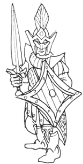
| M | WS | BS | S | T | W | I | A | Ld | Int | Cl | WP | |
|---|---|---|---|---|---|---|---|---|---|---|---|---|
| Dark Elf | 5 | 4 | 4 | 3 | 3 | 1 | 6 | 1 | 8 | 9 | 9 | 8 |
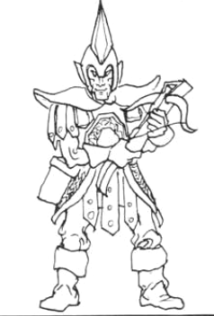
| M | WS | BS | S | T | W | I | A | Ld | Int | Cl | WP | |
|---|---|---|---|---|---|---|---|---|---|---|---|---|
| Dark Elf | 5 | 4 | 4 | 3 | 3 | 1 | 6 | 1 | 8 | 9 | 9 | 8 |
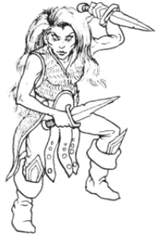
| M | WS | BS | S | T | W | I | A | Ld | Int | Cl | WP | |
|---|---|---|---|---|---|---|---|---|---|---|---|---|
| Dark Elf Scout | 5 | 4 | 4 | 3 | 3 | 1 | 6 | 1 | 8 | 9 | 9 | 8 |
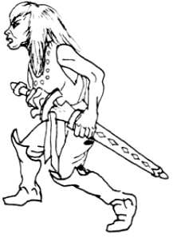
| M | WS | BS | S | T | W | I | A | Ld | Int | Cl | WP | |
|---|---|---|---|---|---|---|---|---|---|---|---|---|
| Dark Elf | 5 | 4 | 4 | 3 | 3 | 1 | 6 | 1 | 8 | 9 | 9 | 8 |
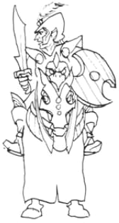
| M | WS | BS | S | T | W | I | A | Ld | Int | Cl | WP | |
|---|---|---|---|---|---|---|---|---|---|---|---|---|
| +3 Shock Elite | – | 5 | 4 | 4 | 3 | 1 | 7 | 1 | 8 | 9 | 9 | 8 |
| Cold One Mount | 8 | 3 | 0 | 4 | 4 | – | 1 | 2 | – | – | – | – |
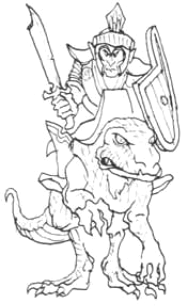
| M | WS | BS | S | T | W | I | A | Ld | Int | Cl | WP | |
|---|---|---|---|---|---|---|---|---|---|---|---|---|
| +2 Shock Elite | – | 5 | 4 | 3 | 3 | 1 | 7 | 1 | 8 | 9 | 9 | 8 |
| Warhorse | 8 | 3 | 0 | 4 | 3 | – | 1 | 1 | – | – | – | – |
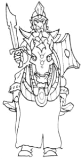
| M | WS | BS | S | T | W | I | A | Ld | Int | Cl | WP | |
|---|---|---|---|---|---|---|---|---|---|---|---|---|
| +1 Shock Elite | – | 5 | 4 | 3 | 3 | 1 | 6 | 1 | 8 | 9 | 9 | 8 |
| Cold One Mount | 8 | 3 | 0 | 4 | 4 | – | 1 | 2 | – | – | – | – |
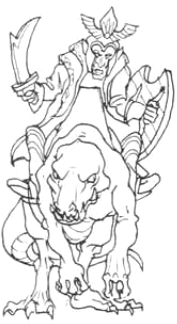
| M | WS | BS | S | T | W | I | A | Ld | Int | Cl | WP | |
|---|---|---|---|---|---|---|---|---|---|---|---|---|
| Dark Elf | ||||||||||||
| Animal Handler | 5 | 4 | 4 | 3 | 3 | 1 | 6 | 1 | 8 | 9 | 9 | 8 |
| Chaos Hounds | 6 | 4 | 0 | 4 | 4 | 2 | 4 | 2 | 6 | 4 | 6 | 6 |
| Warhounds | 6 | 3 | 0 | 3 | 3 | 1 | 4 | 1 | 6 | 4 | 6 | 4 |
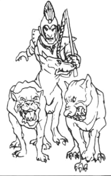
| M | WS | BS | S | T | W | I | A | Ld | Int | Cl | WP | |
|---|---|---|---|---|---|---|---|---|---|---|---|---|
| Altar Guards (2) | 5 | 4 | 4 | 3 | 3 | 1 | 6 | 1 | 8 | 9 | 9 | 8 |
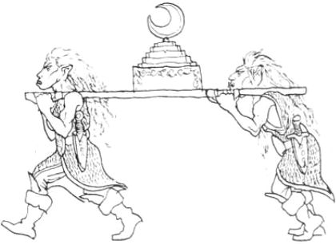
| M | WS | BS | S | T | W | I | A | Ld | Int | Cl | WP | |
|---|---|---|---|---|---|---|---|---|---|---|---|---|
| Dark Elf Crew (2) | 5 | 4 | 4 | 3 | 3 | 1 | 6 | 1 | 8 | 9 | 9 | 8 |
| Range | Strength | Save Mod. | Wounds/Hit | |
|---|---|---|---|---|
| Repeating Bolt Thrower | 24″ | 3 | 0 | 1 |
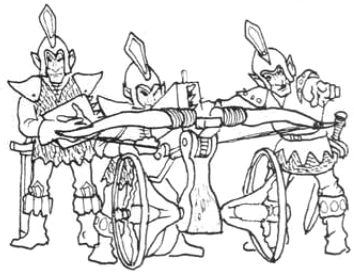
Skirmishers
The following units may operate as skirmishers if the player wishes. Skirmishing units must be noted down before the battle. The maximum size for a skirmishing unit is 15 for foot troops and 10 for mounted troops.
| Unit type | Max units |
|---|---|
| Crossbowmen | 2 |
| Shadows | 2 |
Baggage
The armies of Naggaroth are burdened with the countless instruments of ritual as well as the usual supplies and non-combatants. Great iron cauldrons, spits, tongs, cages and all the tools of torture will be needed once they have gained possession of the fields of slaughter. The baggage attendants comprise a great multitude of the very young, the old and the infirm. Among them will be a few ancient and malicious hagwitches, kindling the fires of spite and resentment.
A Dark Elf baggage train is represented by one wagon and 5 Elves per 1000 points worth of troops. These will have standard Dark Elf profiles, are unarmoured and use improvised weapons.
Hosts
A Dark Elf wizard may magically bind a Monstrous, Ethereal, or Chaotic host prior to the game. The player may spend up to one quarter of the army's total points on a host, using the rules in the Warhammer Bestiary (see Army Lists — Hosts).
| May contain: | Pts/model |
|---|---|
| Monstrous Host | |
| 0–20 Cold Ones | 22 |
| 0–30 Cold One Warhounds | 8 |
| 0–1 Dragons | 250–800 |
| 0–30 Giant Bats | 2 |
| 0–30 Giant Leeches | 6 |
| 0–8 Giant Scorpions | 45 |
| 0–8 Giant Spiders | 45 |
| 0–1 Swarms | 250 |
| 0–20 Warhounds | 4 |
| Ethereal Host | |
| 0–8 Ghosts | 50 |
| 0–1 Spectres | 200 |
| 0–1 Spectral Steed (for Spectre only) | 225 |
| 0–2 Wights | 100 |
| 0–2 Wraiths | 150 |
| Chaotic Host | |
| 0–6 Chaos Hounds | 23 |
| 0–1 Chimeras | 250 |
| 0–2 Cockatrices | 150 |
| 0–2 Griffons | 200 |
| 0–6 Harpies | 15 |
| 0–1 Hippogriff | 200 |
| 0–1 Hydra | 200 |
| 0–1 Jabberwock | 200 |
| 0–1 Manticore | 200 |
| 0–2 Wyverns | 180 |
Allies & Mercenaries
Allies: Dark Elves may seek allies among other evil or chaotic races. The player may spend up to one third of the army's total points on allies. The allies must be assembled using the Allies Section (p126), and chosen from the following contingents: Chaos Allies, Fimir, Skaven, Undead.
Mercenaries: Dark Elves sometimes offer a share in the spoils to vicious mercenary bands in return for their services in battle, thus attracting those who like booty as much as blood. The player may spend up to one third of the army's total points on mercenaries. Mercenaries must be assembled using the Mercenary Section (p150), and chosen from the following contingents: Nippon, Hobgoblins, Ogres.
Wood Elves
The Wood Elf Host — army list for the sylvan guardians of the Old World's ancient forests, masters of the longbow and wild beasts.
Background
Wood Elves dwell deep in the vast, trackless forests of the Old World. Although these forests may lie within human kingdoms, the hidden enclaves of the Wood Elves are so remote as to form separate realms apart. Living in small scattered communities, Wood Elves shun close contact with humankind, and are still more wary of Dwarfs. Their real enemies, however, are Goblins and servants of Chaos.
Wood Elf realms are able to muster small but formidable armies. They fight mainly to defend their own lands but then they are both tenacious and ruthless. The core of a Wood Elf army is its archers, many armed with the famed Elven longbows. Others train wild beasts or birds of prey as ferocious living weapons.
Wood Elf warriors wear woodland colours, which allows them to merge with the trees and undergrowth. Like all Elves, Wood Elves are ingenious and imaginative and, although their attire and armament may be made from simple woodland materials, it is elegant, robust, and exquisitely decorated.
Alignment: Wood Elf armies are Good.
Psychology: Treemen cause fear in living creatures under 10′ tall, and hate goblinoids.
Army Selection
| Force | Minimum | Maximum |
|---|---|---|
| Rank & File models | ⅓ Army's total PV | Whole army less 1 Hero |
| Character models | 1 Hero | ½ Army's total PV |
| Heroes | 1 model | |
| Wizards | 0 | 8 |
| Allies | 0 | ⅓ Army's total PV |
| Ethereal host | 0 | ¼ Army's total PV |
Wood Elves do not hire mercenaries, and rarely use baggage trains, although they may do so at no extra cost.
Character Models
Character models are heroes and wizards. The player may spend up to half of the army's total points value on character models, and must have at least one (ie, the General).
General: The army must be led by a General who will be the character model with the highest leadership characteristic.
Army Standard: The army is allowed one army standard which must be carried by a character model and paid for from the character model points allowance. Army standards cost 50 points.
Riding in Chariots: Character models may ride in chariots included as part of the Army's rank & file points allowance. This does not affect either the points value of the chariot or the character. Chariots carrying characters can be treated as separate units of 1 vehicle.
Points: The points costs given for characters are for a basic unarmoured model with a hand weapon. Characters should be provided with armament as depicted on the model and selected from the following list. If the model is carrying a piece of equipment not mentioned in the table, it may be ignored.
Character Profile — The Wood Elf Host
| Type | M | WS | BS | S | T | W | I | A | Ld | Int | Cl | WP | Pts |
|---|---|---|---|---|---|---|---|---|---|---|---|---|---|
| Elf (base) | 5 | 4 | 4 | 3 | 3 | 1 | 6 | 1 | 8 | 9 | 9 | 8 | 8 |
| 5 Hero | 5 | 5 | 5 | 4 | 3 | 1 | 7 | 2 | 8 | 9 | 9 | 8 | 48 |
| 10 Hero | 5 | 6 | 5 | 4 | 4 | 2 | 7 | 3 | 9+1 | 9 | 9 | 8 | 88 |
| 15 Hero | 5 | 6 | 5 | 4 | 4 | 3 | 8 | 3 | 10+2 | 9 | 10+1 | 9+1 | 128 |
| 20 Hero | 5 | 7 | 5 | 4 | 4 | 4 | 9 | 4 | 10+3 | 9 | 10+1 | 9+1 | 168 |
| 25 Hero | 5 | 7 | 6 | 4 | 4 | 4 | 9 | 4 | 10+3 | 10+2 | 10+2 | 10+2 | 208 |
| 5 Wizard | 5 | 5 | 4 | 4 | 3 | 1 | 6 | 1 | 8 | 10+1 | 10+1 | 9+1 | 78 |
| 10 Wizard | 5 | 5 | 4 | 4 | 3 | 2 | 7 | 1 | 9+1 | 10+2 | 10+1 | 10+2 | 118 |
| 15 Wizard | 5 | 6 | 4 | 4 | 4 | 3 | 7 | 1 | 10+2 | 10+2 | 10+2 | 10+2 | 203 |
| 20 Wizard | 5 | 6 | 5 | 4 | 4 | 4 | 8 | 1 | 10+2 | 10+3 | 10+2 | 10+3 | 303 |
| 25 Wizard | 5 | 7 | 6 | 4 | 4 | 4 | 9 | 1 | 10+3 | 10+3 | 10+3 | 10+3 | 418 |
| Treeman | 6 | 8 | 3 | 6 | 7 | 6 | 2 | 4 | 9 | 9 | 9 | 9 | 280 |
Base sizes: Infantry — 20mm × 20mm; Cavalry — 25mm × 50mm; Treemen — 40mm × 40mm.
Heroes
The army has a theoretical maximum of 24 hero models, but may spend no more than half its total points value on them. The maximum number of heroes available at each level and their points costs are given below:
| Maximum availability | Pts/model |
|---|---|
| 10 Glade Watchers (level 5 heroes) | 48 |
| 5 Guardians (level 10 heroes) | 88 |
| 4 Wood Lords (level 15 heroes) | 128 |
| 3 Sylvan Chieftains (level 20 heroes) | 168 |
| 2 Sylvan Kings (level 25 heroes) | 208 |
Champions: Level 5, 10 and 15 heroes must be assigned to specific units as leaders (unless designated as Army Standard Bearer). These 'hero-leaders' are referred to as champions. Champions are part of the unit they are assigned to and cannot leave it (see Characters — Champions).
Wizards
The army may contain a maximum of eight wizards. The maximum number of wizards available at each level and their points costs are given below. Wizards of any level may be assigned to units as champions, or may be left as independent characters, free to associate with any unit in the normal way.
| Maximum availability | Pts/model |
|---|---|
| 3 Woodfeys (level 5 wizards) | 78 |
| 3 Spellsingers (level 10 wizards) | 118 |
| 2 Sylphseers (level 15 wizards) | 203 |
| 2 Greenfeys (level 20 wizards) | 303 |
| 1 Dryad (level 25 wizard) | 418 |
Generating Spells
The number of spells available to each level of wizard is as follows:
| Character level | Magic level | Level 1 | Level 2 | Level 3 | Level 4 |
|---|---|---|---|---|---|
| 5 | 1 | 3 | 0 | 0 | 0 |
| 10 | 1 | 6 | 0 | 0 | 0 |
| 15 | 2 | 6 | 3 | 0 | 0 |
| 20 | 3 | 6 | 3 | 3 | 0 |
| 25 | 4 | 6 | 3 | 3 | 3 |
All spells are generated randomly from the appropriate spell level of the Battle Magic Chart. A Wood Elf wizard may substitute any Battle Magic spell for an Illusionist spell of the same level, and one Battle Magic spell from each level with an Elemental spell of the same level. Wood Elf wizards do not use Necromantic or Daemonic spells.
Magic Items for Characters
Characters can carry magical items by paying the points indicated on the Magic Items Chart (p13), paid for from the character model points allowance:
- Any character model may carry a single magic weapon with up to one magic attribute for every 5 'levels' of the character.
- Four character models may be equipped with any sort of magic missiles.
- Wizards may be equipped with up to three scrolls each. The scrolls may contain up to 4 different spells of level 3 or lower.
- Three of the army's character models may wear a ring with a spell of level 3 or lower.
- Two character models may be equipped with magic armour.
- The army standard may have up to three magical abilities.
Character Equipment Costs
| Item | Pts | Item | Pts |
|---|---|---|---|
| Close Combat Weapons | Riding Animals | ||
| Additional hand weapon | 1 | Horse | 3 |
| Double-handed weapons | 2 | Warhorse | 6 |
| Lance | 2 | Dragon 1 | 250 |
| Net | 1 | Dragon 2 | 350 |
| Spear | 1 | Dragon 3 | 450 |
| Missile Weapons | Dragon 4 | 550 | |
| Javelin | 1 | Dragon 5 | 650 |
| Long bow | 3 | Dragon 6 | 750 |
| Short bow | 1 | Winged Dragon | +50 |
| Throwing spear | 1 | Eagle | 75 |
| Armour | Unicorn (female riders only) | 80 | |
| Shield | 1 | ||
| Light armour | 2 | ||
| Heavy armour | 3 | ||
| Horse or warhorse barding | 4 |
Rank & File
At least a third of the army's total points value must be spent on rank & file troops. All units are automatically assumed to have a leader with the same profile as the rest of the unit.
Any unit may be given a unit standard bearer and/or a musician. Standard bearers and musicians must be equipped in exactly the same way as the rest of the unit, and cost twice the points value of a basic trooper.
Any unit indicated may convert an ordinary unit standard into a magic standard with a single ability. The ability may have a points value up to the amount shown and must be chosen and noted down before the game.
Any unit indicated may convert an ordinary musical instrument into a magic musical instrument with a single ability. All magical instruments cost an extra 25 pts as indicated below. The specific ability must be chosen and noted down before the game.
Unit Cards
| M | WS | BS | S | T | W | I | A | Ld | Int | Cl | WP | |
|---|---|---|---|---|---|---|---|---|---|---|---|---|
| +1 Shock Elite | – | 5 | 4 | 3 | 3 | 1 | 6 | 1 | 8 | 9 | 9 | 8 |
| Warhorse | 8 | 3 | 0 | 4 | 3 | – | 3 | 1 | – | – | – | – |
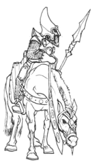
| M | WS | BS | S | T | W | I | A | Ld | Int | Cl | WP | |
|---|---|---|---|---|---|---|---|---|---|---|---|---|
| Elf (incl. horse) | 8* | 4 | 4 | 3 | 3 | 1 | 6 | 1 | 8 | 9 | 9 | 8 |
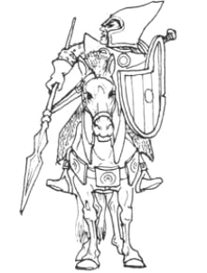
| Heavy Chariot | M | WS | BS | S | T | W | I | A | Ld | Int | Cl | WP |
|---|---|---|---|---|---|---|---|---|---|---|---|---|
| Elf Crew (4) | 5 | 4 | 3 | 3 | 1 | 6 | 1 | 8 | 9 | 9 | 8 | |
| Warhorse (4) | 8 | 3 | 0 | 4 | 3 | 1 | 3 | 1 | 3 | 3 | 3 | 3 |
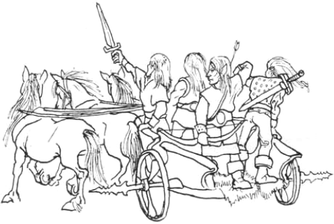
| M | WS | BS | S | T | W | I | A | Ld | Int | Cl | WP | |
|---|---|---|---|---|---|---|---|---|---|---|---|---|
| +2 Missile Elite | 5 | 4 | 5 | 3 | 3 | 1 | 7 | 1 | 8 | 9 | 9 | 8 |
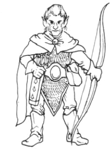
| M | WS | BS | S | T | W | I | A | Ld | Int | Cl | WP | |
|---|---|---|---|---|---|---|---|---|---|---|---|---|
| Elf Wardancer | 5 | 4 | 4 | 3 | 3 | 1 | 6 | 1 | 8 | 9 | 9 | 8 |
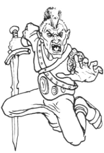
| M | WS | BS | S | T | W | I | A | Ld | Int | Cl | WP | |
|---|---|---|---|---|---|---|---|---|---|---|---|---|
| +1 Missile Elite | 5 | 4 | 5 | 3 | 3 | 1 | 6 | 1 | 8 | 9 | 9 | 8 |
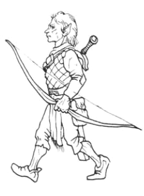
| M | WS | BS | S | T | W | I | A | Ld | Int | Cl | WP | |
|---|---|---|---|---|---|---|---|---|---|---|---|---|
| Elf Scout | 5 | 4 | 5 | 3 | 3 | 1 | 6 | 1 | 8 | 9 | 9 | 8 |
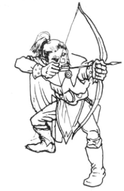
| M | WS | BS | S | T | W | I | A | Ld | Int | Cl | WP | |
|---|---|---|---|---|---|---|---|---|---|---|---|---|
| Elf | 5 | 4 | 4 | 3 | 3 | 1 | 6 | 1 | 8 | 9 | 9 | 8 |
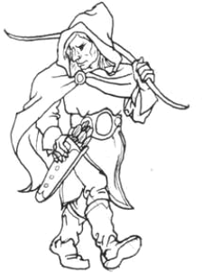
| M | WS | BS | S | T | W | I | A | Ld | Int | Cl | WP | |
|---|---|---|---|---|---|---|---|---|---|---|---|---|
| Elf | 5 | 4 | 4 | 3 | 3 | 1 | 6 | 1 | 8 | 9 | 9 | 8 |
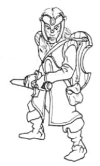
| M | WS | BS | S | T | W | I | A | Ld | Int | Cl | WP | |
|---|---|---|---|---|---|---|---|---|---|---|---|---|
| Elf | ||||||||||||
| Animal Handler | 5 | 4 | 4 | 3 | 3 | 1 | 6 | 1 | 8 | 9 | 9 | 8 |
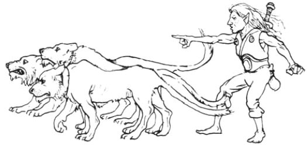
| M | WS | BS | S | T | W | I | A | Ld | Int | Cl | WP | |
|---|---|---|---|---|---|---|---|---|---|---|---|---|
| Elf Falconer | 5 | 4 | 4 | 3 | 3 | 1 | 6 | 1 | 8 | 9 | 9 | 8 |
| Hawk | – | 5 | 5 | 2 | – | – | – | 1 | – | – | – | – |
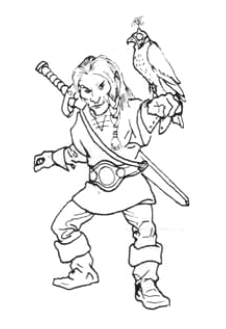
| M | WS | BS | S | T | W | I | A | Ld | Int | Cl | WP | |
|---|---|---|---|---|---|---|---|---|---|---|---|---|
| Elf Shapechanger | 5 | 4 | 4 | 3 | 3 | 1 | 6 | 1 | 8 | 9 | 9 | 8 |
| Giant Wolf* | 9 | 4 | 0 | 3 | 3 | 1 | 3 | 2* | 3 | 4 | 4 | 4 |
| Boar* | 7 | 3 | 0 | 3 | 3 | 1 | 3 | 2* | 3 | 4 | 4 | 4 |
| Bear* | 4 | 3 | 0 | 4 | 4 | 2 | 3 | 3* | 6 | 3 | 6 | 6 |
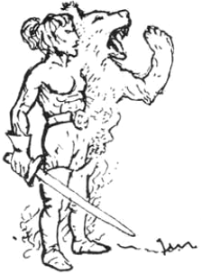
| M | WS | BS | S | T | W | I | A | Ld | Int | Cl | WP | |
|---|---|---|---|---|---|---|---|---|---|---|---|---|
| Treeman | 6 | 8 | 3 | 6 | 7 | 6 | 2 | 4 | 9 | 9 | 9 | 9 |
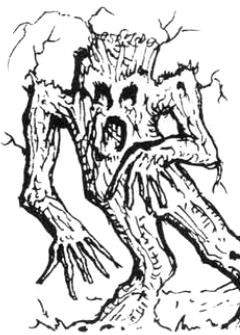
Skirmishers
The following units may operate as skirmishers if the player wishes. Skirmishing units must be noted down before the battle. The maximum size for a skirmishing unit is 15 for foot troops and 10 for mounted troops.
| Unit type | Max skirmishing units |
|---|---|
| Elven Riders | 1 |
| Archers | 2 |
| Lord's Bowmen | 2 |
| Glade Runners | Any |
Baggage
Wood Elves rarely employ baggage trains except when campaigning far from their woodland homes. A Wood Elf baggage train is represented by one wagon and 5 civilians per 1000 points in the army. Civilians have standard Wood Elf profiles, are unarmoured and use improvised weapons.
Hosts
A Wood Elf wizard may magically bind either a Monstrous or Ethereal host prior to the game. The player may spend up to one quarter of the army's total points on hosts. The host is assembled using the rules in the Warhammer Bestiary (see Army Lists — Hosts).
Ethereal hosts will comprise the shades of 'faded' Wood Elves, lingering among the leafy glades, silently watching over the woodland paths as ghostly guardians and coming to the aid of their living kindred in time of need. These may be represented by Elf models suitably painted in ethereal colours.
| May contain: | Pts/model |
|---|---|
| Monstrous Host | |
| 0–20 Bears | 20 |
| 0–40 Boars | 6 |
| 0–1 Dragons | 250–800 |
| 0–5 Eagles | 75 |
| 0–1 Swarms | 250 |
| 0–20 Warhounds | 4 |
| Ethereal Host | |
| 0–5 Ghosts | 50 |
| 0–1 Spectres | 200 |
| 0–1 Spectral mounts | +25* |
| 0–2 Wights | 100 |
| 0–2 Wraiths | 150 |
* Spectral mounts may only be included as steeds for Spectres.
Allies
The natural allies of Wood Elves are other 'good' Elves and other inhabitants of the forests. The player may spend up to one third of the army's total points on allies. The allies must be assembled using the Allies Section (p126) and should be chosen from the following: High Elves, Halflings, Zoats.
Wood Elves do not hire mercenaries.
High Elves
The War Host of Ulthuan — army list for the proud kingdoms of the Elven isle, from Silver Helm cavalry to Elven Dragonkin and the chariots of the nobles.
Background
The continental island of Ulthuan is the homeland of the Elven kindred. It is not one, but many Kingdoms, each ruled by its own King and nobles. Foremost among these is the great maritime kingdom of Eatain and its glittering capitol of Lothern. The Lord of Lothern is generally accorded the title of Elven King, acknowledging his supremacy over all the other lands of Ulthuan.
But by far the greatest threat to the Elven Kingdoms comes in the form of seaborne raids from either Dark Elves or Norse. It is the Elves dwelling upon the northern shores who endure the greatest threat, whilst those that live beyond the sheltering mountains upon the inner plains remain untouched by the torments of the wider world. The Elves of the coastal realms are great sea-farers, traders and warriors. They are known as Sea Elves and it is their constant vigilance that preserves the Elven lands from invasion.
The Elves that live upon the inner plains of Ulthuan are commonly called High Elves. They are a proud people, and intolerant of lesser races. High Elves prefer to fight mounted, or in chariots, alongside their immediate kinfolk. Cavalry squadrons may therefore carry a family's coat-of-arms, dress in its traditional colour, and present a fairly uniform appearance. Other regiments are recruited from individual cities or settlements.
All Elves are superb craftsmen, excelling in whatever they do. Their arms and armour is wrought with precious metals and sparkling gems. Cloth of gold may be richly embroidered and strewn with pearls to make a standard, while swordblades and spearheads may be plated with silver. Elven armies include many musicians, and Elven warriors sing as they march into battle.
Alignment: Armies of the Elven Kingdoms are Good.
Army Selection
| Force | Minimum | Maximum |
|---|---|---|
| Rank & File models | ⅓ Army's total PV | Whole army less 1 Hero |
| Character models | 1 Hero | ⅔ Army's total PV |
| Heroes | 1 model | |
| Wizards | 0 | 5 models |
| Allies | 0 | ⅓ Army's total PV |
| Ethereal or Monstrous host | 0 | ¼ Army's total PV |
The army may have a baggage train at no extra cost. High Elves do not employ mercenaries.
Character Models
Character models are heroes and wizards. The player may spend up to two-thirds of the army's total points value on character models, and must have at least 1 (ie, the General).
General: The army must be led by a General who will be the character model with the highest leadership characteristic.
Army Standard: The army is allowed one army standard which must be carried by a character model and paid for from the character model points allowance. Army standards cost 50 points.
Riding in Chariots: Character models may ride in chariots included as part of the army's rank & file points allowance. This does not affect either the points value of the chariot or the character. Chariots carrying characters can be treated as separate units of 1 model.
Points: The values given for characters are for a basic unarmoured model with a hand weapon. Characters should be provided with armament as depicted on the model and selected from the following list. If the model is carrying a piece of equipment not mentioned in the table, it may be ignored.
Character Profile — War Host of Ulthuan
| Type | M | WS | BS | S | T | W | I | A | Ld | Int | Cl | WP | Pts |
|---|---|---|---|---|---|---|---|---|---|---|---|---|---|
| Elf (base) | 5 | 4 | 4 | 3 | 3 | 1 | 6 | 1 | 8 | 9 | 9 | 8 | 8 |
| 5 Hero | 5 | 5 | 5 | 4 | 3 | 1 | 7 | 2 | 8 | 9 | 9 | 8 | 48 |
| 10 Hero | 5 | 6 | 5 | 4 | 4 | 2 | 7 | 3 | 9+1 | 9 | 9 | 8 | 88 |
| 15 Hero | 5 | 6 | 5 | 4 | 4 | 3 | 8 | 3 | 10+2 | 9 | 10+1 | 9+1 | 128 |
| 20 Hero | 5 | 7 | 5 | 4 | 4 | 4 | 9 | 4 | 10+3 | 9 | 10+1 | 9+1 | 168 |
| 25 Hero | 5 | 7 | 6 | 4 | 4 | 4 | 9 | 4 | 10+3 | 10+2 | 10+2 | 10+2 | 208 |
| 5 Wizard | 5 | 5 | 4 | 4 | 3 | 1 | 6 | 1 | 8 | 10+1 | 10+1 | 9+1 | 78 |
| 10 Wizard | 5 | 5 | 4 | 4 | 3 | 2 | 7 | 1 | 9+1 | 10+2 | 10+1 | 10+2 | 118 |
| 15 Wizard | 5 | 6 | 4 | 4 | 4 | 3 | 7 | 1 | 10+2 | 10+2 | 10+2 | 10+2 | 203 |
| 20 Wizard | 5 | 6 | 5 | 4 | 4 | 4 | 8 | 1 | 10+2 | 10+3 | 10+2 | 10+3 | 303 |
| 25 Wizard | 5 | 7 | 6 | 4 | 4 | 4 | 9 | 1 | 10+3 | 10+3 | 10+3 | 10+3 | 418 |
Base sizes: Infantry — 20mm × 20mm; Cavalry — 25mm × 50mm.
Heroes
The army may contain up to 18 hero models. The maximum number of heroes available at each level and their points costs are given below:
| Maximum availability | Pts/model |
|---|---|
| 6 Kinthanes (level 5 heroes) | 48 |
| 5 Earls (level 10 heroes) | 88 |
| 4 Kinlords (level 15 heroes) | 128 |
| 2 Princes (level 20 heroes) | 168 |
| 1 Suzerain (level 25 hero) | 208 |
Champions: Level 5, 10 and 15 heroes must be assigned to specific units as leaders (unless designated as Army Standard Bearer). These 'hero-leaders' are referred to as champions. Champions are part of the unit they are assigned to and cannot leave it (see Characters — Champions).
Wizards
The army may contain up to five wizards. The maximum number of wizards available at each level and their points costs are given below. Wizards of any level may be assigned to units as champions, or may be left as independent characters, free to associate with any unit in the normal way.
| Maximum availability | Pts/model |
|---|---|
| 3 Incantors (level 5 wizards) | 78 |
| 3 Spellbards (level 10 wizards) | 118 |
| 3 Feys (level 15 wizards) | 203 |
| 2 Dreamguilers (level 20 wizards) | 303 |
| 1 Elven Mage (level 25 wizard) | 418 |
Generating Spells
The number of spells available to each level of wizard is as follows:
| Character level | Magic level | Level 1 | Level 2 | Level 3 | Level 4 |
|---|---|---|---|---|---|
| 5 | 1 | 3 | 0 | 0 | 0 |
| 10 | 1 | 6 | 0 | 0 | 0 |
| 15 | 2 | 6 | 3 | 0 | 0 |
| 20 | 3 | 6 | 3 | 3 | 0 |
| 25 | 4 | 6 | 3 | 3 | 3 |
All spells are generated randomly from the Battle Magic chart. An Elven wizard may also use other sorts of magic if the player chooses. High Elf wizards may replace one Battle Magic spell from each level with either an Illusionist, Elemental, Daemonic, or Necromantic spell of the same level. Sea Elf wizards may replace one Battle Magic spell from each level with an Illusionist, Daemonic, or Elemental spell of the same level. They may not use Necromantic spells.
Magic Items for Characters
Characters can also carry a limited number of magical items by paying the points indicated on the Magic Items Chart (p13), paid for from the character model points allowance:
- Any character model may carry one magic weapon with up to one magic attribute for every 5 'levels' of the character.
- Character models may be equipped with any sort of magic missiles.
- Wizards may be equipped with up to three scrolls each. Each scroll may contain up to 4 different spells of level 3 or lower.
- Four character models may wear a single ring with a spell of level 3 or lower.
- Two character models may be equipped with magic armour.
- The army standard may have up to 2 magical abilities.
Character Equipment Costs
| Item | Pts | Item | Pts |
|---|---|---|---|
| Close Combat Weapons | Riding Animals | ||
| Additional hand weapon | 1 | Horse | 3 |
| Double-handed weapon | 2 | Warhorse | 6 |
| Flail | 1 | Pegasus | 14 |
| Halberd | 2 | War Beasts | |
| Lance | 2 | Dragon 1 | 250 |
| Spear | 1 | Dragon 2 | 350 |
| Missile Weapons | Dragon 3 | 450 | |
| Bow | 2 | Dragon 4 | 550 |
| Crossbow | 3 | Dragon 5 | 650 |
| Darts | 1 | Extra for winged dragon | +50 |
| Javelin | 1 | Griffon | 200 |
| Long bow | 3 | Hippogriff | 200 |
| Throwing spear | 1 | Unicorn (female riders only) | 80 |
| Armour | |||
| Shield | 1 | ||
| Light armour | 2 | ||
| Heavy armour | 3 | ||
| Horse or warhorse barding | 4 | ||
| Mithril light armour | 52 |
Rank & File
At least a third of the army's total points value must be spent on rank & file troops. All units are automatically assumed to have a leader with the same profile as the rest of the unit.
Any unit may be given a unit standard bearer and/or a musician. Standard bearers and musicians must be equipped in exactly the same way as the rest of the unit, but cost twice the points value of a basic trooper.
Any unit indicated may convert an ordinary standard into a magic standard with a single ability. The ability may have a points value up to the amount shown. The specific ability must be chosen and noted down before the game.
Any unit indicated may convert an ordinary musical instrument into a magic musical instrument with a single ability. All magical instruments cost an extra 25 pts as indicated. The specific ability must be chosen and noted down before the game.
Unit Cards
| M | WS | BS | S | T | W | I | A | Ld | Int | Cl | WP | |
|---|---|---|---|---|---|---|---|---|---|---|---|---|
| +4 Shock Elite | – | 5 | 4 | 4 | 3 | 1 | 7 | 2 | 8 | 9 | 9 | 8 |
| Dragon 1 (Winged) | 6 | 4 | 0 | 5 | 5 | 7 | 2 | 6 | – | – | – | – |
| Min | Max | Acc/Dec | |
|---|---|---|---|
| Flying Profile | 8″ | 32″ | 4″ |
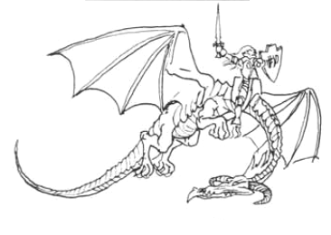
| M | WS | BS | S | T | W | I | A | Ld | Int | Cl | WP | |
|---|---|---|---|---|---|---|---|---|---|---|---|---|
| +3 Shock Elite | – | 5 | 4 | 4 | 3 | 1 | 7 | 1 | 8 | 9 | 9 | 8 |
| Warhorse | 8 | 3 | 0 | 4 | 3 | – | 3 | 1 | – | – | – | – |
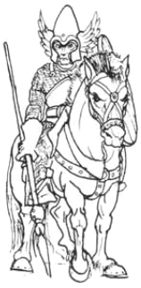
| M | WS | BS | S | T | W | I | A | Ld | Int | Cl | WP | |
|---|---|---|---|---|---|---|---|---|---|---|---|---|
| +1 Shock Elite (incl. horse) | 8* | 5 | 4 | 3 | 3 | 1 | 6 | 1 | 8 | 9 | 9 | 8 |
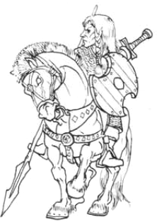
| Heavy Chariot | M | WS | BS | S | T | W | I | A | Ld | Int | Cl | WP |
|---|---|---|---|---|---|---|---|---|---|---|---|---|
| Elf Crew (4) | – | 4 | 4 | 3 | 3 | 1 | 6 | 1 | 8 | 9 | 9 | 8 |
| Warhorse (4) | 8 | 3 | 0 | 4 | 3 | – | 3 | 1 | – | – | – | – |
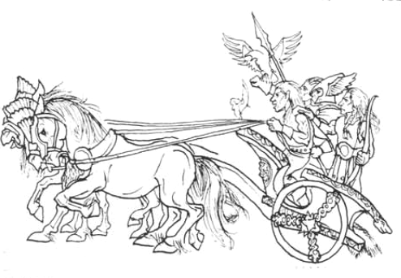
| M | WS | BS | S | T | W | I | A | Ld | Int | Cl | WP | |
|---|---|---|---|---|---|---|---|---|---|---|---|---|
| +1 Missile Elite | 5 | 4 | 5 | 3 | 3 | 1 | 6 | 1 | 8 | 9 | 9 | 8 |
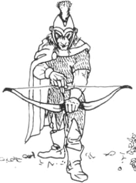
| M | WS | BS | S | T | W | I | A | Ld | Int | Cl | WP | |
|---|---|---|---|---|---|---|---|---|---|---|---|---|
| Elf | 5 | 4 | 4 | 3 | 3 | 1 | 6 | 1 | 8 | 9 | 9 | 8 |
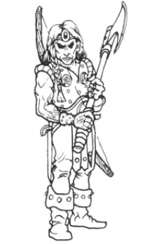
| M | WS | BS | S | T | W | I | A | Ld | Int | Cl | WP | |
|---|---|---|---|---|---|---|---|---|---|---|---|---|
| +1 Shock Elite | 5 | 5 | 5 | 4 | 3 | 1 | 6 | 1 | 8 | 9 | 9 | 8 |
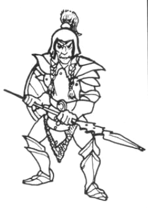
| M | WS | BS | S | T | W | I | A | Ld | Int | Cl | WP | |
|---|---|---|---|---|---|---|---|---|---|---|---|---|
| Elf | 5 | 4 | 4 | 3 | 3 | 1 | 6 | 1 | 8 | 9 | 9 | 8 |
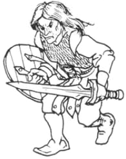
| M | WS | BS | S | T | W | I | A | Ld | Int | Cl | WP | |
|---|---|---|---|---|---|---|---|---|---|---|---|---|
| Elf | 5 | 4 | 4 | 3 | 3 | 1 | 6 | 1 | 8 | 9 | 9 | 8 |
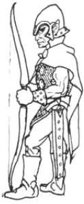
| M | WS | BS | S | T | W | I | A | Ld | Int | Cl | WP | |
|---|---|---|---|---|---|---|---|---|---|---|---|---|
| Elf | 5 | 4 | 4 | 3 | 3 | 1 | 6 | 1 | 8 | 9 | 9 | 8 |
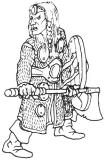
| M | WS | BS | S | T | W | I | A | Ld | Int | Cl | WP | |
|---|---|---|---|---|---|---|---|---|---|---|---|---|
| Elf Wardancer | 5 | 4 | 4 | 3 | 3 | 1 | 6 | 1 | 8 | 9 | 9 | 8 |
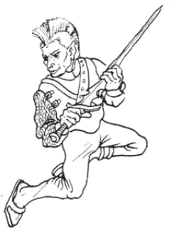
| M | WS | BS | S | T | W | I | A | Ld | Int | Cl | WP | |
|---|---|---|---|---|---|---|---|---|---|---|---|---|
| Elf Scout | 5 | 4 | 4 | 3 | 3 | 1 | 6 | 1 | 8 | 9 | 9 | 8 |
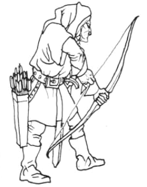
| M | WS | BS | S | T | W | I | A | Ld | Int | Cl | WP | |
|---|---|---|---|---|---|---|---|---|---|---|---|---|
| Elf Crew (3) | 5 | 4 | 4 | 3 | 3 | 1 | 6 | 1 | 8 | 9 | 9 | 8 |
| Range | Strength | Save Mod. | Wounds/Hit | |
|---|---|---|---|---|
| Bolt Thrower | 48″ | 5 | −2 | D4 |
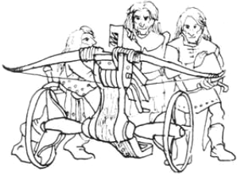
Skirmishers
The following units may operate as skirmishers if the player wishes. Skirmishing units must be noted down before the battle. The maximum size for a skirmishing unit is 15 for foot troops and 10 for mounted troops.
| Unit type | Max skirmishing units |
|---|---|
| Shore Riders | 2 |
| Warrior Kin | 1 |
| Archers | 1 |
| Seekers | Any |
Baggage
High Elves often bring with them many servants, minstrels, bards and other attendants to entertain them in their magnificent tents while on campaign. Sea Elves frequently venture far inland and need to bring provisions and trade goods with them. An Elven baggage train is represented by one wagon and 5 non-warrior Elves per 1000 points' worth of troops. These civilians will have standard Elf profiles, are unarmoured and use improvised weapons.
Hosts
An Elven wizard may magically bind a monstrous or ethereal host prior to the game. The player may spend up to one quarter of the army's total points on a host, which must be assembled using the rules in the Warhammer Bestiary (see Army Lists — Hosts).
Ethereal hosts comprise the shades of 'faded' Elves, who perished leaving some great task undone or an obligation unfulfilled. They cannot truly rest until they have set at ease their souls. They may come forth at the behest of an Elven wizard to slay the foe they seek or avenge the friends they lost.
| May contain: | Pts/model |
|---|---|
| Monstrous Host | |
| 0–20 Bears | 20 |
| 0–40 Boars | 6 |
| 0–2 Dragons | 250–800 |
| 0–5 Eagles | 75 |
| 0–1 Swarms | 250 |
| 0–20 Warhounds | 4 |
| Ethereal Host | |
| 0–6 Ghosts | 50 |
| 0–2 Spectres | 200 |
| 0–2 Spectral mounts | +25* |
* Spectral mounts may only be used if the host contains Spectres.
Allies
The natural allies of High Elves and Sea Elves are their rustic sylvan kindred from the Old and New Worlds — the Wood Elves. They have many warlike skills and unusual warriors which are sometimes requested by the lords of the Elven Kingdoms. The player may spend up to a third of the army's total points value on a Wood Elf allied contingent (and no others). The allies must be assembled using the Allies Section (p126).
High Elves do not employ mercenaries.
The Empire
The Army of the Empire — knights, halberdiers, artillery and levies of the greatest realm in the Old World.
Background
The Empire is the largest and most powerful realm in the Old World. It comprises several states or provinces ruled by Electors; provincial nobles responsible for electing one of their number as Emperor. The Emperor maintains his own Imperial Guard, and each province within The Empire also raises small standing armies, supplemented by town militia and peasant levies. In addition to these forces, there are the feudal retinues of provincial nobles and the various secular and religious orders of knighthood.
An army might represent either the full military might of the Empire, led by the Emperor at the head of the Imperial Guard and supported by Templars of all the knightly orders, or just the standing army of a single Elector state, bolstered by mercenary contingents or Templars of the local cult. Although the Empire is united under a strong leader, this has not always been so; city rivalries and religious disputes continue to fester and civil war could still break out.
The wide variety of troops in the Imperial Army reflects the diversity of culture and complex political organisation of this large realm. The core of the army is composed of good quality professional soldiers, well trained and well armed. They are ably supported by reliable mounted knights; grim, coldly efficient warriors epitomised by the religious Knightly Orders or Templars.
Alignment: Imperial armies are Neutral.
Psychology: Flagellants (see Special Troop Types — Berserkers) are subject to frenzy and hate all Chaotics.
Army Selection
| Force | Minimum | Maximum |
|---|---|---|
| Rank & File models | ⅓ Army's total PV | Whole army less 1 Hero |
| Character models | 1 Hero | ½ Army's total PV |
| Heroes | 1 model | |
| Wizards | 0 | 4 models |
| Allies | 0 | ⅓ Army's total PV |
| Mercenaries | 0 | ½ Army's total PV |
| Monstrous host | 0 | ¼ Army's total PV |
The army may have a baggage train at no extra cost.
Character Models
Character models are heroes and wizards. The player may spend up to half of the army's total points value on character models. An Imperial army may have up to 20 character models and must have at least 1 (i.e. the General).
General: The army must be led by a General who will be the character model with the highest leadership characteristic.
Army Standard: The army is allowed one army standard which must be carried by a character model and paid for from the character model points allowance. Army standards cost 50 points.
Points: The points cost given for characters are for a basic unarmoured model with a hand weapon. Characters should be provided with armament as depicted on the model and selected from the following list. If the model is carrying a piece of equipment not mentioned in the table, it may be ignored.
Character Profile — The Army of the Empire
| Type | M | WS | BS | S | T | W | I | A | Ld | Int | Cl | WP | Pts |
|---|---|---|---|---|---|---|---|---|---|---|---|---|---|
| Human (base) | 4 | 3 | 3 | 3 | 3 | 1 | 3 | 1 | 7 | 7 | 7 | 7 | 5 |
| 5 Hero | 4 | 4 | 4 | 4 | 3 | 1 | 4 | 2 | 7 | 7 | 7 | 7 | 30 |
| 10 Hero | 4 | 5 | 4 | 4 | 4 | 2 | 4 | 3 | 8+1 | 7 | 7 | 7 | 55 |
| 15 Hero | 4 | 5 | 4 | 4 | 4 | 3 | 5 | 3 | 9+2 | 7 | 8+1 | 8+1 | 80 |
| 20 Hero | 4 | 6 | 4 | 4 | 4 | 4 | 6 | 4 | 10+3 | 7 | 8+1 | 8+1 | 105 |
| 25 Hero | 4 | 6 | 5 | 4 | 4 | 4 | 6 | 4 | 10+3 | 9+2 | 9+2 | 9+2 | 130 |
| 5 Wizard | 4 | 4 | 3 | 4 | 3 | 1 | 3 | 1 | 7 | 8+1 | 8+1 | 8+1 | 60 |
| 10 Wizard | 4 | 4 | 3 | 4 | 3 | 2 | 4 | 1 | 8+1 | 9+2 | 8+1 | 9+2 | 85 |
| 15 Wizard | 4 | 5 | 3 | 4 | 4 | 3 | 4 | 1 | 9+2 | 9+2 | 9+2 | 9+2 | 155 |
| 20 Wizard | 4 | 5 | 4 | 4 | 4 | 5 | 1 | 1 | 9+2 | 10+3 | 10+3 | 10+3 | 240 |
| 25 Wizard | 4 | 6 | 5 | 4 | 4 | 4 | 6 | 1 | 10+3 | 10+3 | 10+3 | 10+3 | 340 |
Base size: Infantry — 20mm × 20mm; Cavalry — 25mm × 50mm.
Heroes
The army may contain up to 16 hero models. The maximum number of heroes available at each level and their points costs are given below:
| Maximum availability | Pts/model |
|---|---|
| 6 Grafs (level 5 heroes) | 30 |
| 4 Baronen (level 10 heroes) | 55 |
| 3 Margrafs (level 15 heroes) | 80 |
| 2 Counts (level 20 heroes) | 105 |
| 1 Hochmarschall (level 25 hero) | 130 |
Champions: Level 5, 10 and 15 heroes must be assigned to specific units as leaders, unless designated as the Army Standard Bearer. These 'hero-leaders' are referred to as champions. Champions are part of the unit they are assigned to and cannot leave it (see Characters — Champions).
Bombardiers (see Special Troop Types — Bombardiers): One hero model may be a Bombardier, a skilled master gunner assigned to the artillery. A Bombardier costs an additional 20 points and is considered to be the champion of an individual artillery battery, irrespective of his level.
Wizards
The army may contain up to four wizards. The maximum number of wizards available at each level and their points costs are given below. Wizards of any level may be assigned to units as champions, or may be left as independent characters, free to associate with any unit in the normal way.
| Maximum availability | Pts/model |
|---|---|
| 2 Zauberer (level 5 wizards) | 60 |
| 2 Schwarzmantels (level 10 wizards) | 85 |
| 1 Hohenhexe (level 15 wizard) | 155 |
| 1 Zaubermiester (level 20 wizard) | 240 |
| 1 Kultmiester (level 25 wizard) | 340 |
Generating Spells
The number of spells available to each level of wizard is as follows:
| Character level | Magic level | Level 1 | Level 2 | Level 3 | Level 4 |
|---|---|---|---|---|---|
| 5 | 1 | 3 | 0 | 0 | 0 |
| 10 | 1 | 6 | 0 | 0 | 0 |
| 15 | 2 | 6 | 3 | 0 | 0 |
| 20 | 3 | 6 | 3 | 3 | 0 |
| 25 | 4 | 6 | 3 | 3 | 3 |
All spells are generated randomly from the appropriate spell level of the Battle Magic Chart. A wizard may also use other forms of magic if the player chooses. A wizard may substitute Illusionist or Elemental spells for any or all Battle Magic spells. A wizard may substitute one Necromantic spell and one Daemonic spell for equivalent level Battle Magic spells.
Magic Items for Characters
Characters can carry magical items paying the points indicated on the Magic Items Chart (p13), paid for from the character model points allowance:
- Any character model may carry one magic weapon with up to one magic attribute for every 5 'levels' of the character.
- The army's wizards may be equipped with up to three scrolls each. The scrolls may contain up to two different spells of level 3 or lower.
- Two of the army's character models may each wear a single ring with a spell of level 2 or lower.
- One character model may be equipped with magic armour.
- One magical ability for the army standard.
Character Equipment Costs
| Item | Pts | Item | Pts |
|---|---|---|---|
| Close Combat Weapons | Armour | ||
| Additional hand weapon | 1 | Shield | 1 |
| Double-handed weapon | 2 | Light armour | 2 |
| Flail | 1 | Heavy armour | 3 |
| Halberd | 2 | Horse or Warhorse barding | 4 |
| Lance | 2 | Riding Animals | |
| Pike | 1 | Horse | 3 |
| Spear | 1 | Warhorse | 6 |
| Missile Weapons | Pegasus | 14 | |
| Arquebus | 3 | War Beasts | |
| Blunderbuss | 2 | Unicorn (female riders only) | 80 |
| Bow | 2 | ||
| Crossbow | 3 | ||
| Long bow | 3 | ||
| Pistol | 2 | ||
| Short bow | 1 | ||
| Throwing spear | 1 |
Rank & File
At least a third of the army's total points value must be spent on rank & file troops. All units are automatically assumed to have a leader with the same profile as the rest of the unit. All models are Human, unless stated otherwise.
Any unit may be given a standard bearer and/or a musician. Standard bearers and musicians must be equipped in exactly the same way as the rest of the unit. Standard bearers and musicians cost twice the points value of a basic trooper.
Any unit indicated may convert an ordinary unit standard into a magic standard with a single ability. The ability may have a points value up to the amount shown. The specific ability must be chosen and noted down before the game.
Any unit indicated may convert an ordinary musical instrument into a magic musical instrument with a single ability. All magical instruments cost an extra 25 points as indicated. The specific ability must be chosen and noted down before the game.
Unit Cards
| M | WS | BS | S | T | W | I | A | Ld | Int | Cl | WP | |
|---|---|---|---|---|---|---|---|---|---|---|---|---|
| +3 Shock Elite | – | 4 | 3 | 4 | 3 | 1 | 4 | 1 | 7 | 7 | 7 | 7 |
| Warhorse | 8 | 3 | 0 | 4 | 3 | – | 3 | 1 | – | – | – | – |
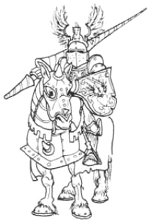
| M | WS | BS | S | T | W | I | A | Ld | Int | Cl | WP | |
|---|---|---|---|---|---|---|---|---|---|---|---|---|
| Human | – | 3 | 3 | 3 | 3 | 1 | 3 | 1 | 7 | 7 | 7 | 7 |
| Warhorse | 8 | 3 | 0 | 4 | 3 | – | 3 | 1 | – | – | – | – |
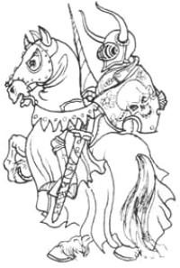
| M | WS | BS | S | T | W | I | A | Ld | Int | Cl | WP | |
|---|---|---|---|---|---|---|---|---|---|---|---|---|
| +2 Shock Elite | – | 4 | 3 | 3 | 3 | 1 | 4 | 1 | 7 | 7 | 7 | 7 |
| Warhorse | 8 | 3 | 0 | 4 | 3 | – | 3 | 1 | – | – | – | – |
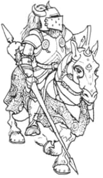
| M | WS | BS | S | T | W | I | A | Ld | Int | Cl | WP | |
|---|---|---|---|---|---|---|---|---|---|---|---|---|
| Human (incl. horse) | 8* | 3 | 3 | 3 | 3 | 1 | 3 | 1 | 7 | 7 | 7 | 7 |
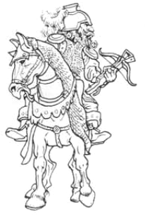
| M | WS | BS | S | T | W | I | A | Ld | Int | Cl | WP | |
|---|---|---|---|---|---|---|---|---|---|---|---|---|
| +2 Shock Elite | 4 | 4 | 3 | 3 | 3 | 1 | 4 | 1 | 7 | 7 | 7 | 7 |
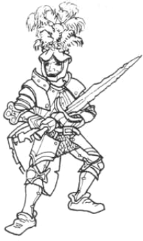
| M | WS | BS | S | T | W | I | A | Ld | Int | Cl | WP | |
|---|---|---|---|---|---|---|---|---|---|---|---|---|
| Human | 4 | 3 | 3 | 3 | 3 | 1 | 3 | 1 | 7 | 7 | 7 | 7 |
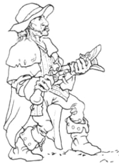
| M | WS | BS | S | T | W | I | A | Ld | Int | Cl | WP | |
|---|---|---|---|---|---|---|---|---|---|---|---|---|
| Human | 4 | 3 | 3 | 3 | 3 | 1 | 3 | 1 | 7 | 7 | 7 | 7 |
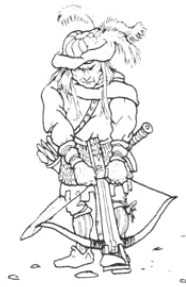
| M | WS | BS | S | T | W | I | A | Ld | Int | Cl | WP | |
|---|---|---|---|---|---|---|---|---|---|---|---|---|
| Human | 4 | 3 | 3 | 3 | 3 | 1 | 3 | 1 | 7 | 7 | 7 | 7 |
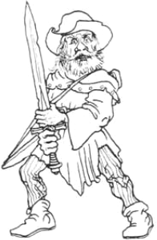
| M | WS | BS | S | T | W | I | A | Ld | Int | Cl | WP | |
|---|---|---|---|---|---|---|---|---|---|---|---|---|
| Human | 4 | 3 | 3 | 3 | 3 | 1 | 3 | 1 | 7 | 7 | 7 | 7 |
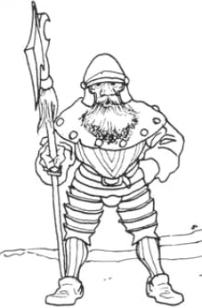
| M | WS | BS | S | T | W | I | A | Ld | Int | Cl | WP | |
|---|---|---|---|---|---|---|---|---|---|---|---|---|
| Human Levy | 4 | 2 | 2 | 3 | 3 | 1 | 2 | 1 | 6 | 6 | 6 | 6 |
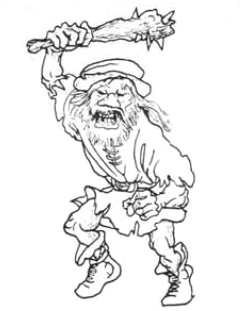
| M | WS | BS | S | T | W | I | A | Ld | Int | Cl | WP | |
|---|---|---|---|---|---|---|---|---|---|---|---|---|
| Human Scout | 4 | 3 | 3 | 3 | 3 | 1 | 3 | 1 | 7 | 7 | 7 | 7 |
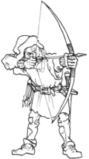
| M | WS | BS | S | T | W | I | A | Ld | Int | Cl | WP | |
|---|---|---|---|---|---|---|---|---|---|---|---|---|
| Human Flagellant | 4 | 3 | 3 | 3 | 3 | 1 | 3 | 1 | 7 | 7 | 7 | 7 |
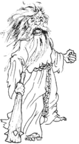
| M | WS | BS | S | T | W | I | A | Ld | Int | Cl | WP | |
|---|---|---|---|---|---|---|---|---|---|---|---|---|
| Human Forester | 4 | 3 | 3 | 3 | 3 | 1 | 3 | 1 | 7 | 7 | 7 | 7 |
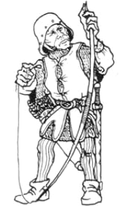
| M | WS | BS | S | T | W | I | A | Ld | Int | Cl | WP | |
|---|---|---|---|---|---|---|---|---|---|---|---|---|
| Human Crew (3) | 4 | 3 | 3 | 3 | 3 | 1 | 3 | 1 | 7 | 7 | 7 | 7 |
| Range | Strength (up to 12″) | Save Mod. | Wounds/Hit | |
|---|---|---|---|---|
| Cannon | 48″ | 7 | −3 | 1D4 |
Skirmishers
The following units may operate as skirmishers if the player wishes. Skirmishing units must be noted down before the battle. The maximum size for a skirmishing unit is 15 for foot troops and 10 for mounted troops.
| Unit type | Max skirmishing units |
|---|---|
| Armbrustschutzen | 2 |
| Hakbutschutzen | 2 |
| Forstjaeger | Any |
| Bergjaeger | Any |
Baggage
Imperial armies benefit from the most well organised and useful baggage trains of any Old World nation. The wagons are so sturdy that the baggage train is sometimes known as the 'wagonburg', because it looks like a small fortified town when drawn up in laager! An Imperial baggage train is represented by one wagon and 5 civilians per 1000 points worth of troops. These civilians will have standard Human profiles, are unarmoured and use improvised weapons. If the army includes Halfling allies, the baggage train may have Halfling civilians instead of human. See Baggage.
Hosts
An Imperial wizard may magically bind a monstrous host prior to the game. The player may spend up to one quarter of the army's total points on a host. The host is assembled using the rules in the Warhammer Bestiary, p240/263.
| Monstrous host may contain: | Pts/model |
|---|---|
| 0–12 Bears | 20 |
| 0–20 Boars | 6 |
| 0–1 Dragons | 250–800 |
| 0–1 Swarms | 250 |
| 0–18 Warhounds | 4 |
The Empire has no Ethereal host option.
Allies & Mercenaries
Allies: The Empire can draw upon certain allies who will join forces against the common enemy. The player may spend up to a third of the army's total points on allies. The allies must be assembled using the Allies Section (p126), drawn from the following: Halflings, Old Worlders, Wood Elves.
Mercenaries: The rich Burgermeisters of the Electoral Provinces have plenty of geld to spend on mercenaries. The player may spend up to half of the army's total points on mercenaries. Mercenaries must be assembled using the Mercenary Section (p150), chosen from the following: Dwarfs, Norse, Old Worlders, Ogres.
Bretonnia
The Grand Army of Bretonnia — chivalric knights, peasant levies and the cannon of l'Ordonnance.
Background
All over the Old World, Knights look to the Bretonnians as a model of chivalry and Knightly virtue. Indeed, it is universally accepted that the Knights of Bretonnia represent the pinnacle of the warrior-ideal. In battle against other Old Worlders the Bretonnian Knight is magnanimous to noble captives, courteous to the defeated and generous in victory.
Eager to joust with their noble counterparts, they often ignore all other considerations. Infantry, whether friend or foe, they regard as low-bred and unworthy. In fact, much of the donkey work of the battle is left to the poor peasant levies. This fact is not often recalled in the epic poems and songs composed to commemorate the actions of the nobility.
Bretonnian armies display a marked contrast between the nobility, richly bedecked in the full pomp of chivalry and the peasants (Rascals) in their sackcloth shifts with makeshift weapons. The various city militia (Villains) wear tunics, often bearing the heraldic arms of their city.
Alignment: Bretonnian armies are Neutral.
Army Selection
| Force | Minimum | Maximum |
|---|---|---|
| Rank & File models | ½ Army's total PV | Whole army less 4 Heroes |
| Character models | 4 Heroes | ⅓ Army's total PV |
| Heroes | 4 models | |
| Wizards | 0 | 4 models |
| Allies | 0 | ⅓ Army's total PV |
| Mercenaries | 0 | ⅓ Army's total PV |
| Monstrous Host | 0 | ¼ Army's total PV |
Character Models
Character models are heroes and wizards. The player may spend up to a third of the army's total points value on character models. A Bretonnian army must have at least four Heroes.
General: The army must be led by a General who will be the character model with the highest leadership characteristic.
Army Standard: The army is allowed one army standard which must be carried by a character model. Army standards cost 50 points.
Points: The points cost given for characters are for a basic unarmoured model with a hand weapon. Characters should be provided with armament as depicted on the model and selected from the following list. If the model is carrying a piece of equipment not mentioned on the table, it may be ignored.
Character Profile — The Grand Army of Bretonnia
| Type | M | WS | BS | S | T | W | I | A | Ld | Int | Cl | WP | Pts |
|---|---|---|---|---|---|---|---|---|---|---|---|---|---|
| Human (base) | 4 | 3 | 3 | 3 | 3 | 1 | 3 | 1 | 7 | 7 | 7 | 7 | 5 |
| 5 Hero | 4 | 4 | 4 | 4 | 3 | 1 | 4 | 2 | 7 | 7 | 7 | 7 | 30 |
| 10 Hero | 4 | 5 | 4 | 4 | 4 | 2 | 4 | 3 | 8+1 | 7 | 7 | 7 | 55 |
| 15 Hero | 4 | 5 | 4 | 4 | 4 | 3 | 5 | 3 | 9+2 | 7 | 8+1 | 8+1 | 80 |
| 20 Hero | 4 | 6 | 4 | 4 | 4 | 4 | 6 | 4 | 10+3 | 7 | 8+1 | 8+1 | 105 |
| 25 Hero | 4 | 6 | 5 | 4 | 4 | 4 | 6 | 4 | 10+3 | 9+2 | 9+2 | 9+2 | 130 |
| 5 Wizard | 4 | 4 | 3 | 4 | 3 | 1 | 3 | 1 | 7 | 8+1 | 8+1 | 8+1 | 60 |
| 10 Wizard | 4 | 4 | 3 | 4 | 3 | 2 | 4 | 1 | 8+1 | 9+2 | 8+1 | 9+2 | 85 |
| 15 Wizard | 4 | 5 | 3 | 4 | 4 | 3 | 4 | 1 | 9+2 | 9+2 | 9+2 | 9+2 | 155 |
| 20 Wizard | 4 | 5 | 4 | 4 | 4 | 5 | 1 | 1 | 9+2 | 10+3 | 9+2 | 10+3 | 240 |
| 25 Wizard | 4 | 6 | 5 | 4 | 4 | 4 | 6 | 1 | 10+3 | 10+3 | 10+3 | 10+3 | 340 |
Base size: Infantry — 20mm × 20mm; Cavalry — 25mm × 50mm.
Heroes
The army must have at least four and no more than 16 hero models. The maximum number of heroes available at each level and their points costs are given below:
| Maximum availability | Pts/model |
|---|---|
| 6 Barons (level 5 heroes) | 30 |
| 4 Marquises (level 10 heroes) | 55 |
| 3 Viscomtes (level 15 heroes) | 80 |
| 2 Comtes (level 20 heroes) | 105 |
| 1 Duc (level 25 hero) | 130 |
Champions: Level 5, 10 and 15 heroes must be assigned to specific units as leaders, unless designated as Army Standard Bearer. These 'hero-leaders' are referred to as champions. Champions are part of the unit they are assigned to and cannot leave it (see Characters — Champions).
Level 20 and 25 heroes may be champions of units of Knights, but not units of other troops. They may also act as independent character models, in which case they are free to associate with any unit of Knights, but no other units. Because of this restriction, there is little point in not mounting these characters, as they will be of little use on foot.
Wizards
The army may contain a maximum of four wizards. Wizards of any level may be assigned to units as Champions, or may be left as independent character models, free to associate with any unit in the normal way (see Characters — Joining Units).
| Maximum availability | Pts/model |
|---|---|
| 3 Amorciers (level 5 wizards) | 60 |
| 3 Charmiers (level 10 wizards) | 85 |
| 2 Enchantiers (level 15 wizards) | 155 |
| 1 Grand Sorcier (level 20 wizard) | 240 |
| 1 Maitre Mystérieux (level 25 wizard) | 340 |
Generating Spells
The number of spells available to each level of wizard is as follows:
| Character level | Magic level | Level 1 | Level 2 | Level 3 | Level 4 |
|---|---|---|---|---|---|
| 5 | 1 | 3 | 0 | 0 | 0 |
| 10 | 1 | 6 | 0 | 0 | 0 |
| 15 | 2 | 6 | 3 | 0 | 0 |
| 20 | 3 | 6 | 3 | 3 | 0 |
| 25 | 4 | 6 | 3 | 3 | 3 |
All spells are generated randomly from the appropriate Battle Magic chart. A Bretonnian wizard may also use other sorts of magic if the player chooses. A wizard may substitute Illusionist or Elemental spells for any or all Battle Magic spells. A wizard may substitute one Necromantic spell and/or one Daemonic spell for equivalent level Battle Magic spells.
Magic Items for Characters
Characters (wizards and heroes) can carry magical items paying the points indicated on the Magic Items Chart (p13), paid for from the character model points allowance:
- Any character model may carry a single magic weapon with no more than one magic attribute for every 5 'levels' of the character.
- Wizards may be equipped with up to three scrolls each. The scrolls may contain up to three different spells of level three or lower.
- Up to two character models may wear a single ring with a spell of level two or lower.
- Three character models may be equipped with magic armour.
- The army standard may have one magical ability to represent the famous Bretonnian war banner known as La Grand Orifesse.
Character Equipment Costs
| Item | Pts | Item | Pts |
|---|---|---|---|
| Close Combat Weapons | Riding Animals | ||
| Double-handed weapon | 2 | Horse | 3 |
| Flail | 1 | Warhorse | 6 |
| Halberd | 2 | War Beasts | |
| Lance | 2 | Unicorn (female riders only) | 80 |
| Missile Weapons | Dragon 1 | 250 | |
| Bow | 2 | Dragon 2 | 350 |
| Crossbow | 3 | Dragon 3 | 450 |
| Pistol | 2 | Dragon 4 | 550 |
| Armour | Winged Dragon | +50 | |
| Shield | 1 | ||
| Light armour | 2 | ||
| Heavy armour | 3 | ||
| Horse or warhorse barding | 4 |
Rank & File
At least half of the army's total points value must be spent on rank & file troops. All units are automatically assumed to have a leader with the same profile as the rest of the unit.
Any unit may be given a unit standard bearer and/or a musician. Standard bearers and musicians are equipped in exactly the same way as the rest of the unit, but cost double the points value of a basic trooper.
Any unit indicated may convert an ordinary standard into a magic standard with a single ability. The ability may have a points value up to the amount shown. The specific ability must be chosen and noted down before the game.
Any unit indicated may convert an ordinary musical instrument into a magic instrument with a single ability. The specific ability must be noted down before the game.
Unit Cards
| M | WS | BS | S | T | W | I | A | Ld | Int | Cl | WP | |
|---|---|---|---|---|---|---|---|---|---|---|---|---|
| +4 Shock Elite | – | 4 | 3 | 4 | 3 | 1 | 4 | 2 | 7 | 7 | 7 | 7 |
| Warhorse | 8 | 3 | 0 | 4 | 3 | – | 3 | 1 | – | – | – | – |
| M | WS | BS | S | T | W | I | A | Ld | Int | Cl | WP | |
|---|---|---|---|---|---|---|---|---|---|---|---|---|
| +1 Shock Elite | – | 4 | 3 | 3 | 3 | 1 | 3 | 1 | 7 | 7 | 7 | 7 |
| Warhorse | 8 | 3 | 0 | 4 | 3 | – | 3 | 1 | – | – | – | – |
| M | WS | BS | S | T | W | I | A | Ld | Int | Cl | WP | |
|---|---|---|---|---|---|---|---|---|---|---|---|---|
| +3 Shock Elite | – | 4 | 3 | 4 | 3 | 1 | 4 | 1 | 7 | 7 | 7 | 7 |
| Warhorse | 8 | 3 | 0 | 4 | 3 | – | 3 | 1 | – | – | – | – |
| M | WS | BS | S | T | W | I | A | Ld | Int | Cl | WP | |
|---|---|---|---|---|---|---|---|---|---|---|---|---|
| +2 Shock Elite | – | 4 | 3 | 3 | 3 | 1 | 4 | 1 | 7 | 7 | 7 | 7 |
| Warhorse | 8 | 3 | 0 | 4 | 3 | – | 3 | 1 | – | – | – | – |
| M | WS | BS | S | T | W | I | A | Ld | Int | Cl | WP | |
|---|---|---|---|---|---|---|---|---|---|---|---|---|
| Human (incl. horse) | 8* | 3 | 3 | 3 | 3 | 1 | 3 | 1 | 7 | 7 | 7 | 7 |
| M | WS | BS | S | T | W | I | A | Ld | Int | Cl | WP | |
|---|---|---|---|---|---|---|---|---|---|---|---|---|
| Human | 4 | 3 | 3 | 3 | 3 | 1 | 3 | 1 | 7 | 7 | 7 | 7 |
| M | WS | BS | S | T | W | I | A | Ld | Int | Cl | WP | |
|---|---|---|---|---|---|---|---|---|---|---|---|---|
| Human | 4 | 3 | 3 | 3 | 3 | 1 | 3 | 1 | 7 | 7 | 7 | 7 |
| M | WS | BS | S | T | W | I | A | Ld | Int | Cl | WP | |
|---|---|---|---|---|---|---|---|---|---|---|---|---|
| Human | 4 | 3 | 3 | 3 | 3 | 1 | 3 | 1 | 7 | 7 | 7 | 7 |
| M | WS | BS | S | T | W | I | A | Ld | Int | Cl | WP | |
|---|---|---|---|---|---|---|---|---|---|---|---|---|
| Human Levy | 4 | 2 | 2 | 3 | 3 | 1 | 2 | 1 | 6 | 6 | 6 | 6 |
| M | WS | BS | S | T | W | I | A | Ld | Int | Cl | WP | |
|---|---|---|---|---|---|---|---|---|---|---|---|---|
| Human | 4 | 3 | 3 | 3 | 3 | 1 | 3 | 1 | 7 | 7 | 7 | 7 |
| M | WS | BS | S | T | W | I | A | Ld | Int | Cl | WP | |
|---|---|---|---|---|---|---|---|---|---|---|---|---|
| Human Levy | 4 | 2 | 2 | 3 | 3 | 1 | 2 | 1 | 6 | 6 | 6 | 6 |
| M | WS | BS | S | T | W | I | A | Ld | Int | Cl | WP | |
|---|---|---|---|---|---|---|---|---|---|---|---|---|
| Altar Guard (2) | 4 | 3 | 3 | 3 | 3 | 1 | 3 | 1 | 7 | 7 | 7 | 7 |
| M | WS | BS | S | T | W | I | A | Ld | Int | Cl | WP | |
|---|---|---|---|---|---|---|---|---|---|---|---|---|
| Human Crew (3) | 4 | 3 | 3 | 3 | 3 | 1 | 3 | 1 | 7 | 7 | 7 | 7 |
| Range | Strength (up to 12″) | Save Mod. | Wounds/Hit | |
|---|---|---|---|---|
| Cannon | 48″ | 7 | −3 | D4 |
Skirmishers
The following units may operate as skirmishers if the player wishes. Skirmishing units must be noted down before the battle. The maximum size for a skirmishing unit is 15 for foot troops and 10 for mounted troops.
| Unit type | Max skirmishing units |
|---|---|
| Arblastiers | 1 |
| Brigands | 1 |
| Rapscallions | 2 |
Baggage
Bretonnian nobles are inclined to bring an entourage of servants with them and enough baggage to allow them to live in the courtly manner to which they are accustomed. Inevitably these magnificent retinues attract scruffy peasants, vagabonds and other good-for-nothings, hoping to scavenge the fields of glory for loot.
A Bretonnian baggage train is represented by one wagon and 5 camp followers per 1000 points worth of rank & file troops in the army. Baggage followers are unarmoured and use improvised weapons. See Baggage.
Hosts
Any wizard of the Grand Army of Bretonnia may bind a monstrous host (see Army Lists — Hosts). The player may spend up to one quarter of the army's total points on a host. The host must be assembled subject to the guidelines given on p8 of the Warhammer Armies volume.
| Monstrous host may contain: | Pts/model |
|---|---|
| 0–1 Dragons | 250–800 |
| 0–30 Giant Frogs | 7 |
| 0–30 Giant Leeches | 6 |
| 0–20 Giant Snails | 7 |
| 0–1 Swarms (frogs and toads) | 250 |
Bretonnia has no Ethereal host option.
Allies & Mercenaries
Allies: The Grand Army of Bretonnia may also invite allied forces to attend Le Tourney. The player may spend up to one third of the army's total points on allies, assembled from the Allies Section (pp126–149), using any of the following lists: Halflings, Old Worlders, Wood Elves.
Mercenaries: Bretonnians are willing to pay extravagant rates for sturdy or particularly fierce mercenary infantry to compensate for their own wretched Rascals. The player may spend up to one third of the army's total points on mercenaries, assembled from any of the following lists (detailed in the Mercenary Section, pp150–162): Dwarfs, Half Orcs, Norse, Old Worlders, Ogres.
Chaos
The Chaos Army — Warriors of Chaos, Beastmen, Minotaurs and the minions of the Dark Powers.
Background
Seeping through the ruptured spatial gateways of the Old Slann, the power of Chaos permeates the entire world, corrupting and changing all living things, polluting the minds and bodies of men and beasts alike. In the polar regions, directly below the gates, the chaos influence is strongest. The Wastelands are home to a variety of strange and perverse life-forms.
Within the Chaos Wastes, the Powers (gods) of Chaos play a never ending game of war, pitting armies against each other in a carnival of carnage. Sometimes the human worshippers of chaos are drawn into these conflicts to fight alongside the unnatural creatures and supernatural slaves of the Powers. These armies comprise a hideous assortment of disgusting creatures, although Warriors of Chaos and mutant Beastmen are usually in the majority.
The organisation of a Chaos army is at best loose and ill-defined and at worst, merely a horde of twisted creatures with little aim beyond the unthinking catharsis of slaughter and extinction.
Alignment: Chaotic.
Psychology: Varied — psychological reactions have been noted with each entry as relevant.
Chaotic Attributes
Troops making up chaotic armies may manifest chaotic attributes subject to the provisions on p6. The charts below summarise the number of dominant attributes applying to units of Warriors of Chaos, Beastmen and Human Chaos Cultists, as well as personal attributes for character models.
| Grade | No. of attributes | Grade | No. of attributes |
|---|---|---|---|
| Units | |||
| Thug | D6−5 | — | |
| Marauder | D6−4 | — | |
| Warrior | D6−3 | Beastman | D6−3 |
| — | Chaos Cultist | D6−4 | |
| Characters — Warriors | |||
| Marauder | D6−3 | Knight | D6 |
| Warrior | D6−2 | Lord | D6+1 |
| Champion | D6−1 | Beastman | D6 |
| Characters — Chaos Sorcerers | |||
| Initiates | D6−3 | Soulflayers | D6 |
| Maledictors | D6−2 | Apocalypts | D6+1 |
| Doomweavers | D6−1 | ||
Army Selection
| Force | Minimum | Maximum |
|---|---|---|
| Rank & File models | ⅓ Army's total PV | Whole army less 1 Hero |
| Character models | 1 Hero | ½ Army's total PV |
| Heroes | 1 model | |
| Wizards | 0 | 8 models |
| Allies | 0 | ¼ Army's total PV |
| Chaos Allies | 0 | ½ Army's total PV |
| Mercenaries | 0 | ¼ Army's total PV |
| Chaotic host or Ethereal host | 0 | ¼ Army's total PV |
A Chaos army may have up to 47 character models. Players may spend up to one quarter of the army's total points on 'ordinary' allies, but may spend up to half on Chaos Allies.
Character Models
Character models are heroes and wizards. The player may spend up to half of the army's total points value on character models.
General: The army must be led by a General who will be the character model with the highest leadership characteristic.
Army Standard: The army is allowed one army standard which must be carried by a character model and paid for from the character model points allowance. Army standards cost 50 points.
Points: The points costs for characters are for a basic unarmoured model with a hand weapon. Characters should be provided with armament as depicted on the model and selected from the following list. Note that Minotaur heroes must pay four times the stated cost for their equipment.
Warriors of Chaos
The profiles for Warriors of Chaos depart from the usual scheme. All Human Chaotic warriors are known as Warriors of Chaos and are ranked as Thug, Marauder, Warrior, Champion, Knight and Lord. Thugs, Marauders and Warriors may be banded together to form units. Knights and Lords may only appear as character models. A single Marauder or Warrior not part of a unit may also appear as a character model.
| Type | M | WS | BS | S | T | W | I | A | Ld | Int | Cl | WP | Pts |
|---|---|---|---|---|---|---|---|---|---|---|---|---|---|
| Thug | 4 | 4 | 4 | 3 | 3 | 1 | 4 | 1 | 7 | 7 | 7 | 7 | 6 |
| Marauder | 4 | 5 | 5 | 3 | 3 | 2 | 5 | 2 | 8+1 | 8+1 | 8+1 | 8+1 | 35 |
| Warrior | 4 | 6 | 6 | 4 | 3 | 2 | 6 | 2 | 9+2 | 9+2 | 9+2 | 9+2 | 70 |
| Champion | 4 | 7 | 7 | 5 | 3 | 2 | 7 | 2 | 10+3 | 10+3 | 10+3 | 10+3 | 125 |
| Knight | 4 | 8 | 8 | 5 | 4 | 3 | 8 | 3 | 10+3 | 10+3 | 10+3 | 10+3 | 250 |
| Lord | 4 | 9 | 9 | 5 | 4 | 4 | 9 | 4 | 10+3 | 10+3 | 10+3 | 10+3 | 500 |
Base size: 25mm × 25mm.
Beastmen
| Type | M | WS | BS | S | T | W | I | A | Ld | Int | Cl | WP | Pts |
|---|---|---|---|---|---|---|---|---|---|---|---|---|---|
| Beastman (base) | 4 | 4 | 3 | 3 | 4 | 2 | 3 | 1 | 7 | 6 | 7 | 6 | 10 |
| 5 Hero (Banebeast) | 4 | 5 | 4 | 4 | 4 | 2 | 4 | 3 | 9 | 5 | 7 | 6 | 60 |
| 10 Hero (Despoiler) | 4 | 6 | 4 | 5 | 4 | 4 | 4 | 4 | 10+1 | 5 | 7 | 6 | 110 |
| 15 Hero (Feralfiend) | 4 | 6 | 4 | 5 | 5 | 5 | 5 | 4 | 10+2 | 5 | 8+1 | 7+1 | 160 |
| 20 Hero (Havocrender) | 4 | 7 | 4 | 5 | 5 | 6 | 6 | 5 | 10+3 | 5 | 8+1 | 7+1 | 210 |
| 25 Hero (Spasmghast) | 4 | 7 | 5 | 5 | 5 | 6 | 6 | 5 | 10+3 | 8+2 | 9+2 | 8+2 | 260 |
Base size: 25mm × 25mm.
Minotaurs
| Type | M | WS | BS | S | T | W | I | A | Ld | Int | Cl | WP | Pts |
|---|---|---|---|---|---|---|---|---|---|---|---|---|---|
| Minotaur (base) | 6 | 4 | 3 | 4 | 4 | 3 | 3 | 2 | 9 | 5 | 7 | 6 | 40 |
| 5 Hero (Bloodkine) | 6 | 5 | 4 | 5 | 4 | 3 | 4 | 3 | 9 | 5 | 7 | 6 | 90 |
| 10 Hero (Goremaster) | 6 | 6 | 4 | 5 | 5 | 5 | 4 | 4 | 10+1 | 5 | 7 | 6 | 140 |
| 15 Hero (Deathsteer) | 6 | 6 | 4 | 5 | 5 | 5 | 5 | 4 | 10+2 | 5 | 8+1 | 7+1 | 190 |
| 20 Hero (Doombull) | 6 | 7 | 4 | 5 | 5 | 6 | 6 | 5 | 10+3 | 5 | 8+1 | 7+1 | 240 |
| 25 Hero (Minotaur Lord) | 6 | 7 | 5 | 5 | 5 | 6 | 6 | 5 | 10+3 | 7+2 | 9+2 | 8+2 | 290 |
Base size: 40mm × 40mm. Minotaur heroes pay four times the stated equipment costs.
Other Profiles
| Type | M | WS | BS | S | T | W | I | A | Ld | Int | Cl | WP | Pts |
|---|---|---|---|---|---|---|---|---|---|---|---|---|---|
| Cultist | 4 | 3 | 3 | 3 | 3 | 1 | 3 | 1 | 7 | 7 | 7 | 7 | 5 |
| Troll | 6 | 3 | 1 | 5 | 4 | 3 | 1 | 3 | 4 | 4 | 6 | 6 | 65 |
Cultist base: 20mm × 20mm. Troll base: 40mm × 40mm.
Heroes
The army may contain a maximum of 20 Warriors of Chaos heroes, 11 Beastmen heroes and 8 Minotaur heroes chosen from the list below. The total number of heroes may not exceed ½ the army's total points value.
| Maximum availability | Pts/model |
|---|---|
| Warrior of Chaos Heroes | |
| 8 Chaos Marauders | 35 |
| 6 Chaos Warriors | 70 |
| 3 Chaos Champions | 125 |
| 2 Chaos Knights | 250 |
| 1 Chaos Lord | 500 |
| Beastmen Heroes | |
| 4 Banebeasts (level 5) | 60 |
| 3 Despoilers (level 10) | 110 |
| 2 Feralfiends (level 15) | 160 |
| 1 Havocrender (level 20) | 210 |
| 1 Spasmghast (level 25) | 260 |
| Minotaur Heroes | |
| 4 Bloodkine (level 5) | 90 |
| 1 Goremaster (level 10) | 140 |
| 1 Deathsteer (level 15) | 190 |
| 1 Doombull (level 20) | 240 |
| 1 Minotaur Lord (level 25) | 290 |
Champions: Chaos Marauders, Chaos Warriors, Beastmen heroes of levels 5, 10 and 15, and level 5 Minotaur heroes must be assigned to specific units as leaders (unless carrying the army standard). These 'hero-leaders' are referred to as champions. A Warrior of Chaos unit may not have a Beastman champion or vice versa. A Warrior of Chaos unit may only have a champion of greater status than that of the troops. A Minotaur hero may be the champion of either a Minotaur or Beastmen unit.
Chaos Champions, Chaos Knights, Chaos Lords, Beastmen level 20 and 25 heroes, and Minotaur heroes of level 10 or more, may be assigned to units as champions if the player wishes, or may be left as independent characters, free to associate with any unit in the normal way (see Characters — Independent Characters).
Wizards
The army may contain a maximum of eight wizards. Wizards of any level may be assigned to units as champions, or may be left as independent characters, free to associate with any unit in the normal way.
| Maximum availability | Pts/model |
|---|---|
| Chaos Sorcerers | |
| 3 Initiates (level 5) | 60 |
| 2 Maledictors (level 10) | 85 |
| 2 Doomweavers (level 15) | 155 |
| 2 Soulflayers (level 20) | 240 |
| 1 Apocalypt (level 25) | 340 |
| Beastman Shamans | |
| 2 Initiates (level 5) | 110 |
| 2 Marauders (level 10) | 160 |
| 1 Feralfluxer (level 15) | 225 |
| 1 Malevolus (level 20) | 345 |
| 1 Arcanarch (level 25) | 470 |
Generating Spells
| Character level | Magic level | Level 1 | Level 2 | Level 3 | Level 4 |
|---|---|---|---|---|---|
| 5 | 1 | 3 | 0 | 0 | 0 |
| 10 | 1 | 6 | 0 | 0 | 0 |
| 15 | 2 | 6 | 3 | 0 | 0 |
| 20 | 3 | 6 | 3 | 3 | 0 |
| 25 | 4 | 6 | 3 | 3 | 3 |
Spells are generated randomly from the Spell Index. Except where noted below, spells should be generated from the appropriate spell level of the Battle Magic chart. Chaos Sorcerers may substitute Daemonic, Elemental, Illusionist or Necromantic spells for any or all of their battle magic spells. Beastman Shamans may substitute Necromantic or Daemonic spells for any or all of their battle magic spells.
Magic Items for Characters
- Any character model can be armed with a single magic weapon with up to one magic attribute for every 5 'levels' of the character. For Warriors of Chaos, each level above Thug is equivalent to a normal character level — a Chaos Knight is therefore equivalent to a level 20 character.
- Up to two character models may be equipped with any sort of magic missiles.
- Wizards may be equipped with up to three scrolls each, containing up to two different spells of level three or lower.
- Up to two character models may wear a ring with a spell of level three or lower.
- Up to two character models may be equipped with magic armour.
- Any Chaos Sorcerer may be provided with chaos armour, bestowed upon the character by one of the gods of Chaos as a reward. Chaos armour grows as a living part of the wearer and does not inhibit the sorcerer's ability to use magic. It offers the same range of saving throws as normal armour and costs an extra 50 points.
- The army standard may have up to two magical abilities at 100 points each.
Character Equipment Costs
| Item | Pts | Item | Pts |
|---|---|---|---|
| Close Combat Weapons | Riding Animals | ||
| Additional hand weapon | 1 | Horse | 3 |
| Double-handed weapon | 2 | Warhorse | 6 |
| Flail | 1 | Chaos Steed | 32 |
| Halberd | 2 | War Beasts | |
| Lance | 2 | Chaos Centaur | 32 |
| Net | 2 | Chimera | 250 |
| Spear | 1 | Griffon | 200 |
| Missile Weapons | Hippogriff | 200 | |
| Bow | 2 | Manticore | 200 |
| Crossbow | 3 | Wyvern | 180 |
| Pistol | 2 | Chaos Spawn | see Realm of Chaos |
| Armour | |||
| Shield | 1 | ||
| Light armour | 2 | ||
| Heavy armour | 3 | ||
| Horse, warhorse or Chaos Steed barding | 4 |
Rank & File
A minimum of one third of the army's total points value must be spent on rank & file troops. Any unit may be given a standard bearer and/or a musician. Standard bearers and musicians must be equipped in exactly the same way as the rest of the unit. Standard bearers and musicians cost twice the points value of a basic trooper.
Any unit indicated may convert an ordinary standard to a magic standard with a single ability. The ability may have a points value up to the amount shown.
Any unit indicated may convert an ordinary musical instrument to a magical instrument with a single ability. The ability may have a points value up to the amount shown and must be chosen and noted down before the game.
Unit Cards
| M | WS | BS | S | T | W | I | A | Ld | Int | Cl | WP | |
|---|---|---|---|---|---|---|---|---|---|---|---|---|
| Warrior | – | 6 | 6 | 4 | 3 | 2 | 6 | 2 | 9+2 | 9+2 | 9+2 | 9+2 |
| Warhorse | 8 | 3 | 0 | 4 | 3 | 1 | 3 | 1 | 3 | 3 | 3 | 3 |
| M | WS | BS | S | T | W | I | A | Ld | Int | Cl | WP | |
|---|---|---|---|---|---|---|---|---|---|---|---|---|
| Marauder | – | 5 | 5 | 3 | 3 | 2 | 5 | 2 | 8+1 | 8+1 | 8+1 | 8+1 |
| Warhorse | 8 | 3 | 0 | 4 | 3 | 1 | 3 | 1 | 3 | 3 | 3 | 3 |
| M | WS | BS | S | T | W | I | A | Ld | Int | Cl | WP | |
|---|---|---|---|---|---|---|---|---|---|---|---|---|
| Thug (incl. horse) | 8* | 4 | 4 | 3 | 3 | 1 | 4 | 1 | 7 | 7 | 7 | 7 |
| M | WS | BS | S | T | W | I | A | Ld | Int | Cl | WP | |
|---|---|---|---|---|---|---|---|---|---|---|---|---|
| Warrior | 4 | 6 | 6 | 4 | 3 | 2 | 6 | 2 | 9+2 | 9+2 | 9+2 | 9+2 |
| M | WS | BS | S | T | W | I | A | Ld | Int | Cl | WP | |
|---|---|---|---|---|---|---|---|---|---|---|---|---|
| Marauder | 4 | 5 | 5 | 3 | 3 | 2 | 5 | 2 | 8+1 | 8+1 | 8+1 | 8+1 |
| M | WS | BS | S | T | W | I | A | Ld | Int | Cl | WP | |
|---|---|---|---|---|---|---|---|---|---|---|---|---|
| Thug | 4 | 4 | 4 | 3 | 3 | 1 | 4 | 1 | 7 | 7 | 7 | 7 |
| M | WS | BS | S | T | W | I | A | Ld | Int | Cl | WP | |
|---|---|---|---|---|---|---|---|---|---|---|---|---|
| Beastman | 4 | 4 | 3 | 3 | 4 | 2 | 3 | 1 | 7 | 6 | 7 | 6 |
| M | WS | BS | S | T | W | I | A | Ld | Int | Cl | WP | |
|---|---|---|---|---|---|---|---|---|---|---|---|---|
| Minotaur | 6 | 4 | 3 | 4 | 4 | 3 | 3 | 2 | 9 | 5 | 7 | 6 |
| M | WS | BS | S | T | W | I | A | Ld | Int | Cl | WP | |
|---|---|---|---|---|---|---|---|---|---|---|---|---|
| Troll | 6 | 3 | 1 | 5 | 4 | 3 | 1 | 3 | 4 | 4 | 6 | 6 |
| M | WS | BS | S | T | W | I | A | Ld | Int | Cl | WP | |
|---|---|---|---|---|---|---|---|---|---|---|---|---|
| Beastman | ||||||||||||
| Animal Handler | 4 | 4 | 3 | 3 | 4 | 2 | 3 | 1 | 7 | 6 | 7 | 6 |
| M | WS | BS | S | T | W | I | A | Ld | Int | Cl | WP | |
|---|---|---|---|---|---|---|---|---|---|---|---|---|
| Boar Centaur | 7 | 4 | 3 | 3 | 4 | 2 | 2 | 2 | 9 | 7 | 9 | 9 |
| M | WS | BS | S | T | W | I | A | Ld | Int | Cl | WP | |
|---|---|---|---|---|---|---|---|---|---|---|---|---|
| Chaos Dwarf | 3 | 4 | 3 | 3 | 4 | 1 | 2 | 1 | 9 | 7 | 9 | 9 |
| Level 5 Hero | 3 | 5 | 4 | 4 | 4 | 1 | 3 | 2 | 9 | 7 | 9 | 9 |
| M | WS | BS | S | T | W | I | A | Ld | Int | Cl | WP | |
|---|---|---|---|---|---|---|---|---|---|---|---|---|
| Chaos Dwarf Crew (2) | 3 | 4 | 3 | 3 | 4 | 1 | 2 | 1 | 9 | 7 | 9 | 9 |
| Range | Strength | Save Mod. | Wounds/Hit | |
|---|---|---|---|---|
| Swivel Gun | 12″ | 6 | −2 | 1 |
| M | WS | BS | S | T | W | I | A | Ld | Int | Cl | WP | |
|---|---|---|---|---|---|---|---|---|---|---|---|---|
| Chaos Cultist Guards (2) | 4 | 3 | 3 | 3 | 3 | 1 | 3 | 1 | 7 | 7 | 7 | 7 |
Baggage
Bringing up the rear of any Chaos horde may be seen their hideous train of camp followers. A chaotic baggage train is represented by 1 wagon and three followers per 1000 points in the army. These should have Chaos Cultist profiles and improvised weapons.
Hosts
A Chaos sorcerer or Beastman wizard may bind either a chaotic or ethereal host. The player may spend up to one quarter of the army's total points on a host. The host must be assembled subject to the rules provided in the Warhammer Bestiary (see Army Lists — Hosts).
| Ethereal host may contain: | Pts/model |
|---|---|
| 0–5 Ghosts | 50 |
| 0–1 Spectres | 200/225 |
| 0–2 Wights | 100 |
| 0–2 Wraiths | 150 |
| Chaotic host may contain: | Pts/model |
|---|---|
| 0–10 Chaos Hounds | 23 |
| 0–1 Chimerae | 250 |
| 0–2 Cockatrices | 150 |
| 0–2 Griffons | 200 |
| 0–10 Harpies | 15 |
| 0–1 Hippogriff | 200 |
| 0–1 Hydra | 200 |
| 0–1 Jabberwock | 200 |
| 0–1 Manticore | 200 |
| 0–2 Wyverns | 180 |
| 0–1 Gorgon | 110 |
| 0–5 Carrion | 45 |
| 0–5 Chaos Spawn | see Realm of Chaos |
| 0–5 Dragon-Ogres | see Realm of Chaos |
Allies & Mercenaries
Allies: The player may spend up to a quarter of the army's total points on allies, assembled using the Allies Section (p126), chosen from the following: Chaos Allies, Skaven, Dark Elves, Undead, Orcs and Goblins. Players may spend up to one quarter on 'ordinary' allies, but may spend up to half on Chaos Allies.
Mercenaries: The player may spend up to a quarter of the army's total points on mercenaries, assembled using the Mercenary Section (p150), chosen from the following: Giants, Hobgoblins, Half Orcs, Ogres, Orcs.
Skaven
The Skaven Army — Clanrats, Skavenslaves and the sinister clan specialists of the Under Empire.
Background
In the remote past, rats infesting the decaying ruins and other unwholesome places of the earth fed upon a mighty source of raw magic. This was warpstone — solid fragments of the very stuff of Chaos. Tainted by the unnatural mutating influence of the warpstone, the vile race of Skaven evolved and spread throughout the world. Warpstone remains a vital part of Skaven civilisation, fuelling Skaven magicians with magical energy and enabling their artificers to make weapons of awesome power.
Skaven society is divided into various clans, each of which has its own weird armaments and foul methods of waging war. Clan Skryre, the Warlock Engineers, are masters of an insane blend of magic and science derived from warpstone. Clan Eshin, feared as assassins, murderers and haunters of the night, are active within and under the cities of man. Clan Moulder are powerful beastmasters, using warpstone to create foul breeds by genetic engineering. Clan Pestilens, the Plague Monks, are the disciples of disease and decay. The many Warlord Clans provide the bulk of Skaven warriors. The lowest of all are the Slaves whose lives are brutish, painful and mercifully short.
Alignment: Skaven armies are Chaotic.
Chaotic Attributes: Skaven may manifest chaotic attributes subject to the provisions on p6. A unit of Skaven may have up to D6−3 dominant attributes. A Skaven character may have up to D6−4 personal attributes.
Army Selection
| Force | Minimum | Maximum |
|---|---|---|
| Rank & File | ½ Army's total PV | Whole army less 1 character |
| Character models | 1 model | ⅓ Army's total PV |
| Heroes | — | |
| Wizards | 0 | 6 models |
| Allies | 0 | ¼ Army's total PV |
| Mercenaries | 0 | 0 |
| Host (Monstrous or Chaotic) | 0 | ¼ Army's total PV |
A Skaven army may have up to 31 character models. Skaven do not employ mercenaries. Skaven armies have no recognisable baggage — their few needs are carried personally, whilst the spoils of victory and other burdens are distributed amongst the entire force.
Character Models
Character models are heroes and wizards. The player may spend up to a third of the army's total points value on character models. A Skaven army may have up to 31 character models and must have at least 1 (ie, the General).
General: The army must be led by a General who will be the character model with the highest leadership characteristic.
Army Standard: The army is allowed one army standard which must be carried by a character model and paid for from the character model points allowance. Army standards cost 50 points.
Points: The points costs given for characters are for a basic unarmoured model with a hand weapon. Characters should be provided with armament as depicted on the model and selected from the following list. If the model is carrying a piece of equipment not mentioned on the table, it may be ignored.
Character Profile — The Skaven Army
| Type | M | WS | BS | S | T | W | I | A | Ld | Int | Cl | WP | Pts |
|---|---|---|---|---|---|---|---|---|---|---|---|---|---|
| Skaven (base) | 5 | 3 | 3 | 3 | 3 | 1 | 4 | 1 | 6 | 6 | 5 | 7 | 4½ |
| 5 Hero | 5 | 4 | 4 | 4 | 3 | 1 | 5 | 2 | 6 | 6 | 5 | 7 | 28 |
| 10 Hero | 5 | 5 | 4 | 4 | 4 | 2 | 5 | 3 | 7+1 | 6 | 5 | 7 | 50 |
| 15 Hero | 5 | 5 | 4 | 4 | 4 | 3 | 6 | 3 | 8+2 | 6 | 6+1 | 8+1 | 72 |
| 20 Hero | 5 | 6 | 4 | 4 | 4 | 4 | 7 | 4 | 9+3 | 6 | 6+1 | 8+1 | 95 |
| 25 Hero | 5 | 6 | 5 | 4 | 4 | 4 | 7 | 4 | 9+3 | 8+2 | 7+2 | 9+2 | 117 |
| 5 Wizard | 5 | 4 | 3 | 4 | 3 | 1 | 4 | 1 | 6 | 7+1 | 6+1 | 8+1 | 58 |
| 10 Wizard | 5 | 4 | 3 | 4 | 3 | 2 | 5 | 1 | 7+1 | 8+2 | 6+1 | 9+2 | 80 |
| 15 Wizard | 5 | 5 | 3 | 4 | 4 | 3 | 5 | 1 | 8+2 | 8+2 | 7+2 | 9+2 | 147 |
| 20 Wizard | 5 | 5 | 4 | 4 | 4 | 4 | 6 | 1 | 8+2 | 9+3 | 7+2 | 10+3 | 230 |
| 25 Wizard | 5 | 6 | 5 | 4 | 4 | 4 | 7 | 1 | 9+3 | 9+3 | 8+3 | 10+3 | 327 |
Base size: 20mm × 20mm.
Heroes
The army may contain a maximum of 25 hero models. The maximum number of heroes available at each level is given below:
| Maximum availability | Pts/model |
|---|---|
| Warlord Clan Heroes | |
| 10 Clan Chieftains (level 5) | 28 |
| 5 Clan Warlords (level 10) | 50 |
| 2 Verminlords (level 15) | 72 |
| 1 Sewertyrant (level 20) | 95 |
| 1 Lord of Decay (level 25) | 117 |
| Clan Eshin Assassins | |
| 2 Stranglers (level 5 assassins) | 31 |
| 2 Cullers (level 10 assassins) | 53 |
| 2 Garrotters (level 15 assassins) | 75 |
Champions: With the exception of Assassins, level 5, 10 and 15 heroes must be assigned to specific units as leaders (unless designated as army standard bearer). These 'hero-leaders' are referred to as champions. Champions are part of the unit they are assigned to and cannot leave it (see Characters — Champions). Champions are normally assumed to be of the same clan as their unit. Level 20 or 25 heroes may be assigned to specified units as champions if the player wishes, or left as independent characters, free to associate with any unit (see Characters — Independent Characters).
Clan Eshin Assassins: Clan Eshin Assassins may be hidden in any Skaven regiment. Whilst hidden, Assassins may not lead a unit, but may do so as normal once revealed. Assassins are armed with poisoned weapons forged from warpstone, and all their attacks (whether hand-to-hand or missile) count as poisonous. This costs +3 points per model for the poisonous attacks, which has been included in the basic cost. Poisoned attacks add +1 to the Strength of any hit (see Advanced Combat — Poisonous Attacks).
Wizards
The army may contain up to six wizards. Wizards may be assigned to units as champions, or may remain independent characters, free to associate with units as normal. Skaven wizards are unable to regain magic points by resting — they gain magic points by consuming warpstone before the battle and begin the game with a full store of magic points.
| Maximum availability | Pts/model |
|---|---|
| 2 Clan Scryre Seers (level 5) | 58 |
| 2 Clan Scryre Warpweavers (level 10) | 80 |
| 2 Clan Scryre Warpsquealers (level 15) | 147 |
| 1 White Skaven Sorcerer (level 20) | 230 |
| 1 Grey Seer (level 25) | 327 |
Generating Spells
| Character level | Magic level | Level 1 | Level 2 | Level 3 | Level 4 |
|---|---|---|---|---|---|
| 5 | 1 | 3 | 0 | 0 | 0 |
| 10 | 1 | 6 | 0 | 0 | 0 |
| 15 | 2 | 6 | 3 | 0 | 0 |
| 20 | 3 | 6 | 3 | 3 | 0 |
| 25 | 4 | 6 | 3 | 3 | 3 |
Spells should be generated randomly from the appropriate spell level of the Battle Magic chart. A Skaven wizard may also use other sorts of magic if the player chooses. The wizard may generate up to one Elemental, one Necromantic and one Daemonic spell per level instead of a Battle Magic spell of the same level.
Magic Items for Characters
- Any character can be armed with one magic weapon with up to one magic attribute for every 5 'levels' of the character.
- A champion of a Clan Pestilens Warrior Monk unit may have up to two warpscrolls (+100pts each). In the magic phase of the Skaven's turn, the character may direct the scroll's effects at any unit within 24″ — each model in the target unit receives an automatic Strength 3 hit and survivors must make an immediate rout test. Warpscrolls may only be used once.
- Any character model may wear a warpstone charm (25pts each — Errata, WD #108). A character wearing a warpstone charm may use it once during the game to re-roll any single die throw. The presence of warpstone also increases the character's WP by +1 for the purpose of any magic saving throw.
- Any character model may carry a warplock pistol firing a warpstone (poisoned) shot with Strength 5 — costs 5 points.
- Up to two character models may be equipped with magic armour.
- The army's standard may have up to two magical abilities.
Character Equipment Costs
| Item | Pts | Item | Pts |
|---|---|---|---|
| Close Combat Weapons | Missile Weapons | ||
| Additional hand weapon | 1 | Warplock pistol (Clan Skryre) | 2 |
| Double-handed weapon | 2 | Warplock arquebus | 3 |
| Flail | 1 | Sling | 1 |
| Halberd | 2 | Throwing axes | 1 |
| Net | 1 | Throwing knives | 1 |
| Spear | 1 | Throwing spear | 1 |
| Armour | Throwing star | 1 | |
| Shield | 1 | ||
| Light armour | 2 | ||
| Heavy armour | 3 |
No riding animals or war beasts are listed for Skaven character models.
Rank & File
At least a half of the army's total points value must be spent on rank & file troops. All units are automatically assumed to have a leader with the same profile as the rest of the unit. Any unit may be given a regimental standard bearer and/or a musician. Standard bearers and musicians are equipped in exactly the same way as the rest of the unit, and musicians cost double the points value of a basic trooper.
Any unit indicated may convert an ordinary standard into a magic standard with a single ability. The ability may have a points value up to the amount shown.
Unit Cards
Clanrats — Warlord Clans
Beneath the cities of the world, countless gangs of Skaven infest the sewers and catacombs. These packs are led by Skaven warlords and are known as the 'Warlord Clans'. The warriors of these clans are the main strength of the Skaven 'Under Empire'.
| M | WS | BS | S | T | W | I | A | Ld | Int | Cl | WP | |
|---|---|---|---|---|---|---|---|---|---|---|---|---|
| +2 Shock Elite | 5 | 4 | 3 | 3 | 3 | 1 | 5 | 1 | 6 | 6 | 5 | 7 |
| M | WS | BS | S | T | W | I | A | Ld | Int | Cl | WP | |
|---|---|---|---|---|---|---|---|---|---|---|---|---|
| Skaven | 5 | 3 | 3 | 3 | 3 | 1 | 4 | 1 | 6 | 6 | 5 | 7 |
| M | WS | BS | S | T | W | I | A | Ld | Int | Cl | WP | |
|---|---|---|---|---|---|---|---|---|---|---|---|---|
| +1 Shock Elite | 5 | 4 | 3 | 3 | 4 | 1 | 4 | 1 | 6 | 6 | 5 | 7 |
| M | WS | BS | S | T | W | I | A | Ld | Int | Cl | WP | |
|---|---|---|---|---|---|---|---|---|---|---|---|---|
| Skaven Levy | 5 | 2 | 2 | 3 | 3 | 1 | 3 | 1 | 5 | 5 | 4 | 6 |
Clan Eshin
Clan Eshin use weapons forged with warpstone in order to inflict poisoned wounds. All attacks from a Clan Eshin model are poisonous. This costs 3 points per model which has been included in the basic points cost.
| M | WS | BS | S | T | W | I | A | Ld | Int | Cl | WP | |
|---|---|---|---|---|---|---|---|---|---|---|---|---|
| +1 Shock Elite | 5 | 4 | 3 | 3 | 3 | 1 | 4 | 1 | 6 | 6 | 5 | 7 |
| M | WS | BS | S | T | W | I | A | Ld | Int | Cl | WP | |
|---|---|---|---|---|---|---|---|---|---|---|---|---|
| Skaven Scout | 5 | 3 | 3 | 3 | 3 | 1 | 4 | 1 | 6 | 6 | 5 | 7 |
Clan Pestilens
Clan Pestilens are the unholy disciples of disease, devoted to spreading the contagion of Chaos over the Earth. By means of diseases cultured on the warpstone, they spread the great plagues that ravage the world.
| M | WS | BS | S | T | W | I | A | Ld | Int | Cl | WP | |
|---|---|---|---|---|---|---|---|---|---|---|---|---|
| Skaven | 5 | 3 | 3 | 3 | 3 | 1 | 4 | 1 | 6 | 6 | 5 | 7 |
| M | WS | BS | S | T | W | I | A | Ld | Int | Cl | WP | |
|---|---|---|---|---|---|---|---|---|---|---|---|---|
| Skaven | 5 | 3 | 3 | 3 | 3 | 1 | 4 | 1 | 6 | 6 | 5 | 7 |
Clan Moulder
Clan Moulder are the perverters of natural animals, cruel experimenters with the living flesh of other creatures. It is they who create the malformed beasts that accompany and serve the Skaven.
| M | WS | BS | S | T | W | I | A | Ld | Int | Cl | WP | |
|---|---|---|---|---|---|---|---|---|---|---|---|---|
| Skaven | ||||||||||||
| Animal Handler | 5 | 3 | 3 | 3 | 3 | 1 | 4 | 1 | 6 | 6 | 5 | 7 |
Clan Skryre
Clan Skryre are the masters of a perverse technology, a profound knowledge enslaved to the bestial whims of Chaos. They devise all of the arcane devices of war used by the Skaven.
| M | WS | BS | S | T | W | I | A | Ld | Int | Cl | WP | |
|---|---|---|---|---|---|---|---|---|---|---|---|---|
| Skaven | 5 | 3 | 3 | 3 | 3 | 1 | 4 | 1 | 6 | 6 | 5 | 7 |
| M | WS | BS | S | T | W | I | A | Ld | Int | Cl | WP | |
|---|---|---|---|---|---|---|---|---|---|---|---|---|
| Skaven (2) | 5 | 3 | 3 | 3 | 3 | 1 | 4 | 1 | 6 | 6 | 5 | 7 |
| Range | Template Radius | Str | Save Mod. | Wnds/Hit | |
|---|---|---|---|---|---|
| Warpfire Thrower | 12″ | 1″ | 5 | −3 | 1D3 |
| M | WS | BS | S | T | W | I | A | Ld | Int | Cl | WP | |
|---|---|---|---|---|---|---|---|---|---|---|---|---|
| Skaven (2) | 5 | 3 | 3 | 3 | 3 | 1 | 4 | 1 | 6 | 6 | 5 | 7 |
| Range | Str 0–12″ | Str 12–24″ | Str 24–36″ | Save Mod. | Wounds/Hit | |
|---|---|---|---|---|---|---|
| Jezzail | 36″ | 6 | 5 | 4 | −2 | 1 |
Skirmishers
Clan Eshin Gutter Runner units may automatically act as skirmishers. These are the only Skaven units which may do so. See Special Troop Types — Skirmishers.
Hosts
A Skaven wizard may bind either a monstrous or chaotic host. The player may spend up to one quarter of the army's total points on a host. The host is assembled using the rules in the Warhammer Bestiary on p240/265.
| Monstrous host may contain: | Pts/model |
|---|---|
| 0–30 Giant Bats | 2 |
| 0–30 Giant Leeches | 6 |
| 0–100 Giant Rats | 2 |
| 0–8 Giant Spiders | 45 |
| 0–1 Swarm | 250 |
| Chaotic host may contain: | Pts/model |
|---|---|
| 0–10 Chaos Hounds | 23 |
| 0–1 Chimerae | 250 |
| 0–2 Cockatrices | 150 |
| 0–2 Griffons | 200 |
| 0–10 Harpies | 15 |
| 0–1 Hippogriff | 200 |
| 0–1 Hydra | 200 |
| 0–1 Jabberwock | 200 |
| 0–1 Manticore | 200 |
| 0–2 Wyverns | 180 |
Allies
The player may spend up to a third of the army's total points on allies. The allies must be assembled using the Allies Section (p126), and chosen from the following: Chaos Allies, Orcs and Goblins, Dark Elves.
Skaven do not employ mercenaries.
Orcs & Goblins
The Orc and Goblin Army — Warlord Clans, Goblin hordes, war machines and the unstoppable fury of the goblinoids.
Background
Goblinoids have some claim to be the most numerous and the most debased group of creatures in the entire world. These creatures (Orcs, Goblins, Half-Orcs, Savage Orcs, Black Orcs and Snotlings) live in large, dispersed tribes, often occupying several settlements. Although each race has its own distinct tribes, the larger goblinoids nurture a slave-class of the less powerful races. For this reason it is appropriate to consider Orcs and Goblins as forming a single army type.
Goblinoid armies are generally led by Orcs or Half-Orcs, who are the biggest and cleverest of their kin. The rank and file of the army consist of a mixture of Orcs, Goblins, Half-Orcs and even Snotlings. A goblinoid army will have many troop types, from weakly armed Snotlings to deadly Orc boar riders, captured battle-engines and swift Goblin chariots.
Alignment: Orc and Goblin armies are Evil.
Psychology: Units of Orcs and Goblins are subject to animosity against other goblinoid units. Goblins hate Dwarfs and Gnomes and fear units of Elves of more than half their own numeric strength. Savage Orcs are subject to frenzy.
Army Selection
| Force | Minimum | Maximum |
|---|---|---|
| Rank & File models | ½ Army's total PV | Whole Army less 1 Hero |
| Character models | 1 Hero | ⅓ Army's total PV |
| Heroes | 1 model | ⅓ Army's total PV |
| Wizards | 0 | 5 models |
| Allies | 0 | ⅓ Army's total PV |
| Mercenaries | 0 | ⅓ Army's total PV |
| Monstrous Host | 0 | ¼ Army's total PV |
Riding in Chariots: Character models may ride in chariots included as part of the army's rank & file points allowance. This does not affect either the points value of the chariot or the character. Chariots carrying characters can be treated as separate units of 1 model.
Character Models
Character models are Heroes and Wizards (usually called shamans amongst goblinoids). The player may spend up to a third of the army's total points value on character models. An Orc & Goblin army must have at least 1 character model. The maximum permitted number of wizards is 5.
Races: Character models may be either Orcs, Half Orcs, Goblins, Black Orcs, or Savage Orcs — free choice, so an army could contain only Orc character models, only Half Orcs, or a mixture of all races.
General: The army must be led by a General who will be the character model with the highest leadership characteristic.
Army Standard: The army is allowed one army standard, carried by a character model and paid for from the character model points allowance. Army standards cost 50 points.
Points: Points costs are for a basic unarmoured model with a hand weapon. Characters should be provided with armament as depicted on the model and selected from the following list. If the model is carrying a piece of equipment not mentioned on the table, it may be ignored.
Race Profiles
| Race | M | WS | BS | S | T | W | I | A | Ld | Int | Cl | WP | Pts |
|---|---|---|---|---|---|---|---|---|---|---|---|---|---|
| Goblin | 4 | 2 | 3 | 3 | 3 | 1 | 2 | 1 | 5 | 5 | 5 | 5 | 2½ |
| Half-Orc | 4 | 3 | 3 | 3 | 3 | 1 | 3 | 1 | 7 | 6 | 7 | 7 | 5 |
| Orc | 4 | 3 | 3 | 3 | 4 | 1 | 2 | 1 | 7 | 5 | 7 | 7 | 5½ |
| Savage Orc | 4 | 3 | 3 | 3 | 4 | 1 | 2 | 1 | 7 | 5 | 7 | 7 | 5½ |
| Black Orc | 4 | 4 | 3 | 4 | 4 | 1 | 2 | 1 | 8 | 5 | 7 | 7 | 7 |
| Snotling Base | 4 | 2 | 2 | 1 | 1 | 3 | 3 | 3 | 4 | 4 | 4 | 4 | 25* |
| Troll | 6 | 3 | 1 | 5 | 4 | 3 | 1 | 3 | 4 | 4 | 6 | 6 | 65 |
* Snotlings cost 25pts per base (up to 9 figures). Goblin base: 20mm×20mm; Wolf Riders 25mm×50mm. Orc/Savage Orc/Black Orc base: 25mm×25mm; Boar/Giant Wolf Riders 25mm×50mm. Snotling base: 40mm×40mm. Troll base: 40mm×40mm.
Heroes
The army may contain a maximum of 20 hero models. The maximum number available at each level is given below:
| Maximum availability | Orc | Half Orc | Goblin | Black Orc | Savage Orc |
|---|---|---|---|---|---|
| 6 level 5 heroes | 33 | 30 | 15 | 42 | 33 |
| 5 level 10 heroes | 61 | 55 | 28 | 77 | 61 |
| 4 level 15 heroes | 88 | 80 | 40 | 112 | 88 |
| 3 level 20 heroes | 116 | 105 | 53 | 147 | 116 |
| 2 level 25 heroes | 143 | 150 | 65 | 217 | 143 |
Champions: Level 5, 10 and 15 heroes must be assigned to specified units as leaders unless designated as the Army Standard Bearer. These 'hero-leaders' are referred to as champions. Champions are part of the unit they are assigned to and cannot leave it (see Characters — Champions). Champions are normally of the same race as their unit, but Black Orcs may lead any goblinoid unit; Orcs may lead any goblinoid unit other than Black Orcs; Half-Orcs may lead any goblinoid unit other than Black Orcs and Orcs. Level 20 or 25 heroes may be assigned to specified units as champions if the player wishes, or may be left as independent characters (see Characters — Independent Characters).
Wizards (Shamans)
The army may contain a maximum of 5 Shamans or wizards. Shamans of any level may be assigned to units as champions, or may be left as independent characters. The maximum number of Shaman wizards and their magic level is given below:
| Maximum availability | Orc | Half Orc | Goblin | Black Orc | Savage Orc |
|---|---|---|---|---|---|
| 3 level 5 wizards | 63 | 60 | 45 | 72 | 63 |
| 2 level 10 wizards | 91 | 85 | 58 | 107 | 91 |
| 1 level 15 wizard | 163 | 155 | 115 | 187 | 163 |
| 1 level 20 wizard | 251 | 240 | 188 | 282 | 251 |
| 1 level 25 wizard | 353 | 340 | 275 | 427 | 353 |
Generating Spells
| Character level | Magic level | Level 1 | Level 2 | Level 3 | Level 4 |
|---|---|---|---|---|---|
| 5 | 1 | 3 | 0 | 0 | 0 |
| 10 | 1 | 6 | 0 | 0 | 0 |
| 15 | 2 | 6 | 3 | 0 | 0 |
| 20 | 3 | 6 | 3 | 3 | 0 |
| 25 | 4 | 6 | 3 | 3 | 3 |
All spells are generated randomly from the appropriate level of the Battle Magic chart except as noted below. Goblin wizards may generate up to one Elemental, one Necromantic, one Illusionist and up to two Daemonic spells from each of the levels available to them instead of Battle Magic spells of the same level. Orc, Half Orc and Savage Orc wizards may generate one Elemental, Necromantic, Illusionist or Daemonic spell from each of the levels available to them instead of a Battle Magic spell of the same level.
Magic Items for Characters
- Any character model may carry one magic weapon with up to one magic attribute for every 5 'levels' of the character.
- One character model may be equipped with magic armour.
- The army standard may have one magical ability.
Character Equipment Costs
| Item | Pts | Item | Pts |
|---|---|---|---|
| Close Combat Weapons | Riding Animals | ||
| Additional hand weapon | 1 | Boar (Goblins only) | 6 |
| Double-handed weapon | 2 | Giant wolf mount | 8 |
| Lance | 2 | War Boar mount (not Goblins) | 16 |
| Net | 1 | War Beasts | |
| Spear | 1 | Giant Spider (Goblins only) | 45 |
| Missile Weapons | Wyvern (not Goblins) | 180 | |
| Bow | 2 | Armour | |
| Crossbow (not Goblins) | 3 | Shield | 1 |
| Javelin | 1 | Light armour | 2 |
| Short bow | 1 | Heavy armour | 3 |
| Throwing axes or spears | 1 | ||
| Throwing knives or darts | 1 |
Rank & File
A minimum of half of the army's total points value must be spent on Rank & File troops. All units are automatically assumed to have a leader with the same profile as the rest of the unit. Any unit may be given a unit standard bearer and/or a musician. Standard bearers and musicians are equipped in exactly the same way as the rest of the unit and cost double the points value of a basic trooper.
Any unit indicated may convert an ordinary standard into a magic standard with a single ability. Any unit indicated may convert an ordinary musical instrument into a magic instrument with a single ability — all magical instruments cost an extra 25pts.
Unit Cards
Orc Cavalry & Chariots
| M | WS | BS | S | T | W | I | A | Ld | Int | Cl | WP | |
|---|---|---|---|---|---|---|---|---|---|---|---|---|
| +1 Shock Elite | – | 4 | 3 | 3 | 4 | 1 | 2 | 1 | 7 | 5 | 7 | 7 |
| War Boar | 7 | 4 | 0 | 3 | 4 | – | 3 | 1 | – | – | – | – |
| M | WS | BS | S | T | W | I | A | Ld | Int | Cl | WP | |
|---|---|---|---|---|---|---|---|---|---|---|---|---|
| Orc Rider | – | 3 | 3 | 3 | 4 | 1 | 2 | 1 | 7 | 5 | 7 | 7 |
| War Boar | 7 | 4 | 0 | 3 | 4 | – | 3 | 1 | – | – | – | – |
| M | WS | BS | S | T | W | I | A | Ld | Int | Cl | WP | |
|---|---|---|---|---|---|---|---|---|---|---|---|---|
| +1 Shock Elite | – | 4 | 3 | 3 | 4 | 1 | 2 | 1 | 7 | 5 | 7 | 7 |
| Level 15 Hero | – | 5 | 4 | 4 | 5 | 3 | 4 | 3 | 9+2 | 5 | 8+1 | 8+1 |
| Warboar | 7 | 4 | 0 | 3 | 4 | – | 3 | 1 | – | – | – | – |
| M | WS | BS | S | T | W | I | A | Ld | Int | Cl | WP | |
|---|---|---|---|---|---|---|---|---|---|---|---|---|
| Light Chariot | – | – | – | – | – | – | – | – | – | – | – | – |
| Orc Crew (2) | 4 | 3 | 3 | 3 | 4 | 1 | 2 | 1 | 7 | 5 | 7 | 7 |
| Giant Wolf (2) | 9 | 4 | 0 | 3 | 3 | 1 | 3 | 1 | 3 | 4 | 4 | 4 |
Orc Infantry
| M | WS | BS | S | T | W | I | A | Ld | Int | Cl | WP | |
|---|---|---|---|---|---|---|---|---|---|---|---|---|
| +1 Shock Elite | 4 | 4 | 3 | 3 | 4 | 1 | 2 | 1 | 7 | 5 | 7 | 7 |
| M | WS | BS | S | T | W | I | A | Ld | Int | Cl | WP | |
|---|---|---|---|---|---|---|---|---|---|---|---|---|
| Orc | 4 | 3 | 3 | 3 | 4 | 1 | 2 | 1 | 7 | 5 | 7 | 7 |
| M | WS | BS | S | T | W | I | A | Ld | Int | Cl | WP | |
|---|---|---|---|---|---|---|---|---|---|---|---|---|
| Orc | 4 | 3 | 3 | 3 | 4 | 1 | 2 | 1 | 7 | 5 | 7 | 7 |
Goblin Cavalry & Chariots
| M | WS | BS | S | T | W | I | A | Ld | Int | Cl | WP | |
|---|---|---|---|---|---|---|---|---|---|---|---|---|
| Goblin Wolf Rider | – | 2 | 3 | 3 | 3 | 1 | 2 | 1 | 5 | 5 | 5 | 5 |
| Wolf | 9 | 4 | 0 | 3 | 3 | – | 3 | 1 | – | – | – | – |
| M | WS | BS | S | T | W | I | A | Ld | Int | Cl | WP | |
|---|---|---|---|---|---|---|---|---|---|---|---|---|
| Light Chariot | – | – | – | – | – | – | – | – | – | – | – | – |
| Goblin Crew (2) | 4 | 2 | 3 | 3 | 3 | 1 | 2 | 1 | 5 | 5 | 5 | 5 |
| Giant Wolf (2) | 9 | 4 | 0 | 3 | 3 | 1 | 3 | 1 | 3 | 4 | 4 | 4 |
Goblin Infantry
| M | WS | BS | S | T | W | I | A | Ld | Int | Cl | WP | |
|---|---|---|---|---|---|---|---|---|---|---|---|---|
| Goblins | 4 | 2 | 3 | 3 | 3 | 1 | 2 | 1 | 5 | 5 | 5 | 5 |
| M | WS | BS | S | T | W | I | A | Ld | Int | Cl | WP | |
|---|---|---|---|---|---|---|---|---|---|---|---|---|
| Goblins | 4 | 2 | 3 | 3 | 3 | 1 | 2 | 1 | 5 | 5 | 5 | 5 |
Other Races
| M | WS | BS | S | T | W | I | A | Ld | Int | Cl | WP | |
|---|---|---|---|---|---|---|---|---|---|---|---|---|
| Savage Orc | 4 | 3 | 3 | 3 | 4 | 1 | 2 | 1 | 7 | 5 | 7 | 7 |
| M | WS | BS | S | T | W | I | A | Ld | Int | Cl | WP | |
|---|---|---|---|---|---|---|---|---|---|---|---|---|
| Savage Orc | 4 | 3 | 3 | 3 | 4 | 1 | 2 | 1 | 7 | 5 | 7 | 7 |
| M | WS | BS | S | T | W | I | A | Ld | Int | Cl | WP | |
|---|---|---|---|---|---|---|---|---|---|---|---|---|
| Half-Orcs | 4 | 3 | 3 | 3 | 3 | 1 | 3 | 1 | 7 | 6 | 7 | 7 |
| M | WS | BS | S | T | W | I | A | Ld | Int | Cl | WP | |
|---|---|---|---|---|---|---|---|---|---|---|---|---|
| Black Orcs | 4 | 4 | 3 | 4 | 4 | 1 | 2 | 1 | 8 | 5 | 7 | 7 |
| M | WS | BS | S | T | W | I | A | Ld | Int | Cl | WP | |
|---|---|---|---|---|---|---|---|---|---|---|---|---|
| Snotling Base | 4 | 2 | 2 | 1 | 1 | 3 | 3 | 3 | 4 | 4 | 4 | 4 |
| M | WS | BS | S | T | W | I | A | Ld | Int | Cl | WP | |
|---|---|---|---|---|---|---|---|---|---|---|---|---|
| Troll | 6 | 3 | 1 | 5 | 4 | 3 | 1 | 3 | 4 | 4 | 6 | 6 |
War Machines
| M | WS | BS | S | T | W | I | A | Ld | Int | Cl | WP | |
|---|---|---|---|---|---|---|---|---|---|---|---|---|
| Snotling Crew (6) | 4 | 2 | 2 | 1 | 1 | 3 | 3 | 3 | 4 | 4 | 4 | 4 |
| M | WS | BS | S | T | W | I | A | Ld | Int | Cl | WP | |
|---|---|---|---|---|---|---|---|---|---|---|---|---|
| Orc Crew (3) | 4 | 3 | 3 | 3 | 4 | 1 | 2 | 1 | 7 | 5 | 7 | 7 |
| Goblin Crew (3) | 4 | 2 | 3 | 3 | 3 | 1 | 2 | 1 | 5 | 5 | 5 | 5 |
| Range | Strength | Save Mod. | Wounds/Hit | |
|---|---|---|---|---|
| Bolt Thrower | 48″ | 5 | −2 | 1D4 |
| M | WS | BS | S | T | W | I | A | Ld | Int | Cl | WP | |
|---|---|---|---|---|---|---|---|---|---|---|---|---|
| Goblin Crew (3) | 4 | 2 | 3 | 3 | 3 | 1 | 2 | 1 | 5 | 5 | 5 | 5 |
| Range | Strength (up to 12″) | Save Mod. | Wounds/Hit | |
|---|---|---|---|---|
| Lead Belcher | 36″ | 5 (−1 per 12″ beyond) | −3 | 1D3 |
| M | WS | BS | S | T | W | I | A | Ld | Int | Cl | WP | |
|---|---|---|---|---|---|---|---|---|---|---|---|---|
| Orc Crew (3) | 4 | 3 | 3 | 3 | 4 | 1 | 2 | 1 | 7 | 5 | 7 | 7 |
| Range Min | Range Max | Template | Str | Save Mod. | Wnds/Hit | |
|---|---|---|---|---|---|---|
| Stone Thrower | 12″ | 48″ | 1″ Radius | 5 | −2 | D4 |
| M | WS | BS | S | T | W | I | A | Ld | Int | Cl | WP | |
|---|---|---|---|---|---|---|---|---|---|---|---|---|
| Goblin Crew (3) | 4 | 3 | 3 | 3 | 4 | 1 | 2 | 1 | 7 | 5 | 7 | 7 |
| Range Min | Range Max | Template | Str | Save Mod. | Wnds/Hit | |
|---|---|---|---|---|---|---|
| Stone Thrower | 12″ | 48″ | 1″ Radius | 5 | −2 | D4 |
| M | WS | BS | S | T | W | I | A | Ld | Int | Cl | WP | |
|---|---|---|---|---|---|---|---|---|---|---|---|---|
| Orc Crew (4) | 4 | 3 | 3 | 3 | 4 | 1 | 2 | 1 | 7 | 5 | 7 | 7 |
| Range Min | Range Max | Template | Str | Save Mod. | Wnds/Hit | |
|---|---|---|---|---|---|---|
| Skull Crusher | 14″ | 64″ | 1″ | 6 | −3 | D4+1 |
| M | WS | BS | S | T | W | I | A | Ld | Int | Cl | WP | |
|---|---|---|---|---|---|---|---|---|---|---|---|---|
| Orc Crew (6) | 4 | 3 | 3 | 3 | 4 | 1 | 2 | 1 | 7 | 5 | 7 | 7 |
| Range Min | Range Max | Template | Str | Save Mod. | Wnds/Hit | |
|---|---|---|---|---|---|---|
| Man-Mangler | 18″ | 96″ | 1½″ | 8 | −5 | 2D4+1 |
Skirmishers
The following units may operate as skirmishers if the player wishes. Skirmishing units must be noted down before the battle. Maximum size is 15 for foot troops and 10 for mounted troops. See Special Troop Types — Skirmishers.
| Unit type | Max skirmishing units |
|---|---|
| Arrer Boyz | 2 |
| Gobbos | 2 |
| Stickas | 2 |
| Gobbo Wulfboyz | 1 (if armed with bows) |
Baggage
An Orc baggage train is represented by a single squalid wagon and 5 followers for every 1000 points worth of rank and file troops in the army. Baggage followers always include at least 1 Orc and 1 Goblin model, plus any other models of a goblinoid race represented in the army. Baggage followers are unarmoured and use improvised weapons. See Baggage.
Hosts
Goblinoid shamans may bind a monstrous host. The player may spend up to one quarter of the army's total points on hosts. The host must be assembled subject to the rules provided in the Warhammer Bestiary.
| Monstrous host may contain: | Pts/model |
|---|---|
| 0–40 Boars | 6 |
| 0–30 Giant Bats | 2 |
| 0–8 Giant Spiders | 45 |
| 0–40 Giant Wolves | 8 |
| 0–1 Swarms | 250 |
Allies & Mercenaries
Allies: The player may spend up to a third of the army's total points on allies, assembled using the rules given on pp126–149. Chosen from: Chaos Allies, Skaven, Fimir.
Mercenaries: The player may spend up to one third of the armies total points on mercenaries, assembled using the Mercenaries Section (pp150–162). Chosen from: Giants, Half Orcs, Hobgoblins, Ogres, Orcs.
Dwarfs
The Dwarf Army — Clansmen, Slayers, Longbeards, Gnomes and the finest war engines in the known world.
Background
The proud race of Dwarfs once ruled a vast Empire spanning the whole of the mighty Worlds Edge Mountains. Today the Dwarfs are a vastly diminished people, living in isolated mountain holds and amongst the cities of men. Those who cling to their ancient homelands are known as the Imperial Dwarfs, deeply secretive and chauvinistic enclaves who still make-up the most powerful and feared of all Dwarf warriors.
Of all the races of the world, it is the Dwarfs who show the greatest aptitude for the still young science of technology. The famous Dwarven Engineers Guild operates under a cloak of obsessive secrecy, producing the finest engines of war and machineries of destruction in the world. A Dwarf army may be accompanied by more war engines, of more varying kinds, than any other.
Alignment: Dwarf armies are Neutral.
Psychology: Dwarfs hate goblinoids, including Orcs, Goblins, Hobgoblins and Snotlings. Dwarfs also suffer animosity against friendly units of Elves. Some specific Dwarf troops are subject to frenzy and other special psychology as indicated in the list.
Army Selection
| Force | Minimum | Maximum |
|---|---|---|
| Rank & File models | ½ Army's total PV | Whole army less 1 Hero |
| Character models | 1 Hero | ½ Army's total PV |
| Heroes | 1 model | ½ Army's total PV |
| Wizards | 0 | 2 models |
| Allies | 0 | ¼ Army's total PV |
| Mercenaries | 0 | ¼ Army's total PV |
| Ethereal or Monstrous host | 0 | ¼ Army's total PV |
A Dwarf army may have up to 35 character models in total and must have at least one Dwarf character (ie, the General). A Dwarf army may include a baggage train at no extra cost.
Character Models
Character models are heroes and wizards. The player may spend up to half of the army's total points value on character models.
General: The army must be led by a General who will be the character model with highest leadership characteristic.
Army Standard: The army is allowed one army standard which must be carried by a character model. Army standards cost 50 points.
Points: The points costs given for characters are for a basic unarmoured model with a hand weapon. Characters should be provided with armament as depicted on the model and selected from the following list. If the model is carrying a piece of equipment not mentioned on the table, it may be ignored.
Character Profiles
| Race | M | WS | BS | S | T | W | I | A | Ld | Int | Cl | WP | Pts |
|---|---|---|---|---|---|---|---|---|---|---|---|---|---|
| Dwarf | 3 | 4 | 3 | 3 | 4 | 1 | 2 | 1 | 9 | 7 | 9 | 9 | 8 |
| Gnome | 4 | 4 | 3 | 3 | 2 | 1 | 3 | 1 | 8 | 7 | 7 | 8 | 5 |
Base size: 20mm × 20mm.
Heroes
The army has a theoretical maximum of 33 heroes, but no more than half the army's total points value may be spent on them. The maximum number of heroes available at each level is given below:
| Maximum availability | Pts/model |
|---|---|
| Dwarfs | |
| 6 Foe Smiters (level 5) | 48 |
| 6 Anvil Cleavers (level 10) | 88 |
| 4 War Forgers (level 15) | 128 |
| 3 Battle Wrights (level 20) | 168 |
| 2 Hold Masters (level 25) | 208 |
| Dwarven Slayers | |
| 2 Troll-slayer Doomseekers (level 5) | 48 |
| 1 Troll-slayer Fate Quester (level 10) | 88 |
| 1 Troll-slayer Grave Hunter (level 15) | 128 |
| 1 Giant-slayer Morgue Filler (level 20) | 168 |
| 1 Giant-slayer Death Weird (level 25) | 208 |
| Gnomes | |
| 2 Gnome Dwarrors (level 5) | 30 |
| 1 Gnome Delver (level 10) | 55 |
| 1 Gnome Rodwielder (level 15) | 80 |
| 1 Gnome Heathmaster (level 20) | 105 |
| 1 Gnome Burrowmaster (level 25) | 130 |
Champions: Level 5 and 10 heroes must be assigned to specific units as leaders, unless designated as the army standard bearer. Level 15, 20 and 25 heroes may be assigned to specified units as champions if the player wishes, or may be left as independent characters, free to associate with any unit in the normal way (see Characters — Independent Characters).
Troll- and Giant-slayer Characters: Dwarven Troll- and Giant-slayers are members of a morbid death cult sworn to hunt down and destroy large, terrifying monsters or die in the attempt. They are immune to fear caused by living creatures. Giant-slayers are immune to fear caused by living creatures and cannot be routed from combat (see Special Troop Types — Berserkers). Troll-slayer characters of level 5 or 10 must be assigned as champions of Troll Slayer units. Level 15 may champion Troll Slayer units or be left as independent characters. However, a Troll-slayer character may never take over the leadership of a unit of non-Troll-slayers. Giant-slayer characters may act as champions of a Giant Slayer unit, or may be left as independent characters, free to associate with any unit. However, a Giant-slayer character may never take over the leadership of a unit of non-Giant-slayers.
Gnome Characters: Gnome units may not have Dwarven champions, nor Dwarfs Gnome champions. Other Gnome characters may associate with units in the normal manner.
Bombardiers (see Special Troop Types — Bombardiers): Up to four hero models may be designated as bombardiers, indicating their skill and experience with engines of war. Bombardiers cost an additional 20 points, and are always considered to be champions of individual artillery batteries, irrespective of their level.
Wizards
The army may contain a maximum of two wizards. Wizards can act as either champions or independent characters.
| Maximum availability | Pts/model |
|---|---|
| 2 Spell Smiths (level 5) | 78 |
| 2 Forgers of Enchantry (level 10) | 118 |
| 1 Lore Delver (level 15) | 203 |
| 1 Thunder Master (level 20) | 303 |
| 1 Forge Mage (level 25) | 418 |
Generating Spells
| Character level | Magic level | Level 1 | Level 2 | Level 3 | Level 4 |
|---|---|---|---|---|---|
| 5 | 1 | 3 | 0 | 0 | 0 |
| 10 | 1 | 6 | 0 | 0 | 0 |
| 15 | 2 | 6 | 3 | 0 | 0 |
| 20 | 3 | 6 | 3 | 3 | 0 |
| 25 | 4 | 6 | 3 | 3 | 3 |
All spells are generated randomly from the appropriate Battle Magic chart. A Dwarf wizard may also use other sorts of magic if the player chooses. Each Dwarf wizard may generate up to one Elemental, one Necromantic and one Daemonic spell per level, instead of a Battle Magic spell of the same level.
Magic Items for Characters
- Any character model may carry one magic weapon with up to three magic attributes. A level 20 character may carry a weapon with up to four attributes and a level 25 character may carry a weapon with up to five attributes.
- Wizards may have up to three scrolls each. Each scroll may contain up to three different level one or two spells.
- Up to three character models may wear a single ring with a spell of level one, two or three.
- Up to five character models may be equipped with magic armour other than Mithril — there is no restriction on Mithril.
- The army standard may have up to three magical abilities.
Character Equipment Costs
| Item | Pts | Item | Pts |
|---|---|---|---|
| Close Combat Weapons | Armour | ||
| Additional hand weapon | 1 | Shield | 1 |
| Double-handed weapon | 2 | Light armour | 2 |
| Flail | 1 | Heavy armour | 3 |
| Halberd | 2 | Mithril heavy armour | 28 |
| Pike | 1 | ||
| Spear | 1 | ||
| Missile Weapons | |||
| Arquebus | 3 | ||
| Blunderbuss | 2 | ||
| Bow | 2 | ||
| Crossbow | 3 | ||
| Grenades | 2 | ||
| Pistol | 2 | ||
| Short bow | 1 | ||
| Sling | 1 | ||
| Throwing axe | 1 | ||
| Throwing spear | 1 |
No riding animals or war beasts are listed for Dwarf character models.
Rank & File
A minimum of half of the army's total points value must be spent on Rank & File troops. All units are automatically assumed to have a leader with the same profile as the rest of the unit. Any unit may be given a unit standard bearer and/or a musician. Standard bearers and musicians are equipped in exactly the same way as the rest of the unit and cost double the points value of a basic trooper.
Any unit indicated may convert an ordinary standard into a magic standard with a single ability. Any unit indicated may convert an ordinary musical instrument into a magic instrument with a single ability — all magical instruments cost an extra 25pts.
Unit Cards
| M | WS | BS | S | T | W | I | A | Ld | Int | Cl | WP | |
|---|---|---|---|---|---|---|---|---|---|---|---|---|
| +4 Shock Elite | 3 | 5 | 3 | 4 | 4 | 1 | 3 | 2 | 9 | 7 | 9 | 9 |
| M | WS | BS | S | T | W | I | A | Ld | Int | Cl | WP | |
|---|---|---|---|---|---|---|---|---|---|---|---|---|
| +1 Shock Elite | 3 | 5 | 3 | 3 | 4 | 1 | 2 | 1 | 9 | 7 | 9 | 9 |
| M | WS | BS | S | T | W | I | A | Ld | Int | Cl | WP | |
|---|---|---|---|---|---|---|---|---|---|---|---|---|
| +3 Shock Elite | 3 | 5 | 3 | 4 | 4 | 1 | 3 | 1 | 9 | 7 | 9 | 9 |
| M | WS | BS | S | T | W | I | A | Ld | Int | Cl | WP | |
|---|---|---|---|---|---|---|---|---|---|---|---|---|
| +2 Shock Elite | 3 | 5 | 3 | 3 | 4 | 1 | 3 | 1 | 9 | 7 | 9 | 9 |
| M | WS | BS | S | T | W | I | A | Ld | Int | Cl | WP | |
|---|---|---|---|---|---|---|---|---|---|---|---|---|
| Dwarf | 3 | 4 | 3 | 3 | 4 | 1 | 2 | 1 | 9 | 7 | 9 | 9 |
| M | WS | BS | S | T | W | I | A | Ld | Int | Cl | WP | |
|---|---|---|---|---|---|---|---|---|---|---|---|---|
| Dwarf | 3 | 4 | 3 | 3 | 4 | 1 | 2 | 1 | 9 | 7 | 9 | 9 |
| M | WS | BS | S | T | W | I | A | Ld | Int | Cl | WP | |
|---|---|---|---|---|---|---|---|---|---|---|---|---|
| Dwarf | 3 | 4 | 3 | 3 | 4 | 1 | 2 | 1 | 9 | 7 | 9 | 9 |
| M | WS | BS | S | T | W | I | A | Ld | Int | Cl | WP | |
|---|---|---|---|---|---|---|---|---|---|---|---|---|
| Dwarf | 3 | 4 | 3 | 3 | 4 | 1 | 2 | 1 | 9 | 7 | 9 | 9 |
| M | WS | BS | S | T | W | I | A | Ld | Int | Cl | WP | |
|---|---|---|---|---|---|---|---|---|---|---|---|---|
| Dwarf | 3 | 4 | 3 | 3 | 4 | 1 | 2 | 1 | 9 | 7 | 9 | 9 |
| M | WS | BS | S | T | W | I | A | Ld | Int | Cl | WP | |
|---|---|---|---|---|---|---|---|---|---|---|---|---|
| Gnome | 4 | 4 | 3 | 3 | 2 | 1 | 3 | 1 | 8 | 7 | 7 | 8 |
| M | WS | BS | S | T | W | I | A | Ld | Int | Cl | WP | |
|---|---|---|---|---|---|---|---|---|---|---|---|---|
| Dwarf Sapper | 3 | 4 | 3 | 3 | 4 | 1 | 2 | 1 | 9 | 7 | 9 | 9 |
| Engine | Max | Pts |
|---|---|---|
| 3-man bolt-throwers | 0–4 | 54 |
| 4-man bolt-throwers | 0–2 | 72 |
| 3-man stone-throwers | 0–3 | 54 |
| 3-man cannon | 0–2 | 69 |
| 3-man organ guns | 0–1 | 99 |
| 3-man flame cannon | 0–1 | 119 |
| 2-man fire throwers | 0–3 | 56 |
| M | WS | BS | S | T | W | I | A | Ld | Int | Cl | WP | |
|---|---|---|---|---|---|---|---|---|---|---|---|---|
| 2 Dwarf Crew | 3 | 4 | 3 | 3 | 4 | 1 | 2 | 1 | 9 | 7 | 9 | 9 |
| Range | Template Radius | Strength | Save Mod. | Wounds/Hit | |
|---|---|---|---|---|---|
| Firethrower | 12″ | 1″ | 4 | −3 | D3 |
Gyrocopters — WD #100
Dwarf armies may include Gyrocopters — remarkable steam-powered flying machines armed with a steam cannon and bombs. Gyrocopters are organised into units called wings of 1–6 models, costing 50 points each. Pilots must be Dwarf character models of level 5 or higher; their points cost is drawn from the army's character model allowance rather than the rank & file allocation.
See War Machines — Gyrocopter for the full rules covering movement, steam cannon, bombs, and crashing.
Dwarf Mountaineers — WD #116
| M | WS | BS | S | T | W | I | A | Ld | Int | Cl | WP | |
|---|---|---|---|---|---|---|---|---|---|---|---|---|
| Mountaineer | 3 | 4 | 3 | 3 | 4 | 1 | 2 | 1 | 9 | 7 | 9 | 9 |
Scouts
Dwarf Mountaineers follow all normal rules for Scouts.
Terrain Deployment
Any Dwarf army deploying Mountaineers may automatically place one steep-sloped hill within 1 foot of their table edge, representing the Dwarf commander choosing ground suited to ski warfare.
Movement
- Downhill: double normal movement (6″); no penalty for steep slopes or trees on wooded slopes.
- Flat or uphill: normal movement (3″) with standard penalties for steep slopes and woods.
The Ski Charge
Mountaineers positioned on the crest of a hill may ski charge downslope into hand-to-hand combat at 3× their normal foot move (9″), provided the charge path goes downslope for at least part of the distance. Mountaineers may discharge their blunderbusses during a ski charge — they are standing still while the skis carry them into combat.
The Yodel of Doom
The unit's Magic Instrument option represents the Mountaineer war cry, the dreaded Yodel of Doom. It counts as a magical musical instrument with the same effect as the Battlerage ability from Warhammer Armies: during the first round of any close combat engagement, and on each subsequent round in which the unit is not pushed back, the unit adds +1 to its to hit rolls.
Alternatively, one model may carry a long alpenhorn as a magical musical instrument, which may be given any magical instrument ability from Warhammer Armies. A unit may have either the Yodel or an alpenhorn — not both.
Skirmishers
The following units may operate as skirmishers if the player wishes. Skirmishing units must be noted down before the battle. The maximum size for a skirmishing unit is 15.
| Unit type | Max skirmishing units |
|---|---|
| Dwarf Crossbowmen | 1 |
| Thunderers | 1 |
Baggage
A Dwarf army may include a baggage train at no extra cost. The Dwarf baggage train will consist of one wagon and 5 Dwarfs per 1000 points in the army. Dwarfs with the Baggage have standard Dwarf profiles, are unarmoured and use improvised weapons. See Baggage.
Hosts
A Dwarf wizard may magically bind a monstrous or ethereal host prior to the game. The player may spend up to one quarter of the army's total points on a host, but only one host is allowed per army. The host must be assembled using the rules in the Warhammer Bestiary (see Army Lists — Hosts).
| Monstrous host may contain: | Pts/model |
|---|---|
| 0–20 Bears | 20 |
| 0–40 Boars | 6 |
| 0–1 Dragons | 50–800 |
| 0–30 Giant Bats | 2 |
| 0–8 Giant Spiders | 45 |
| 0–1 Swarms | 250 |
| 0–20 Warhounds | 4 |
| Ethereal host may contain: | Pts/model |
|---|---|
| 0–5 Ghosts | 50 |
| 0–1 Spectres | 200/225 |
| 0–2 Wights | 100 |
| 0–2 Wraiths | 150 |
Allies & Mercenaries
Allies: A Dwarf player may spend up to a quarter of the army's total points on allies. Chosen from: Halflings, Old World.
Mercenaries: The player may spend up to one quarter of the army's total points on mercenaries. Mercenary forces may be chosen from: Old World, Norse, Ogres.
Dwarf Rune Weapons
The runic system — name runes, weapon runes, armour runes, banner runes, sacred runes and runic artifacts — WD #152–153
Using Dwarf Runes
- Only Dwarf character models may carry rune weapons or runic armour. Rank-and-file models may not, except standard bearers who may carry runic standards.
- Rune weapons may be swords, hammers, great two-handed swords or axes ("noble weapons"). Spears, arrows, firearms and lesser weapons cannot bear runes.
- Runic armour is limited to helmets and shields only. Mail, scale and breastplates never bear runes.
- Every rune weapon must have a name rune, which sets its base points cost. Additional runes are purchased on top at their listed cost.
- You may never increase the score required to hit or wound above 2+. Weapons never automatically hit or wound.
- A rune can appear only once on any artifact. Duplicate runes do not increase the effect.
- Points for rune weapons and armour runes are drawn from the character allocation. Runic regimental standards are paid from the rank and file allocation.
- All Dwarf magic items are runic. Dwarfs do not select from the magic weapons and items listed in Warhammer Armies.
Runes on unit standards give a bonus to the accompanying unit. Runes on the army standard benefit any unit the standard bearer associates with, or units within 12″ and line of sight. Runes on a character's weapons or armour apply to the character only, not his unit.
Name Runes
Every rune weapon must be inscribed with a name rune, which determines the weapon's base points cost and primary qualities.
| Name | PV | Effect |
|---|---|---|
| Haki Skavensplitter | 25 | Wounds Skaven and Beastmen on 2+. (Roll to hit; if hit, roll to wound — score of 2+ wounds.) |
| Trygg Trollslayer | 25 | Wounds Trolls and Goblinoids on 2+. Trolls cannot regenerate wounds. (Roll to hit; if hit, roll to wound — score of 2+ wounds.) |
| Baldrikk the Bad | 25 | Wounds Elves on 2+. (Roll to hit; if hit, roll to wound — score of 2+ wounds.) |
| Kragg the Grim | 50 | +1 to hit, +1 to wound, −1 to opponent's armour save. |
| Alaric the Mad | 50 | Cancels opponent's armour saving throw. Effective against all armour, ordinary or magical. |
| Skalf Blackhammer | 50 | Wounds on 2+. (Roll to hit; if hit, roll to wound — score of 2+ wounds.) |
| Snorri Spangelhelm | 50 | Effective against magical weapons, armour and protective magic. Roll to hit and wound normally; ignores opponent's magical abilities. |
| Arngrim Redbeard | 50 | Wounds Chaos Daemons on 2+. (Roll to hit; if hit, roll to wound — score of 2+ wounds.) |
Weapon Runes
Additional runes inscribed on swords, hammers or axes. Points cost is added to the base cost of the name rune weapon.
| Name | PV | Effect | Weapon |
|---|---|---|---|
| Rune of Cutting | 25 | −2 to opponent's armour save | Sword / Axe |
| Rune of Striking | 25 | +1 to hit and +1 to wound | Any |
| Berserker Rune | 25 | Model gains 1 extra attack | Any |
| Rune of Cleaving | 50 | No save for non-magical armour | Axe |
| Rune of Swiftness | 50 | Model always strikes first | Sword |
| Dragon Rune | 50 | D6 wounds on Dragons, Giant Races and Chaos Creatures. (Roll to hit; if successful, causes D6 wounds.) | Axe |
| Rune of Fortune | 50 | Re-roll to hit. Once per game. | Any |
| Rune of Might | 50 | +2 Strength | Hammer |
| Rune of Parrying | 50 | Cancels 1 attack from 1 opponent | Sword |
| Mighty Strike | 100 | Hits count as double Strength | Two-handed weapon |
| Rune of Banishment | 100 | Destroys Undead or Ethereal creatures on 2+. (Roll to hit; if successful, opponent is destroyed on a roll of 2+.) | Any |
Gromril Swords
Some runeswords are forged of Gromril (meteoric iron), notable for dark grey or bluish-black blades. A Gromril blade gives a −1 modifier to the opponent's armour save in addition to any rune effects. A Rune of Cutting on a Gromril blade increases this to a total −3 save modifier. Gromril costs an additional 25 points on top of the basic weapon cost.
Armour Runes
Runes for use on helms or shields only. Mail, scale and breastplates may never bear runes.
| Name | PV | Effect | Location |
|---|---|---|---|
| Shield Rune | 25 | Re-roll save against missiles | Shield |
| Iron Rune | 50 | +1 Toughness | Helm |
Banner Runes
Runes woven into unit standards. Cost is added to the standard's basic cost.
| Name | PV | Effect |
|---|---|---|
| Spelleater Rune | 50 | Magical Save (dispel 5+). When the unit is attacked by a magical spell, roll a D6. On a 5 or 6 the magic is dispelled and has no effect. |
| Rune of Courage | 50 | Re-roll rout, panic or fear tests. Whenever the unit fails such a test, re-roll — the second result stands. |
| Rune of Fear | 100 | Opponents must take a fear test before charging. Any enemy unit wishing to charge a Dwarf regiment bearing this banner must first pass a fear test. Failure means the unit cannot move or take any other action for the rest of the turn. |
Sacred Runes
Used on the army standard only. Effects apply to any unit the standard bearer associates with, or any unit within 12″ and line of sight of the standard.
| Name | PV | Effect |
|---|---|---|
| Grungni's Rune | 100 | +1 to all Combat resolution. |
| Grimnir's Rune | 100 | Immune to Fear. Friendly units within 12″ and line of sight may ignore all fear tests. |
| Valaya's Rune | 100 | Magical Save (dispel 4+). Whenever any unit within 12″ and line of sight is attacked by a magical spell, roll a D6. On a 4, 5 or 6 the magic is dispelled. |
Runic Artifacts
The original article notes further runic artifacts will be published in future White Dwarf issues.
| Name | PV | Effect |
|---|---|---|
| Runic Talisman | 10 | Worn by a Runesmith. 4+ saving throw against weapons and missiles; 6+ saving throw against spells. |
| Stonebreaker Rune | 10 | Inscribed on a Runestaff only. When the Runesmith strikes a stone wall with the staff, it shatters leaving a 2″ gap. Once per game. |
| Runestaff | 50 | Bears the Earthshaker Rune. When rammed into the ground, all movement within 12″ is halved for one full turn — no charging. Once per game. May additionally bear the Stonebreaker Rune (+10 pts). |
Slann
The Army of the Jade Throne — Bull Slann, totem warriors, Lizardmen vassals and the fearsome Cold Ones.
Background
Upon his carven throne of jade, atop the highest ziggurat in the Slann capitol of Cotec, sits the Emperor Mazdamundi: Brightest Star of the Firmament and Lord of all the Waters of the World Pond. By means of a magic mirror composed of polished obsidian he watches over his Empire, from the stony deserts of the north to the tropical jungles and glistening waterways of the south.
The professional core of a Slann army comes from the various totem warrior clans, including those of Eagle, Jaguar and Alligator. A warrior may only join these clans after killing a number of enemy. The Slann also use spawn bands — the bulk of every large Slann force — and Bull Slann, especially good fighters trained to ride the fearsome Cold Ones into combat.
Following recent battles against Old World settlers, the Slann armies have been seriously depleted. To make up for this shortfall the Slann have taken to raiding and capturing human settlers. These unfortunates suffer lobotomisation and castration, and are forced to serve their amphibian masters as slave troops.
Alignment: Slann armies are Neutral.
Psychology: Slann warrior priests are subject to frenzy. Lobotomised Human slave warriors are subject to stupidity. Lizardmen are immune to fear and panic. Troglodytes cause fear in creatures less than 10′ tall, and are subject to stupidity.
Army Selection
| Force | Minimum | Maximum |
|---|---|---|
| Rank & File models | ½ Army's total PV | Whole army less 1 Hero |
| Character models | 1 Hero | ½ Army's total PV |
| Heroes | 1 model | ½ Army's total PV |
| Wizards | 0 | 6 models |
| Allies | 0 | ⅓ Army's total PV |
| Monstrous host | 0 | ¼ Army's total PV |
The army may have a baggage train at no extra cost. There are no mercenaries available to the Slann.
Character Models
Character models are heroes and wizards. The player may spend up to half of the army's total points value on character models, and must have at least 1 (ie the General).
General: The army must be led by a General who will be the character model with the highest leadership characteristic.
Army Standard: The army is allowed one army standard which must be carried by a character model and paid for from the character model allowance. Army standards cost an additional 50 points.
Points: The points costs given for characters are for a basic unarmoured model with a hand weapon. Characters should be provided with armament as depicted on the model and selected from the following list. If the model is carrying a piece of equipment not mentioned on the table, it may be ignored. Lizardmen characters pay double points for their equipment.
Character Profiles
| Race | M | WS | BS | S | T | W | I | A | Ld | Int | Cl | WP | Pts |
|---|---|---|---|---|---|---|---|---|---|---|---|---|---|
| Slann | 4 | 3 | 2 | 3 | 4 | 1 | 3 | 1 | 8 | 7 | 9 | 9 | 7 |
| Slave (Human) | 4 | 3 | 3 | 3 | 3 | 1 | 3 | 1 | 7 | 2 | 7 | 7 | 4 |
| Lizardman | 4 | 3 | 3 | 3 | 4 | 2 | 1 | 1 | 9 | 5 | 9 | 9 | 20 |
| Troglodyte | 4 | 3 | 3 | 4 | 4 | 2 | 1 | 2 | 9 | 4 | 9 | 9 | 36 |
Slann/Slave base: 20mm×20mm. Lizardman/Troglodyte base: 25mm×25mm / 40mm×40mm.
Heroes
Up to half of the army's total points value may be spent on heroes. The maximum number of heroes available at each level and their points costs are given below:
| Maximum availability | Pts/model |
|---|---|
| Slann | |
| 6 Call Leaders (level 5) | 42 |
| 4 Strong Spawn (level 10) | 77 |
| 3 Spawn Masters (level 15) | 112 |
| 2 Pond Masters (level 20) | 147 |
| 1 Lotus Lord (level 25) | 182 |
| Lizardmen | |
| 1 Bonecracker (level 5) | 70 |
| 1 Skullbreaker (level 10) | 120 |
| 1 Thighsnapper (level 15) | 170 |
| 1 Headsplitter (level 20) | 220 |
| 1 Warbiter (level 25) | 270 |
Champions: Level 5, 10 and 15 heroes must be assigned to specific units as leaders (unless designated as the Army Standard Bearer). These 'hero-leaders' are referred to as champions. Champions are part of the unit they are assigned to and cannot leave it (see Characters — Champions). Level 20 or 25 heroes may be assigned to specified units as champions if the player wishes, or left as independent characters.
Lizardmen and Troglodytes: Lizardmen and Troglodytes fight as vassal troops in Slann armies, performing military service as a form of tribute. Not all Lizardmen are friendly to the Slann. Lizardmen heroes can only be assigned as champions to Lizardmen or Troglodyte units. Independent Lizardmen heroes may only associate freely with Lizardman and Troglodyte units. Slann characters may associate with Lizardman units, but not Troglodyte units.
Human Slave units must be led by a Slann champion. If their Slann leader is slain and no other Slann character is available to take over command, human troops will do nothing, although they will fight back if attacked.
Wizards
The army may contain up to six wizards.
| Maximum availability | Pts/model |
|---|---|
| 2 Blessers of Water (level 5) | 72 |
| 2 Masters of Deluge (level 10) | 107 |
| 2 Watchers of Rain (level 15) | 187 |
| 2 Seekers of Stars (level 20) | 282 |
| 1 Auspice of Heaven (level 25) | 392 |
Litters: Slann wizards are creatures of great spirituality — for their feet to touch the naked ground would invite spiritual pollution destroying their magical powers. As a result most Slann wizards either ride or are carried about in a litter. Any wizard not raised above the ground is unable to use any spells of level 2 or higher. He may still use spells of level 1, and all wizards with no level 2+ spells are unaffected. Litters are carried by lobotomised Human Slaves at a rate of 1″ per living slave (4″ maximum). Bearers and wizards both count the litter as soft cover (−1 to hit with missiles). If all bearers are killed, the wizard will be forced to pollute his soul by walking!
Generating Spells
| Character level | Magic level | Level 1 | Level 2 | Level 3 | Level 4 |
|---|---|---|---|---|---|
| 5 | 1 | 3 | 0 | 0 | 0 |
| 10 | 1 | 6 | 0 | 0 | 0 |
| 15 | 2 | 6 | 3 | 0 | 0 |
| 20 | 3 | 6 | 3 | 3 | 0 |
| 25 | 4 | 6 | 3 | 3 | 3 |
All spells may be generated randomly from the appropriate level of either Battle Magic, Daemonic, Elemental, Illusionist or Necromantic spell charts. Slann may employ any types of magic without restriction.
Magic Items for Characters
- Any character model may carry one magic weapon with up to one magic attribute for every 5 'levels' of the character.
- Wizards may be equipped with up to three scrolls each. The scrolls may contain up to three different spells of level three or lower.
- Up to two of the army's character models may wear a ring with a spell of level two or lower.
- Up to two character models may be equipped with magic armour.
- The army standard may have up to 2 magical abilities.
Character Equipment Costs
| Item | Pts | Item | Pts |
|---|---|---|---|
| Close Combat Weapons | Riding Animals | ||
| Additional hand weapon | 1 | Cold One | 22 |
| Double-handed weapon | 2 | Litter with 4 bearers (Wizards only) | 12 |
| Net | 1 | Armour | |
| Spear | 1 | Shield | 1 |
| Missile Weapons | Light armour | 2 | |
| Blowpipe | 1 | Heavy armour | 3 |
| Darts | 1 | ||
| Javelin | 1 | ||
| Throwing spear | 1 |
Note: Lizardmen characters pay double the listed cost for all equipment.
Rank & File
At least half of the army's total points value must be spent on rank & file troops. All units are automatically assumed to have a leader with the same profile as the rest of the unit. Any unit may be given a standard bearer and/or a musician, equipped in exactly the same way as the rest of the unit. Standard bearers and musicians cost twice the points value of a basic trooper.
Any unit indicated may convert an ordinary unit standard into a magic standard with a single ability. Any unit indicated may convert an ordinary musical instrument into a magic musical instrument with a single ability — all magical instruments cost an extra 25pts.
Unit Cards
Totem Warriors
| M | WS | BS | S | T | W | I | A | Ld | Int | Cl | WP | |
|---|---|---|---|---|---|---|---|---|---|---|---|---|
| +2 Shock Elite | – | 4 | 2 | 3 | 4 | 1 | 4 | 1 | 8 | 7 | 9 | 9 |
| Cold One Mount | 8 | 3 | 0 | 4 | 4 | – | 1 | 2 | – | – | – | – |
| M | WS | BS | S | T | W | I | A | Ld | Int | Cl | WP | |
|---|---|---|---|---|---|---|---|---|---|---|---|---|
| +4 Shock Elite | 4 | 4 | 2 | 4 | 4 | 1 | 4 | 2 | 8 | 7 | 9 | 9 |
| M | WS | BS | S | T | W | I | A | Ld | Int | Cl | WP | |
|---|---|---|---|---|---|---|---|---|---|---|---|---|
| +2 Shock Elite | 4 | 4 | 2 | 3 | 4 | 1 | 4 | 1 | 8 | 7 | 9 | 9 |
| M | WS | BS | S | T | W | I | A | Ld | Int | Cl | WP | |
|---|---|---|---|---|---|---|---|---|---|---|---|---|
| +1 Shock Elite | 4 | 4 | 2 | 3 | 4 | 1 | 3 | 1 | 8 | 7 | 9 | 9 |
| M | WS | BS | S | T | W | I | A | Ld | Int | Cl | WP | |
|---|---|---|---|---|---|---|---|---|---|---|---|---|
| +3 Shock Elite | 4 | 4 | 2 | 4 | 4 | 1 | 4 | 1 | 8 | 7 | 9 | 9 |
| M | WS | BS | S | T | W | I | A | Ld | Int | Cl | WP | |
|---|---|---|---|---|---|---|---|---|---|---|---|---|
| +1 Shock Elite | 4 | 4 | 2 | 3 | 4 | 1 | 3 | 1 | 8 | 7 | 9 | 9 |
| M | WS | BS | S | T | W | I | A | Ld | Int | Cl | WP | |
|---|---|---|---|---|---|---|---|---|---|---|---|---|
| +1 Missile Elite | 4 | 4 | 3 | 3 | 4 | 1 | 3 | 1 | 8 | 7 | 9 | 9 |
Spawn Bands & Levies
| M | WS | BS | S | T | W | I | A | Ld | Int | Cl | WP | |
|---|---|---|---|---|---|---|---|---|---|---|---|---|
| Slann | 4 | 3 | 2 | 3 | 4 | 1 | 3 | 1 | 8 | 7 | 9 | 9 |
| M | WS | BS | S | T | W | I | A | Ld | Int | Cl | WP | |
|---|---|---|---|---|---|---|---|---|---|---|---|---|
| Slann Scout | 4 | 3 | 2 | 3 | 4 | 1 | 3 | 1 | 8 | 7 | 9 | 9 |
| M | WS | BS | S | T | W | I | A | Ld | Int | Cl | WP | |
|---|---|---|---|---|---|---|---|---|---|---|---|---|
| Slann Levy | 4 | 2 | 1 | 3 | 4 | 1 | 2 | 1 | 7 | 6 | 8 | 8 |
| M | WS | BS | S | T | W | I | A | Ld | Int | Cl | WP | |
|---|---|---|---|---|---|---|---|---|---|---|---|---|
| Human Slave | 4 | 3 | 3 | 3 | 3 | 1 | 3 | 1 | 7 | 2 | 7 | 7 |
Vassal Races
| M | WS | BS | S | T | W | I | A | Ld | Int | Cl | WP | |
|---|---|---|---|---|---|---|---|---|---|---|---|---|
| Troglodyte | 4 | 3 | 3 | 4 | 4 | 2 | 1 | 2 | 9 | 4 | 9 | 9 |
| M | WS | BS | S | T | W | I | A | Ld | Int | Cl | WP | |
|---|---|---|---|---|---|---|---|---|---|---|---|---|
| Lizardman | 4 | 3 | 3 | 3 | 4 | 2 | 1 | 1 | 9 | 5 | 9 | 9 |
| M | WS | BS | S | T | W | I | A | Ld | Int | Cl | WP | |
|---|---|---|---|---|---|---|---|---|---|---|---|---|
| Slann | ||||||||||||
| Animal Handler | 4 | 3 | 2 | 3 | 4 | 1 | 3 | 1 | 8 | 7 | 9 | 9 |
| M | WS | BS | S | T | W | I | A | Ld | Int | Cl | WP | |
|---|---|---|---|---|---|---|---|---|---|---|---|---|
| Altar Guards | 4 | 4 | 2 | 4 | 4 | 1 | 4 | 2 | 8 | 7 | 9 | 9 |
Skirmishers
The following units may operate as skirmishers if the player wishes. Skirmishing units must be noted down before the battle. The maximum size for a skirmishing unit is 15. See Special Troop Types — Skirmishers.
| Unit type | Max skirmishing units |
|---|---|
| Venom Slann | Any |
| Jungle Braves | Any |
| Scouts | Any |
Baggage
In the dense jungles in which the Slann live, baggage must be transported on foot. For this onerous task the Slann use bearers, frequently castrated and lobotomised human slaves. Because Slann don't use wagons, their baggage contingents are larger than most armies. The baggage consists of 5 Slann bearers and 5 human slaves per 1000 points worth of troops. All members of the baggage have standard profiles for their type, are unarmoured and use improvised weapons. Baggage at no extra cost.
Hosts
A Slann wizard may magically bind a monstrous host prior to the game. The player may spend up to one quarter of the army's total points on hosts. The host must be assembled subject to the rules provided in the Warhammer Bestiary.
| Monstrous host may contain: | Pts/model |
|---|---|
| 0–20 Cold Ones | 22 |
| 0–30 Cold One Warhounds | 8 |
| 0–2 Dragons | 250–800 |
| 0–30 Giant Bats | 2 |
| 0–20 Giant Frogs | 7 |
| 0–30 Giant Leeches | 6 |
| 0–8 Giant Scorpions | 45 |
| 0–8 Giant Spiders | 45 |
| 0–1 Swarms | 250 |
Allies
Amongst the Slann's many subject races are the Lizardmen, already included in its armies, and Pygmies. These tributary allies are not always trustworthy, but will serve loyally if kept away from their own homelands. The player may spend up to one third of the army's total points on a Pygmy allied contingent (p126). No mercenaries are available to the Slann.
Undead
The Forces of Undeath — Necromancers, Liches, Vampires, Skeletons, Zombies, Ghouls and the monsters of the charnel house.
Background
The study of magic is a long hard journey. And of those that set out along this dangerous path, very few reach its end. Tempted by the promise of power, many magicians turn aside to study the dark arts of Daemonology and Necromancy. Liches, the undead forms of magicians, are even more dangerous — their very existence bespeaks madness, for who but a madman would wish to live beyond life? Vampires represent perhaps the most perilous of all the masters of undead, for they are not truly human, and have no respect for the world of men.
Alignment: Undead armies will invariably include troops with different alignments, usually chaotic, neutral and evil. Undead are somewhat beyond petty questions of alignment — many are simple automatons with no real motivation or sense of personal morality.
No mercenaries. No baggage trains.
Psychology
Players wishing to use an Undead Army should consult the Warhammer Fantasy Battle rulebook for full details of psychology. Almost all Undead are immune to psychology, whilst causing fear in living creatures to a degree (but see Bestiary — Undead). Most Undead are affected by instability (see Bestiary — Instability).
| Creature | Immune to Psychology | Cause Fear in living creatures up to 10′/All | Subject to Instability | Other |
|---|---|---|---|---|
| Carrion | Yes | Yes/Yes | Yes | Cannot be routed |
| Ghouls | No | Yes/Yes | No | Always rout if pushed back |
| Liches | Yes | Yes/Yes | Yes | — |
| Mummies | No | Yes/Some | No | Stupid unless controlled |
| Skeletons | Yes | Yes/Yes | Yes | Stupid unless controlled. Cannot be routed |
| Undead Heroes | Yes | Yes/Yes | Yes | Cannot be routed |
| Undead Horsemen | Yes | Yes/Yes | Yes | Stupid unless controlled. Cannot be routed |
| Vampires | No | No/No | No | Bestiary — Vampires |
| Zombies | Yes | Yes/Yes | Yes | Stupid unless controlled |
Army Selection
| Force | Minimum | Maximum |
|---|---|---|
| Rank & File models | ½ Army's total PV | Whole army less 1 Character |
| Character models | 1 Necromancer, Vampire, or Liche | ½ Army's total PV |
| Heroes | 0 | ½ Army's total PV |
| Wizards | 1 Necromancer, Vampire, or Liche | 6 models |
| Allies | 0 | ⅓ Army's total PV |
| Monstrous or Ethereal Host | 0 | ¼ Army's total PV |
Riding in Chariots: Character models may ride in chariots included as part of the army's rank & file points allowance. This does not affect either the points value of the chariot or the character. Chariots carrying characters can be treated as separate units of 1 model.
Character Models
Character models for an undead army can be undead heroes, human wizards (Necromancers), Vampires, or Liches. Up to half of the army's total points value may be spent on character models. An undead army may spend up to half its total points value on character models and must have at least 1 Necromancer, Vampire or Liche to act as its General.
General: The army must be led by a General who will be the Necromancer, Vampire or Liche with the highest leadership characteristic.
Army Standard: The army is allowed one army standard which must be carried by a character model, and paid for from the character model allowance. Army standards cost 50 points.
Points: The points costs given for characters are for a basic unarmoured model with a hand weapon. Characters should be provided with armament as depicted on the model and selected from the list below.
Character Profiles
| Race | M | WS | BS | S | T | W | I | A | Ld | Int | Cl | WP | Pts per level | ||||
|---|---|---|---|---|---|---|---|---|---|---|---|---|---|---|---|---|---|
| 5 | 10 | 15 | 20 | 25 | |||||||||||||
| Undead Heroes | 4 | 3 | 3 | 4 | 3 | 1 | 3 | 2 | 7 | 7 | 7 | 7 | 30 | 55 | 85 | 105 | 130 |
| Liches | 4 | 3 | 2 | 4 | 3 | 1 | 2 | 1 | 7+3 | 8+1 | 8+3 | 8+1 | 90 | 140 | 235 | 345 | 460 |
| Vampires | 4 | 6 | 6 | 6 | 6 | 4 | 6 | 4 | 7 | 8 | 8 | 8 | 330 | 380 | 475 | 585 | 690 |
| Necromancers | 4 | 4 | 3 | 4 | 3 | 1 | 3 | 1 | 7 | 8+1 | 8+1 | 8+1 | 60 | 85 | 155 | 240 | 340 |
All base sizes 20mm×20mm.
Undead Heroes
The army has a theoretical maximum of 21 Undead Hero models but may spend no more than half its total points value on them:
| Maximum availability | Pts/model |
|---|---|
| 8 Charnel Warriors (level 5) | 30 |
| 6 Grave Fiends (level 10) | 55 |
| 4 Tombterrors (level 15) | 85 |
| 2 Corpse Knights (level 20) | 105 |
| 1 Undead Lord (level 25) | 130 |
Champions: Level 5, 10 and 15 Undead Heroes must be assigned to specific units as leaders (unless designated as Army Standard Bearer). They are referred to as Undead Champions. Undead Champions are part of the unit they are assigned to and cannot leave it (see Characters — Champions). Level 20 and 25 Undead Heroes may be assigned to specified units as Undead Champions if the player wishes, or left as independent characters free to associate with any unit in the normal way (see Characters — Independent Characters).
Magic weapons: Note that Undead Heroes of level 10 or greater must carry a magic weapon (see p120).
Wizards — Necromancers, Liches & Vampires
The army may contain up to 6 Necromancers/Liches/Vampires. These characters can act either as Champions leading specific units, or as independent characters free to associate with and lead any unit.
| Maximum availability | Evil Sorcerer | Liche | Vampire |
|---|---|---|---|
| 2 level 5 wizards | 60 | 90 | 330 |
| 2 level 10 wizards | 85 | 140 | 380 |
| 2 level 15 wizards | 155 | 235 | 475 |
| 2 level 20 wizards | 240 | 345 | 585 |
| 1 level 25 wizard | 340 | 460 | 690 |
| Character level | Evil Sorcerer | Liche | Vampire |
|---|---|---|---|
| Level 5 | Necrus Adeptus | Barrow Seer | Vrolka |
| Level 10 | Morbidus | Doombinder | Wurdalak |
| Level 15 | Necrosus | Deathmage | Lugosi |
| Level 20 | Magister Mortis | Dust Lord | Nosferatu |
| Level 25 | Necrarch | Lichemaster | Dracula |
Necromancers must have at least 1 Necromantic spell in each of their levels of Mastery. Remaining spells may be either Battle Magic or Necromantic. Liches may have either Necromantic or Battle Magic spells. In addition, a Liche may have a single Daemonic spell in each level of Mastery. Vampires must have at least 1 Necromantic spell in each of their levels of Mastery. Remaining spells must be Battle Magic, except for a single spell of each level which may be Elemental, Illusionist, Daemonic or another Necromantic spell.
Generating Spells
| Character level | Magic level | Level 1 | Level 2 | Level 3 | Level 4 |
|---|---|---|---|---|---|
| 5 | 1 | 3 | 0 | 0 | 0 |
| 10 | 1 | 6 | 0 | 0 | 0 |
| 15 | 2 | 6 | 3 | 0 | 0 |
| 20 | 3 | 6 | 3 | 3 | 0 |
| 25 | 4 | 6 | 3 | 3 | 3 |
Magic Items for Characters
- Any character may have a magic weapon with 1 attribute per 5 levels, plus 1 additional attribute (ie a level 5 hero may have a weapon with 2 attributes, a level 10 hero may have a weapon with 3 attributes). Undead Heroes of level 10 or higher must carry a magic weapon with at least 1 attribute.
- Wizards may be equipped with up to three scrolls each. The scrolls may contain up to 3 different spells of level 3 or lower.
- Two character models may wear a ring with a spell of level 3 or lower.
- Two character models may be equipped with magic armour.
- The army standard may have up to two magical abilities.
Character Equipment Costs
| Item | Pts | Item | Pts |
|---|---|---|---|
| Close Combat Weapons | Riding Animals | ||
| Additional hand weapon | 1 | Undead horse | 10 |
| Double-handed weapon | 2 | Armour | |
| Halberd | 2 | Shield | 1 |
| Flail | 1 | Light armour | 2 |
| Lance | 2 | Heavy armour | 3 |
| Spear | 1 | Horse barding | 4 |
| Missile Weapons | |||
| Pistol | 2 |
Rank & File
At least a half of the army's total points value must be spent on rank & file troops. All units are automatically assumed to have a leader with the same profile as the rest of the unit. Any unit may be given a unit standard bearer and/or a musician, equipped in exactly the same way as the rest of the unit, and cost double the points value of a basic trooper.
Any unit indicated may convert an ordinary standard into a magic standard with a single ability. Any unit indicated may convert an ordinary musical instrument into a magic instrument with a single ability — all magical instruments cost an extra 25pts.
FAQ, WD #127 — Although Undead are unaffected by psychological factors, they do benefit from standards and musicians in the same way as living units. The standard bearer and musician are bound by a superior version of the magical forces that animate the rest of the unit, passing on a little of that power. The effect is assumed to be comparable to that of standards and musicians in living armies.
Unit Cards
Undead Cavalry & Chariots
| M | WS | BS | S | T | W | I | A | Ld | Int | Cl | WP | |
|---|---|---|---|---|---|---|---|---|---|---|---|---|
| Undead | 8* | 2 | 2 | 3 | 3 | 1 | 2 | 2* | 5 | 5 | 5 | 5 |
| M | WS | BS | S | T | W | I | A | Ld | Int | Cl | WP | |
|---|---|---|---|---|---|---|---|---|---|---|---|---|
| Chariot | – | – | – | – | – | – | – | – | – | – | – | – |
| Skeleton Crew (2) | 4 | 2 | 2 | 3 | 3 | 1 | 1 | 5 | 5 | 5 | 5 | 5 |
| Undead Horse (2) | 8 | 2 | 2 | 3 | 3 | 1 | 2 | 1 | 5 | 5 | 5 | 5 |
Skeleton Warriors
| M | WS | BS | S | T | W | I | A | Ld | Int | Cl | WP | |
|---|---|---|---|---|---|---|---|---|---|---|---|---|
| Skeleton | 4 | 2 | 2 | 3 | 3 | 1 | 2 | 1 | 5 | 5 | 5 | 5 |
| M | WS | BS | S | T | W | I | A | Ld | Int | Cl | WP | |
|---|---|---|---|---|---|---|---|---|---|---|---|---|
| Skeleton | 4 | 2 | 2 | 3 | 3 | 1 | 2 | 1 | 5 | 5 | 5 | 5 |
| M | WS | BS | S | T | W | I | A | Ld | Int | Cl | WP | |
|---|---|---|---|---|---|---|---|---|---|---|---|---|
| Skeleton | 4 | 2 | 2 | 3 | 3 | 1 | 2 | 1 | 5 | 5 | 5 | 5 |
| M | WS | BS | S | T | W | I | A | Ld | Int | Cl | WP | |
|---|---|---|---|---|---|---|---|---|---|---|---|---|
| Skeleton | 4 | 2 | 2 | 3 | 3 | 1 | 2 | 1 | 5 | 5 | 5 | 5 |
Other Undead
| M | WS | BS | S | T | W | I | A | Ld | Int | Cl | WP | |
|---|---|---|---|---|---|---|---|---|---|---|---|---|
| Zombie | 4 | 2 | 0 | 3 | 3 | 1 | 1 | 1 | 5 | 5 | 5 | 5 |
| M | WS | BS | S | T | W | I | A | Ld | Int | Cl | WP | |
|---|---|---|---|---|---|---|---|---|---|---|---|---|
| Ghoul | 4 | 2 | 0 | 3 | 4 | 1 | 3 | 2 | 2 | 5 | 8 | 8 |
| M | WS | BS | S | T | W | I | A | Ld | Int | Cl | WP | |
|---|---|---|---|---|---|---|---|---|---|---|---|---|
| Mummy | 3 | 3 | 0 | 4 | 5 | 4 | 3 | 2 | 9 | 8 | 8 | 9 |
| M | WS | BS | S | T | W | I | A | Ld | Int | Cl | WP | |
|---|---|---|---|---|---|---|---|---|---|---|---|---|
| Carrion | 4 | 3 | 0 | 3 | 3 | 2 | 4 | 3* | 7 | 3 | 7 | 7 |
| M | WS | BS | S | T | W | I | A | Ld | Int | Cl | WP | |
|---|---|---|---|---|---|---|---|---|---|---|---|---|
| Wagon | – | – | – | – | – | – | – | – | – | – | – | – |
| Undead Driver | 4 | 2 | 2 | 3 | 3 | 1 | 2 | 1 | 5 | 5 | 5 | 5 |
| Undead Ox (1) | 8 | 2 | 2 | 3 | 3 | 1 | 2 | 0 | 5 | 5 | 5 | 5 |
| M | WS | BS | S | T | W | I | A | Ld | Int | Cl | WP | |
|---|---|---|---|---|---|---|---|---|---|---|---|---|
| Skeleton Crew (3) | 4 | 2 | 2 | 3 | 3 | 1 | 2 | 1 | 5 | 5 | 5 | 5 |
| Range Min | Range Max | Template | Str | Save Mod. | Wnds/Hit | |
|---|---|---|---|---|---|---|
| Stone Thrower | 12″ | 48″ | 1″ | 5 | −2 | D4 |
Allies & Hosts
Allies: The player may spend up to one third of the army's total points value on allies.
Hosts: The player may spend up to one quarter of the army's total points on a Monstrous or Ethereal host. Creatures must be assembled subject to the rules provided in the Warhammer Bestiary.
Undead armies do not hire mercenaries and do not need baggage trains.
Mercenaries & Allies
Rules for hiring mercenary troops and using ally contingents — loyalty, the death of commanders, professionalism, and allied loyalty.
Mercenaries
The Old World is a violent and uncertain place where the disposessed form an everpresent minority. For these individuals there are few options: begging, crime and the military provide the only means by which they can survive. The most attractive option undoubtedly lies in enlisting with the mercenary bands that roam the Old World, following upon the heels of regular armies like dogs upon the scent of blood.
Players have the option of employing these tough fighters as indicated in the lists. Mercenaries are paid for using 'points' just like ordinary troops. However, the loyalty of mercenaries is dubious at best, and both sides will have the opportunity to reserve part of their points value for bribery. If a player wishes to employ mercenaries, his army must include a baggage train. The train is assumed to include the payment promised to the mercenaries in return for their services.
Mercenary Contingents
All mercenary units chosen from the same list fight as a 'mercenary contingent'. An army may include several mercenary contingents by employing mercenaries from different lists.
- Each contingent must be led by a 'mercenary commander', who should be a character model with the highest Leadership of all characters within the mercenary contingent.
- The contingent receives no Leadership bonus from the proximity of the army's general, or the commanders of other allied or mercenary contingents, or from any magical standards or instruments belonging to the army or other contingents.
- The mercenary contingent commander may only confer his own Leadership bonus upon any unit which is a member of the same contingent. The commander must be within 12″ of the unit's leader model to do this. Leadership tests are then made using the commander's modifier rather than the unit leader's modifier.
- The contingent's standard/s and musical instrument/s only confer bonuses to units belonging to the same contingent, not to other mercenary or allied contingents nor to the main army.
Mercenary Loyalty
Players must pay points for mercenaries in the same way as other troops. The number and type of mercenaries available are restricted by the Army Lists. However, mercenaries are loyal only to their pockets! To represent this, a player using mercenaries may choose to allocate more of his available 'points' to paying them. Additional points allotted for mercenary payment can come from points normally reserved for 'rank and file', 'characters', 'mercenaries' or any other part of the army's total points value. Additional mercenary payment does not have to come from the points normally reserved for mercenaries, although it may do so, if the player wishes.
The more additional points the player allots for paying his mercenaries, the more 'cash' he is offering them to fight, and the more likely they are to remain loyal. If a player decides to allot additional points for paying mercenaries, he should make an appropriate note of the total number of additional 'payment points' on a piece of paper.
Just as a player may pay his mercenaries extra to encourage their loyalty, a player may also allot points for 'bribing' mercenaries employed by the enemy. The more points a player uses for bribery, the more likely he is to succeed. There is no limit to the number of additional points used either to pay for or to bribe mercenaries. A player is free to spend no points for extra payment or bribery of mercenaries, if desired. If a player decides to allot points for bribing mercenaries, he should make an appropriate note of the total number of 'bribery points' on a piece of paper.
Mercenary loyalty is tested for each mercenary contingent. The test is made once for each contingent as soon as one of its composite units enters one of the situations covered below. The result applies to the whole contingent, not just the unit causing the test.
- The first time a unit belonging to a mercenary group charges. Make the test before the charge starts.
- The first time a unit belonging to a mercenary group is called upon to fire missile weapons at the enemy.
- As soon as a unit belonging to a mercenary group comes within 4″ of an enemy unit, if neither of the above apply.
To make the test, each player rolls 1D6 for each full 500 points worth of non-allied and non-mercenary troops on his side, including the value of characters, war-engines, and everything that is not part of mercenary or allied contingents.
If the player who employs the mercenaries rolls a total score of half or more of the enemy player's score, the mercenaries remain loyal.
If the enemy player's score is more than twice that of the player employing the mercenaries, the contingent immediately retreats from the battlefield off the nearest table edge. The mercenaries will defend themselves if attacked.
If the enemy player's score is more than three times that of the player employing the mercenaries, the contingent immediately switches sides and is controlled by the enemy player.
Either player may secretly use points from their additional 'payment' or 'bribery' points to increase the number of dice rolled. For every 50 points of additional payment or bribery, a further D6 is added to the side's score.
For example, if a side with 1500 points of normal troops and 500 points of mercenaries is battling against a side with 2000 points of ordinary troops, the first side rolls 3D6, the other 4D6. 50 points would bring the two sides level (+D6).
Death of the Army Commander
On the death of the General, all mercenary contingents must test to see how they react. Roll a D6 and add the following modifiers:
| +1 | If the mercenary commander has been slain. |
| +1 | If the employing army's baggage is within 12″. |
| +1 | If a friendly table edge is within 12″. |
| +1 | If the enemy army's baggage is within 12″. |
If the result is less than 6, the mercenaries will continue to fight normally. If the result is 6 or more, units move away from the battle area as swiftly as possible, retiring to the nearest table edge. If a retiring unit comes within 12″ of a baggage area, it must move towards it, attack, and occupy it for one whole turn before moving off the table.
Professionalism
Mercenaries are professional fighters hardened to the realities of war. To reflect this professional attitude the following special rules apply:
- If a mercenary unit does not wish to pursue, it does not have to. No test is required — the unit automatically halts and does not have to reform. If a mercenary unit wishes to halt once pursuit is underway, it may do so automatically.
- If a mercenary unit is called upon to take a rout or rally test, it may add +1 to its Leadership up to a maximum value of 10.
- If a mercenary unit has been pushed-back in combat by an enemy unit outnumbering it by 2 to 1, instead of following-up, the victors may 'offer terms'. If the player wishes to offer terms the combat engagement comes to an immediate halt. Test to see if the terms have been accepted by rolling a D6. If outnumbered 3 to 1 add +1; if 4 to 1 add +2, and so on. If the result is 6 or more, the mercenaries agree and move off the table. It is impossible to come to terms with mercenaries who are hated or who hate the troops they are fighting.
Allies
Some armies are permitted groups of allies as indicated in the Army Lists. Allies are formed in 'allied contingents', by race, in a similar way to mercenaries. A contingent of allies may include several units and character models, led by the character model with the highest Leadership who will be the ally commander. Ally commanders function in an identical manner to army commanders, but are only able to influence the Leadership value of troops in their contingent. Allied units do not benefit from the Leadership bonus of the army commander. In this respect, the rules for allies are exactly the same as those for mercenaries.
Allied Loyalty
Allies are fighting for their friends — a very laudable thing to do! Allies are not motivated by money or booty in the same way as mercenaries, but their enthusiasm may be a little less than that of normal troops.
If fighting against an army that includes hated enemy, allies have normal characteristics and no special rules apply — they are happy to be given the opportunity to kill their foe!
If the opposing army includes no hated enemy, all allied units have a Leadership modifier of −1 when taking any rout or rally tests. This also applies to the Ld of a character associated with the unit, but not to his Ld bonus. For example, a level 20 Elf character has Ld 10+3, which brings the normal Elf Ld value up to 10 from 8. If fighting as allies, the unit's Ld value is still 10 because 8−1+3 = 10.
Ally Contingents
Thirteen ally contingents available to supplement your army — each with their own characters, units and special rules.
Overview
Ally contingents allow you to hire the forces of another race to fight alongside your army. Each contingent has its own commander, optional characters, and troop choices. The full rules for using allies — including loyalty, the death of a commander, and allied loyalty — are covered in the Mercenaries & Allies section.
Each contingent must be led by its own commander and follows the restrictions and special rules listed in its entry. Select a contingent below to view its full rules and unit profiles.
Chaos
Warriors of Chaos, Minotaurs, Beastmen, Centaurs and Chaos Dwarfs
Dwarf
Crossbowmen, Iron Breakers and veteran Warriors
Dark Elf
Doomdrakes, Doomsteeds, Warriors and Witch Elves
High Elf
Silver Helms, Warrior Kindreds, Archers and Merchant Companies
Wood Elf
Warrior Kinbands, Lord's Bowmen, Wardancers and Glade Runners
Fimir
Fimm Warlord, Meargh, Dirach, Fianna Fimm and Fimm Warriors
Old Worlder
Imperial Templars, Chevaliers Errants, Infantry and Kislevites
Orc & Goblin
Big'uns, Arrer Boyz, Boyz and Gobbos
Pygmy
Impis, Braves, Warriors and Scouts with blowpipes
Skaven
Clanrats, Gutter Runners, Plague Monks and Warpfire Throwers
Undead
Death Riders, Skeleton Warriors, Grim Reapers and Zombies
Halfling
Halfling Militia and Scouts from The Moot
Zoat
Zoat Wizard Commander and Zoat Warriors
Chaos Ally Contingent
The dark forces of Chaos, available as allies to armies touched by the corruption of the Chaos Gods.
Background
The dark forces of Chaos are only too willing to lend their malefic powers in the service of those touched by the corruption of the Chaos Gods. A Chaos pack of this kind is an horrific thing, harbouring diverse and foul lackeys, and the hideously twisted forms of barely recognisable creatures.
Alignment: Chaotic.
Psychology: As with a Chaos Army, a Chaos Ally Contingent contains a wide variety of creatures, many of which have complex psychological reactions to other races and to each other. Players wishing to employ a Chaos Ally Contingent should consult the Bestiary — Overview for specific details.
Chaotic Attributes: Troops making up the Chaos Ally Contingent may manifest chaotic attributes subject to the provisions on p6. The chart across summarises the number of attributes applying to units and individual characters of the various types in the contingent.
| Grade | Number of Attributes |
|---|---|
| Characters | |
| Beastmen | D6 |
| Chaos Knight | D6 |
| Chaos Sorcerer 'Soulflayer' | D6 |
| Chaos Champion | D6−1 |
| Chaos Centaurs | D6−4 |
| Chaos Dwarfs | D6−4 |
| Chaos Goblins | D6−3 |
| Minotaur | D6−4 |
| Units | |
| Beastmen | D6−3 |
| Chaos Warriors | D6−3 |
| Chaos Centaurs | D6−4 |
| Chaos Dwarfs | D4−3 |
| Chaos Goblins | D6−4 |
Champions, Standard Bearers and Musicians: If present, these are armed and armoured as the rest of the unit. Any unit may have a champion leader by paying the appropriate points value as listed under the options for the troop type. Any unit may have a standard bearer and/or a musician which will cost double the points of an ordinary trooper.
Contingent commander: The contingent must be led by a contingent commander. If the contingent includes more than one chaotic 'race', it must be led by a Chaos Sorcerer (or a Chaos Knight if it includes chaos warriors). A contingent comprising a single unit may be led by the unit champion who will then count as the contingent commander. If the entire contingent belongs to the same chaotic 'race' (eg. Chaos Dwarfs, Chaos Centaurs, Beastmen, Minotaurs or Chaos Goblins) the champion or hero of that race with the highest leadership characteristic will be their contingent commander.
Character Models
| Chaos Knight | M | WS | BS | S | T | W | I | A | Ld | Int | Cl | WP |
|---|---|---|---|---|---|---|---|---|---|---|---|---|
| Level 20 Hero | 4* | 8 | 8 | 5 | 4 | 3 | 8 | 3 | 10+3 | 10+3 | 10+3 | 10+3 |
| Chaos Steed | 8 | 4 | 0 | 4 | 4 | – | 4 | 2 | – | – | – | – |
| Warhorse | 8 | 3 | 0 | 4 | 3 | – | 3 | 1 | – | – | – | – |
| Soulflayer | M | WS | BS | S | T | W | I | A | Ld | Int | Cl | WP |
|---|---|---|---|---|---|---|---|---|---|---|---|---|
| Lvl 20 Sorcerer | 4* | 5 | 4 | 4 | 4 | 4 | 5 | 1 | 9+2 | 10+3 | 9+2 | 10+3 |
| Chaos Steed | 8 | 4 | 0 | 4 | 4 | – | 4 | 2 | – | – | – | – |
Units
| M | WS | BS | S | T | W | I | A | Ld | Int | Cl | WP | |
|---|---|---|---|---|---|---|---|---|---|---|---|---|
| Warrior | 4 | 6 | 6 | 4 | 3 | 2 | 6 | 2 | 9+2 | 9+2 | 9+2 | 9+2 |
| Champion | 4 | 7 | 7 | 5 | 3 | 2 | 7 | 2 | 10+3 | 10+3 | 10+3 | 10+3 |
| M | WS | BS | S | T | W | I | A | Ld | Int | Cl | WP | |
|---|---|---|---|---|---|---|---|---|---|---|---|---|
| Minotaur | 6 | 4 | 3 | 4 | 4 | 3 | 3 | 2 | 9 | 5 | 7 | 6 |
| Level 5 Hero | 6 | 5 | 4 | 5 | 4 | 3 | 4 | 3 | 9 | 5 | 7 | 6 |
| Level 10 Hero | 6 | 6 | 4 | 5 | 5 | 5 | 4 | 4 | 10+1 | 5 | 7 | 6 |
| Level 15 Hero | 6 | 6 | 4 | 5 | 5 | 5 | 5 | 4 | 10+2 | 5 | 8+1 | 7+1 |
| M | WS | BS | S | T | W | I | A | Ld | Int | Cl | WP | |
|---|---|---|---|---|---|---|---|---|---|---|---|---|
| Beastman | 4 | 4 | 3 | 3 | 4 | 2 | 3 | 1 | 7 | 6 | 7 | 6 |
| Level 5 Hero | 4 | 5 | 4 | 4 | 4 | 2 | 4 | 2 | 7 | 6 | 7 | 6 |
| Level 10 Hero | 4 | 6 | 4 | 5 | 4 | 3 | 4 | 3 | 8+1 | 6 | 7 | 6 |
| Level 15 Hero | 4 | 6 | 4 | 5 | 4 | 5 | 4 | 3 | 9+2 | 6 | 8+1 | 7+1 |
| M | WS | BS | S | T | W | I | A | Ld | Int | Cl | WP | |
|---|---|---|---|---|---|---|---|---|---|---|---|---|
| Centaur | 8 | 3 | 4 | 4 | 3 | 2 | 2 | 7 | 7 | 7 | 7 | 7 |
| Level 5 Hero | 8 | 4 | 5 | 5 | 3 | 2 | 4 | 3 | 7 | 7 | 7 | 7 |
| Level 10 Hero | 8 | 5 | 5 | 5 | 4 | 3 | 4 | 4 | 8+1 | 7 | 7 | 7 |
| Level 15 Hero | 8 | 5 | 5 | 5 | 4 | 4 | 5 | 4 | 9+2 | 7 | 8+1 | 8+1 |
| M | WS | BS | S | T | W | I | A | Ld | Int | Cl | WP | |
|---|---|---|---|---|---|---|---|---|---|---|---|---|
| Chaos Goblin | 4 | 2 | 3 | 3 | 1 | 2 | 1 | 5 | 5 | 5 | 5 | 5 |
| Level 5 Hero | 4 | 3 | 4 | 4 | 3 | 1 | 3 | 2 | 5 | 5 | 5 | 5 |
| Level 10 Hero | 4 | 4 | 4 | 4 | 4 | 2 | 3 | 3 | 6+1 | 5 | 5 | 5 |
| Level 15 Hero | 4 | 4 | 4 | 4 | 3 | 7 | +2 | 5 | 6+1 | 5 | 6+1 | 6+1 |
Chaos Dwarf Contingent
| M | WS | BS | S | T | W | I | A | Ld | Int | Cl | WP | |
|---|---|---|---|---|---|---|---|---|---|---|---|---|
| Berserker | 3 | 4 | 3 | 3 | 4 | 1 | 2 | 1 | 9 | 7 | 9 | 9 |
| Level 15 Hero | 3 | 6 | 4 | 4 | 5 | 3 | 4 | 3 | 10+2 | 7 | 10+1 | 10+1 |
| M | WS | BS | S | T | W | I | A | Ld | Int | Cl | WP | |
|---|---|---|---|---|---|---|---|---|---|---|---|---|
| Chaos Dwarf | 3 | 4 | 3 | 3 | 4 | 1 | 2 | 1 | 9 | 7 | 9 | 9 |
| Level 5 Hero | 3 | 5 | 4 | 4 | 4 | 1 | 3 | 2 | 9 | 7 | 9 | 9 |
| Level 10 Hero | 3 | 6 | 4 | 4 | 5 | 2 | 3 | 3 | 10+1 | 7 | 9 | 9 |
| Level 15 Hero | 3 | 6 | 4 | 4 | 5 | 3 | 4 | 3 | 10+2 | 7 | 10+1 | 10+1 |
Chaos Dwarf War Machines
| M | WS | BS | S | T | W | I | A | Ld | Int | Cl | WP | |
|---|---|---|---|---|---|---|---|---|---|---|---|---|
| Chaos Dwarf | 3 | 4 | 3 | 3 | 4 | 1 | 2 | 1 | 9 | 7 | 9 | 9 |
| Range | Template | Str | Save Mod. | Wnds per Hit | |
|---|---|---|---|---|---|
| Bazuka | 36″ | 1″ radius | 5 | −3 | D3 |
| M | WS | BS | S | T | W | I | A | Ld | Int | Cl | WP | |
|---|---|---|---|---|---|---|---|---|---|---|---|---|
| Boar Centaur (crew) | 7 | 4 | 3 | 3 | 4 | 2 | 2 | 2 | 9 | 7 | 9 | 9 |
| M | WS | BS | S | T | W | I | A | Ld | Int | Cl | WP | |
|---|---|---|---|---|---|---|---|---|---|---|---|---|
| Chaos Dwarf | 3 | 4 | 3 | 3 | 4 | 1 | 2 | 1 | 9 | 7 | 9 | 9 |
| Range Min | Range Max | Template | Str | Save Mod. | Wnds per Hit | |
|---|---|---|---|---|---|---|
| Mortar | 16″ | 36″ | 1″ radius | 6 | −2 | D4 |
Dwarf Ally Contingent
Steadfast and dependable, Dwarf allies will honour their debts — and remember every slight.
Background
Dwarfs are by nature a very loyal people. They rarely forget a favour, and will readily march to help their friends when asked. In the same way, they rarely forget a debt, and often get extremely hostile towards any who renege on past agreements.
Alignment: Dwarf contingents are Neutral.
Psychology: Dwarfs hate goblinoids, including Orcs, Goblins, Hobgoblins and Snotlings. Dwarfs also suffer animosity against friendly units of Elves.
Champions, Standard Bearers and Musicians: If present, these are armed and armoured as the rest of the unit. Any unit may have a champion leader by paying the appropriate points value listed under the options for the troop type. Any unit may have a standard bearer and/or a musician which will cost double the points of an ordinary trooper.
Contingent commander: the contingent must be led by a commander who may have a magic weapon with one attribute.
Character Models
| Dwarf | M | WS | BS | S | T | W | I | A | Ld | Int | Cl | WP |
|---|---|---|---|---|---|---|---|---|---|---|---|---|
| Level 20 Hero | 3 | 7 | 4 | 4 | 5 | 4 | 5 | 4 | 10+3 | 7 | 10+1 | 10+1 |
Units
| M | WS | BS | S | T | W | I | A | Ld | Int | Cl | WP | |
|---|---|---|---|---|---|---|---|---|---|---|---|---|
| Dwarf | 3 | 4 | 3 | 3 | 4 | 1 | 2 | 1 | 9 | 7 | 9 | 9 |
| Level 5 Hero | 3 | 5 | 4 | 4 | 4 | 1 | 3 | 2 | 9 | 7 | 9 | 9 |
| M | WS | BS | S | T | W | I | A | Ld | Int | Cl | WP | |
|---|---|---|---|---|---|---|---|---|---|---|---|---|
| +3 Shock Elite | 3 | 5 | 3 | 4 | 4 | 1 | 3 | 1 | 9 | 7 | 9 | 9 |
| Level 10 Hero | 3 | 6 | 4 | 4 | 5 | 2 | 3 | 3 | 10+1 | 7 | 9 | 9 |
| M | WS | BS | S | T | W | I | A | Ld | Int | Cl | WP | |
|---|---|---|---|---|---|---|---|---|---|---|---|---|
| Dwarf | 3 | 4 | 3 | 3 | 4 | 1 | 2 | 1 | 9 | 7 | 9 | 9 |
| Level 5 Hero | 3 | 5 | 4 | 4 | 4 | 1 | 3 | 2 | 9 | 7 | 9 | 9 |
Dark Elf Ally Contingent
Raiders from Naggarond — mercenary blades and cold-eyed killers in service to coin and slaughter.
Background
The evil Elves of Naggarond still carry the blood of their seafaring ancestors in their corrupt veins. Their black boats sail the chill oceans, breaking the waves of the northern seas, harrying shipping, raiding coastal settlements and aiding the forces of Evil and Chaos in return for the self evident rewards of slaughter and blood-letting.
Alignment: Dark Elves can be either Evil or Chaotic.
Psychology: Dark elves hate other Elf kindreds. Witch Elves are subject to frenzy.
Chaos attributes: Dark Elf character models may manifest chaotic attributes subject to the provisions on p6. A Dark Elf character may have up to D6−3 personal attributes.
Champions, Standard Bearers and Musicians: If present, these are armed and armoured as the rest of the unit. Any unit may have a champion leader by paying the appropriate points value as listed under the options for the troop type. Any unit may have a standard bearer and/or a musician which will cost double the points of an ordinary trooper.
Contingent commander: the ally contingent must be led by a commander who may have a magic weapon with one attribute.
Character Models
| Dark Elf | M | WS | BS | S | T | W | I | A | Ld | Int | Cl | WP |
|---|---|---|---|---|---|---|---|---|---|---|---|---|
| Level 20 Hero | 5* | 7 | 5 | 4 | 4 | 4 | 9 | 4 | 10+3 | 9 | 10+1 | 9+1 |
| Cold One | 8 | 3 | 0 | 4 | 4 | – | 1 | 2 | – | – | – | – |
| Warhorse | 8 | 3 | 0 | 4 | 3 | – | 3 | 1 | – | – | – | – |
| Grimwitch | M | WS | BS | S | T | W | I | A | Ld | Int | Cl | WP |
|---|---|---|---|---|---|---|---|---|---|---|---|---|
| Lvl 10 Wizard | 5* | 5 | 4 | 4 | 3 | 2 | 7 | 1 | 9+1 | 10+2 | 10+1 | 10+2 |
| Cold One | 8 | 3 | 0 | 4 | 4 | – | 1 | 2 | – | – | – | – |
| Warhorse | 8 | 3 | 0 | 4 | 3 | – | 3 | 1 | – | – | – | – |
| Dark Elf | M | WS | BS | S | T | W | I | A | Ld | Int | Cl | WP |
|---|---|---|---|---|---|---|---|---|---|---|---|---|
| Level 5 Hero | 5* | 5 | 5 | 4 | 3 | 1 | 7 | 2 | 8 | 9 | 9 | 8 |
| Cold One | 8 | 3 | 0 | 4 | 4 | – | 1 | 2 | – | – | – | – |
| Warhorse | 8 | 3 | 0 | 4 | 3 | – | 3 | 1 | – | – | – | – |
Units
| M | WS | BS | S | T | W | I | A | Ld | Int | Cl | WP | |
|---|---|---|---|---|---|---|---|---|---|---|---|---|
| +1 Shock Elite | – | 5 | 4 | 3 | 3 | 1 | 6 | 1 | 8 | 9 | 9 | 8 |
| Level 10 Hero | – | 6 | 5 | 4 | 4 | 2 | 7 | 3 | 9+1 | 9 | 9 | 8 |
| Cold One | 8 | 3 | 0 | 4 | 4 | – | 1 | 2 | – | – | – | – |
| M | WS | BS | S | T | W | I | A | Ld | Int | Cl | WP | |
|---|---|---|---|---|---|---|---|---|---|---|---|---|
| +2 Shock Elite | – | 5 | 4 | 3 | 3 | 1 | 7 | 1 | 8 | 9 | 9 | 8 |
| Level 5 Hero | – | 5 | 5 | 4 | 3 | 1 | 7 | 2 | 8 | 9 | 9 | 8 |
| Warhorse | 8 | 3 | 0 | 4 | 3 | – | 3 | 1 | – | – | – | – |
| M | WS | BS | S | T | W | I | A | Ld | Int | Cl | WP | |
|---|---|---|---|---|---|---|---|---|---|---|---|---|
| Dark Elf | 5 | 4 | 4 | 3 | 3 | 1 | 6 | 1 | 8 | 9 | 9 | 8 |
| 5 Hero | 5 | 5 | 5 | 4 | 3 | 1 | 7 | 2 | 8 | 9 | 9 | 8 |
| M | WS | BS | S | T | W | I | A | Ld | Int | Cl | WP | |
|---|---|---|---|---|---|---|---|---|---|---|---|---|
| Dark Elf | 5 | 4 | 4 | 3 | 3 | 1 | 6 | 1 | 8 | 9 | 9 | 8 |
| Level 5 Hero | 5 | 5 | 5 | 4 | 3 | 1 | 7 | 2 | 8 | 9 | 9 | 8 |
High Elf Ally Contingent
The noble warriors of Ulthuan, willing to fight alongside good-aligned peoples against mutual foes.
Background
The Elven Kings of Ulthuan sometimes send contingents to augment the armies of friendly peoples, especially if they are at war with a mutual foe. There are also High Elven nobles and warriors who have become restless with life in the inner realms of Ulthuan, and who are willing to set out and fight for a cause they judge to be worthy. The Sea Elves of the coastal realms of Ulthuan frequently become involved in the wars of the wider world, and have colonies and trading posts in many lands which can contribute forces to friendly nations in danger. They are especially willing to do this if Elven trading interests are threatened.
Alignment: Elves are Good.
Champions, Standard Bearers and Musicians: If present, these are armed and armoured as the rest of the unit. Any unit may be given a champion leader by paying the appropriate points value as listed under the options for the troop type. Any unit may have a standard bearer and/or a musician which will cost double the points of an ordinary trooper.
Contingent commander: the contingent must be led by a commander who may have a magic weapon with one attribute.
Character Models
| Prince | M | WS | BS | S | T | W | I | A | Ld | Int | Cl | WP |
|---|---|---|---|---|---|---|---|---|---|---|---|---|
| Level 20 Hero | 5* | 7 | 5 | 4 | 4 | 9 | 4 | – | 10+3 | 9 | 10+1 | 9+1 |
| Warhorse | 8 | 3 | 0 | 4 | 3 | – | 3 | 1 | – | – | – | – |
| Spellbard | M | WS | BS | S | T | W | I | A | Ld | Int | Cl | WP |
|---|---|---|---|---|---|---|---|---|---|---|---|---|
| Lvl 10 Wizard | 5* | 4 | 4 | 3 | 2 | 7 | 1 | – | 9+1 | 10+2 | 10+1 | 10+2 |
| Warhorse | 8 | 3 | 0 | 4 | 3 | – | 3 | 1 | – | – | – | – |
| Elf | M | WS | BS | S | T | W | I | A | Ld | Int | Cl | WP |
|---|---|---|---|---|---|---|---|---|---|---|---|---|
| Level 5 Hero | 5* | 5 | 4 | 3 | 1 | 7 | 2 | – | 8 | 9 | 9 | 8 |
| Warhorse | 8 | 3 | 0 | 4 | 3 | – | 3 | 1 | – | – | – | – |
Units
| M | WS | BS | S | T | W | I | A | Ld | Int | Cl | WP | |
|---|---|---|---|---|---|---|---|---|---|---|---|---|
| +3 Shock Elite | – | 5 | 4 | 4 | 3 | 1 | 7 | 1 | 8 | 9 | 9 | 8 |
| Level 5 Hero | – | 5 | 5 | 4 | 3 | 1 | 7 | 2 | 8 | 9 | 9 | 8 |
| Warhorse | 8 | 3 | 0 | 4 | 3 | – | 3 | 1 | – | – | – | – |
| M | WS | BS | S | T | W | I | A | Ld | Int | Cl | WP | |
|---|---|---|---|---|---|---|---|---|---|---|---|---|
| Elf | 5 | 4 | 4 | 3 | 3 | 1 | 6 | 1 | 8 | 9 | 9 | 8 |
| Level 5 Hero | 5 | 5 | 5 | 4 | 3 | 1 | 7 | 2 | 8 | 9 | 9 | 8 |
| M | WS | BS | S | T | W | I | A | Ld | Int | Cl | WP | |
|---|---|---|---|---|---|---|---|---|---|---|---|---|
| +1 Missile Elite | 5 | 4 | 5 | 3 | 3 | 1 | 6 | 1 | 8 | 9 | 9 | 8 |
| Level 5 Hero | 5 | 5 | 5 | 4 | 3 | 1 | 7 | 2 | 8 | 9 | 9 | 8 |
| M | WS | BS | S | T | W | I | A | Ld | Int | Cl | WP | |
|---|---|---|---|---|---|---|---|---|---|---|---|---|
| Elf | 5 | 4 | 4 | 3 | 3 | 1 | 6 | 1 | 8 | 9 | 9 | 8 |
| Level 10 Hero | 5 | 6 | 5 | 4 | 4 | 2 | 7 | 3 | 9+1 | 9 | 9 | 8 |
Wood Elf Ally Contingent
Strong and loyal allies from the deep forests — archers, dancers and scouts who watch the changing world with keen eyes.
Background
Wood Elves are strong and loyal allies. They will not leave their woodlands for trivial reasons, but given sufficient cause will take up arms on behalf of their friends and allies. Elves are more aware than man of the changing world, and anxiously watch the growing power of their mutual enemies.
Alignment: Wood Elves are Good.
Champions, Standard Bearers and Musicians: If present, these are armed and armoured as the rest of the unit. Any unit may have a champion leader by paying the appropriate points value as listed under the options for the troop type. Any unit may have a standard bearer and/or a musician which will cost double the points of an ordinary trooper.
Contingent commander: the contingent must be led by a commander who may have a magic weapon with one attribute.
Character Models
| Wood Elf | M | WS | BS | S | T | W | I | A | Ld | Int | Cl | WP |
|---|---|---|---|---|---|---|---|---|---|---|---|---|
| Level 15 Hero | 5* | 6 | 5 | 4 | 4 | 3 | 8 | 3 | 10+2 | 9 | 10+1 | 9+1 |
| Warhorse | 8 | 3 | 0 | 4 | 3 | – | 3 | 1 | – | – | – | – |
| Wood Elf | M | WS | BS | S | T | W | I | A | Ld | Int | Cl | WP |
|---|---|---|---|---|---|---|---|---|---|---|---|---|
| Lvl 10 Wizard | 5* | 4 | 4 | 3 | 2 | 7 | 1 | – | 9+1 | 10+2 | 10+1 | 10+2 |
| Warhorse | 8 | 3 | 0 | 4 | 3 | – | 3 | 1 | – | – | – | – |
Units
| M | WS | BS | S | T | W | I | A | Ld | Int | Cl | WP | |
|---|---|---|---|---|---|---|---|---|---|---|---|---|
| Elf | 5 | 4 | 4 | 3 | 3 | 1 | 6 | 1 | 8 | 9 | 9 | 8 |
| Level 5 Hero | 5 | 5 | 5 | 4 | 3 | 1 | 7 | 2 | 8 | 9 | 9 | 8 |
| M | WS | BS | S | T | W | I | A | Ld | Int | Cl | WP | |
|---|---|---|---|---|---|---|---|---|---|---|---|---|
| +1 Missile Elite | 5 | 4 | 5 | 3 | 3 | 1 | 6 | 1 | 8 | 9 | 9 | 8 |
| Level 10 Hero | 5 | 6 | 5 | 4 | 4 | 2 | 7 | 3 | 9+1 | 9 | 9 | 8 |
| M | WS | BS | S | T | W | I | A | Ld | Int | Cl | WP | |
|---|---|---|---|---|---|---|---|---|---|---|---|---|
| Elf | 5 | 4 | 4 | 3 | 3 | 1 | 6 | 1 | 8 | 9 | 9 | 8 |
| Level 5 Hero | 5 | 5 | 5 | 4 | 3 | 1 | 7 | 2 | 8 | 9 | 9 | 8 |
| M | WS | BS | S | T | W | I | A | Ld | Int | Cl | WP | |
|---|---|---|---|---|---|---|---|---|---|---|---|---|
| Wardancer | 5 | 4 | 4 | 3 | 3 | 1 | 6 | 1 | 8 | 9 | 9 | 8 |
| Level 5 Hero | 5 | 5 | 5 | 4 | 3 | 1 | 7 | 2 | 8 | 9 | 9 | 8 |
| M | WS | BS | S | T | W | I | A | Ld | Int | Cl | WP | |
|---|---|---|---|---|---|---|---|---|---|---|---|---|
| Elf Scout | 5 | 4 | 4 | 3 | 3 | 1 | 6 | 1 | 8 | 9 | 9 | 8 |
| Level 5 Hero | 5 | 5 | 5 | 4 | 3 | 1 | 7 | 2 | 8 | 9 | 9 | 8 |
Fimir Ally Contingent
Cyclopean bog-dwellers from the fens — brutal, mist-shrouded warriors of the marshes.
Background
The Fimir haunt bogs, fens and desolate moorlands. They dwell in crude strongholds, little more than craggy heaps of boulders hidden by thick swirling mist. This weird mist is generated by the Fimir themselves in order to screen them from sunlight, which they loath. Any Fimir warband ranging far from its lair will be shrouded in just such an enchanted mist.
The fearful Fimm raiders are the scourge of human settlements along fenland margins as small bands frequently come forth from the marshes to take human captives. Larger Fimir warbands, which might join forces with other races as allies, result from the sundering of Fimir clans.
Only the Warrior Fimm and the elite Fianna Fimm (retainers of the Fimm nobles), appear as allies. Such contingents will certainly contain Dirach wizards or possibly even a Meargh, but the wretched shearls, as the Fimir slave caste is known, perish with the sundering of the clan.
Alignment: Fimir are Evil.
Base size: 40mm × 40mm.
Psychology: Fimir dislike bright sunlight. If Fimir are deprived of their covering mist, they become confused and subject to stupidity. This will apply to both units and characters.
Fimir Mist: Every Fimir unit of at least 5 models will generate its own covering mist (consult Bestiary — Fimir).
Champions, Standard Bearers and Musicians: If present, these are armed and armoured as the rest of the unit. Any unit may have a champion leader by paying the appropriate points value listed under the options for the troop type. Any unit may have a standard bearer and/or a musician which will cost double the points of an ordinary trooper.
Contingent Commander: The contingent must have a commander to lead it, either a Fimm warlord or a Meargh wizard. The commander, whether Fimm or Meargh, may have one magic weapon with one attribute.
Character Models
| Fimir Warlord | M | WS | BS | S | T | W | I | A | Ld | Int | Cl | WP |
|---|---|---|---|---|---|---|---|---|---|---|---|---|
| Level 15 Hero | 4 | 6 | 4 | 5 | 6 | 4 | 5 | 4 | 8+2 | 5 | 7+1 | 7+1 |
| Meargh | M | WS | BS | S | T | W | I | A | Ld | Int | Cl | WP |
|---|---|---|---|---|---|---|---|---|---|---|---|---|
| Lvl 15 Meargh | 4 | 5 | 1 | 5 | 4 | 4 | 3 | 1 | 8+2 | 7+2 | 8+2 | 8+2 |
| Dirach | M | WS | BS | S | T | W | I | A | Ld | Int | Cl | WP |
|---|---|---|---|---|---|---|---|---|---|---|---|---|
| Level 5 Dirach | 4 | 4 | 1 | 5 | 3 | 2 | 2 | 1 | 6 | 6+1 | 7+1 | 7+1 |
Units
| Fimm +3 | M | WS | BS | S | T | W | I | A | Ld | Int | Cl | WP |
|---|---|---|---|---|---|---|---|---|---|---|---|---|
| Shock Elite | 4 | 5 | 3 | 5 | 5 | 2 | 4 | 2 | 6 | 5 | 6 | 6 |
| Level 10 Hero | 4 | 6 | 4 | 5 | 6 | 3 | 4 | 4 | 7+1 | 5 | 6 | 6 |
| M | WS | BS | S | T | W | I | A | Ld | Int | Cl | WP | |
|---|---|---|---|---|---|---|---|---|---|---|---|---|
| Fimm | 4 | 4 | 3 | 4 | 5 | 2 | 4 | 3 | 6 | 5 | 6 | 6 |
| Level 5 Hero | 4 | 5 | 4 | 5 | 2 | 4 | 3 | 6 | 5 | 6 | 6 |
Old Worlder Ally Contingent
Soldiers of the Old World — knights, halberdiers, border horse and eastern warriors fighting for coin or cause.
Background
The Old World is divided into several powerful realms, all of which are, from time to time, under threat from outside enemies. Sometimes at war amongst themselves, alliances are frequently made and altered according to the nature of the threat or swings in the balance of power. When armies are mustered in time of war, allies will be expected to contribute contingents to the cause. There are also other warrior bands who will freely give their service out of religious motivation or bonds of friendship.
Alignment: Old World Humans are usually Neutral.
Champions, Standard Bearers and Musicians: If present, these are armed and armoured as the rest of the unit. Any unit may have a champion leader by paying the appropriate points value as listed under the options for the troop type. Any unit may have a standard bearer and/or a musician which will cost double the points of an ordinary trooper.
Contingent commander: A contingent including more than one unit must be led by a contingent commander. If only a single unit is involved it must be led by the champion.
Character Models
| Human | M | WS | BS | S | T | W | I | A | Ld | Int | Cl | WP |
|---|---|---|---|---|---|---|---|---|---|---|---|---|
| Level 20 Hero | 4* | 6 | 4 | 4 | 4 | 4 | 6 | 4 | 10+3 | 7 | 8+1 | 8+1 |
| Warhorse | 8 | 3 | 0 | 4 | 3 | – | 3 | 1 | – | – | – | – |
Units
| M | WS | BS | S | T | W | I | A | Ld | Int | Cl | WP | |
|---|---|---|---|---|---|---|---|---|---|---|---|---|
| +3 Shock Elite | – | 4 | 3 | 4 | 3 | 1 | 4 | 1 | 7 | 7 | 7 | 7 |
| Level 15 Hero | – | 5 | 4 | 4 | 4 | 3 | 5 | 3 | 9+2 | 7 | 8+1 | 8+1 |
| Warhorse | 8 | 3 | 0 | 4 | 3 | – | 3 | 1 | – | – | – | – |
| M | WS | BS | S | T | W | I | A | Ld | Int | Cl | WP | |
|---|---|---|---|---|---|---|---|---|---|---|---|---|
| +1 Shock Elite | – | 4 | 3 | 3 | 3 | 1 | 3 | 1 | 7 | 7 | 7 | 7 |
| Level 15 Hero | – | 5 | 4 | 4 | 4 | 3 | 5 | 3 | 9+2 | 7 | 8+1 | 8+1 |
| Warhorse | 8 | 3 | 0 | 4 | 3 | – | 3 | 1 | – | – | – | – |
| M | WS | BS | S | T | W | I | A | Ld | Int | Cl | WP | |
|---|---|---|---|---|---|---|---|---|---|---|---|---|
| Human | 4 | 3 | 3 | 3 | 3 | 1 | 3 | 1 | 7 | 7 | 7 | 7 |
| Level 5 Hero | 4 | 4 | 4 | 4 | 3 | 1 | 4 | 2 | 7 | 7 | 7 | 7 |
| Human | M | WS | BS | S | T | W | I | A | Ld | Int | Cl | WP |
|---|---|---|---|---|---|---|---|---|---|---|---|---|
| incl. horse | 8* | 3 | 3 | 3 | 3 | 1 | 3 | 1 | 7 | 7 | 7 | 7 |
| Level 5 Hero | 8* | 4 | 4 | 4 | 4 | 3 | 5 | 3 | 9+2 | 7 | 8+1 | 8+1 |
| M | WS | BS | S | T | W | I | A | Ld | Int | Cl | WP | |
|---|---|---|---|---|---|---|---|---|---|---|---|---|
| Human | 4 | 3 | 3 | 3 | 3 | 1 | 3 | 1 | 7 | 7 | 7 | 7 |
| Level 5 Hero | 4 | 4 | 4 | 4 | 3 | 1 | 4 | 2 | 7 | 7 | 7 | 7 |
Orc & Goblin Ally Contingent
Roving bands of Orcs and Goblins, willing to join any evil or chaotic force offering wanton destruction and pillaging.
Background
There are always roving bands of Orcs and Goblins looking for trouble. They are willing to join up with any evil or chaotic force that offers the chance to indulge in some wanton destruction and pillaging.
Alignment: Orcs and Goblins are Evil.
Psychology: Units of Orcs and Goblins are subject to animosity towards other goblinoid units. Goblins hate Dwarfs and Gnomes, and fear units of Elves of more than half their own numeric strength.
Champions, Standard Bearers and Musicians: If present, these are armed and armoured as the rest of the unit. Any unit may have a champion leader by paying the appropriate points value as listed under the options for the troop type. Any unit may have a standard bearer and/or a musician which will cost double the points of an ordinary trooper.
Contingent commander: the contingent must be led by a commander who may have a magic weapon with one attribute.
Character Models
| Orc | M | WS | BS | S | T | W | I | A | Ld | Int | Cl | WP |
|---|---|---|---|---|---|---|---|---|---|---|---|---|
| Level 20 Hero | 4 | 6 | 4 | 4 | 5 | 4 | 5 | 4 | 10+3 | 5 | 8+1 | 8+1 |
| Orc | M | WS | BS | S | T | W | I | A | Ld | Int | Cl | WP |
|---|---|---|---|---|---|---|---|---|---|---|---|---|
| Level 5 Hero | 4 | 4 | 4 | 4 | 4 | 1 | 3 | 2 | 7 | 5 | 7 | 7 |
| Orc | M | WS | BS | S | T | W | I | A | Ld | Int | Cl | WP |
|---|---|---|---|---|---|---|---|---|---|---|---|---|
| Lvl 15 Wizard | 4 | 5 | 3 | 4 | 5 | 3 | 3 | 1 | 9+2 | 7+2 | 9+2 | 9+2 |
Units
| M | WS | BS | S | T | W | I | A | Ld | Int | Cl | WP | |
|---|---|---|---|---|---|---|---|---|---|---|---|---|
| +1 Shock Elite | 4 | 4 | 3 | 3 | 4 | 1 | 2 | 1 | 7 | 5 | 7 | 7 |
| Lvl 10 Hero | 4 | 5 | 4 | 4 | 5 | 2 | 3 | 3 | 8+1 | 5 | 7 | 7 |
| M | WS | BS | S | T | W | I | A | Ld | Int | Cl | WP | |
|---|---|---|---|---|---|---|---|---|---|---|---|---|
| Orc | 4 | 3 | 3 | 3 | 4 | 1 | 2 | 1 | 7 | 5 | 7 | 7 |
| Level 5 Hero | 4 | 4 | 4 | 4 | 4 | 1 | 3 | 2 | 7 | 5 | 7 | 7 |
| M | WS | BS | S | T | W | I | A | Ld | Int | Cl | WP | |
|---|---|---|---|---|---|---|---|---|---|---|---|---|
| Orc | 4 | 3 | 3 | 3 | 4 | 1 | 2 | 1 | 7 | 5 | 7 | 7 |
| Level 5 Hero | 4 | 4 | 4 | 4 | 4 | 1 | 3 | 2 | 7 | 5 | 7 | 7 |
| M | WS | BS | S | T | W | I | A | Ld | Int | Cl | WP | |
|---|---|---|---|---|---|---|---|---|---|---|---|---|
| Goblin | 4 | 2 | 3 | 3 | 1 | 2 | 1 | 5 | 5 | 5 | 5 | 5 |
| Level 5 Hero | 4 | 3 | 4 | 4 | 3 | 1 | 3 | 2 | 5 | 5 | 5 | 5 |
Pygmy Ally Contingent
Jungle warriors from Lustria — expert fighters, hunters and trackers armed with poisoned blowpipes.
Background
Pygmies inhabit the lush jungles of Lustria towards the south of the Slann Empire. Although many tribes are hostile to the Slann, some are vassals of the Emperor and are required to pay him tribute. Since Pygmies are primitive people with little wealth, tribute takes the form of allied warriors. Pygmies are expert jungle fighters, hunters and trackers. Their characteristic weapon is the blowpipe with which they shoot poisoned darts.
Pygmy culture is primitive, colourful and full of ritual. Pygmies decorate their bodies with war-paint and tribal marks, and mutilations such as nose-bones, lip and ear plates. Filed teeth and ritual scarring are considered very attractive (by other pygmies). Pygmies decorate their huts with the shrunken heads of enemies and captives are often invited for dinner.
Alignment: Pygmies are Neutral.
Champions, Standard Bearers and Musicians: If present, these are armed and armoured as the rest of the unit. Any unit may have a champion leader by paying the appropriate points value as listed under the options for the troop type. Any unit may have a standard bearer and/or a musician which will cost double the points of an ordinary trooper.
Contingent commander: the contingent must be led by a chieftain who may have a magic weapon with one attribute.
Character Models
| Pygmy | M | WS | BS | S | T | W | I | A | Ld | Int | Cl | WP |
|---|---|---|---|---|---|---|---|---|---|---|---|---|
| Level 20 Hero | 4 | 6 | 4 | 3 | 3 | 4 | 6 | 4 | 10+3 | 7 | 8+1 | 8+1 |
| Pygmy | M | WS | BS | S | T | W | I | A | Ld | Int | Cl | WP |
|---|---|---|---|---|---|---|---|---|---|---|---|---|
| Level 5 Hero | 4 | 4 | 4 | 3 | 2 | 1 | 4 | 2 | 7 | 7 | 7 | 7 |
| Pygmy | M | WS | BS | S | T | W | I | A | Ld | Int | Cl | WP |
|---|---|---|---|---|---|---|---|---|---|---|---|---|
| 15 Wizard | 4 | 5 | 3 | 3 | 3 | 4 | 1 | 8+1 | 9+2 | 8+1 | 9+2 |
Units
| Pygmy +2 | M | WS | BS | S | T | W | I | A | Ld | Int | Cl | WP |
|---|---|---|---|---|---|---|---|---|---|---|---|---|
| Shock Elite | 4 | 4 | 3 | 2 | 2 | 1 | 4 | 1 | 7 | 7 | 7 | 7 |
| Level 15 Hero | 4 | 5 | 4 | 3 | 3 | 3 | 5 | 3 | 9+2 | 7 | 8+1 | 8+1 |
| M | WS | BS | S | T | W | I | A | Ld | Int | Cl | WP | |
|---|---|---|---|---|---|---|---|---|---|---|---|---|
| Pygmy | 4 | 3 | 3 | 2 | 2 | 1 | 3 | 1 | 7 | 7 | 7 | 7 |
| Level 5 Hero | 4 | 4 | 4 | 3 | 2 | 1 | 4 | 2 | 7 | 7 | 7 | 7 |
| M | WS | BS | S | T | W | I | A | Ld | Int | Cl | WP | |
|---|---|---|---|---|---|---|---|---|---|---|---|---|
| Pygmy | 4 | 3 | 3 | 2 | 2 | 1 | 3 | 1 | 7 | 7 | 7 | 7 |
| Level 10 Hero | 4 | 5 | 4 | 3 | 3 | 2 | 4 | 3 | 8+1 | 7 | 7 | 7 |
| M | WS | BS | S | T | W | I | A | Ld | Int | Cl | WP | |
|---|---|---|---|---|---|---|---|---|---|---|---|---|
| Pygmy Scout | 4 | 3 | 3 | 2 | 2 | 1 | 3 | 1 | 7 | 7 | 7 | 7 |
| Level 5 Hero | 4 | 4 | 4 | 3 | 2 | 1 | 4 | 2 | 7 | 7 | 7 | 7 |
Skaven Ally Contingent
Agents of Clan Eshin and Clan Pestilens — pestilence, poison and warpfire in service to chaos.
Background
Skaven serve Chaos by spreading pestilence and decay. Everywhere there are bands of Skaven willing to ally with other chaotic or evil races to further the cause. The prime instigators are Clan Eshin and Clan Pestilens, and they venture far and wide seeking packs of Skaven Clanrats and stirring them into action.
Alignment: Skaven are Chaotic.
Champions, Standard Bearers and Musicians: If present, these are armed and armoured as the rest of the unit. Any unit may have a champion leader by paying the appropriate points value listed under the options for the troop type. Any unit may have a standard bearer and/or a musician which will cost double the points of an ordinary trooper.
Contingent commander: the contingent must be led by a commander who may have a magic weapon with one attribute.
Character Models
| Skaven | M | WS | BS | S | T | W | I | A | Ld | Int | Cl | WP |
|---|---|---|---|---|---|---|---|---|---|---|---|---|
| Level 20 Hero | 5 | 6 | 4 | 4 | 4 | 4 | 7 | 4 | 9+3 | 6 | 6+1 | 8+1 |
| Assassin | M | WS | BS | S | T | W | I | A | Ld | Int | Cl | WP |
|---|---|---|---|---|---|---|---|---|---|---|---|---|
| Level 5 Hero | 5 | 4 | 4 | 4 | 3 | 1 | 5 | 2 | 6 | 6 | 5 | 7 |
| Skaven | M | WS | BS | S | T | W | I | A | Ld | Int | Cl | WP |
|---|---|---|---|---|---|---|---|---|---|---|---|---|
| Lvl 5 Wizard | 5 | 4 | 3 | 4 | 3 | 1 | 4 | 1 | 6 | 7+1 | 6+1 | 8+1 |
Units
| M | WS | BS | S | T | W | I | A | Ld | Int | Cl | WP | |
|---|---|---|---|---|---|---|---|---|---|---|---|---|
| Skaven | 5 | 3 | 3 | 3 | 3 | 1 | 4 | 1 | 6 | 6 | 5 | 7 |
| Level 5 Hero | 5 | 4 | 4 | 4 | 3 | 1 | 5 | 2 | 6 | 6 | 7 | 7 |
| M | WS | BS | S | T | W | I | A | Ld | Int | Cl | WP | |
|---|---|---|---|---|---|---|---|---|---|---|---|---|
| Skaven Scout | 5 | 3 | 3 | 3 | 3 | 1 | 4 | 1 | 6 | 6 | 5 | 7 |
| Level 10 Hero | 5 | 5 | 4 | 4 | 4 | 2 | 5 | 3 | 7+1 | 6 | 5 | 7 |
| M | WS | BS | S | T | W | I | A | Ld | Int | Cl | WP | |
|---|---|---|---|---|---|---|---|---|---|---|---|---|
| Skaven | 5 | 3 | 3 | 3 | 3 | 1 | 4 | 1 | 6 | 6 | 5 | 7 |
| M | WS | BS | S | T | W | I | A | Ld | Int | Cl | WP | |
|---|---|---|---|---|---|---|---|---|---|---|---|---|
| Skaven | 5 | 3 | 3 | 3 | 3 | 1 | 4 | 1 | 6 | 6 | 5 | 7 |
| Level 10 Hero | 5 | 5 | 4 | 4 | 4 | 2 | 5 | 3 | 7+1 | 6 | 5 | 7 |
War Machines
| M | WS | BS | S | T | W | I | A | Ld | Int | Cl | WP | |
|---|---|---|---|---|---|---|---|---|---|---|---|---|
| Skaven | 5 | 3 | 3 | 3 | 3 | 1 | 4 | 1 | 6 | 6 | 5 | 7 |
| Range | Template | Str | Save Mod. | Wnds per Hit | |
|---|---|---|---|---|---|
| Warpfire Thrower | 12″ | 1″ radius | 5 | −3 | D3 |
Undead Ally Contingent
A Necromancer and their undead legions — immune to psychology, indifferent to localised defeat.
Background
Ever seeking to wield power, the minions of Necromantic magic cultivate allies in the material world. Necromancers seek the patronage of great lords, whilst power-hungry Kings readily offer protection to magicians of power in return for their services. However, few amongst the most powerful Necromancers will ally themselves in this way, for they are generally unwilling to involve themselves in material affairs. The allied list reflects this, and is centred around a Necromancer of only medium abilities.
Undead allies present the player with a wholly different and comparatively effective body of troops which have the advantage of being unaffected by psychology, and largely indifferent to any localised defeat.
Alignment: Undead may be considered aligned in the same way as the army with which they are allied.
Psychology: Almost all Undead are immune to psychological effects, whilst causing fear in living creatures to a degree. Most Undead are affected by instability.
Champions, standard bearers and musicians: Every unit must be led by an Undead champion chosen from the Undead Heroes listed under the troop type. Any unit may have a standard bearer and/or a musician which will cost double the points of an ordinary trooper. Champions, standard bearers and musicians are armed and armoured as the rest of the unit.
Undead Heroes of level 10 have a magical weapon with one attribute of up to 25 points in value. The basic cost of the magic weapon is included in the cost of the model; the additional maximum cost of the weapon's magical ability is shown as +25 after the cost of the model.
Contingent commander: The force must be led by a Necromancer as contingent commander. The Necromancer has a magic weapon with between 1 and 4 attributes chosen from the attribute lists (p13). The basic cost of the weapon is included in the cost of the model; additional cost of attributes will vary depending on which attributes are chosen. Points for attributes must be added once attributes have been selected.
Character Models
| Necromancer | M | WS | BS | S | T | W | I | A | Ld | Int | Cl | WP |
|---|---|---|---|---|---|---|---|---|---|---|---|---|
| Lvl 15 Wizard | 4 | 5 | 3 | 4 | 4 | 3 | 4 | 1 | 9+2 | 9+2 | 9+2 | 9+2 |
| Undead Horse | +4 | – | – | – | – | – | +1 | – | +1 | – | – | – |
| Undead | M | WS | BS | S | T | W | I | A | Ld | Int | Cl | WP |
|---|---|---|---|---|---|---|---|---|---|---|---|---|
| Level 5 Hero | 4 | 3 | 3 | 4 | 3 | 1 | 3 | 2 | 7 | 7 | 7 | 7 |
Units
| Undead | M | WS | BS | S | T | W | I | A | Ld | Int | Cl | WP |
|---|---|---|---|---|---|---|---|---|---|---|---|---|
| Horseman | 8* | 2 | 2 | 3 | 3 | 2 | 2 | 2* | 5 | 5 | 5 | 5 |
| Level 5 Hero | 8 | 3 | 3 | 4 | 1 | 3 | 4 | 3* | 7 | 7 | 7 | 7 |
| Level 10 Hero | 8 | 4 | 3 | 4 | 4 | 1 | 3 | 4* | 8+1 | 7 | 7 | 7 |
| M | WS | BS | S | T | W | I | A | Ld | Int | Cl | WP | |
|---|---|---|---|---|---|---|---|---|---|---|---|---|
| Skeleton | 4 | 2 | 2 | 3 | 3 | 1 | 2 | 1 | 5 | 5 | 5 | 5 |
| Level 5 Hero | 4 | 3 | 3 | 4 | 3 | 1 | 3 | 2 | 7 | 7 | 7 | 7 |
| Level 10 Hero | 4 | 4 | 3 | 4 | 4 | 2 | 3 | 3 | 8+1 | 7 | 7 | 7 |
| M | WS | BS | S | T | W | I | A | Ld | Int | Cl | WP | |
|---|---|---|---|---|---|---|---|---|---|---|---|---|
| Skeleton | 4 | 2 | 2 | 3 | 3 | 1 | 2 | 1 | 5 | 5 | 5 | 5 |
| Level 5 Hero | 4 | 3 | 3 | 4 | 3 | 1 | 3 | 2 | 7 | 7 | 7 | 7 |
| Level 10 Hero | 4 | 4 | 3 | 4 | 4 | 2 | 3 | 3 | 8+1 | 7 | 7 | 7 |
| M | WS | BS | S | T | W | I | A | Ld | Int | Cl | WP | |
|---|---|---|---|---|---|---|---|---|---|---|---|---|
| Zombie | 4 | 2 | 0 | 3 | 3 | 1 | 1 | 1 | 5 | 5 | 5 | 5 |
| Level 5 Hero | 4 | 3 | 3 | 4 | 3 | 1 | 3 | 2 | 7 | 7 | 7 | 7 |
Halfling Ally Contingent
The Halfling Militia of The Moot — tenacious defenders and expert scouts armed with bows.
Background
Halflings are often said to be peace-loving folk more concerned with their crops and livestock than military matters. The main settlements of the Halflings lie in the heart of The Empire in the area known as The Moot. This is defended from intruders by the Halfling Militia which is sometimes called to fight alongside the Imperial army. Halflings are also much valued as baggage guards because they will fight tenaciously to prevent the provisions falling into enemy hands.
Alignment: Halflings are Neutral.
Champions, Standard Bearers and Musicians: If present, these are armed and armoured as the rest of the unit. Any unit may have a champion leader by paying the appropriate points value as listed under the options for the troop type. Any unit may have a standard bearer and/or a musician which will cost double the points of an ordinary trooper.
Contingent commander: the contingent must be led by a commander who may have a magic weapon with one attribute.
Character Models
| Halfling | M | WS | BS | S | T | W | I | A | Ld | Int | Cl | WP |
|---|---|---|---|---|---|---|---|---|---|---|---|---|
| Level 20 Hero | 3* | 5 | 5 | 3 | 3 | 4 | 8 | 4 | 9+3 | 7 | 7+1 | 9+1 |
| Halfling | M | WS | BS | S | T | W | I | A | Ld | Int | Cl | WP |
|---|---|---|---|---|---|---|---|---|---|---|---|---|
| Level 5 Hero | 3 | 3 | 5 | 3 | 2 | 1 | 6 | 2 | 6 | 7 | 6 | 8 |
Units
| M | WS | BS | S | T | W | I | A | Ld | Int | Cl | WP | |
|---|---|---|---|---|---|---|---|---|---|---|---|---|
| Halfling | 3 | 2 | 4 | 2 | 2 | 1 | 5 | 1 | 6 | 7 | 6 | 8 |
| Level 10 Hero | 3 | 4 | 5 | 3 | 3 | 2 | 6 | 3 | 7+1 | 7 | 6 | 8 |
| M | WS | BS | S | T | W | I | A | Ld | Int | Cl | WP | |
|---|---|---|---|---|---|---|---|---|---|---|---|---|
| Halfling Scout | 3 | 2 | 4 | 2 | 2 | 1 | 5 | 1 | 6 | 7 | 6 | 8 |
| Level 5 Hero | 3 | 3 | 5 | 3 | 2 | 1 | 6 | 2 | 6 | 7 | 6 | 8 |
Zoat Ally Contingent
Mysterious woodland creatures of legend — warrior-wizards combining martial and arcane power.
Background
Zoats are mysterious creatures which are so rarely seen that for many people in the Old World they are the subject of legend and fairy tale rather than reality. They seldom stray far from their woodland habitat where they sometimes associate with Wood Elves. One of the strange facets of Zoat society is that they have no 'heroes', only wizards.
Alignment: Zoats are Neutral.
Contingent commander: the force must be led by a Zoat wizard who may have a magic weapon with one attribute. Zoat wizards can have Elemental or Battle Magic spells (or both).
Character Models
| Zoat | M | WS | BS | S | T | W | I | A | Ld | Int | Cl | WP |
|---|---|---|---|---|---|---|---|---|---|---|---|---|
| Lvl 15 Wizard | 7 | 7 | 3 | 5 | 6 | 5 | 6 | 2 | 10+2 | 10+2 | 10+2 | 10+2 |
Units
| M | WS | BS | S | T | W | I | A | Ld | Int | Cl | WP | |
|---|---|---|---|---|---|---|---|---|---|---|---|---|
| Zoat | 7 | 5 | 3 | 4 | 5 | 3 | 5 | 2 | 10 | 9 | 9 | 9 |
Mercenary Contingents
Eight mercenary contingents available for hire — professional warriors who fight for pay regardless of alignment.
Overview
Mercenaries are professional soldiers who fight for pay. Unlike allies, mercenaries have no loyalty to any particular cause and will fight for almost any army. The full rules for hiring mercenaries — including professionalism, contingent size limits, and how mercenaries interact with allies — are covered in the Mercenaries & Allies section.
Each mercenary contingent must be led by its own mercenary commander and has its own troop choices and special rules. Select a contingent below to view its full rules and unit profiles.
Dwarf
Sappers, Warriors and Artillery — grim and reliable fighters
Giant & Ogre
Giants with D6 profiles and brutish Ogre mercenaries
Half Orc
Henchmen, Bushwackers and Warriors — feared by their own employers
Hobgoblin
Mourngul Renegades, Hobyars and Hobhound Handlers
Nippon
Samurai, Ashigaru and Ninja Assassins from the Eastern Empire
Orc
Orc Renegades and Arrer Boyz — fighting for pay or a share of the spoils
Norse
Warriors, Berserkers, Ulfwerenar, Norse Dwarfs and Troll Slayers
Old Worlder
Tilean, Estalian, Bretonnian and Kislevite companies of the Old World
Dwarf Mercenary Contingent
Grim, reliable fighters — particularly prized for their artillery and engineering expertise.
Background
Dwarf greed is legendary, as is their reputation as grim, reliable fighters. There are many Dwarf mercenary bands available for hire. Such specialist Dwarf mercenaries as artillery and sappers are highly regarded and much in demand.
Alignment: Dwarfs are Neutral.
Psychology: Dwarfs hate goblinoids, including Orcs, Goblins, Hobgoblins and Snotlings. Dwarfs also suffer animosity against friendly units of Elves.
Mercenary commander: the contingent must be led by a mercenary commander who may have a magic weapon with one attribute. If the contingent only contains a single battery of Mercenary Dwarf Artillery, the bombardier may act as commander.
Character Models
| Dwarf Hero | M | WS | BS | S | T | W | I | A | Ld | Int | Cl | WP |
|---|---|---|---|---|---|---|---|---|---|---|---|---|
| Level 20 | 3 | 7 | 4 | 4 | 5 | 4 | 5 | 4 | 10+3 | 7 | 10+1 | 10+1 |
Units
| M | WS | BS | S | T | W | I | A | Ld | Int | Cl | WP | |
|---|---|---|---|---|---|---|---|---|---|---|---|---|
| Dwarf Sapper | 3 | 4 | 3 | 3 | 4 | 1 | 2 | 1 | 9 | 7 | 9 | 9 |
| M | WS | BS | S | T | W | I | A | Ld | Int | Cl | WP | |
|---|---|---|---|---|---|---|---|---|---|---|---|---|
| Dwarf | 3 | 4 | 3 | 3 | 4 | 1 | 2 | 1 | 9 | 7 | 9 | 9 |
| Level 10 Hero | 3 | 6 | 4 | 4 | 5 | 2 | 3 | 3 | 10+1 | 7 | 9 | 9 |
War Machines
| M | WS | BS | S | T | W | I | A | Ld | Int | Cl | WP | |
|---|---|---|---|---|---|---|---|---|---|---|---|---|
| Bombardier | 3 | 4 | 3 | 3 | 4 | 1 | 2 | 1 | 9 | 7 | 9 | 9 |
| Level 5 Hero | 3 | 5 | 4 | 4 | 4 | 1 | 3 | 2 | 9 | 7 | 9 | 9 |
| Range | Str (up to 12″) | Save Mod. | Wnds per Hit | |
|---|---|---|---|---|
| 3 Dwarf Cannon | 48″ | 7 | −3 | D4 |
Giant & Ogre Mercenary Contingent
Fearsome monsters for hire — Giants of any alignment and brutish, cannibalistic Ogres.
Background
Giants are rare and dwell in isolated places such as mountains and forests or roam in small nomadic bands. Such bands, when they can be persuaded to desist from banditry and terrorising people, may sometimes be hired as mercenaries. Most Giants can be persuaded to fight in return for promises of vast amounts of food and booze. Giants are usually dull-witted, tend to regard most living things smaller than themselves as potential meals and are prone to drunkenness. Giants hardly ever find armour that they can wear or weapons big enough for them to wield, so they make do with massive wooden clubs (usually a tree trunk) and various brutal physical assaults (see Bestiary — Trolls & Giants).
Alignment: Giants can be of any alignment.
Psychology: Giants cause fear in troops under ten feet tall.
Mercenary commander: the contingent must be led by the giant with the highest leadership characteristic.
Ogres dwell in forests and mountains and are noted for their aggressiveness, brutality and cannibalism. They make excellent mercenaries since they tend to slay, capture and eat the enemy thereby providing their own payment.
Alignment: Ogres are Neutral.
Psychology: Ogres cause fear in all living creatures under 10 feet tall. Ogres distrust goblinoids, although they will fight for them as mercenaries. The Leadership characteristic value of Ogres automatically falls by −1 when they are fighting for goblinoids.
Mercenary commander: the contingent must be led by a mercenary commander who may have a magic weapon with one attribute.
Giants
| D6 | M | WS | BS | S | T | W | I | A | Ld | Int | Cl | WP |
|---|---|---|---|---|---|---|---|---|---|---|---|---|
| 1 | 5 | 2 | 2 | 6 | 6 | 5 | 1 | special | 5 | 4 | 5 | 5 |
| 2 | 6 | 3 | 2 | 6 | 6 | 5 | 2 | special | 6 | 5 | 6 | 6 |
| 3 | 6 | 3 | 3 | 7 | 6 | 6 | 2 | special | 6 | 5 | 6 | 6 |
| 4 | 6 | 3 | 3 | 7 | 7 | 6 | 3 | special | 6 | 5 | 7 | 7 |
| 5 | 6 | 3 | 3 | 7 | 7 | 6 | 3 | special | 7 | 5 | 7 | 7 |
| 6 | 7 | 3 | 3 | 8 | 7 | 7 | 4 | special | 8 | 6 | 8 | 8 |
Ogres
| Ogre Hero | M | WS | BS | S | T | W | I | A | Ld | Int | Cl | WP |
|---|---|---|---|---|---|---|---|---|---|---|---|---|
| Level 20 | 6 | 6 | 3 | 5 | 6 | 6 | 6 | 5 | 10+3 | 4 | 6+1 | 8+1 |
| M | WS | BS | S | T | W | I | A | Ld | Int | Cl | WP | |
|---|---|---|---|---|---|---|---|---|---|---|---|---|
| Ogre | 6 | 3 | 2 | 5 | 3 | 3 | 2 | 7 | 4 | 5 | 7 | |
| Level 5 Hero | 6 | 4 | 3 | 5 | 5 | 3 | 4 | 3 | 7 | 4 | 5 | 7 |
Half Orc Mercenary Contingent
Outcasts of mixed human and goblinoid blood — ruthless sellswords feared and shunned by their employers.
Background
Half-Orcs are of mixed human and goblinoid blood. Although known generally as Half-Orcs they may sometimes have Goblin or Hobgoblin ancestors rather than Orc. These outcasts from Human society usually end up as slaves, outlaws or mercenaries.
Alignment: Half-Orcs may be either Neutral or Evil.
Mercenary commander: the contingent must be led by an mercenary commander who may have a magic weapon with one attribute.
Character Models
| Half Orc | M | WS | BS | S | T | W | I | A | Ld | Int | Cl | WP |
|---|---|---|---|---|---|---|---|---|---|---|---|---|
| Level 20 Hero | 4* | 6 | 4 | 4 | 4 | 4 | 6 | 4 | 10+3 | 6 | 8+1 | 8+1 |
| Warhorse | 8 | 3 | 0 | 4 | 3 | – | 3 | 1 | – | – | – | – |
| Half Orc | M | WS | BS | S | T | W | I | A | Ld | Int | Cl | WP |
|---|---|---|---|---|---|---|---|---|---|---|---|---|
| Lvl 15 Wizard | 4 | 5 | 3 | 4 | 4 | 3 | 4 | 1 | 9+2 | 8+2 | 9+2 | 9+2 |
Units
| Half Orc +1 | M | WS | BS | S | T | W | I | A | Ld | Int | Cl | WP |
|---|---|---|---|---|---|---|---|---|---|---|---|---|
| Shock Elite | 4 | 4 | 3 | 3 | 3 | 1 | 3 | 1 | 7 | 6 | 7 | 7 |
| Level 10 Hero | 4 | 5 | 4 | 4 | 4 | 2 | 4 | 3 | 8+1 | 6 | 7 | 7 |
| Half Orc | M | WS | BS | S | T | W | I | A | Ld | Int | Cl | WP |
|---|---|---|---|---|---|---|---|---|---|---|---|---|
| Scout | 4 | 3 | 3 | 3 | 3 | 1 | 3 | 1 | 7 | 6 | 7 | 7 |
| Level 5 Hero | 4 | 4 | 4 | 4 | 3 | 1 | 4 | 2 | 6 | 6 | 7 | 7 |
| M | WS | BS | S | T | W | I | A | Ld | Int | Cl | WP | |
|---|---|---|---|---|---|---|---|---|---|---|---|---|
| Half-Orc | 4 | 3 | 3 | 3 | 3 | 1 | 3 | 1 | 7 | 6 | 7 | 7 |
| Level 5 Hero | 4 | 4 | 4 | 4 | 3 | 1 | 4 | 2 | 7 | 6 | 7 | 7 |
Hobgoblin Mercenary Contingent
Steppe warriors of the eastern hordes — fierce, frenzy-prone mercenaries led by renegade Khans.
Background
Hobgobla-Khan is the despotic leader of the Hobgoblin hordes, and undisputed ruler of the vast steppes of the east. From time to time, Hobgoblin bands split off from the horde and range beyond the realm of the Khan, spreading terror and destruction amongst their neighbours. These rampaging bands are usually led by some lesser noble, often a warlord banished by the Hobgobla Khan, or an unfortunate underling fleeing from his wrath. Most renegade bands of Hobgoblins end up as mercenaries of Evil races.
Alignment: Hobgoblins are Evil.
Psychology: The contingent standard is a sacred tribal fetish. As long as the standard remains intact, all Hobgoblins are subject to frenzy. Any enemy unit engaged in close combat with the standard bearer will be hated by all Hobgoblins.
Mercenary commander: the contingent must be led by a mercenary commander who may have a magic weapon with one attribute.
Character Models
| Hobgoblin | M | WS | BS | S | T | W | I | A | Ld | Int | Cl | WP |
|---|---|---|---|---|---|---|---|---|---|---|---|---|
| Level 20 Hero | 4* | 6 | 3 | 4 | 5 | 4 | 6 | 4 | 10+3 | 6 | 7+1 | 7+1 |
| Temple Dog | 5 | 5 | 0 | 5 | 5 | 3 | 3 | 3 | – | – | – | – |
| Shaman | M | WS | BS | S | T | W | I | A | Ld | Int | Cl | WP |
|---|---|---|---|---|---|---|---|---|---|---|---|---|
| Level 15 | 4 | 5 | 2 | 4 | 5 | 3 | 4 | 1 | 9+2 | 8+2 | 8+2 | 8+2 |
| Hobgoblin | M | WS | BS | S | T | W | I | A | Ld | Int | Cl | WP |
|---|---|---|---|---|---|---|---|---|---|---|---|---|
| Level 5 Hero | 4 | 4 | 3 | 4 | 4 | 1 | 4 | 2 | 7 | 6 | 6 | 6 |
Units
| M | WS | BS | S | T | W | I | A | Ld | Int | Cl | WP | |
|---|---|---|---|---|---|---|---|---|---|---|---|---|
| Hobgoblin | 4 | 3 | 2 | 3 | 4 | 1 | 3 | 1 | 7 | 6 | 6 | 6 |
| Level 5 Hero | 4 | 4 | 3 | 4 | 4 | 1 | 4 | 2 | 7 | 6 | 6 | 6 |
| Hobgoblin | M | WS | BS | S | T | W | I | A | Ld | Int | Cl | WP |
|---|---|---|---|---|---|---|---|---|---|---|---|---|
| +1 Shock Elite | 4 | 4 | 2 | 3 | 4 | 1 | 3 | 1 | 7 | 6 | 6 | 6 |
| Level 10 Hero | 4 | 5 | 3 | 4 | 5 | 2 | 4 | 3 | 8+1 | 6 | 6 | 6 |
Handlers
| M | WS | BS | S | T | W | I | A | Ld | Int | Cl | WP | |
|---|---|---|---|---|---|---|---|---|---|---|---|---|
| Hobgoblin | ||||||||||||
| Animal Handler | 4 | 3 | 2 | 3 | 4 | 1 | 3 | 1 | 7 | 6 | 6 | 6 |
| Hobhound | ||||||||||||
| Hobhound | 8 | 4 | 0 | 3 | 3 | 1 | 3 | 2 | 8 | 8 | 8 | 8 |
Nippon Mercenary Contingent
Samurai and Ashigaru from the Eastern Empire — disciplined warriors bound by a strict code of honour.
Background
The inscrutable Eastern Empire known as Nippon, is ruled by a reclusive semi-divine Emperor, but real power lies in the hands of the many feudal warlords or 'Samurai'. These warrior nobles govern large domains and command retinues with which they frequently indulge in private wars among themselves. Nippon is an island realm and a notable sea power and it sometimes happens that a Samurai war fleet is dispersed by a typhoon, scattering the ships far and wide. Should an isolated war junk fetch up on a foreign shore the Samurai commander will gather his men and march straight for the nearest representative of authority to offer his services in return for food and shelter. Sometimes Samurai lords deliberately embark their followers into war junks and set sail towards the rising sun in search of adventure, especially if the other feudal clans back home in Nippon are cramping his style.
Alignment: Nipponese are Neutral.
Mercenary commander: the contingent must be led by a Samurai Lord as mercenary commander who may have a magic weapon with one attribute.
Character Models
| Human Hero | M | WS | BS | S | T | W | I | A | Ld | Int | Cl | WP |
|---|---|---|---|---|---|---|---|---|---|---|---|---|
| Level 20 | 4 | 6 | 4 | 4 | 4 | 4 | 6 | 4 | 10+3 | 7 | 8+1 | 8+1 |
| Warhorse | 8 | 3 | 0 | 4 | 3 | – | 3 | 1 | – | – | – | – |
| Temple Dog | 5 | 5 | 0 | 5 | 5 | 3 | 3 | 3 | – | – | – | – |
| Ki-Rin | 8 | 4 | 0 | 5 | 4 | 2 | 7 | 3 | – | – | – | – |
| Assassin | M | WS | BS | S | T | W | I | A | Ld | Int | Cl | WP |
|---|---|---|---|---|---|---|---|---|---|---|---|---|
| Level 10 | 4 | 5 | 4 | 4 | 4 | 2 | 4 | 3 | 8+1 | 7 | 7 | 7 |
Units
| Human +1 | M | WS | BS | S | T | W | I | A | Ld | Int | Cl | WP |
|---|---|---|---|---|---|---|---|---|---|---|---|---|
| Shock Elite | 4 | 4 | 3 | 3 | 3 | 1 | 3 | 1 | 7 | 7 | 7 | 7 |
| Level 5 Hero | 4 | 4 | 4 | 4 | 3 | 1 | 4 | 2 | 7 | 7 | 7 | 7 |
| M | WS | BS | S | T | W | I | A | Ld | Int | Cl | WP | |
|---|---|---|---|---|---|---|---|---|---|---|---|---|
| Human | 4 | 3 | 3 | 3 | 3 | 1 | 3 | 1 | 7 | 7 | 7 | 7 |
| Level 5 Hero | 4 | 4 | 4 | 4 | 3 | 1 | 4 | 2 | 7 | 7 | 7 | 7 |
Orc Mercenary Contingent
Renegade Orc bands willing to fight for whoever pays — or whoever has the tastiest prisoners.
Background
Certain Orcs have realised that there is money to be made selling something that they do for fun anyway. The first Orc mercenaries were probably tribes that lent their aid to others for suitable reward. Orc mercenaries are not particular who they work for, as the famous utterance of the Orc Warlord Spitbone Vorsprunk illustrates: "Look mate, if a sprogging Stuntie offered me 'arf their prisoners to eat an' some tasty loot an' all, I'd 'elp 'im raid me own village!"
Alignment: Orcs are Evil.
Psychology: Units of Orcs are subject to animosity against other goblinoid units.
Mercenary commander: the contingent must be led by a mercenary commander who may have a magic weapon with one attribute.
Character Models
| Orc Hero | M | WS | BS | S | T | W | I | A | Ld | Int | Cl | WP |
|---|---|---|---|---|---|---|---|---|---|---|---|---|
| Level 20 | 4* | 6 | 4 | 4 | 5 | 4 | 5 | 4 | 10+3 | 5 | 8+1 | 8+1 |
| War Boar | 7 | 4 | 0 | 3 | 4 | – | 3 | 1 | – | – | – | – |
Units
| M | WS | BS | S | T | W | I | A | Ld | Int | Cl | WP | |
|---|---|---|---|---|---|---|---|---|---|---|---|---|
| Orc | 4 | 3 | 3 | 3 | 4 | 1 | 2 | 1 | 7 | 5 | 7 | 7 |
| Level 10 Hero | 4 | 5 | 4 | 4 | 5 | 2 | 3 | 8+1 | 5 | 7 | 7 |
| M | WS | BS | S | T | W | I | A | Ld | Int | Cl | WP | |
|---|---|---|---|---|---|---|---|---|---|---|---|---|
| Orc | 4 | 3 | 3 | 3 | 4 | 1 | 2 | 1 | 7 | 5 | 7 | 7 |
| Level 5 Hero | 4 | 4 | 4 | 4 | 4 | 1 | 3 | 2 | 7 | 5 | 7 | 7 |
Norse Mercenary Contingent
Raiders and warriors from the frozen north — berserkers, werekin and Dwarf Troll Slayers seeking glory and saga.
Background
The ambition of every Norse warlord is to inspire a saga and enter into legend. The best way to do this is to gather a following of warriors and set of in dragonships seeking adventure and loot. Few shores are safe from such ravenous warbands. Some are content to raid and pillage, others seek more permanent gains. Some may be bought off with huge payments of tribute, while others are hired as mercenary bands. Norse mercenaries are often hired not only on account of their obvious fighting abilities but in order that the wrath of the Norse might be directed elsewhere in return for money.
Alignment: Norse are Neutral.
Psychology: Norse Berserkers, Norse Dwarf Berserkers and Troll-Slayers are subject to frenzy. Norse and Norse Dwarfs are subject to saga animosity.
Mercenary commander: the contingent must be led by a mercenary commander who may have a magic weapon with one attribute.
Character Models
| Human Hero | M | WS | BS | S | T | W | I | A | Ld | Int | Cl | WP |
|---|---|---|---|---|---|---|---|---|---|---|---|---|
| Level 20 | 4* | 6 | 4 | 4 | 4 | 4 | 6 | 4 | 10+3 | 7 | 8+1 | 8+1 |
| Warhorse | 8 | 3 | 0 | 4 | 3 | – | 3 | 1 | – | – | – | – |
| Human Hero | M | WS | BS | S | T | W | I | A | Ld | Int | Cl | WP |
|---|---|---|---|---|---|---|---|---|---|---|---|---|
| Level 5 | 4 | 4 | 4 | 4 | 3 | 1 | 4 | 2 | 7 | 7 | 7 | 7 |
Units
| M | WS | BS | S | T | W | I | A | Ld | Int | Cl | WP | |
|---|---|---|---|---|---|---|---|---|---|---|---|---|
| Human | 4 | 3 | 3 | 3 | 3 | 1 | 3 | 1 | 7 | 7 | 7 | 7 |
| Level 10 Hero | 4 | 5 | 4 | 4 | 4 | 2 | 4 | 3 | 8+1 | 7 | 7 | 7 |
| M | WS | BS | S | T | W | I | A | Ld | Int | Cl | WP | |
|---|---|---|---|---|---|---|---|---|---|---|---|---|
| Human | 4 | 3 | 3 | 3 | 3 | 1 | 3 | 1 | 7 | 7 | 7 | 7 |
| Level 5 Hero | 4 | 4 | 4 | 4 | 3 | 1 | 4 | 2 | 7 | 7 | 7 | 7 |
| Were | M | WS | BS | S | T | W | I | A | Ld | Int | Cl | WP |
|---|---|---|---|---|---|---|---|---|---|---|---|---|
| Wolfman or Human | 4 | 4 | 3 | 4 | 4 | 1 | 4 | 1 | 8 | 6 | 8 | 8 |
| Level 5 Hero (Wolfman or Human) | 4 | 5 | 4 | 5 | 4 | 1 | 5 | 2 | 8 | 6 | 8 | 8 |
| Giant Wolf | 9 | 6 | 0 | 4 | 4 | 1 | 6 | 2 | 6 | 4 | 6 | 6 |
| M | WS | BS | S | T | W | I | A | Ld | Int | Cl | WP | |
|---|---|---|---|---|---|---|---|---|---|---|---|---|
| Dwarf | 3 | 4 | 3 | 3 | 4 | 1 | 2 | 1 | 9 | 7 | 9 | 9 |
| Level 5 Hero | 3 | 5 | 4 | 4 | 4 | 1 | 3 | 2 | 9 | 7 | 9 | 9 |
| M | WS | BS | S | T | W | I | A | Ld | Int | Cl | WP | |
|---|---|---|---|---|---|---|---|---|---|---|---|---|
| Dwarf | 3 | 4 | 3 | 3 | 4 | 1 | 2 | 1 | 9 | 7 | 9 | 9 |
| Level 5 Hero | 3 | 5 | 4 | 4 | 4 | 1 | 3 | 2 | 9 | 7 | 9 | 9 |
| M | WS | BS | S | T | W | I | A | Ld | Int | Cl | WP | |
|---|---|---|---|---|---|---|---|---|---|---|---|---|
| Dwarf | 3 | 4 | 3 | 3 | 4 | 1 | 2 | 1 | 9 | 7 | 9 | 9 |
| Level 5 Hero | 3 | 5 | 4 | 4 | 4 | 1 | 3 | 2 | 9 | 7 | 9 | 9 |
Old Worlder Mercenary Contingent
Restless warriors, adventurers and freebooters from the Old World — willing to fight for any side in any cause.
Background
There is usually a war going on somewhere in the Old World and there are plenty of restless warriors, adventurers, freebooters and bandits willing to hire out their services as mercenaries. Mercenary contingents vary from small specialist contingents to large mixed bands led by such famous mercenary leaders as Bad Vlad of Praag, Sigismundo 'The Mailed Fist', Gonzalez 'The Cruel', Count Tortellini, Mad Gustav and Bernadette 'Bane of Bretonnia'.
Alignment: Humans are Neutral.
Contingent Commander: A mercenary contingent comprising more than one unit must be led by a Mercenary Leader as Contingent Commander. A mercenary contingent consisting only of a single unit may count the unit champion as Contingent Commander. The Contingent Commander may have a magic weapon with one attribute.
Character Models
| Human | M | WS | BS | S | T | W | I | A | Ld | Int | Cl | WP |
|---|---|---|---|---|---|---|---|---|---|---|---|---|
| Level 20 Hero | 4* | 6 | 4 | 4 | 4 | 4 | 6 | 4 | 10+3 | 7 | 8+1 | 8+1 |
| Warhorse | 8 | 3 | 0 | 4 | 3 | – | 3 | 1 | – | – | – | – |
Cavalry
| M | WS | BS | S | T | W | I | A | Ld | Int | Cl | WP | |
|---|---|---|---|---|---|---|---|---|---|---|---|---|
| Human | – | 3 | 3 | 3 | 3 | 1 | 3 | 1 | 7 | 7 | 7 | 7 |
| Level 5 Hero | – | 4 | 4 | 4 | 3 | 1 | 4 | 2 | 7 | 7 | 7 | 7 |
| Warhorse | 8 | 3 | 0 | 4 | 3 | – | 3 | 1 | – | – | – | – |
| Human +1 | M | WS | BS | S | T | W | I | A | Ld | Int | Cl | WP |
|---|---|---|---|---|---|---|---|---|---|---|---|---|
| Shock Elite | 8* | 4 | 3 | 3 | 3 | 1 | 3 | 1 | 7 | 7 | 7 | 7 |
| Level 5 Hero | 8* | 4 | 4 | 4 | 3 | 1 | 4 | 2 | 7 | 7 | 7 | 7 |
| M | WS | BS | S | T | W | I | A | Ld | Int | Cl | WP | |
|---|---|---|---|---|---|---|---|---|---|---|---|---|
| Human (incl. horse) | 8* | 3 | 3 | 3 | 3 | 1 | 3 | 1 | 7 | 7 | 7 | 7 |
| Level 5 Hero (incl. horse) | 8* | 4 | 4 | 4 | 3 | 1 | 4 | 2 | 7 | 7 | 7 | 7 |
Infantry
| Human +2 | M | WS | BS | S | T | W | I | A | Ld | Int | Cl | WP |
|---|---|---|---|---|---|---|---|---|---|---|---|---|
| Missile Elite | 4 | 3 | 4 | 3 | 3 | 1 | 4 | 1 | 7 | 7 | 7 | 7 |
| Level 5 Hero | 4 | 4 | 4 | 4 | 3 | 1 | 4 | 2 | 7 | 7 | 7 | 7 |
| Human +2 | M | WS | BS | S | T | W | I | A | Ld | Int | Cl | WP |
|---|---|---|---|---|---|---|---|---|---|---|---|---|
| Shock Elite | 4 | 4 | 3 | 3 | 3 | 1 | 3 | 1 | 7 | 7 | 7 | 7 |
| Level 5 Hero | 4 | 4 | 4 | 4 | 3 | 1 | 4 | 2 | 7 | 7 | 7 | 7 |
| Human +1 | M | WS | BS | S | T | W | I | A | Ld | Int | Cl | WP |
|---|---|---|---|---|---|---|---|---|---|---|---|---|
| Missile Elite | 4 | 3 | 4 | 3 | 3 | 1 | 3 | 1 | 7 | 7 | 7 | 7 |
| Level 5 Hero | 4 | 4 | 4 | 4 | 3 | 1 | 4 | 2 | 7 | 7 | 7 | 7 |
| M | WS | BS | S | T | W | I | A | Ld | Int | Cl | WP | |
|---|---|---|---|---|---|---|---|---|---|---|---|---|
| Human | 4 | 3 | 3 | 3 | 3 | 1 | 3 | 1 | 7 | 7 | 7 | 7 |
| Level 5 Hero | 4 | 4 | 4 | 4 | 3 | 1 | 4 | 2 | 7 | 7 | 7 | 7 |
| M | WS | BS | S | T | W | I | A | Ld | Int | Cl | WP | |
|---|---|---|---|---|---|---|---|---|---|---|---|---|
| Human Forester | 4 | 3 | 3 | 3 | 3 | 1 | 3 | 1 | 7 | 7 | 7 | 7 |
| Level 5 Hero | 4 | 4 | 4 | 4 | 3 | 1 | 4 | 2 | 7 | 7 | 7 | 7 |
| Human +1 | M | WS | BS | S | T | W | I | A | Ld | Int | Cl | WP |
|---|---|---|---|---|---|---|---|---|---|---|---|---|
| Shock Elite | 4 | 4 | 3 | 3 | 3 | 1 | 3 | 1 | 7 | 7 | 7 | 7 |
| Level 10 Hero | 4 | 5 | 4 | 4 | 4 | 2 | 4 | 3 | 8+1 | 7 | 7 | 7 |
Basic Game
The core rules for playing Warhammer Fantasy Battle 3rd Edition
The Basic Game rules cover everything needed to play a standard game of Warhammer Fantasy Battle. A game is divided into turns, each consisting of six phases carried out in strict sequence. Once both players have completed their turn, the full game turn is over and the sequence reverts to the first player.
The Turn Sequence
| # | Phase | Summary |
|---|---|---|
| 1 | Movement | Move troops in accordance with the movement rules. Opponent's troops remain stationary. |
| 2 | Shooting | Shoot with appropriate weapons. Opponent may not fire. |
| 3 | Hand-to-Hand | All troops in hand-to-hand combat fight, regardless of whose turn it is. |
| 4 | Reserves | Move again with uncommitted troops more than 4″ from enemy models. |
| 5 | Magic | Attempt any magical operations permitted under the magic rules. |
| 6 | Rallying | Attempt to rally any routing troops. |
Basic Rules Sections
Characteristics
M, WS, BS, S, T, W, I, A, Ld, Int, Cl, WP — what each stat means
Units & Formations
Organising troops, rank & file, leaders and special formations
Movement
Move distances, terrain penalties, charges and pursuit
Shooting
To hit rolls, range, cover and missile fire rules
Resolving Hits
WS chart, causing wounds, armour saves and casualties
Hand-to-Hand Combat
Close combat, push-backs, routs, pursuit and free hacks
Reserves
Reserve moves and the second movement phase
Routs & Rallying
Routing, rallying broken units and reforming
Psychology
Fear, terror, panic, hatred, frenzy and other morale effects
Leaders
Leader rules, position in unit and hand-to-hand combat
Standards & Musicians
Battle standards, musicians and their effects in combat
Characteristics
A creature's characteristics can be given all at once in what is called a profile. A creature's profile gives the characteristic values typical for an average individual of the race concerned. These values may vary. Some humans are tougher or stronger than others for example, while others are weaker, slower or less intelligent. However, in the game, unless models represent heroes, wizards or other individuals of note, all creatures are assumed to have an average profile. It is accepted that in a unit of troops some warriors are tougher or weaker, but it is assumed these things average out within the unit as a whole.
Each race has its own unique profile. The Bestiary section gives full details for every race covered by the game. The profile for humans is given below by way of example.
Human
Characteristics
Movement Allowance (M)
Often simply called 'move', determines how fast a creature may be moved on the tabletop. The basic tabletop move equals the M characteristic in inches. For example, a creature with a M of 6 moves 6 inches. This distance will sometimes be reduced to take into account the effects of terrain and encumbrance.
Weapon Skill (WS)
Indicates how adept the creature is with close-combat weapons, or in the case of dangerous animals, their ability to land a telling blow by biting or clawing. The highest possible WS value is 10 and the higher the value, the easier it is to strike an opponent.
Ballistic Skill (BS)
Indicates a creature's ability to use missile weapons, such as a bow and arrow, sling or even a thrown stone. Some creatures have their own natural missile attack such as poisoned venom which they spit at their victims. The highest BS is 10 and the higher the value, the easier it is to hit a target.
Strength (S)
Simply how strong the creature is. The stronger a creature, the more easily it will be able to damage an adversary in close combat. The highest possible value is 10, although this is far above the highest value attainable by a mere human.
Toughness (T)
Represents a creature's or an inanimate object's ability to resist being hurt or damaged. The tougher a creature, the more easily it will be able to withstand an enemy's blows. The maximum T is 10, although the maximum human value is far less.
Wounds (W)
Indicates how much damage a creature can sustain before it is either slain or so badly hurt it cannot continue. W and T are clearly related, so it is important to understand the difference. A creature's T enables it to withstand damage, W is the measure of damage itself. Wounds represent major physical damage not just scratches, bruises or cuts.
Most humans and other similar creatures have a W value of only 1, meaning if they are wounded once, they are either dead or too badly hurt to remain in the game. Creatures with a value of more than 1 are exceptional in that they are able to sustain severe injury, yet can still continue to fight either because they have incredible stamina or because they have little feeling of, or regard for pain.
Initiative (I)
Indicates how fast a creature can react. Creatures with a low I value are relatively slow and cumbersome, those with a high value are quicker. In hand-to-hand combat, a faster creature has an advantage in that it may strike before its enemy. The highest permitted value is 10, although such a degree of speed and dexterity is far above human capabilities.
Attacks (A)
Indicates how many times a creature may strike during a round of hand-to-hand combat. Most creatures may attack only once. Only very adept fighters, or creatures with several means of attack (such as a combination of claws, jaws, tentacles, etc) may attack more than once during a single round of close-combat.
Leadership (Ld)
Indicates a creature's ability to command others, to inspire confidence and loyalty. It also represents a creature's ability to respond to orders, to cooperate with other creatures, and its natural loyalty to its fellows. A creature with a high Ld value is likely to fight to the bitter end, even if facing certain death, while a creature with a low Ld would probably run away as soon as the enemy is sighted. The highest value is 10.
Intelligence (Int)
Indicates how intelligent the creature is, its ability to understand situations, solve problems and make decisions. In the case of wizards, Int has an effect on their spell casting abilities. Creatures with very low Int, such as animals, are almost impossible to control and will often behave instinctively rather than rationally. The highest value is 10.
Cool (Cl)
Indicates a creature's ability to withstand psychological stress, its degree of self-control, its ability to remain calm and its general temperament. Creatures with a low Cl value are more prone to stress of this kind than others, and may occasionally lose control of their actions when faced with terrifying dangers. As Warhammer is a fantasy game, such dangers are fairly common, and troops with a low Cl will probably flee the battlefield when faced by dragons, demons or other frightening monsters. Creatures with a high Cl value will usually be unaffected by such things. The highest possible value is 10.
Will Power (WP)
Indicates a creature's natural ability to withstand the effect of magic, to resist enchantment and defy the supernatural in general. Some creatures are more vulnerable to the effects of magic than others, and may be affected by spells that are ineffectual against those with higher WP. The highest possible value is 10.
Weapons and Armour
In addition to their profile, troops are defined in terms of the weapons they carry and the armour they wear. Some troops wear more armour compared to others. Some carry swords, others bows, and so on. The variety of armament and protection is considerable, and will affect the speed at which troops move, how they fight, and how easily they can survive attack.
Units & Formations
Organising Your Units
Troops on the battlefield don't just wander around aimlessly, they move with definite purpose as part of properly organised military formations. Even the lowest of barbarians or meanest of Orcs will group together with its fellows, often under the leadership of an especially big, tough or impressively ugly individual. Our tabletop armies are also organised into units, which you may think of as regiments, companies, troops or squadrons depending on their size and whether they are infantry or cavalry. A unit consists of a number of model warriors, a special leader model and optional models such as a standard bearer or drummer. A typical small unit might comprise 9 ordinary warriors and a leader. A larger unit might comprise 17 ordinary warriors, a leader, a standard bearer and a drummer.
We will discuss the roles of leaders, standards and musicians later in the rules. For now we will deal with how units adopt and change formations, and how they manoeuvre on the battlefield. The first thing to remember is that models must stay close together at all times. Normally, models must remain in constant base-to-base contact with their fellows with no model standing apart from the others in the unit. Exceptions to this rule do occur and are explained in the Advanced Rules section. However, they are best ignored for the moment.
Composition of Units
A unit must comprise at least five models including a leader and any standard bearer and/or musician models. Casualties may reduce a unit to below five during the battle, but all units must commence the game with a minimum of five models. There is no maximum unit size, but units of more than thirty warriors will prove extremely difficult to handle on the tabletop. Units of about twenty infantry or ten cavalry are recommended.
All models in a unit are assumed to be identically armed and armoured throughout, just as they are all assumed to have identical profiles. It doesn't matter if some models have axes, others swords and spears; all close combat weapons have equal value in the Basic Game. In the Advanced Rules section, special rules are given for distinguishing between different weapons.
Similarly, all models are assumed to wear identical armour although some might be differently equipped.
If some models carry shields and others wear armour, an average save of 6 would be appropriate, but if all carried shields and wore a mixture of heavy armour, light armour and no armour, an overall save of 5 or 6 would be more in keeping.
It doesn't matter whether models wear the same armour or carry the same close combat weapons, the important thing is that players and GM are aware of any missile weapons carried by the unit (bows, crossbows, etc), and what the unit's saving throw is. Saving throws are fully explained later and need not concern us too much here.
Leaders
Every unit must begin the game with a leader model distinguishable from the other models forming the unit. This can be a model which is painted differently from the normal troops, or a specially selected and impressive looking model. In the Basic Game, leaders are of the same race and have the same profiles as the fighting warriors. They give commands to the rest of the unit and act as a focal point when a unit manoeuvres.
Unit Formations
Formations are described in terms of ranks and files as the diagram below illustrates. In this example the formation comprises 2 ranks of 6 files — a total of 12 troops.
Military formations enable troops to move quickly and to adopt a suitable fighting position for attack and defence. Even rag-tag barbarian units tend to become 'regularised' as the individuals pack closely together for shelter or support. To reflect this only certain formations are allowed:
Single Rank
The unit is arranged as one uninterrupted line.
Double Rank
The unit is arranged in two lines, one immediately behind the other.
Three Ranks
The unit is arranged in three lines, one immediately behind the other.
Multiple Ranks
As long as each rank is placed immediately behind the other, a unit may be arranged so that the formation is four, five, six, or more ranks deep.
Single File
The unit is arranged in a single line with each model placed behind the other. Although this may seem a strange formation, it is commonly adopted by light cavalry as it permits great flexibility of movement. This is a useful formation in which to move, but a terrible formation for fighting!
Left Over Models
In the examples above, the unit neatly divides into the number of ranks and files required. Needless to say, this will not always be the case. For example, when a unit of 15 troops wishes to adopt a double rank formation, there will either be one model too few to form the rear rank or one model left over. The ruling on this is that a second or subsequent rank must have as many models in it as the rank in front. It may never have more, and if it has less it does not count as a rank. This is important because deeper formations are more powerful in combat as we shall later see. When a unit has models 'left over' they are placed to form a rear rank of their own, but do not count as a full rank as described above.
A unit's formation may be changed during the game, and may be forced to change as a result of casualties incurred. A formation change is a manoeuvre and a complete explanation of how this works is given in the section on Manoeuvres.
Positioning Leaders
Unit leaders should always be placed in the centre of the front rank, from where they can effectively control their troops. If the front rank contains an even number of troops, leaders should be placed in one of the two off-centre positions — either to the right or the left.
All changes of unit frontage are based around the leader model, the model remaining still while the troops around it are rearranged. The leader should be in the centre of the front rank in the new formation. If the leader is slain, the model in the center of the front rank is still used for formation changes and alignment. If a unit changes formation by turning to its side, the leader model must be repositioned in the new centre-front position. This is done by swapping the model representing the leader for the model currently in the leader's position.
Special Formations
Additional formations beyond those described above — such as the hedgehog used by pikemen, the wedge employed by cavalry and archers, and polygonal formations used by some nomadic tribes — are dealt with in the Advanced Rules section. Players may wish to incorporate these new formations once they have thoroughly absorbed the Basic Rules.
Moving Over Difficult Ground And Crossing Obstacles
A formation arranged in several ranks will often find some of its members faced with difficult ground while others are not. When this happens the whole unit is reduced to the pace of the slowest model while any model remains on difficult ground. The necessity to maintain formation makes it impossible for troops to move faster, even though they may not have personally encountered the restrictive terrain. Units may not change formation as long as any of their number remain within an area of difficult ground.
As with difficult ground, an obstacle imposes a movement penalty for the whole unit, whether the obstacle lies in front of all or merely some of the troops. When a formation is faced with an obstacle, each rank is considered separately. The first rank moves across as normal, leaving either no space behind itself and the obstacle, or a certain amount which will vary depending on whether the unit started right in front of the obstacle or a distance away. If the space is sufficient to accommodate another rank that rank may also cross, it is simply moved behind the first. Subsequent ranks are moved in the same way, but unless your troops are especially fast the maximum number of ranks that will be able to cross at one time will be two.
Once a rank has moved over an obstacle and there is insufficient space to accommodate another, the whole section of the unit that has crossed is moved back to close what little gap remains, and any ranks still on the original side are moved up to the obstacle to keep the unit whole. Although a unit may be divided in two by an obstacle, it is still considered as a single unit. Once a unit has started to cross an obstacle, it may not make any manoeuvre until the whole unit has crossed, this means it cannot wheel, turn, or change formation even if attacked. Note that a unit divided by an obstacle may not make a reserve move.
Single File Formations
A unit in single file is arranged in a long line with one model in front of another. Special rules apply to formations of this kind, reflecting the ability of units to assume special formations such as 'S' shapes and even complete circles. To allow for this unique flexibility, it is not necessary for each model to be positioned rigidly behind the one in front; the two bases must meet front-to-rear at a point, but need not touch along their whole frontage as would normally be the case. In the diagram below, for example, units 2 and 3 are arranged so that the models are in base-to-base contact only at a tiny point.
To move a unit in single file, move the front model forward. The following model is placed so as to follow the path of the first, the third to follow the second, and so on.
In cases of difficulty, GMs judging the viability of a proposed manoeuvre should rely on common sense rather than a rigid interpretation of the rules. Could real warriors accomplish the move proposed by the player and still keep formation? Can you imagine the snaking path of the whole unit moving in unison along its intended route? If you cannot, the chances are the manoeuvre is impossible. If you can picture the troops spurring forward in a flowing line the manoeuvre should be allowed.
Because a single man, unhindered by fellows to his right or left, can so much more easily dodge hazardous trees, bushes and holes, or jump fences, wall and hedges, special rules apply to single file formations and terrain:
Single file formations ignore the normal penalty for difficult ground and count very difficult ground as difficult — i.e. instead of moving at quarter rate they move at half rate.
Obstacles are easier to cross, and the normal penalty is halved from ½ to ¼ of the total move distance.
One point commonly raised by players concerns units which change from single line to single file. For example, in the situation below, a unit in single line is changing to single file by making a 90 degree turn. As the models turn the line gets twice as long, because the model's bases are 50mm deep and only 25mm wide! Where does this extra length go? The solution is to turn the two end models without moving them forward or backwards, and to fill in the rest of the models by placing them in a zig-zag line if space permits.
As the unit moves forwards during the turn, the front model is moved as required, while the remaining models are strung out behind it. If the front model is only moved a little way, say 2" forwards, the 2" gap will quickly be filled by the models behind, in which case the rear models may not get to move at all, but remain in their zig-zag pattern.
The front model moves off and the following two models are placed behind. There is no room for the remaining two models to move, so they remain stationary.
Even though some of the unit is not moving as fast as the leading model, the whole unit is considered to be moving at this rate for other rules purposes.
The Interpenetration of Units
Just as two real people cannot occupy the same space, units of friendly troops may not move through each other. Although, in fact, this did happen in many historical battles, it requires considerable precision and training if it is not to result in utter chaos! The possibility of units moving through other units is discussed later in the Advanced Rules.
Proximity to Enemy Units
The turn sequence used in Warhammer is alternate, ie one side takes a turn, followed by the other, then the first side again, and so on. This means that one side moves its units while the other remains stationary. However, we must remember that this is purely a games convention — a convenient way in which we represent the movement of troops, exchange of missiles, and clash of close combat.
Because one side moves while the other remains stationary, it would seem possible for the moving side to step right up to the enemy, tweak their noses, spit on their boots etc., without them being able to move a muscle! Of course, we know that this isn't the case — all troops would really be moving together.
To reflect the fact that troops would be able to move and respond to the actions of their enemy, we shall invent a special rule. This is a very important rule — as the examples below demonstrate — so try to remember it right from your first game. When troops move, they may not approach closer than 1" to an enemy unit or any single enemy model unless they intend to enter hand-to-hand combat (as described later in the Hand-to-Hand Combat section). This applies not only at the end of movement, but all the way through. So, it is not possible for a model to 'squeeze' between two enemy units.
Movement
Movement Distances
Movement is the first phase of the turn sequence. During a side's turn its forces are moved in this phase. The distance a unit or individual model may move depends on factors such as terrain (ascending a steep hill for example), and encumbrance (the effect of being weighed down by heavy armour). Most significantly, a model's move distance is determined by its movement allowance characteristic.
The Effect of Encumbrance
The weight and bulk of armour affects the speed at which a creature can move. The following charts give the reduction of movement allowance keyed to the basic saving throw for armour. Armour affects a model's chance of survival on the battlefield. This is represented by the saving throw which gives a model a roll on a D6 to avoid damage. A saving throw of 6 means a model avoids damage on a roll of 6, while a save of 5 allows a model to avoid damage on a roll of 5 or 6. This is fully explained in detail under Saving Throws. All you have to remember for now is that the more armour worn, the lower the basic save required, but the greater the movement penalty.
Models which have a basic saving throw of 6 incur no movement penalty. For each additional saving throw point, a ½” movement penalty is incurred as shown below.
| Armour | Saving Throw | Movement Reduction |
|---|---|---|
| Shield only | 6 | None |
| Light armour only | 6 | None |
| Shield plus light armour | 5 | ½" |
| Heavy armour only | 5 | ½" |
| Heavy armour plus shield | 4 | 1" |
| Rider | No animal armour | Animal barding | ||
|---|---|---|---|---|
| Save | Move penalty | Save | Move penalty | |
| None | 6 | None | 5 | ½" |
| Shield only | 5 | ½" | 4 | 1" |
| Light armour only | 5 | ½" | 4 | 1" |
| Light armour + shield | 4 | 1" | 3 | 1½" |
| Heavy armour only | 4 | 1" | 3 | 1½" |
| Heavy armour + shield | 3 | 1½" | 2 | 2" |
The movement allowance characteristic, minus any penalty for encumbrance, is the actual distance normally moved by your models in inches. From now on, when we speak of a model's move, we mean the distance as modified after armour has been taken into account. When noting down the characteristics of your troops before the battle, it is best to write the modified distance, this will save you the trouble of having to remember the relevant encumbrance and deducting it.
A Goblin wearing light armour and carrying a shield is allowed a saving throw of 5. This imposes a ½" movement penalty on his allowance of 4, which gives an actual move of 3½".
A Goblin wolf-rider has a shield and light armour, this gives him a saving throw of 4. This imposes a 1" penalty on the wolf’s movement allowance of 9" resulting in an actual move of 8". Note that mounted troops always have a better saving throw than equivalent foot troops — the two Goblins in the examples are identically armoured, but the mounted one has a saving throw of 4 rather than 5. This reflects protection offered by the mount, and is taken into account in the encumbrance because the mount is carrying the rider as well as his gear.
The Effects of Terrain
The tabletop battlefield represents the contours and features of real scenery in miniature. It might include hills, perhaps even steep hills which are all but impossible to ascend. Farmlands will be bordered by hedges or walls, criss-crossing the battlefield and presenting obstacles to movement, or woodlands might cover parts of the battleground.
Before discussing the rules relating to scenery, we must make an important distinction between areas of ground (such as woods, marsh, shrublands and hills) and linear obstacles (such as walls, hedges and ditches). The vital difference is that troops will be obliged to move through areas but can move over obstacles. For example, the associated penalty for moving through a wood applies each turn the troops remain in the wood, but is applied only once when crossing a hedge or wall. The examples in the following sections should make this clear.
Difficult Ground
Because terrain, just like real terrain, can sometimes be slow and treacherous and other times not, there is no formal list of features which constitute difficult ground. However, the following list includes those features commonly considered to be difficult ground:
- Bush, scrub or otherwise clinging vegetation
- Debris, wreckage, loose rocks, boulders
- Fords or shallow water
- Marshes, bogs or thick mud
- Soft sand
- Stairs, steps and ladders
- Steep or treacherous slopes (may or may not include hills, depending on the steepness of the slope and GM's discretion)
- Woods and dense foliage
Models moving across an area of difficult ground do so at half their normal movement rate. For example, a model with a normal move of 4" will move only 2" through a wood. Where a model's move is reduced to only a fraction of an inch as a result of wearing armour, always round up to the nearest ½". For example, a model with a normal move of 3½" would be reduced to 1", but as this results in an inconvenient fraction the distance is rounded up to 2".
A model moving through both normal and difficult ground during the same turn moves at normal rate on normal ground and at half rate on the difficult ground.
A model has a normal move of 4" and wishes to move into a wood. The edge of the wood is 1" away, so the model moves 1" at normal rate, leaving 3" of move. As woods are difficult ground the model moves through the remaining area at half rate, which is 1½". Total move: 1" in open ground, then 1½" inside the wood.
Very Difficult Ground
In addition to the difficult ground discussed above, the GM may, at his discretion, include areas of ground which are even more arduous to traverse. A sheer rocky slope could be considered to be such a feature. Areas which are more difficult to move through than difficult ground are termed very difficult ground and movement is at only a quarter rate. Fractions are still rounded up to the nearest ½". Some terrain areas may be so hazardous as to be completely impassable — a sheer cliff or a body of water such as a lake or sea. Most rivers are also impassable except by means of a bridge or ford.
Linear Obstacles
Linear obstacles are different to areas of difficult ground in that they must be jumped or climbed over. Walls, hedges, fences and barricades are positive linear obstacles, so-called because they rise from the ground. Ditches, trenches and streams are negative linear obstacles because they are sunk into the ground.
To cross a linear obstacle a model must expend half of its move distance. For example, a model has a move of 4" and must cross a hedge 1" away. The model moves 1" up to the hedge, expends 2" to cross it, and then moves a further 1" on the other side. The width of the obstacle is not taken into account — it is assumed all linear obstacles are only a matter of a few feet wide at most. If a model moves up to a linear obstacle and has insufficient move left to cross it, the model must halt on that side. The model does not count as being half-way across and the remaining move is lost.
Generally speaking, the standard half-move penalty applies to most positive obstacles up to 4 or 5 feet high and negative obstacles 4 or 5 feet across. Higher walls and wider ditches should be considered rare. The GM must decide whether such items can be crossed and what the proper penalty is. A whole turn to climb such an obstacle would seem only fair, but the obstacle must be climbed or jumped, making it impassable to mounted troops. Similarly, a ditch more than 5 feet wide would probably constitute two obstacles, as troops would have to jump down into it and scramble up the other side.
The difference between linear obstacles and difficult ground should now be apparent. Difficult ground reduces a model's move while it remains in the difficult ground; linear obstacles only reduce a model's move over a very short distance. A series of linear obstacles can therefore slow a model down much more effectively than difficult ground.
A combination of difficult ground and an obstacle reduces movement still further.
A model with a move of 4" approaches a hedge from 1" away. The model moves 1" up to the hedge, expends 2" to cross it, and moves a further 1" on the other side.
The same model approaches the hedge from 2" distance. It expends its full 2" of remaining move crossing the obstacle. No movement remains and the model is placed on the other side.
The same model approaches from 3" distance. It has only 1" of movement remaining when it reaches the hedge — insufficient to cross. The model halts in front of the obstacle and the remaining move is lost.
A model with a normal move of 4" is travelling through a wood (half rate), giving an effective move of 2". The wood is bounded by a hedge. The model moves 1" through the wood to reach the hedge and has 1" of move remaining — sufficient to pay the crossing penalty. The difficult ground and the linear obstacle together reduce what would normally be a 4" move to just 1" of travel beyond the obstacle.
Manoeuvres
When a unit wishes to change its formation, or the direction in which it is facing, it must make a manoeuvre. Similarly, when a unit wishes to move in some unusual manner (such as backwards), an appropriate manoeuvre must be made. There are two different types of manoeuvre: simple and complex.
- A formation change
- A turn of 90° or 180°
- A wheel
- Moving backwards
- Wheeling backwards
- Wheeling from the centre
A unit's ability to manoeuvre depends upon the training and discipline of its constituent troops. Training and discipline vary — some units and some races are better at this than others. The degree of discipline and unit cohesion is expressed by the unit's Ld characteristic: the higher the score, the more disciplined the unit.
In the Basic Game the unit's Ld is that of its ordinary troopers — but in the Advanced Game, the presence of a character model may increase a unit's Ld value. Character models are special models which represent the heroes of the race in question, be they humans, Dwarfs or Ogres. These heroes can increase the Ld of the troops under their command — full details can be found in the Advanced Rules section.
Simple Manoeuvres
Any unit may make 1 simple manoeuvre during its Movement and/or Reserve Phase, provided all of the following conditions are met:
- 1.The unit is not crossing an obstacle or otherwise positioned so that the formation is split by an obstacle.
- 2.The unit is not engaged in hand-to-hand combat. Exception: (i) a unit which pushes back and follows up its combat opponent is allowed to expand its formation as it does so. (ii) a unit engaged in hand-to-hand combat may automatically turn any unengaged models to face a fresh enemy charge from the sides or rear.
- 3.If any members of the unit are on difficult or very difficult ground the unit may not make any formation change. The unit may make one other simple manoeuvre, but may not attempt a subsequent manoeuvre that phase.
First, Second and Third Manoeuvres
The first manoeuvre is free — it occurs automatically as a unit moves.
The second manoeuvre requires a Ld test to initiate if a unit has a leader. A unit without a leader may not do so. The player rolls 2D6 and adds the results. If the total is equal to or less than the unit's Ld the test is passed. If the result is more than the Ld the test is failed. If the test is passed the unit may perform the additional manoeuvre. If the test is failed, the unit comes to an immediate halt, loses any movement remaining to it and may attempt no further manoeuvres that phase.
The third manoeuvre may be attempted so long as the second manoeuvre was performed successfully, in the same way. No unit may attempt more than three simple manoeuvres during the same Movement or Reserve Phase — three is the absolute limit.
Formation Change
When making a formation change, a unit may increase or decrease the number of models in its front rank by one or two models on each flank (a maximum of four models in total). Once a unit's frontage has been changed, remaining troops are lined up in full ranks behind. Any incomplete ranks are aligned roughly in the middle. There is nothing to stop a unit expanding or contracting its frontage several times during the phase, assuming the rules do not otherwise disallow it. A test must be taken for any second or third manoeuvre of course.
The Turn
Just as a real unit of troops can only march to its front, our models must only be moved forwards. To move to the side, members of a unit must turn to their left or right, move forwards and turn again so that they face the original direction. All turns must be of 90° or multiples of 90°.
A single turn of either 90° or 180° is a single manoeuvre. The turn can take place at any point during movement. A unit with a move distance of 4" may turn through 90° and move a further 2".
As a unit turns, the formation changes: ranks become files and files become ranks. The leader model is placed centrally in the new front rank and any displaced model fills the gap left by the leader. Standard bearers and musicians may also be repositioned.
2 — after a 90° turn, the formation is unchanged but now faces right. The leader (solid triangle) is repositioned in the centre of the new front rank.
The Wheel
The wheel is intended to change the formation's direction without altering the actual formation of the unit. The end model marked P remains stationary as a pivot, while the remaining end model W wheels forward along an arc. The remaining troops march forward between W and P maintaining a straight line as they do so.
The maximum distance which may be moved by model W is its normal move distance measured along the outside arc. Model W may move less than its full move distance if the player wishes, in which case the remaining distance may be used for additional movement.
![The Wheel diagram: showing a unit before (position 1) and after (position 2) wheeling, with W marking the outer pivot end and P the stationary inner pivot.]()
It is a little difficult measuring along this invisible curved line and it will be found useful to employ a flexible steel tape measure. First place your tape along the unit's front extended over the distance P to W. Next pivot the tape so that its tip describes the arc which is to be moved along. Move W along it. Now check the distance you have moved W, curving the tape slightly to allow for the arc. Reposition W as necessary.
While you must try to be accurate, it is not possible to be one hundred percent spot on, nor is it absolutely necessary. Where dispute arises the GM must oversee the manoeuvre and determine the unit's final position.
A unit may pivot on either its left or right edge. The distance travelled by model W is taken as the distance moved by the unit. The wheel may take up the unit's entire move, or only a part of it — for example, a unit might move straight forward 2” and wheel 2”, making a total move of 4”.
Wheels can be made before, after, or in between stretches of ordinary straight movement. A wheel is one manoeuvre and must be accomplished in a single sweep. If a unit intends to wheel and then move straight, it is attempting two manoeuvres and a test must be made to begin the second.
Complex Manoeuvres
A complex manoeuvre requires considerable precision, training and co-operation. No unit without a leader may attempt a complex manoeuvre. A complex manoeuvre is equivalent to three simple manoeuvres. If a unit attempts a complex manoeuvre, it must be the first and only manoeuvre attempted that phase. Before a complex manoeuvre begins, a Ld test must be taken. If this is failed the unit comes to an immediate halt, loses all move distance remaining to it and may attempt no further manoeuvres until its next movement phase. If a unit fails a complex manoeuvre in its movement phase it may not take a reserve move.
Moving Backwards
Normally troops may only move forwards. However, well trained bodies of warriors could actually walk backwards and still maintain formation. Because it is difficult to walk backwards at all, let alone in formation while carrying weapons and equipment, any unit attempting this manoeuvre is reduced to half movement rate. This penalty is combined with any existing penalty for difficult terrain — so the distance a unit can walk backwards through a wood is calculated at quarter rate.
The Backwards Wheel
Troops are allowed to wheel backwards, but they may not make any other movement during the phase — not even ordinary straight forward movement. The usual half movement rate applies and the manoeuvre is measured in exactly the same way as a normal wheel, but backwards.
Wheel From The Centre
By this manoeuvre the unit pivots around its leader so that one side moves forward while the other moves backward. This counts as a manoeuvre in exactly the same way as moving backwards and the same rules apply.
Single File Formations
A single file formation is simply a formation in which models are lined up one behind the other in a long line. These formations are very flexible indeed, and can move about the battlefield very quickly.
A 90° turn will change the formation into a one-deep line. It is not possible to move backwards, wheel backwards, or wheel from the centre whilst in a single file.
Curving Path / Snaking
A single file formation may be moved in a curving path or by snaking. Trailing models are placed to follow the path of the leading model. This does not count as a manoeuvre — it is simply a type of special movement unique to single file formations. No test is necessary.
Other Manoeuvres
In addition to the manoeuvres described above, other manoeuvres are used to adopt special formations and to interpenetrate units. These are described in detail in the Advanced Rules. For the moment, the manoeuvres given will meet all our needs.
Shooting
Battles can be won or lost by the use or misuse of troops armed with bows, crossbows, slings, javelins and other weapons designed to be thrown or fired. Even fully armoured knights are vulnerable to the deadly shaft of the longbow or the sure-flight of the crossbow's quarrel. Many of the creatures of the Warhammer world are relatively poor fighters once engaged in hand-to-hand combat, but are fully capable of using missile weapons. Creatures such as Goblins, for example, must be forced into the blood-letting carnage of close combat, and are often more useful when equipped with bows and arrows. Whatever the weapon or creature using it, missile fire is an important aspect of warfare. This chapter discusses the role of missile armed troops and provides rules for their use on the tabletop.
Ranges
The first things we must consider are the weapons themselves, their relative ranges and penetrating power, and the ease with which they can be reloaded or moved. The Warhammer Old World is home to a civilisation not unlike that of late medieval Europe. The weapons available to its inhabitants are of similar design and appearance to real weapons used by real warriors of the fifteenth and sixteenth centuries. Of course, not all the weapons of the fantasy game have direct historical parallels — there are some which utilise technologies or magics far different from any actual armaments. However, to begin with we'll deal with those weapons whose range and effect can be deduced from historical prototypes.
Taking the bow as an example, accepted maximum range for this weapon lies between 200 and 300 yards — depending on the design of the bow. Some bows are longer or shorter in design than others, some incorporate bone or different sorts of woods to improve their elasticity. The power of the bow comes not from its actual size, but from a combination of size and composition.
Historically we might point to the English long bow as an example of a particularly efficient weapon, although to what degree English generalship and individual skill have coloured the legend of this famous bow is hard to say. Still, for a fantasy game we do not have to question the authority of the legend, legends are our source material as much as fact. If we were to delve into the historical realities of warfare we would be ignoring the lore that has inspired us.
So, as heroes and magic are considered to be real, equally the reputations of weapons such as the long bow are taken as the basis for our game. We will accept the outside range of 300 yards as the maximum distance at which an archer with a long bow could reasonably hope to slay his target. Similarly, we will place the crossbow on a par with this — a traditionally long-ranged, powerful and deadly accurate weapon. To other bows and missiles such as javelins, slings and throwing axes, we will assign correspondingly lower values.
If 300 yards is taken as the range of the long bow, our models must be able to engage their enemy at a tabletop range that accurately reflects this distance. A model is about 1″ high, which, taking a human to be 6 feet or 2 yards high, means he can fire an arrow 150″. This is obviously too far for game purposes, as our table is probably only in the order of half this distance in total length. For the sake of the game, therefore, we shall assume that missile ranges use a scale of 1″ represents 10 yards, reducing all missile ranges in exact proportion and accurately preserving their important differences without us having to move our battles into the garden. The chart below summarises the maximum ranges for all the missile weapons described in this section.
| Weapon | Maximum range in yards | Maximum tabletop range |
|---|---|---|
| Short bow | 160 | 16″ |
| Bow | 240 | 24″ |
| Long bow | 300 | 30″ |
| Crossbow | 300 | 30″ |
| Repeating crossbow | 160 | 16″ |
| Sling | 180 | 18″ |
| Javelin | 80 | 8″ |
| Thrown axe, spear | 40 | 4″ |
| Thrown knife or dart | 60 | 6″ |
| Blowpipe | 120 | 12″ |
| Improvised — bottles, stones, bricks, etc | 30 | 3″ |
| Weapon | Maximum range in yards | Maximum tabletop range |
|---|---|---|
| Arquebus | 240 | 24″ |
| Blunderbuss | 160 | 16″ |
| Pistols | 60 | 6″ |
| Thrown grenades | 60 | 6″ |
Ranks of Archers — FAQ, WD #127
Where a unit of archers, crossbowmen, or other troops armed with missile weapons is drawn up in two or more ranks, only the front rank may shoot. No model may see or shoot through another model at a target beyond.
The only exception is troops firing up to, or down from, a higher elevation such as a hill, who may fire over the heads of friends or enemies.
Splitting Fire — FAQ, WD #127
A unit of archers, or any missile-armed troops, must fire as a single body against a single target. The only exception is if the target lies outside the fire arc of some models in the unit — those models which are unable to fire against the main target may choose another target instead.
Hitting the Target
When a unit fires, a dice is rolled for each model firing. The chance of hitting a target over a distance of many yards depends largely on the individual skill of the shooter as reflected by its ballistic skill (BS) characteristic. A firer's chance of hitting its target is directly linked to its BS as shown on the following chart. The minimum score needed to hit the target is given on a D6 and, as you can see, the necessary score is lower if the BS is higher. A model with a BS of 2, for example, requires a 5 or 6 to hit a target, whereas a firer with a BS of 4 requires a 3, 4, 5 or 6.
| Ballistic Skill | 1 | 2 | 3 | 4 | 5 | 6 | 7 | 8 | 9 | 10 |
|---|---|---|---|---|---|---|---|---|---|---|
| D6 Score needed to hit | 6 | 5 | 4 | 3 | 2 | 1 | 0 | -1 | -2 | -3 |
Models with a BS of 6 or more require a score of 1 or even less to hit as given on the chart. These values are included for reasons that will become obvious later. In fact, no matter how skillful an archer, there must always be some chance of missing the target, if only because of a chance breeze deflecting the arrow's course. To represent this a maximum chance of hitting, the lowest score required to hit a target is always 2, a dice score of 1 is always a miss.
Four men are firing longbows at a group of Orcs. The range is 5″, 6″, 6″ and 7″ for each man in turn, so all are within the weapon's maximum range of 30″. The player takes four dice, one for each firer, and rolls them together. The scores come up 1, 4, 4 and 6. As the men have a BS of 3 a quick look to the chart will show that they require a score of 4 or more to hit their targets. The dice thrown indicate one miss and three hits.
Fire Arcs
The direction faced by the model is assumed to be the actual direction faced by the creature it represents. Common sense will tell you that it is not possible to fire a weapon in one direction while looking in another. To simulate this limitation, a target must lie within a 90° arc projected from the front of the shooter. This arc can be imagined easily if your models are on square bases, as the lines projecting through the corners create a 90° angle. If the players dispute whether or not a target lies within this arc, the GM must make any measurements and decide whether the shot is allowed.
Mounted troops and troops riding in a chariot, howdah, wagon or anything similar, are obviously far more free to turn and face a target to the side or rear. In the case of troops riding horses, wolves, boars or other 'riding beasts' they can turn in the saddle. Although it may seem rather unlikely, a well trained horseman is able to turn completely round in the saddle and shoot behind while moving forwards! So any mounted models, or models in chariots, etc, can fire all round regardless of the direction in which the model is pointing.
Firing Through Gaps
There is no rule that says a model must fire at an enemy unit which is closer than another. Although it might seem sensible to restrict a unit's choice of targets in some way, any attempt to write rules for this invariably gets bogged down in a whole list of 'ifs', 'buts' and other 'exceptions'. Players are therefore allowed to select freely from amongst their possible targets. However, if missile troops are being threatened by two approaching enemy units, it is a bit much to expect the shooters to aim their missiles through the gap between them at a unit beyond. To prohibit 'trick' shooting like this we shall apply the following rule:
Missile troops may not fire through a gap between possible enemy targets, or between a possible target and blocking scenery, or a friendly unit, if the course of their missiles approaches within 2″ of either edge of the gap. To put it another way, missile troops may only shoot between enemy units if there is a gap of more than 4″.
This rule applies equally to magic missile spells — a wizard cannot draw a line of sight for a Fireball or other magic missile spell within 2″ of a unit with the intention of targeting beyond it.
Modifying the Score Needed to Hit
Cover is just one factor that makes it easier, or harder, for a shooter to hit the target. Another factor is distance: a target close to the shooter will be easier to hit than one at the limit of the weapon's range. The size of the target may also make a difference. If the target is especially large or especially small it will be easier or harder to hit. Finally, if the shooter is riding a moving wagon or speeding horse, he will find it difficult to draw a bead on the target. The following chart gives dice penalties for a variety of situations likely to occur on the battlefield:
| Modifier | Circumstance | Description |
|---|---|---|
| +1 | Firing at a large target | Anything over 10′ high or long counts as a large target. Models mounted on normal sized riding animals, such as horses, wolves or boars do not count, but chariots do. |
| -1 | Firing at a small target | Anything under 1′ high and long counts as a small target. |
| -1 | Firing while moving | If the firer moved in the movement phase the chances of hitting are reduced. Note that not all weapons permit their user to move and fire. This penalty also applies to mounted, chariot-borne and other troops who are not actually moving as individuals, but are being moved nonetheless. Turning, or making any manoeuvre, counts as movement, causing this penalty to apply. |
| -1 | Firing at a rapidly moving target | A rapidly moving target is defined as any creature or object travelling more than 6″ during its previous reserve phase. |
| -1 | Firing at a Charging Enemy | This modifier applies to units shooting at enemies who are charging them. |
| -1 | Firing at over half range | If the target is more than half the weapon's total range distant — e.g. a bow firing at over 12″. |
| -1 | Throwing improvised weapons | Stones, bricks and other impromptu missiles are poorly balanced and relatively inaccurate. |
| -1 | The target is behind soft cover | Soft cover comprises vegetation, woods, trees and wagons. |
| -2 | The target is behind hard cover | Hard cover comprises stone or brick walls, battlements, wooden palisades, pits and ditches. |
5 longbowmen are firing at a giant (17″, 18″, 18″, 19″ and 20″) respectively away — all are within range but over half range (15″ for a longbow). Their BS is 3 so the basic score required to hit is 4. However, the giant is a large target so the archers may add +1 to their dice rolls. On the other hand, the giant is at over half range, so they must subtract -1 from their dice rolls as well. In this case the modifiers cancel each other out and five dice are rolled straight, scoring 3, 3, 4, 5 and 6 which gives a result of 3 hits.
The GM may impose additional modifiers. Warhammer is a flexible game and you can contribute to it by inventing rules of your own if you wish. These are called dice modifiers because the number modifies the dice roll. So, for example, if a 4 is required to hit and the dice is subject to a -1 penalty, a score of 5 will be required. Dice modifiers are cumulative. Modifiers may not take the dice roll required to below 2. Rolls of 1 always indicate a failure to hit, no matter what modifiers apply.
Terrain
Imagine a real battlefield with its contours, morning mists and haze of dust. Picture the woods and hedges that obscure vision, the sudden fall of ground that hides your enemy and the distances that blur friend with foe. Towering above the miniature battlefield we are aware of all that happens, but the troops represented by our models would not be so fortunate. Just as their real life counterparts cannot see through hills or behind hedges, so we must assume our models cannot see behind corresponding scenic features and are unable to target their weapons against an obscured enemy. This is the most important rule in the whole chapter; to shoot at a target, the firer must be able to see it. This rule must be interpreted by the GM as necessary. The following guidelines will help you to determine which features block a line of sight and which do not.
Hills, large boulders and buildings will normally block the line of sight totally. Assume the ridge or high point of a hill runs down its middle.
Positive linear obstacles, ie hedges and walls, block the line of sight on level ground. However, it is possible to draw a line of sight to a target behind a hedge or wall, so long as the target is not more than 1″ from the wall. Similarly, if a missile equipped model is behind a wall (within 1″), it may fire over it. The character is assumed to be sticking its head or torso over the top in order to fire a weapon or see clearly. Especially high walls or hedges may block a shooter's line of sight completely; this is at the GM's discretion.
Woods will block a line of sight if the shooter and target lie on either side of the wood. If the target is inside the wood, the line of sight is blocked if there is more than 2″ of woodland between firer and target. If the target is inside a wood and within 2″ of the edge it can be seen and fired at by troops outside.
Interposing units like interposing terrain, block the line of sight. It is not possible to fire through another unit or model at a target beyond it.
Elevated positions offer ideal vantages for observation. Troops on hills, occupying the upper storeys of buildings, flying or otherwise placed in an elevated position relative to their target can draw a line of sight over lower terrain features, linear obstacles, units and ranks.
Similarly, it is possible to draw a line of sight up to an elevated position over lower terrain features, linear obstacles, units and ranks.
Cover
Troops may sometimes have the opportunity to take cover behind hedges, walls or inside buildings or woods. We will distinguish between two kinds of cover for game purposes; hard cover, such as a wall, and soft cover, such as a hedge. Hard cover offers real physical protection as well as partially hiding a target. Soft cover hides a target to some extent, but offers much less in the way of real protection. The following rules relate to troops claiming cover from various scenic features:
- To claim protection behind a positive linear obstacle (hedge, wall etc) it must lie between the shooter and target, and the target must be within 1″ of the cover. If shooter and target are both within 1″ of the same cover it is effectively cancelled out and is ignored.
- The corner of a building, large rock, wagon etc, can be counted as cover by one model. The model is placed at the edge so that it is partially, but not wholly, obscured.
- Woods offer automatic protection to models who are inside it. In woods all shooting is reduced to 2″ range, except that models within 2″ of the edge may see out and fire normally. Similarly, troops within 2″ of the edge of a wood may be seen and fired at normally, although they are within cover. Models further than 2″ from a wood's edge may not fire outside.
- Negative linear obstacles such as trenches and pits offer cover from shooters outside.
- Models at windows and doors count as behind cover to shooters from outside.
- Troops behind a hedge, wall, etc may draw a line of sight over it if within 1″, enabling them to shoot at targets on the other side.
Types of Cover
| Hard Cover | Soft Cover |
|---|---|
| Corner of a building | Hedges |
| A large rock | Wagons, carts etc |
| Pits and trenches | Woods |
| Wall | |
| Wooden palisades, barricades etc | |
| Models at windows and doors |
Resolving Hits
Once hits have been scored, the procedure for determining damage, saving throws, and casualty removal is common to both shooting and close combat. See the Resolving Hits page for the full procedure.
Charges
Charges are declared at the very beginning of the movement phase. A charge must be declared before any units are moved — it is not permitted to move some units and then declare charges for others. During a charge, warriors increase their pace to give them extra impetus and are permitted to move at double their normal movement rate.
Charge!
At the beginning of his movement phase, a player must declare which of his units are going to charge the enemy. A charge must be declared before any units are moved. It is not permitted to move some units and then declare charges for others.
During the charge, warriors increase their pace to give them extra impetus. Because troops will be moving quickly, they are permitted to move at double their normal movement rate during a charge.
Aligning the Charge
It is usual for a unit to charge in-line with its target, moving straight towards its front. This is called a frontal charge. Because troops will be trying to bring their full fighting strength against their foe, the charging unit is normally placed so that it is facing its target squarely when contact is made.
It may be necessary for a unit to wheel slightly during the charge to facilitate charging the enemy’s front. A unit may wheel up to 22½° (1/16th of a full turn) during a charge without this counting as a manoeuvre. The unit may align itself so that its front is facing the enemy’s front after contact.
A unit is neatened into a straight line in base-to-base contact with the target. However, it is possible that models on one flank will have insufficient move distance to make it into contact. See Failing to Complete a Charge below.
Manoeuvring in a Charge
Manoeuvres may be carried out during the charge move. The rules regarding manoeuvres are the same as for normal movement. However, there are additional rules governing manoeuvres during a charge:
- A unit may not make any manoeuvres once it is within 4″ of the enemy unit it is charging.
- A unit which wheels during the last 4″ of its charge loses all its charge bonuses (ie it does not count as charging for any purposes).
- If a unit fails a manoeuvre test during a charge move, it becomes unformed.
Changes of formation due to casualty removal from missile fire are not manoeuvres and do not affect charging.
Oblique Charges
Normally a unit will only charge if it can safely contact its enemy head-on within the 22½° limit. However, a player may elect to make an oblique charge if he wishes. An oblique charge is one where the angle of approach is greater than 22½°. In this case, the charging unit becomes unformed when it contacts the enemy. An unformed unit loses all formation bonuses, fighting as a mob rather than a disciplined unit.
If a unit charges at an angle it is possible that models on one flank will have insufficient move distance to make contact. See Failing to Complete a Charge below.
Charging and Sight
A unit is not allowed to charge against an enemy it could not have seen at the start of the turn. For example, a unit cannot charge an enemy on the other side of a hill. In a wood, a unit cannot charge against an enemy more than 2″ away. A unit within 2″ of the edge of a wood can be charged from outside because it can be seen from outside, similarly the unit may itself charge out of the wood. There are a few exceptions, such as charging from one part of a building to another. This is discussed in the section on Buildings. The general idea is, if you don’t know they’re there, you can’t charge them!
Charging and Single File Formations
A further restriction on charges concerns units in a single file, ie units with a frontage of one model. A formation of this kind is only intended for moving, and is not really practical for combat. To reflect this, units in single file at the start of the turn may not declare a charge. Nor may a unit adopt a single file formation once it has declared a charge. A unit in a single file formation at the start of the turn may not change formation and then charge.
Just as single file formation may not charge, it will not stand before a charge either. If a unit is charged while in single file formation, it must run away as described below.
Charging in the Sides and Rear
It is very advantageous to charge a unit in the side or rear as this usually causes a panic test as described in the psychology section. This means that players will try to charge in the side or rear wherever possible. During some of the early Warhammer playtests this led to some very amusing situations in which models would start right in front of an enemy unit, run right round the back, and then charge in the rear! This is obviously very silly indeed! In reality both units would be moving simultaneously, there would be no way in which one model (or unit) could do this. The following rules are designed to stop this happening, but still allow very fast units to exploit open flanks.
If a unit wishes to charge against an enemy’s flank, the charger may not at any point approach within 4″ of the target unit’s front during the charge. This 4″ zone is illustrated in the diagram below.
If a charger wishes to charge against an enemy’s rear, the charger may not at any point approach within 4″ of the target unit’s front or side during the charge. This 4″ deep zone is illustrated in the diagram below.
Failing to Complete a Charge
It is possible that a unit will begin a charge but be unable to complete it for some reason. For example, if the chargers have insufficient move distance, or if the enemy run away out of reach.
When this happens the chargers complete their move distance and come to a halt. The unit becomes unformed. This simply means that its formation has become confused. It requires a little time to re-order its ranks and present a decent fighting formation. The unit must remain halted until the end of its next movement phase. During this time the unit is reforming. While reforming the unit is vulnerable. If attacked while reforming, a unit must receive the charge at the halt, although models may be turned to face their enemy as normal. If an unformed unit is pushed-back in the first round of hand-to-hand combat, it is automatically routed (see Routs and Rallying). If an unformed unit is not pushed-back in the initial round of combat, it automatically reforms. Further rounds of combat are fought as normal.
A single file formation charged by any enemy unit must always run away. Single file formations are ideal for moving and skirmishing, but are not practical for hand-to-hand fighting.
Receiving at the halt. If a unit is not equipped with missiles and does not wish to run away, it will receive the enemy attack at the halt. Combat is then resolved normally.
Turning models to face. Any model charged by the enemy may turn 90° or 180° to face the charge. This may mean models in a unit are facing in different directions. If a model turns it may not fire missiles at its attackers.
If a unit charges at an angle to its target, it is possible that models at one end of a formation will have insufficient move to make contact. When this happens, the GM should neaten the formations into straight lines as normal, staggering stray models so that they are not in base-to-base contact. These models do not take part in the first round of combat, but models can be moved into contact at the end of the round. In addition, the unit’s formation is judged to be disrupted and the unit becomes unformed. If pushed-back during the first round of combat, the unit is automatically routed. Any Ld, Int, Cl and WP tests taken before the end of the player’s following movement phase suffer a −1 modifier. (Rules for follow-up, push-back and rout are given later.)
Attacked While Crossing an Obstacle
A unit crossing an obstacle is very vulnerable to attack. If a unit is charged while divided by an obstacle, it must take a panic test (see Psychology). Models charged while their formation is disrupted in this way may not be turned to face their attackers. If attacking from the side or rear, opponents will be able to strike blows without taking any in return. Work out the chargers’ attacks as normal, but discount the effect of shields when making saving throws.
Receiving a Charge
Shooting
If a unit is armed with missile weapons it may attempt to shoot at an enemy unit charging against it. The missile-armed troops may only attempt this if the chargers began their move at more than half their maximum permitted charge distance away. For example, if a charging unit has a permitted charge distance of 8″, the target unit may fire upon it if both units began the movement phase more than 4″ apart. Firers who attempt to shoot at a charging enemy may still fight during hand-to-hand combat, drawing close-combat weapons immediately before contact is made.
This is an exception to the normal turn sequence. It is not the missile-unit’s turn and normally this shooting would not be allowed. To give units a reasonable chance to draw their hand-to-hand weapons, measure the range and fire before the chargers move, or if the chargers are out of range at the beginning of their charge, at the maximum range of the weapon.
Shooting in this way does not happen automatically. It relies on the troops remaining disciplined and steady, not always easy when dozens of man-eating trolls are rushing towards you. The unit’s own sense of discipline and the abilities of its commander are important here, so a test is made against the unit’s leadership characteristic. The player must first declare that the unit is going to shoot at the chargers. He then takes 2D6, rolls them and adds the results. If the score is equal to or less than the unit’s Ld value they may fire. If the result is more than the unit’s Ld they may not fire and must receive the charge at a halt.
Once a player has declared his unit to be firing, it may not attempt any of the options described below. Note that a unit which fires upon a charging foe will be unnerved, suffering the −1 ‘to hit’ penalty for firing at a charging target. A unit firing bows, crossbows, blunderbusses or arquebuses at a charging enemy may not use their shields in the first round of the ensuing combat.
Running Away
Aside from firing at his enemy, a player may elect to have his unit run away from the charge instead. This is simply an attempt to avoid close combat. The troops will have to turn from their enemy and then move away from them as quickly as possible. Turning your back on a charging foe is an unnerving business to say the least! It is all too easy for troops to panic, so instead of an ordered retreat, they keep on going until they have left the battlefield altogether! Once a player has declared a unit to be running away, a Ld test is made in exactly the same way as for attempting missile fire. If the test is successful, the unit is turned round and moved at double rate directly away from their attackers. This leaves the unit facing away from their foes.
As with missile fire directed against a charging unit, running away is an exception to the normal turn sequence. If a unit which is running away fails its Ld test, the troops panic and the retreat turns into an uncontrolled rout. Rules relating to routing troops are given later.
If a unit runs away during the enemy’s turn, it may make a normal move during its own following turn, but may not charge. The unit begins its turn facing away from the enemy chargers.
As it runs away, a unit may flee past other units from its own side. Rather than simply ignore these units, the charger may wheel in order to try and contact another enemy unit within charge reach. In order to wheel the unit must make a successful Ld test. If it has already made three manoeuvres this turn or it has previously failed one, it is not eligible to wheel. If the test is failed, the unit completes its original charge move. The new target has the same option to run away if the player wishes, and the charge is worked out as normal. If there are no new target units for the charger to attack, the charger completes its charge move, following directly in the path of the retreating foe (see failing to complete a charge). Chargers may not make any additional manoeuvres during this part of the charge.
Hand-to-Hand Combat
Once charges have been resolved and models are in base-to-base contact, combat is fought during the hand-to-hand combat phase. See the Hand-to-Hand Combat page for the full rules.
Hand-to-Hand Combat
For all the intricacies of manoeuvre and missile fire, it is by hand-to-hand combat that most battles are resolved. Only by this ultimate test of prowess will the mighty vanquish the lowly and the righteous triumph over the rabble. Well… that’s how it’s supposed to happen. Certainly, a player who is careful to commit his best troops at the right time will vanquish his foes.
If a player’s best unit is thrown unsupported against the rampaging hordes, a heroic last stand is about all one could reasonably expect. Even rabble are deadly opponents if approached without heed of their power — and yes — when I say rabble I do mean Goblins! Whether your troops are the very flower of chivalry or the rank weeds of goblindom, good generalship begins with understanding their capabilities, exploiting their strengths and covering their weaknesses. This section discusses the capabilities of the different creatures and provides rules for representing hand-to-hand combat on the tabletop.
The hand-to-hand combat phase is the third phase of the turn sequence, coming after movement and shooting. Models must be in base-to-base contact with an enemy model to fight in hand-to-hand combat.
Striking a Blow
Once the position of the combatants has been established it is time to let the slaughter commence! During the hand-to-hand combat phase of the turn, all models engaged in close combat may fight. Unlike in the movement, shooting and other phases, both sides participate in the combat phase. Just as it is not possible to shoot an arrow in one direction while facing in another, it is not possible to strike a blow in close combat unless you are facing the enemy. Models may therefore strike blows only against models in frontal base-to-base contact. There are exceptions to this rule, but generally speaking, troops fighting in units may strike only to their front.
Large Creature Attacks
Some large creatures, such as dragons, do not use weapons, but rely on a mixture of kicking, clawing, biting or flailing to inflict damage. Creature attacks can involve tail lashing to the rear, biting to the front or a combination of attacks. To represent these varied modes of assault a creature's attack is referred to as a bite, gore, tail, etc. These are defined as follows.
Stomp — a general attack which is a mixture of biting, kicking, butting and lashing. A stomp can be directed from the front, side or rear of the model and is the most versatile of all attacks.
Bite and gore — these attacks speak for themselves. They may be directed only from the front of the model like a normal attack.
Claw — an attack from the creature's claws or talons. This may be directed from the front or side of the model.
Tail — a long armoured tail may be used to attack enemy to the rear or sides but not to the front.
Resolving the Combat
Each combat situation is resolved using the following procedure. Each step is described in detail later. Once the procedure is complete, and all models have fought, the combat is over for that turn. This is called a round of close combat.
| 1 Establish the order of attack | Each model strikes in strict order. Those with the highest initiative characteristic strike first, followed by those with progressively lower initiative scores. |
| 2 Throw to hit | Roll a D6 for each attack made by each model striking. Models may attack as many times as indicated by their attack characteristic. For example, if 4 models with 1 attack each are striking, 4 dice are rolled. If 4 models with 2 attacks are striking, 8 dice are rolled. Use the hit chart to establish the number of hits scored. |
| 3 Throw to damage | For each hit scored roll a D6 and resolve any damage using the damage chart. |
| 4 Saving Throw | Models wearing armour are entitled to a saving throw against any damage received. |
| 5 Remove Casualties | Any models killed are now removed. |
| 6 Results | After all models have attacked, troops may be forced to retreat or rout. |
The Order of Attack
Models strike in strict order, those with the highest initiative characteristic strike first. Where models comprising a unit have identical I scores, all hits are resolved together. Where a model has more than one attack, all attacks are worked out at the same time. Any models removed from the table as casualties may not attack. For example, a model with an I of 3 killed by a model with I 6 may not attack; it is just too slow, its faster opponent killed it before it had a chance to attack!
Where enemy units have the same I, any unit which has charged that turn may strike first, followed by any unit which won last turn's combat round. Where neither situation applies players may either both roll a dice, the winner striking first, or the attacks may take place simultaneously with no figures being removed until all attacks have been resolved.
Throw to Hit
This process is directly parallel to the hit stage of the shooting rules. However, because each warrior is now pitted against a foe also fighting for his life, we must take some account of the enemy's skill, as well as the attacker's. Therefore, a different chart is used to establish whether an attack hits an opponent. Take one D6 for each attack to be resolved. Where each model has 1 attack this obviously means one dice is used for each model. If models need to be differentiated (if one has a magic weapon for example), either roll the corresponding dice separately or use one which is a different colour or is otherwise distinguishable. Roll the dice and consult the chart to establish how many of the attacks have hit. Find the attackers' WS along the side and read across to the defenders' WS along the top. The number indicated where they meet is the lowest D6 score required to hit the enemy. Pick out the number of dice indicating hits and place them aside for the next stage.
Weapon Skill Chart
| Defenders' Weapon Skill | ||||||||||
|---|---|---|---|---|---|---|---|---|---|---|
| 1 | 2 | 3 | 4 | 5 | 6 | 7 | 8 | 9 | 10 | |
| 1 | 5 | 5 | 6 | 6 | +4 | +4 | +5 | +5 | +6 | +6 |
| 2 | 4 | 5 | 5 | 6 | 6 | +4 | +4 | +5 | +5 | +6 |
| 3 | 4 | 4 | 5 | 5 | 6 | 6 | +4 | +4 | +5 | +5 |
| 4 | 3 | 4 | 4 | 5 | 5 | 6 | 6 | +4 | +4 | +5 |
| 5 | 3 | 3 | 4 | 4 | 5 | 5 | 6 | 6 | +4 | +4 |
| 6 | 2 | 3 | 3 | 4 | 4 | 5 | 5 | 6 | 6 | +4 |
| 7 | 2 | 2 | 3 | 3 | 4 | 4 | 5 | 5 | 6 | 6 |
| 8 | 2 | 2 | 2 | 3 | 3 | 4 | 4 | 5 | 5 | 6 |
| 9 | 2 | 2 | 2 | 2 | 3 | 3 | 4 | 4 | 5 | 5 |
| 10 | 2 | 2 | 2 | 2 | 2 | 3 | 3 | 4 | 4 | 5 |
As you can see, the chart gives a required dice throw of between 2 and 6, with additional results of between +4 and +6. A number following a + means the player must first throw a 6 to have any chance of hitting. Any dice scoring 6s are rolled again, needing to score at least 4, 5 or 6 depending on the number indicated. When rolling dice in multiples, always roll all at once if possible. There is no point in rolling each dice individually as it in no way alters the probabilities and is extremely tedious. As with shooting, the minimum score required to hit is always 2 and any dice showing a 1 indicates failure.
Example: Twelve humans are in close combat against 12 Goblins: the humans have an I of 3 and the Goblins' score is only 2; therefore the humans strike first. With a WS of 3 against the Goblins' 2, the humans require dice rolls of 4, 5 or 6 to score hits. 12 D6 are rolled, one for each attack, and the scores are 1, 2, 2, 3, 3, 4, 4, 4, 5, 6, 6 and 6 — a total of 7 hits.
Modifying the Score to Hit
In the shooting rules we made allowance for situations which made it harder or easier to score a hit. Similarly, during close combat it may be easier or more difficult to hit the opponent. For example, if the opponent is behind a wall, it will be much more difficult to hit successfully. On the other hand the added impetus of a charge may make it easier to knock aside a shield and place a blow. The table below gives hit modifiers to be applied to the attacker's dice score. No modifier may reduce the score required to less than 2, a dice roll of a 1 always indicates a miss irrespective of what modifiers apply.
| +1 Charging | Models which charged into close combat this turn gain a +1 bonus to hit. If a unit wheeled within the last 4″ of its charge move, it does not qualify for the bonus. The unit must also have made no formation changes during movement, apart from those necessitated by casualty removal. |
| +1 Following up the Attack | Units which won the previous combat round and followed up the enemy unit, gain a +1 bonus to hit. |
| +1 Advantage of higher ground | Models positioned on a higher slope, stair or rampart to their opponents, or fighting from a comparable elevation, gain this +1 bonus. Models gain no advantage from simply being taller than their enemy! |
| −1 Enemy behind obstacle | If the enemy unit is behind a hedge, or comparable linear obstacle, the attackers suffer this −1 penalty to hit. |
| −2 Unarmed | If a model is a creature which would normally have a weapon, this −2 penalty applies when fighting unarmed. It does not apply to creatures that have stomp, bite, gore, claw or lash attacks. |
All dice modifiers are cumulative. For example, a +1, +1 and −1 is an overall modifier of +1. These are not the only hit modifiers used in the game. Other modifiers take account of different weapons, or especially unusual situations. We will discuss these additional modifiers in due course in the Advanced Rules, those given above will do fine for now.
Example: A unit of 10 warriors with WS 4 requires scores of 4 to hit an enemy with WS 3. However, if the unit is charging they may add +1 to the dice, and so only require scores of 3. If the unit is charging and their enemy are behind a wall, the dice score will be modified by +1 and −1 which cancel each other out.
Mounted Troops
Commonly used mounts of approximately horse-size are referred to as riding animals. Other, larger, creatures may be ridden, but they are subject to special rules and are not referred to as riding animals. As we have seen, a horse and rider are a single piece, all missile attacks and all combat is worked out against the rider not the horse. If the rider is killed, both the rider and horse are removed — the rider receives a modified saving throw for the mount and any armour it is wearing.
In some cases a mount will have its own attacks allowing it to fight. Work out the rider's and mount's attacks separately — both contribute towards the damage inflicted for purposes of calculating who has won the combat round. Common combinations of this type are Goblin wolf riders and Orc boar riders. In both cases the mount has its own attack, using its own initiative, weapon skill and strength. Blows struck against the mount and rider are still worked out against the rider — even though the mount may have higher characteristic scores than the rider. Although this may appear to make the mount weaker than it would be on its own, the combined combat potency of the rider and mount more than compensate for this (as anyone who has had to fight the brutes will testify).
Resolving Hits
Once hits have been scored, the procedure for determining damage, saving throws, and casualty removal is common to both close combat and shooting. See the Resolving Hits page for the full procedure.
Combat Results
Once the combat round is over, the players and GM determine which side has won. Individual combat engagements are dealt with separately.
The diagram below illustrates three separate engagements. An engagement may involve one or more units from each side, but all the units must be connected in some way.
To establish the victor, total up the amount of damage caused by each side during the combat round. Count only wounds actually suffered — wounds which have been saved do not count. FAQ, WD #136 — Similarly, if a hero with 2 wounds takes 3 wounds, only 2 count towards the combat result total; the extra wound beyond the model's profile is discarded. The following modifiers are then applied to each side's wound total:
| +1 | Charged that turn. Applied only once regardless of how many units charged. If several units are involved (some charging, some not) this bonus applies so long as the charging troops caused at least half the wounds inflicted by their side. If no wounds were inflicted at all, the charge bonus still applies so long as at least one unit charged that turn. |
| +1 | Followed-up during the previous combat round. Applied only once regardless of the number of units engaged. Note: a side that is both charging and following up in the same round can receive both bonuses (+2 total). |
| +1 | Standard bearer — for each friendly unit in the engagement that has a standard in its front rank. Unlike charges and follow-ups, this bonus stacks: if two units are engaged and both have standards, add +2. |
| +1 | Army Standard — if the Army Standard is being carried by a unit in the engagement, a further +1 bonus is gained in addition to the normal unit standard bonus (+2 total for a unit carrying both its own standard and the Army Standard). |
| +1 per rank (max +3) | 2nd, 3rd, or 4th rank. For each complete second or subsequent rank the formation had at the start of the combat round, up to a maximum of +3. There must be at least 4 models in the front rank for any rank bonus to apply — formations narrower than this can be so easily overwhelmed that no benefit is conferred. A complete rank must contain as many models as the rank in front; incomplete ranks confer no bonus. Where an engagement involves several units on each side and some are in deeper ranks than others, count the deeper bonus. — FAQ, WD #136 |
The side with the highest total score is the winner. For example, a unit of Goblins is fighting a unit of humans. The humans cause 3 wounds and slay 3 Goblins, the Goblins cause 3 wounds and slay 3 humans. Both units are in a single rank, but the humans charged the Goblins and so add +1 to their overall score. The humans win the engagement by a score of 4 to 3.
Push-back. As a side loses a combat it is pushed-back by the enemy. Push-backs are gradual and are assumed to happen throughout the fighting: warriors don't turn their backs on their attackers as they move, they are simply edged backwards. A pushed-back unit is moved directly backwards 2″. This happens outside of the normal turn sequence and represents the giving of ground by the losing unit.
Follow-up. A side which wins a round of combat will gain ground on its opponents, pushing them back as described above. As the enemy retreat, the natural tendency will be for the victors to advance, both sides remaining in contact at all times. To simulate this, a unit whose combat opponents retreat must follow-up its attack. The unit is moved 2″ forward so that it is once again in base-to-base contact with its foes.
Follow-up, Rout and Continuing Combat
Declining to Follow-up. If a unit is occupying a defensive position, such as a wall or hedge, it does not have to follow-up. It is assumed that the enemy is beaten back. Perhaps one or two warriors actually cross the wall to fight them, but at the end of the round any stray troopers return to the main formation. A unit behind an obstacle may follow-up if the controlling player wishes, but it does not have to.
A unit protected by a magic zone spell (see the Magic Section), or other magic which will be dispelled if the unit moves, may also decline to follow-up. Otherwise a unit must always follow-up where the rules allow it.
Not Followed-up. If a unit is pushed-back but is not followed-up by its opponent, the unit comes to an immediate halt and must remain halted for the remainder of that turn.
Draw. Where the result of close combat is a draw, units remain in place and are said to have held.
Rout. Troops forced to retreat in the face of an advancing enemy may find themselves losing formation. Perhaps casualties have been high and the chances of victory seem slight. At such a moment, a warrior's thoughts often turn to self-preservation: perhaps one man panics and his fear unnerves his comrades. Unsure about what is happening and with their fighting spirit broken, the unit turns tail and flees. This is called a rout. The whole subject of routs is dealt with in the following section, so we will say no more for the moment.
There are some other situations when combat is ended because a unit withdraws, but this is only allowed under special circumstances described in the Advanced Rules. Normally a unit is obliged to fight it out until the bitter end!
The Continuing Combat
At the end of the combat round, some units may be pushed-back, others may follow-up, and some may decline to follow-up while others rout. If the combat round ends with both sides still in contact, the engagement is still in progress. Units still engaged may not move away from hand-to-hand combat during their subsequent movement phases or reserve phases; they must continue to fight subsequent rounds of hand-to-hand combat until one side routs the other.
Manoeuvre During Combat
Units engaged in hand-to-hand combat may not normally make any manoeuvres. However, a unit may always turn individual unengaged models to face a fresh enemy charge. Units which followed-up their enemy may expand their frontage by up to two figures either side as they do so. No manoeuvre test is required, but the unit must have a leader. If the unit's leader is dead the unit may not expand its frontage in this way.
Routs, Rallying and Reforming
The rules for rout tests, routing troops, rallying and reforming follow directly from the combat results described above. In the book this material appears as a continuation of this chapter. See the Routs, Rallying and Reforming page for the full rules.
Reserves
As any student of historic battles will tell you, troops spend a great deal of time hanging about and doing nothing, and then, all at once, they are committed to an engagement and very soon they either win, lose or become bogged down in a lengthy scrap. In most situations, only a very short space of time is spent fighting. However, bodies of troops not confronted directly by their enemy can move very quickly compared to those already engaged. We represent this by allowing such troops to move again during the reserves phase of the turn. This has two effects in the game. Firstly, it allows us to simulate the bringing up of reserve bodies of troops. Secondly, it compresses the time units spend 'hanging around' and enables us to get on with the battle.
The Reserve Move
A reserve move is made exactly like a normal move. Units can manoeuvre in exactly the same way. A unit brought to a halt because it fails a manoeuvre test for a simple manoeuvre in the movement phase may still reserve move. A unit brought to a halt because it fails a complex manoeuvre in the movement phase may not reserve move. However, units may not approach closer than 4″ to any enemy even if the enemy is routing. If they approach to within 4″, they come to an immediate halt and any remaining movement is lost. This is because the unit is now within what we shall consider to be the active zone of combat.
Units do not have to make a reserve move if they do not wish to. The only exception is if the unit is subject to some compulsory movement rule — if it is magically compelled to move towards its foes, for example.
Routs, Rallying & Reforming
As we saw in the previous section, a unit losing a round of combat is pushed-back, i.e. it is forced to slowly withdraw or give ground. This is a dangerous moment for the retreating unit; casualties may have been high and everything may look hopeless. In this situation even the bravest of warriors might suddenly give up the fight. With some members of the unit running off in blind panic, remaining troops will find themselves in an even more hopeless position, so that they too are compelled to take the only sensible course of action and make a break for it. Once this happens all unit cohesion is lost, weapons may be discarded and suddenly the formation is little more than a mob of panicking individuals, each scrambling to escape the fight. With all effective resistance gone, the victors will be able to inflict more casualties as individuals turn their backs to run. It is often said of historical battles that far more casualties occur as one side routs than during the actual fighting.
The Rout Test — FAQ, WD #136
To determine whether a unit routs we apply a special test called the rout test. We have already discussed how a unit may be forced to rout from close combat, but it is easy to imagine other situations which might inspire a unit to turn tail and run. For example, a unit taking exceptionally high casualties from shooting might rout, and any unit taking casualties from magical attacks could also rout. A rout test must be made in the following situations:
- If a unit has lost 25% (a quarter) of its original number of troops (ie, how many it started the game with), and has just lost a round of combat, so that it would normally be pushed-back, it must make an immediate rout test. The test occurs before the push-back takes place. If the unit makes a successful rout test, it is still pushed-back. A unit which begins the game with 20 models does not have to test for rout until it is reduced to 15 models or fewer; thereafter it tests every time it loses a round of combat. A unit of 10 models tests once it has lost 3 models (as 2 is less than a quarter).
- The unit has just lost 25% (a quarter) or more of its current numerical strength to missile fire, magic missile attack, or a combination of both during a single turn.
Note that larger units therefore have more resilience than small units — they can sustain more casualties before being forced to take a rout test. A unit which is being beaten in hand-to-hand combat by troops it fears is automatically routed without the need for a rout test — it routs regardless of the casualties caused.
What makes one unit rout while another stands and fights? Obviously several factors come into play, such as personal and military discipline, individual bravery and the ability of officers to inspire their troops. As you know, this is represented by the leadership characteristic of the unit. The Ld value has already been used in determining the success of some manoeuvres. In addition the Ld value is used to make the rout test. The player controlling the unit must roll 2D6 and add the results. If the combined scores are equal to or less than the unit's Ld value, the test has been passed and the troops stand firm. If the result is more than the unit's Ld value, the unit routs as described under Routing Troops.
The Unit's Leadership Value
The Ld characteristic value of the troops is used as the basis of the rout test. In most cases, units are composed of individual warriors whose characteristic values, including Ld, are the same throughout. The unit's leader and troops have the same Ld value, reflecting the innate sense of discipline associated with the race as a whole. For example, Goblins have a standard Ld of 5, whereas humans have a Ld of 7. This tells us that Goblins are relatively poorly disciplined and would be far more likely to rout than humans.
In the Advanced Rules a unit may be led by a character model whose Ld value includes a bonus of +1, +2 or +3. In this case, the unit's value is that of the troops plus the leader's bonus. Bonuses of this kind are described in the section on Character Models. This rule reflects the fact that a good leader is able to inspire troops on the battlefield, improving discipline and combat worthiness. No bonus may take the Ld to above 10, no matter how high the Ld bonus of the leader. Also, no bonus may increase the unit's Ld to more than the character's Ld value.
A unit of mixed troops uses the lowest Ld value as the basis of any test. Units of mixed race are not generally recommended to players, although unusual circumstances could conceivably produce such units.
Routing Troops
When a unit routs, it is immediately turned away from its combat opponents and moved in the opposite direction. This initial rout move happens out of the normal turn sequence. Routing units are moved at double-rate, although normal movement penalties apply for terrain. If the routing unit's path is blocked by impassable terrain or friendly units it will move around them where possible. If friendly units block the routing unit's path there must be a gap of at least 2″ for the routers to 'funnel' through. This gap must be within the path as shown on the diagram below.
If there is no such gap the routers will simply pile through the formation of the friendly unit, causing a great deal of disruption and confusion. A unit which has been routed through in this way must take a panic test, as must all units within 12″ of the routing unit when it breaks (see Psychology). Unless it routs as a result of this panic test, a unit routed through must remain stationary until the end of its following movement phase. If charged it must hold, but may turn any models to face as normal.
Moving Routed Units
After the initial rout move, routing units are moved at the start of their side's movement phase, before any other movement takes place. Routing units move at double their normal movement rate and head in a nebulous mass formation — a loose disorganised mob — towards the nearest table edge. The GM determines the direction of movement, taking into account the positions of enemy units and the most obvious escape route.
Routing Units With Fast and Slow Members
If a unit contains models with different movement rates, all models are reduced to the rate of the slowest member when routing. The unit routes as a single mass. Character models and flyers attached to routing units may rout separately at their own movement rates if the player wishes.
Routers Leaving the Table
If a routing unit reaches the table edge it is removed from play. The unit has fled the field and takes no further part in the battle. Any pursuers who have chased the routers from the table must halt and reform at the table edge.
Panic! — FAQ, WD #136
When a unit routs from hand-to-hand combat, all friendly units within 12″ must take an immediate panic test in exactly the same way as a rout test. If the test is failed, those units also rout — potentially causing a chain of routs across an entire army. Routing units caused by panic move in a direction determined by the GM, heading towards the nearest table edge. A unit which causes a panic test by routing through a friendly unit has already been described under Routing Troops above.
Units which rout because they fail a panic test do not themselves cause further panic tests in nearby units — only the original combat rout triggers the cascade. This prevents an unstoppable chain reaction.
Procedure for resolving routs and panic: Work out all combat results for the hand-to-hand combat round. Once all routs resulting from combat have been established, take any panic tests required. Then take any further panic tests where appropriate (eg, a unit routing through a friendly unit). Only then move routing troops. Note that when hand-to-hand combat opponents rout as a result of a panic test (rather than a rout test), the enemy units still get a free hack as they turn, and may pursue just like troops which have beaten their enemy in combat and routed them.
Additionally, remember that troops must also take a panic test at the start of their turn if there are already friendly routing units within 4″. In this case, units routing for whatever reason cause panic — not just those routed from combat.
The Free Hack
The greatest loss of life in battle comes not during the actual hand-to-hand combat but during the rout and the moments that follow. The victors leap upon their foes with renewed savagery. Encountering little or no resistance they are able to wreak considerable destruction amongst their enemies' tattered ranks. This is simulated by allowing the victors to fight a further round of combat against their fleeing opponents. Now, however, the enemy is unable to fight back and is offering no defence against their assailants' blows. So, instead of rolling hits and damage as normal, it is assumed every attack automatically hits. Damage rolls are still made as normal, and routers still receive armour saving throws, but shields are ignored.
A pursuing unit which remains in contact with the routers always has the option of a free hack every turn. There are always exactly 2 free hacks per turn — one as they initially flee and one when contact is maintained. If contact is not maintained initially there is only 1 free hack.
Pursuers
After striking a free hack, the victorious unit automatically pursues. The routing unit moves first, then the pursuing unit moves at double rate. If the pursuers are faster than the routers they will catch them and remain in contact.
Pursuers Losing Contact
If the routing unit is faster than the pursuers, contact will be lost. When this happens the pursing unit fights one further free hack as the routers escape, then the unit halts. It is considered unformed and must reform during its next movement phase.
Pursuers Remaining in Contact
If a unit pursues it will be able to maintain contact so long as it is moving at least as fast as the routers. Intoxicated by their success, the troops are temporarily overcome by blood-lust, laying about the foe and butchering a great many as they flee. The unit is now beyond the control of anyone, and is compelled to follow the routing unit as it moves. No other movement is allowed until the routers are either slain or removed from the table. All subsequent rounds of combat against routers are free hacks, all attacks automatically hit. If all the enemy are slain during close combat the pursuing unit becomes unformed and reforms during its following movement phase as described in the section above. If routers are chased from the table, pursuers must halt and reform at the table edge.
Not Wishing to Pursue Initially
It may be that a player does not wish a unit to pursue when the enemy routs. Unfortunately, drunk with bloodlust and half-crazed on victory, the warriors may decide to pursue without any regard to the wishes of their commander or controlling player. Whether discipline is adequate to bring the unit into line will depend on its leadership value. The controlling player may, if he wishes, make an immediate 2D6 test on the unit's Ld in exactly the same way as for routing. If the test is passed, the unit does not pursue. If the test is failed the unit must pursue. A unit which does not pursue does not have to reform and may continue normally. No follow-up is made, and only a single free hack is struck.
Wishing to Halt an Ongoing Pursuit
Once a pursuit is underway it is difficult to stop. The unit gradually becomes more and more diffused, discipline breaks down, contact with officers is lost and the unit organisation is destroyed. Bringing a mass of individuals to order is a very tricky business. If a player wishes to cease a pursuit, he must declare his intention as the enemy unit moves away in its own movement phase. The pursuing unit must have a leader, otherwise it must continue until the enemy is either destroyed, or driven from the table, or until charged by a fresh enemy unit. If the unit has a leader a normal Ld test is taken exactly as described for rallying, routing, etc, but with a characteristic modifier of −1. If the player succeeds in stopping the pursuit, the unit comes to an immediate halt and is considered to be unformed. The unit must remain stationary until the end of its following movement phase, reforming in the same way as pursuers whose enemy have been destroyed.
Close Combat Against Pursuers
Pursuers can sometimes find themselves charged (usually in the back or side) by a fresh enemy unit. The pursuers are already in the grip of a powerful blood-lust, but are hindered by their loss of formation. We shall assume these two things cancel each other out: the troops fighting potential is both increased (because they are crazed with victory) and decreased (because their formation has been disrupted). The pursuing unit is permitted to turn models to face the new attacker, and a normal round of close combat is fought. The pursuing unit is not allowed to run away from or shoot at the chargers. The pursuit is broken off immediately, but the pursuers are not considered to be unformed and do not have to reform. However, if the pursuers are pushed-back by their attackers, their battle ardour may cool very suddenly, their already disrupted formation may shatter and their earlier euphoria turn to despair! Therefore, a pursuing unit engaged by a fresh enemy is automatically routed if pushed-back during the first round of combat.
Initiating Close Combat during a Rout
Close combat may also be initiated during the initial rout sequence, if the routers rout straight through a friendly unit to their rear. A unit routed through in this way must take a panic test and may therefore rout itself, but brave troops may prove stalwart enough to stand firm. If this happens, any pursuers will crash straight into the unit, thereby initiating combat.
In this situation the pursuers are considered to be charging. Any psychological tests necessitated by a normal charge must be taken by the pursuers and the unit they contact (see Psychology). The unit contacted must remain stationary, it may not use missile weapons against the attackers or run away from them. Although an engagement has begun, the units involved do not strike blows this turn. It is assumed that the new engagement begins just as the turn is ending, and the first round of hand-to-hand combat is fought in the following turn. A pursuing unit which encounters fresh enemy models during the initial pursuit will be routed if it is pushed-back in the first round of hand-to-hand combat.
Multiple Combats
If a unit is fighting several enemy units, one may rout leaving the other still engaged. If this happens it is not necessary for the victorious unit to pursue. Continue to fight the engagement as normal until the last enemy unit routs. The victorious unit still strikes a free hack as the routers turn to flee.
Rallying a Broken Unit
A routing unit may attempt to rally during the rallying phase. The controlling player rolls 2D6 against the unit's Ld value at the start of the movement phase. If the test is passed, the unit halts its rout and may shoot normally during the shooting phase, but may not move or charge until its next turn. If the test is failed the unit continues to rout.
Rally Test Conditions
A routing unit may only attempt to rally if all of the following conditions are met:
- The unit is free of pursuers — no enemy models are in base-to-base contact.
- The unit still has at least 25% of its original strength remaining.
- The unit is closer to friendly models than to enemy models.
- The unit is not within range of any fear-causing enemy (see Psychology).
- The unit did not start routing during the current turn.
Reforming & Unformed Units — FAQ, WD #131
Reforming and rallying are two different operations. Only a unit which is routing can attempt to rally and a test is required for success. A successful rally takes place during the rallying phase.
Units are required to reform following pursuit or following a failed charge. Reforming happens automatically once contact with routers is lost, or in a unit's following turn after a failed charge. Reforming units must spend their following movement phase halted while they reform their ranks. Until it is reformed, any unit pushed-back and followed-up in hand-to-hand combat is automatically routed. Where an unformed unit has to take any Ld, Int, Cl or WP based test, it is subject to a −1 characteristic modifier.
A unit becomes unformed in the following circumstances:
- It charges but fails to contact an enemy.
- It attempts and fails a manoeuvre during a charge.
- It charges and contacts an enemy formation at an angle of more than 22½°.
- A unit ends pursuit of a routed enemy, or ceases pursuit because all routing enemies are slain.
An unformed unit spends its entire next movement phase stationary and reforming. Alternatively it may retire as explained on p133 of WFB. If charged, the unit must take the charge at the halt but can turn models to face the enemy. A unit which is pushed back in hand-to-hand combat whilst unformed is automatically routed. An unformed unit which is not pushed back in hand-to-hand combat is automatically reformed.
Character models associated with a unit are subject to the unformed rules along with the rest of the unit — they have joined the ranks and suffer when the unit's formation is lost. Individual character models not associated with a unit are never affected by unformed rules.
Resolving Hits
Once hits have been scored, whether from shooting or close combat, it is necessary to determine how much damage has been done. The procedure is the same for both shooting and hand-to-hand combat. The following sequence is followed for all hits.
1. Causing Wounds
Not every hit will cause a wound. A small Goblin hit by an arrow may merely receive a painful scratch, whereas a man hit by a ballista bolt is going to be in far greater trouble. We use the strength of the attacker and the toughness of the target to determine whether a wound is caused. The player consults the damage chart and rolls a D6 for each hit scored. The chart shows the minimum score needed to cause a wound.
| Target's Toughness | ||||||||||
|---|---|---|---|---|---|---|---|---|---|---|
| 1 | 2 | 3 | 4 | 5 | 6 | 7 | 8 | 9 | 10 | |
| 1 | 6 | 6 | 6 | 6 | 6 | — | — | — | — | — |
| 2 | 5 | 6 | 6 | 6 | 6 | 6 | — | — | — | — |
| 3 | 4 | 5 | 6 | 6 | 6 | 6 | 6 | — | — | — |
| 4 | 3 | 4 | 5 | 6 | 6 | 6 | 6 | 6 | — | — |
| 5 | 2 | 3 | 4 | 5 | 6 | 6 | 6 | 6 | 6 | — |
| 6 | 2 | 2 | 3 | 4 | 5 | 6 | 6 | 6 | 6 | 6 |
| 7 | 2 | 2 | 2 | 3 | 4 | 5 | 6 | 6 | 6 | 6 |
| 8 | 2 | 2 | 2 | 2 | 3 | 4 | 5 | 6 | 6 | 6 |
| 9 | 2 | 2 | 2 | 2 | 2 | 3 | 4 | 5 | 6 | 6 |
| 10 | 2 | 2 | 2 | 2 | 2 | 2 | 3 | 4 | 5 | 6 |
— = automatic failure regardless of dice roll.
2. Saving Throws
Models wearing armour are entitled to a saving throw against any wound received. The saving throw value depends on the type of armour worn:
| Armour | Saving throw |
|---|---|
| Shield only | 6+ |
| Light armour | 5+ |
| Light armour + shield | 4+ |
| Heavy armour | 4+ |
| Heavy armour + shield | 3+ |
The player rolls a D6 for each wound received. If the score equals or exceeds the saving throw value, the wound is saved and has no effect. Certain weapons and attacks modify the saving throw — these are described in the weapon rules. A saving throw may never be better than 2+ regardless of modifiers, and if it is reduced to 7+ or worse it is impossible and the model has no save.
Mounted models use the better of either their own armour save or that conferred by the combination of rider and mount armour. A mounted model may add +1 to its saving throw from being mounted, as the horse's body provides additional protection.
3. Multiple Wounds
Most models have a wounds characteristic of 1, which means a single unsaved wound removes the model as a casualty. Some powerful creatures have more than 1 wound — these are large monsters and characters. When such a model receives an unsaved wound its wounds total is reduced by 1. When the model's wounds reach 0 it is removed as a casualty. Wounds are recorded for individual models, not for units.
4. Removing Casualties
When a model's wounds are reduced to 0 it is removed as a casualty. Models are removed from the rear of the unit, working from the outside in towards the centre. The leader model is always left in the centre of the front rank for as long as possible. In units with an even-number front rank, the leader occupies one of the two centre positions.
When removing models from a unit, always maintain the formation as far as possible. If the unit is in multiple ranks, remove from the rear rank first. If there is no complete rear rank, remove from the ends of the existing ranks.
Psychology
A commander supervising a large body of troops cannot always rely on them to do exactly as he wants. His troops' sense of self-preservation, their fears and prejudices, all affect their actions. This is simulated by the psychology rules. Psychology allows different troops to react in different ways under stressful or unusual circumstances — ranging from outright fear to unquenchable hatred. These and other psychological effects are discussed in this section.
Psychology Tests
The description of each individual effect states when a test should be made. In general, however, all psychology tests are taken in the same way, as a 2D6 test against the unit's Cl. The unit's Cl value is assumed to be that of its constituent troops, although the presence of a character model as the unit's leader will confer a bonus as explained in the Advanced Rules. To take a test the player rolls 2D6. If the score is equal to or less than the unit's Cl the test is passed. If the score is more than the unit's Cl the test is failed.
Fear
The Warhammer world is a dark and foreboding place with supernatural horrors and otherworldly dangers lurking just below the surface. Amongst the society of men, tales are told of demons that direct the lesser servants of evil, of creatures terrible to behold, of magics and powers sufficient to break the spirit of even the most resolute warrior. Small wonder that creatures of flesh and blood fear such things… and quite rightly too. Creatures which cause fear are described in the Bestiary. Fear affects both hand-to-hand combat and shooting. A test is made by each unit that is potentially affected: note — it is the unit affected that is tested, not the creature causing fear.
A fear test must be taken in the following situations:
- A unit wishing to fire missiles at an enemy it fears must make a fear test if it lies within the enemy's charge reach (irrespective of terrain). A unit may fire at a target outside of this range without taking a test.
- When a unit wishes to charge an enemy it fears. A unit wishing to charge a feared enemy may not do so if the test is failed. The unit may not move and must spend the remainder of the turn inactive.
- When a unit is charged by an enemy it fears, the unit is automatically routed if it fails its fear test. The unit is moved exactly like one which has run away from its enemy, failed its subsequent Ld test and routed.
The following general rule also applies to troops subject to fear, regardless of the results of any initial fear test.
Fear Range
Some, but not all, creatures instil fear over a distance. This is stated in the Bestiary section as Fear 15″, Fear 5″ etc. This means the creature has an aura of fear which can affect units within its range. The following rules apply:
- A unit within the range of an enemy it fears automatically suffers a −1 on all 'to hit' dice rolls in both close combat and shooting. Where feared enemy have no range this modifier does not apply, even if troops are engaged in close combat.
- Routing units may not attempt to rally if within the range of a feared enemy.
- A unit making a reserve move may not enter within the range of a creature it fears.
Some creatures are more frightening than others: large slobbering Chaos demons are definitely more frightening than skeletons — all the skeletons are going to do is kill you after all! To reflect this some fearful creatures have an associated modifier: fear +1, +2 etc. This modifies the tester's dice roll, making it more likely they will fail the test. Where creatures have a range effect and a modifier it is written fear 15″ +2, fear 5″ +1 etc.
Frenzy
Some creatures or individuals have the ability to work themselves up into a traumatic bloodlust, or battle-rage, transforming the ordinary warrior into a crazed whirlwind of destruction. The warrior's hyperventilated body strikes with incredible speed and power, his psychotic personality becomes intent on fighting and killing to the exclusion of everything else. Such a warrior cares little for personal danger, and may be able to ignore the effects of even mortal wounds while his frenzy lasts. Human warriors from especially barbaric societies are capable of achieving this state, and many of the evil creatures of the Warhammer world have similar powers. A unit of frenzied warriors is very hard to beat — it is also very hard to control.
Troops capable of becoming frenzied are said to be subject to frenzy. At the start of the battle they are calm and collected, and only become frenzied once they enter close combat. This does not, however, happen automatically. A good, blood-curdling charge is necessary for a start! As a unit subject to frenzy charges, the controlling player rolls 2D6 against the unit's Cl. The frenzy test is an exception in that a success result means the troops do not go into frenzy (i.e. they keep their cool). If the score is more than the unit's Cl the entire unit becomes frenzied. The following rules apply to frenzied troops:
- The unit remains frenzied as long as it remains in base-to-base contact with the enemy. This means the frenzy continues throughout the combat engagement and during pursuit as long as the pursuers are able to maintain contact. Frenzy applies during all free hacks.
- Frenzied troops must always follow-up enemies who have been pushed-back regardless of any other circumstances.
- Frenzied troops must always pursue a routing enemy regardless of their circumstances.
- Frenzied troops never take Rout tests, cannot be routed, and ignore psychology tests. They are past caring about such things!
- Frenzied troops may add +1 to their 'to hit' score, a +1 to their roll to cause damage and a +1 to any saving throw they make. This represents both their extra fighting ability and their ability to shrug off injury.
Hatred
Feuds and vendettas stretching over the millennia, magical and religious antipathy, territorial disputes and racial contempt, all contribute to the irrational enmity covered by hatred. A unit of troops which, for whatever reason, has a grudge against a particular enemy, may not be able to resist its collective instinct to attack the foe. While the sensible thing may be to stay firmly put, if a unit's hatred for the enemy is great enough it will undoubtedly attack, regardless of the wishes of its commander or controlling player.
Troops liable to hatred are said to be subject to hatred against a specific foe. The Bestiary section gives details of those creatures affected. A test must be made in any of the three circumstances given below. If the test is failed the hatred rules apply. The circumstances under which a test is made are as follows:
- A unit must always charge a hated enemy where possible. When a player does not wish a unit to charge a hated enemy, a test must be made.
- A unit must always shoot upon a hated enemy where possible, assuming it is unable to charge. If a player does not wish to shoot at a hated enemy a test must be made.
If a test indicates that a unit enters a fit of hatred, the following rules apply:
- The unit must charge a hated enemy within its charge range. If there are several potential opponents the nearest is charged. If opponents are equally near, the player may choose which to attack.
- The unit must shoot at a hated enemy it is able to shoot at. Where several targets present themselves, the same priorities apply as above.
The following rules apply to any models in close combat against a hated enemy whether a hatred test is taken or not, and regardless of the result:
- Troops may add +1 to their 'to hit' score when fighting a hated enemy.
- The whole unit may add +1 to its Ld score when making a rout test if pushed-back by a hated enemy. If fighting a mixed formation of enemies (some of whom are hated and some are not) the hated element must have inflicted sufficient casualties to have caused the push-back, otherwise this bonus does not apply.
- Troops must always pursue a routing hated enemy regardless of circumstance.
Panic
Communication is difficult on the battlefield: not only is it difficult to see what's going on over the next rise, it may even be impossible to tell what's happening at the other end of the same formation. Troops are therefore inclined to respond directly to what is going on around them, or to what they imagine is going on around them. Seeing a friendly unit rout they might believe the entire army to be fleeing. Suddenly attacked in the rear they might think themselves surrounded and doomed. In these situations it is easy for panic to set in with disastrous results. A panic test is made exactly like other psychology tests using 2D6. A test must be made in the following circumstances:
- If, at the start of the side's turn, a unit finds itself within 4″ of a visible, friendly routing unit.
- If, during the enemy's turn, the unit is charged in the side or rear while already engaged in frontal hand-to-hand combat. Note that unengaged models may be turned to face such an attack assuming the panic test is passed. Note: if the charging unit fails to contact the unit at more than the normal 22½″, this test is not necessary. If the unit being attacked in this way has stomp attacks, allowing it to fight all round, or is being attacked in the back and has tail attacks to the rear, there is no need to make a panic test providing the majority of models under rear/side attack are able to deliver at least one blow against both their frontal and side/rear enemy.
A unit of 5 Knights mounted on warhorses are attacked in the rear by Goblins while engaged with a unit of Orcs to the front. No panic test is needed because the Knights can strike against the Orcs while the warhorses stomp the Goblins.
- If, during the enemy's turn, the unit is charged in the side or rear by an enemy force emerging from concealing cover (such as a wood) or any situation in which they, theoretically, could not have been seen at the beginning of the movement phase.
- If, during the enemy's turn, the unit is charged while it is crossing an obstacle — for example, if divided by a hedge. Entering a building counts as an obstacle. A unit half in and half out of a house must make this test if attacked. Note that a unit may make no manoeuvres while crossing an obstacle and therefore models may not turn to meet their attacker. Models unable to turn may take free hacks from the enemy.
- If a friendly unit within 12″ routs from hand-to-hand combat a panic test must be made immediately. Any measurement is made from the routing unit's original position before its rout move is taken. If the testing unit has four times as many models as the routing unit, the test is made with a Cl bonus of +1.
- If a unit is engaged in close combat, and one or more character models leaves, the unit must take an immediate panic test. However, if a unit includes three or more character models, and the character with the lowest (or equal lowest) character level leaves, there is no need to test. If the unit routs it does not include the model which has already left — although a further panic test may be required for proximity of routers. Note that a character may not leave unless already placed in a non-fighting rank during the first round (see p93).
- This test must be made at any time if the GM thinks it appropriate. This is the catch-all rule that enables the GM to apply his common sense to a situation, and must be used with discretion.
A unit failing a panic test routs immediately. If in hand-to-hand combat it will rout away from its enemy and may be pursued as if it had broken as a result of combat. If swept away by another routing unit it will follow the path of that unit as directed by the GM. The GM has the final say over rout direction.
Stupidity
While it is an undeniable fact that some creatures have very little in the way of grey matter, it should be borne in mind that stupidity can affect even the cleverest of creatures. Stupidity represents a creature's tendency to do exactly the wrong thing! This is not linked directly to intelligence because even very intelligent individuals may be prone to do stupid things. A wizard might be incredibly intelligent and learned, but so absent-minded he can never remember his spells! Stupidity represents a tendency to be distracted, to lose concentration, and to fall into a well of concentration so deep that everything else is ignored. Eccentric geniuses are prone to this just as much as mindless cretins. Some races are inclined to stupidity, and some individuals may also suffer from this problem. All models prone to this problem are described as being subject to stupidity. A unit subject to stupidity must make a test at the beginning of its side's turn; any effects lasting until the test is taken again. A unit which fails its stupidity test is subject to the following rules:
- If already in close combat the unit continues to muddle along fighting. Affected creatures may stare around confused, suddenly forget where they are, recall something very important they had to do but cannot remember what it was, become preoccupied with an interesting insect or blade of grass etc. If an uneven number of troops are involved, the odd one will fight on a D6 score of 4 or more. The unit's leader and any associated characters may be among those affected. Roll a D6 for each character model; a result of 1, 2 or 3 indicates that they are affected by stupidity. Affected models may not strike blows in close combat.
- If not already in close combat the unit will forget exactly what it was supposed to do, perhaps becoming distracted in some manner as described above. A unit suffering from stupidity may not conduct missile fire or magic. Its movement becomes random and it never moves in the reserve phase. To determine how the unit moves roll a D6:
| 1–3 | Devoid of purpose the unit absent-mindedly shuffles in a random direction at half rate, making no deductions for turns or wheels. To determine the direction a clock face is used with 12 being the direction the unit is currently facing. A D12 is rolled to find its new direction of travel. For example, a 6 is rolled — the unit turns round and heads in the opposite direction.
If a friendly or enemy model or unit of any kind, or an inanimate object, lies in the unit's path roll another D6:
|
||||||
| 4–6 | A sudden brainstorm renders the whole unit inactive. Individual members sit down to look at the grass, kneel deep in concentration or lie down and go to sleep. |
- A unit affected by stupidity cannot be affected by further psychology, but it can be routed. If pursued, normal rules apply so long as the pursuers remain in contact. If the pursuers lose contact the unit becomes once more subject to stupidity and, if affected, is automatically rallied once the stupidity wears off (creatures prone to stupidity find it easy to forget that they are routing).
Mixed Units and Mixed Psychology
If a unit has a leader of a different race to his troops it may be that they are subject to different psychology. For example, Dwarfs hate Goblins, but humans do not. If a Dwarf unit is led by a human, how does it react? The answer is that psychology applying to the leader also applies to his troops, and psychology applying to troops also applies to the leader. This is because the leader will find himself caught up in any confusion within the ranks, while his own phobias will either spread despondency or create enthusiasm amongst his troops.
Similarly, if a unit consists of a mixture of races all their combined psychology applies. Where units of mixed race are compelled to take a test against their Cl, the lowest value of all the troops is used. So, for example, in a mixed unit of Orcs and Goblins, the lower Goblin value of 5 is used.
Units Including Characters
If a unit is led by a character model with a Cl bonus, this is added to the Cl of the unit as explained in the section on Character Models. In the same section you will find details of how non-leader character models affect, and are affected by, the psychology of units they are associated with.
Leaders
The efficiency and enthusiasm of a unit's leader are very important factors when determining the unit's overall fighting abilities. To simplify matters, this section includes all the information relevant to leaders and units, including some details discussed elsewhere.
Leaders and Units
Every unit must begin the game with a leader model distinguishable from its fellows in some way. The vast majority of leaders are of the same race and have the same characteristic values as the fighting warriors.
The Position of the Leader
The leader model is always placed in the centre of the front rank of a formation. If the unit turns to face another direction, the leader model is repositioned in the centre of the front rank and the model displaced fills up the resultant gap.
The leader remains as the reference point designating the unit's centre. Casualty removal from the sides must take place so that the leader remains in the centre at all times. This represents the unit forming up around its officer.
Characteristic Tests
Tests made against the unit's Ld, Int, Cl or WP utilise the characteristic value of the troops. Where a unit contains troopers of different races the lowest value is used. Leaders generally have the same characteristic values as their troops because they are of the same race.
If a unit is led by a character model with Ld, Int, Cl or WP bonuses, the appropriate bonus is added to the characteristic value of the troops when making a test. However, no bonus may take a characteristic value to more than 10 under any circumstances. Also, no bonus may increase a unit's overall characteristic to a value greater than that of the unit's leader himself. So, for example, a Goblin leader has a Ld value of 8 and a bonus of +3. If this character was leading an Orc unit (troop Ld 7) the unit's actual Ld would be 8 and not 10.
Typical characteristic tests are: tests to make additional manoeuvres, tests made when running away from a charge, rout tests, pursuit tests, rally tests and all psychology tests. The results of such tests apply to the whole unit, including its leader and any associated character models.
Units Without Leaders
Once a unit's leader is slain it is assumed a second in command takes over and the unit continues to function. However, a second in command is not as efficient as a real leader. Therefore, a unit without a leader may make only one simple and free manoeuvre during its movement. No additional manoeuvres or complex manoeuvres may be attempted.
The Risk to a Leader From Missile Fire
A leader model may not normally be singled out as a target for missile fire. However, a leader may be shot at under the following circumstances:
- If a unit including its leader comprises fewer than 5 models, the leader may be targeted by missile troops firing from half range or less. In addition, any character model may shoot at the leader from up to the full range of the missile weapon used.
- If a unit sustains casualties so that its numeric strength is reduced to 4 models, subsequent hits may be assumed to hit the leader if rule 1 above allows it.
It is more difficult to single out a leader than it is to fire at a general mass of troops. Any shot targeted against a leader model is subject to a −1 'to hit' penalty.
The Risk to a Leader in Hand-to-Hand Combat
A leader normally occupies the centre of the front rank, and so will be involved in any hand-to-hand combat. Blows struck by and against the leader must be worked out separately and any damage results must be recorded. A model in base-to-base contact with one or more enemy models may always fight either (and may fight more both/all if it has sufficient attacks). A model faced with a leader model usually has the choice of fighting it or not. This must be established before dice are rolled. When making rolls for or against leaders, dice may be thrown separately or distinguished by colour etc.
Personal Combat
If units are engaged in close combat, any leader may challenge his opposing number to personal combat. If the challenge is accepted, it is assumed the characters are facing each other, although the models may be left in place so as not to disrupt the formations. Their fighting is worked out separately to the rest of the unit, any damage caused contributing towards the total when determining the winning side. In practice it is often easier to work out the whole engagement as normal, using different coloured or marked dice to represent the blows of the leaders. If a leader is slain in personal combat the model is removed, usually accompanied by much cheering and bravado from the other side.
Other Challenges
As discussed above, any leader may challenge another leader to personal combat. In addition any character model may challenge a unit's leader to personal combat in the same way.
Refusing Personal Combat
A leader may always decline a personal combat if the player wishes. A model refusing personal combat is not allowed to fight. The leader is left in place, but is assumed to be cowering behind his troops. The challenger may still fight as normal, but blows are directed against the common troopers. If a leader refuses a personal combat he will lose face. However, a leader less than 10 feet tall may always decline a challenge from a creature over 10 foot tall without losing face. If a leader refuses combat and loses face, his Ld characteristic bonus is reduced to −1 for the rest of the battle. This means that further Ld based tests will use the Ld of the troops −1.
Taking Up the Challenge
A character model associated with a unit may, if not already engaged in personal combat, take up a challenge to the leader. This unit is then considered to be led by that character. If a challenge is taken up in this way, the unit's leader does not lose face, may still fight, and there is no Ld penalty.
Uncovering the Refuser
If a leader refuses personal combat, and the entire front rank of his unit is slain during the ensuing combat round, the cowering leader is uncovered by his enemies. The model may then be attacked by the original challenger. A further round of personal combat is fought immediately. The victorious player may wish to make a point of emphasising how he has found his enemy cowering amongst a pile of corpses, shaking like a leaf, whimpering feebly, defecating uncontrollably, etc.
Standards & Musicians
A unit does not have to have standard bearers, drummers, horn blowers or other musicians, but players may include them if they wish. Standards are used to give pre-arranged signals for 'advance', 'halt' etc, and also act as a rallying point for troops who have lost their formation. A unit's standard is also a focal point of its martial pride, inspiring the troops to greater efforts! The loss of a unit's standard is no small matter, and a fierce battle may sometimes develop in which one side tries to capture an enemy's standard. Musical instruments also contribute towards the coordination and control of formations: the beat of the drum establishes the marching pace of the unit, while special beats may be used to give general orders such as 'charge', 'retreat', or 'dinner's ready'. Drums are the most common instrument taken into battle, but horns are also popular. Anything loud will do!
The Standard Bearer and Musician Models
Models will be required to represent the standard bearer and musician. These are positioned anywhere within the unit, and may be repositioned at the beginning of that side's turn so long as they are not already engaged in combat. A model carrying a standard or musical instrument may still fight in hand-to-hand combat, and is assumed to have exactly the same armour and weapons as his fellows. Standard bearers and musicians were specially chosen from the hardest and most fearsome members of the unit, making up for the fact that they may not be able to properly use weapons, shields etc. For the sake of simplicity, we shall assume that these factors cancel out, and consider the standard bearer and musician to have identical fighting abilities, weapons and equipment to the rest of the unit.
Blows struck against standard bearer or musician models must be worked out separately, or distinguished by a different coloured dice. A model facing two models may decide to strike either (or both if it has two or more attacks), so a musician/standard bearer may be struck once, twice or not at all. Unless a player states how many attacks are being made against a musician/standard bearer, it should be assumed that no attacks are so directed.
Standard Bearers
Standards may take the form of flags, banners, or some form of grizzly trophy stuck on a pole. A unit which has a standard bearer in its front rank increases its fighting potential — the troopers refuse to give ground even if sorely pressed, and they will spring eagerly forward to follow their flag.
When working out who has won a combat round, a side with a standard in its front rank may add +1 to the number of wounds caused. For example, Orcs are fighting humans — the humans cause 4 wounds and the Orcs cause 3. However, the Orcs have their standard bearer fighting in the front rank so add +1 to the damage caused. The engagement is therefore a draw and both sides hold. Note that the standard must be flying when the results of combat are worked out. If the standard bearer is slain during the combat round the standard is down and the bonus does not apply.
Capturing Standards
When a unit's standard bearer is slain the model is removed. However, if the unit wins the combat round and follows-up its enemy, a fallen standard may be picked up by another model. Exchange the ordinary model for the standard bearer model and continue as normal. No penalty is applied because the standard bearer is a different individual — the standard is still flying and that is all that matters.
If a unit's standard bearer is slain and it is pushed-back, the enemy may attempt to capture the standard as they advance. Needless to say, no unit likes to lose its standard, so a vicious fight will develop over its possession. Do not take a standard rout test, but fight another round of hand-to-hand combat immediately. Place the standard bearer model aside to indicate that it is to be fought over. If the side attempting the capture wins the round, they have captured the standard, and the defeated unit must take a standard rout test. If the side attempting to recapture the standard wins, the standard is recovered and the enemy must make a standard rout test. If the result is a draw the standard remains where it falls, becomes trampled into the ground, and is recovered by the winning side at the end of the battle.
If a unit's standard bearer is slain and the unit is pushed-back, but the enemy player decides not to try and capture the standard, the standard is left in the dirt to be recovered by the winning side at the end of the battle.
Once a standard has been captured, the player is entitled to take the model carrying it from his opponent. This model is then placed amongst the victorious unit and one of its own models is removed to compensate. The enemy model represents one of the unit's own warriors, even though it may be of a very different creature! Where creatures are very obviously different (e.g. a unit of Halflings captures an Ogre standard) a piece of paper may be fastened to one of the unit's models to indicate that it carries the captured standard. Models with captured standards need not fight in the front rank.
If a unit's standard is captured its leadership characteristic drops by −2 for the remainder of the battle. This can only be regained by recapturing the standard. If the standard is lost but not captured, the unit's leadership characteristic drops by −1 for the remainder of the battle.
Why Capture Standards?
First and foremost it really annoys your enemy! If you are taking part in a series of connected games the unit may wish to parade the captured standard in future battles. Capturing standards also adds to a player's victory points total at the end of the game or campaign.
Recapturing Standards
A standard may be recaptured in exactly the same way as it was captured. This means that a captured standard must normally be in the front rank if it is to be recaptured.
Musicians
Musicians make it easier for a unit to manoeuvre. A unit with a musician in the front rank may add +1 to its leadership score when testing to make a second or subsequent manoeuvre (i.e. a turn, a wheel, a formation change, etc.). However, this modifier may not take the unit's Ld score to more than 10.
Routed Units
When a unit routs the first thing that happens is that the fleeing warriors will drop any bulky or heavy items — including standards and musical instruments. Once routed a unit loses its standard, its musician, and any captured enemy standards. Any standards dropped during the last round of combat are automatically captured. Other standards are simply dropped onto the ground and remain there until after the battle, when they are captured by the winning side. Models carrying standards and instruments are replaced with normal rank and file troops as appropriate, or can be removed as the first casualties during the free back.
Advanced Warhammer Gaming
Warhammer is an expanding game. It is possible to keep adding new elements, introducing new rules, new concepts and ideas. And that is what this chapter is about — how to expand the Basic Game to cover all sorts of situations. In some cases this is just a case of providing new rules for particular features, such as character models, buildings, or aerial combat. In other cases we will be discussing generalised concepts, such as the conduct of games, developing your own ideas and how to go about competition gaming.
Rules Versus Ideas
The typical gamer is of above average intelligence, willing to improvise and invent where necessary, and always keen to try new ideas. Warhammer players usually belong to a formal or informal gaming group — perhaps a circle of friends if not a properly organised club. Many groups play their own rules modifications, or interpret the rules in their own way. This is fine for club games, where everyone is familiar with the club rules, and where there will always be someone at hand to give an interpretation. However, for strict competition between unfamiliar gaming groups, it is necessary to stick to a more formal version of the rules to avoid confusion.
This section therefore contains far more rules than we would have liked. In many of our own games we would simply rely on common sense to cope with a situation or, if the game involved new troops, we might make up some new rules before the game. However, this is obviously not good enough for strict competition gaming, where players must start off on an even footing. To facilitate competitive battles, comprehensive and detailed rules are provided. However, it is often the case that a particular situation can be represented by several methods and GMs may wish to develop their own rules to improve upon or replace those given here. Only in competition battles between unfamiliar players, or formal competitions organised by a third party, is it absolutely necessary to stick to the rules as given.
Points Values
Working out equally matched armies is always tricky — how, for example, are we to compare a huge fire-breathing Dragon with a diminutive Goblin? In theory it should be possible to allocate each model a numeric value, adding extra for armour and weapons, so that players may agree to meet with 500, 1000, 2000 or whatever points of troops on each side. In practice, however, this is more problematical than might be imagined. In the case of the Goblins and the Dragon, for example, the Goblins are completely unable to harm the mighty creature — their arrows bounce off its tough skin, their blows barely scratch its armoured hide. No matter how many Goblins attack it, they will lose. All the Dragon has to do is slay a few at the front and the rest will run away! The situation itself is not unreasonable — Goblins are just too feeble to harm so mighty a creature. However, this tends to make nonsense of any points value we assign to either creature. If a Dragon is worth, say, a hundred points, how many points is a Goblin worth? Not 1, not even .001, in fact nothing at all! This is an extreme example, but the same factors apply to all creatures.
Because Warhammer is a fantasy game some creatures have special vulnerabilities or powers which make them better in some situations than others. The points value system we give here is intended to be used in conjunction with the Warhammer Armies book. As long as the points values and Warhammer Armies are used together, a reasonably fair game should result — providing of course players choose their armies effectively. No points value system can compensate for dumb decisions!
Friendly Games
If a GM is organising an informal game of Warhammer, and is prepared to work out the sides himself, balancing forces according to his own common sense, so much the better. Points values can be ignored and, providing all involved have an enjoyable game, what does it matter? This is easy for an experienced GM and produces a far better game. However, if the GM is new to Warhammer, or if the players are forced to fight without the benefit of a GM's guidance, the points values can be used as a guide to fair troop allocation.
Points for Creatures
The following points values have been allocated to the creatures of the Warhammer world. The points values reflect the worth of a typical creature of the race concerned, with a basic profile and no armour or equipment other than a simple hand weapon where appropriate. Some creatures may have several different points values listed in the Bestiary. Where this is the case, the points value given below is the lowest for that creature type. For example, Dragons can cost up to 800 points, but the points value shown below is for the smallest Dragon — 250 points. The points values of character models, wizards and other special models are discussed later in the relevant sections.
Intelligent Races
| Beastman | 10 |
| Centaur | 30 |
| Coatl | 35 |
| Dwarf | 8 |
| Norse Dwarf | 8 |
| Chaos Dwarf | 8 |
| Elf/Dark Elf | 8 |
| Fimir-Fimm | 32 |
| Fimir-Shearl | 8 |
| Gnome | 5 |
| Goblin | 2½ |
| Halfling | 3½ |
| Half-orc | 5 |
| Hobgoblin | 5 |
| Human | 5 |
| Were | 15 |
| Chaos Thug | 6 |
| Chaos Marauder | 35 |
| Chaos Warrior | 70 |
| Lizardman | 20 |
| Orc | 5½ |
| Pygmy | 3 |
| Skaven | 4½ |
| Slann | 7 |
| Slann Slave | 4 |
| Snotling (base) | 25 |
| Zoat | 50 |
Giant Races
| Giant | 250 |
| Minotaur | 40 |
| Ogre | 40 |
| Treeman | 280 |
| Troglodyte | 36 |
| Troll | 65 |
Undead
| Carrion | 45 |
| Ghoul | 8 |
| Liche | 90 |
| Mummy | 80 |
| Skeleton | 10 |
| Undead Hero | 30 |
| Undead Horseman | 20 |
| Vampire | 330 |
| Zombie | 4 |
Ethereal
| Ghost | 50 |
| Spectre | 200 |
| Wight | 100 |
| Wraith | 150 |
Creatures
| Bear | 20 |
| Boar | 6 |
| Cold One | 22 |
| Cold One Warhound | 8 |
| Dire Wolf | 70 |
| Dragon | 250 |
| Eagle | 75 |
| Giant Bat | 2 |
| Giant Frog | 7 |
| Giant Leech | 6 |
| Giant Rat | 2 |
| Giant Snail | 7 |
| Giant Spider | 45 |
| Giant Wolf | 8 |
| Hobhound | 10 |
| Horse | 3 |
| Mammoth | 300 |
| Swarm | 250 |
| Warhorse | 6 |
| Warhound | 4 |
| Warboar | 16 |
Elites
| Elite Level | Points Modifier |
|---|---|
| 1 | +1 |
| 2 | +2 |
| 3 | +3 |
| 4 | +4 |
| 5 | +5 |
Creatures of Chaos
| Chaos Hound | 23 |
| Chaos Steed | 32 |
| Chimera | 250 |
| Cockatrice | 150 |
| Gorgon | 110 |
| Griffon | 200 |
| Harpy | 15 |
| Hippogriff | 200 |
| Hydra | 200 |
| Jabberwock | 200 |
| Manticore | 200 |
| Wyvern | 180 |
Demons
| Demonic Familiar | 35 |
| Demonic Servant | — |
| Greater Demon | 750 |
| Lesser Demon | 35 |
Elementals
| Elemental | 1000 |
Weapons
The basic points value of each creature includes a hand weapon of some kind — a club, sword, mace, etc., where appropriate. If a model has several hand weapons — additional knives, daggers, and so on — these are usually ignored and no points are paid; they simply contribute to the appearance of the model and play no part in the game. Points are paid only for weapons the unit is assumed to be carrying — not other or additional weapons included only for decorative purposes. If a player wishes, and if the Warhammer Armies book permits it, members of a unit may be equipped with two (or more) hand arms, in which case the additional weapon/s are paid for at the cost indicated.
Additional weapons cost points. Warhammer Armies provide players with options to equip units with various weapons, the points values of which are indicated in the lists. The basic values are given below, and can be used to work out any combination of weapons for your troops.
Hand Weapons
| Weapon | Points per model |
|---|---|
| Basic hand weapon — sword, axe, club, mace etc | Free |
| Additional hand weapon | 1 |
| Dagger (assumed not carried unless paid for) | 1 |
| Double handed axe, sword, club or mace | 2 |
| Flail | 1 |
| Halberd | 2 |
| Lance | 2 |
| Net | 2 |
| Pike | 1 |
| Spear | 1 |
Missile Weapons
| Weapon | Points per model |
|---|---|
| Blowpipe | 1 |
| Bow | 2 |
| Crossbow | 3 |
| Darts | 1 |
| Javelin | 1 |
| Long bow | 3 |
| Repeating crossbow | 4 |
| Short bow | 1 |
| Sling | 1 |
| Throwing axe | 1 |
| Throwing knife | 1 |
| Throwing spear | 1 |
Gunpowder Weapons
| Weapon | Points per model |
|---|---|
| Arquebus | 3 |
| Blunderbuss | 2 |
| Grenades | 2 |
| Grenades — Torinoko type | 1 |
| Pistol | 2 |
Armour
Just as units are assumed to carry identical weaponry, they are also assumed to be wearing identical armour. So all the models in a unit will have the same saving throw, the same encumbrance modifier, and the same points value. As with weaponry, it doesn't matter if the models actually have a variety of armour or shields, it is assumed they all have the same.
| Armour | Points per model |
|---|---|
| Shield | 1 |
| Light armour | 2 |
| Heavy armour | 3 |
| Barding for a riding animal | 4 |
Modifying Weapon and Armour Values
Creatures with a basic points value of between 5 and 10 may have additional weapons or armour at the standard price. Creatures with a basic points value of less than 5 may buy additional weapons and armour at half cost. Creatures with a basic points value of more than 10 must pay more for their weapons and armour. Character models (discussed later) also pay additional points, but these use a different modifier as explained later. The table below summarises the multiplier for ordinary creatures:
| Basic cost | Multiplier |
|---|---|
| Less than 5 | ×½ |
| 5 to 10 | basic |
| 10–20 | ×2 |
| 21–30 | ×3 |
| 31–40 | ×4 |
| 41–50 | ×5 |
| 51–60 | ×6 |
| 61–70 | ×7 |
| 71–80 | ×8 |
| 81–90 | ×9 |
| 91–100 | ×10 |
| For each additional 10 points | +1 to multiplier |
Riding Animals
The value of a model mounted on a riding animal is double that of the rider including armour and equipment. The value of barding is added to the basic cost of the rider and is doubled like the value of all other equipment. A human knight with heavy armour, lance, shield and barding costs 5+3+2+1+4 = 15 points doubled to 30 points. The same knight without the barding would cost 5+3+2+1 = 11 points doubled to 22.
If a riding animal has its own attacks, or contributes additional attacks in any way, half the creature's value is added to the total. Odd fractions are rounded up to the nearest point. We only add half the value of the creature because a rider and mount is not quite so useful as two models. If the riding animal has no attacks, its point value is ignored.
For example, in the case of a warhorse, its points value is 6, adding 3 to the total. A human knight equipped as above riding a barded warhorse would therefore cost 30+3 points or 33 points. A Goblin armed with a bow, wearing light armour, carrying a shield and riding a giant wolf would cost 2½+1+1+½ = 5 points doubled to 10 and +3½ from the Wolf equals 13½ rounded up to 14 points. Remember that the value of all weapons and equipment is halved for Goblins because their basic points value is below 5.
Riding Other Creatures
Riding animals are essentially horses and horse-like creatures. Wolves may be riding animals, as may donkeys, ponies, etc. The Bestiary defines which creatures are riding animals. Some creatures may be ridden, but are not actually defined as riding animals. This is usually because they are so large or fearsome that they are more than simply transport and are probably more powerful than the creature that rides them. If a creature other than a riding animal is being used as a mount, the value of the entire model is equal to the points value of the mount, plus that of the rider/s. For example, the points value of a Mammoth is 300. If the creature has a crew of 5 men each costing 8 points, the total is 300 + 40 or 340.
Magic Weapons and Armour
The value of magic weapons, armour and other magic is costed separately. It is not included as part of the model's standard weaponry or armour and no multipliers affect it. Similarly it does not add to the value of a riding animal.
Musicians and Standard Bearers
Musicians and standard bearer models cost extra points. Unit leaders do not cost extra points unless they are character models as described later. The cost of musicians and standard bearers is double that of the rank-and-file trooper. For example, a unit of humans with a points value of 7 each may add a standard bearer for an additional 14 points.
Weapons
We have already seen how missile weapons have different ranges and effects. We have also made note of the fact that different close combat weapons might also have their own unique capabilities, although so far we haven't discussed this in any detail. In this chapter we look at missile and close combat weapons in detail, providing special rules for each, and suggesting appropriate tactics.
The weapons discussed are fantasy weapons. Many have no historical parallels, but most are based on genuine historical weaponry. Rules for each weapon are based upon effects and restrictions associated with its historical equivalent. Although certain weapons require specific tactics, or have specific limitations, players should avoid placing too much store by weaponry alone. The Warhammer world is a fantastic place containing a number of large, mean and powerful creatures. If a psychotic, battle-crazed giant decides to hit you with his club it doesn't matter in the slightest whether you have a dagger, a spear, a double-handed axe or whatever — the result is going to be the same (and very unpleasant as far as you're concerned!). Similarly, a crack unit of warriors will usually trounce a unit of rabble irrespective of what weapons are carried — training and proficiency with weapons are more important than the weapons themselves. In fact, an impromptu city militia armed with halberds are likely to pose a greater threat to themselves than to the enemy!
Units With Mixed Weaponry
Many players prefer to assemble a force in which every model is different, which means every model is differently armed and armoured of course! This is acceptable — it is simply assumed that every model has an average amount of armour and carries the weapon most commonly represented. The player must make this clear to the GM before the game. Normally, such a unit will be designated as carrying hand weapons because these are the most common type. A unit may be assumed to carry other weapons if more than half its members are equipped with them. Casualties incurred during the game make no difference, so a unit of spearmen is still a unit of spearmen even if the only models left are armed otherwise. Sensible players will, of course, remove inappropriately armed models first. In the case of missile weapons it is assumed that every model carries the weapon, but in fact it is not essential that every single model does so, although at least half should, and preferably more. Leaders, standard bearers and musicians are assumed to be armed as the rank and file irrespective of their actual armament.
Units With Several Weapons
All missile troops carry at least two weapons (e.g. a bow and a hand weapon). Other troops may also carry two weapons if they wish, such as a spear and a hand weapon. As a hand weapon is costed in with the etc., will normally be carrying two weapons. There is no reason why troops shouldn't carry a variety of weapons, such as a spear, a bow and a javelin, as long as the extra points are paid. The only restriction normally placed is that no model may carry more than a single close-combat pole-arm. So two spears is not a possible combination (although a spear and a throwing spear is permissible), and it is not possible to have two or more pikes. No matter how many missile weapons are carried, a model may only use one during its shooting phase. Similarly, no matter how many close-combat weapons are carried, a model may only fight with one during an engagement (except as noted later). Once in hand-to-hand combat, a unit must persevere with the weapon already in hand.
Fighting With Two Weapons
In the normal course of events models only fight with a single weapon — who but a madman would want to forego a shield in favour of another sword or axe? Well… historically some warriors did actually do just this! Our fantasy warriors include a fair proportion of loonies willing to fight in this way, so we shall have to make allowance for them. If a unit intends to use two weapons these must be hand weapons (any two of axe, club, sword, mace etc.). At least half of the models in the unit must carry a weapon in either hand. All of the models must pay extra points for the additional weapon.
In combat the unit may attack as normal with each weapon carried — where models have a single attack this means they now have two. However, it is difficult to use two weapons at once, so right-handed attacks suffer a −1 'to hit' penalty, and left-handed attacks suffer a −2 'to hit' penalty. A unit equipped in this way always has the option of fighting with just one weapon if the player wishes, in which case the additional attack is ignored and the above penalties do not apply.
Hand Weapons Basic Points Cost: Free, or 1 if additional
All weapons designed for use in one hand, and no more than three and a half feet long, are referred to as hand weapons. This includes swords, axes, clubs, maces, hammers and picks. A unit may carry an assortment of these weapons, some members carrying swords, others axes, and so on. In combat the difference between these weapons is slight (assuming the combatants are equally matched) so no differentiation is made between them. In reality the difference between different sorts of weapons matters less than the quality of the weapon, as anyone who has ever tried to fight with a poorly balanced sword made from second rate metal will tell you!
Improvised Weapons Basic Points Cost: Free
This is a broad class of weaponry covering implements not specifically designed for war. Such weapons are rare on the battlefield — bottles, chair legs and earthenware jugs. Occasionally a group of peasants might take to the field equipped with agricultural or industrial tools, such as hammers, shovels, pitchforks, hedging-hooks and the like. Note that a weapon normally carried in two hands counts as improvised when used one-handed. All improvised weapons are subject to the following rules:
- Improvised weapons are badly balanced and awkward — therefore all blows struck are at −1 'to hit'.
- Improvised weapons are not designed to penetrate armour — so any armoured enemy may +1 to its saving throw.
Daggers Basic Points Cost: 1
As with improvised weapons, few troops would carry only knives or daggers onto the battlefield. Bar brawls and petty squabbles would be more likely to see daggers in use than would pitched battles. The following rules apply:
- Daggers are fast, handy weapons — therefore any model using one may add +1 to its initiative.
- Daggers are rather small and unlikely to cause serious damage — therefore the attacker's strength is reduced by 1.
- Daggers can be easily turned by armour — therefore any armoured enemy may add +1 to its saving throw.
Double-Handed Weapons Basic Points Cost: 2
This category of weapons includes all heavy cutting or crushing weapons designed to be wielded with both hands. Such weapons include two-handed axes, clubs, flails, hammers, maces, picks and swords.
- Double-handed weapons are cumbersome to use, and troops employing them need both hands, making it impossible to use a shield.
- Double-handed weapons are slow and cumbersome, therefore any models using one suffer a −1 initiative modifier.
- Double-handed weapons are heavy and consequently deliver a powerful blow — therefore any model using one may add +1 to its strength.
- Double-handed weapons are capable of cutting or smashing straight through armour — therefore any model damaged by the weapon must deduct −1 from its saving throw.
- A double-handed weapon is treated as improvised if used one-handed.
Flails Basic Points Cost: 1
This category includes all weapons used in one hand which employ a length of weighted chain. A morning star is an example of this sort of weapon. Flails are extremely dangerous, not least to their users! They must be swung to gain impetus so that their weighted ends crash down with a whip-like effect. A good warrior knows that to keep his enemy at bay, the flail must be swung in arcs around the head. Once a flail has been brought to a halt its user is vulnerable to attack.
- Flails are very difficult weapons to master, therefore a warrior must have a WS of at least 3 to use a flail. If the WS is lower the weapon counts as improvised.
- Flails are powerful impact weapons and deliver a considerable blow, therefore any model using one may add +1 to its strength.
- Flails are tiring to use, and once impetus has been lost the user is at a disadvantage. Therefore, if flail users are pushed-back in combat they suffer a −1 initiative modifier for the following round.
- A unit equipped with flails is unable to charge at full speed because of the unbalancing effect of the swinging weapon. The unit may charge, but only at its normal move rate. The same applies to pursuit. If the unit routs and is pursued, flails must be abandoned so that routers can move at the usual double rate. If routers are not pursued, they may retain their weapons and will move at the slower rate.
Halberds Basic Points Cost: 2
Halberds are pole-arms up to 8 feet in length. They are similar to spears, having a long spear point, but they also have a broad axe head. Halberds are useful for fending off cavalry and for delivering killing blows to enemy troops.
- Halberds require two hands to be used effectively, making it impossible for a model to use a shield.
- Halberds are especially useful at keeping mounted troops at bay, providing the formation holds its ground. A unit equipped with halberds may add +1 to its initiative during any combat round fought against mounted opponents, providing the halberd unit has not been pushed-back in the current engagement.
- Halberds can also be used to fend off troops attacking from the air, therefore a model equipped with a halberd may +1 to its initiative when thrusting at an aerial opponent.
- Halberds are heavy and consequently deliver a powerful blow, therefore any model using one may add +1 to its strength.
Nets Basic Points Cost: 2
A net is an unusual weapon and not one commonly carried into battle. It may be made from heavy cord or even chainmail. A net is held in one hand and used to defend and also deflect enemy attacks.
- Nets are useful for warding off enemy attacks. A model using a net has its armour saving throw increased by one point, in the same way as if it were using a shield.
- Nets are also used to partially entangle and distract the opponent. Anyone attacking a net armed model must subtract −1 from their 'to hit' rolls.
- No model may employ both a net and a shield at the same time.
Pikes Basic Points Cost: 1
Pikes are long pole-arms, similar to spears but much longer. Pikes can be from 12 to 24 feet long, but most average between 16 and 18 feet including their points. Carrying a pole of this length and weight isn't easy, and requires considerable practice and skill. Troops equipped with pikes will find it arduous to cross difficult ground, especially areas of woodland, where the overhanging branches become entangled in the pikes! Similarly, obstacles are more difficult to cross because troops will be hindered by their over-long weapons. The following rules apply:
- Pike armed troops may not employ shields as they need both hands to use their pikes.
- A pike armed unit may never make more than one manoeuvre during its movement or reserve phase. Therefore the most manoeuvres allowed in one turn is two. The unit must make a successful 2D6 test against Ld if attempting a manoeuvre within difficult terrain. The unit may make no manoeuvres in very difficult terrain or a wood.
- A pike armed unit requires 1 whole movement phase for a single rank to get over an obstacle. A unit in four ranks will require four movement phases to cross. As reserve movement is not possible to a unit divided by an obstacle, this means only 1 rank will be able to cross per turn. Pike armed troops in single file are still subject to this restriction.
- Pikes give their users a chance to strike before their enemy — therefore any model armed with a pike may add +3 to its initiative providing the pike unit has not been pushed-back in the current engagement.
- The extreme length of the pike is especially useful against a mounted opponent, therefore any model armed with a pike may add a further +3 to its initiative when fighting cavalry, providing the pike unit has not been pushed-back in the current engagement. This means a unit fighting cavalry has a total initiative modifier of +6.
- As with spears, pikes enable troops in a second rank to strike against the enemy. In exactly the same way as spears, every second model in the second rank fights — so in a rank of 4 or 5 models, 2 will fight. Because pikes are longer than spears the third and fourth ranks may also fight. Every third model in the third rank, and every fourth model in the fourth rank may also fight. For example, in a unit of pikemen with a frontage of 6, 6 models fight from the first rank, 3 from the second rank, 2 from the third rank and 1 from the fourth rank — a total of 12.
- Pikes can also be used to fend off troops attacking from the air, therefore a model equipped with a pike may add +1 to its initiative when fighting an aerial opponent.
- A unit of pikemen which is pushed-back at the end of the combat round becomes tangled and confused, therefore any unit of pikemen which is pushed-back loses all of the initiative bonuses described above, and fights only in a single rank for the remainder of that combat engagement.
- Pikemen may not enter houses or other buildings.
Spears Basic Points Cost: 1
Spears are fairly common weapons comprising of a spear head mounted onto a shaft between four and twelve feet long. Spears were popular amongst historical armies because they were far cheaper and easier to produce than swords, while being equally effective in most situations. Even a broken spear makes quite a handy club! Spears are useful for fending off enemy cavalry, as horses will automatically swerve away from a hedge of spear points. The following special rules apply:
- Spear armed models may employ shields.
- Spears are long weapons, giving their users a chance to strike first, therefore a model using a spear may add +1 to its initiative during the first round of any combat engagement.
- Spears are especially useful at keeping mounted troops at bay, providing the formation holds its ground. A unit equipped with spears may add +2 to its initiative during any combat round fought against mounted opponents, providing the spear unit has not been pushed-back in the current engagement. During the first round of an engagement against mounted troops, spearmen therefore gain a +3 initiative.
- Spears are long enough to allow models in a second rank to stab at the enemy. Therefore a second rank of troops immediately behind the fighting rank may also fight. Some models will be unable to make their attack because their view or reach will be blocked. To represent this, only every second model in the second rank is allowed to fight. For example, in a second rank of 8 or 9 models only 4 may fight, in a rank of 4 or 5 models 2 may fight. Only a model directly behind a model actually engaged is eligible to fight in this way.
- Spears can also be used to fend off troops attacking from the air, therefore a model equipped with a spear may add +1 to its initiative when fighting an aerial opponent.
Hand Weapons Basic Points Cost: Free, or 1 if additional
Hand weapons carried by foot troops may also be carried by mounted troops and encompass exactly the same range of axes, swords, maces etc. Mounted troops have the advantage of height and leverage afforded by their mounted position.
- Mounted troops have a definite edge over foot troops due to their greater height and mobility. Therefore, a mounted model armed with a hand weapon may add +1 to its 'to hit' roll against foot troops under 10 feet tall. This bonus does not apply if the mounted unit was pushed-back in the previous combat round.
Improvised Weapons Basic Points Cost: Free
Improvised weapons carried by foot troops may also be carried by mounted troops. In addition all double-handed weapons, pikes and halberds count as improvised when used mounted.
- Improvised weapons are badly balanced and awkward, therefore all blows are struck at −1 'to hit'.
- Improvised weapons are not designed to penetrate armour therefore any armoured enemy may add +1 to its saving throw.
Daggers Basic Points Cost: 1
Daggers are even less likely to be carried into battle by mounted troops than by those on foot. They are included for any player who wishes to use them.
- Daggers are handy weapons, therefore any model using one may add +1 to its initiative during the combat round.
- Daggers are small and cause relatively little damage, therefore the attacker's strength is reduced by 1.
- Daggers are easily turned by armour, therefore any armoured enemy may add +1 to its saving throw.
Flails Basic Points Cost: 2
Flails may be carried by mounted troops as well as by those on foot. To use them effectively they must be swung from the side, which is very tricky once a combat has become involved. They do not therefore make ideal cavalry weapons, although the advantage of leverage afforded by height does make any hit fairly potent.
- Flails are difficult to master at the best of times. When riding a horse and galloping into combat they are even more difficult to use, therefore a model must have a WS of at least 4 to use a flail when mounted. If a warrior's WS is less than 4, the weapon counts as improvised.
- Flails are powerful impact weapons and deliver a considerable blow, therefore any model using one may add +1 to its strength.
- Flails are extremely difficult to use from a mounted position and especially once combat has closed. Therefore any model using one suffers a −1 initiative modifier in the second and subsequent rounds of an engagement.
Lances Basic Points Cost: 2
The lance is a long spear used under-arm or couched during a charge. The weapon is only used during the first combat round of any engagement, as the rider charges against his enemy. Subsequently, troops armed with lances are considered to be equipped with hand weapons, most dropping their unwieldy lances and drawing swords, the remainder using the butts of their lances as clubs or maces.
- A lance is a long weapon and its user will be travelling very fast at the moment of impact, therefore, a lance armed warrior may add +2 to his initiative.
- A lance tip travelling fast and accurately can inflict considerable damage, therefore, a lancer may add +2 to his strength.
- A lance tip is capable of penetrating most armour due to its velocity and fine point. Therefore, any model taking damage from a charging lancer suffers a saving throw modifier of −1.
- A lance is used only in the first round of a combat engagement. In a second or subsequent round lancers count as equipped with hand weapons. If the lancers engage a fresh enemy another engagement has started — they may count their lances again for the first round.
Spears Basic Points Cost: 1
The spear makes a fine weapon for a mounted warrior, enabling him to thrust and stab at his foes from a position of relative safety.
- A spear carried by a mounted warrior is a handy weapon that can be used to stab to either side. It also has the advantage of length. Therefore, mounted warrior equipped with a spear may add +1 to his initiative during the first round of a combat engagement.
- The spear affords an advantage over foot troops when used from a mount, therefore, a model equipped with a spear may add +1 to its 'to hit' roll against foot troops under 10' tall. This bonus does not apply if the mounted troops were pushed-back in the previous combat round. A charging spearman will normally have a +2 'to hit' bonus: +1 from the charge as normal, and +1 from the spear.
- A correctly aimed spear point propelled by a speeding mount can deal out considerable damage. Therefore, a mounted model with a spear may add +1 to its strength if charging into close combat that turn.
Missile Weapons
Missile weapons have already been discussed to some extent in the Shooting section. This section provides a summary of each weapon's abilities, and provides special rules where applicable.
Bow Basic Points Cost: 2
The bow is an ancient and effective weapon used by almost all the races of the Warhammer world. Bows are constructed in various ways, many combining different sorts of wood, sinew or horn to give the bow more spring and consequently more power.
| Weapon | Range | Strength | Save modifier |
|---|---|---|---|
| Bow | 24″ | 3 | none |
Short Bow Basic Points Cost: 1
The short bow is a simple wooden bow made from a single length of wood. It is easy to make, but far less powerful than the more sophisticated bow and has a shorter range.
| Weapon | Range | Strength | Save modifier |
|---|---|---|---|
| Short bow | 16″ | 3 | none |
Long Bow Basic Points Cost: 3
The long bow is a stout wooden bow made from yew. The Wood Elves make their bows from the wood of the lornalim tree. In both cases the bow is cut from the section of the trunk where the heart wood and sap wood meet — producing a bow of great power and long range. The traditional long bow used by the men of the Old World is indeed a mighty weapon, with an unstrung length of five or six feet. The elven bow is not as long, but is considered in the same class as the long bow because of its superior material construction. Because of its amazing penetrating power, any target hit at half range or less suffers a −1 saving throw modifier.
| Weapon | Range | Strength | Save modifier |
|---|---|---|---|
| Long bow | 30″ | 3 | −1 at targets up to half range |
Crossbow Basic Points Cost: 3
The crossbow is a highly accurate, long-ranged and powerful weapon. A peasant or mercenary armed with a crossbow can fell a fully armoured knight from a great distance. Crossbows are extremely unpopular with knights! Crossbows fire a short bolt or quarrel. The force needed to pull back the bow string of a crossbow is considerable, and crossbows are often fitted with a foot stirrup or winch to facilitate loading. All crossbows take quite a long time to load, cannot be loaded while moving, and consequently have a very low rate of fire.
| Weapon | Range | Strength | Save modifier |
|---|---|---|---|
| Crossbow | 30″ | 4 | −1 at targets up to half range |
- Troops carrying crossbows may not move and fire their weapon during the same turn. A unit moving in the movement phase or reserve phase may not fire in the shooting phase. A unit making any manoeuvre is considered to be moving, even though it may actually remain stationary. A unit making a turn or changing frontage may not therefore fire.
- If a unit of crossbows is charged it may only stand and fire if it did not move or fire during its previous turn.
- To take into account the crossbow's high penetration, any target struck at half range or less suffers a −1 saving throw modifier.
Repeating Crossbow Basic Points Cost: 4
The repeating crossbow is a small, low-powered crossbow. It incorporates a box-like magazine which contains a number of light, flightless bolts. This fits on top of the bow, just in front of the bow string, and is mounted so that it slides forwards and backwards as the string is released. Inside the bow, quarrels are stacked vertically, the bottom one in line with a hole at the front. As the crossbow is fired the whole box shoots forwards until restrained by a wooden stop. A single quarrel is released and the weapon is ready to be re-cocked by pulling back the wooden magazine. Although it has a very rapid rate of fire, the repeating crossbow is not very powerful. Its missiles are light — weight and flightless, which tends to mitigate against accuracy and penetration, giving it a −1 'to hit' penalty.
| Weapon | Range | Strength | Save modifier |
|---|---|---|---|
| Repeating crossbow | 16″ | 3 | none |
- A repeating crossbow may be fired twice during the shooting phase with a penalty of −1 'to hit'. Each shot is rolled separately 'to hit' and for damage.
Throwing Spear and Axe Basic Points Cost: 1
A spear or axe may be designed for throwing or for hand-to-hand fighting. Spears or axes designed for throwing may be used in hand-to-hand combat, but are counted as improvised weapons. Throwing weapons are specially balanced to fly true, spears often incorporating leather thongs which spin round in flight to stabilise the throw. Because these weapons are heavy compared to arrows or quarrels, any model hit suffers a −1 saving throw modifier.
| Weapon | Range | Strength | Save modifier |
|---|---|---|---|
| Throwing axe/spear | 4″ | As shooter | −1 |
Throwing weapons do not use the ordinary stand and fire rules as they are judged to have too short a range to be fully effective in this way.
- These weapons may be thrown as a unit of infantry enters hand-to-hand combat. This supersedes the normal stand and fire rule. If a foot unit equipped with throwing weapons enters hand-to-hand combat, whether by charging or because it is itself charged, the front rank may throw its weapons immediately before contact. Casualties are resolved immediately before contact (out of the normal turn sequence). Any damage inflicted is considered to have been caused as part of the close combat round, and is taken into account when determining which side has won.
- All missile 'to hit' rolls are made with a further −1 modifier, simulating the haste with which the missiles are thrown. This means that a unit using throwing weapons before contact is subject to at least a −2 modifier (the other −1 comes either from moving and firing if charging, or firing while being charged).
- Thrown weapons do not suffer the −1 'to hit' penalty for being thrown at over half range.
- As not all missiles are thrown, and because we assume some can be recovered, models remain equipped with throwing weapons throughout the battle; there is no need to record models which have thrown their weapons.
Throwing Dart and Knife Basic Points Cost: 1
These weapons are lighter than spears or axes, and have a longer range. Darts are very much like gaming darts, although larger. Other light throwing weapons, such as kung-fu stars and war-quoits, also come into this class.
| Weapon | Range | Strength | Save modifier |
|---|---|---|---|
| Throwing dart/knife | 6″ | As shooter | none |
Throwing darts and weapons follow the same rules as throwing spears and axes (see above).
Javelin Basic Points Cost: 1
The javelin is smaller and lighter, but is otherwise similar to a throwing spear. It has a longer range, but is less hard-hitting than the heavier weapon.
| Weapon | Range | Strength | Save modifier |
|---|---|---|---|
| Javelin | 8″ | As shooter | none |
Javelins follow the same rules as throwing spears and axes (see above).
Sling Basic Points Cost: 1
The sling is an ancient and effective weapon made simply from a strip of leather or cloth. One end of the sling is tied around the slinger's wrist or palm, whilst the other is gripped in the hand. A suitable missile, such as a stone or lead shot, is placed in the sling and is whirled around and around until a sufficient velocity is achieved, then the sling is released, hurling the missile towards its target. Slings are deadly weapons in the hands of experienced users. Unlike a bowman or crossbowman, a slinger can deliberately speed up his rate of fire by spending only a few moments whirling the sling.
| Weapon | Range | Strength | Save modifier |
|---|---|---|---|
| Sling | 18″ | 3 | none |
- If a unit remains stationary during the entire turn it may increase its rate of fire, allowing two shots per turn. Shots fired at this increased rate have less velocity and do not travel as far, and so may only be targeted against enemies at a range of 9″ or less.
- A sling unit which is charged may only stand and fire once, irrespective of the range. Any movement or manoeuvre in the movement or reserve phase counts as moving and prevents the unit from firing twice.
Blowpipe Basic Points Cost: 1
The blowpipe is not a common weapon in the Old World, although it sees daily use amongst the primitive tribes of equatorial regions such as northern Lustria.
| Weapon | Range | Strength | Save modifier |
|---|---|---|---|
| Blowpipe | 12″ | D6 | none |
- All blowpipes are assumed to use poisoned ammunition. All hits are resolved with a strength of D6 to represent the very special and deadly poison employed by such people as the Pygmies of Lustria. Although this introduces a further dice roll, the blowpipe is not a common weapon, so the inconvenience is slight. The GM considers this dice rolling too much trouble, he can ask the player to roll a single D6, the score standing for the strength of all hits that turn.
Improvised Weapons Basic Points Cost: Free
The battlefield is not really the place to start throwing crockery, furniture, bricks or small furry mammals. However, the GM might like to bear in mind that any object which can be picked up can also be thrown, irrespective of what it is. Normally, models are not allowed to throw improvised weapons on the battlefield, but in small skirmishes, bar-room brawls and other 'fun' games anything goes!
| Weapon | Range | Strength | Save modifier |
|---|---|---|---|
| Improvised | 3″ | As shooter −2 | +1 |
Gunpowder weapons are a recent development in the Old World, although siege cannons have been known for almost two hundred years.
Arquebus Basic Points Cost: 3
The arquebus, or handgun, is a simple metal tube closed at one end and provided with a small touch-hole. The charge of coarse black powder is rammed down the barrel, followed by a lead shot and piece of wadding to keep it in place. The weapon can be aimed by holding the simple wooden stock against the shoulder or chest and aligning the barrel with the target. It is not an accurate firearm, not least because only maniacs would want to get their eyes too close to the touch-hole when the charge ignites. Most hand guns are fired using a length of slow burning match which is applied to the touch-hole. More sophisticated weapons use a lock mechanism or even a sparking flint to ignite the charge.
Exotic weapons such as this are likely to be found in the hands of the nobility, or wealthy officers. An ordinary infantryman's gun would be crude in the extreme. Misfires are common, and burst barrels are an accepted hazard.
| Weapon | Range | Strength | Save modifier |
|---|---|---|---|
| Arquebus | 24″ | 4 | −1 at 12″ or less; −2 at 6″ or less |
- The arquebus is a very clumsy weapon; it is slow to load and slow to fire. To represent the laborious rate of discharge, a unit of arquebusiers may not move and fire in the same turn, either in the movement or reserve phase. A unit making any manoeuvre is considered to be moving, even though it may actually remain stationary. A unit making a turn or changing frontage may therefore not fire.
- If a unit of arquebusiers fires, it may not fire in its following turn, regardless of whether it intends to move or not.
- If the unit is charged it may only stand and fire if it neither moved nor fired during its previous turn. If only a portion of a unit fires the restriction applies to the whole unit.
- To take into account its high penetration at short range, any target struck at 6–12″ suffers a −1 saving throw modifier, any target struck at 0–6″ suffers a −2 saving throw modifier.
- To represent the chance of a misfire occurring, any 'to hit' dice roll of a 1 indicates the gun has misfired. Resolve misfires as S4 hits against the firing unit with normal saving throws against damage.
Blunderbuss Basic Points Cost: 2
The blunderbuss is a short-barrelled, black-powder weapon with a flared end. It is carried mostly by coachmen, since its exaggerated bore is supposed to make it look threatening and so discourage highwaymen and bandits. It is not often carried by regular troops, but Dwarf tunnel fighters sometimes employ them underground where their handy size makes them more practical than a longer-barrelled firearm.
| Weapon | Range | Strength | Save modifier |
|---|---|---|---|
| Blunderbuss | 0–8″ | 3 | 0–8″: −2 |
| 8–16″ | 1 | 8–16″: none |
Like the arquebus, the blunderbuss is time-consuming to load and arduous to fire.
- A unit of troops equipped with blunderbusses may not move and fire in the same turn, either in the movement or reserve phase. A unit making any manoeuvre is considered to be moving, even though it may actually remain stationary. A unit making a turn or changing frontage may not therefore fire.
- If a unit fires, it may not fire in its following turn, regardless of whether it intends to move or not.
- If the unit is charged it may only stand and fire if it neither moved nor fired during its previous turn. If only a portion of a unit fires the restriction applies to the whole unit.
- To take into account its high penetration at short range, any target struck at up to 8″ suffers a −2 saving throw modifier.
- Because of the weapon's short flared barrel, its velocity is very low, and its penetrating power falls off very quickly. Any shot over 8″ range has a strength of only 1 and no armour saving throw modifier.
- To represent the chance of a misfire occurring, any 'to hit' dice roll of a 1 indicates the gun has misfired. Resolve misfires as S4 hits against the firing unit with normal saving throws against damage.
Pistols Basic Points Cost: 2
Pistols are smaller and more intricately constructed gunpowder weapons than are ordinary hand-guns. They are also much rarer, seeing very little battlefield use in any army. The Samurai of Nippon sometimes use them, and some Old World nobles or adventurers may choose to carry pistols into battle. Pistols utilise black powder in the same way as do arquebuses, firing a small lead shot. The range of a pistol is not very great, but they are far handier than the arquebus and considerably more reliable. Although described under missile weapons, a pistol may be used as both a missile weapon and a hand-to-hand weapon.
| Weapon | Range | Strength | Save modifier |
|---|---|---|---|
| Pistol | 6″ | 4 | −1; −2 in hand-to-hand combat |
- Pistols must be carefully loaded before they can be fired, but they are not as slow firing as the longer and more cumbersome arquebus. A model equipped with a pistol may move and fire in the same turn, unlike an arquebus. However, if pistoliers fire their weapon they may not fire in the following turn.
- If a unit of pistoliers is charged it may stand and fire, so long as it did not move during its previous turn. If only a portion of a unit has fired, the restriction applies to the whole unit.
- To take into account its high penetration, any target struck suffers a −1 saving throw modifier.
- A model equipped with a pistol may also use it in hand-to-hand combat, assuming it did not fire in the previous turn or before the enemy engaged. It does not matter if the model has moved this turn, as it is assumed that the model has already loaded in preparation for combat.
- A pistol is normally used as a second weapon (e.g. the model is armed with sword and pistol), in which case the pistol confers an additional attack with a further −1 'to hit' modifier.
- The normal modifiers for using two weapons do not apply, as it is assumed that the pistol is fired immediately before blows are struck.
- Close-combat pistol attacks use the attacker's WS, not his BS.
- If a successful hit is scored, the target is struck by the pistol shot and damage is worked out as normal.
- Because of the closeness of the shot any model struck suffers a −2 armour saving throw modifier.
- Once a model has fired its pistol in hand-to-hand combat, the model may not fire again during that engagement. If a model has used its pistol it may be assumed to take up a shield in readiness for the following round.
Grenades Basic Points Cost: 2
Grenades, or hand-bombs, are made from small pots or metal spheres and filled with gunpowder. They are ignited by means of a simple fuse and are thrown by hand against enemy fortifications or troops. Grenades are not commonly seen on the battlefield, although the Dwarfs make considerable use of them in underground warfare.
| Weapon | Range | Strength | Save modifier |
|---|---|---|---|
| Grenade | 6″ | 3 | −2 |
- A model must remain stationary during its movement phase in order to throw a grenade — but may move normally during its reserve phase.
- To throw a grenade the player takes a circular card area template 1″ in diameter. The player selects the target point and places the template directly over it. The target point must lie within a 45° arc of fire and within the weapon's maximum range of 6″. The target need not lie in the front rank of an enemy unit, but can be placed in a rear rank, representing the way in which a grenade can be 'lobbed' onto its target. Otherwise, normal targeting rules apply.
- Once a target point has been selected and the template positioned, the player rolls a D20 to see if the grenade has landed on target. If the score is 13–19 the target is hit exactly. If the score is 1–12 the grenade has missed its target point, the shot deviating in the direction indicated by the dice roll relative to a clock face with 6 o'clock pointing directly back to the thrower. For example, a 9 deviates to the left, a 3 to the right and a 12 overshoots the target. To find out where the grenade lands roll a D3 (half the score of a D6 rounding up). The result indicates the distance the grenade travels in inches. Reposition the template accordingly. If the D20 score is a 20 the grenade has exploded prematurely; roll a D6−1 to find out how many inches it travels before it explodes. Reposition the template. Once the position of the template has been established work out casualties.
- All models whose bases lie wholly or partially within the area of the template are hit once.
Torinoko Grenades Basic Points Cost: 1
These are small grenades used by the Ninja assassins of Nippon. A torinoko grenade is made from an egg shell and is filled with explosives or a flash-powder. Another version is the firecracker, which confuses the enemy as it jumps explosively around its feet.
| Weapon | Range | Strength | Save modifier |
|---|---|---|---|
| Torinoko | 6″ | Special | none |
The torinoko grenade is thrown in the same way as a normal grenade and the normal rules apply. Its effects depend upon its type:
Explosive grenades carry only a light charge, and so have a strength of 2.
Flash grenades blind all models within the template area until the end of their following turn. Blinded models may not fight or do anything else, except that they may move, if they are members of a unit and there is at least 1 unblinded model to lead each blinded one. If a leader is blinded he is out of action until his sight is recovered, and profile bonuses are lost until this time. Models which attack blinded models automatically hit them.
Firecracker grenades bounce throughout the whole unit, reducing its combat effectiveness during the following hand-to-hand combat phase. This reduces the unit's initiative and weapon skill by −1 in the following close combat round.
Character Models
This section introduces those important elements of any fantasy novel, film or game — the heroes! For the sake of convenience we shall refer to any single model which acts independently as a character model, and this includes mighty warriors, kings, nobles, magicians, independently functioning demons and other powerful figures. Character models may be male or female, human or monsters, great or small. A character model is not necessarily better than those around but merely independent! A hero could be feeble, stupid, weak-minded, or otherwise unimpressive but still be a hero. Having said that, most heroes are tough, strong, and mean.
The Character
Some characters are more powerful than others, but all bear at least some characteristics in common with their racial type. A Goblin warlord might be bigger, tougher (and probably uglier) than its fellows but is still a Goblin for all that. To create a character model it is therefore appropriate to take an ordinary human, Goblin or whatever, and modify its characteristics — adding to strength maybe, or beefing up toughness, and so on.
Special characters are an important aspect of the Warhammer game — an army supported by a number of powerful character models has a considerable advantage over a force composed of ordinary troops. It is therefore necessary for the GM to ensure each side has character models with comparable abilities, or at least has the opportunity of fielding characters with comparable abilities. Because we must find a way to ensure sides are fair and that no side has an imbalance of characters, character models are graded by how powerful they are. For example, one side might have two very powerful characters, while its opponent has four not-so-powerful characters, but the balance is fair.
Characters are graded in levels which go up in steps of 5. A character model is therefore of level 5, 10, 15, 20 or 25; the maximum level is 25. The greater the level, the better the character model is, but the more it costs in points. Each level represents the number of advances given to a character — a level 5 character has 5 advances and a level 25 character has 25 advances. These advances are explained later.
Points Values for Characters
If the basic value of a creature is 10 points or less, the points value of a character model is equal to the cost of a basic creature multiplied by the character's level, plus the value of the basic creature. A human, for example, is worth 5 points and a human level 5 character is worth 5×5(25) +5 = 30. Where the result is 10 or more any fractions are always rounded up to the nearest whole number.
If the basic value of a creature is more than 10 points, the points value of a character model is always 10 × the level, plus the basic cost. So, for example, a level 15 Ogre costs 10×15(150) +40 (the basic points value of an Ogre) = 190 points.
Where a basic creature has naturally high Ld, Int, Cl or WP values, it is likely that a bonus will take a characteristic above the maximum permitted score of 10. However, because the bonus is used separately, the full points value is still paid — a 10+3 character is a better leader than a 10+2, even though their characteristic value is the same.
Maximum Characters in a Force
For strict competition games, Warhammer Armies indicates the maximum number of character models allowed to each army and players are bound by this limitation. For friendly games this limitation can be relaxed if the players wish. If the game scenario has been worked out by the GM, the number of characters involved will have been determined by the GM.
Creating the Character
In strictly competitive games players must use the standard characters given for each level. Standard characters are those marked '1' below. In non-competitive or friendly games, players may randomly generate a character model of the appropriate level using a D6 and the charts below. In their own campaigns, GMs are free to invent characters with levels which fall in between the categories given, but this is not permitted in competition. The charts show the modification made to the creature's profile to create a character model.
Level 5 Characters
| D6 | M | WS | BS | S | T | W | I | A | Ld | Int | Cl | WP |
|---|---|---|---|---|---|---|---|---|---|---|---|---|
| 1 | 0 | +1 | +1 | +1 | 0 | 0 | +1 | +1 | 0 | 0 | 0 | 0 |
| 2 | 0 | +1 | +1 | 0 | +1 | +1 | +1 | 0 | 0 | 0 | 0 | 0 |
| 3 | 0 | +2 | 0 | +1 | 0 | +2 | 0 | 0 | 0 | 0 | 0 | 0 |
| 4 | 0 | +1 | +1 | 0 | +1 | 0 | 0 | 0 | 0 | 0 | 0 | 0 |
| 5 | 0 | +1 | 0 | 0 | 0 | +2 | +1 | +1 | 0 | 0 | 0 | 0 |
| 6 | 0 | +1 | 0 | +1 | 0 | +1 | +1 | +1 | 0 | 0 | 0 | 0 |
Level 10 Characters
| D6 | M | WS | BS | S | T | W | I | A | Ld | Int | Cl | WP |
|---|---|---|---|---|---|---|---|---|---|---|---|---|
| 1 | 0 | +2 | +1 | +1 | +1 | +1 | +1 | +2 | +1 | 0 | 0 | 0 |
| 2 | 0 | +2 | +1 | +1 | +1 | +2 | +1 | +1 | 0 | 0 | +1 | 0 |
| 3 | 0 | +2 | +3 | +1 | +1 | +2 | +1 | +1 | +1 | 0 | 0 | 0 |
| 4 | 0 | +2 | +1 | +1 | +2 | +1 | +1 | +1 | 0 | 0 | 0 | 0 |
| 5 | 0 | +2 | +0 | +1 | +1 | +2 | +1 | +1 | 0 | 0 | +1 | 0 |
| 6 | 0 | +2 | +0 | +1 | +1 | +1 | +1 | +1 | 0 | 0 | +2 | 0 |
Level 15 Characters
| D6 | M | WS | BS | S | T | W | I | A | Ld | Int | Cl | WP |
|---|---|---|---|---|---|---|---|---|---|---|---|---|
| 1 | 0 | +2 | +1 | +1 | +1 | +2 | +2 | +2 | +2 | 0 | +1 | +1 |
| 2 | 0 | +3 | +1 | +1 | +1 | +2 | +2 | +2 | +1 | 0 | +2 | +1 |
| 3 | 0 | +3 | +3 | +1 | +1 | +2 | +3 | +2 | +1 | 0 | +2 | 0 |
| 4 | 0 | +3 | +3 | +1 | +1 | +2 | +3 | +1 | 0 | 0 | +1 | 0 |
| 5 | 0 | +2 | +2 | +1 | +1 | +1 | +3 | +2 | +2 | 0 | +1 | 0 |
| 6 | 0 | +3 | 0 | +1 | +1 | +2 | +1 | +1 | +2 | 0 | +2 | +2 |
Level 20 Characters
| D6 | M | WS | BS | S | T | W | I | A | Ld | Int | Cl | WP |
|---|---|---|---|---|---|---|---|---|---|---|---|---|
| 1 | 0 | +3 | +1 | +1 | +1 | +3 | +3 | +3 | +3 | 0 | +1 | +1 |
| 2 | 0 | +3 | +1 | +1 | +1 | +2 | +3 | +3 | +2 | 0 | +3 | 0 |
| 3 | 0 | +3 | +3 | +1 | +1 | +3 | +3 | +3 | +2 | 0 | +1 | 0 |
| 4 | 0 | +3 | +3 | +1 | +1 | +3 | +3 | +3 | +2 | 0 | +2 | 0 |
| 5 | 0 | +3 | +3 | +1 | +1 | +3 | +3 | +1 | 0 | 0 | +2 | 0 |
| 6 | 0 | +3 | +2 | +1 | +1 | +3 | +3 | +3 | +1 | 0 | −1 | +1 |
Level 25 Characters
| D6 | M | WS | BS | S | T | W | I | A | Ld | Int | Cl | WP |
|---|---|---|---|---|---|---|---|---|---|---|---|---|
| 1 | 0 | +3 | +2 | +1 | +1 | +3 | +3 | +3 | +3 | +2 | +2 | +2 |
Level 25 has only one entry as the stat increases are maximised at this level, leaving no scope for random variation.
Example: Standard Level 5 Human Character
A standard Level human 5 character would have the following advances:
| Profile | M | WS | BS | S | T | W | I | A | Ld | Int | Cl | WP |
|---|---|---|---|---|---|---|---|---|---|---|---|---|
| Basic | 4 | 3 | 3 | 3 | 3 | 1 | 3 | 1 | 7 | 7 | 7 | 7 |
| +5 points | 0 | +1 | +1 | +1 | 0 | 0 | +1 | +1 | 0 | 0 | 0 | 0 |
| Total | 4 | 4 | 4 | 4 | 3 | 1 | 4 | 2 | 7 | 7 | 7 | 7 |
Upper Limits to Advances
Because a man, even an heroic one, is only human, it is not possible to advance any characteristic indefinitely. The toughest, strongest barbarian is strong and tough in human terms, but still far weaker than a Dragon. Needless to say, this applies to all creatures. Players may not, therefore, increase a character model's characteristics beyond the maximum advances given below.
| M | WS | BS | S | T | W | I | A | Ld | Int | Cl | WP | |
|---|---|---|---|---|---|---|---|---|---|---|---|---|
| Basic | 4 | 3 | 3 | 3 | 3 | 1 | 3 | 1 | 7 | 7 | 7 | 7 |
| Advance | — | +3 | +3 | +1 | +1 | +3 | +3 | +3 | +3 | +3 | +3 | +3 |
| Total | 4 | 6 | 6 | 4 | 4 | 4 | 6 | 4 | 10 | 10 | 10 | 10 |
| +3 | +3 | +3 | +3 |
The maximum permitted characteristic scores for competition games are shown by the standard level 25 character. The maximum values given above add up to more than 25 as some combinations are not possible through random generation i.e. BS+3 and Ld+3. Although indicated as maximums on the chart, Int and WP cannot be generated as +3 on the charts. However, a character model with magical powers may be able to generate these values as explained in the Magic Section.
You will notice that as well as the modified total value for Ld, Int, Cl and WP, the modifier itself is shown. For example, the Ld value is given as 10+3. This is because the modifier is also the bonus applied to the characteristic of a unit led by the character model. For example, if the character model shown above were leading a unit of Goblins (Ld5) the unit's Ld value would be 5+3=8. In cases where a characteristic is naturally high, say 8 on the basic creature profile, a bonus of +2 or +3 will take the value to 10. However, the values are still written 10+2 and 10+3, because the bonus itself and not the actual value, is used to modify some dice tests — such as unit routs, rally etc.
Mounted Characters
The normal system for working out the points value for cavalry is not used for characters as this would make them prohibitively expensive. A character model would, if anything, be more likely to have access to a riding animal than a normal trooper.
Character models are allowed to buy mounts as indicated in Warhammer Armies.
| Horse | Warhorse | Wolf | Boar |
|---|---|---|---|
| 3 | 6 | 7 | 6 |
If a character's mount has armour in the form of barding, this must be bought by the character model.
Character models are not normally obliged to ride a mount, but champions (see Champions later) must have a mount of the appropriate type if their unit is mounted. Unit champions must remain with their units at all times and will remain mounted throughout the battle (see later for a full description). Other character models may dismount instead of moving in their movement phase, and may remount in the same way. Horse and other mounts must be tethered to a specific terrain feature or given into the care of a specific unit. The character model must return to this point to remount. Aside from champions, which will always ride the creature common to the rest of the unit, mounted character models in competition games may only ride those creatures indicated in Warhammer Armies.
Wizards
The generation and points values of wizards are discussed in the Magic Section.
Character Models in Action
Character models move around the battlefield on their own, lending their support to friendly units or seeking out enemy heroes or monsters to battle. Character models can associate themselves with units for a little while, or they may wish to actually join a unit permanently. In the latter case they are referred to as champions. We will look at the role of champions in more detail later; for the moment we shall examine the role of truly independent character models.
Independent Character Models
Independent character models may move, charge and fight on their own if they wish. Single models have an advantage over units in that they do not need to keep formation. The following rules apply:
- Turns
- A single model may make as many turns during its move as the player wishes without penalty. Wheeling manoeuvres are inappropriate and unnecessary.
- Difficult Ground
- A single model ignores the penalty for difficult ground and counts very difficult ground as difficult (movement is at half rate, not a quarter).
- Obstacles
- A single model may cross an obstacle at only half the normal penalty. This will normally be a reduction of ¼ rather than ½ of the total move.
- Facing a Charge
- A single model charged by an enemy is always turned to face its attacker unless already engaged in hand-to-hand combat. This overrides all other rules forbidding a model to turn.
Character Models and Missile Fire
The following special rules apply to troops wishing to fire upon character models:
- Character models may not be engaged by missile fire if they are in base to base contact with a unit of at least 5 models. A unit composed partly of other character models does not count as protection unless there are at least 5 ordinary troops including officers, standard bearers and musicians, but excluding champions.
- Character models in base-to-base contact with units of less than 5 models, or within 5″ of a unit of at least 5 models, may not be fired at if the shooter is at over half range. However, another character model may target them as normal.
- When firing upon character models the problem of picking out an individual target makes the shot more difficult. Individuals may also be able to dodge a missile, or take advantage of localised cover models in some way. To represent this, all shots targeted against character models under 10 feet tall suffer a −1 'to hit' modifier. Character models over 10 feet tall are too large and too obvious a target to gain any advantage from this rule.
- Character models not within 5″ of a unit of at least 5 models may be targeted normally. They are still subject to the −1 'to hit' penalty as described above.
- If a character model is travelling in base-to-base contact with a sizeable unit, it will not normally sustain missile casualties. However, if the unit sustains casualties so that it is reduced to less than 5 models, subsequent hits may be assumed to strike the character model if the shooting player wishes and rules 1–4 above allow it.
- If a group of character models are travelling together, randomise any missile hits among the group.
- Individuals of great bulk or size, generally over 10 feet tall or long, only gain protection from units of creatures which are of equal or greater bulk. For example, a Greater Demon cannot claim protection from a unit of Goblins. A mounted creature under 10 feet tall may claim protection from a unit of foot troops if the creature is riding a standard sized riding animal. If riding a larger beast, the creature may not claim protection.
- Weapons with an area effect template use a different targeting system. Players are allowed to select character models as their target point with damage to character models being worked out separately from the rest of the unit.
Character Models and Units
While a single model enjoys a highly flexible move it is also very vulnerable. Character models will benefit by temporarily associating with a unit, preventing them being singled out as missile targets and making them less vulnerable to attack by heroes or large monsters. Any character model whose base is touching that of a model belonging to a friendly unit is said to be associated with the unit. Character models may only be associated with one unit at a time.
If a character model happens to be close to a friendly unit, but is not associated with it, the player should ensure that the model is placed so that it is clearly not in base-to-base contact with the unit.
Associated character models may be placed in formation just like other troops. Normally, the player will wish to position character models in the front rank where they can fight. Associated character models are under the command of the unit's leader (in fact, character models may assume command of units as discussed later). The following special rules apply:
- Joining
- Any character model in base-to-base contact with a friendly unit is associated with it. The model may either join its ranks or simply be placed at the end of the formation. If joining the ranks, the model is positioned in the formation and displaced models are repositioned in a rear rank.
- Leaving
- Once associated with a unit, a character model may only leave it at the beginning of the movement phase, and may not leave if subject to any psychological reaction, compulsive movement rule (such as rout, pursuit or reform) or other compulsive effect (a spell forbidding movement, for example). If the unit is engaged in combat, the character model may only leave if placed in a non-fighting rank at the beginning of the combat engagement. A model may always be placed into a non-fighting rank as soon as the unit enters combat, unless the character model is leading the unit.
- Associated Characters
- Once a character model associates with a unit it is bound by all the psychological and other compulsive rules suffered by the unit. If the unit routs, the character model is routed; if the unit is compelled to halt for a period the character model is similarly compelled. The character model becomes part of the unit in the same way as its leader and troopers.
Associated Characters, Units and Psychology
Associated character models suffer the same psychological reactions as the unit as a whole. No separate test is made, the character models are simply carried along by the unit's reaction.
If associated character models have additional psychological reactions not otherwise suffered by the unit, the player must test for these separately using the model's Cl. Any reaction affecting a character model does not affect the rest of the unit. When this happens a character model may be forced to leave a unit, entering a crazed fit and leaping upon his enemies (in the case of hatred and frenzy) or running away (in the case of fear).
Character Models as Leaders
Any character model associated with a unit may become its leader if its leadership characteristic is higher than that of the troops themselves and the unit's present leader. The player simply declares that the character model is taking over and places the model in the centre front rank position. The old leader is displaced to either side of the character model.
Where a leader has different psychology to its troops, the troops are subject to the psychology of the leader, and the leader to that of the troops. In this way, all psychology is combined. All Cl tests are made on the Cl of the troops, modified by the character's Cl bonus (+1, +2, +3 etc.). Although a bonus is applied to the characteristic value of the troops, the bonus may not increase a unit's characteristic to more than that of the character model leading it.
Just as the leader's Cl bonus increases the unit's overall Cl, its Ld bonus modifies the unit's Ld. So, for example, if a leader has a Ld bonus of +3 and the unit's normal Ld is 5, any tests are made against a Ld of 5+3 = 8. However, no bonus may take the unit's Ld to more than that of the leader.
In the same way as a unit's Cl and Ld are modified by the leader's bonus, so WP and Int are also modified. WP is used to test against the effects of some magic, but Int is not used for unit reactions and can be ignored. However, no bonus may take the unit's characteristic to more than that of the leader.
Players should note that if a unit is led by a character model of the same race, the leader's Cl, Ld, WP and Int bonus will bring the whole unit's characteristics up to the same level of the character model. If the troops are of a different race to the leader, the bonus may bring the unit's characteristics up to less than the leader's value depending on the races involved. For example, a human character with a Cl of 10+3 would confer a +3 bonus upon a unit of Goblins. As a Goblin's Cl is only 5 the unit would have a Cl of 5+3=8. No bonus may take the unit's Ld, Cl, Int or WP scores to more than those of the leader. So, if a unit of men (Ld7) is led by a Goblin character with a Ld of 8+3, the unit's Ld is still only 8.
Leaving a Unit
Once a character model has assumed leadership of a unit, it is not so easy to leave. The player must declare that the character model is handing over command at the beginning of the movement phase, but the model remains as leader until the beginning of the side's next movement phase. From then onwards, the old leader, or another hero, takes command and the character model is free to leave the unit as normal.
Associated Characters and Casualties
Where character models are placed in a fighting rank they are liable to suffer damage in hand-to-hand combat. Blows struck by and against character models must be worked out separately and any damage caused must be recorded. A model in base-to-base contact with one or more enemy models may always fight either (and may fight more both or all if it has sufficient attacks). A model faced with a character model will, therefore, usually have the choice of fighting it or not. This must be established before dice are rolled. When making rolls for or against character models, dice may be thrown separately or distinguished by colour etc. In practice character models are usually faster and better fighters than their opponents, and combatants may be killed before they have a chance to fight back.
FAQ, WD #131 — If a hero in base-to-base contact with two enemy models causes sufficient wounds to kill three, it kills three. The two models in contact are killed, and the player suffering the casualties may decide which adjacent model is cut down to account for the third wound. It is assumed the third casualty steps in to fill the gap left by a fallen comrade and is cut down for their trouble. After combat, models may be moved to fill gaps as normal, effectively shifting casualties to the sides or rear.
Associated Character Models and Routs
If a unit routs, any associated character models with it also rout. Character models are moved as normal members of the unit and will rally in company with the rest of the unit, if at all. The only exception to this rule occurs when the character model is capable of moving faster than the unit. If this is the case, it is acceptable to move the model ahead and attempt to rally separately. The character model is now judged to have left the unit and its own Ld is used as the basis of subsequent tests. Flying character models may always be removed from non-flying routers and treated separately.
Champions
A fighting unit may include a character model as part of its organisation. For example, a regiment might include its own champion, an individual whose martial prowess is somewhat better than its fellows, but who is still a member of the unit and subject to the command of its leader. Indeed, a unit's leader may be a champion, although it is still the leader and has all the usual responsibilities of command. Characters of this kind are firmly tied to their unit because they are members of it, living, sleeping and fighting alongside their less gifted comrades in a position of respect, but not necessarily one of seniority. These character models are referred to as champions.
Champions may be ordinary fighting warriors with enhanced martial abilities but no other powers. On the other hand they might also be wizards of some kind. The term 'champion' does not define a character's capabilities, it merely distinguishes models which are part of a unit from those which are not. Champions may not leave their units, otherwise the same rules apply to them as to other heroes associated with units.
Generals
Every army must be led by a general. The general is always the character model with the highest leadership. If two or more models have the same leadership the player may select either or any of them to command the army.
Generals may act as unit leaders, move independently or associate with units in the same way as other character models. The proximity of the army's general will also boost morale of nearby troops. Any regiment whose own leader is within 12″ of the general may take any rout or rally tests using the general's leadership bonus rather than that of their own leader. If a unit has no leader, the distance should be measured to the central model of the unit's front rank, or to the exact centre of the rank if there are an even number of models.
Subordinate Commanders
The general can't be everywhere at once, so large armies are allowed to have additional high-level officers called subordinate commanders, usually shortened to sub-commanders. Some armies can have more sub-commanders than others, as indicated in Warhammer Armies, but all armies can have at least one sub-commander. Just as the general is the character model with the highest leadership, the sub-commander is the character model with the next highest. Any additional sub-commanders are the character models with the progressively next highest leadership values.
If you are playing a game in which each side is represented by two or more players, it is a good idea for each player to control one individual sub-commander model. Sub-commanders are the trusted lieutenant's of the general, his right hand men, confidants and friends.
Sub-commanders influence the leadership value of units close-by in the same way as the general himself, except that they are restricted to only being able to influence units of their own racial type. Sub-commanders may also have a shorter 'influence range' than generals, reflecting the fact they may be more or less competent, over-cautious, indecisive etc. Each side establishes the 'influence range' of each of its sub-commanders before the game and under the supervision of the GM. The player rolls 2D6 and notes the result. This is the 'influence range' of that sub-commander for that game — there is no need to inform the opposing player of the score. If checking to see whether a sub-commander model is within 'influence range' during the battle, the opposing player/s may be asked to avert their eyes while the GM conducts any checks.
As mentioned above, the sub-commander may only influence units of his own racial type. It is the rank-and-file members of the unit which must be of the same race as the sub-commander, the leader's race is irrelevant. If the unit is of mixed race, the sub-commander may influence it, if his own racial type is in the majority. There is one notable exception to the 'own-race' rules, and that is if the sub-commander is undead, ethereal or demonic, in which case he will be able to influence any unit in the same way as a general.
Challenges
We have already seen how a leader may challenge the leader of an enemy unit to personal combat, and how an associated character model may take up the challenge instead. In a similar way character models are allowed to challenge each other. Where several character models are involved on each side, the challenges might fly back and forth between them, so it is important to establish the order in which challenges may be made.
Challenges against a unit leader are always made first. This challenge may be taken up by any character model associated with the unit, including a unit's champion if it has one. Technically, the two models involved in personal combat should be removed and repositioned so that they fight only each other. In practice, models can be left where they are so long as the players remember when working out which models may fight. If several personal combats are to be fought during the round, it is better to reposition models rather than rely on memory.
Once challenges to leaders have been met, any character model not already participating in personal combat may issue a challenge to any enemy character model not already engaged in personal combat. Where several challenges are made within the combat round, character models must challenge in initiative order — those with higher scores making the first challenge. Where character models have the same initiative, preference goes to the one whose current turn it is.
A challenge may be issued to any enemy character model associated with the unit. A challenge may be refused, but the refuser may not fight during the combat round. A refusing model is removed from the fighting rank, the resultant gap is not replaced until after the combat round is over, the unit therefore fights with a depleted rank. Refusing models from a fighting rank, must be repositioned in a non-fighting rank. If not in a fighting rank the refuser is not moved.
Any character model not already engaged in personal combat may take up a challenge issued to another character model or a unit's leader. The model does not have to be in a fighting rank to do this. The challenger has no option but to fight the individual taking up the challenge. The best way of representing the resultant personal combat is to remove the models from their units and place them opposing each other slightly to one side. If this proves inconvenient (due to scenery or other units) shuffle the ranks around so that models fighting each other are facing. If you do this, however, don't forget that personal combats are personal and other models may not interfere even if they are in base-to-base contact.
If a challenge is taken up on another model's behalf, the model originally challenged is still free to participate in close combat or further challenges. It is not removed to a rear rank unless the challenge is refused and there are no other character models willing or able to take up the challenge.
The Conduct of Challenges
The rules allow for a complex succession of challenges between units with many associated character models. However, in practice this rarely happens, and most challenges involve at most two models from each side. Challenges are your chance to call out your enemies and put an end to their miserable existence! As such they should be made with a level of enthusiasm. Proceedings will be enhanced considerably if players actually frame a proper challenge, something along the lines of, "Come on out ye snivelling son of a scurvy rat-hound I can smell ye fouled bitches and hear ye knees knockin wi' fear." Challenges can be phrased to reflect the race and social standing of the character model issuing them, or to rub in some past defeat and wind up the opposing player!
Unfair Challenges
In a personal combat two foes battle it out face-to-face while those around get on with the fighting. No-one would dare approach the swirling whirlwind of death surrounding the antagonists! This works fine for normal sized creatures; even when opponents are poorly matched this is hardly unfair as the challenge could always be refused. However, there are some situations when a challenger is expecting too much. For example, imagine a huge demon 20 feet tall is faced by five Halfling character models. It would be unfair of the demon to challenge a single character model to personal combat, and it would be unreasonable to expect the other Halflings to stand idly by while their mate is slaughtered.
To overcome this we will allow several character models to take up a challenge if the challenger is much larger or more powerful than they are. The challenger really does have to be much more powerful, not just better. We shall say that if a challenger is more than 10 feet tall, any number of character models under ten feet tall may take up the challenge.
In the same vein, ordinary unit members can also pitch in if they are otherwise unengaged. If the challenger is over 10 feet tall and the enemy less than 10 feet, the challenge may be met by any otherwise unengaged troops from the fighting rank. So, a dragon cannot single out a human character model from amongst a unit it is fighting.
Army Standards
Any army may have its own separate standard. Ideally, the model standard should be suitably large and imposing, so that it can be easily distinguished from ordinary unit standards. Standards of this kind must be carried by a character model, although the model may be of any level. This character model must not be the general or a sub-commander. The points value of the army standard is equivalent to double the points value of the model carrying it, plus 50.
Rules
- The army standard bearer should remain within base-to-base contact with the general. If an army's general is slain, the standard bearer may associate with a unit, but will lose all of its bonuses for the rest of the game (see below).
- An army standard functions exactly like a normal unit standard for the unit it is with (see Standards). If the unit also has its own standard, its close-combat resolution bonus of +1 is cumulative with the army standard, so the unit adds +2 to the number of casualties caused each round.
- If any friendly unit within 12″ of the standard should rout, the player may take the test again. The result of this second test is final.
- If any friendly unit within 12″ takes a rally test, the unit may add a further +1 to its leadership score. As its leadership score will usually includes the general's bonus, the unit's leadership may rise to 10, but no bonus may take the score to more than 10.
If an army standard bearer is slain and its attendant unit pushed-back or routed, the standard may be captured in the same way as ordinary unit standards. Similarly if the bearer is slain, but the unit wins the combat round, the standard may be passed on to another model.
Army standards must not be passed into the care of rank and file troops unless there is no choice, but should be carried by a character model of level 5 or more. The general may carry his own standard. If an ordinary trooper carries the standard, it functions as normal, but any magical powers the standard may possess are suspended (see Magic).
If an army standard is lost, but not captured, the leadership of the unit currently associated with it drops by -2 for the remainder of the battle. The leadership and leadership bonus of any character model associated with the unit also drops by -2. This does not affect the general's position as army commander (even though his Ld may now be lower than that of another character). If an army standard is captured, the penalty is increased to -3. This can only be regained by recapturing the standard.
Baggage
Large armies must be properly provisioned with food and ammunition, not to mention spare equipment, clothing and items conducive to the comfort of the troops. As well as the fighting warriors, armies will therefore tend to acquire numerous camp-followers in the form of sutlers, civilian drivers, and womenfolk with children. When an army enters battle, all unnecessary personal gear (such as cooking equipment and bedding) is sent to the rear, together with the army's wagons, tents and camp-followers, where it is collectively known as 'the baggage'.
The baggage is protected by a rough circle of wagons, and defended by the civilians, women and such troops as are unable to take the field due to illness or disability. The army's baggage is very important to it, and the enemy's baggage presents a tempting target for attack. Few troopers can resist an opportunity to loot the enemy's baggage and make off with a few choice items for their personal profit!
Any army of 1000 or more points may include a baggage train at no extra points cost. A side does not have to have a baggage train, either in competition or friendly games. If a side has an unlooted baggage train at the end of the game, 100 victory points are awarded (see Winners and Losers). Looting and capturing the enemy's baggage is also worth additional victory points.
Baggage is represented by 1 wagon and 5 civilian models for every full 1000 points in the army. As mentioned before, this costs no extra points. The baggage is arranged into an area as indicated below:
| Army points size | Wagons | Civilians | Area |
|---|---|---|---|
| 1000 | 1 | 5 | 6″ × 6″ |
| 2000 | 2 | 10 | 6″ × 8″ |
| 3000 | 3 | 15 | 6″ × 10″ |
| 4000 | 4 | 20 | 6″ × 12″ |
| Per +1000 | +1 | +5 | 6″ × +2″ |
Deployment
The baggage area must be placed on the table before any other troops, including advanced forces. If both sides have a baggage area, each rolls a dice and the lowest score places first. Baggage must be positioned along the base table edge, with the long side parallel to the base edge. The baggage area may not therefore extend more than 6″ into the table. The baggage area is delineated by the wagons and additional hedges/fences representing barricades erected prior to the battle. These offer the same degree of protection to defenders as hedges. Players may wish to provide a special army flag to place within the baggage, as well as appropriate wagon and civilian models.
The civilians are placed inside the area, although they do not need to be arranged in a unit formation at this point. Civilians may fight if the baggage is attacked: they have typical profiles for creatures of their type. They are armed with improvised hand-to-hand combat weapons and may not be armed with other weapons. Unarmed civilians are normally drawn from the majority creature type in the army, but may be Halflings in any army that includes Halflings amongst its fighting troops.
During troop deployment a baggage area may be reinforced by the addition of character models, engines of war, and additional units (supposing they will fit within the area available!). However, using a unit in this way effectively takes it out of the battle, so players should be very careful about committing fighting troops to protecting the baggage. Additional troops placed within a baggage area may be moved out during the game, and other troops may enter it assuming there is room.
Attacking the Baggage Area
Baggage areas are tempting targets for attack, containing all the army's goodies, including (more than likely) the pay chest! A unit able to charge the enemy's baggage at the beginning of its turn must do so unless there are enemy troops lying between, in which case the enemy troops must be attacked instead. A unit's leader may try to avoid this compulsive reaction by making a standard 2D6 test against the unit's Ld value. If successful, the unit does not have to charge and may behave as normal. If the test is failed the baggage, or interposing unit must be charged.
Because the baggage represents such a wonderful opportunity for personal enrichment and gratification, the chargers must immediately roll for frenzy. Baggage rules only apply to troops subject to psychology. Troops not subject to psychology (such as undead) could not care less about baggage and are not obliged to attack baggage or take the tests described. Halflings are heavily motivated by the prospect of a good meal, and will automatically charge enemy baggage, or troops between them and the baggage — no test need be taken.
When baggage areas are attacked, any civilians inside may be formed into an impromptu unit to fight off the enemy. They are positioned behind the barricade facing the attackers. Combat is fought as normal, civilian camp-followers are automatically routed off the table if they are pushed-back. Halfling civilians will fight tooth and nail to protect their supplies. This stirling quality makes them ideal as baggage guards (assuming they can be prevented from eating too much themselves). Any Halfling fighting in defence of the army's baggage area may add +2 to all 'to hit' rolls and +2 to their strength.
When a unit attacks a baggage area, it is the baggage which is the main target, not its defenders. Therefore, when a defending unit routs, the attackers do not pursue. If the baggage is now undefended the victorious unit begins looting, which it continues to do until a successful Ld test is made at the beginning of that side's turn. A looting unit may do nothing else. Once it ceases looting, the unit will reorganise its ranks. The unit may not move during its next movement phase, but is then considered to be under control and may operate normally. A non-looting unit in possession of a baggage area is judged to have occupied and captured the baggage. So long as at least five models remain with the baggage it is considered captured, this being worth 100 points towards victory at the end of the game. Models may be detached from ordinary units for this purpose.
Recapturing the Baggage
Once a baggage area has been captured, friendly units automatically suffer animosity against troops from their own side occupying the baggage area (they want to loot it too!). If fighting breaks out over the possession of a baggage area, it automatically returns to 'looting' status until the fighting is over. A baggage area is worth only 50 points at the end of the game if it is still being looted.
A player may always attempt to recapture his baggage area and thus deprive the enemy of points towards victory, but once it has been looted, it is worth nothing to the side to which it belongs. Just as attacking troops are not obliged to pursue out of a baggage area, troops attempting to recapture the baggage do not have to pursue routing troops out of a baggage area.
Beasts of War
Horses, wolves, boars or similar sized creatures are termed riding animals. A riding animal and its rider are treated as a single entity — all missile fire and hand-to-hand combat blows are directed against the rider. When a casualty occurs, both rider and mount are removed. This is a very convenient system for dealing with cavalry. However, for larger animals, such as mammoths, a different approach is required.
War Beasts
Large creatures may be ridden only if this is specifically stated in the Bestiary. Many of these war beasts may have one or more crew, often occupying some sort of howdah or other special structure carried on the war beast's back. In the case of these larger war beasts, missile fire and hand-to-hand combat blows are struck either against the war beast or the rider/crew. Damage is recorded separately for each. It is possible, therefore, that riders are slain although the war beast itself remains unharmed.
Missile Fire
Missile fire is targeted against the war beast and crew as a whole and receives a +1 bonus for firing at a large creature. Each hit is randomly allocated by rolling a D6:
| 1–4 | The war beast is hit |
| 5–6 | The crew are hit |
Crew hits are randomly allocated among the crew members.
Hand-to-Hand Combat
Large war beasts are, by definition, large! Troops under ten feet tall are unable to strike at crew members unless they armed either with spears, pikes or halberds. Troops not equipped with these weapons may only strike at the war beast.
Models able to attack either the crew or the war beast include: troops over 10 feet tall; troops 10 feet tall armed with spears, pikes or halberds; troops mounted on riding animals.
Models only able to attack the war beast include: troops under 10 feet not armed with spears, pikes or halberds; normal sized riding animals.
War beasts always direct their attacks against other war beasts rather than against their crew.
For example, a mammoth is attacked by Goblin wolf riders. The Goblins may choose to attack either the war beast or the crew because they are mounted. The wolves must attack the mammoth because they are riding animals.
A mammoth is attacked by human sword-armed infantry and a giant. The humans must attack the mammoth. The giant may attack either the mammoth or its crew.
War Beast Units
The rules for attacking units of war beasts differ from the normal combat rules:
All missile hits scored against a unit of war beasts are randomised amongst all of the models forming the unit. However, the GM should his use discretion in deciding whether all models in the unit can be hit — some of the models may be out of range or hidden by a terrain feature such as a building or hill.
In hand-to-hand combat only those war beasts in base-to-base contact with enemy models may be hit. All models in base-to-base contact with a war beast may attack and wound it. Instead of rolling dice for the whole unit, the unit is split into as many sections as there are war beasts in base-to-base contact. Each of these fights is resolved separately, but for purposes of determining which side won the combat, all wounds inflicted that round are considered.
The Crew
The crew of a war beast gain a +1 saving throw bonus for the protection offered by a howdah or similar structure. Crew simply sat on the war beast's back do not receive this bonus. Unlike in the case of troops mounted on riding animals, there is no saving throw bonus for being mounted on a war beast.
Crew Shooting
Any crew members armed with missile weapons may shoot in any direction. Crew of war beasts may fire over the heads of troops under 10 feet tall, walls, hedges etc. They may not draw a line of sight over mounted troops, troops over 10 feet tall, hills, woods, buildings or very high walls.
Crew Attacks
Crew models are raised high above the ground, but it is assumed they can fight in hand-to-hand combat by either leaning down, by thrusting with long weapons, or by throwing missiles onto their enemy. Crew may attack in any direction, either to the model's front, sides or rear.
Crew models may therefore strike blows as normal, even if their opponents cannot return their blows. The crew are not permitted to fire in the shooting phase if their war beast is in close combat, even if they themselves cannot be hit by the enemy. Any missiles launched by the crew are dealt with during the hand-to-hand combat phase, and casualties are taken into account when close combat results are resolved.
When two war beasts clash (such as two mammoths) their crews may fight either each other or the enemy war beast.
The Controller
Every war beast must have one specific model nominated as the beast's controller or handler. This will usually be the model sitting astride its neck or shoulder, with whip or stick in hand, frantically trying to get the war beast to move in the right direction. Any psychological tests are made against the controller's Cl score.
Controllers may fight in hand-to-hand combat just like other crew models, but may only direct their attacks to the model's front. If the controller is one of several crew, it cannot be specifically attacked in hand-to-hand combat or shot at by missiles. Instead, the controller has an equal chance of being killed to anyone else. When casualties occur amongst the crew, dice randomly to determine which crew members are affected. If the controller is slain, the war beast automatically runs amok as described later.
Recording Casualties
Wounds inflicted on a war beast must be recorded. If crew members are killed models may be removed, or their demise recorded, as it is often inconvenient to remove models once they are in place.
The Effects of Wounds on War Beasts
War beasts are huge, powerful and often rather stubborn. Your average mammoth is unenthusiastic when it comes to hauling a tower stuffed full of humans around on its back, and is probably even less keen on being shot at and hurt. While an expert rider can control a horse (up to a point) there is very little anyone can do once a mammoth, dinosaur, or other large creature decides to run amok.
If a war beast suffers damage (either from missiles or close combat), at the end of each round of combat roll a D6. If the war beast has suffered more than 1 wound, roll only once, but add +1 to the dice score for each additional wound sustained. If the result is 6 or more the war beast decides to run amok. This is bad news for everyone…
Run Amok!
War beasts have one big disadvantage… a mind of their own. Once a war beast runs amok it is moved by the GM, although still in the same side's turn. The crew are buffeted about so that they cannot shoot or fight while the war beast hurtles across the battlefield. All they can do is hang on and hope!
A war beast running amok automatically charges the closest target whether friend or foe. If one of a unit, the war beast only attacks its fellows if there are no other targets within reach. If no target presents itself within charge range, the war beast moves its full move distance in a random direction as determined by the GM. The creature diverts past buildings, but attacks them as it passes, the GM working out damage as necessary. While running amok a war beast may move over cliffs, into deep water or into any situation regardless of how dangerous it may be.
At the end of the side's turn, the war beast may be brought under control by a successful 2D6 test against the controller's Ld. If further damage has been taken during the turn, the test may still be made, but subject to a disadvantageous dice modifier of +1 for every wound taken. If the controller is dead, another crew member may attempt to take control of the war beast, this requires a Ld test, but with +2 added to the dice roll, in addition to any modifiers for wounds. If the test is successful, the war beast is brought under control. If the test is failed, the war beast continues to run amok until it is slain or it leaves the table. The crew do not get another chance to bring it back under control once the original controller is dead.
The Death of a Beast
If a war beast is slain any crew members are toppled to the ground and crushed by the war beast, each model takes one attack at the creature's normal S and save modifier. If not killed, the crew may be placed together within 1″ of the war beast, where they must remain until the beginning of their following turn. From that point on they may act as an independent unit. Crews from several war beasts may form into a single unit where convenient. Single models, other than characters, will always move towards and join the nearest friendly infantry unit.
When a war beast shuffles off its mortal coil, anyone close by had better look out! Roll a D6 to determine exactly how the creature expires:
| 1 | Drops like a stone! The creature's knees buckle and it drops to the ground. Any models nearby are unharmed. |
| 2–3 | Pitches to the left hand side and expires in death throes. Although brief, the death throes of a large creature, such as a dinosaur, can be dangerous. Any friendly or enemy unit within 1″ of the creature's side is automatically rolled over. This causes D3 attacks at the creature's normal S and save modifier. If more than one unit is present, each unit is subject to D3 attacks. |
| 4–5 | Pitches to the right hand side and expires in death throes. Any friendly or enemy unit within 1″ of the creature's side is automatically rolled over. This causes D3 attacks at the creature's normal S and save modifier. If more than one unit is present each unit is subject to D3 attacks. |
| 5 | Pitches forwards and rolls briefly before dying. The war beast lurches into any unit within 1″ of its front, causing D3 attacks exactly as above. |
| 6 | Staggers forwards, backwards, and from side to side, before it collapses and starts rolling. This turn the creature causes D3 attacks against any unit within 1″ of its sides or front as described above. The creature bellows, roars, lashes out and continues to crush anyone nearby. At the end of the turn, roll again on this chart — the result applies to the following combat round. If a succession of sixes are thrown, the war beast can continue to roll about in this fashion almost indefinitely. |
If a collapsing war beast is one of a unit of similar creatures, any roll to the side will cause damage against the war beast next to it. A collapsing war beast cannot harm the crew members of other war beasts.
Points Values
The points value of a war beast and its crew equals the points value for the war beast plus the total points value of its crew. The cost of a howdah or similar structure equals 1 point per crew member.
Buildings
Buildings are pivotal locations on the wargames table, points which must be possessed if the battle is to be won. A building with upper stories affords an excellent position from which archers can rain arrows upon their enemy below. A tall building also provides a view over surrounding scenic features such as woods and hills. Because buildings are such a common, as well as important part of the game, the rules which regulate their use must work as unobtrusively as possible. The system used in Warhammer Battle is to divide buildings into sections and levels, and to permit models limited movement from section to section and level to level.
Sections and Levels
A typical model house might have a base area of 2″ × 3″ and probably has an upper and lower floor. We will rule that any square building area up to 4″ × 4″ is considered to be 1 section. Our typical house model is therefore 1 section. In addition, we must remember that buildings may have more than 1 storey, and we will call each storey a level. The typical house model therefore has 1 section and 2 levels. A larger building may have more sections and more levels.
The number of levels should be obvious from the model, and the number of sections can easily be determined by measurement. Remember, sections are not delineated by area but by the length of a single wall. A house 5″ × 2″ is two sections, for example, because it has a wall longer than 4″. A house 9″ × 2″ is three sections. When a house is divided into more than one section, the divisions should fall evenly if an obvious division does not suggest itself. Often, however, divisions suggest themselves from the model. If a house 3″ × 4″ has an attached tower 2″ wide, the main house is obviously 1 section and the tower is obviously another.
When we wish to refer to a specific level of a specific section we use the term section/level. For example, a tower 4″ × 4″ with five levels has five section/levels one above the other. A tower 8″ × 4″ has two sections and five levels and therefore has ten section/levels.
Models and Buildings
Each section/level may contain no more than 12 models of human-size from each side. In the event of a fight breaking out inside a house, both sides may pile into a single section/level and the usual limit is, in effect, doubled. Creatures over 10 feet tall may only enter a building with the GM's consent (they may be too tall to get inside), each model counting as two human-sized models, or more if the GM thinks it appropriate. The GM must use his discretion in allowing large creatures inside buildings, if in doubt … keep 'em out!
Moving Models
Models may move across 1 section or up/down by 1 level during their movement phase. They may not move through diagonally placed sections, only those directly adjacent, above or below. Models within buildings never move during the reserve phase. Models are unhindered by interior walls, doors and other obstructions within the building, and may move up or down stairs with equal ease. They may not, however, move into or through a single section/level that already contains its full quota of models. A group of models may move out of a section/level in order to make way for others, but only if they themselves are free to move within or out of the building.
As it is impossible to get twelve fully based figures inside a model house, even if you should want to risk damaging their paintwork in this way, the movement and positioning of troops within a building must be recorded by the player under the supervision of the GM. A scrap of paper will suffice to record all details of where troops are, and how many occupy each section/level. This method has the advantage that enemy will be unaware a building is occupied until the troops inside reveal themselves.
Unit Cohesion Within Buildings
Once inside a building, a unit must remain 'coherent' just as normal. If spread over several section/levels, a unit must form a recognisable and unbroken link. For example, a unit of 24 warriors occupies a tower 4″ × 4″ (i.e. one section) and three levels high. The unit could be divided with warriors in each level, in level one and two, or levels two and three. It could not be divided with some troops in level three and some in level one as this would place an unoccupied level between them.
Entry and Exit
A model may gain entry to a building by moving through any wall which has a door. The model is then removed from the table and the fact that it is 'inside' the building is recorded. No movement penalty is applied for entering a building; entry is gained into the ground level of that section.
Because the entrance to a building is fairly narrow, a maximum of 4 models may pass through in a turn. Double doors allow entry at twice the rate (8 models). Barn doors allow entry at three times the rate (12 models). Twelve is the maximum number of models that can gain entry into a section during the turn. Leaving a building is a reverse of entering, and is accomplished at the same rate. Models leaving a building may only do so from a section that has a door and make a normal move from the position of the door.
Combat Within Buildings
As already stated, the maximum number of models that may occupy a single section/level is 12, although both sides may have up to 12 models in a section/level. Models may not enter a section/level already occupied by enemy troops except by 'charging' against them and initiating hand-to-hand combat. Attacking troops must move into the section/level from an adjoining section/level, or from outside the building in the normal way.
For example, a single section tower 4″ × 4″ has three levels. In the bottom level is a unit of 10 Orcs, the second level is empty, at the top there is a unit of 12 human archers. The Orcs move up 1 level during their turn, placing them on level two. The human archers, rather than wait for the Orcs to attack them, charge down into level two in their turn. A round of combat is fought in level two between the charging archers and the Orcs.
Fights in buildings differ slightly from the normal hand-to-hand combat rules:
- Troops occupying, or charging from, a higher level receive the +1 'to hit' bonus for being on higher ground during the first round of combat.
- Charging troops do not receive the usual charge bonus; it is assumed the defenders gain an advantage from the furniture, fittings and internal walls of the building, thus cancelling out the normal charge bonus.
- The movement rules for push-backs and follow-ups are suspended, although it is important to keep a track of which side is winning as the normal 'following up' bonus for winning the previous round still applies.
- Combat within a section/level continues from round to round. Additional troops may enter the combat from adjoining section/levels, as long as the total number of troops on each side does not rise above 12. If an engaged unit is spread over several sections, troops not engaged continue to move, but the unit must remain coherent within the building as normal.
- If members of the same unit enter close combat in an adjacent section/level, it is considered to be part of the same engagement and the overall combat results are used to determine winners and losers.
Routs Within Buildings
Although the movement rules for push-backs and follow-ups are not strictly applied, units losing a round of close combat within a building, who have lost 25% of their original force, must make a rout test in the normal way. If a unit is routed within a building, all members of the unit are considered routed, not just those from the section/level where the combat occurred. At this point trying to keep track of where models are within the building could get potentially complex. Rather than attempt to move the units involved, we shall resort to a simple system that allows us to simulate the situation with the minimum of inconvenience.
The GM first considers the routing unit. The GM examines the position of the unit within the building and determines which section/level occupied by the unit is furthest from the exit. If several possible exits present themselves the GM should consider the closest exit. The GM then counts the number of section/levels between the distant section/level and the outside, counting the 'outside' as a section/level.
For example, imagine a tower 4″×4″ (one section) and three levels high. A battle has been raging between a unit of Orcs and a unit of humans, with the fighting spread over all three levels. The humans are routed. The most distant section/level occupied by the routing unit is level three. To escape, the routers must move through level two, level one, and outside — so they must pass through the equivalent of three section/levels.
Having arrived at a number, the GM allows the victors this many free backs with all models engaged in close combat against the routing unit during the turn. This represents the routers turning to flee, and the victors chasing them through rooms and corridors, hacking them down as they fall over themselves and the troops in front.
To continue our example, the humans must move through three section/levels to escape; if 16 Orcs are engaged in combat they have 3 × 16 or 48 free backs. Casualties from free backs are removed from the unit as a whole, not just those members previously engaged in hand-to-hand combat. These free backs are taken all at once; they represent the massive casualties inflicted on panicking troops trapped with a building. A unit caught and trapped in this way will usually be destroyed.
Once free backs have been taken, survivors are placed in a single block outside the building at the point of exit. They will continue to rout from their next turn. The victors may be repositioned throughout the building as the player wishes subject to the normal rules about coherency and occupied section/levels. A victorious player does not have to pursue out of a building if he does not wish to. If they do not pursue the victors must reform, remaining stationary until the end of their following movement phase.
If a player wishes to pursue out of a building, the entire pursuing unit is positioned on the bottom level, in the last section occupied by the router's. If more than 12 troops are involved, the remainder are strung out behind. As the routers move off in their own movement phase, the pursuers move behind them as normal. This means a large pursuing unit may move through several building sections and make a pursuit move during the same movement phase. As soon as the routers/pursuers move away from the building, normal rout and pursuit rules apply. Troops routing or pursuing out of a building ignore the normal entry and exit rules. All troops may leave via the exit in one turn.
Shooting From Buildings
Although model buildings may be blessed with windows, arrow slits and other openings, it is best to assume that buildings have sufficient windows to allow 1 model to fire/observe per full inch of wall. So, a full 4″ × 4″ section has sufficient window space on each level to allow 4 models to shoot out from each side. This rule may be waived in non-competitive games in favour of a literal system based on the building model itself, in which case 1 window allows 1 model to fire. The '1 firer per inch' rule is a good guideline, however, and has been found a practical and fair means of representing fire from buildings.
Missile troops may shoot from buildings over lower terrain features. All missile ranges are measured from the base of the building to the target. When firing from a higher position to a lower, all missile weapons have their range extended by 10% rounding up to the nearest whole inch.
- Hedges, walls, fences and similar may be overshot from any level other than the ground level.
- Lower buildings may be overshot at half the weapon's range or less if they are one or more levels lower. Lower buildings may be overshot at more than half the weapon's range if they are two or more levels lower.
- Woods and hills may be overshot from the third level up.
- In all cases buildings positioned on hills will overlook scenic features on lower ground.
Features which can be shot at can also be observed by any suitably placed model. The GM should use a degree of common sense in cases where a complex battlefield places buildings on several height levels. The GM's decision overrides other priorities.
Shooting Into Buildings
Missile armed troops may shoot at models firing from a building in their previous turn, observing from a building in their previous turn, or exposed on an open roof or balcony. Troops inside buildings may not otherwise be targeted, although they may take casualties if the building is damaged by a large siege engine or comparable device.
The range of all missile weapons is reduced by 10% when firing from a lower position to a higher one. Round the remaining range up to the nearest whole inch. For example, a bow with a normal range of 24″ has a range of 21.6″ which rounds up to 22″.
Targets within buildings are considered to be behind 'hard cover' and the 'to hit' roll is subject to the standard -2 modifier.
Shooting At Buildings
Any missile troops within range may direct their fire against the fabric of a building. In most cases this is pointless, as the stone, brick or wood of the building will resist damage from arrows, bolts, darts and most ordinary missile weapons. Only missile weapons with a sufficiently high strength such as war engines are able to damage a building. The table below gives the toughness of stone, wood, and wattle buildings and the strengths necessary to damage them.
| Fabric type | Toughness | Minimum Strength required to damage |
|---|---|---|
| Stone/brick | 10 | 7 |
| Wood | 9 | 6 |
| Wattle | 8 | 5 |
These three classes are general and can be thought of as representing three grades of building, not just those composed of the materials given above. Stone buildings are extremely difficult to damage and make ideal fortifications. Timber is also extremely hard to damage and can be used to build temporary fortifications. Wattle is commonly used for domestic buildings, comprising woven twigs and mud-plaster held within a wooden frame. Light timber buildings and most domestic houses, sheds and workshops are equivalent to wattle.
Buildings have no saving throw. Damage upon each section/level must be recorded by the GM. When placing area templates, position the template vertically against the section of wall under attack. If the shot deviates from this position, a 12 o'clock roll may take it up to a higher level, a 6 o'clock roll may take it down to a lower one. A shot which falls short by more than the wall height is moved down the wall and then back towards the firer in the normal way. A shot which overshoots the building is measured up the wall to the high point of the building, and then from the wall on the opposite side. The shot will therefore land on the blind side of the building.
Close Combat Against Buildings
Any creature with a strength sufficient to damage a building may strike against it during the hand-to-hand combat phase. It is not necessary to charge a building; any model in contact may strike. Hits are automatic. Creatures under 10 feet tall may strike only against the first level. Creatures over 10 feet tall may strike against the first or second level. Striking from the ground against higher levels is not normally permitted, but can be left to the GM's discretion and common sense. Any model within a section/level may strike against it if the player wishes (the so-called Samson attack).
Damage to Buildings
When buildings are attacked the number of damage points taken by each section/level is recorded. Once this total rises to 6 the section/level is liable to collapse. At the start of every subsequent turn (regardless of whose turn it is) the GM rolls a D6. For every point of damage the building has received over and above the 6 points necessary to test, the GM adds +1 to the roll:
- Section/level shaky and unsafe. Only 6 models from each side may occupy it at a time. Counts as 'soft cover' to missile fire from outside due to the number of holes in it.
- Section/level extremely unstable. If it is occupied by more than 6 models in total it will collapse immediately (see 4. below). Counts as 'soft cover' to missile fire from outside.
- Section/level now structurally unsound. If there is more than 1 level above, it will collapse (see 4. below). If it has more than 6 models within it, it will collapse (see 4. below). Counts as 'soft cover' to missile troops firing from it.
- The section/level collapses. All section/levels directly above also collapse. All models within collapsed section/levels must make their basic saving throw or be killed. Models with a toughness of 5 or more, or with 3 or more wounds are judged to have a minimum saving throw of 4, 5 of 6 and take D3 wounds if damaged. Survivors are placed in any adjoining section/level the player wishes or outside the building if by a door. If this is not possible the models are removed as dead.
- The section/level collapses as 4. above. In addition the section/level immediately below also collapses.
- The section/level collapses as 4. above, bringing down all those sections/levels above it and a corresponding number below (minimum 1). For example, if level 3 of a five level building collapses, levels 4 and 5 also collapse as they are above, and levels 1 and 2 collapse because of the weight falling upon them.
- The section/level collapses bringing down all those above and a corresponding number below in the same way as 6. above. In addition all adjacent section/levels at the same level as the original collapsing section/level also collapse, bringing down any section/levels above them.
- The section/level collapses. All levels above and below collapse. All adjacent sections collapse entirely (secondary collapse).
- The section/level collapses. All levels above and below collapse. All adjacent sections collapse entirely (secondary collapse). Any section/level adjacent to a secondary collapse also collapses, if it has taken damage (tertiary collapse). All section/levels above a tertiary collapse automatically collapse as well.
- 10+The section/level collapses. All levels above and below collapse. All adjacent sections collapse entirely (secondary collapse). Any section/level adjacent to a secondary collapse will also collapse if it has taken damage (tertiary collapse). Any section/level adjacent to a secondary collapse, but so far undamaged, receives D6 damage points. All section/levels above a tertiary collapse automatically collapse.
Multi-Composite Buildings
If a building incorporates section/levels made of different material, this may affect the rules given above for collapse. For example, it is fairly common, for a tower to have an upper-level built of wood, although the tower itself is stone. If the wooden upper-level were destroyed this wouldn't necessarily cause the underlying structure to collapse. Therefore a wooden collapse cannot affect section/levels of stone, and that a wattle collapse cannot affect a section/level of stone or wood.
Free Standing Walls
A 4″ stretch of wall is considered to be a single section/level and can be attacked and destroyed in the same way as any other section. Because a wall is free standing and not structurally part of a building, a collapsing wall section will not affect adjoining walls or building section/levels. Separate section/levels built on to a wall as a construction, such as a wooden tower erected in times of siege, will collapse if their supporting wall section collapses.
Fortifications
Fortifications are not permitted during competition games, but can be introduced in non-competitive games to provide an interesting variant. A future Warhammer supplement will cover fortifications, siegecraft and assault in more depth.
Fire on the Battlefield
Fire based weaponry has two distinct applications on the fantasy battlefield: to set fire to buildings, and to destroy those creatures described in the Bestiary as flammable. There are also some creatures which dislike fire and have psychological reactions associated with it, such as wolves which must take a panic test if attacked by fire weapons.
Types of Fire Weapons
Flaming Brands
Any unit which is not itself subject to fear of fire, may carry flaming brands. It is assumed that several unlit torches are carried by each trooper and that this supply is sufficient to last throughout the battle. A brand may be carried in the place of a hand-to-hand combat weapon, and may not be carried by troops who require both hands to fight or draw a missile weapon such as a bow. In combat a flaming brand counts as an improvised weapon.
It costs 1 point per model to equip models with flaming brands.
Flaming Missiles
All missile weapons may shoot flaming versions of their normal ammunition — fire arrows for example. Fire missiles may only be prepared by a unit equipped with a brazier or a similar source of fire. They must also have suitably modified missiles, such as arrows entwined with oily rags or something similar. A brazier must be carried and attended by two non-combatant models. A unit preparing to shoot fire weapons must spend the entire turn stationary. Range is reduced by half.
It costs 1 point per model to equip models with fire arrows, plus 2 points for a brazier.
Magical Fire Weapons
Some enchanted weapons may burn with a magical flame. Some spells enable a wizard to cast or create fire (see the Magic Section).
Flame Projectors
Some Dwarven devices, and some devices used to a lesser extent by other races, are designed to project flaming oil, tar or other flammable substances. These are fully described in the War Engines section.
Effects of Fire Weapons
Brands and missiles cause normal damage for their type against non-flammable targets. Against flammable targets their strength is increased by +1. The same holds true for magically flaming swords and so on.
Magic fire balls and other magic spells cause damage as described for the relevant spell, and at +1 strength against flammable targets.
Flame projectors cause damage as described in the War Engines section with +1 strength against flammable targets.
Buildings and Fire
Most buildings can be set on fire depending on the materials used in their construction:
Wooden Structures
Wooden and wattle buildings are flammable.
Levels/sections composed of wood or wattle are flammable.
Top levels/sections with wooden or thatched roofs are also flammable.
Stone Structures
Stone sections/levels are not flammable from outside, but may be considered flammable from within due to the presence of furniture, supporting timbers etc. It is therefore possible to set fire to a stone building from inside, but not from outside.
It is not possible to set fire to a stone-built wall.
Setting Fire to Buildings
If a fire weapon causes damage, a check must be made to see if the structure has caught fire. The GM rolls a D6 and if the result is equal to or less than the damage points caused that turn by fire weapons, the section/level is on fire.
Models carrying flaming brands or braziers into a building section/level with the deliberate intention of starting a fire may automatically set fire to that section/level during the combat phase of their turn.
Models equipped with brands, coals or other flaming substances will accidentally set fire to any section/level they pass through on a D6 roll of a 6.
Burning Buildings
Once on fire, a section level takes D3 points of damage at the beginning of each turn (regardless of which side's turn it is).
As soon as the number of damage points suffered exceeds 6, the normal chances of a building collapsing apply (see the Building section). As the number of points will rapidly exceed 6, it is likely the fire will 'spread' causing adjacent sections/levels to collapse as indicated in the Building rules.
Once burning, a target cannot be set on fire again until the existing conflagration has gone out, but fire based weapons will continue to cause damage as normal (with +1 strength). Once a section has collapsed it is no longer on fire.
Damage From Burning Buildings
All troops within a burning building section/level at the start of their side's turn take an automatic strength 3 hit, with no armour save for damage received. Flammable targets take an automatic Strength 4 hit and may be set on fire as usual if they take damage.
Extinguishing Fires
It is not normally possible to put fires out under battlefield conditions. However, the following points should be borne in mind by the players and GM:
A wind blast spell directed into a burning building section/level can have two effects — it may put the fire out or it may fan it further. Roll a D6:
| 1–2 | the fire burns more fiercely causing an additional D3 damage points |
| 3–4 | the fire is blown out completely |
| 5–6 | the player may chose either to fan the flames or extinguish the fire |
A cause rain spell will negate any fire damage for one turn, and will prevent fires starting that turn, but will not put out fires. All brands, braziers and other exposed flames are extinguished.
An extinguish fire spell immediately extinguishes all fires on the tabletop.
A dust storm spell will extinguish any fire the storm passes over.
Water animated by an animate water spell may be used to put out a fire. For every 4 attacks, a single burning section/level may be extinguished.
The presence of a water elemental in a section/level makes that section/level non-flammable regardless of the materials used in its construction. A water elemental entering a burning section/level automatically extinguishes any fires there.
A fire elemental automatically sets a flammable section/level on fire causing D3 points of damage.
Creatures and Fire
The Bestiary describes which creatures are flammable. Flammable creatures are set on fire in the same way as buildings. If fire weapons cause damage, a check must be made to see if the creature has caught fire. The GM rolls a D6 and if the result is equal to or less than the wound points caused by a fire weapon that turn, the creature is on fire.
Burning Creatures
Burning creatures must leave the unit they are with and head towards the nearest water source at charge speed. If no water is available they move in a random direction.
Any burning creature approaching within charge range of an enemy has the option of charging and entering combat. All burning creatures which elect to enter combat may roll for frenzy. Burning creatures do damage against flammable targets as if they were equipped with flaming weapons (strength +1).
A burning creature receives an automatic D3 wounds at the beginning of each of its own turns until the fire is extinguished.
Extinguishing Burning Creatures
A creature may extinguish a fire by immersing itself in water, such as a river, stream or bog.
Psychological Effects of Fire
Creatures affected psychologically by fire must take a panic test if attacked by fire weapons or if they are within 4″ of a burning building. If this is failed they rout away from the source of fire as directed by the GM.
Scenery for Competition Games
When fighting an informal battle amongst friends, scenery can be placed in any mutually agreed way. A particularly good method is for one player (usually the player hosting the game) to set out the scenery before the battle. The other player then has the option of placing his troops on either table edge. The host player will try to set the scenery as fairly as possible, because he knows his opponent will be more than happy to exploit a favourable situation. Similarly, before the game begins troops are positioned along the table edge within a previously agreed distance (depending on how wide the table is). For competition battles a more formal approach is necessary. This is discussed in this section.
Scenery
Scenery should be placed using the following system. Divide the tabletop, board or playing area straight down the middle so that each player has a distinctive 'half'. Now divide each half into four equal quarters: left flank, centre left, centre right and right flank.
Each of the players (each side if more than one player is involved on each side) should now make a rough diagram representing the table divided into eight segments. The player's own table half should be towards the bottom of the piece of paper. Each player then secretly notes down a number of from 0 to 4 in each of the eight segments. The more scenery a player wants in a segment the higher the number he should select. Once diagrams are complete, they are handed to the GM. The GM compares the two diagrams and averages the score for each segment by adding and dividing by two — this may result in 'odd' halves.
The GM now has a single number for each segment, such as 3 or 3½. Before converting this into scenery, a random factor is applied. For each segment the GM rolls a D6:
| 1–2 | Deduct ½ and round down to the nearest whole number |
| 3–4 | Round down to the nearest whole number |
| 5–6 | Add ½ and round down to nearest whole number |
This modified number is the number of scenic items within the segment. The GM now takes a D100 and some scrap paper and generates each item of scenery in turn, using the chart below. As each roll is made, the GM tears a small piece of paper and notes down the item generated. The piece of paper, or 'chit' bearing the description of the scenery is then placed within the segment face up so that it can plainly be seen. The GM continues generating each item in this way until all scenery is generated.
Scenery is generated from this table using a D100:
| Score | Result |
|---|---|
| 01–17 | A hill with an area roughly equivalent to a 6″ × 6″ square, no more than 12″ long. |
| 18–22 | A steep-sided hill with an area roughly equivalent to a 6″ × 6″ square. No more than 12″ long. |
| 23–25 | 12″ of ditch in three 4″ sections. |
| 26–37 | 12″ of hedge in three 4″ section. |
| 38–44 | 12″ of wall in three 4″ sections. |
| 45–64 | A wood or orchard with an area roughly equivalent to 6″ × 6″ square, no more than 12″ long. |
| 65–67 | An area of debris (difficult ground) with an area roughly equivalent to 6″ × 6″ square, no more than 12″ long. |
| 68–70 | An area of ruins (difficult ground including hard cover/a defended obstacle) with an area roughly equivalent to a 6″ × 6″ square, no more than 12″ long. |
| 71–72 | One small building with a garden enclosed by a hedge. Total area no more than the equivalent of a 6″ × 6″ square and no more than 8″ long. |
| 73–74 | One small building with a garden enclosed by a wall. Total area no more than the equivalent of a 6″ × 6″ square and no more than 8″ long. |
| 75–77 | Three small buildings arranged within a 12″ × 12″ area. |
| 78–79 | A small farmyard comprising a farm house and one or two outhouses/sheds bounded within a wall. The farmyard must be arranged within a 12″ × 12″ area. |
| 80–81 | An inn and stable within a walled courtyard. The inn must be arranged within a 12″ × 12″ area. |
| 82–84 | An uncrossable, approximately circular pond with a diameter no more than 6″. |
| 85–89 | A section of river (see below). |
| 90–93 | An approximately circular bog with a diameter of no more than 6″. This counts as difficult ground. |
| 94–96 | An area enclosed by ancient or agricultural earthworks. These are represented by 24″ of earthern rampart in 4″ sections. They are as high as and equivalent in all respects to walls. These earthworks may be positioned in any manner, within an area not greater than 8″ × 8″. |
| 97–00 | A graveyard or other form of burial ground. The area should be no more than the equivalent of a 6″ × 6″ square and no more than 8″ long. |
Placing Scenery
To place scenery, each player rolls a D6; the player with the highest score placing first. The player removes a 'scenery chit' from anywhere on the table, and replaces it with the appropriate model scenery. This can be positioned anywhere within the segment. River chits may not be chosen until all other scenery has been placed.
Positioning Rivers
Rivers and streams are initially represented by a 'river chit' in the same way as other scenery. The chit is placed in the segment but the course of the river is not specified. Once all other scenery has been positioned, the river can be placed. The player due to position the next item of scenery removes any river chit and lays out the course of the river. Rivers may be represented in several ways, the most convenient of which is to mark the banks with lichen, flock or loose pebbles. The water itself can then be filled in later with an appropriately coloured flock or other scenic material. It is not important what method is used at this stage, as we are only interested in the river's course.
A river section must be placed so that it flows from either a table edge or to an adjoining segment containing a river chit. A river may not be placed against an adjoining segment if there is no river marker in it. If an adjacent segment does contain a river marker, the river's course must take it onto the edge of that segment. The player has no option, although the course of the river within the segment is still up to him. A river section may only enter and leave on the same table edge of the same segment, if there is no other option.
For example, in the situation where there is only a single section of river, this must be placed so that its edges run off the table.
In cases where a river has a choice of courses, the positioning player may choose either. This will tend to leave a river section marker outside of the main system as shown below.
In this situation there are two river sections in adjacent segments. Here the edge of the first section must be placed so that the second section may follow on.
The river is completed, but there is still a marker remaining. When a marker is left 'stranded' in this way there are several options. If the river section could not possibly have joined the main river, it should be placed just like any other single section of river. Players may imagine it to be a separate watercourse, or perhaps part of the same river which joins somewhere off the table.
If the section could have joined the main system, but was not chosen by the positioning player at the time, there are two options. The player due to place the section may, if he wishes, simply remove the marker. Alternatively, the player may place a river section within the segment, aiming towards an adjoining segment containing the river. This becomes a tributary. The gap between the edge of the segment and the river itself is then made up by the other player — in effect creating a small extra length of river.
If a segment is to have two rivers these are placed as one item, by the same player starting from the same point, dividing to form an island. Unless the segment has more than one possible non-table edge exit, the two courses converge within the final 6″ of the segment exit point.
When placing rivers the players must obey a few simple rules — mostly common sense. A river may not flow up a hill or through a house. It may flow through a bog or through a pool, creating muddy banks or a natural backwater. A river may include twists or meanders, but these should not be too extreme. Although precise calculation shouldn't be necessary, no curve should have a radius of less than 3″ or continue through more than 90°. When placing second or subsequent lengths of river, a player must continue the course from the point chosen by the first player where possible.
The Width of Rivers
The width of a river may be determined by your scenic accessories, but, where possible, should be determined randomly once all watercourses are in place. If the river has a tributary, the main river must be at least as wide as the tributary. If the river divides to form an island, the combined width of the divided rivers must be no more than 1½ times the width of the reunited river.
| D6 | Width of river |
|---|---|
| 1–2 | 1″ (stream) |
| 3–4 | 2″ (river) |
| 5–6 | 3″ (river) |
Streams may be crossed and are considered to be normal obstacles. Rivers may not be crossed except at fords or bridges.
Fords and Bridges
Once the river has been positioned and its width determined, the GM must place either a bridge or a 4″ wide ford somewhere along its course. This should be as equidistant from both sides' table edge as possible, and equally accessible from both sides. This is difficult, sometimes impossible, but the GM must attempt to be fair. A simple D6 roll can be used to determine whether it is a bridge or ford that the GM positions: 1–3 a bridge, 4–6 a ford.
In addition either or both players may attempt to position a ford. If both wish to do so, a D6 is rolled and the player rolling the highest dice attempts to place first. A player may only position a ford within his own half of the table and must roll 4, 5 or 6 on a D6 to do so. Once both players have rolled for and positioned any fords, the scenery is complete.
Buildings on the Battlefield
Buildings can form pivotal points on the battlefield, their possession seriously affecting the outcome of the game. On the other hand, if you prefer a more open sort of game, buildings can prove a nuisance! Cavalry based armies, for example, cannot take advantage of buildings, and may find their formations hindered by built-up areas. Players should remember this when laying out scenery. In competition games a player may find himself obliged to position buildings (or other obstructive terrain). If you think a wide open battlefield would best suit your army and tactics, try to place buildings away from the main areas of conflict. If you think your plans would best be served by crowding the table, and hindering you opponent's movement, form buildings into villages or spread them across the battle front.
Missile troops can always be advance marched (see Deployment) to occupy buildings before the battle begins. This gives you an immense advantage, because your opponent is faced with a choice of diverting troops to take the building, or of suffering consistent casualties as a result of your fire. However, beware of occupying a building simply because it is there — if your opponent avoids the occupied building, you have wasted your troops!
Odd Sized Tables and Restricted Scenery
If your table is very small, or very large, the system described earlier will generate too little or too much scenery. However, for a table between 3′ and 6′ wide and 5′ to 8′ long, the basic charts are fine. If your playing area is different from these parameters, you may wish to modify the amount of scenery used by allowing the players to nominate one less, or one more, item at the initial generation stage. If your table is really huge, you might allow even more scenery, but this is left to the GM's discretion — after all if you're fighting over a table the size of a football pitch you're fighting some really weird battle anyway! In strict competition games organised by a third party, the amount of scenery may be varied according to the specific rules of that competition — but any deviation from the normal rules must be made clear to the players before the game, and preferably as soon as possible.
GMs and players should try to ensure that they have any scenery required, and should be prepared to improvise where necessary. However, there is no reason why gamers shouldn't adapt or redraw the generation charts to provide a different scenic balance for non-competition games.
Deployment
When armies are first placed on the games table, they must be positioned in the army's deployment zone. This area is defined as anywhere within 12″ of the friendly table edge, but no closer than 12″ to either of the table sides.
Units must be deployed within their deployment zone. Units are placed one at a time in order of their move rate — the slowest are placed first and the fastest last. To make this easy, players should draw up a list of their units together with each unit's move rate. If a GM is available, he should ensure units are deployed in the correct order. If both sides have units with the same move rate they are placed alternately — a dice can be rolled to determine who places first.
This system gives a realistic advantage to mounted troops. A unit of elite horsemen will be placed late on, and can be positioned ready to make a heroic attack. Infantry, on the other hand, are placed early on and must try to occupy the best positions available.
Special Deployment
These rules allow players to simulate the pre-battle manoeuvring that gives an advantage to one side or the other. Faster forces are given an advantage in that they may move into position before the main forces arrive. Cunning generals may wish to take a chance by sending troops around their enemy's flank, or by deliberately delaying their arrival for several turns.
Advance Forces
As two mighty armies approach each other, it may be that a general will decide to send troops ahead to secure a vital position such as a village or wood. A detachment of this kind is called an advance force and is normally made up of a unit or units of the army's fastest troops. The advance force is a powerful game ploy and an important element of battle strategy. Players must carefully consider the lie of the land before despatching troops ahead of their main force; are there buildings which must be captured before the enemy arrives, are there vital fire-points such as hills, or cover such as woods?
Before the game begins, each side secretly notes down troops they wish to commit to the advance force. A player may decide against sending an advance force at all, but can still pretend to make secret notes — the enemy is not to know that the player is simply writing 'nothing at all'. An advance force may comprise one or several units, and may include any character models the army has. An advance force may include flying troops if the army has a flying character model, but otherwise flying troops may not form part of an advance force. The decision is yours! A unit of troops may not be split to form an advance force.
While noting units, the player should also write the actual move of each unit by its name or description. So, for example, 'cavalry lancers' might be 8″, 'foot guards' might be 4″. Don't forget the movement deductions for armour.
Deploying Advance Forces
Once each side has finished assembling its advance force, each player calls out the speed of its slowest unit or character model. The side which calls the slowest speed must deploy the entire advance force within the army's deployment zone; the opposing player then deploys his whole advance force within his deployment zone.
Assuming both sides employ an advance force, both sides now take a pre-battle scouting turn using only their advance forces, the faster player deciding whether to take the first or second turn.
Deploying Armies
After both players have taken their scouting turn, the remainder of the armies are deployed. The player employing the slower advance force must now place his army along its table edge. The side employing the faster advance force must then place its army on its table edge. Rather than place the whole unit, only the first rank of each unit is placed on the table edge. This is merely to show their position — the rest of the unit is placed as soon as the unit moves. The initial move of a unit is always measured from the table edge, not from the edge of a model's base. While placing their units, players must declare the total number of models in each unit.
Both armies are now deployed and it is time to begin the first proper game turn. The side which went first during the scouting turn now takes the first game turn. This establishes the turn order for the rest of the battle, and play proceeds from there.
Only One Advance Force
If only one side employs an advance force, the player deploys the advance force in his deployment zone as normal and takes an initial scouting turn. Following the completion of the scouting turn, the opposing army must be deployed within its deployment zone. The side employing the advance force now deploys the rest of its army in its deployment zone. The side employing the advance force now decides to take the first turn, or to defer to the other player. The side nominated to take the turn does so, and the game proceeds from there.
Trailing Forces
Wily generals may leave some of their army uncommitted, postponing arrival until the battle is in progress and the enemy's strategy is beginning to unravel. A force of this kind is called a trailing force.
A trailing force must always include at least one character model to lead it, otherwise it will become lost (possibly the attractions of the nearest alehouse prove too strong). A player wishing to use a trailing force must always write down the units and the character models it contains, the table segment in which it is to arrive, and the turn on which it is due to arrive. A trailing force may only arrive on a friendly table edge, and may be ordered to arrive on any turn after the first. Players may have as many trailing forces as they wish, providing each one is led by a character model.
When the appointed turn arrives the player makes a 2D6 test against the highest leadership of the character models in the force. If the score is equal to or less than the character model's leadership, the force arrives. If not, the force has been delayed and a further test must be made each turn until it does arrive.
Trailing forces are deployed in the nominated segment upon the table edge and at the beginning of the turn. They make a normal move, fire and enter hand-to-hand combat that turn.
Arriving a few turns into the battle, trailing forces may prove a decisive counter to an enemy thrust. A trailing force may be deployed onto an initially weakened wing, tempting the enemy to attack a weak force and then hitting him hard with the reserve trailing force once he is committed.
Outflanking Forces
An outflanking force is a trailing force which has been ordered to skirt the area of the battlefield and enter play along either of the side edges or along the enemy's base edge. A side may only deploy an outflanking force if it employs a faster advance force than its enemy, or if it employs an advance force and the other side does not. Once this has been determined, any trailing force may be nominated as an outflanking force.
Use the ordinary deployment map to indicate the segment where the force is to enter the battle. If a force is ordered to enter from the enemy's base edge, the player must specify the route taken, whether the right or left flank. It is best to draw arrows on your map to indicate the route taken by an outflanking force.
An outflanking force may be ordered to appear no earlier than the third turn (if entering from the side) or fourth turn (if entering from the enemy's edge). Determine whether and when the force arrives in the same way as for other trailing forces.
The advance force is an interesting way of representing the fact that an army has been 'outscouted'. The faster advance force reconnoitres ahead, discovering hidden passes, forest trails, and other secret routes around its enemy's flanks. This allows the army to despatch an outflanking force and come upon its foes unseen!
Aerial Troops As Advance and Trailing Forces
Aerial troops can be used as an advance or trailing force just like any others. In fact, if your army has access to them, aerial troops make the best advance forces of all, as they are extremely fast. However, they must be led by a character model capable of flight.
Creatures As Advance and Trailing Forces
Creatures with an intelligence of 5 or more may be used to form an advance or trailing force as normal. Creatures with lower intelligence cannot be used as part of an advance force, but may be used in a trailing force as long as the force leader has an intelligence of 5 or more.
Deployment Tactics
Advanced forces are usually worth the gamble. Once troops are in a defendable position it is difficult to shift them. Skirmishers sent ahead of the rest of the army can inflict quite substantial casualties as they pull back to their own lines. Used correctly they will be able to slow down and break up an enemy advance.
Before deploying your army, try to evolve an overall strategy. Merely lining up your units across the table is a recipe for disaster. Relying on the fact that your troops are 'better' than the enemy is also sheer folly. Think about what the different parts of the army can do and try to develop a plan that uses their abilities. If you have lots of missile troops, use them as skirmishers and deploy them across the enemy's line of advance. Powerful mounted shock troops will be wasted if they are sent off unsupported against the enemy centre. It is far better to use them on a flank where they can expect weaker opposition. Make sure you know where your troops are going and what they have to do.
During the deployment itself remember your enemy is also trying to evolve a plan. Keep an eye on what he's doing and try to guess what he's trying to do. If a clear threat to one of your flanks begins to emerge, you must react by either reinforcing to counter, or deliberately weakening it. A weakened flank may be able to hold up the enemy for several turns while the rest of your army advances. A few regiments placed behind your centre can be turned to meet any threat from the flanks.
Winners and Losers
To begin with most players are happy to play until one side capitulates or is driven from the table. If the battle is a large one, it may take several evenings' play to resolve the action, but this is rarely a problem if the competitors are keen and the battle is fought at home. However, in the case of games fought competitively, a result may be needed within a fairly short time, especially if the players are fighting away from home and the battle cannot be left set up. One alternative is for the players to agree to play for a set time, say three or four hours. Another is for the players to each agree to take a set number of turns — five or six provides several hours play. This latter method is fairer because it ensures that both sides receive an equal number of turns. Also, any advantage gained by taking the first turn is cancelled out by the fact that the other side takes the last one.
Suggested methods of establishing length of play:
- Sweep the enemy from the field!
- Play until one side capitulates or is destroyed.
- Agree to a set number of hours in which to conclude the battle.
- Agree that each side will take a fixed number of turns.
In the case of strict competition games, method 4 (a fixed number of turns) is usual, and the GM must tell players how many game turns are to be fought. As a rough guide, each turn will take an average of between 15 and 20 minutes per side — depending on the armies involved and how familiar the players are with the rules. If the game is to be fought within five turns it will probably last for about 3 hours. This does not include time setting up scenery, generating any necessary details or deploying troops — all of which could well take up to an hour. In an organised competition, where several games must be fought during the day, it may be necessary to reduce the number of turns to as few as three. This may seem rather drastic, but does encourage players to attack right from the word go! Within the time allotted, a side may choose to capitulate at the beginning of any of its turns.
Establishing the Results
Once the game is over it is necessary to establish who has won. In many cases this will be obvious: the losing side is strewn about the tabletop, most of the troops are dead and those remaining are fleeing in rout. In other cases, matters may not be so clear cut. In competition games the result is decided by adding up the points value of troops left on each side. To this is added any bonus the GM has arranged before the game for the possession of trophies, territory or scenic features. Routing models are not counted. Models rallying during the final game turn (either side) count at half value.
Draw. If the higher score is no more than 10% more than the value of the lower, the result is a draw. In knock-out competition games, the higher scoring player goes through to the next round — this is considered to be a 'winning draw'.
Win. If the higher score is more than 10% higher than the value of the lower, the result is a win for the higher scoring player. The other player has, needless to say, lost.
The distinction between a win and a winning draw is only important if some sort of league is in operation, or if the 'overall best scoring player' is sought in a knock-out competition. Players receive 1 point for a losing draw, 2 for a winning draw and 3 for a win. Many gamers like to run a local 'league' using this or a similar points system, in which case league positions can be worked out as an average, dividing the total number of points held by the number of games played. To encourage players to compete, it is a good idea to award a ½ point to a losing side — which means it is better to have fought and lost than not have fought at all!
To determine who has won:
- Add up the points value of troops remaining on each side.
- Add any points allotted for control of scenery.
- Add any points for captured standards.
Scenery
The GM should list points available for control of terrain or territory. These should reflect the fact that a player occupying a hill, for example, is in an advantageous position. The following guidelines can be used in general play, but GMs may wish to include other features depending on the layout of the table.
| 50 points | For each hill occupied by 5 or more friendly troops and no enemy. |
| 50 points | For control of a zone. Zones are established when setting up scenery, there being eight zones on a table. A zone is controlled if occupied by 1 or more friendly units, and there are no enemy units within it. If the zone contains enemy units, it may still be controlled if the enemy units are outnumbered by three to one within the zone. If enemy forces include character models, the zone may only be controlled if these are outnumbered three to one by friendly characters. If the zone contains enemy creatures more than 10′ high, the zone may only be controlled if these are outnumbered three to one by friendly creatures over 10′ high. |
| 100 points | For control of a bridge. A bridge is controlled if 1 or more friendly models occupies the bridge and no enemy models are within charge distance. If a bridge is unoccupied, it is considered to be controlled by the side controlling the zone. |
| 50 points | If the enemy general has been slain. |
| 100 points | If a side's baggage area remains intact and unoccupied by enemy forces. |
Trophies
The following points are awarded for capturing trophies:
| 50 points | For every captured unit standard you hold. |
| 100 points | For a captured army standard. |
| 50 points | If the enemy baggage is being looted at the end of the game. |
| 100 points | If the enemy baggage is captured at the end of the game. |
Special Troop Types
This section introduces some special troop types to the Warhammer game. Some of these represent units of highly trained or specialist troops, such as elites or bombardiers. Others represent troops with unusual natural abilities, such as foresters or falconers, or troops equipped with weird weaponry such as Goblin Fanatics. While the lowly levies, represent the worst troops of any race.
Animal Handlers +5 points per handler
Some smaller animals may be used in units led and controlled by a single human, or other intelligent animal handler. Armies permitted to employ beast packs are indicated in Warhammer Armies together with the number of handlers available. Typical examples include wolves used by Goblins and reptilian warhounds used by Slann.
- A pack of beasts must have one or more handler models, one of which must be nominated as the unit's leader.
- Beast models must be positioned in front of handlers during movement. A typical beast pack has one or more ranks of beasts in front of one or more handlers. The unit's leader is placed in the centre of the first handler rank.
- All psychology tests are taken using the leader's profile. If the leader model is slain another handler may take over, and the new leaders profile is used. The beasts' profile is not used for psychology unless the pack reverts to a wild disposition (see 7 below).
- A pack of beasts may make a single free manoeuvre during the movement or reverse phase. No additional manoeuvres may be attempted.
- If the unit sustains missile hits the GM must determine whether beasts or handlers are hit. This can only be done fairly by randomising each hit. For example, if there are 4 handlers and 8 beasts the chance of hitting a beast would be twice that of hitting a handler (eg roll a D6 — 1 or 2 = a handler, 3, 4, 5 or 6 = a beast). If the proportions are not convenient (eg 2 handlers and 7 beasts) always round up the number of beasts to a fraction divisible by a dice roll. This represents the fact that beasts are a more immediate target and are marginally more likely to be hit.
- It is likely that a pack's beasts and handlers have different movement rates. However, we do not wish to separate handlers from their beasts as this would lead to confusion. Therefore, a pack normally moves at the rate of its handlers or beasts whichever is slower. However, a pack charges and pursues at the movement rate of its beasts regardless of whether handlers are faster or slower. This is an exception to the normal movement rules.
- If all handlers are slain, beasts automatically revert to a wild disposition. Beast models are subsequently moved by the GM towards the nearest table edge. Models leaving the table do not return. A wild pack will fight if attacked, but will not charge of its own volition. A pack involved in a combat engagement will not revert to a wild state until the engagement and subsequent pursuit is completed.
- Handlers may not fight in hand-to-hand combat during the first round of an engagement. Handlers may be moved into the front rank during any subsequent round of combat and may fight as normal. An enemy model may choose to strike at beast or handler if in base-to-base contact with both.
Typical animals which might be driven to battle as part of a beast pack are given below:
An Animal Handler costs an additional +5 points. This is added after points have been calculated for equipment.
Assassins +25 points (unmodified)
The ever-present threat of assassination is a fact of life many important people have to endure. All the cultures and people of the Warhammer world have their equivalent of the 'assassin'. Not all of these professional killers are specially trained, many are just cut-throats who would willingly murder their own kin for a groat or two. The most powerful of all are the Ninja of Nippon, the Dark Elf Adepts of Khaine and the Skaven Clan Eshin. Each of these three groups is rightly feared, both amongst its enemies and amongst its own kind. Their members are specially chosen, trained for a life-time in the secrets of their art, and initiated into their society's mysteries and ceremonies. These killers rarely enter battle, but may do so in times of need or as part of a special mission to slay their target.
The rules that follow are designed to allow assassins to enter the battlefield disguised as ordinary troops. From the safety of a covering unit, assassins are able to spring upon character models, or to single out and attack special targets. These rules are intended to represent the activities of the three types of assassin discussed above: the Ninja, the Adepts of Khaine, and the Clan Eshin. The same rules can be used to represent other assassins, although only those armies whose official listing includes assassins are allowed to employ them during competition games.
Assassins cost an extra 25 points added to the total points value. This is an unmodified bonus applied after points for equipment have been added.
- Models representing assassins are not placed on the table in the normal way at the beginning of the battle. Instead, the controlling player secretly allocates each assassin to an ordinary unit of its racial type. Any number of assassins may conceal themselves within a unit in this way. Each assassin is represented by a normal model of the unit's type — the assassin is in disguise and the enemy have no idea it is there. It is important that the player makes a clear note of assassin/unit allocation and shows it to the GM.
- As long as assassins remain within their units they are considered incognito and act just like other ordinary troopers. They are not liable as casualties from missile fire, magic or any other source, while they remain disguised unless the unit is destroyed. If the rest of the unit is destroyed, the assassin model is revealed and placed on the table. Otherwise, the assassin is only revealed when it wishes to enter close combat or to shoot.
- An assassin must abandon its disguise to shoot. The assassin model is exchanged for a front rank trooper. Assassins are allowed to shoot directly at any individual model within 8″ and in the front rank of an enemy unit. This is an exception to the normal targeting rules and makes it possible to 'pick off' enemy leaders or character models from a distance. Assassins are subject to the normal rules on fire-arcs and lines-of-fire.
- Once a unit becomes engaged in hand-to-hand combat, the controlling player may reveal any or all assassins it contains. The assassin's attack is represented as follows. Any model from the fighting rank of the harbouring unit is substituted for the assassin model. This represents the assassin throwing aside his disguise and preparing to attack. To prevent confusing the combat position, the assassin model is removed from the ranks and placed to one side. In fact, the assassin would be leaping amongst its foes to attack its target, but it is convenient to merely place the model aside. The assassin can attack any model in the enemy unit, not necessarily a model in the front rank. The enemy model is removed from amongst the unit, and is placed with the assassin. The two models are then obliged to fight each other in the combat round, no other models may interfere in their battle. This takes precedence over all other challenges.
- An assassin may abandon his disguise at any time — the assassin model replaces that of any front rank unit member. Once placed on the table, assassins are allowed to move from unit to unit or operate independently in the same way as character models. Should a unit harbouring an assassin be routed, the assassin is also routed, but may make a separate rally test from the unit.
- Assassins are trained to deal deathly blows with their bare hands. In fact, there is no part of an assassin's body that cannot be employed to slay both effectively and quickly. They can therefore fight unarmed without penalty.
Berserkers +5 points per model
Berserkers are units of troops capable of entering a wild and uncontrolled frenzy, rather like the psychological frenzy reaction, but even more so! Berserkers are found in Norse armies, where young warriors are eager to prove how brave, powerful and scornful of death they are. Berserkers clash their swords and chew their shields to work themselves up into a battle-fury, culminating in the singing of one of their famous 'berserker songs'. By the time he reaches his foe, each berserker is a frothing homicidal maniac, his mouth foaming and his eyes glazed. A berserker is so numbed to his surroundings that even a deadly wound won't necessarily stop him.
- Berserkers never wear armour, but may carry a shield. They may be armed with any hand-to-hand and throwing weapon, such as a throwing spear or axe. Many berserkers carry two hand weapons, choosing to forego a 'namby-pamby' shield in favour of offensive weapons.
- Berserkers automatically enter frenzy the first time they charge or are charged. No dice test is made. Once berserkers are frenzied they remain so for the rest of the battle.
- Berserkers cannot be pushed-back in hand-to-hand combat, nor can they be routed as a result of hand-to-hand combat. They will refuse to give ground and will fight to the death regardless of circumstances. They must always follow-up in close combat regardless of the circumstances.
- If a unit of frenzied berserkers finds itself not in hand-to-hand combat at the beginning of its turn, it must charge the nearest enemy troops. If there are no enemy troops within charge range, the berserkers battle-lust is such that they will charge any friendly troops in charge range! If no troops are in charge range they will move at double rate towards the nearest visible enemy.
- Berserkers must always pursue routing enemy, including previously friendly units! Once they have entered frenzy they do not need to reform after pursuit or a charge, but are considered instantly reformed and must attack or move towards any enemy or friendly unit as described above.
Norse armies are permitted to have berserker units as indicated in Warhammer Armies. Berserkers cost an extra +5 points, added after points for equipment.
Bombardiers Character model cost +20 points
Armies that include war engines or machineries of destruction will generally also include special staff to maintain and operate them. Some weapons require considerable skills to look after properly, whilst others use ammunition which must be prepared very carefully, such as rocket launchers and cannon. Normal artillery crew are, of course, highly skilled individuals in their own right, but the most skilled of all are called bombardiers. Bombardiers are specialist engineers. Because they are very experienced and talented commanders they are often charged with looking after a group of engines.
Bombardiers serve as the commanding officers of engine batteries. A battery of engines is rather like a unit of troops. A battery does not have to form up in base-to-base contact, but no engine should be more than 2″ away from another. The bombardier may move from engine to engine, and may abandon his engines with their crews if charged or routed. However, like a unit champion, he remains part of the battery, and may not otherwise leave it. Bombardiers are character models, and have profiles appropriate for character models of their race. Armies which may include bombardiers are indicated in Warhammer Armies.
As well as leading a battery of engines, a bombardier may personally supervise the firing of one engine per turn. An engine fired by a bombardier is more likely to hit its target. Stone-throwing engines, howitzers, mortars and other devices which 'lob' their shot, use a D20 to hit. If a shot misses and deviates (generally on the D20 roll of 1–12) the bombardier may reduce the deviation distance by 1″ or 2″. So, for example, any shot missing by 1″ or 2″ can be retargeted as a hit. A miss by 4″ can be reduced to a 2″ miss which might bring the shot close enough to cause damage.
Bolt throwers hit with an assumed BS of 3 — giving a normal hit on a 4, 5 or 6. If a bombardier is with the engines he may add +1 to their 'to hit' roll.
Cannons and organ guns hit their target automatically, but a bombardier will be able to lay the weapon so as to cause the maximum amount of damage. The number of wounds caused upon the target unit is increased by +1. For example, a 3-man cannon causes D4 wounds per hit, if a bombardier is present it will cause D4+1 wounds per hit.
Skyrockets may be targeted more accurately by a bombardier, allowing the player to reposition the target point anywhere within 3″ of its landing point. This does not affect Kamikaze rockets, which are self-guided.
A bombardier model has a points cost equal to a character model of its type plus 20 points. This is an unmodified bonus, applied after points for equipment have been added.
Elite Troops
Elite troops include household guards, hardened mercenaries and seasoned veterans. Elites are selected for their experience and their personal qualities. A unit formed of elite troops will have a profile better than that of an average unit, but somewhat lower than the lowest grade of standard character model.
Elite troops have an advanced profile of between +1 and +4 points. In addition, elite troops differ in their accomplishments, depending on whether they were selected or trained for stealth, combat-worthiness, steadfastness etc. We shall distinguish between two basic kinds of elites, shock troops and missile troops. The distribution of the characteristic bonuses are different for each type, reflecting the different emphasis on close combat or missile fire.
+1 Elite
| M | WS | BS | S | T | W | I | A | Ld | Int | Cl | WP | |
|---|---|---|---|---|---|---|---|---|---|---|---|---|
| Shock | 0 | +1 | 0 | 0 | 0 | 0 | 0 | 0 | 0 | 0 | 0 | 0 |
| Missile | 0 | 0 | +1 | 0 | 0 | 0 | 0 | 0 | 0 | 0 | 0 | 0 |
+2 Elite
| M | WS | BS | S | T | W | I | A | Ld | Int | Cl | WP | |
|---|---|---|---|---|---|---|---|---|---|---|---|---|
| Shock | 0 | +1 | 0 | 0 | 0 | 0 | +1 | 0 | 0 | 0 | 0 | 0 |
| Missile | 0 | 0 | +1 | 0 | 0 | 0 | +1 | 0 | 0 | 0 | 0 | 0 |
+3 Elite
| M | WS | BS | S | T | W | I | A | Ld | Int | Cl | WP | |
|---|---|---|---|---|---|---|---|---|---|---|---|---|
| Shock | 0 | +1 | 0 | +1 | 0 | 0 | +1 | 0 | 0 | 0 | 0 | 0 |
| Missile | 0 | 0 | +1 | +1 | 0 | 0 | +1 | 0 | 0 | 0 | 0 | 0 |
+4 Elite
| M | WS | BS | S | T | W | I | A | Ld | Int | Cl | WP | |
|---|---|---|---|---|---|---|---|---|---|---|---|---|
| Shock | 0 | +1 | 0 | +1 | 0 | 0 | +1 | +1 | 0 | 0 | 0 | 0 |
| Missile | 0 | +1 | +1 | +1 | 0 | 0 | +1 | 0 | 0 | 0 | 0 | 0 |
The points values for elite troops are worked out in the same way as for other heroes. Each characteristic bonus costs as much as the model's basic value, up to a maximum of +10. This means that a human +2 Elite cost 15 points as opposed to 5 for a normal trooper. In terms of the model's effectiveness this is rather expensive, reflecting the fact that elite troops are rare, costly to maintain and very valuable. The equipment cost for elites is the same for normal troops of the race.
The cost of a riding animal to an elite is equivalent to the cost of a horse to a normal creature of that race. This can be worked out by adding the basic creature value to the value of equipment (including barding) and doubling the whole thing, before adding on the extra points for being elite.
Falconers +3 points per model
Falconers may enter battle accompanied by a hawk or other small bird of prey — not necessarily a falcon. For game purposes hawks are treated as 'weapons' carried by the falconer. A hawk may be cast against an enemy unit in a similar way to missile fire, or it can be used to aid the falconer in hand-to-hand combat.
- Hawks may not be attacked or slain as such, but when a falconer is killed his hawk is also assumed to be either killed or to have flown away. If you wish to justify this association of hawks and falconers, think of hawks as being impossible to shoot missiles at or strike blows against because of their small size and great speed.
- Hawks may be 'cast' in the shooting phase in the same way as other missile weapons are fired. A falconer may move and cast a hawk in the same turn, but may not enter hand-to-hand combat. A unit of falconers is subject to the normal targeting rules and must normally cast all of its hawks against a single target unit. The range of a hawk is 24″, and each hawk is treated like a missile attack with a BS of 5 and strength of 2. Once it has made its attack, it is assumed the hawk returns to its master.
- Hawks may help their master in hand-to-hand combat, which they do by flying around his foe and swooping upon the enemy to attack. For every falconer fighting in hand-to-hand combat, an additional hawk attack is allowed. These attacks are resolved with a WS of 5 and a strength of 2.
Falconers cost an additional +3 points, added after the points for equipment.
Flagellants +4 points per model
Flagellants are a special troop type common in The Empire, where religious excess sometimes manifests itself in the form of public self-mutilation. Zealots of this kind sometimes accompany imperial armies. Regular troops dislike them as their unceasing whipping and groaning causes a great deal of noise throughout the night. As battle approaches, flagellants begin to whip themselves into a fanatical ecstasy. When the battle begins, they redouble their efforts until the whole unit enters a state of crazed battle-mania. Cracking their cruel whips and brandishing their scourges, the flagellants turn their madness against their enemies.
- Flagellants are subject to the normal psychological rules given for frenzy.
- In addition flagellants have double their normal number of attacks.
- Flagellants never wear armour, although some carry shields.
- Flagellants are religious fanatics, and they are subject to the psychological rules given for hatred against units of Chaotic troops on the battlefield.
Flagellants cost an extra +4 points for their type, added after points for equipment.
Foresters +2 points per model
Foresters are troops recruited from among the wood-cutters and foresters of the deep woods. Needless to say, they are skilled survivalists, and expert woodsmen, able to move quickly through wooded cover. Foresters are common in the army of The Empire, a realm which includes great forests and vast tracts of wilderness.
- A unit of foresters disregards the normal movement penalty for moving within woods. They may not make a reserve move within a wood.
- A unit of foresters may set traps within any wood they are in. To set traps, a unit must spend an entire turn stationary. A unit cannot be harmed by its own traps as long as it remains in the wood, but once it has moved out of the wood it is treated like any other unit — it will be affected by its own traps if it re-enters.
- Every model either partially or wholly within a wood in which traps have been set, must roll a D6 each time it moves. On a score of 6, the model sustains a single automatic strength 4 hit with no armour saving throw.
Foresters cost an additional +2 points after points for equipment have been added.
Goblin Fanatics 30 points each
Goblin Fanatics wield a huge ball and chain. This is a purely fantasy weapon — not the ordinary morning star used by medieval knights, but a huge solid metal ball suspended on a chain several feet long. Only a creature with absolutely no regard for the dangers of a slipped disc would even look at such a thing! In fact it is used only by the drug-crazed followers of a particularly nasty Goblin cult, dedicated acolytes of which clamour for the honour of entering battle as a whirling ball of death.
Insensitised and thoroughly blitzed on a strange herbal preparation, these revered fanatics hide themselves amongst the ranks of ordinary Goblin units. Gibbering squeaky little incantations through foaming lips, they are herded into battle by those around them, their green-glowing eyes staring mad and unseeing. Once within a reasonable distance of an enemy regiment, the crazed Goblins are pushed out of the regiment by their comrades (with some relief one imagines!) and they immediately begin to spin uncontrollably under the influence of narcotics and religious fervour.
What happens next is in the lap of the gods — with no knowledge of what is happening around them, the whirling Goblin fanatics plough through anything in their way — whether friend or foe. Eventually the narcotics wear off and the acolyte collapses in a state of exhaustion, or else its heart fails under the strain and gives out altogether. Many of these warriors die as they stumble into trees or holes in the ground. Their weapons then become a liability as the chains become entangled in branches, or one slips and its weapon's huge weighted end swings round and decapitates the user.
- A model equipped with a ball-and-chain is mounted on a circular card base 1″ in radius. One of these can be found in the template section at the back of the book.
- Because the Goblin fanatic is initially hidden among its fellows it is not placed on the table until ready for use. The player must write down how many fanatics are present in a unit of ordinary Goblins; these are represented by normal Goblin models until such time as they are ready to attack.
- As soon as the sheltering unit comes within 8″ of an enemy, the fanatics must be released towards their foe. This happens automatically no matter which side's turn it is, and irrespective of the normal turn sequence. Each fanatic model is pointed in a direction determined by the controlling player and moves off in this direction a distance of 2D6″.
- Any unit in the way of the fanatic is moved over and suffers D6 automatic strength 5 hits with no saving throw for armour. The fanatics' path and the damage they cause is worked out immediately. The fanatics may never fight back against a fanatic — they're far too busy trying to get out of the way!
- When a unit of Goblins is charged from more than 8″ away, the chargers are halted at 8″ and fanatics are released. Work out any damage from fanatics which make contact. Leave fanatics who fail to make contact in place. After casualties have been worked out, the charger has the choice of continuing the charge through the remaining fanatics or trying to halt the unit. If the unit continues the charge, move it forward through the fanatics and into contact. Any fresh fanatics moved through cause damage. If the player wishes to halt the unit, a Ld test must be passed. If the test is passed, the unit comes to an immediate halt and must reform during its following movement phase. If the test is failed, the unit moves over the fanatic and gets smashed by the whirling ball (See 4 above).
- Once it has made its initial 'out of sequence' move, the fanatic model is subsequently moved at the beginning of that side's movement. However, the Goblin is now completely disorientated, so direction and move distance become random. This is dangerous for anyone close by! For each fanatic model nominate one direction as 12 o'clock and roll a D12. The direction the model moves in is shown on the chart below and corresponds to the numbers around a clock. For this reason the chart is referred to as a 'clock-face chart'. As before, the model moves 2D6″ and crosses over all units in its path. Any unit the model comes into contact with suffers D6 automatic strength 5 hits with no saving throw for armour.
- Any model rolling a double for movement in any turn following its initial move is removed as a casualty of its own weapon — either a victim of heart failure or the inability to control the whirling ball.
- Any fanatic model moving into a building, wooded area or over an obstacle is automatically removed as a casualty of its own weapon.
- Skirmishing units may try to avoid ball-and-chain fanatics by diving out of the way! This gives them a D6 saving throw of 5 or 6. This saving throw only applies if the unit is in a skirmishing formation, not if it is in normal base-to-base contact. Individual character models and single models not associated with units may also attempt this saving throw.
- Apart from a charging unit faced with newly released fanatics, no unit may be moved over goblin fanatics. If a situation occurs in which troops have no choice but to move over fanatics, damage is taken as normal.
- Goblin fanatics may be targeted by missile armed troops. There is a -1 'to hit' modifier to take into account the possibility of a missile being knocked aside.
Goblin fanatics cost 30 points each.
Kamikaze Suicide Bombers 30 points each
The Kamikaze suicide squads of Nippon go into battle as human bombs, carrying either a cask of black powder or bandoliers loaded with individual charges.
- Kamikaze warriors are hidden in ordinary units prior to the battle in exactly the same way as Goblin ball-and-chain fanatics. Like Goblin fanatics, they are represented by normal rank-and-file models until such time as they strike.
- Suicide bombers are revealed as soon as the enemy approaches to within 8″ of the concealing unit. When this happens the normal turn sequence is suspended. The Kamikaze models are placed on the table and ordinary models removed to compensate. The Kamikaze lights his fuse and rushes towards the enemy. The Kamikaze model may increase his move rate to 8″, although terrain may reduce this.
- For each Kamikaze model roll a D6. If the score is 3–6 the Kamikaze reaches his target and damage is resolved as described under 4 below. If the score is 1–2 something has gone wrong. Roll another D6:
1–2 Fuse goes out — the warrior turns on his heels and returns to his parent unit where he relights his fuse. The bomber may try again in a following turn. 3–4 Fuse too short — the charge explodes prematurely. Roll a D6 to see how far the warrior travels before his 'accident'. 5–6 Fuse too long — the warrior reaches the chosen point of the target unit, but the charge fails to explode! If the warrior survives the ensuing close combat he may relight the fuse and detonate the charge at the beginning of his next turn. - When a charge explodes the bomber is automatically killed. In addition the player places a 2″ diameter template over the model. Any models whose bases are wholly or partially within the template suffer one automatic strength 6 hit. There is no saving throw for armour.
- If a Kamikaze fails to reach his target because of obstructing terrain, the model is moved as far as possible towards its target and then explodes.
Kamikaze suicide bombers cost 30 points each.
Levies
Just as elite troops represent the pinnacle of martial achievement, levies are the dregs, the scrapings of the barrel, the very worst soldiers ever likely to take the battlefield. Levies are recruited from towns and from amongst the peasants of the countryside in times of dire need. These troops are completely inexperienced, probably badly equipped, and almost certainly unenthusiastic. In the same way as elites have specially enhanced profiles, levies have specially reduced profiles.
Levy
| M | WS | BS | S | T | W | I | A | Ld | Int | Cl | WP | |
|---|---|---|---|---|---|---|---|---|---|---|---|---|
| Levy | — | -1 | -1 | — | — | — | -1 | — | -1 | -1 | -1 | -1 |
Make no mistake… levies are really bad! To reflect this singular lack of worthiness, their basic points value is reduced by 2 points to a minimum of 1. A Goblin levyman will therefore cost only 1 point, but with a WS and I of only 1 and Ld, Int, Cl and WP of 4, they are next to useless. Human levies are more practical, although their fighting qualities are poor compared to normal humans.
Levies must form into a special mob formation with as many ranks as files. They are not permitted to expand or contract their frontage. When casualties are removed, the formation is always neatened to retain the mob formation.
The two point reduction in value may, in fact quite often does, take the model to a points value of 4½ or less. Levies which cost 4½ or less points are subject to the ×½ equipment modifier.
Armies which are permitted to field levies in competition games are indicated in Warhammer Armies. Levies can introduce an element of interest into a long running campaign or series of games, or can be introduced at the GM's discretion into his own non-competition battles.
Sappers +3 points per model
Sappers are field-engineers especially trained to construct defences, to demolish enemy defences, build bridges and the like.
- Sappers operate in teams of two models. If one is killed the team is useless, although spare models may group together to make full teams if they can.
- A sapper team may move up to 1″ during its movement phase and still be able to construct, as described below. If the team moves more than 1″ it may not construct that turn. Sappers may not reserve move during any turn in which they construct.
Build stockades. Stockades are built at the rate of 1″ per team member per turn. Two or more teams may work on the same stockade to increase the rate of construction. Stockades count as hard cover and defended obstacles.
Build bridge. Bridges may be built to span rivers, ravines or ditches. A bridge constructed in this way is 1½″ wide. Bridges are constructed at the rate of 1″ per team member per turn. Two teams may only work on the same bridge if one is on either side of the feature to be bridged.
Demolish. Sappers may attack walls, buildings or existing constructions in the same way as normal troops, but are permitted 3 attacks per turn and are considered to be armed with double-handed hammers.
Sappers cost an extra 3 points each, added after points for equipment.
Shapechangers +20 points (unmodified)
Some human armies are permitted to field units of weres as described in the Bestiary. Weres are humans capable of changing their shape into that of either a half-wolf or a full-blooded wolf creature. Shapechangers are similar to weres in many ways. Shapechangers may change into a wolf, but they may also change into a boar or bear. Unlike human weres, they are not normally assembled into separate units, but are secreted inside normal units from which they burst once their transmogrification is complete. Elves can be shapechangers, as can other races indicated in Warhammer Armies.
- Models representing shapechangers are indistinguishable from ordinary members of a unit. The controlling player secretly allocates each shapechanger to an ordinary unit of its racial type. Up to 20% of any unit may be composed of shapechangers hidden in this way. Each is represented by a normal model of the unit's type. It is important that the player makes a clear note of shapechanger/unit allocation and shows it to the GM.
- If a sheltering unit begins its own turn within 12″ of an enemy unit, the controlling player must roll a D6. If the score is 5 or 6, all shapechangers in the unit change shape. If the covering unit is charged in the enemy turn, shapechangers roll to change shape immediately. Shapechangers who enter combat still unchanged may roll at the beginning of each of the following combat rounds (regardless of which side's turn it is) until they change shape.
- Roll a D6 to determine which creature the shapechangers change into. All shapechangers from a unit change into the same creature:
1–2 Giant Wolf 3–4 Boar 5–6 Bear - Shapechangers may not wear armour or carry a shield. They may carry a single weapon — usually a hand weapon.
- Shapechangers retain some of their human or elven qualities and are capable of wielding weapons as well as making animal attacks. They have characteristics equivalent to the animal they change into, with an additional attack from any held weapon. This additional attack is made with the animal's WS.
- Once changed into animal form, the shapechangers must move as fast as possible towards the nearest visible enemy. They are now considered to be a separate unit, and the models representing them are removed from their covering unit. The models representing their animal forms are placed on the table and make an initial move that turn. If their covering unit is already in close combat or is being charged, the shapechangers move into the front rank but cannot leave the unit until that engagement is complete.
- Shapechangers in changed form, must charge the nearest enemy as soon as they are able to do so. They automatically enter frenzy as soon as they engage in hand-to-hand combat.
- If, at the beginning of their turn, there are no enemies within 12″ of the shapechanger unit, they automatically return to their non-animal form. This small unit may then be moved independently, or may be assimilated within any friendly unit of foot models outnumbering it by four to one or more.
- When a covering unit takes missile casualties, the chance of a shapechanger being hit is proportional to the number of shapechangers present. The GM may determine this as he sees fit. If a unit has its full 1 in 5 allocation, a shapechanger will be hit on the D10 roll of a 9 or 10, for example.
Shapechangers cost an extra 20 points added to the total points value. This is an unmodified bonus applied after equipment has been added.
Skaven Plague Censer Carriers 40 points each
Plague censers are special incense burners created and used by the Skaven Clan Pestilens. The censers burn a warpstone preparation which emits a lethal poisoned gas. A Skaven wielding a censer wears a thick scarf to protect itself against the fumes, but even these are only partially effective, so censer bearers are doomed to an almost certain death. To release its deadly fumes a censer is swung round and round, billowing out its cloud of corruption. The burning warpstone, although deadly to all creatures including Skaven, causes exhultation and ecstasy in the Skaven prior to its demise.
- A censer bearer model is mounted on a circular card base 1″ in radius. One of these can be found in the template section at the back of this book.
- Censer bearer models are not placed on the table at the start of the game, but are concealed with units of ordinary Skaven in the same way as Goblin ball-and-chain fanatics. The player must note how many censer bearers are present within each unit. Censer bearers are represented by ordinary Skaven models until such time as they are ready to attack.
- As soon as enemy come within 8″ of a unit hiding plague censers, the censer bearers must be released towards the foe. This happens as soon as enemy approach within 8″, irrespective of which side's turn it is and the normal turn sequence. The Skaven player nominates the direction in which the plague censer is to move and rolls 2D6 to establish the move distance in inches.
- Censer bearers spin round insanely, just like ball-and-chain fanatics, spreading their deadly cloud of warp-smoke amongst the enemy. Any enemy unit encountered is moved over, suffering D6 automatic strength 4 hits. There is no saving throw for armour or magical auras, although an immunity from poison spell renders a model immune to damage. Opponents are far too busy trying to avoid the whirling cloud of death to fight against the bearer.
- When a unit of Skaven is charged from more than 8″ away, the chargers are halted at 8″ and censer bearers are released. Work out any damage from censer bearers which make contact. Leave censer bearers who fail to make contact in place. After casualties have been worked out, the charger has the choice of continuing the charge or trying to halt the unit. If the unit continues the charge, move it forward through the censer bearers and into contact. Any fresh bearers moved through cause damage. If the player wishes to halt the unit, a Ld test must be passed. If the test is successful, the unit comes to an immediate halt and must reform during its following movement phase. If the test is failed, the unit moves over the censer bearer and takes damage (see 4 above).
- After the initial 'out of sequence' move, the censer bearer is moved at the beginning of the Skaven player's movement phase. Because of the effect of the poisonous fumes, the censer bearer will by now have lost all sense of direction. Movement distance and movement direction are now both randomised. The distance is 2D6″ as before, and direction is established by nominating one direction as 12 o'clock and rolling a D12. Any unit moved over, friend or foe, suffers D6 automatic strength 4 hits as before.
- If the Skaven player rolls a double when determining the move distance in any turn following its initial move, the model is judged to have been overcome by the poisonous fumes and is immediately removed from play.
- Any censer model moving into a wood, a building, or over an obstacle is automatically removed as a casualty of its own weapon.
- Skirmishing units may try to avoid censer bearers by diving out of the way! This gives them a D6 saving throw of 5 or 6. This saving throw only applies if the unit is in a skirmishing formation, not if it is in normal base-to-base contact. Individual characters and single models not associated with units may also attempt this saving throw.
- Apart from a charging unit faced with newly released bearers, no unit may move over censer bearers. If a situation occurs in which troops have no choice but to move over censer bearers, damage is taken as normal.
- Plague censer bearers may be targeted normally by missile armed troops. There is a -1 'to hit' modifier when firing at plague censer bearers, because of the swirling mists surrounding them.
Plague censer bearers cost 40 points each.
Skaven Poisoned Wind Globe Carriers 25 points each
Poisoned wind globes are fabricated and used by the Skaven Clan Skyre, comprising a glass sphere containing poison gas. These are thrown by hand and shatter on impact to release their deadly charge. Globes use the same shooting rules as ordinary grenades. A Skaven armed with poisoned wind globes has a sufficient supply to last throughout a battle.
| Weapon | Range | Strength | Saving modifier |
|---|---|---|---|
| Gas globe | 6″ | 4 | No save |
A gas globe explodes releasing a 1″ cloud of gas. A circular card template 1″ in radius is placed over the target and the Skaven player rolls to hit each model whose base lies wholly or partially within the template area. There is no save modifier for armour or aura spells, but the immunity from poison spell will protect a model.
Skaven poisoned wind globe carriers cost 25 points each.
Skirmishers Same points as normal troops
Skirmishing troops are lightly armed and fight in a loose formation without formal ranks and files. Skirmishing troops lack the precise organisation and unit cohesion that characterises normal units.
Because there is no need for individuals to maintain their position in the ranks, skirmishers can easily dodge round obstacles and pick their way through difficult ground. On the other hand, because troops are spread out, and because they are only lightly armed, they are no match for normal troops in hand-to-hand combat.
So what use are skirmishers? These specialised warriors are actually very useful indeed, because they can perform many tasks impossible or impractical to other units. A unit of skirmishers may be advanced in front of an army to draw fire from enemy missilemen, or to shield units from attack by enemy cavalry. Skirmishers are fast moving troops and are difficult for the enemy to chase away without wasting a great deal of time and effort. Their speed and ability to penetrate woodlands enables them to capture vital positions ahead of slower moving units.
A unit of skirmishers may not be larger than 15 infantry models or 10 cavalry. All models must be based upon individual bases to facilitate skirmishing. Skirmishing models must be armed with a missile weapon of some kind. Skirmishers need to move quickly to perform their role, and so may not wear heavy or cumbersome armour. Skirmishers may only carry shields and/or wear light armour, giving a maximum saving throw of 5 or 6.
Before the battle begins, players must indicate to the GM which units are skirmishing. Once units are nominated to be skirmishing, they are considered to be skirmishing throughout the entire battle, and are subject to the special rules given below.
- Unlike a normal unit, skirmishers do not have to keep close order ranks and files. Models do not have to be in base-to-base contact, but must remain within 2″ of at least one other member of the unit.
- Because skirmishers are spread out they are more difficult to hit with a missile weapon. The firer's 'to hit' roll is reduced by -1. It is not permitted for an enemy to fire in between models comprising a skirmishing unit — the line of sight is considered blocked.
- Skirmishers are able to leap over obstacles fairly easily. The normal penalty is halved. Skirmishers may cross a hedge or ditch with a reduction of only a quarter of their movement. Because they do not need to maintain formation, skirmishing troops crossing a hedge do not have to form a solid block as do normal troops, but can have some troops in front of the obstacle and others behind.
- The penalty for moving over difficult ground and very difficult ground is halved for skirmishing troops. Skirmishers may move through a wood with a reduction of only ¼ of their movement rate.
- Skirmishers do not fight as structured units but as a loose assortment of individuals. Models do not need to manoeuvre in order to turn, expand frontage etc. Instead, individual models are turned and moved as required and without penalty.
- A unit of skirmishers does not have, and does not need, the degree of internal cohesion or organisation of an ordinary unit. Skirmishing units do not therefore suffer from being unformed. The condition is simply ignored.
- A unit of skirmishers must run-away if charged, unless:
- The chargers are also skirmishers.
- The charging unit has less than ¼ the numeric strength of the skirmishers and does not comprise troops which are over 10 feet tall and larger than the skirmishers themselves.
- A unit of skirmishers may never charge except:
- If the target unit is also skirmishing.
- If the target unit is smaller than ¼ the numeric strength of the skirmishers, and does not comprise troops which are over 10 feet tall and larger than the skirmishers themselves.
- If the target unit is unformed or routing.
- There is no rule which prevents skirmishers forming up in base-to-base contact in the same way as a normal unit. However, if they do so they will lose many of the advantages of skirmishing. If a skirmishing unit is formed in base-to-base contact in two or more ranks, rules 2, 3, 4, 5 and 6 are suspended. Such a situation would, however, be extremely unusual.
Skirmishers cost the same points as normal troops.
Scouts +5 points (unmodified)
Scouts are experienced individuals, used to living off the land, fiercely independent and used to hardship. They may join armies as small forces of highly specialised skirmishers. All the skirmish rules apply except 7 and 8 as given in the skirmishing rules. A unit of scouts may charge other troops as normal, and may stand and fight against troops that charge them. This makes scouts very useful indeed, and accordingly they are very rare. Only armies indicated in Warhammer Armies are permitted to have Scouts.
Scouts cost an extra 5 points added to the total points value. This is an unmodified bonus applied after equipment has been added.
Engines of War
Many of the creatures inhabiting the Old World are resourceful and intelligent. Considering the primitive resources available to them, they are capable of constructing mighty engines of war such as bolt throwers, stone throwers and simple cannon.
Alchemical and scientific research is mainly conducted by the famous Dwarf Engineers Guild, a secretive body of highly skilled Dwarf artisans. Guild members never willingly divulge its secrets, and few would do so even under the most excruciating torture. It was the Guild that developed many of the special weapons that have subsequently been duplicated by other races, often in an imperfect and amateurish manner. These devices include a simple rocket launcher, fire thrower and various types of cannon.
The thrust of Dwarvish research has been much preoccupied with the application of steam power and mechanics, as a result of which several prototype steam engines have been constructed. Perhaps the most famous of all these pioneering projects was the construction of the steamship Voltsvagn by the Dwarf Engineer Sven 'Wobak' Haslefrieslan. Although a practical success, the Engineers Guild considered Sven something of an eccentric. He was persecuted by the more traditional members of the Guild and eventually forced to endure the embarrassing 'trouser legs' ritual and expelled. Since Sven's expulsion, the Guild has broadened its outlook somewhat, and several of its younger members are known to have constructed engines powered by steam and alcohol vapour.
War Engines in Action
War engines vary greatly in the kind of missile they fire, each with its own special rules. However, all war engines have certain traits in common:
Crew Size
War engines are rated according to the size of crew required for their operation.
Range
The range of a war engine is dependent on its size, defined by the number of crew required. Engines requiring large crews are correspondingly larger and shoot further than smaller engines.
Strength
Like other weapons, war engines have a strength characteristic which is used to determine whether or not a target has been damaged.
Saving Throw Modifier
War engines, because of their large size or special ammunition, often smash through any armour worn by a target. The saving throw modifier indicates any adjustments to be made to a model's saving throw.
Wounds Per Hit
War engines generally inflict multiple wounds on a target. Where this is the case, the number of wounds caused is shown under this heading. In the case of weapons using area templates, only those models within the template are affected. Any additional wounds are not carried over to the rest of the unit. For example, 4 Goblin models are within the area template of a 3 man stone thrower. Each Goblin receives a saving throw; those models which fail take D4 wounds, killing the 1 wound Goblins instantly. Any remaining wound points are ignored, they do not affect the rest of the unit.
Organising Engines
Engines are organised into units of one or more models. An engine unit does not require a specific leader model and may include several types of engine. Engines comprising a single unit do not need to remain in base-to-base contact, but no engine should be placed more than 2″ from another.
It is possible for crew to move round within a unit, enabling the engines to fire with maximum efficiency. A unit of engines may be led by a special character called a Bombardier (see Special Troops for more information).
Points Values for Engines
The points value of an engine depends upon its type and size. The size of an engine is described in terms of its operating crew: 2 crew, 3 crew, etc.
| Type | Size | Points |
|---|---|---|
| Bolt Thrower | 3 man | 15 |
| 4 man | 20 | |
| 5 man | 25 | |
| 6 man | 30 | |
| Stone Thrower | 3 crew | 15 |
| 4 crew | 20 | |
| 5 crew | 25 | |
| 6 crew | 30 | |
| 7 crew | 35 | |
| 8 crew | 40 | |
| 9 crew | 45 | |
| 10 crew | 50 | |
| Cannon | 3 crew | 30 |
| 4 crew | 40 | |
| 5 crew | 50 | |
| 6 crew | 60 | |
| Mortar | 2 crew | 10 |
| 3 crew | 15 | |
| 4 crew | 20 | |
| 5 crew | 25 | |
| 6 crew | 30 | |
| Organ Gun | 3 crew | 60 |
| Flame Cannon | 3 crew | 80 |
| Portable Weapons | ||
| Jezail | — | 20 |
| Fire Thrower | 2 crew | 30 |
| Warp-fire Thrower | 2 crew | 60 |
| Rocket launcher | 2 crew | 40 |
| Skyrocket launcher | 2 crew | 50 |
| Kamikaze rocketeer | — | 25 |
Points Values for Crew
Crew models are available at the same points cost as an ordinary member of their race plus 5 points. This 5 point bonus is added on top of points for equipment, and does not affect the equipment modifier in any way.
All engines must be provided with a full crew. Players may select further 'back-up' crew for their engine units. These do not have to be allocated to individual engines, but must be placed within 2″ of the rest of the unit. Having extra crew never increases an engine's rate of fire. Warhammer Armies indicates the number of crew available to each army.
Kamikaze rocketeers are not considered to be crew, and cost 25 points. This is in addition to the cost of the rocket.
Crew Loss
Crewmen for large war engines are specially trained and cannot be replaced except by other crewmen familiar with a particular type of engine. The kinds of crew which can operate each engine are given under the individual descriptions.
Character models are assumed to be quite bright (and fairly lucky!), so a character model may serve on an engine instead of a crew member if necessary.
As crew are lost, a weapon's rate of fire is reduced. Once all crew are dead or driven off, the weapon cannot fire.
| Crew lost | Fires |
|---|---|
| 1 | As normal |
| 2 | Every second turn |
| 3 | Every third turn |
| 4 | Every fourth turn |
| 5 | Every fifth turn |
| 6 | Every sixth turn |
| 7 | Every seventh turn |
| 8 | Every eighth turn |
| 9 | Every ninth turn |
| 10 | Every tenth turn |
Attacking Engines
Missile Fire
Missile fire may be directed against the crew of a war engine. The engine offers a certain amount of protection, counting as soft cover (-1 to hit). Engines can only be damaged by missile fire from area weapons such as stone throwers. An engine lying within the area template of such a weapon is automatically disabled on a D6 score of a 6 (5 or 6 from fire weapons).
Hand-to-Hand Combat
Ideally, war engines should not become involved in hand-to-hand combat, but in the course of a battle they may well be attacked by enemy models.
If attacked by enemy troops, the crew must fight to protect themselves and their engine. All models in base-to-base contact may strike blows as normal. If the crew members are pushed-back, the engine stays in place and the attacking unit flows around the engine and stays in contact with the crew. Once a crew has been driven away from its engine, the engine comes into the enemy's possession.
If the attackers push-back or rout enemy crewmen, any unengaged models in the attacking force may be detached to capture the engine or destroy it. Not all of the unit is obliged to follow-up or pursue the crew.
Crew may also be routed as a result of missile fire, magic or psychology. In these cases the engine is left in place and may be captured or destroyed by any troops that come into base-to-base contact with it.
If an engine's crew successfully pushes-back its attackers, the crew does not have to follow-up the attack, although they may do so if they wish. Instead they may attempt to fire their engine as normal in the shooting phase, subject to any delays for crew casualties.
Destroying Captured Engines
To destroy an engine, a single model with a strength of 3 or less requires a D6 score of 6. If more troops are involved add +1 for each additional model. Stronger models add +1 to the dice roll for each point of strength above 3 — this also applies to any additional models with a strength of 4 or more. For example, two Ogres attempting to destroy a stone thrower add a total of +3 to their dice roll — +1 for the first Ogre's strength of 4, +1 for the second Ogre's assistance, and an additional +1 because the second Ogre also has a strength of 4.
Moving Captured Engines
Captured engines may be moved at the normal rate for the engine in question, the rate varying according to the number of models pushing it. However, detached troops which have captured an engine following a push-back must return to their parent unit as soon as possible. Detached models are not allowed to move a captured war engine unless it is towards their parent unit.
Using Captured Engines
Captured engines may only be used by crewmen trained in the use of that particular engine, or under the supervision of a Bombardier (as described later).
Engine Types
The following sections describe the individual rules for each type of war engine used in Warhammer Fantasy Battle. General rules covering crew, organisation, points costs, and attacking engines are covered in the Engines of War section.
Bolt Throwers
The bolt thrower is a giant form of crossbow designed to fire a huge spear or arrow. Because it is larger than a crossbow, it is more powerful, but it is also slow to load and relatively immobile once in place.
The bolt thrower most commonly seen on the battlefield is the '3-man' variant which, true to its name, has a crew of three… although not necessarily men! This is the largest size bolt thrower which can be effectively transported and manoeuvred. Larger devices may be constructed to protect city walls, fortresses and even small towers and keeps, but are generally unsuitable for field use. These larger devices are allowed for in the rules, but they are not acceptable for competition gaming and should be restricted to sieges or set-piece battles. Models for the '3-man' bolt thrower are available from Citadel, and larger machines may be home made using a plastic toy as the basis.
Movement
A 3-man bolt thrower can be moved or dragged by its crew a distance of 1″ per crewman up to a maximum of 3″. A bolt thrower may only be moved in the movement phase, it may not be moved in the reserves phase. A bolt thrower may not be moved over an obstacle or through difficult terrain.
Larger bolt throwers must be wholly or partially dismantled before they can be moved. This is not practical under battlefield conditions. However, wheeled 4-man or larger engines may be turned on the spot to face a new direction.
Firing
Bolt throwers may direct their fire within a 90° arc.
A bolt thrower may not move and fire during the same turn. If the bolt thrower needs to be turned to fire on a target, this is counted as movement and the weapon cannot fire that turn.
The maximum range of the machine is dependent on the number of crew required for its operation:
| Bolt Thrower | Range | Strength | Save Mod. | Wounds per hit |
|---|---|---|---|---|
| 3 man | 48″ | 5 | -2 | D4 |
| 4 man | 64″ | 6 | -3 | D4+1 |
| 5 man | 80″ | 7 | -4 | 2D4 |
| 6 man | 96″ | 8 | -5 | 2D4+1 |
To fire a bolt thrower, the player follows the procedure below:
- First nominate your target. Normal targeting restrictions apply.
- Roll 'to hit'. All bolt throwers have an assumed BS of 3 and so require a basic 4, 5 or 6 to hit at under half range, 5 or 6 to hit at over half range.
- A bolt thrower hitting its target causes 1 hit on the first rank. Resolve the result using the bolt thrower's strength. If damage is caused make a saving throw immediately, noting the modifier as appropriate. If the save is successful the bolt stops, causing no damage to the model struck. If the save is failed, the bolt 'spits' the model, causing the number of wounds indicated. The bolt then strikes a model in the unit's second rank (if it has one).
- Second rank casualties are resolved in exactly the same way as first rank casualties, except with a strength reduction of -1 because of the slowing effect of the spitted figure in the first rank. If the second rank target is wounded, the bolt penetrates through to the third rank.
- Third rank casualties are resolved as above, but with a strength modifier of -2. If a third rank target is wounded, continue rolling until the bolt fails to wound its target or until there are no more ranks. Each successive rank penetrated reduces the strength by -1.
Crew
Only stone thrower or bolt thrower crew may use a bolt thrower.
Stone Throwers
There are several variants of stone thrower, or catapult, but they all do pretty much the same job. Stone throwers are designed to lob a large stone or shot against enemy troops and fortifications. They are ideally suited to siege warfare, throwing a shot over or against city walls in a way impossible to other weapons. Small versions can also be used on the battlefield, although such devices are considered to be innovative and to some extent experimental. Citadel Miniatures manufacture several of these weapons, and it is also possible to model your own or convert them from plastic toys.
Movement
A 3-man stone thrower can be moved or dragged by its crew a distance of 1″ per crewman up to a maximum of 3″. A stone thrower may only be moved in the movement phase, it may not be moved in the reserves phase. A stone thrower may not be moved over an obstacle or through difficult terrain.
Larger stone throwers must be wholly or partially dismantled before they can be moved. This is not practical under battlefield conditions.
Firing
A stone thrower may not move and fire during the same turn. If the engine needs to be turned to fire on its target, this counts as movement and the weapon may not fire that turn.
Because stone throwers work by lobbing their ammunition into the air they have a minimum as well as a maximum range. The weapon's target point may not lie within this minimum range.
Stone throwers are fired using a different method to other missile weapons. An area template is used to determine the effects of any hit from a stone thrower. An area template is simply a card circle with a radius as indicated on the chart below. Suitable area templates can be found in the back of the book.
| Stone Thrower | Min Range | Max Range | Template | Strength | Save Mod. | Wounds per Hit |
|---|---|---|---|---|---|---|
| 3 crew | 12″ | 48″ | 1″ radius | 5 | -2 | D4 |
| 4 crew | 14″ | 64″ | 1″ radius | 6 | -3 | D4+1 |
| 5 crew | 16″ | 80″ | 1½″ radius | 7 | -4 | D4+1 |
| 6 crew | 18″ | 96″ | 1½″ radius | 8 | -5 | 2D4+1 |
| 7 crew | 20″ | 112″ | 2″ radius | 9 | -6 | 3D6 |
| 8 crew | 22″ | 128″ | 2″ radius | 10 | -7 | 4D6 |
| 9 crew | 24″ | 144″ | 2″ radius | 10 | -8 | 4D6 |
| 10 crew | 24″ | 144″ | 2″ radius | 10 | -9 | 4D6 |
The procedure for firing a stone thrower is as follows:
- The player selects the target point and places the template directly over it. The centre of the template must lie within the maximum range of the weapon and within its fire arc of 90°. If the target is a unit of troops, the template may be placed over a second, third or subsequent rank — it does not have to be placed on the first rank. Otherwise normal targeting rules apply.
- Once a target point has been selected and the template positioned, the player must roll to see if the missile has landed on target. Roll a D20 — if the score is 13–20 the shot has landed bang on target. If the score is 1–12 the shot has gone astray or deviated from the target point. The direction of deviation is indicated on the 'clock-face' chart given below:
Clock-face deviation chart for stone thrower scatter. 12 o'clock is a straight overshoot, 6 o'clock an undershoot, 3 o'clock indicates the shot goes to the right, 9 o'clock to the left; other scores indicate a direction as appropriate.
- If the shot lands on target, work out damage as described below. If the shot deviates, roll 2D6. This is the distance the shot deviates in inches, measuring from the original target point. Deviation may take a shot beyond or below maximum range and beyond normal fire arcs. However, no shot may deviate by more than half the measured range of that shot. Once the template has been repositioned, work out damage on any models lying within it.
- All models whose bases are wholly or partially within the area covered by the template are automatically hit once. Work out the results using the strength indicated for the weapon. If damage is indicated make any saving throws immediately, remembering to take the saving throw modifiers into account. Any model failing to save sustains the number of wounds indicated on the chart.
Speculative Fire
When using a stone thrower on the battlefield, targets will usually be visible to the firers, hence normal targeting rules apply. However, because the stone thrower can lob a shot over a wall or hill it is possible for it to hit a target its crew cannot actually see. This is called speculative fire.
Speculative fire is far less accurate than normal fire because the crew have no idea whether their shots are striking an enemy, or even whether there is any enemy to hit! A speculative target point does not need to be visible to the crew. It could be the centre of a wood, the middle of a town or the other side of a hill, for example. Place the area template as normal and roll for double deviation — 2D12 instead of a 2D6. Double deviation may cause a shot to fall within the weapon's minimum range — but no closer than 4″ to the engine. Work out damage as normal for any models hit.
Crew
Only stone thrower or bolt thrower crew may use a stone thrower.
Cannon
Gunpowder technology is a relatively recent innovation in the Old World. The development of cannon has progressed to the stage where large siege pieces are making a valuable contribution towards the reduction of fortifications. On the battlefield, however, cannon are still too unwieldy to be truly effective, although the Dwarf Engineers Guild has perfected several smaller cannon which can be mounted on wagons.
The smallest cannon requires a crew of three, and larger devices require correspondingly larger crews. The '3-man' cannon is the type most commonly carried onto the battlefield.
An even smaller 2-man cannon, known as a Jezail, may be used by certain troops as described in Warhammer Armies.
Movement
A 3-man cannon can be moved by its crew a distance of 1″ per crewman up to a maximum of 3″ assuming it has wheels. If it does not have wheels it may not be moved as it is too heavy; it may still be turned to face a target.
A cannon may only be moved in the movement phase, it may not be moved in the reserves phase. A cannon not be moved over an obstacle or through difficult terrain.
Larger cannon are considered to be too heavy to move without the use of horse or oxen teams. This is not practical under battlefield conditions.
Firing
To fire a cannon, take a tape measure expanded to the weapon's range. Place one end of the tape measure at the cannon's mouth and position the other end as required, but within the cannon's 90° fire arc. The tape represents the path followed by the cannon's shot. The cannon ball travels for this maximum distance before coming to a halt, although if it hits models or units, it may well stop before it reaches its maximum range.
Rather than use a tape measure you may wish to make your own firing stick. A firing stick is simply a length of wooden dowel or beading, marked off in one foot sections. The stick should be as long as the weapon's range.
| Cannon | Range | Str. (first 12″) | Save Mod. | Wounds per hit |
|---|---|---|---|---|
| Jezail | 36″ | 6 | -2 | 1 |
| 3 man | 48″ | 7 | -3 | D4 |
| 4 man | 60″ | 8 | -4 | D4+1 |
| 5 man | 72″ | 9 | -5 | 2D4 |
| 6 man | 84″ | 10 | -6 | 2D4+1 |
* For each additional 12″ of range, the cannon's strength is reduced by -1.
Any unit or terrain feature which lies under the cannon shot is hit. Work out damage as follows:
- Consider the first unit in the cannon's path. Does the shot lie across one or more ranks? If it lies across more than one rank the shot will cause more damage. The unit automatically takes 2 hits for each rank. A target in two ranks will therefore take 4 hits if shot at from the front. If shot at from the side, more ranks will be crossed and more damage caused. The GM must give a ruling in cases of doubt.
- A cannon shot will penetrate and cause damage against no more than six full ranks of troops. After this point, the shot is considered to have run out of energy and can cause no further damage.
- Taking each unit in turn and starting with the closest, roll to damage using the weapon's strength. As a cannon's blast is most effective at shorter ranges, deduct -1 from the strength of a hit for each full 12″ range. For example, if the range is 30″ deduct 2 from the strength given. If you use a firing stick as described above, it can be easily marked off into 12″ sections. Make any saving throws as appropriate, remembering to modify by the amount indicated. Each model damaged receives the number of wounds indicated.
- Every time a cannon fires after the first shot of the game it gains 1 beat point. Every turn during which a cannon does not fire it loses 1 beat point. A record of beat points must be kept by the player. If a cannon attempts to fire whilst it has 1 or more beat points the player must roll a D6. If the cannon has more than 1 beat point, add +1 for each extra point. If the score is 6 or more the cannon blows up, causing an automatic hit on each crew member and destroying the cannon.
Effects of Terrain
Interposing terrain affects a cannon's shot as follows:
- If a hedge lies with the path of a shot, a 2″ wide section is automatically removed. This counts as two ranks of troops penetrated. If the shot has insufficient energy left to penetrate the hedge, it remains in place and the shot is halted.
- If a low wall lies within the path of a shot, a 2″ wide section is penetrated and destroyed on the D6 score of a 4, 5 or 6. This counts as four ranks of troops penetrated. If the shot has insufficient energy left to penetrate the wall, it is undamaged and the shot is halted.
- A shot may be directed against any troops on a hillside at a higher level than the cannon, but not beyond the hill's crest. The hill effectively brings the shot to a halt. Each rank penetrated at a higher level than the cannon counts as two ranks. Any energy remaining, but which is insufficient to damage a further rank, is ignored. The energy needed to penetrate hedges, walls and other obstructions on hills is also doubled. For example, a hedge on a hill counts as four ranks of troops penetrated.
- If a cannon is positioned on a hill it may fire downwards or it may fire against troops on another facing hill. If firing from hill to hill troops in between, but at a lower level, cannot be harmed. If firing down and over hedges, walls etc., the energy expended to penetrate them is halved, but this does not apply to ranks of troops.
- Each inch of woods counts as two ranks penetrated. If a shot has insufficient energy left to penetrate a wood, it comes to a halt.
- Buildings, high walls and fortifications are not penetrated, but can be shot at causing damage as described in the Buildings section.
Spiking Cannons
If attacked by enemy troops, a cannon crew always has the option of spiking its cannon when charged, but may not then shoot at the chargers or run away. A D6 roll of 2 or more indicates that a cannon has been successfully spiked, thus making it useless. Spikes may not be removed during the course of a battle.
Crew
Only gunners — cannon, mortar or organ gun crew — may use a cannon.
Mortar
A mortar is designed to fire upwards at an angle, lobbing its shot into the air and down upon its target rather than straight at it. In this respect, a mortar is a gunpowder version of the stone thrower, and the rules used are a mixture of those used for stone throwers and those for cannon. Mortars are constructed by Dwarf Engineers and by humans, but they are by no means fully perfected.
Unlike cannons, mortars fire a hollow metal shot filled with explosives. As the mortar fires, the shot is ignited by the blast so that it (hopefully) explodes more or less as it strikes the ground. If you think this sounds dangerous… you're right, it is!
Movement
A 2- or 3-man mortar can be moved only if it is mounted on a carriage of some kind. Larger mortars are too large to move, but may be turned to face a different direction if provided with wheels. A 2- or 3-man mortar with carriage can be moved by its crew a distance of 1″ per crewman up to a maximum of 3″. Mortars may only be moved in the movement phase, not in the reserve phase. A mortar may not be moved over an obstacle or through difficult terrain.
Firing
A mortar may not move and fire during the same turn. If the device needs to be turned to fire on its target, this counts as movement and the weapon may not fire that turn. Because mortars lob their shot, they use the same system to fire as stone throwers. They have a minimum as well as a maximum range, and the target point may not lie within this minimum range. An area template will be needed as indicated on the chart below:
| Mortar | Min. Range | Max. Range | Template | Strength | Save Mod. | Wounds/Hit |
|---|---|---|---|---|---|---|
| 2 crew | 16″ | 36″ | 1″ radius | 6 | -2 | D4 |
| 3 crew | 16″ | 36″ | 1″ radius | 7 | -2 | D4 |
| 4 crew | 16″ | 48″ | 1½″ radius | 8 | -3 | D4+1 |
| 5 crew | 20″ | 60″ | 2″ radius | 9 | -4 | 2D4 |
| 6 crew | 24″ | 72″ | 2″ radius | 10 | -5 | 2D4+1 |
The procedure for firing is as follows:
- The player selects the target point and places the area template directly over it. The centre of the area template must lie within the maximum range of the weapon and within its fire arc of 90°. If the target is a unit of troops, the area template may be placed over a second, third or subsequent rank — it does not have to be placed on the first rank. Otherwise normal targeting rules apply.
- Once a target point has been selected and the area template positioned, the player must roll to see if the missile has landed on target. Roll a D20 — if the score is 13–19 the shot has landed bang on target. If the score is 1–12 the shot has gone astray or deviated from the target point. The score indicates the direction of deviation on the clock face, with 6 o'clock pointing back to the firer. If the D20 roll is 20 the shot has exploded either too late, too early or not at all as explained under 5 below.
- If the shot lands on target, work out damage as described below. If the shot deviates roll 2D6. This is the distance the shot deviates in inches, measuring from the original target point. Deviation may take a shot beyond maximum range and normal fire arcs and within the weapon's minimum range. However, no shot may deviate by more than half the measured range of that shot. Once the area template has been repositioned, work out damage on any models lying within it.
- All models whose bases are wholly or partially within the area covered by the area template are automatically hit once. Work out the results using the strength indicated for the weapon. If damage is indicated make any saving throws immediately, remembering to take the saving throw modifiers into account. Any model failing to save sustains the number of wounds indicated on the chart.
-
If the D20 rolled to hit scores a 20, something has gone wrong. Roll a D6:
1 The shot fails to explode. Ignore the area template. The falling shot causes 1 automatic hit at a strength of 3. 2 The shot fails to explode and lands in the middle of the target causing no damage. However, the shell continues to fizz worryingly, and will explode causing normal damage on the D6 roll of a 6 made at the beginning of each side's turn. 3 The shot explodes high above the target scattering broken casing below. Place the area template as normal, but because the explosion is far above, reduce the strength of the hits by -3. 4 The shot explodes in mid-air causing no damage. 5 The mortar misfires; the shell is ignited but fails to leave the weapon's muzzle. The shell will explode on the D6 roll of a 6 made at the beginning of each side's turn. This automatically destroys the mortar and hits all models within its area template area as normal. 6 The mortar explodes, destroying itself. Place a normal area template over the mortar and work out casualties on models within it. - Every time a mortar fires after the first shot of the game, it gains 1 beat point. Every turn during which a mortar does not fire it loses 1 beat point. A record of beat points must be kept by the player. If a mortar attempts to fire while it has 1 or more beat points, the player must roll a D6. If the cannon has more than 1 beat point add +1 for each extra point. If the score is 6 or more the mortar blows up as if a shell had exploded inside (see above).
Speculative Fire
When using a mortar on the battlefield, targets will usually be visible to the firers, hence normal targeting rules apply. However, because the mortar can lob a shot over a wall or hill it is possible for it to hit a target its crew cannot actually see. This is called speculative fire.
Speculative fire is far less accurate than normal fire, because the crew have no idea whether their shots are striking an enemy, or even whether there is any enemy to hit! A speculative target point does not need to be visible to the crew. It could be the centre of a wood, the middle of a town or the other side of a hill, for example.
Place the area template as normal and roll for double deviation — 2D12 instead of 2D6. Double deviation may cause a shot to fall within the weapon's minimum range — but no closer to the mortar than 4″. Work out damage as normal for any models hit. If a double is thrown for deviation, something has gone amiss in the same way as a normal D20 roll of 20.
Hand-to-Hand Combat
A mortar crew always has the option of spiking its mortar when charged, but may not then run away from the charge. A mortar may not be fired at chargers, even if they lie outside the weapon's minimum range when the charge begins. A D6 roll of 2 or more indicates that a mortar has been successfully spiked, thus making it useless.
Crew
Captured mortars may only be used by trained cannon, mortar or organ gun crews.
Organ Gun
The organ gun is a particularly devilish invention of the Dwarfs. It comprises several small calibre cannons lined up in a row (rather like the pipes of an organ). All of the barrels are fired together, causing immense amounts of damage to anything unfortunate enough to be in the way. The weapon's main drawback is that it takes a long time to reload, and because each cannon is small, only a low-power charge can be used.
Movement
Organ guns are fairly small and are usually mounted on a wheeled carriage, although they can be mounted in a fixed position as part of a town or fortress's defences. Those taken into battle have a small carriage and require a crew of 3. The weapon can be moved by its crew a distance of 1″ per crewman up to a maximum of 3″. An organ gun may only be moved in the movement phase, it may not be moved in the reserves phase. An organ gun may not be moved over an obstacle or through difficult terrain.
Firing
All loaded barrels must be fired at once — it is not possible to fire only one of several loaded barrels. It takes 1 whole turn to reload one barrel, but it is possible to fire just one or two barrels, if this is all that are loaded.
An organ gun may be moved while loaded or partially loaded, but if the gun is moved it cannot be loaded that turn. Firing is the same as for normal cannon. Take a tape measure expanded to the weapon's range or use a firing stick. Place the end of the measure at the gun's mouth and position the other end as required. The length of the tape represents the path of the shot. Any unit which lies under the cannon shot is hit.
The basic organ gun has three barrels, but more may be added at an additional cost of 20 points per extra barrel.
| Organ Gun | Range | Str. (first 12″) | Save Mod. | Wounds per Hit | Points |
|---|---|---|---|---|---|
| 3 man | 36″ | 5 | -3 | D3 | 60 + 20 per extra barrel |
* For each additional 12″ of range, the organ gun's strength is reduced by -1.
Work out damage as follows:
- Consider the first unit in the shot's path. Does the shot lie across one or more ranks? If it lies across more than one rank the shot will cause more damage. The unit automatically takes 1 hit for each barrel for each rank. A target in two ranks will therefore take 6 hits if shot at from the front by a 3 barrelled gun.
- An organ gun's shot will penetrate and cause damage against six full ranks of troops. After this point the shot is considered to have run out of energy and can cause no further damage.
- Taking each unit in turn and starting with the closest, roll to damage using the organ gun's strength of 5. As a gun's blast is most effective at shorter ranges, deduct -1 from the strength of a hit for each full 12″ range. For example, if the range is 30″, deduct 2 from the strength given. Make any saving throws as appropriate remembering to modify by the amount indicated. Each model damaged receives the number of wounds indicated.
- Organ guns take so long to load that there is no need to worry about the barrels overheating.
Effects of Terrain
Interposing terrain affects an organ gun's shot as follows:
- If a hedge lies with the path of a shot, a 2″ wide section is automatically removed. This counts as two ranks of troops penetrated. If the shot has insufficient energy to remove the hedge it remains in place and the shot is halted.
- If a low wall lies within the path of a shot, a 2″ wide section is penetrated and destroyed on a D6 score of a 4, 5 or 6. This counts as four ranks of troops penetrated. If the shot has insufficient energy to penetrate the wall it is undamaged and the shot is halted.
- A shot may be directed against any troops on a hillside at a higher level than the organ gun, but not beyond the hill's crest. The hill effectively brings the shot to a halt. Each rank penetrated at a higher level than the organ gun, counts as two. Any energy remaining which is insufficient to damage a further rank is ignored. The energy needed to penetrate hedges, walls and other obstructions on hills is also doubled.
- If a gun is positioned on a hill, it may fire downwards or it may fire against troops on another facing hill. If firing from hill to hill, troops in between, but at a lower level, cannot be harmed. If firing down and over hedges, walls etc. the energy expended to penetrate them is halved, but this does not apply to ranks of troops.
- Each inch of woods counts as two ranks penetrated. If a shot has insufficient energy left to penetrate a wood it is halted.
- Buildings, high walls and fortifications are not penetrated but can be shot at causing damage as described in the Buildings section.
Hand-to-Hand Combat
A gun crew always has the option of spiking its gun when charged, but may not then shoot at the chargers or run away. A D6 roll of 2 or more indicates that all or some of a gun's barrels have been successfully spiked. The number of barrels spiked is equal to the dice roll minus 1, so if a 3 is rolled, 2 barrels are spiked.
Crew
Captured weapons may only be used by trained gunners — cannon, mortar or organ gun crew.
Flame Cannon
The flame cannon is the latest addition to the armoury of the Dwarf Engineers Guild. It is possibly the most devastating, and certainly the least reliable weapon so far developed. The flame cannon uses the same technology as the smaller 2-man fire thrower (see portable weapons).
It projects balls of burning chemical — a mixture of sulphurous compounds and oil. The exact constituents are naturally a closely guarded secret. This volatile mixture is retained within a tightly bound barrel lined with copper. To build up pressure within the barrel, a highly reactive chemical is added which causes the mixture to bubble in a rather alarming manner. Once enough of this explosive gas has been generated and pressure is sufficiently high, the cannon is ignited, and a huge flaming ball is shot high into the air before descending upon its luckless target.
Unfortunately, the weapon has proved less than reliable, several crews having been lost to exploding cannons. To overcome this problem, many crews prefer to retire to a safe distance from their weapon before firing it by means of a long piece of rope attached to the trigger mechanism.
Movement
A flame cannon may be wheeled on its carriage once the barrel has been emptied. Filling a barrel takes 1 full turn. Filling a barrel from a chemical supply provided by a wagon takes 3 full turns. Filling a barrel is itself dangerous, as the mixture will explode on a D6 roll of a 6 made at the end of the third turn. This has the effect of a normal hit. Because the procedure is rather hazardous, and chemical wagons prefer to avoid the battle zone, flame cannons cannot normally be moved on the battlefield. A cannon can be turned to face a new target, but may not fire in a turn in which it is turned, as it has to be turned very gently. When attempting to turn a cannon in position, it will explode on a D6 roll of 6 causing normal damage.
Firing
A flame cannon must build up pressure before it fires. This takes 1 full turn. Once pressure is sufficiently high, the weapon may be fired in any following turn, but may fire anyway whether the player wishes it to or not. If the player wishes to hold fire once the weapon is ready, a D6 must be rolled at the beginning of the shooting phase. If the score is a 6, the cannon fires straight ahead at a target point 6D6 inches away.
Flame cannon cannot normally fire at a target within its minimum range, although mishaps or deviation may cause its shot to land within the minimum range.
| Flame Cannon | Min. Range | Max. Range | Template | Strength | Save Mod. | Wounds per Hit | Points |
|---|---|---|---|---|---|---|---|
| 3 crew | 12″ | 36″ | 1½″ radius | 8 | -4 | D6 | 80 |
The firing procedure is as follows:
- The player selects the target point and places a 1½″ radius area template over it. The centre of the area template must lie between the 12″ minimum and 36″ maximum range of the weapon and within its 90° fire arc. If the target is a unit of troops, the target point may lie over a second, third or other 'hidden' rank — it does not have to be on the front rank. Otherwise normal targeting rules apply.
- Once the target point has been selected, the player must roll to see if the flaming missile has landed on target. Roll a D20. If the score is 13–18, the shot has landed on target. If the score is 1–12, the shot has deviated in the direction indicated by the dice roll relative to a clock-face. For example, a roll of 6 takes the target point back towards the shooter at 6 o'clock. If the score is 19 or 20 something has gone wrong as described under 6 below.
- If the shot lands on target, work out damage as described below. If the shot deviates, it is judged to have gone astray by 2D6 inches. Deviation may take a shot beyond maximum range or normal fire arcs, or within minimum range. However, a shot cannot deviate by more than half its measured range. Reposition the area template and work out damage as described under 4 below.
- All models whose bases lie wholly or partially within the area of the area template are automatically hit once. The flame cannon has a strength of 8 (9 against flammable targets). If damage is indicated make any saving throws with a dice modifier of -4. Any model failing to save takes D6 wounds.
- Flame cannon project a particularly sticky and inflammable mixture; any flammable target is automatically set on fire (see the rules on Fire).
- Every time the flame cannon shoots there is a chance it will explode. If the D20 roll made to hit is 19 or 20 the weapon explodes destroying itself and causing normal damage over a 1½″ radius area. As this is rather risky, sensible crew members may retire a normal move before activating the weapon in the following (or subsequent) turn. The crew must then return to the model before they can begin to re-pressurise. It therefore takes an additional turn to prepare for firing.
Hand-to-Hand Combat
If charged, a cannon's crew may elect to run away after setting a fuse on their weapon. This explodes when the chargers are D4–1″ away (see 6 above). A crew may also stand and defend their cannon, but may not stand and fire, even if the chargers are beyond the weapon's minimum range.
If a flame cannon's crew are preparing to fire it from a distance, the cannon may be fired as it or its crew are charged, but may not be deliberately exploded.
Although crew members may be pushed-back in close combat, the cannon cannot. Any attempt by untrained hands to move, use or destroy a flame cannon, automatically causes it to explode (see 6 above).
If attackers have flaming brands or any other fire weapons, the cannon automatically explodes as close combat begins.
Flaming Missiles
Any flame cannon lying within the effect template of a weapon firing flaming missiles explodes automatically.
Crew Loss
Crew for flame cannon are highly trained specialists (and also mad). Crew cannot be replaced other than by other flame cannon crew. As crew are lost the weapon takes longer to pressurise:
| Crew Lost | Time to Pressurise |
|---|---|
| 1 | 2 turns |
| 2 | 3 turns |
Unlike the large war engines, portable weapons are small enough to be carried around the battlefield, often strapped to the back of one of the crew!
Portable weapon crew models are available at the same points cost as an ordinary member of their race plus 5 points. This 5 point bonus is added on top of points for equipment, and does not affect the equipment modifier in any way. Kamikaze rocketeers are not considered to be crew; they cost 25 points. This is in addition to the cost of the rocket.
Rocket Launcher Bazuka
This is a simple tube designed to fire a rocket with a powerful explosive tip. The rocket launcher is relatively light and fairly simple to use, but like most of these advanced gunpowder weapons, rather risky. Although known to the Dwarf Engineers Guild, the weapon is more closely associated with Chaos Dwarfs, many of whom retain the metal working and manufacturing skills of their cousins. Balancing the charge in the rocket is the tricky part, and losses amongst crews are considerable. The normal crew is two: one to carry and fire the launcher whilst the other carries the rockets and loads them. The Dwarvish name for the weapon is bazuka which may mean 'not recommended for active service'.
Movement
The two models comprising a bazuka team must remain in base-to-base contact at all times. Both crew are required to carry the weapon and its ammunition. If either crew member is lost the weapon is useless; the remaining crewman is moved in the same way as an independent character.
Firing
Because a bazuka needs to be loaded, the team may not move and fire. If the weapon fires the team may not make a reserve move. The bazuka may fire within a 90° arc drawn from the firing model. If the firer needs to be turned to fire on its target this does not count as movement, as long as the model is not moved further. Bazukas employ an area template in the same way as stone throwers and fire throwers. This is represented by a card circle with a radius of 1″.
| Bazuka | Range | Template | Strength | Save Mod. | Wounds per Hit | Points |
|---|---|---|---|---|---|---|
| 2 crew | 36″ | 1″ radius | 5 | -3 | D3 | 40 |
The procedure for firing is as follows:
- The player selects the target point and places the area template directly over it. The centre of the area template must lie within the 36″ maximum range of the weapon and within its fire arc of 90°. If the target is a unit of troops, the area template may be placed over a second, third or subsequent rank — it does not have to be placed on the first rank. Otherwise normal targeting rules apply.
- Once a target point has been selected and the area template positioned, the player must roll to see if the missile has landed on target. Roll a D20. If the score is 13–17 the shot has landed bang on target. If the score is 1–12 the shot has gone astray or deviated from the target point. The direction of deviation is indicated relative to a clock-face in the same way as stone throwers, with 6 o'clock pointing straight back to the shooter. If the score is 18, 19 or 20 something has gone amiss as described under 5 below.
- If the shot lands on target work out damage as described below. If the shot deviates roll a D6. This is the distance the shot deviates in inches, measuring from the original target point. Deviation may take a shot beyond maximum range and normal fire arcs. However, no shot may deviate by more than half the measured range of that shot. A shot at a target 6″ away may not therefore deviate by more than 3″. Once the area template has been repositioned work out damage on any models inside.
- All models whose bases are wholly or partially within the area covered by the area template are automatically hit once. Work out the results with the weapon's strength of 5. If damage is indicated, make any saving throws immediately, remembering to take the saving throw modifier of -3 into account. Any model failing to save takes D3 wounds.
-
Every time the fire thrower shoots there is a chance it will malfunction and explode. If the standard D20 rolls made to establish deviation is 18, 19 or 20 something has gone wrong:
18 The rocket is a dud and fails to ignite. The weapon must be reloaded and fired. 19 The rocket fires normally but fails to explode. The target unit suffers 1 automatic strength 3 hit with no save modifier. If damage is taken, 1 wound is caused. 20 The rocket explodes destroying the launcher. Place a standard area template over the crew and work out damage as if hit by their own weapon. In addition, some or all rockets carried by the second crewman may be ignited. See below.
Hand-to-Hand Combat
If charged, the bazuka team may stand and fire, or may halt. The team may not run away unless it deliberately abandons its weapon and ammunition.
If engaged in hand-to-hand combat the crew may fight normally. However, if pushed-back during the engagement their bazuka and ammunition are assumed to be dropped. Once the engagement is over, the crew may recover any dropped weapons. A bazuka crew does not have to follow-up an enemy it pushes-back, but may do so if the player wishes. If hit by fire weapons, any rockets carried by the second crewman may ignite as explained below.
Missile Fire
Missiles may not be directed against the weapon, but only against its crew. If hit by flaming missiles, any rockets carried by the second crewman may explode as described below.
Accidental Ignition
The ammunition carried by the second crewman is highly unstable. If the team is hit by fire-based weapons, there is a chance its supply of rockets will be ignited. Roll a D6 and, if testing because the weapon has exploded, add +1. If the score is 6 or more, D6 rockets are ignited. The direction taken by each rocket is determined randomly by the GM, causing normal rocket damage on the first target in its path. Once its ammunition has been ignited, a bazuka team has none left and is useless.
Crew Loss
Rocket launcher crew are highly motivated individuals with little regard for their own safety. They cannot be replaced by other troops, although a spare crew member may join another team and act as a reserve crewman. A single crewman may not operate the weapon.
Fire Thrower
The fire thrower was originally developed by members of the Dwarf Engineers Guild. It was designed to be used against Goblins in the underground lairs beneath the Worlds Edge Mountains. The weapon proved reasonably effective, if somewhat unpredictable and dangerous. Since then it has been developed and even adopted by other races, although it is still an experimental device requiring more than a modicum of bravery on the part of its user.
The basis of the weapon is a bound, airtight barrel lined with copper. This contains an inflammable mixture of sulphurous compounds and oil. To fire the weapon, one crewman pressurises the barrel either by pumping air into it, or by adding a small amount of volatile chemical to the mixture. The other crewman holds the flexible pipe with its trigger and ignition mechanism. Once fired, a sheet of sticky, burning chemical hurls towards the target… or the fire thrower blows up!
Casualties amongst fire thrower crews are high, their careers frequently curtailed by unfortunate accidents. Fire thrower operatives are regarded as slightly crazed. It is rumoured that they become addicted to the fumes from the chemicals used in preparing the weapon's fuel. Fire thrower teams always occupy the edge of an army's encampment, where the teams park their supply wagons, and construct huge vats in which to prepare fuel for their weapons. Other troops dislike being stationed near to the fire throwers because of the constant nocturnal explosions, intoxicated cackling, and occasional devastating chemical fires. Crews are immediately recognisable by their slightly singed appearance and the strong odour of inflammable spirits.
The fire thrower is represented by two models called a team. One model is required to carry and prime the barrel of chemicals, while the other aims and fires the weapon. The two models must remain in base-to-base contact at all times. Both crew are required to carry and operate the weapon. If either crew member is lost the weapon cannot be moved or fired. The remaining crewman is moved in the same way as an independent character.
Movement
A fire thrower imposes a 1″ movement penalty on its crew. Dwarfs are not subject to this penalty, as the extra weight does not bother them. A fire thrower crew may move in both the movement phase and the reserves phase. As fire throwers are carried by their crew, they may be moved over obstacles and through difficult terrain at the normal penalty for these terrain types.
Firing
Because a fire thrower needs to be primed, the team may not move and fire. If the weapon fires the team may not make a reserve move. The weapon may fire within a 90° arc drawn from the firing model. If the firer needs to be turned to bear on its target this does not count as movement as long as the model is not moved further. Fire throwers employ an area template in the same way as stone-throwers. This is represented by a card circle with a radius of 1″.
| Fire Thrower | Range | Template | Strength | Save Mod. | Wounds per Hit | Points |
|---|---|---|---|---|---|---|
| 2 crew | 12″ | 1″ radius | 4 | -3 | D3 | 30 |
The procedure for firing is as follows:
- The player selects the target point and places the area template directly over it. The centre of the area template must lie within the 12″ maximum range of the weapon and within its fire arc of 90°. If the target is a unit of troops, the area template may be placed over a second, third or subsequent rank — it does not have to be placed on the first rank. Otherwise normal targeting rules apply.
- Once a target point has been selected and the area template positioned, the player must roll to see if the missile has landed on target. Roll a D20. If the score is 13–19 the shot has landed bang on target. If the score is 1–12 the shot has gone astray or deviated from the target point. The direction of deviation is indicated relative to a clock-face in the same way as stone throwers, with 6 o'clock pointing straight back to the shooter. If the score is 20 something has gone wrong, as explained under 6 below.
- If the shot lands on target work out damage as described under 4 below. If the shot deviates roll a D6. This is the distance the shot deviates in inches, measuring from the original target point. Deviation may take a shot beyond maximum range and normal fire arcs. However, no shot may deviate by more than half the measured range of that shot. A shot at a target 6″ away may not therefore deviate by more than 3″. Once the area template has been repositioned work out damage on any models inside.
- All models whose bases are wholly or partially within the area covered by the area template are automatically hit once. Work out the results using the weapon's strength of 4. If damage is indicated, make any saving throws immediately, remembering to take the saving throw modifiers into account. Any model failing to save takes D3 wounds.
- Fire throwers are fire weapons and receive a +1 strength bonus against flammable creatures. In addition, any flammable target hit by the weapon is automatically set on fire — no test is necessary. See the rules on Fire.
- Every time the fire thrower shoots, there is a chance it will malfunction and explode. If the standard D20 roll made to establish deviation is a 20, the barrel full of warpflame mixture has exploded, instantly killing the crew and placing anyone nearby in danger. Place an area template over the exploding crew and work out any casualties as normal.
- Any unit suffering damage from a fire thrower must make an immediate panic test.
Hand-to-Hand Combat
If engaged in hand-to-hand combat the crew may fight, but because they are encumbered by their weapon they are considered to be using improvised weapons. The team may stand and fire, but their heavy equipment prevents them running away.
The team does not have to follow-up an enemy it pushes-back, but may do so if the player wishes. If either member of the team is hit by fire weapons the volatile chemical mixture will explode on a D6 score of 6.
Missile Fire
Missiles may not be directed against the weapon but only against its crew. If the team is hit by flaming missiles, the chemical mixture will explode on a D6 score of 6.
Crew Loss
Fire thrower crew are highly trained specialists. They cannot be replaced by other troops, although a spare crew member may join another team and act as a reserve crewman. A single crewman may not operate the weapon.
Warp-Fire Thrower
This device is used by the children of corruption, known to the world as Chaos Ratmen, and amongst those who are familiar with their noisome ways as Skaven. It is identical in every way to the normal fire thrower, except that it projects a magical mixture of inflammable materials and the dreaded warpstone — the raw stuff of Chaos. This potent brew is even more dangerous than the normal combustible concoction, and no sane creature would go anywhere near the stuff. Indeed, no creature could go near the material without suffering the warping effects of Chaos. The Skaven, as the arch-servants of Chaos, are indifferent and largely immune to its dangers.
Firing
The same rules and procedure apply to warp-fire throwers as to ordinary fire throwers:
| Warp-fire Thrower | Range | Template | Strength | Save Mod. | Wounds | Points |
|---|---|---|---|---|---|---|
| 2 crew | 12″ | 1″ radius | 5 | -3 | D3 | 60 |
Because the weapon fires warpflame, an incredibly volatile and dangerous mixture, the following additional rules apply:
- A warp-fire thrower explodes on a D20 roll of a 19 or 20 rather than on a 20. It is therefore twice as likely to blow up as an ordinary fire thrower.
- Warpflame attacks with a strength of 5, with the usual +1 bonus against flammable targets.
-
If a model sustains damage from warpflame but is not killed, the warping effects of the mixture start to affect it. This is horrible to watch and none too pleasant to endure. The target's body begins to warp and change, distorting and melting as its bones crack and bend into new and unimaginable shapes. At the same time writhing snakes, scorpion tails and other monstrosities start to sprout from the victim's flesh, horns grow from its head and acidic vomit dribbles from its drooping lips.
The victim, understandably upset about this sudden dissolution of its good looks, is driven insane by physical agony and mental trauma. This is all very pleasing to the Gods of Chaos of course. Within seconds the target is reduced to a pile of mobile caustic slime. At the start of the side's next turn it is moved 2D6″ in a random direction, in the same way as a Goblin Fanatic. Any unit the slime moves over suffers D6 automatic strength 4 hits, with no saving throw for armour, although any applicable magical auras apply.
Once the slime has moved, it decomposes to a harmless but repulsive puddle of tissue and plasma. This also occurs if a double is rolled when determining how far the slime moves.
Hand-to-Hand Combat
If engaged in hand-to-hand combat the crew may fight, but because they are encumbered by their weapon they are considered to be using improvised weapons. The team may stand and fire, but their heavy equipment prevents them running away. The team does not have to follow-up an enemy it pushes-back, but may do so if the player wishes. If either member of the team is hit by fire weapons, the volatile chemical mixture will explode on the D6 score of a 5 or 6.
Missile Fire
Missiles may not be directed against the weapon, but only against its crew. If the team is hit by flaming missiles, the chemical mixture will explode on the D6 score of a 5 or 6.
Crew Loss
Warp-fire thrower crew are highly trained specialists. They cannot be replaced by other troops, although a spare crew member may join another team and act as a reserve crewman. A single crewman may not operate the weapon.
Skyrocket
Simple tubular rockets have been used for centuries in Cathay and the east to provide colourful, nocturnal, public entertainment. The military version of the rocket is larger and more dangerous, but the design is basically the same. Rockets are launched from specially constructed frames. A typical rocket crew is two, and the frame is light enough to carry. From the humans of the east, the weapon has passed into the hands of the Hobgoblins.
Movement
A rocket launching frame, rockets and its crew have a 1″ movement penalty. A rocket and its crew may only move in the movement phase, never in the reserves phase. It may not move over an obstacle or through difficult terrain.
Firing
Each crew, launcher and rocket model represents a team and a supply of rockets. So long as the launcher remains intact, the crew many continue to fire rockets, even though there is only one rocket model. A rocket may be fired within a 90° arc. The team may not move and fire in the same turn. Turning a rocket to face a target counts as movement and precludes firing.
A rocket's maximum range is variable, depending on the number of ranging dice thrown. The maximum number of dice allowed is 7, so the maximum range is theoretically 42″.
| Hit Type | Target | Strength | Save Mod. | Wounds per Hit |
|---|---|---|---|---|
| Direct hit | Unit — 2D6 hits | 5 | -2 | D4 |
| Dispersed hit | Models within 6″ | 3 | normal | 1 |
| Aerial | Unit — D6 hits | 3 | normal | 1 |
Range: up to 7D6″ · Points: 50
The following rules are used when firing rockets:
- The player nominates his target in the normal way. The firers must be able to see the target, and normal targeting restrictions apply.
- The player rolls between 1 and 7 D6 and adds the scores; he has a free choice over the number of dice thrown. The total is the distance the rocket travels towards its target.
- The rocket comes to land exactly as indicated by the dice roll and explodes. If the rocket comes to land within the formation of a unit, it causes 2D6 automatic strength 5 hits on the unit. No model may be hit more than once, but any model wounded takes D4 wounds with a save modifier of -2.
- If the rocket does not land within the formation of a unit, the explosion is dispersed, causing 1 automatic strength 3 hit on every model within 6″. Any model wounded takes a single wound with a normal saving throw.
- If any of the ranging dice show a 1, the rocket explodes prematurely in the air. This causes no damage on troops on the ground, but if the rocket's path crosses the position of aerial troops (irrespective of the height level), D6 automatic strength 3 hits are sustained. No model may be hit more than once, and any model wounded takes 1 wound and receives a normal saving throw.
Speculative Fire
Because a rocket can be fired at a high trajectory, it can be fired over a hill or building at an enemy beyond. As the crew cannot see the target they do not know it is there (although they might have reason to believe it is… they can hear its battle cries, for example). Any firing at a target which the shooters cannot see is deemed speculative.
Speculative shooting is relatively inaccurate. The firer nominates a target point within 42″. This can be any point on the table, even the centre of a wood or village, or the other side of a hill. The player then rolls 7D6 — he cannot choose to roll fewer dice as with normal fire. Casualty results are worked out as normal.
Hand-to-Hand Combat
If engaged in hand-to-hand combat, the crew may fight as normal. The rocket frame confers no bonus of cover as it is considered to be too flimsy. Crew must take any charge at the halt or run away; they do not have to follow-up if they win the combat round. If pushed-back, or if they run away, the rockets and launcher are destroyed.
If any crew member is hit by fire weapons, rockets will explode on a D6 roll of 6. Hits are distributed throughout the units engaged.
Missile Fire
Missiles may not be directed against the rockets, but only against the crew. If the crew are hit by flaming missiles, the rockets will explode on a D6 score of 6.
Crew Loss
Rocket crew are highly specialised and cannot be replaced by non-rocketeers. Odd rocketeers within the same unit may be drawn together to make up full crews. Extra crew members may be included to off-set casualties, but these do not make firing any faster and are assumed to be inactive until required. A rocket team reduced to a single crew member may only fire every other turn.
Rocket Kamikazes
At some time in the distant past, some erudite Nipponese theoretician made the astounding mental leap of combining the Nipponese Kamikaze and the skyrocket. Brave volunteers allowed huge skyrockets to be tied to their backs, enabling them to soar through the sky towards their targets. Guided by the Kamikaze flapping his arms about, these rockets proved far more accurate than normal skyrockets. Because a Kamikaze has a privileged view of the battlefield, he is able to direct his missile against speculative targets far more accurately than normal.
A Kamikaze model represents one volunteer and one rocket. The Kamikaze can be fired instead of any normal rocket, but once fired the model is removed and cannot be used again.
Firing
Firing is the same as for a normal skyrocket, except that once the landing point has been established, the player may use his Kamikaze to guide the missile during its last moments of flight. The player rolls 2D6 and may move the target point to anywhere within this number of inches. For example, if the dice score is 3+5 the player may reposition the landing point to anywhere within 8″. The Kamikaze takes D4 strength 4 hits when the rocket explodes.
Hand-to-Hand Combat
If Kamikazes become involved in hand-to-hand fighting all damage against them must be worked out separately.
If hit by fire weapons, the Kamikaze explodes on a D6 score of 6.
Missile Fire
If a team sustains missile casualties, Kamikazes may be hit randomly.
Anti-Kamikaze Fire
Just as a missile unit may fire at a charging enemy, units equipped with missile weapons with a long range of more than 20 inches may fire at oncoming Kamikazes. The unit must not be engaged in hand-to-hand combat. The unit suffers a total -3 'to hit' modifier and must pass a Ld test before it is allowed to fire. If killed, the Kamikaze may not guide the missile which then lands just like a normal rocket. If flaming missiles are used and the Kamikaze is killed, the rocket explodes harmlessly above the unit.
Chariots
Chariots are fearsome weapons, the more so when pulled by aggressive creatures such as giant wolves or boars. Chariot models do not come supplied with their own base, so you must be prepared to make your own. Suitable basing materials are mounting card and plywood. Bases should be wide enough and long enough to accommodate the model. As a rough guide allow between 20 and 25mm width for each draft animal.
Organisation
Chariots are organised into units just like ordinary models. A unit consists of one to six chariot models. Unlike a normal unit, chariot models do not have to remain within base-to-base contact, although they must remain within 4″ of at least one other chariot in the unit. One chariot must be nominated as the unit leader, functioning exactly like any other unit leader. If the unit has musicians or a standard these are placed in the same chariot as the leader, and may be carried by other crew members (if present), strapped to the chariot, or utilised by the leader himself.
Draft Creatures
The most common draft creatures are horses, warhorses, giant wolves and giant boars. Warhammer Armies contains examples of each of these types. Players are welcome to innovate by using different creatures to pull chariots, but your own inventions are not eligible for competition play. A span of draft creatures may comprise one, two, three or four creatures. The chariot moves at the same rate as the creatures pulling it, with a suitable modifier as shown below:
| Number in span | Move rate |
|---|---|
| 1 | As creature minus 3″ |
| 2 | As creature minus 2″ |
| 3 | As creature minus 1″ |
| 4 | As creature |
Types of Chariot
Chariots are divided into three categories:
Heavy Chariot: Any chariot with 3 or more draft creatures and/or 3 or more crew is a heavy chariot.
Light Chariot: Any chariot with 1 or 2 draft creatures and 1 or 2 crew (including the driver) is a light chariot.
Wagon: Any wheeled vehicle with 4, rather than 2 wheels is a wagon, irrespective of the number of draft animals or crew.
Moving
Light chariots may make a reserve move in the same way as normal troops. Heavy chariots are far too cumbersome to have a reserve move.
Chariots may move straight forward, like any other models, or they may turn. To turn a chariot, decide how far the chariot is moving that phase. Take a tape measure or rule and place it at right angles to the chariot. Hold the measure so that its length is equivalent to the chariot's move — see the diagram.
To turn the chariot, move the measure so that it describes an arc. The chariot moves along this arc up to its total movement distance. The distance moved can be estimated and checked by measuring later. A spare tape measure will help. A chariot does not need to turn for all of its move, but may turn a little and move in a straight line. The radius of the arc remains the total distance moved, whether the distance is moved as a straight line or curve.
Chariots may not move backwards and they may not turn or wheel as can other models. This means that they are far less manoeuvrable than most normal troops. However, by moving very slowly they can turn round in a very tight circle.
Light chariots. Light chariots are turned in the same way as heavy chariots, but the turning radius is equal to only half the model's move.
Wagons. Carts, wagons, coaches etc. are different to chariots in having four rather than two wheels. They move 2″ slower than equivalent chariots and have a turning radius of twice their speed. A wagon can carry twice as many crew as a normal chariot. Wagons never take a reserve move no matter how many draught animals they have — they are too slow and cumbersome. It is possible (although not necessarily advisable) to use a wagon for fighting in the same way as a proper chariot.
Crew
The size of the chariot's crew depends on how big the chariot is… and how small the crew are. A dozen Snotlings could easily squeeze into a space which would only accommodate three or four Elves. Assuming the crew are normal human-sized creatures, up to four models may ride a heavy chariot. Up to two models may ride a light chariot, and up to eight models may ride a wagon. Two Halflings or three Snotlings may occupy the space of a single normal model. An Ogre occupies the same space as two humans.
Unless a chariot crew includes a character model, all crew must be identically armoured. A driver model need not have a shield, but always counts as shielded if the rest of the crew are shielded, and will then pay points as if he were shielded. This takes into account the protection offered by the beasts, chariot body and other crew members. Chariot crews fighting from their chariots always count as equipped with hand weapons, no matter what weapons they actually carry. It is not possible to use special formations for spears, pikes etc. from a chariot. No special weapon modifiers apply.
Driver. One model must be appointed the driver. The driver's characteristics are used as the basis for all psychology and rout tests.
Shooting. Any crew equipped with missile weapons, including the driver, may fire all round. There is a −1 'to hit' penalty for firing from a moving platform.
Hand-to-hand combat. All crew members, including the driver, may fight to the chariot's front. If the draft beasts have their own attack these may be struck to the chariot's front.
Charge!
When a chariot charges into combat it gains additional attacks because of its own mass. If the chariot is equipped with scythes, it can cause even more damage as it charges home! During the first round of close combat a charging chariot causes D3 automatic hits with an equivalent strength of 4. If the chariot has scythes, each scythe causes an additional automatic hit when charging.
Missile Fire
Missile fire may be directed against a unit of chariots and the results of damage computed against a single random chariot. Alternatively, if the shooting player wishes, hits may be divided between all possible target chariots, allocating each hit randomly. Unless one chariot contains a character model there is little point in doing this, however, and it is best to concentrate on a single random chariot model. If the chariot unit contains a character model, and there are six chariots, including the character's chariot, the character's chariot may not be targeted specifically — although it may still be hit randomly. If the chariot unit contains less than six models, the character's chariot may be specifically targeted in accordance with the normal rules regarding missile fire and character models.
All shooting hits strike chariots as a whole — missiles may not be directed against specific parts of the chariot, its crew or draught animals. Chariots are large targets (+1 to hit). Note down the number of hits scored during the shooting phase. At the end of the shooting phase consult the chariot damage chart as explained later.
Hand-to-Hand Combat
In hand-to-hand combat, chariots may be struck by opposing models — the number of hits taken by each chariot is recorded separately. Hand-to-hand blows are directed against the chariot, crew and draft animals as a whole. It is not possible to direct a blow specifically against either the crew or the draft creatures. For purposes of attacking a chariot, chariots have a WS equivalent to that of the fighting crew. If the fighting crew have different WS (if one is a character model for example) the highest WS is used.
Damage from chariots/scythes is resolved before any other normal blows are struck. Enemy models, chariot crews and fighting draught animals strike in normal initiative order, using their own WS, S etc.
Chariot Damage Chart
Hits against chariots are recorded and damage determined at the end of the combat round (or at the end of the shooting phase in the case of shooting damage). Roll 2D6 and add +1 for each hit sustained. It is the number of hits which is considered and no reference is made to the usual Damage Chart at this stage. For this reason, chariots have no toughness.
| 3–7 | No effect. |
| 8 | One of the chariot wheels is badly damaged, spokes are splintered and the metal tyre is hanging off. This presents no problem whilst the chariot is travelling in a straight line. However, if the chariot attempts to turn roll a D6. If the score is 4, 5 or 6 the wheel drops off completely and the axle breaks (see 13. below). |
| 9 | The reins are severed, badly twisted or become detached from the draft team. All future run amok tests (see later) are failed on the score of a 5 or 6. |
| 10 | A draft animal is slain and pitches to the ground — the chariot's driver rushes to cut the beast free so that the chariot may continue. The creature is allowed to make any saving throw to which it is normally entitled. Reduce the chariot's move as described above under Draft Creatures. The driver may not fight in hand-to-hand combat that turn unless he has already done so. |
| 11 | One of the chariot's crew is struck! If the chariot's crew have identical characteristics there is no need to determine which model is hit — if the driver is slain a warrior takes over. If the crew have different characteristics, or where it is important to differentiate (leader, character model etc.) randomly determine which model is hit. The model receives one automatic hit with a strength equivalent to the creature's toughness. This gives a wound on the D6 roll of a 4 or more. Normal saving throws are allowed. |
| 12 | The chariot is badly shaken, the crew are pitched about and nearly thrown overboard. The crew may not fight for the remainder of the present or following turn. |
| 13 | The axle snaps and the chariot is brought to an ignominious halt. In the reserves phase the chariot skids forwards D6″ and may skid into other troops (even though troops may not normally approach in the reserves phase). A skidding chariot causes D4 automatic hits at strength 4 against any unit struck. Scythes no longer count, as they are assumed to be destroyed. Crew may disgorge in their following turn and fight as a single unit on foot. |
| 14 | The yoke pole snaps, separating the draft animals from the chariot. If in combat, the draft animals continue to fight and if victorious will pursue their enemy. The chariot itself is now useless. Crew may continue to fight on foot, and may be formed into a single unit once the combat engagement is over. |
| 15 | The chariot is overturned and its crew pitched to one side. All must make their basic saving throw or be killed. Survivors may form into a single unit and continue to fight on foot. All draft animals are slain and the chariot is useless. |
| 16+ | A massive jolt throws the crew overboard. The over-exerted draft animals are now beyond control and run amok. The crew must make their basic saving throw. Survivors may be formed into a single unit. |
Terrain
The suspension on a chariot is somewhat more primitive than that on most modern cars. As a consequence, rough terrain can be as dangerous as enemy action! If a chariot crosses difficult or very difficult ground it adds +1 to all rolls on the chariot damage chart made that turn — both in shooting and hand-to-hand combat. If a chariot is driven over a hedge or ditch, it adds +D6 to all chariot damage rolls made that turn. If no other hits are sustained, the chariot makes one automatic roll after hand-to-hand combat (or as convenient if the players prefer). If a chariot is driven over a wall or similar extremely solid object it is automatically wrecked, the draft animals killed, and all crew must make their basic saving throw or die horribly.
Drivers, Crew Casualties and Control
A chariot's driver may fight in hand-to-hand combat. Unless the crew contains a special model of some kind, the driver is not differentiated from the other crew — if the driver should be slain it is assumed that a fellow crew member takes over and the overall result is the same. Every time a crew member model is removed, there is a chance that the chariot will go out of control, reflecting the fact that the driver may be slain or distracted. The player controlling the chariot rolls a D6. If the score is 1–5 all is well and good, the crew retains the reins and the chariot continues normally. If the score is 6 the beasts go out of control and run amok.
Run Amok!
A chariot running amok will automatically charge the nearest target to its front and within reach. The crew cannot fight, but must hold on as tightly as possible to prevent themselves being pitched overboard. If no suitable target presents itself, the chariot will move its normal maximum move, either (D6) 1–2 to the left, 3–4 straight on, 5–6 to the right.
Results of Close Combat
Because chariots do not take wounds in the same way as normal troops, the results of close combat must be worked out slightly differently. The damage caused by the chariot and its crew is considered exactly as normal. Damage against the chariot unit is worked out as follows:
| +1 | For each chariot that is hit during the round. |
| +1 | For each chariot destroyed, running amok, without draught animals or crew. |
If a chariot unit is pushed-back the chariot models are not moved, although the enemy has still won the round and still receives the 'following-up' bonus in the next round. If a chariot unit is compelled to rout, models are turned around immediately and moved away just like ordinary routers. This contravenes the normal movement rules.
If chariot crews are fighting on foot as separate units, their close combat results are treated separately from that of the chariots. They are considered to be a new and different unit.
Wagons as Cover
Wagons may be formed into laagers or barricades to provide 'soft' cover and a 'defended obstacle'. It is not necessary to push a wagon over to provide cover, but it is a good idea to unhitch the team, taking 1 stationary turn to do so. A wagon with a team can still be used as cover/an obstacle, but the team will bolt on a D6 roll of a 4 or more at the end of the combat round — running amok as for chariots. Models may fight from a wagon and still count it as cover/a defended obstacle. Wagons may be moved over like other obstacles. If troops are pushed-back from a wagon they are defending, the combat moves away from the wagon, and all advantages of cover are lost.
Special Mounting/Dismounting Rules
Chariot crewmen, other than the driver, may get off the chariot in the movement phase. A crewman may get off a chariot at any point during or after its movement and still make a full move. The crewman is then free to fire missiles or to charge into close combat as normal. A chariot crewman may remount his chariot during the reserves phase. He may do this even if not otherwise allowed a reserve move, although he must not be engaged in hand-to-hand combat. A chariot crewman always has the option of not following-up a retreating enemy if he intends to remount his chariot in the following reserves phase. The crewman may remount the chariot at any point during its move.
Character Models and Chariots
Character models may be placed in chariots as part of their crew. Character models do not cost more points because they are mounted in a chariot, but the chariot and character model must be costed separately. A character model may mount or dismount a chariot as described above. In hand-to-hand combat, any crew hit taken by the chariot is randomised and so may strike the character model. If the character model becomes involved in a challenge he must dismount from the chariot and fight on foot. This happens automatically, and the normal mount/dismount rules are suspended. Once the challenge is over the character model may remount the chariot immediately.
Points Values of Chariots
The points value of a chariot equals the combined value of its crew and draught animals doubled. For example, a two horse chariot with two men, each armed with shield and light armour, costs:
3+3 (horses) + 8+8 (men) = 22 points × 2 = 44 points
The points value of a Goblin chariot pulled by two giant wolves and with the crew equipped as for the humans in the example above would be:
8+8 (Wolves) + 4+4 (Goblins) = 24 points × 2 = 48 points
If a chariot is being used by a character model the value of the chariot will be slightly less because it has one less crewman. For example, a chariot pulled by giant wolves and including a single Goblin driver would be:
7+7 (wolves) + 4 (goblin) = 18 points × 2 = 36 points
The value of a character model mounted in this chariot would be 36 points plus the value of the character model. This makes chariots relatively cheap, especially for higher level characters. We justify this by maintaining that an important person would be more likely to ride in a chariot: indeed, the idea of making your general walk whilst ordinary warriors ride around in chariots is plainly silly! However, players should bear in mind the added danger of 'chariot accidents' which could slay your character model fairly easily. As chariot units are invariably small, it is also more likely that your character model will find himself the target of enemy missile attacks.
Scythes. Adding scythes to a chariot costs an additional 20 points per chariot.
Aerial Movement & Combat
Many of the creatures of the Warhammer world have the ability to fly through the air. Some can even carry a rider while doing so.
Movement In The Air
Flyers are moved during the movement phase. They may not move during the reserve phase. It is assumed that aerial movement takes place continuously throughout the side's turn and the opposing side's turn. However, for game purposes this is represented by a single move.
Unit Coherence in the Air
Airborne models do not have to remain in base-to-base contact with other members of their unit. However, no model may be positioned more than 2″ and one height level (see below) from at least one other member of the unit. Should models become isolated as a result of casualties or compulsory movement, their position must be made coherent in the side's following turn, or as soon as possible.
Movement Rates
Aerial movement is limited by the maximum flight speed of the creature/equipment. This is given in inches on the appropriate profile.
Flyers are also limited by a minimum flight speed. Models attempting to fly below this rate will fall from the sky and crash.
Aerial movement is controlled by two factors, which are: the acceleration/deceleration rate, and the turning radius ratio.
Acc/Dec
The acceleration/deceleration rate or acc/dec rate of a creature is represented by a number. This is the number of inches by which the flyer can increase speed from turn to turn. A flyer can decrease speed at twice its acc/dec rate.
Turning
All aerial turns are made in the following way. First, decide how fast the model is moving and adjust the tape measure to this length. Place the tape measure at right angles to the model so that its tip touches the model. Sweep the tape round so that its tip prescribes an arc with the same radius as the flyer's movement. The arc represents the path taken by the flying model. A model may stop turning at any point along the arc and fly straight or even turn in the opposite direction.
The diagram illustrates how an aerial turn is made. A ruler is placed at a right-angle to the flyer, and a tape measure or ruler is then used to measure the distance moved.
Height Levels
The air is divided into abstract height levels. These are attack level (corresponding to the first few yards of vertical distance normally occupied by non-aerial troops), level +10 (corresponding to the first twenty yards) and levels +20, +30, +40 etc. (corresponding to successively greater vertical distances in 20 yards bands). In theory you can add as many bands as you wish (+50, +60, etc) but +40 is the highest altitude normally required.
Although, as described, the bands correspond to fixed heights, in fact they serve only as range modifiers — adding +10″ at +10, +20″ at +20 etc. to the range from the ground. Anyone with a rudimentary knowledge of geometry will immediately realise that this doesn't reflect the literal distances between the firer and flying target at various ranges. For example, a flyer at level +10 would be exactly 10″ away from a firer immediately underneath, but only 15″ (rounding up to nearest inch) away from a firer 10″ away, not 20″ as the rules would indicate. Think of this discrepancy as an additional penalty imposed due to the difficulty of targeting distant flying models. The further away the target the proportionately more difficult it is to hit.
During their movement, flyers may choose to climb, dive or fly level.
Flyers can move up one level for each 20″ of forward movement (or part thereof). Flyers can dive by one level for each 10″ of forward movement (or part thereof). Flyers attempting to dive at faster rates will crash. Flyers capable of hovering may move up or down by a single level per turn, with no need to move horizontally.
Aerial Levels And Building Levels
The height levels used for aerial movement and the building levels correspond as follows:
| Aerial level | Building level |
|---|---|
| Attack | 1 |
| +10 | 5 |
| +20 | 10 |
| +30 | 15 |
| +40 | 20 |
As most buildings will have no more than five levels, most correspond to either the attack level or +10 aerial height bands.
Height Level Markers
At the back of the book you will find a number of height level markers. The markers are labelled attack level, +10, +20 etc. and can be used to keep track of the height level currently occupied by a flying model. Simply place the relevant counter next to the model to show its current height. When a model alters its height, replace the counter with one showing its new height. Because flying models at ground level are at the same level as all other ground based models, no markers have been provided. A flying model without a marker is considered to be at ground level.
Take Off
Models capable of flight can take-off instead of making a ground move. They may never move on the ground and in the air during the take-off turn. During the take-off turn they will fly no faster than their acc/dec rate.
Landing
Flyers can land safely only if travelling within their normal deceleration rate (acc/dec ×2). To land, a model must end its aerial movement at attack level, the player declares that the model is 'landed and on the ground' and the height marker is removed. Once landed the model is treated like any other for purposes of ground movement, and may make a reserve move that turn as appropriate.
Flyers As Targets
Flyers at attack level are always shot at as if they were normal ground targets. There is no modifier applied.
Flyers at level +10 can be shot at from the ground and count as being 10″ further away than the horizontal distance.
Flyers at level +20 can be shot at from the ground and count as being 20″ further away than the horizontal distance.
Flyers at level +30 can be shot at from the ground and count as being 30″ further away than the horizontal distance.
Flyers at level +40 can be shot at from the ground and count as being 40″ further away than the horizontal distance.
Flyers As Shooters
Flying creatures can throw or fire weapons at the ground from any height. If at attack level, level +10 or level +20 they count the range as the horizontal distance between the shooter and target. If at level +30 they count the horizontal distance plus 10″. If at higher levels they count the horizontal distance plus an additional 10″ per level. If the modified distance out-ranges their weapon there is no chance of hitting.
Aerial Shooting
Flying shooters can fire at other aerial targets. When firing at aerial targets up to two levels lower, measure the horizontal range only (e.g. level +30 to level +10). When firing at higher levels add 10″ to the horizontal distance for each height level difference (e.g. level +10 to level +30 = +20″). When firing at lower levels more than two levels distant (e.g. level +40 to level +10) add 10″ for each level difference in excess of two (+40 to +10 = +10″). Targets and firers at attack level are considered as if they were normal ground targets (eg attack level to level +20 is 2 levels difference).
Combat Against Ground Targets
Most flyers cannot hover over an enemy to strike a blow, but instead will simply sweep over their target, delivering a blow as they pass. To simulate this, a flying model is allowed to fight in combat against any enemy that it overflies at attack level during its turn. Ground models attacked by an overflying enemy may strike back just as in normal combat.
A flyer overflies all models touched by the flying model's base as it passes and may attack any model including leaders, character models, standards etc. A flying model with several attacks may either concentrate them on one model or spread them amongst different targets.
Flying models, other than those capable of hovering, cannot sustain a combat for more than one turn. If flying models just happen to be positioned on top of enemies at the end of their movement, it is best to move the flyers to just behind — so it is clear that they may not fight in the following (other player's) turn.
Hovering models may maintain their position if desired, allowing combats to continue from round to round.
Breaking Off From Combat
During their movement phase, aerial troops can break off from combat against ground or other aerial troops. They do not suffer 'blows as they turn' or other penalties. Aerial troops are often obliged to break off a combat to comply with their minimum move distance.
Defending Against Aerial Attack
A unit attacked by aerial troops has the usual options, including stand and fire and run away. Sometimes a unit will be attacked from the air, while already engaged against ground troops. When this happens, models may fight against either the flyers or their ground opponents.
Procedure For Ground/Air Combat
The procedure for working out combat is the same as for normal combat with the following exceptions and special rules:
Roll to hit: Modifiers apply as normal except that flying troops receive no associated bonuses for charging or following-up.
Combat results: If aerial troops lose a combat, the unit is pushed-back (or up!) by one height level. This will automatically end the combat. Ground troops cannot follow-up, even if they can fly themselves, as they have insufficient time in which to get airborne.
If ground troops lose a combat they must make an immediate rout test irrespective of the normal provisions. They are not physically pushed-back but remain in position unless routed. If routed, the unit will move away from the enemy, in a direction decided by the GM where this is not obvious. Aerial troops will pursue routers as normal if physically possible. Often, however, this is not the case, and the flyers may simply continue. They do not have to reform.
Aerial Combat
Flyers at the same level and in base-to-base contact during combat will fight in the same way as normal ground troops. Flyers cannot 'overfly' other flyers and strike blows; they must be in base-to-base contact to fight.
Work out combat as normal. Take strikes in order of initiative, as you would during ground combat. The charge modifier does not apply. Work out combat results as normal, except that flying models are not pushed-back if they lose the combat. Make any rout tests as normal, and work out subsequent routs and pursuits in the same way as against ground opponents.
Unless opponents can hover it is unlikely that an aerial combat will continue for more than one round. Any model, apart from a hoverer, that attempts to stay stationary, plummets to the ground in a mass of swirling feathers or ripped membranes. Flying models continue to move in their movement phase, ignoring enemy models for the purposes of movement. The models are assumed to fly past each other in combat, ripping and biting as they do so.
Flying Models Used As Mounts
Large flying creatures such as wyverns and dragons may be used as mounts. Like war beasts and their crews, missile combat and hand-to-hand combat blows are struck either against the rider or the mount. Damage is recorded separately for each.
Missile fire is targeted against the mount and the rider and each hit is randomly allocated by rolling a D6:
| 1–4 | the mount is hit |
| 5–6 | the rider is hit |
When fighting on the ground the rules for war beasts should be used. However, flying mounts do not run amok. Instead, any mount that would otherwise run amok must immediately take to the air. This applies even if the mount must break off from hand-to-hand combat to do so. A normal, full aerial move is made. This happens out of the normal turn sequence and may temporarily disrupt the usual 2″ coherence rule. The mount may move and fight normally from the beginning of the side's following turn. When fighting in the air, it is up to the player concerned whether the attack is carried out against the rider or the mount. Similarly a rider of a flying mount may attack either an opposing rider or mount.
Dropping Things
If a flyer moves over a unit, suitable missiles may be dropped. This can be done from attack level, level +10 or level +20 but not if the flyers are in hand-to-hand combat.
Dropping an object takes place during the shooting phase instead of normal weapons fire. A flyer cannot shoot a weapon and drop an object during the same turn. Dropped objects typically include, stones, bricks and other improvised items.
A unit of flying troops may land to collect suitable items to drop. This may mean going to some theoretical off-table position, landing, collecting and returning with a full load. A unit leaving the table to do this must wait for one full turn. At the beginning of each subsequent turn roll a D6. A score of 6 indicates that the unit returns with replenished supplies of rocks, bricks etc. Place the unit at any point along their own table edge and move as normal. A unit may give up looking for missiles and return to it's own player's table edge accidentally, at the beginning of their next turn.
Hits From Dropped Items
Follow this procedure for each attacker:
- Nominate a target point for each attacker
- Roll a D6
- Deduct
1 at level +20 2 at level +10 3 at attack level
The result is the distance in inches the object lands away from its target. A score of zero or less is a direct hit. Damage from rocks, bricks etc. is resolved by taking the strength of the creature dropping the missile, plus 1 for every level above attack (eg 1 at +10, 2 at +20 etc).
Dropped objects which do not land directly on target land in a random position. The distance from their target is indicated by the initial dice throw. If a dropped object strikes a target accidentally, work out damage as before.
Missiles dropped from higher altitudes (+30 upwards) are unlikely to hit their target. Proceed as before, but instead of a D6 roll a D20 and deduct 1 — this indicates the distance in inches from the target.
Crashing
A flyer or any aerial debris crashing to the ground causes D4 wounds/damage points to itself and anything it lands on for each height band of original altitude. The chart below summarises the damage caused from various heights.
| Height | Damage |
|---|---|
| Attack level | D4 |
| +10 | 2D4 |
| +20 | 3D4 |
| +30 | 4D4 |
| +40 | 5D4 |
To determine where a plummeting object falls, move it D12″ in a random direction. If it should land on another model, building etc. modify the wounds/damage points caused on the ground target (but not the falling object). The wounds/damage points equals D4 per height band plus the falling object's toughness minus the target's toughness. So, a falling human would be unlikely to harm an elephant — whereas a falling elephant would make a rather unpleasant mess of any human it might land on!
Special Formations
We have already described how units must maintain strict formations of ranks and files. This section introduces some new formations which allow greater flexibility to units.
Mixed Ranks
Normally, all the troops in a unit have identical arms and armour, or are assumed to have identical arms and armour. Mixed rank formations are units which contain two totally differently equipped troop types. For example, unarmoured archers and armoured spearmen. Mixed rank units must be deployed either with one type in front of the other, or with one type evenly deployed upon the flanks of the other.
All models in a mixed rank unit must remain in normal base-to-base contact like any other unit. When the unit takes casualties these must be removed from amongst the troop type fighting in hand-to-hand combat, or in the case of missile casualties, randomised by the GM.
Mixed rank units are allowed two special manoeuvres: these are change ranks and deploy flanks.
- Change ranks
- The unit simply swaps its leading troop type for its rear one. The unit's front rank position remains unchanged.
- Deploy flanks
- The unit divides and deploys either front or rear troop type upon its flanks. The remaining troop type remains stationary. The same manoeuvre may be used to reverse the situation.
These manoeuvres may be achieved in the same way as any other simple manoeuvre. In addition, either manoeuvre may be attempted if the unit is charged. So, for example, a unit which is charged may have a rank of archers in front of a rank of spearmen. The archers may attempt to shoot (testing on Ld) and then retire behind the spearmen. A further Ld test must be made to establish success. If this is failed the manoeuvre does not occur, and the unit must fight the ensuing hand-to-hand combat in its current formation with an additional -1 'to hit' modifier.
Square
In this formation troops are arranged in a hollow square, one or more ranks deep, facing the outside. Such a formation has no sides or rear. Forming a square is a complex manoeuvre. No other manoeuvre may be attempted during the same phase, and a Ld test is required for success. If successful, the manoeuvre is completed as follows. Divide the frontage equally, or as equally as possible into four. Either of the two central divisions forms the static edge of the formation, whilst the remaining sides are arranged around it into a box shape. If the test is failed, the unit stays in place.
The manoeuvre may not be attempted if the unit's initial position or its final position places any models on difficult or very difficult ground or over obstacles. Once in position the square cannot be moved.
One of the square's greatest assets is that it cannot be pushed-back, and so attackers never receive a bonus for following-up. A square counts as a prepared position, and its constituent troops never follow-up an enemy they push-back.
If a square contains mixed ranks of troops, one type may be positioned at the corners, or in the centre forming a smaller square within the larger.
This happens automatically and as part of the original manoeuvre, but once the square is formed the positioning of the troops may not be changed.
A square may revert to a normal linear formation by a reversal of the forming procedure. Either of the square's faces may be chosen to remain static, whilst the remaining sides are arranged on its flanks.
The Wedge
The wedge formation is designed to enable fast-moving, hard-hitting assault units to drive into, divide and scatter enemy units. It is a formation which any troops can adopt, but which is most commonly used by cavalry.
This formation is unlike others in that it is intended purely for attack. A unit is only allowed to form into a wedge when it charges, counting as one simple manoeuvre. It must do this as soon as the charge is declared, before either moving or manoeuvring. The central front model (normally its leader) remains in place and the rest of the unit is rearranged as follows:
Once formed into a wedge the unit charges as normal — it may not make or attempt any subsequent turns. It may attempt to wheel, in which case wheels are worked out from the rear rank (i.e. the widest). As a wheel will be a second manoeuvre a successful Ld test is required. If this is failed, the charge continues (as it normally does when a manoeuvre test is failed during a charge). However, the wedge formation is lost, and the charge reverts to a normal formation with a width equivalent to the widest rank of the wedge. Because a manoeuvre test has been failed, the chargers are considered to be unformed for the first round of combat and all charge bonuses are lost, including those associated with specific weapons. See Hand-to-hand Combat — Manoeuvres.
Assuming the wedge successfully reaches its target, proceed as follows. — FAQ, WD #131: Each model in the wedge fights only once — the first rank fights the first enemy line; if that rank wins, the second rank fights the second enemy line; and so on until the enemy formation is penetrated and routed, or the wedge fails to win a round and reverts to a normal formation.
- Work out the initial combat between the leading model and any troops in base-to-base contact as normal.
- If the wedge causes more wounds than the defenders it wins the initial combat (1 above). The defender's first rank is considered to be penetrated. There is no need to move models; the GM must note that 1 rank has been penetrated. Fight a further round of hand-to-hand combat immediately. This is out of the normal sequence, as it is usual to fight only a single round of hand-to-hand combat during the turn. Because the fracas is now confused, with the attackers moving amongst the enemy formation, the wedge's second rank fights. The enemy may fight back with models in its own second rank covering an equal frontage. If base sizes are the same, for example, the number of models fighting will be the same on both sides. If the attackers are 2 cavalry on a 25mm frontage (50mm), 3 ordinary infantry (20mm bases) can fight back (the third model gets to fight because its base is within the frontage of the cavalry).
- If the wedge causes more wounds than the defenders, it wins the second combat and the enemy's second rank is penetrated. Do not move the models; make a note as before. Fight a third round between the wedge's third rank and the enemy's third rank. Carry on fighting until the wedge or the defenders run out of ranks.
- If the wedge fails to win a combat round it is immediately reorganised into a standard formation with a frontage equivalent to that of the widest rank. The situation should now resemble a normal hand-to-hand combat, with two lines of troops facing each other. This represents the wedge partially penetrating the enemy formation and being contained.
- If a wedge is pushed-back, it is considered to be the loser and may have to take a rout test. If the final round is a draw, both sides hold.
- If the wedge succeeds in penetrating through all of the defender's ranks, the defending unit must take an immediate rout test. It does not matter how many casualties have been caused.
- If the wedge has no more ranks remaining to strike, and the enemy's formation has not been penetrated, the wedge is reorganised into a standard formation. Unless the wedge lost the final round, the result of the whole round is a draw.
- If the defending unit routs, the wedge is instantly reformed into a standard formation with a frontage equivalent to its rear rank. Subsequent pursuit is as normal.
- If a defending unit does not rout when it is penetrated, the wedge moves through it. This represents the wedge battling its way through the defenders and emerging on the other side. The defending unit is not moved, but it remains stationary and may do nothing until the end of its following movement phase. The wedge is immediately reorganised into a standard formation with a frontage equivalent to its widest rank. The unit is then moved up to its normal movement distance, measuring from the back rank of the penetrated formation. The unit may not manoeuvre during this break-through move. If enemy models lie within the unit's path they are automatically engaged in combat in the same way as enemy units moved through by routers and contacted by pursuers. (See Routs and Rallying — Close Combat Against Pursuers). If no enemy models lie within the break-through distance, the attackers become unformed, as if they were pursuers who had lost contact with routers. All normal unformed rules apply. The unit must remain halted until the end of its next movement phase, during which time it is reforming.
- Where a defender's rank includes character models, these are automatically assumed to be amongst those eligible to fight.
- Character models in wedge formations may not issue challenges and may not be challenged. If the wedge fails to penetrate, and hand-to-hand combat continues next turn, challenges may be issued and accepted as normal.
The Archer Wedge
Any unit of bow or crossbow armed troops may form itself into a stationary wedge. This counts as a simple manoeuvre. The front rank may be a single model, as in a fighting wedge, but may equally well be two or more.
Once in this formation troops may not turn, but may wheel around the centre of the rear rank so as to change their direction of facing. The advantage of this formation is that it enables more models to fire while occupying only a very narrow space. The diagram illustrates which models may fire in an archer wedge.
Other than by wheeling from the centre of its rear rank, the archer wedge must remain stationary. It may reform into a normal linear formation as a single simple manoeuvre, and will then have a frontage equivalent to that of its rear rank.
The archer wedge is not a fighting formation, it is purely designed to allow the maximum concentration of missile fire. If threatened by enemy troops, the standard tactic is to move friendly units in between the wedges to intercept any attacker. If the wedge is charged it will immediately assume a linear formation, with the same frontage as its rear rank; this does not count as a manoeuvre and happens automatically.
Shieldwall
This formation is only possible to infantry equipped with shields. The unit draws into a very tight huddle, overlapping its shields to form a defensive barrier. At the start of his turn, before moving, a player may declare any appropriate units to be forming a shieldwall. The unit may not move whilst in a shieldwall and may not use any missile weapons. Whilst in a shieldwall, a unit may add +1 to all armour saving throws to represent its higher level of protection.
If the shieldwall follows-up or is pushed-back in hand-to-hand combat, the special formation is automatically abandoned. Unless it follows-up or is pushed-back, the unit remains in a shieldwall until the controlling player declares it is being abandoned at the beginning of one of his following movement phases. This counts as a simple manoeuvre. The shieldwall is automatically lost if the unit becomes subject to a compulsory movement rule, or a psychological effect such as frenzy.
Testudo — or Tortoise
This formation is only possible to infantry equipped with hand weapons and shields. The unit forms a solid block with as many ranks as it has frontage — any odd models are placed in the rear. The troops then place their shields along the outsides of the formations, whilst those within position their shield over their heads. The unit thus presents a complete armoured shell, which helps to protect it from missiles.
Forming a testudo is a complex manoeuvre requiring a successful Ld test. Once in this formation, a unit is reduced to half movement rate. Its armour saving throw is increased by +2. If the testudo becomes involved in hand-to-hand fighting, it is immediately abandoned. The unit remains in the same formation of ranks and files, but its saving throw returns to normal.
The testudo enables troops to move through heavy missile fire without taking too many casualties. Except in hand-to-hand combat, when it is abandoned automatically, the testudo may be abandoned at any time by means of a simple manoeuvre. This does not alter the unit's formation of ranks and files.
Advanced Rules for Combat
This section introduces further rules for Warhammer combat. These additional rules have been collated here, rather than incorporated into the main system, because they are not necessary for the Basic Game. Some of them (such as 'pivoting push-backs') will require a certain amount of judgement by the GM, and are best approached once players are familiar with the normal course of play.
Pivoting Push-Backs
When a unit charges another it may be that some of the front rank are left out of combat as in the situation below.
In the ensuing engagement the push-back takes the combatants either straight forward or straight backwards as indicated below.
Generally speaking, this is perfectly acceptable — the unit winning the combat can always expand its front rank during the push-back. However, in extreme cases, only one or two models might actually be fighting.
Each unit has only two models actually fighting. If the chargers win the combat and push-back their enemy the normal situation would be exactly as before, i.e. a straight push-back.
This looks unconvincing, especially if there are a lot of front rank troops not involved in the fighting. This situation also encourages a rather unfair tactic by which the attacker deliberately makes sure only a small number of models, generally 4, are engaged, but arranges his own unit in deep ranks. Any casualties caused in the fighting will thus be outweighed by additional ranks because, although a combat round is won by the side that causes the most damage, there is a +1 bonus for each additional rank involved. The victorious player will naturally wish to retain his advantage in subsequent combat rounds, and will not take the opportunity to expand his front rank. Note that a unit must have at least 4 models fighting to claim the rank bonus.
To get round this situation we invented the pivoting push-back. A pivoting push-back happens instead of a normal push-back whenever both units involved have more unengaged front rank models than fighting models. The diagram below illustrates a typical situation.
The push-back is conducted as follows. Firstly the units are pivoted around the mid-point of the engagement by 45°. If the area is cluttered with other units and scenery this can get messy. The GM must be prepared to use his common sense when aligning units, and shouldn't worry too much about producing a straight line. Similarly, the players should accept that the GM has to make a difficult judgement, and should be prepared to accept his decision.
Once the pivot is complete, the units are moved 2″ as for a normal push-back. Rout tests, where appropriate, can be taken after the pivot but before the 2″ push-back.
To complete the push-back, the victorious side must move two models from the unengaged side of the line to the other end. Rear ranks are re-arranged behind, so that the formation remains the same. This is not a manoeuvre as such, but simply represents additional warriors piling into the side as the combat becomes increasingly involved and messy. The victorious player may still expand the unit's front rank during the push-back.
Multiple Combats
When a combat engagement involves more than one unit per side it is often difficult to determine the direction of push-backs, follow-ups and routs. If a unit is fighting two opponents, one in the side and another in the back, what happens if it is pushed-back? Situations like this happen all the time, and it is up the GM to use his common sense and reach a fair decision. Rather than try and provide strict rules, we can see this principle at work by a few examples.
In this game a unit is being attacked from the front and back and, hardly surprisingly, finds itself pushed-back by the combined forces. The GM decides that all of the units involved will remain stationary, but the winning side is assumed to have pushed-back its enemy and the losers are assumed to have been pushed-back. A rout test is taken if the unit has lost 25% of its original numbers. The victorious unit will receive the normal +1 'to hit' next turn.
In this game a unit attacked from the side and the front is pushed-back. The GM decides that the push-back should really be at an angle, but the presence of the table edge makes this inconvenient. So the GM decides to push the unit straight back instead. This is an example of the GM using his common sense to make the game more playable. Another GM might have decided to have a push-back at an angle, but to stop at the table edge — so the push-back might be less than 2″. Both GMs are right, because both solutions resolve the situation in an acceptable manner.
Here we have a situation where a totally surrounded unit is pushed-back and routs. In which direction does it rout? Normally, a unit routs directly away from its combat opponents, but which direction is away? In this case the GM decides that the routers will move directly towards the closest table edge, reasoning that they would naturally seek safety away from the battle. Another GM might decide to randomise the rout direction. Again, both options are perfectly good, because both resolve the problem.
Continuing the Charge
When a unit charges its whole formation comes to an immediate halt as soon as contact is made, even though some models may not actually be in contact.
This can result in the rather strange situation in which a unit charges towards two enemy units, one of which is slightly behind the other. The attackers come to a grinding halt as soon as the first unit is contacted, even though they are only a matter of an inch or so away from the second unit.
This is obviously nonsense. Worse, a player can exploit the situation by placing small single-file formations in between his main units. This makes it impossible to charge the main units, as any attackers are brought to a halt by the advanced single file.
To overcome this problem, a charging unit is allowed to advance any front rank models not already engaged, up to the maximum distance of their charge. However, models may not become separated from their unit, so it may be necessary to 'step' the formation as shown below.
Work out which side has won the combat round exactly as normal, considering all wounds caused by all units engaged. When a side is pushed-back the units are realigned along the plane of contact drawn between the models engaged at the extreme edges of the combat. An example is shown below.
As with pivoting push-backs, it is sometimes difficult to arrange the fighting units exactly as required. The GM should be prepared to use his common sense, and the players should be prepared to abide by his decision.
Interpenetration of Friendly Units
Normally units of troops may not move through each other. There are some exceptions, such as Goblin ball-and-chain fanatics or Skaven censer bearers, who burst through enemy units. However, for normal purposes, friendly units of troops may not move through each other.
These rules allow some troops to move through others. This is rather a tricky manoeuvre because the potential for confusion is colossal.
- Skirmishing troops and non-associated character models may move through friendly units, so long as the friendly unit remains stationary throughout the turn. This counts as a simple manoeuvre and an appropriate test may be required by the interpenetrating unit. If this is failed, the two units are brought to an immediate halt at the point of contact.
- If skirmishing models or non-associated character models complete the turn within the formation of a penetrated unit, the penetrated unit may not move in its following turn either. A further manoeuvre test is not necessary.
- Should a unit be forced to move while being moved through (perhaps as a result of a psychological reaction), both units are reduced to half pace and will be routed automatically if pushed-back and followed-up in hand-to-hand combat that turn.
- Skirmishing troops and non-associated character models may move through other skirmishing troops or over non-associated character models. A manoeuvre test is not needed. Both parties may move normally and neither is unformed by the process.
- Skirmishing troops and non-associated character models may move over stationary friendly war machines, single creatures of any size or chariots. A manoeuvre test is not needed.
- It is not possible to move through formations of routers or charging troops under any circumstances.
- If interpenetrating units suffer mutual animosity or saga animosity (explained later) an immediate test must be made, regardless of the proximity of any enemy.
Voluntary Withdrawal From Hand-to-Hand Combat
A unit may withdraw from hand-to-hand combat during its movement phase, even though the enemy is still in base-to-base contact. This is a rather dangerous course of action. The unit wishing to withdraw is turned around to face away from its foe and moved directly away at twice the normal move distance. This counts as a single manoeuvre and no additional manoeuvres may be attempted that turn. No test is made to initiate the manoeuvre, but a normal leadership test is made once the move is complete. If this test is failed, the unit is routed; it is not moved further that turn. If the test is successful, the unit may make a reserve move that turn (assuming it otherwise could do so) and may then move and fight as normal.
If a unit's hand-to-hand opponents withdraw from combat as described above, the unit will normally pursue just as if it had routed its opponents. The unit may test against its leadership if it does not wish to pursue. No free back is struck as the enemy withdraws. If the pursuers catch the withdrawing troops, a single free back is struck and the withdrawing troops are automatically routed regardless of their leadership test.
Voluntary withdrawal is a risky tactic best employed by small units of fast-moving, well led troops. It is not a very practical way of avoiding an unpleasant combat — especially if your enemy is quicker than you are!
Poisonous Attacks
Many of the creatures described in the Bestiary have poisonous, or envenomed attacks. This means that their fangs, claws or whatever carry a deadly poison making their attacks more effective. The general rule on poisons is that any poisonous attack is calculated as having a +1 bonus to the creature's strength. So, for example, if a creature has a strength of 4 and a venomous bite, its strength is considered to be 5.
Where creatures have poisonous attacks, or a poisonous breath, this is specifically mentioned in the Bestiary together with a note of the strength bonus that applies.
Poisons affect all living creatures, but are useless against undead, ethereal, demonic or elemental creatures — although attacks will still have their normal strength value in most cases. Gases and breath weapons will be completely ineffective of course.
Troops may be equipped with poisoned weapons at a cost of 3 points per model.
Wrapping Round
This rule is designed to represent the fact that as a larger formation pushes-back a smaller one, it will be able to infiltrate round the flanks and gradually surround its enemy. The combat rules already allow a unit to expand its frontage by two models on either flank as it follows-up in hand-to-hand combat.
Imagine the following round of combat: if unit B once more pushes-back unit A it could, theoretically, expand its frontage again — but now there are no enemy to fight! The new wrapping rule allows two models from either flank to wrap round and attack the enemy's side. This is an automatic manoeuvre just like a normal expansion during a follow-up. If the unit has a leader, the player may choose to wrap round or not, and may wrap round by one or two models on either or both flanks. If the unit's does not have a leader, two models must wrap round on any flank that they are able to do so. This represents the troops' eagerness to enter battle. Wrapping troops must continue the unit's formation, forming a continuous line.
During subsequent rounds of combat, more models may be wrapped round to extend the initial wrap if the player wishes. In this way models may eventually surround their enemy. If the unit has no leader it will always wrap round to its maximum ability.
When a unit is wrapped round in this way, individual models from a second or subsequent rank may be turned through 90° or 180° to face their enemy. This happens automatically. So long as a unit is able to turn models to face wrapping troops, they are all right. They do not count as being attacked in the side or rear and do not have to take a panic test. If there are no unengaged models available to turn and meet their attackers, the unit must take an immediate panic test just as if it had been attacked in the rear. Any attacker striking against the rear of a model which is unable to strike back hits automatically.
A wrapping unit relies upon its continuing combat success to surround its foe. If a wrapping unit is itself pushed-back, all wrapping troops are immediately repositioned in the main formation. Two models from each side are added to the formation's flank, remaining wrapping models are repositioned in rear ranks in the normal way. Once pushed-back a unit may find itself wrapped round!
A unit wrapping round its foe is itself vulnerable to attack from other enemy units. Wrapping round is therefore something which must be done with care. If troops engaged in wrapping round are charged in either the side or rear, a panic test must be taken by the whole unit. Assuming their foes do not then rout, any attackers fighting against the back of models already engaged cause automatic hits — there is no need to roll to hit.
Players are generally advised against wrapping round if their unit is vulnerable to attentions of marauding enemy cavalry or other fast moving troops. However, this risk can be reduced by wrapping in several ranks. This is simply a case of using the wrapping models two or more deep as shown below:
If a double rank wrap is attacked in the side or rear, models may be automatically turned to face their foes. A panic test is still taken for being charged in the side/rear. If the wrapping unit is subsequently
pushed-back it is arranged into a normal line formation and the new attacking unit is positioned frontally — but may wrap round of course.
Wrap around situations can get complicated, especially if a careless player has overstretched his unit and several enemy forces have become involved on the flanks. The GM must be prepared to intervene when positioning or repositioning units in complex situations — if left to the players alone they are bound to interpret the results differently! The players are bound by the GM's decision, and the GM must endeavour to be as fair as possible.
Retire and Reform
Units are obliged to reform following a pursuit or as a result of a charge that fails to contact the enemy. This represents the unit reordering its ranks before continuing to fight, each warrior returning to his appointed place in the formation. Reforming units may not move until the end of their following movement phase. This can sometimes prove exceptionally inconvenient! Very often a unit finds itself reforming right in front of enemy missile troops.
This is not necessarily realistic. In the days when battles were fought between formal blocks of infantry and cavalry, disordered units would often retire back to reform a safe distance from their foe. To represent this we shall also allow our troops to retire instead of reforming, and then reform in their following turn. The rule is as follows:
If a unit is obliged to reform it may instead retire. The unit turns round and retires a normal move. Once it has moved back, the unit may be automatically turned round to face any direction the player wishes; this happens automatically and no test is necessary. The unit is still unformed, and will remain unformed, and stationary, until it can reform during its following movement phase. By the end of its following movement phase the unit may behave as normal.
Once a unit has begun to retire it may continue to retire over successive turns if the player wishes. The unit may still be turned after each retire move, and simply turns again and retreats another move. No movement penalty is imposed for this turn. Retiring units remain unformed. Retiring a unit lengthens the time it is out of the game, but gives a player the opportunity to avoid the attentions of carefully positioned enemy units.
Magic
Wizards and magic are important elements of fantasy books and films, and are no less important in a fantasy battle game. Wizards have the ability to cast spells — terrible destructive spells, cunning spells, and spells which weave confusion or terror within their enemies' breasts. Wizards can offer protection to a hero or to a unit of troops, or may seek to overthrow heroes by means of conjuration. Some wizards are able to control the forces of nature herself, others are allied to the masters of death, some have unholy pacts with demons, and there are those who are masters of illusion and deceit.
The vast majority of magic is rare and difficult, involving endless ritual, complex symbolism and inordinate amounts of time. Magic of this kind does not belong on the battlefield, where time and conditions are not conducive to effective conjuration. On the battlefield a wizard may only employ spells of a relatively simple kind, or spells which may be prepared beforehand. These are called battle spells, and these rules deal only with this kind of magic. We shall not worry too much about exactly how individual spells are prepared before the battle, but shall simply assume that a wizard has the necessary skills and equipment needed. Once the battle starts, a spell can be put into effect by a simple gesture or keyword. For more information about how spells are prepared, what ingredients are necessary, and how long the process takes see Warhammer Fantasy Roleplay.
Magic Level
Some wizards are more powerful, more experienced or more talented than others. To reflect this disparity, wizards are placed within one of four magic levels. The lowest level is 1 and the highest is 4. These levels do not correspond to any title as such, although wizards may assume a title, or may be awarded a title of some kind, such as Mage or Magus.
Power Level
A wizard's power level represents how much magical energy he has, and will vary according to how vigorous, how experienced and how talented the individual is. Power levels are related to magic levels to some extent, and the chart below illustrates the typical power levels for each magic level. Players may either assume that their wizard has this typical level, or they may elect to opt for the random roll indicated. Once a wizard's power level has been established it is fixed and cannot be changed within the normal course of a game.
| Magic level | Power level | Random power level |
|---|---|---|
| 1 | 10 | 3D6 |
| 2 | 20 | 6D6 |
| 3 | 30 | 9D6 |
| 4 | 40 | 12D6 |
Magic Points
Magic points are units of magical energy. A wizard with a power level of 10, for example, has 10 magic points at the start of the game, a wizard with a power level of 20 has 20 magic points, and so on. Magic points are expended as spells are cast, each spell costing 1 or more points depending on how difficult or powerful it is as given in the spell descriptions. A wizard's total of magic points will therefore drop during the game, although his power level never changes — the power level is simply the maximum number of magic points the wizard may have.
Creating Wizard Characters
Wizards are character models which use magic. Like other character models, wizards have characteristic bonuses on their profile. However, wizards gain their abilities and power by study, by experimentation and by means of dark pacts, factors which enable them to increase characteristics such as intelligence and will power but not others such as attacks.
As with character models, there are five different levels of wizard — 5, 10, 15, 20 and 25. Of these the first two levels correspond to wizards with a magic level of 1, and the others correspond to magic levels of 2, 3 and 4.
In competition games the following standard categories must be used. No modifier may take the creature's Ld, Int, Cl or WP above 10. Any bonus that would otherwise increase a creature's characteristic above 10 is ignored.
| Level | M | WS | BS | S | T | W | I | A | Ld | Int | Cl | WP | Magic Level |
|---|---|---|---|---|---|---|---|---|---|---|---|---|---|
| Level 5 | 0 | +1 | 0 | +1 | 0 | 0 | 0 | 0 | +1 | +1 | +1 | +1 | 1 |
| Level 10 | 0 | +1 | 0 | +1 | 0 | +1 | +1 | 0 | +1 | +1 | +2 | +2 | 1 |
| Level 15 | 0 | +2 | 0 | +1 | +1 | +1 | +2 | 0 | +2 | +2 | +2 | +2 | 2 |
| Level 20 | 0 | +2 | +1 | +1 | +1 | +2 | +2 | 0 | +2 | +2 | +2 | +3 | 3 |
| Level 25 | 0 | +3 | +2 | +1 | +1 | +2 | +3 | 0 | +3 | +3 | +3 | +3 | 4 |
For non-competition games the players may agree to use the standard character model generation system. A character model with magical abilities is permitted to move any characteristic bonus from WS, BS, S, T, W, I or A onto any of Ld, Int, Cl or WP, thereby being able to increase them up to a maximum of 10 if desired.
Points Values For Wizards
Warhammer Armies gives points values for all the troop types in the army, including wizards of each level. In competition games the lists restrict the number of wizards an army can have. In non-competition games, the players may come to any mutually acceptable arrangement regarding the number of wizards and their magic levels.
The points value of a wizard is worked out in exactly the same way as for any other character as explained in the character models section. In addition, the wizard must pay for his magical powers. The following points are added.
| Wizard level | Magic level | Points modifier |
|---|---|---|
| 5 | 1 | +30 |
| 10 | 1 | +30 |
| 15 | 2 | +75 |
| 20 | 3 | +135 |
| 25 | 4 | +210 |
These modifiers reflect the value of the spells the wizard is permitted to have.
For example, human wizards without additional weapons or armour work out as follows:
| Wizard level | Magic level | Points value |
|---|---|---|
| 5 | 1 | 60 |
| 10 | 1 | 85 |
| 15 | 2 | 155 |
| 20 | 3 | 240 |
| 25 | 4 | 340 |
Spells
Just as wizards are divided into magic levels, spells are divided into four levels of difficulty. Level 1 spells are the easiest to learn and use, and level 4 spells are the hardest. A wizard of magic level 1 may use only level 1 spells, a wizard with a magic level of 2 may use level 1 or 2 spells. With a magic level of 3, a wizard may use spells of levels 1, 2 or 3, and a wizard with a magic level of 4 can use spells of any level. Casting a spell uses up magical energy in the form of magic points, depleting the number of magic points held by a wizard.
Types of Magic
There are five broad categories of battle spells: battle magic, illusionist, demonic, elemental and necromantic. Any wizard may employ battle magic spells. Some wizards may substitute one or more of their battle magic spells with other types of magic.
Some races may hold more of one spell type than others, and some are obliged to have a minimum number of special spells. Any restrictions that apply are explained in the Bestiary. For example, humans may substitute equivalent level illusionist or elemental spells for any or all of their battle spells. A human wizard may also substitute a necromantic spell for a single battle magic spell, and may substitute a demonic spell for any one battle magic spell. A human wizard with a magic level of 4 could therefore hold 2 x level 1 battle magic, 1 x level 1 illusionist, 1 x level 2 battle magic, 1 x level 2 elemental, 1 x level 2 illusionist, 2 x level 3 elemental, 1 x level 3 necromantic, 2 x level 4 illusionist and 1 x level 4 demonic.
Selection of Spells for Games
Prior to each battle, players may select for each of their wizard characters three spells from each level. However, as a wizard may only employ spells from a level equivalent to his magic level or lower, this will restrict the total number of spells held as shown below.
| Magic Level | Level of spells available | Number of spells of level | |||
|---|---|---|---|---|---|
| 1 | 2 | 3 | 4 | ||
| 1 | 1 | 3 | 0 | 0 | 0 |
| 2 | 1 or 2 | 3 | 3 | 0 | 0 |
| 3 | 1, 2 or 3 | 3 | 3 | 3 | 0 |
| 4 | 1, 2, 3 or 4 | 3 | 3 | 3 | 3 |
This chart illustrates the number of spells of each level that may be carried into battle. This doesn't mean a wizard knows only these spells, but that under the strain of battlefield conditions only the number of spells indicated can be properly prepared.
A list of spells must be made and presented to the GM before the game begins and before players reveal their forces. For non-competition games without a GM, players may simply list their spells before the battle. This spell list is not then revealed during the battle, but is given to the other player for his inspection after the game is over. Alternatively, players in non-competition games may mutually agree to any spell selection procedure, including random generation if they wish. The spell charts are divided up to facilitate random selection where appropriate.
Casting a Spell
A wizard may cast one spell during the magic phase of the turn. The player first selects the spell he wishes to use and checks the number of magic points the wizard has remaining. If the wizard has 12 or more points the spell is automatically cast — there is no need to test for success. If the wizard has less than 12 magic points, the player must test to see if the spell is cast successfully. This is done by rolling 2D6 and checking the score against the number of magic points the wizard has. If the dice score is equal to or less than the remaining magic points, the test is successful and the spell is cast. If the dice score is more than the wizard's remaining magic points, the caster is unable to control the raw magical forces and the spell is not cast.
Whether a spell is cast successfully or not, the number of magic points required for the spell must be deducted from the wizard's magic points. A wizard may only attempt to cast one spell during the turn, but a single spell may be cast more than once during a battle if desired. A wizard with a fire ball spell, for example, may use it several times during the battle by paying the required magic points each time.
The Role of Intelligence
Although a wizard is obliged to test (as described above) if he has less than 12 magic points remaining, the minimum number the player need test against is that of the wizard's intelligence characteristic. So, for example, if a wizard has only 6 magic points left and an intelligence of 8, the player has to roll 8 or less for a spell to work. The wizard must still have enough magic points to cast the spell — he may not cast a spell which utilises more magic points than he has available, irrespective of his intelligence.
Spell Targets
Some spells affect whole units, others affect only a single model. The spell lists specify which spells affect only a single model. In cases where a target may be an entire unit or a single model, the spell description employs the term 'unit'. This is just to save space and make the spell description easier to read, it doesn't mean a spell cannot be used against an individual creature if the caster wishes. In the case of magical missile attacks (fire balls, lightning bolts etc.) normal targeting rules for missile fire apply. Individual targets may only be attacked by magic missiles if they could be attacked by normal missile weapons.
Casting Restrictions
A wizard may normally cast any spell during his side's magic phase. The only notable exceptions are that a routing wizard may not cast magic, and a wizard engaged in hand-to-hand combat may not cast magic if he suffers one or more wounds during that turn's hand-to-hand combat phase.
Wizards are also restricted if they are associated with units. Like other character models, wizards may associate with units in order to gain protection. They are bound by all the normal rules regarding character models and association. For example, the wizard may not leave the unit if it is subject to any psychological reaction, routing, pursuit etc. If a wizard is placed within a unit, he may be restricted in what he can or cannot see, and this will affect his ability to use some magic.
If the wizard's unit becomes engaged in close combat, and the wizard is placed in a non-fighting rank, he may still employ magic missiles against the enemy unit. However, hits will have an equal chance of striking friends, just as if he were firing into the combat from outside. If fighting in the front rank, magic missiles may be cast normally, but enemy character models may only be targeted if they are in base-to-base contact with the wizard.
Hand-to-hand casualties inflicted by magic count towards damage sustained in close combat, and will affect the result of the combat round. Combat magic may therefore be worked out of sequence if the players are agreeable — otherwise the result of a combat must be delayed until the magic phase. A unit with 25% casualties which is pushed-back and takes magical damage during a combat round only needs to take one rout test.
The Magic Save
Magic affects different creatures in different ways, enabling some to shrug off a magical spell that would take effect against others. This magical resistance is represented by the magic save. This save is taken once by a unit under magical attack. The result applies to all ordinary members of a unit but not to any champion or associated character models. Champions and associated character models must test separately, as it is their individual mental strength that is relevant; it is not a mass reaction like a psychology test.
The magic saving throw is made by rolling 2D6 against the unit's WP characteristic, if the dice score is equal to or less than the target's WP, the test is passed and the magic has no effect. If the test is failed, the magic takes full effect as explained in in the spell descriptions.
Magic saves apply only to spells that directly affect their target, not to spells that have an indirect effect. For example, a fire ball spell enables the wizard to throw a ball of fire: the creation of the fire ball is magical, but the fire is real and so a target does not receive a magic saving throw. Spells which have a magical saving throws are indicated in the spell descriptions.
Augmented Saves
A wizard under magical attack may increase his own magic saving throw by using magic points. This can only be done if the spell normally allows a saving throw. Before making the saving throw, the player must declare to the GM how many magic points are being used to augment the save. Each point raises the saving throw by one. Magic points used in this way are expended and must be deducted from the wizard's magic points total.
Enhanced Attacks
A wizard making an attack may decrease a target's magic saving throw by using magic points. Before the saving throw is made, the wizard must declare to the GM how many magic points are being used to enhance the attack. Each point reduces the magical saving throw by one. This applies to all targets affected by the spell. Magic points used in this way are expended and must be deducted from the wizard's magic points total. When an enhanced attack and augmented save are made at the same time, both sides secretly write down the number of magic points they are committing.
Magically Vulnerable Targets
Magically vulnerable creatures are: undead, ethereal creatures, demons and elementals. Because they are inherently magical, they cannot avoid the effects of magic and so have no magic saving throw. If a magically vulnerable creature is a wizard, and has its own magic points, it may use its own magic points to give it a saving throw. Its basic save is 0, and magic points augment this in the normal way. For example, 7 magic points will give a save of 7.
Resting to Recover Magic Points
A wizard may recover magic points by resting. A resting wizard may not move, must not shoot or fight in hand-to-hand combat, and may not use any magic that turn. A resting wizard lapses into a trance-like state in which he is completely impervious to events around him. After a complete turn spent in this way the wizard may recover 1 magic point, which is added to the wizard's total. The maximum number of magic points that a wizard may have is equivalent to his power level, and resting may not be used to increase magic points above this.
Wizards and Armour
A wizard spends much of his life studying magic; his powers are gained only slowly and as a result of constant mental awareness of the magical world. Symbolism is an important element of all magic, which is why wizards dress in particular robes, wear certain colours and bear mystic signs. All of these factors coalesce to create a favourable field for magic, enabling the wizard to channel raw energy through his body. Although a powerfully minded wizard may do without such practical aids, no wizard can cope with the magical disharmonies set up by certain metals, signs and conditions.
A wizard who wears armour or carries a shield will suffer from the effects of magical disharmony, finding it far more difficult to cast magic. A wizard model which has an armour saving throw may not regain magic points by resting. In addition, spells will cost more magic points to cast. For each armour saving 'pip' add +1 to the magic points of each spell. For example, a wizard with a saving roll of 4, 5 or 6 has 3 'pips', and so all his spells cost an extra 3 points to cast. If the wizard is mounted, the armour saving throw from his riding animal is not counted towards the total, although any barding carried by the animal is.
Innate Magical Abilities
All wizards are sensitive to magic and enchantment, as a result of which they have several special abilities. A wizard's magic level does not affect these abilities — they are common to all wizards and magic using creatures.
Magic Sense
If a wizard touches an object which is magical or which is affected in any way by magic, he will be able to sense this. The function and purpose of the magic cannot be detected, only its presence. A wizard can tell if another creature is in any way magical by engaging in hand-to-hand combat.
Magic Awareness
A wizard may enter a trance of awareness for an entire turn, similar to a resting trance used to recover magic points. The wizard remains in this trance for a whole turn, at the end of which the wizard will be aware of the direction and magic level of any other wizards within 48″.
Spell Casting Prior to the Battle
Wizards are allowed to begin the battle with any spell or spells already cast. This is especially useful as regards aura spells, but applies to any spell, including those which summon undead or demonic forces. The player must inform the GM that he is casting before the battle. The results are worked out as normal and magic points are deducted. The wizard therefore enters the battle with a depleted number of magic points. Wizards are not allowed to rest before the battle to regain these lost points.
Binding Hosts
Binding an Ethereal Host
Any wizard character, including Liches, etc. may bind an ethereal host before a battle. The ethereal host will then fight for the army during the battle. Depending on the number of magic points expended, binding is more or less effective. The rules regarding bound ethereal hosts are explained in the Bestiary. Ethereal hosts must be paid for from the army's points value allocation.
Binding a Monstrous Host
Any wizard character may bind a monstrous host — a host of monsters and other independently minded creatures. The monstrous host will then fight for the army during the battle. Depending on the magic points expended, binding is more or less effective. The rules regarding bound monstrous hosts are explained in the Bestiary. Monstrous hosts must be paid for from the army's points value allocation.
Control of Summoned Demons
Demonic magic allows wizards to summon entities from the hidden existences of the gods. Summoned creatures have a mind of their own, and will not necessarily wish to cooperate with their summoner. In order to obtain proper control of his summonations, a wizard who casts a successful summonation spell must make an additional roll against his will power. This is done by the player using 2D6. If the score is equal to or less than the wizard's WP, the summoned creatures are successfully controlled. If the score is greater than the wizard's WP, the demons are not controlled and their subsequent actions are determined by the GM. In competition games such troops may be moved 2D6 inches in a random direction, charging any troops that lie within their path. Familiars and steeds which are not controlled may be removed from play immediately.
Control of Undead
Most undead creatures do not need to be controlled. Zombies and Skeletons, however, are magically animated and need to be controlled by another will if they are to behave in a useful manner. Individuals capable of controlling Zombies and Skeletons are known simply as controllers. A wizard with one or more necromancy spells may act as a controller over all friendly undead units within 12″. A controller has no power over enemy undead, only those of his own side. An Undead Hero may act as an controller over a unit the model is leading, but no others. Undead Heroes do not need to be controlled themselves. A Liche or Vampire may also act as a controller in the same way as friendly necromantic wizards. Uncontrolled units of Zombies and Skeletons may still continue to fight, but are subject to stupidity (see Psychology) and if they become unstable (see the Bestiary) they are destroyed.
Control of Illusions
Illusions are created by means of illusionist spells. Illusions need to be maintained by their creator, and only a single illusion spell may be maintained at one time. A wizard is not restricted in any way when maintaining an illusion, and may cast other non-illusionist magic while doing so. However, if a further illusion spell is cast, it will also need to be maintained, so the original illusion is dispelled.
Illusions may be dispelled by their creator/maintainer at any time during play. This is automatic. An illusion is also dispelled automatically if it is attacked in hand-to-hand combat. If a unit charges an illusion it will need to reform in the same way as any unit which fails to contact its charge target. Chargers failing to contact an illusion are always unformed, even if they meet other enemy troops during the charge.
Illusions are not dispelled by missile fire, as they can imitate casualties and all aspects of normal troop behaviour. They can react to psychological threats, magical attacks etc. in the same way as real troops if the creator/maintainer wishes. By this means, it should not be possible to tell whether a unit is real or simply an illusion.
Illusions cause psychological effects as if they were real.
Practical Applications of Illusions
Players are sometimes hard-pressed to think of how to use illusions. In fact, illusions can be very useful. If cast before the battle, illusions can be deployed on the table just like any other troops. The most effective illusion will not be a huge fire-breathing monster (which your opponent probably knows you are unable to employ), but an ordinary unit of troops. This is also more convenient from the point of view of providing models, as you will probably have spare units of troops which you would otherwise not use. If using illusions in this way, players must indicate to the GM which units are illusions and which are real — there must be no room for confusion. The GM should then treat your illusion exactly like a real unit, making appropriate tests and removing casualties from missile fire and magic. In games without a GM, you should write down any units which are illusory and show it to your opponent at the end of the game or when and if the unit is attacked in hand-to-hand combat.
Battle Magic Spells
The standard spell list available to all wizards
Level One
B1.1 Aura of Resistance
| Spell Level | 1 |
| Magic Points | 1 |
| Range | Personal |
Aura spells offer protection against harm by placing an aura around the caster. The effect of this aura is to increase its bearer's armour saving throw roll by +1 if he already has armour. In the case of unarmoured characters the increase is more, giving the model a saving throw of 5 or 6. Auras may be dispelled by some magic or magical weapons, and so are not a complete guarantee of invulnerability. A model may only bear one aura at a time, and can dispel its own aura whenever the player wishes.
B1.2 Cause Animosity
| Spell Level | 1 |
| Magic Points | 2 |
| Range | 24″ |
This spell can be cast upon any enemy unit, causing it to suffer from animosity (see the Bestiary) against any one friendly unit nominated by the casting player. The target unit must be within 24″ of the caster.
The target unit receives an initial magic saving throw to see whether the spell takes hold or not. In competition games, the caster may secretly nominate the target and the unit against which it suffers animosity. The GM should then make the magic save in secret. The opposing player should not know which spell has been cast or at which unit; the caster should not know whether the spell has taken effect.
B1.3 Cure Light Injury
| Spell Level | 1 |
| Magic Points | 1 |
| Range | Personal/by touch |
This spell may be used to heal either the caster or any other single model by means of touching. The spell takes effect immediately it is cast and 1 wound is instantly restored to the model being cured. This spell will not work on any individual who is suffering from more than 1 wound or on dead models.
A wizard who uses this spell and fails to make a successful cast will cause 1 wound. There is no magical saving throw against damage caused by a miscast. This spell may not be cast while the target is engaged in close combat.
B1.4 Dispirit
| Spell Level | 1 |
| Magic Points | 2 |
| Range | 24″ |
This spell may be cast upon any enemy unit within 24″. The target receives a normal magic saving throw. Affected units suffer a -1 leadership penalty for the remainder of the battle. This spell will not affect character models associated with units. The target receives a normal magic saving throw. This spell can only be cast upon a unit once.
B1.5 Enthuse
| Spell Level | 1 |
| Magic Points | 2 |
| Range | 24″ |
This spell may be cast upon any friendly unit within 24″. The target receives a +1 leadership bonus for the remainder of the battle. This spell will not affect character models associated with units, but will affect unit champions. This spell can only be cast once upon a unit. Leadership cannot be increased to more than 10.
B1.6 Fire Ball
| Spell Level | 1 |
| Magic Points | 1 per fire ball |
| Range | 24″ |
This spell allows the caster to throw a fire ball against an enemy unit up to a range of 24″. Creatures which dislike fire will be obliged to make a panic test. The fire ball causes damage in the same way as bows, crossbows and other missile weapons. Damage from fire balls is adjudicated immediately.
The caster may throw up to one fire ball per magic level. This takes place during the magic phase. All fire balls cast during the same phase must be directed against the same target unit. A fire ball emanates from the caster's hand or staff and heads directly towards its target in a low arc and at considerable velocity. As such, normal targeting rules for missile fire apply, so the caster must be able to see the target, may not fire through other models over level ground etc.
Fire balls automatically hit their target causing D3 strength 3 hits. The fireball's strength against flammable targets is increased to 4. Make the normal roll on the damage chart. There is no saving throw allowed for armour, but models mounted on riding animals receive a saving throw of 6. The target does not receive a magic saving throw from fire ball spells.
B1.7 Flight
| Spell Level | 1 |
| Magic Points | 1 |
| Range | Personal/24″ |
The caster may immediately fly to a position within 24″. He cannot fly through solid objects, such as walls. He may fly up to half his own body weight, but no more (the GM must give a ruling where this applies). As a general rule this means casters cannot carry creatures of the same size as them, but a human, for example, could carry a Halfling.
B1.8 Hammerhand
| Spell Level | 1 |
| Magic Points | 2 |
| Range | Personal |
This spell endows the caster with increased fighting potential. The caster may fight in hand-to-hand combat with twice as many attacks as normal and any hits are resolved at strength 5. The spell takes effect immediately and lasts until the caster suffers a wound, at which point it is instantly dispelled.
B1.9 Ignite Missiles
| Spell Level | 1 |
| Magic Points | 1 |
| Range | 12″ |
This spell may be cast against any friendly unit of missile troops within 12″, or against a war engine. The next time this unit/engine shoots, its arrows (etc.) burst into flames in the air, causing damage as for flaming missiles. Flaming missiles are not magical weapons and have no ability to dispel auras etc.
B1.10 Immunity from Poison
| Spell Level | 1 |
| Magic Points | 1 |
| Range | Personal/by touch |
This spell may be cast either upon the caster or any other single model within 3″. It takes effect immediately and gives the bearer complete immunity from the effects of poisons and poisonous gases for the remainder of the game.
B1.11 Leg Breaking
| Spell Level | 1 |
| Magic Points | 1 |
| Range | 24″ |
This is a particularly mean little spell which can be used against any individual model within 24″ with a toughness of 4 or less. It is not subject to the normal rules for target restrictions (as are fire ball spells for example), and so may be used against enemy characters, large creatures etc. The target may make a standard magic saving throw. If this is failed, the target falls to the ground with a sickening crunch, its leg broken. This reduces the movement of character models by half. A character model hit twice by this spell is rendered immobile. Four legged creatures need to be hit three times to be rendered immobile. Ordinary troopers will faint or be abandoned by their mates, and so are removed as casualties.
B1.12 Part Water
| Spell Level | 1 |
| Magic Points | 2 |
| Range | 12″ |
This spell may be cast against any stream or river within 12″, driving the waters apart and creating a 4″ wide gap. This lasts until the caster moves or casts another spell. It may be dispelled at any time — if enemy try to cross for example! The exposed river or stream bed counts as difficult ground.
B1.13 Steal Mind
| Spell Level | 1 |
| Magic Points | 2 |
| Range | 12″ |
This spell may be cast against any one model within 12″ of the caster. The target receives its usual magic saving throw. If affected the target becomes utterly mindless, unable to do anything but sit upon the ground, gibber, dribble and eat grass. The effect is only temporary, lasting for D6 of the target's turns. The die should be rolled by the GM in secret and the result only revealed once the spell has worn off.
A mindless creature cannot defend itself and, if attacked, it suffers from free hacks like a routed unit. The creature may not voluntarily move, but may be dragged by its fellows at half pace. If riding a horse or other riding animal, the creature may be moved by his fellows at normal rate.
B1.14 Strength of Combat
| Spell Level | 1 |
| Magic Points | 1 |
| Range | Personal |
This spell allows casters to increase any one of their following characteristics by +1: WS, BS, S, T, W, I and A. The effect lasts for the remainder of the battle. If cast a second or subsequent time the older spell is dispelled instantly.
B1.15 Wind Blast
| Spell Level | 1 |
| Magic Points | 2 + 1 per round |
| Range | 24″ |
This spell causes a terrific blast of wind, aimed specifically at a single unit within 24″. The blast emanates directly from the caster, and there must be a clear line of sight to the target.
A unit or model struck by a wind blast is knocked to the ground and may not fire missiles. The unit or model may only move if it succeeds in making a test against its S characteristic. To make the test, the player must roll the unit or model's S or less on 1d10. Models may test each round, and may move at half rate if successful. A unit or model may also elect to retreat from the force of the wind blast. No test is required: the unit moves directly backwards from the wind blast at its normal movement allowance.
The wind blast continues as long as the caster remains stationary and spends 1 magic point per round to maintain it. If the caster is engaged in hand-to-hand combat or casts new magic the spell ends. This means the wind blast may last through several turns if the player wishes.
If another unit or model moves in between the caster and target it will also be affected, and will block off the wind blast if it is presenting a frontage of 5 or more models towards the caster. If presenting a smaller frontage it is still affected, but does not block off the wind blast.
If this spell is directed into hand-to-hand combat both sides will be affected and all wound damage caused is halved and rounded down. Units attacked by a wind blast do not receive a magic saving throw.
Level Two
B2.1 Aura of Protection
| Spell Level | 2 |
| Magic Points | 1 |
| Range | Personal |
This is a more powerful version of the Aura of Resistance. The effect of this level 2 aura is to increase an armoured model's armour saving throw roll by +2. An unarmoured model gains a saving throw of 4, 5 or 6. Auras may be dispelled by some magic or magical weapons, and so are not a complete guarantee of invulnerability. A model may only bear one aura at a time, and can dispel its own aura whenever the player wishes.
B2.2 Cause Frenzy
| Spell Level | 2 |
| Magic Points | 2 |
| Range | 24″ |
This spell instils the psychological condition of frenzy in any unit within 24″. The unit takes a magic saving throw to determine whether the spell takes effect. If the save is failed the spell lasts for the remainder of the battle. Note that units not normally subject to psychological reactions (such as undead) cannot be affected by this spell.
B2.3 Cause Hatred
| Spell Level | 2 |
| Magic Points | 2 |
| Range | 24″ |
This spell instils the psychological condition of hatred in any unit within 24″. The unit becomes subject to hatred against any single enemy unit nominated by the caster. The unit takes a magic saving throw to determine whether the spell takes effect. If the save is failed, the spell lasts for the remainder of the battle. Note that units not normally subject to psychological reactions (such as undead) cannot be affected by this spell.
B2.4 Cause Panic
| Spell Level | 2 |
| Magic Points | 2 |
| Range | 24″ |
This spell instils the psychological condition of panic in any unit within 24″. The unit must take an immediate panic test and will be routed if this is failed. The unit takes a magic saving throw to determine whether the spell takes effect. Note that units not normally subject to psychological reactions (such as undead) cannot be affected by this spell.
B2.5 Lightning Bolt
| Spell Level | 2 |
| Magic Points | 1 per lightning bolt |
| Range | 24″ |
This spell is a powerful version of the level one fire ball spell, allowing the caster to throw bolts of lightning, rather than fire balls, up to a range of 24″. Creatures which dislike fire will be obliged to make a panic test.
The lightning causes damage in the same way as bows, crossbows and other missile weapons. Damage from lightning bolts is adjudicated immediately. The caster may throw up to one bolt per magic level during a single magic phase. All lightning bolts cast during the same phase must be directed against the same target unit.
A lightning bolt emanates from the caster's hand or staff and strikes its target instantly. Normal targeting rules for missile fire apply, so the caster must be able to see the target, may not fire through other models over level ground etc.
Lightning bolts automatically hit their target causing D3 strength 4 hits. If the target is flammable, strength is increased to 5. Make the normal roll on the damage chart. There is no saving throw allowed for armour, but models mounted on riding animals receive a saving throw of 6. The target does not receive a magic saving throw for a lightning bolt spell.
B2.6 Mental Duel
| Spell Level | 2 |
| Magic Points | 3 |
| Range | Battlefield |
This spell allows the caster to project his mind against that of any other magician on the battlefield. The two are immediately locked in a mental duel, becoming physically inert. All currently maintained zones, auras and illusions are dispersed.
Both wizards roll a D6 and add their magic level to their score. If the two totals are the same, the outcome of the duel is a draw. The caster loses the 3 magic points used to cast the spell and the target is unaffected.
If the spell caster has the highest score he recovers the 3 magic points used in casting the spell and takes an additional 3 magic points from the target wizard. If the target has the highest score, he gains three magic points from the caster.
If a wizard is reduced to zero magic points as a result of losing a duel, his defences are destroyed. The victor is able to scramble his brain, causing blood vessels to rupture, and (in extreme cases) his head to explode — such a character is dead.
B2.7 Mystic Mist
| Spell Level | 2 |
| Magic Points | 5 |
| Range | Battlefield |
This spell creates an area of mist 6″ in diameter anywhere on the tabletop. Troops caught in the mist cannot see out of it or through it; troops outside cannot see in or past it. Troops inside move at half rate. The mist will last for 1D3 turns (counted from the casting player's turns) and disperses at the end of the last turn. The GM may secretly determine how long the mist will last if he wishes, and should always do so for competition games.
B2.8 Rally
| Spell Level | 2 |
| Magic Points | 2 |
| Range | 24″ |
This spell may be cast upon any routing unit within 24″. The unit is automatically rallied in its next rally phase without recourse to a Ld test.
B2.9 Raze
| Spell Level | 2 |
| Magic Points | 2 |
| Range | 24″ |
This spell allows the caster to cause any single section/level of a building to collapse. Consult the Damage to Buildings chart, and roll a D10+D6 to establish the state of the building. If the section/level is already damaged, add this damage to the dice result.
B2.10 Smash
| Spell Level | 2 |
| Magic Points | 1 |
| Range | By touch |
This spell may be cast against a door, wall or other inanimate object. It will not work on a creature — living or undead. The caster must touch the intended target, causing an automatic strength 10 hit, and D3 damage points on successfully damaged targets.
B2.11 Stampede
| Spell Level | 2 |
| Magic Points | 4 |
| Range | 24″ |
This spell may be cast against any unit of mounted enemy with 24″, including large creatures as well as normal riding animals. The unit must make a normal magic save or be immediately routed. Note that mounts not normally susceptible to psychological effects cannot be affected by this spell (such as undead mounts).
B2.12 Steadfast
| Spell Level | 2 |
| Magic Points | 4 |
| Range | Personal/unit |
This spell affects the caster and the entirety of a unit he is associated with, endowing the unit with awesome mental and physical powers. The spell lasts for D3 full turns.
The unit, including associated character models and the caster, becomes immune to all psychological reactions, including those magically induced. All models fight with twice as many attacks as normal and receive an armour saving throw bonus of +1, giving an unarmoured model a saving throw of 6. The GM should secretly determine how many turns this spell will last, not informing either player of the result. Similarly, the GM shouldn't inform the player when he has to take a psychology test or when he comes to fight! This spell can be dispelled by a dispel magic spell; the caster receives a personal magic save, but this saves the caster and no others.
B2.13 Steal Magical Power
| Spell Level | 2 |
| Magic Points | 3 |
| Range | 24″ |
This spell may be cast against an enemy magician. The target may make a standard magic saving throw to escape the effects. If this save is unsuccessful the target magician is 'robbed' of 2D6 magic points, which immediately pass into the casting magician. Stolen points cannot reduce a target's magic points to below 0 or increase the caster's magic points to more than the normal power level.
B2.14 Vortex of Chaos
| Spell Level | 2 |
| Magic Points | 4 |
| Range | Personal/2D6″ |
This spell opens up a tiny, but very dangerous, hole between the material universe and the magical continuum of warp-space — the raw stuff of Chaos. During the brief fraction of a second that this hole exists, a small amount of Chaos material leaks into the world, creating a vortex of writhing power. This is represented by a 2″ diameter circle of black card.
The vortex begins its existence immediately in front of the caster, and is moved 2D6 inches in a direction nominated by the caster. Everything within the area moved over by the vortex is destroyed, including creatures, buildings, scenic items etc. The only exception is a zone of magical immunity, in which case both the zone and the vortex are destroyed.
During each succeeding magic phase the vortex is moved 2D6 inches randomly by the GM, and disappears at the end of the magic phase on any roll of a double or a 7.
B2.15 Zone of Sanctuary
| Spell Level | 2 |
| Magic Points | 2 |
| Range | Personal/unit |
This spell affects the caster and the entirety of a unit he is associated with, enshrouding the area in a protective zone. The spell lasts for the rest of the game, until it is destroyed or until troops in the zone move, including if they are obliged to follow-up or are pushed-back in close combat.
Models protected by the zone become immune to all psychological reactions, including those magically induced. The zone may not be entered by any undead, ethereal, demonic or elemental creature; nor may any such creature fire missiles or deploy magic into the zone. Any unit of undead, ethereal, demonic or elemental troops subject to instability must make an instability test if they approach within 12″ of the caster. The zone is impervious to all magic except for a dispel magic spell.
Once the zone is cast, the caster may not cast any new magic or rest without instantly dispelling it. Two or more zones may not be cast onto the same troops.
Although this is classed as a necromantic spell, it is a useful spell generally. Many wizards have access to a limited amount of necromantic magic, irrespective of their alignment or racial type.
Level Three
B3.1 Animate Sword
| Spell Level | 3 |
| Magic Points | 1 + 1 per turn to maintain |
| Range | By touch |
The caster takes any normal, non-magic sword and imbues it with a temporary life of its own. The sword may now act independently, flying through the air and attacking any foes the player wishes.
The weapon has a profile of M6, WS6, BS0, S4, T4, I6, A2. Once cast the spell lasts until the caster's following magic phase. If the caster wishes the spell to continue without the next magic phase, another 2 magic points must be expended. The magician may cast further magic while maintaining the sword, but may not rest. An animated sword counts as a magical weapon and has full effect against demons and ethereal creatures, and it will dispel any aura it comes into contact with.
B3.2 Arrow Invulnerability
| Spell Level | 3 |
| Magic Points | 2 |
| Range | 12″ |
This spell may be cast on any unit within 12″, or upon the caster himself. The spell will make the target completely invulnerable to any kind of normal missile fire, including arrows, crossbow bolts, thrown weapons and large siege engines. The spell will not offer protection from magic missiles such as fire balls.
The spell lasts for 1D6 of the casting player's turns. The GM should make this roll in secret and note down the result, not revealing when the spell wears off until the unit/caster is hit by missiles.
B3.3 Cause Cowardly Flight
| Spell Level | 3 |
| Magic Points | 6 |
| Range | 24″ |
This spell can be cast at any unit within 24″. The unit will rout automatically as if it had just failed a panic test. The target unit receives a magic saving throw to determine whether the spell takes effect. If the save is failed the spell lasts for the remainder of the battle. Note that units not normally subject to psychological reactions (such as undead) cannot be affected by this spell.
B3.4 Cause Fear
| Spell Level | 3 |
| Magic Points | 5 |
| Range | 24″ |
This spell instils the psychological state of fear into a unit within 24″. The unit becomes subject to fear against all combat opponents, and will have to make the appropriate test when wishing to charge or when charged. The unit takes a magic saving throw to determine whether the spell takes effect. If the save is failed, the spell lasts for the remainder of the battle. Note that units not normally subject to psychological reactions (such as undead) cannot be affected by this spell.
B3.5 Cause Stupidity
| Spell Level | 3 |
| Magic Points | 2 |
| Range | 24″ |
This spell instils the psychological condition of stupidity in a unit within 24″. The unit takes a magic saving throw to determine whether the spell takes effect. If this is failed, the unit becomes subject to stupidity for the remainder of the battle and will have to make the appropriate psychological test at the beginning of each following turn. Note that units not normally subject to psychological reactions (such as undead) cannot be affected by this spell.
B3.6 Cloak of Darkness
| Spell Level | 4 |
| Magic Points | 6 |
| Range | Personal/unit |
This spell affects the caster and the entirety of a unit he is associated with, enshrouding the area in a protective zone of darkness. The spell lasts for D3+1 full turns but is dispelled immediately if the unit or any member of it moves, including the caster.
The zone of darkness cloaks the entire unit in a magic darkness that allows the unit to see out normally, but it is impossible to see into it. Troops protected in this way may employ missiles as normal.
Troops outside the zone are allowed to shoot into the darkness, but all missile fire is subject to a -2 'to hit' modifier. Specific models cannot be targeted.
As troops in the zone cannot be seen they do not cause psychological effects. However, a zone of darkness is itself pretty weird, so troops will have to take a fear test when they wish to charge into it. Once in combat all troops, including enemies, are enveloped by the spell, and hand-to-hand combat proceeds as normal. The cloak is dispelled as soon as one side pushes-back another.
B3.7 Corrode
| Spell Level | 3 |
| Magic Points | 5 |
| Range | 24″ |
This spell affects all of the metal weapons, fittings and fastenings of a single unit within 24″, causing them to corrode instantly and become useless. This destroys all armour and shields, reducing the unit's armour saving throw to nothing. Weapons are turned into improvised weapons with the exception of stone or wooden clubs which remain as hand-weapons.
If mounted, reins and other trappings are destroyed, reducing movement by 2″ and leadership by -1 (because the animal is harder to control).
A single chariot model or engine may be hit with this spell, and is destroyed immediately. See the main rules for details of engine and chariot destruction. There is no magic saving throw. Magic weapons and armour are not affected.
B3.8 Create Magical Bog
| Spell Level | 3 |
| Magic Points | 10 |
| Range | 24″ |
This spell creates an area of magical bog D6″ in diameter, centred at a point within 24″ of the caster. Magical bogs can be represented on the table using a scattering of flock, sawdust or some other scenic material.
Any unit which has models in a magical bog or enters a magical bog, is removed from the table and considered to be lost in the bog. Lost units may do nothing, nor may they be attacked in any way. During each magic phase the GM rolls a D6 for each lost unit.
| 1–4 | Wandering around hopelessly lost — roll again next magic phase. |
| 5 | The unit may leave the bog, but must leave at a point nominated by the opposing player. |
| 6 | The troops may leave the bog at any convenient edge. |
If a bog is created right on top of a unit, the unit becomes lost immediately. Magical bogs last for the remainder of the battle.
B3.9 Curse of Arrow Attraction
| Spell Level | 3 |
| Magic Points | 6 |
| Range | 24″ |
This spell may be cast at a unit within 24″. The target receives a normal magic save to determine whether the spell holds. If affected, the unit is cursed for the rest of the battle.
Any non-magic missiles fired at a target within 24″ of the cursed unit are magically redirected to fall upon the cursed unit. Missiles will avoid intervening units altogether, and may travel well over their normal maximum range in order to reach their target. A missile will twist and turn round any walls, through passages etc. and so cannot be avoided, although walls still count as cover. A normal hit and damage roll is made.
Missiles fired from the cursed unit will twist around in mid-air and strike their firers. A player may cast this spell secretly by notifying the GM — its results are not then revealed until a missile salvo is redirected.
B3.10 Dispel Aura
| Spell Level | 3 |
| Magic Points | 1 |
| Range | 24″ |
This spell may be cast against any magician using an aura of level 1 or 2. It has a range of 24″. The target does not receive a magic save and the aura is instantly dispelled. This spell does not affect a level 4 aura.
B3.11 Dispel Magic
| Spell Level | 3 |
| Magic Points | 3 |
| Range | 24″ |
This spell may be cast against a wizard or an enemy unit within 24″; in either case the caster must be able to see his target. The effect against enemy units is to cause any demonic, elemental or ethereal creatures subject to instability to take an immediate instability test. Other creatures are not affected, but any magical weapons or armour carried by the unit may not be employed that turn. Character models, but not ordinary troops, are permitted a magic save against this effect.
If a wizard is struck by this spell, any magic currently maintained is dispelled if the wizard fails a magic save. This will affect zone spells, auras, illusions etc. The spell can also be used to remove a curse of arrow attraction spell and a steal mind spell. The spell may be used to dispel entanglement, enfeeble, mystic mist, fetid cloud, hurricane or wind of dust spells.
A dispel magic may also be cast against any magical creation, such as a magical bog, bridge, ravine or mystic mist. Unless the wizard who created the bridge/mist/etc. is within 6″ of the creation it is removed automatically. If the creator is within 6″ of the creation he may attempt a magic save.
B3.12 Enfeeble
| Spell Level | 3 |
| Magic Points | 5 |
| Range | 24″ |
This spell casts an enchantment of enfeeblement upon a target unit within 24″. Enfeebled units suffer double the normal encumbrance penalty for any armour they wear — double all movement penalties for difficult ground and obstacles, and reduce their strength and toughness by -1 for the remainder of the game. The target unit receives a normal magic saving throw.
B3.13 Magic Bridge
| Spell Level | 3 |
| Magic Points | 4 |
| Range | Personal |
This spell is used to create a solid bridge over any obstacle, such as a river or bog. The spell may also be used to form a magic bridge between the ground and the top of a fortress wall.
The bridge begins at the caster's feet and extends forwards up to a maximum of 6″ for each magic level of the caster. A magic bridge is 4″ wide and can be crossed without penalty. Once placed a bridge can be dispelled at any time by its creator, otherwise it lasts for the duration of the game.
B3.14 Transfer Aura
| Spell Level | 3 |
| Magic Points | 1 |
| Range | 2″ |
Auras may only be cast around the caster, not another model. However, this spell allows a magician bearing an aura to transfer it to any creature within 2″. This happens automatically once the spell is cast.
B3.15 Vorpal Hurricane of Chaos
| Spell Level | 3 |
| Magic Points | 18 |
| Range | Personal/2D6″ |
This spell is a powerful version of the vortex of chaos spell. It works in the same way, opening up tiny, but very dangerous, holes between the material universe and the magical continuum of warp-space — the raw stuff of Chaos.
During the brief fraction of a second that these holes exist, Chaos material leaks into the world, creating D3 vortices. Each is represented by a 2″ diameter circle of card painted black. Each vortex begins its existence immediately in front of the caster, and is moved 2D6 inches in the direction nominated by the caster. Everything within an area moved over by a vortex is destroyed, including creatures, buildings, scenic items etc. If a vortex strikes a zone of magical immunity both are instantly destroyed.
During each succeeding magic phase each vortex is moved 2D6 inches in a random direction by the GM. A vortex disappears if a double or a 7 is rolled for its movement.
Level Four
B4.1 Accelerate Time
| Spell Level | 4 |
| Magic Points | 8 |
| Range | Personal/unit |
This spell affects the caster and any unit he is associated with. The spell distorts time, allowing those affected to move and act far more quickly than normal. The GM rolls a D3 to determine the duration of the spell. This result is kept secret from the player, only being revealed when the spell ends.
While the spell remains in effect, the movement allowance, initiative and number of attacks of the caster and any associated unit are doubled.
Until the spell ends, the wizard may not perform any other magic.
B4.2 Aura of Invulnerability
| Spell Level | 4 |
| Magic Points | 8 |
| Range | Personal |
This is the most powerful of the aura spells. The effect of this level 4 aura is to nullify the next 4 wounds the model would otherwise suffer. Auras may be dispelled by some magic or magical weapons, and so are not a complete guarantee of invulnerability. A model may only bear one aura at a time, and can dispel its own aura whenever the player wishes.
B4.3 Blast
| Spell Level | 4 |
| Magic Points | 4 |
| Range | 24″ |
This spell is a powerful version of the level 1 fire ball and level 2 lightning bolt, allowing the caster to throw a blast of plasmic energy up to a range of 24″. Creatures which dislike fire will be obliged to make a panic test. A blast causes damage in the same way as bows, crossbows and other missile weapons. Damage from a blast is adjudicated immediately.
The caster may throw one blast during a single magic phase. A blast emanates from the caster's hand or staff and strikes its target instantly. Normal targeting rules for missile fire apply, so the caster must be able to see the target, may not fire through other models over level ground etc.
A blast automatically hits its target causing D6 strength 8 hits. There is no saving throw allowed for armour, but models mounted on riding animals receive a saving throw of 6. If the target is flammable the strength of the blast is increased to 9, and targets may be set on fire. A blast is a magic missile and the target does not receive a magic saving throw.
B4.4 Change Allegiance
| Spell Level | 4 |
| Magic Points | 8 |
| Range | 24″ |
This spell can be cast against any unit within 24″. The target has a normal magic save to determine whether the spell takes hold. If affected, the target immediately changes sides, and is controlled by the casting player from that moment on. The spell lasts for the remainder of the battle.
B4.5 Confound Mechanism
| Spell Level | 4 |
| Magic Points | 8 |
| Range | Battlefield |
This spell may be cast in secret against any engine of war or chariot on the tabletop. From that moment on, the casting player may redirect the fire of that engine, or the movement of the chariot.
Chariot movement must conform to the normal rules for movement and may be used to charge. Missile fire can take any direction or range up to the maximum — irrespective of the normal arc of fire or minimum range of the weapon. For example, a stone thrower may project its stone straight up in the air and then directly down on top of itself!
Once the player has redirected a war engine's fire or a chariot's movement, he may continue to do so until the end of the battle. This spell continues to have effect even if the wizard is killed — it does not need to be maintained in any way. The chariot becomes uncontrollable by normal means and all the crew can do is leap out of it. However, if the draft animals are slain, the chariot comes to a halt. An engine continues to load and fire magically, whatever the reaction of its crew.
B4.6 Cure Injury
| Spell Level | 4 |
| Magic Points | 1 per wound |
| Range | Personal/by touch |
This spell may be used to heal either the caster or any other single model by touch. The spell takes effect immediately and 1 wound is restored for every 10 magic points used. This spell will work only on a single model, it will not work on a dead creature, and it cannot increase a model's wounds characteristic beyond its original level.
B4.7 Drain Magic
| Spell Level | 4 |
| Magic Points | 12 |
| Range | Battlefield |
This spell redirects the natural flow of magic into the caster — a dangerous ploy indeed as few creatures can control such awesome power. The redirection of magical power allows the caster to drain magic from a single enemy character model, creature or unit. The target is allowed a normal magic save, and if this is failed the target is subject to the following effects:
Wizard. A wizard's magic points are reduced to zero.
Undead/ethereal units. A single unit is destroyed in its entirety including champions, but not other associated character models.
Undead/ethereal characters. A single character model is destroyed.
Demons/elementals. A single greater demon or elemental is banished. A whole unit of lesser demons is banished. A single servant or familiar is banished.
As long as the wizard does nothing else, this spell may be prolonged over several turns without additional conjuration. One enemy character model, creature or unit is affected during each of the caster's magic phases.
At the completion of each magic phase the casting player must roll a D6. If the score is a 6, the wizard is unable to handle the raw energy, and is consumed in a writhing fire of magic. The wizard is killed, the model is removed from play and the spell ended.
B4.8 Enchant Weapon
| Spell Level | 4 |
| Magic Points | 2 |
| Range | By touch |
This spell allows the caster to enchant a weapon that he is touching. An enchanted weapon counts as a magic weapon for the remainder of the game and may, as such, affect certain undead or ethereal creatures, and dispel auras.
Any 'to hit' roll is increased by +1, and the strength of the attack is also increased by +1. All armour saving rolls made against damage inflicted by the weapon are reduced by -1.
An enchanted weapon may be handed over to another character model either before or during the game. A wizard may enchant two or more weapons at the same time, paying 2 points per weapon.
B4.9 Entanglement
| Spell Level | 4 |
| Magic Points | 6 |
| Range | Battlefield |
This spell may be cast upon any point on the table, and affects all units within 12″ of that point. Clinging tendrils of vegetation sprout from the ground, quickly forming a dense mass. A unit with any of its members within the area is affected and may not move in the following turn. On subsequent turns the unit may only move at half rate until either all their members are clear of the area or until the spell ceases.
Fresh units may not move into the area without suffering the effects of entanglement. Entangled troops suffer a -1 modifier on all 'to hit' rolls for missile fire and hand-to-hand combat. The spell lasts for D6+1 turns determined in secret by the GM.
B4.10 Fetid Cloud
| Spell Level | 4 |
| Magic Points | 8 |
| Range | Battlefield |
The wizard creates a fetid cloud D6 inches in diameter anywhere on the table. This cloud is extremely deadly — not only is it poisonous, but it is also acidic, and so can eat its way through living flesh. Any model wholly or partially within the cloud suffers a single automatic strength 5 hit at the end of each magic phase.
At the beginning of each magic phase, the caster may move the cloud up to 6″ in any direction. Fetid clouds can be dispelled by their creator, or a dispel magic spell, but otherwise last for the rest of the battle.
Troops inside the cloud cannot see out and their movement is reduced to half rate. Troops outside the cloud cannot see inside or through it.
B4.11 Hurricane
| Spell Level | 4 |
| Magic Points | 12 |
| Range | Battlefield |
As soon as this spell is cast, terrible winds, storms and lightning break out over the battle area. The hurricane lasts for D6 turns, secretly determined by the GM.
While the hurricane lasts all movement is halved and aerial movement is impossible — aerial troops must make a WP test or be driven from the table area and removed from play. Units or models which make the test are forced to the ground taking a randomly determined D6 strength hit as they land.
In addition, all fires are extinguished immediately, and it is not possible to kindle any more. Missile fire becomes impossible, including magic missiles such as fireballs. All building sections/levels over ground floor height receive a single strength 5 hit per turn.
B4.12 Ravine
| Spell Level | 4 |
| Magic Points | 12 |
| Range | Battlefield |
This spell allows the casting magician to open up a fissure 1″ wide and 3D6″ long anywhere on the battlefield. Fissures are impassable and bottomless. The fissure swallows all models it is placed under unless they make a D6 saving throw of 4, 5 or 6. Models with a normal armour saving throw of 5 or less suffer reduced mobility, and so may only leap aside from the fissure on the roll of a 6. All models swallowed by a fissure are killed. Any building section and all levels above the fissure collapse.
If desired, the caster may extend the fissure in any subsequent turn by casting this spell again but at the reduced cost of 4 points. This extends the length of the existing fissure by an additional D6″. The fissure can be extended from either end, but this need not be in a straight line.
B4.13 Stand Still
| Spell Level | 4 |
| Magic Points | 6 |
| Range | 24″ |
This spell can be cast against any unit within 24″. The target receives a magic save and, if affected, will not be able to move, fire missiles or do anything else for the remainder of the game. The creatures have become trapped in time and are rendered totally immobile. The effect on the unit lasts until the battle is over (by which time all of their boot laces will have been stolen). A dispel magic spell will reanimate the victims.
B4.14 Strength of Mind
| Spell Level | 4 |
| Magic Points | 1 |
| Range | Personal |
This spell enables casters to increase one of their following profile characteristics by +1: Ld, Int, Cl and WP. This may take a value to above the normal maximum of 10, but not to more than 11. The effect lasts for the remainder of the battle. If this spell is cast a second or subsequent time the original bonus is automatically lost.
B4.15 Zone of Magical Immunity
| Spell Level | 4 |
| Magic Points | 2 |
| Range | Personal/unit |
This spell affects the caster and any associated unit, enshrouding them in a protective zone of magic. The spell lasts for the rest of the battle, until it is destroyed, or until any model in the zone moves, including being pushed-back or followed-up in hand-to-hand combat.
All models within the zone become immune to all psychological reactions. The zone may not be entered by any undead, ethereal, demonic or elemental creatures; nor may any such creatures employ missiles into the zone. Any undead, ethereal, demonic or elemental unit within 12″ of the caster must test for instability. While a wizard is employing a zone he may not cast new magic or claim to be resting. Two or more zones may not be cast onto the same unit.
Demonic Spells
The dark arts of daemonic summoning and binding
Level One
D1.1 Bind Demon
| Spell Level | 1 |
| Magic Points | 3 |
| Range | 24″ |
This spell can be used against a unit of up to D6 lesser demons, or 1 greater demon, within 24″. The demon receives a magic save and if affected will not be able to move, shoot missiles, strike in combat or use magic during its following turn. If in combat the demon is struck automatically (free hack).
D1.2 Dispel Lesser Demon
| Spell Level | 1 |
| Magic Points | 1 |
| Range | 12″ |
This spell allows the wizard to dispel a single lesser demon or demonic familiar within 12″. The demon receives a magic save; if this is failed the creature vanishes.
D1.3 Summon Familiar
| Spell Level | 1 |
| Magic Points | 2 |
| Range | 3″ |
This spell allows the caster to summon a demonic familiar. The familiar will aid the wizard for the rest of the battle, giving 5 extra magic points to the wizard as described in the Bestiary. Only one familiar may be summoned in a game. Familiars must be controlled in the same way as other summoned demons. If unsuccessful, the familiar vanishes instantly and no other familiars may be summoned.
D1.4 Summon Steed
| Spell Level | 1 |
| Magic Points | 1 |
| Range | 3″ |
This spell allows the caster to summon a demonic steed to bear him. A demonic steed can take many forms, but usually appears in the form of a warhorse with flaming eyes and mouth. The steed has the same profile and capabilities as a normal warhorse, and in addition causes fear in all living creatures.
Once summoned the steed will appear within 3″ of the wizard, and a demonic control test must be made (2D6 against the caster's WP). If this is successful, the steed will serve the caster for the remainder of the battle. If unsuccessful, the steed passes under the control of the GM, who may wish to have the demon simply leave the table in a random direction. If its summoner is slain, the demonic steed is dispelled.
| M | WS | BS | S | T | W | I | A | Ld | Int | Cl | WP |
|---|---|---|---|---|---|---|---|---|---|---|---|
| 8 | 3 | 0 | 4 | 3 | 1 | 3 | 1 | 3 | 3 | 3 | 3 |
D1.5 Zone of Demonic Protection
| Spell Level | 1 |
| Magic Points | 2 |
| Range | Personal/unit |
This spell affects the wizard and the entirety of any unit he is associated with. This zone will last indefinitely, unless it is destroyed or until a model within it moves, including being pushed-back or following-up in hand-to-hand combat.
The caster may forbid any demonic creatures from attacking troops within the zone, or firing missiles into the zone, or employing magic into or against it. Any demonic unit within 12″ of the caster must test for instability. While a wizard is employing a zone he may not cast new magic or claim to be resting. Two or more zones may not be cast onto the same unit.
This spell is a useful addition to the spell-list of any magician permitted to carry it, not just to a magician who employs demons.
Level Two
D2.1 Stop Demonic Instability
| Spell Level | 2 |
| Magic Points | 3 |
| Range | 24″ |
This spell may be cast on any demonic unit within 24″. The unit ignores its next occurrence of instability, even if magically induced. A unit may carry only one of these spells at a time.
D2.2 Summon Energy
| Spell Level | 2 |
| Magic Points | 3 |
| Range | Personal |
The wizard may use this spell to summon pure unadulterated power of demonic origin. The energy appears as a writhing mist which must be controlled in the same way as a summoned demon (2D6 WP test). If successfully controlled, the energy enters into the caster, increasing the number of magic points held by 2D6 points. This spell cannot take the caster's magic points above his normal maximum power level.
D2.3 Summon Lesser Demons
| Spell Level | 2 |
| Magic Points | 15 |
| Range | 3″ |
The caster summons a unit of 3D6 lesser demons. The unit appears within 3″ and a normal demonic control test is made (2D6 against the caster's WP). If successful the caster controls the unit for the remainder of the battle. If unsuccessful the demons pass under the control of the GM who may use them in any desired manner. The demons are unarmoured and equipped with hand weapons.
| M | WS | BS | S | T | W | I | A | Ld | Int | Cl | WP |
|---|---|---|---|---|---|---|---|---|---|---|---|
| 4 | 5 | 5 | 4 | 3 | 1 | 6 | 2 | 10 | 10 | 10 | 10 |
D2.4 Summon Magical Aid
| Spell Level | 2 |
| Magic Points | 4 |
| Range | Personal |
A wizard may use this spell to summon magical aid in the form of a spell not otherwise known. The aid appears as a writhing mist and must be controlled in the same way as other demonic summonations (2D6 test against WP). If the summoner successfully controls the writhing mists, any battle spell or demonic spell of the caster's own level or lower may be selected by the player. This spell may then be cast once by the wizard in the normal way.
D2.5 Zone of Demon Nullification
| Spell Level | 2 |
| Magic Points | 5 |
| Range | Personal/unit |
This spell affects the wizard and the entirety of any unit he is associated with. This zone will last indefinitely, unless it is destroyed or until any model within it moves, including being pushed-back or following-up in hand-to-hand combat.
Any demon charging or firing missiles, or employing magic against the zone, is automatically destroyed; the unit is unharmed. Any demonic unit within 12″ of the caster must test for instability.
Whilst a wizard is employing a zone he may not cast new magic or claim to be resting. Two or more zones may not be cast onto the same unit.
Level Three
D3.1 Dispel Demon Horde
| Spell Level | 3 |
| Magic Points | 10 |
| Range | 24″ |
This spell allows the caster to dispel any single unit of demons within 24″. The target unit receives a magic save, and if failed, it immediately vanishes.
D3.2 Spread Insanity
| Spell Level | 3 |
| Magic Points | 8 |
| Range | 12″ |
This spell causes an awesome awareness of diabolic power in all living creatures within 12″ of the caster. Every unit within this distance must make an immediate panic test. Any unit failing the test is routed and will move directly away from the wizard.
D3.3 Summon Demon Horde
| Spell Level | 3 |
| Magic Points | 25 |
| Range | 3″ |
The caster summons a unit of 6D6 lesser demons. The unit appears within 3″ and a normal demonic control test is made (2D6 against the caster's WP). If successful the demonist controls the unit for the remainder of the battle. If unsuccessful the demons pass under the control of the GM who may use them in any desired manner. The demons are unarmoured and equipped with hand weapons.
| M | WS | BS | S | T | W | I | A | Ld | Int | Cl | WP |
|---|---|---|---|---|---|---|---|---|---|---|---|
| 4 | 5 | 5 | 4 | 3 | 1 | 6 | 2 | 10 | 10 | 10 | 10 |
D3.4 Summon Great Power
| Spell Level | 3 |
| Magic Points | 6 |
| Range | Personal |
This spell enables the wizard to summon pure unadulterated power of demonic origin. The energy appears as a writhing mist which must be controlled in the same way as other demonic summonations (2D6 test against WP). If successfully controlled, the power passes into the wizard, increasing all of his characteristics by +1. This may take a characteristic to above normal level. The effect lasts for the remainder of the battle.
Level Four
D4.1 Dispel Greater Demon
| Spell Level | 4 |
| Magic Points | 10 |
| Range | 24″ |
This spell allows the wizard to dispel a single greater demon within 24″. The demon receives a normal magic save, and if dispelled, immediately vanishes.
D4.2 Summon Greater Demon
| Spell Level | 4 |
| Magic Points | 25 |
| Range | 3″ |
The demonist may summon a single greater demon. The creature appears within 3″ and a normal demonic control test is made (2D6 against the caster's WP). If successful the demonist controls the demon for the remainder of the battle. If unsuccessful the demon passes under the control of the GM, who may use it in any desired manner. The demon is unarmoured and is equipped with a hand weapon.
| M | WS | BS | S | T | W | I | A | Ld | Int | Cl | WP |
|---|---|---|---|---|---|---|---|---|---|---|---|
| 6 | 10 | 10 | 7 | 7 | 10 | 10 | 10 | 10 | 10 | 10 | 10 |
D4.3 Summon Total Power
| Spell Level | 4 |
| Magic Points | 40 |
| Range | Personal |
This spell enables the wizard to summon pure unadulterated power of demonic origin. The energy appears as a writhing mist which must be controlled in the same way as other demonic summonations (2D6 test against WP). If successfully controlled the power passes into the wizard, increasing all of his characteristics by +2. This may take a characteristic to above normal level.
The effect lasts for the remainder of the game. In addition the caster may increase his magic points (probably at a very low ebb after casting this spell!) by 10D6. This can take the number of points held above the normal maximum power level. This spell cannot be used if the wizard's magic points are already above his normal maximum power level — energy of such a magnitude would destroy its bearer.
D4.4 Demonic Portal
| Spell Level | 4 |
| Magic Points | 20 |
| Range | 24″ |
The summoner opens up a portal between the world and the domain of demons, allowing uncontrolled demon hordes to pass unhindered. The portal appears within 24″ of the wizard. The summoner cannot control the demons that appear; they will move randomly, attacking any models in their path. Alternatively, they may be moved according to the GM's whim. Demons summoned in this way will always charge the nearest non-demonic troops of either side as soon as they get the opportunity.
The portal remains open for 10D6 turns; as the portal closes any remaining demons will become unstable and disappear.
At the beginning of each of the summoner's following turns, 6D6 lesser demons and 1 greater demon are unleashed. They are moved during the summoner's turns, but are not allied to him and will not spare him from the slaughter.
Elemental Spells
Spells of earth, air, fire and water
Level One
E1.1 Assault of Stone
| Spell Level | 1 |
| Magic Points | 3 |
| Range | 24″ |
This spell allows the caster to 'throw' a hail of stones upon any enemy unit within 24″. This is a magic missile attack, causing damage like missile weapons. Target restrictions apply in the same way as for normal missile fire. An assault of stone hits automatically, causing D3 strength 4 hits. There is a normal armour saving throw, but no magic save.
E1.2 Blinding Flash
| Spell Level | 1 |
| Magic Points | 2 |
| Range | 6″ |
This spell causes temporary blindness in all models within 6″ of the caster. The spell takes effect immediately, and lasts throughout the following (i.e. the other side's) turn. Blinded models may either stay stationary or move randomly at ¼ rate. Blinded models may not shoot, strike in close combat or use magic. Blows struck against blinded models count as 'free hacks'. Recovery is automatic. There is no magic save. The spell does not affect the caster himself.
E1.3 Breathe Under Water
| Spell Level | 1 |
| Magic Points | 1 |
| Range | Personal/by touch |
A wizard may cast this spell onto himself or any individual by touch. It allows the individual to breathe in any atmosphere as well as under water, or even in a complete vacuum. Airborne poisons and other noxious gases have no effect, including the fumes given off by Troglodytes. The spell lasts for the remainder of the battle.
E1.4 Cloud of Smoke
| Spell Level | 1 |
| Magic Points | 2 |
| Range | Personal/3″ radius |
The wizard creates a cloud of smoke 3″ in radius and centred upon himself. The cloud does not move with the caster, but remains stationary, allowing the wizard to move out of it once created. The cloud lasts for D6 of the caster's turns, disappearing at the end of the final turn. The GM should secretly determine how long the cloud lasts.
Troops inside the cloud cannot see out and their movement is reduced to half rate. Troops outside the cloud cannot see inside or through it.
E1.5 Hand of Fire
| Spell Level | 1 |
| Magic Points | 1 |
| Range | Personal |
This spell turns the caster's weapons into burning flame. In hand-to-hand combat all hits count as magical and with +1 strength. Flammable targets are affected as by other fire attacks, giving a further +1 strength. The spell takes effect immediately and lasts for the remainder of the battle unless the caster dispels it of its own accord.
E1.6 Hide
| Spell Level | 1 |
| Magic Points | 3 |
| Range | Personal/unit |
The caster creates a magical cloak around himself and any unit he is associated with. Models cloaked in this way assume a chameleon-like identity with their surroundings. So long as they remain stationary they are impossible to see at distances of above 6″, and at below this range any missile shots targeted against them suffer a -2 'to hit' penalty. If attacked in hand-to-hand combat, enemies suffer a -1 'to hit' penalty.
The effect lasts until the unit moves, including if it is pushed-back or follows-up in hand-to-hand combat. The spell can also be dispelled by a dispel magic spell.
E1.7 Magic Light
| Spell Level | 1 |
| Magic Points | 1 |
| Range | 6″ radius |
The wizard produces a magic light upon his hand, illuminating an area of darkness 6″ in radius as normal daylight. This lasts for the remainder of the game, unless the caster deliberately dispels the flame or chooses to throw it. A magic light may be thrown 6″, from which point it will illuminate an area 6″ in radius for one turn and is then extinguished. If thrown at an enemy it will automatically blind a single model for the following turn (see blinding flash).
E1.8 Walk on Water
| Spell Level | 1 |
| Magic Points | 2 |
| Range | Personal |
The caster may walk on water. The spell takes effect as soon as the wizard next steps onto water, and is dispelled as soon as the wizard steps off the water and onto dry land. It is not dispelled by boarding a boat or any other floating structure. The spell allows the wizard to traverse any body of water, as well as marshes, bogs and streams, without any movement penalty.
E1.9 Ward of Arrows
| Spell Level | 1 |
| Magic Points | 2 |
| Range | Personal/unit |
This spell conjures a strong wind which blows around the caster and a unit he is associated with. The caster and unit are not affected by the spell, and may fire missile weapons as normal, the winds dying briefly as they do so. However, any missiles directed against them will suffer a -1 'to hit' penalty.
Magic missiles directed against the unit cause 1 less wound or damage point than normal. This spell lasts until the unit enters hand-to-hand combat, or until the caster leaves a unit he is associated with, when it is immediately broken. A ward of arrows spell may also be dispelled by a dispel magic spell.
Level Two
E2.1 Cause Fire
| Spell Level | 2 |
| Magic Points | 4 |
| Range | Battlefield |
The wizard may cause any single flammable target on the table to burst into flames, causing 2D6 wounds/damage points immediately. This spell may be directed against any single flammable creature (such as a mummy), or against a building or other inanimate object. If directed against a creature normally entitled to a magic-save, the magic save does not apply.
E2.2 Cause Rain
| Spell Level | 2 |
| Magic Points | 4 |
| Range | Battlefield |
The wizard causes a sudden downpour across the entire battlefield. This takes effect immediately and lasts until the end of the next turn (i.e. the other side's turn). Fires are extinguished immediately. Long range missile fire becomes impossible, short range fire suffers a -1 'to hit' penalty. Fire based magic is instantly dispelled; flaming effects of magic weapons are nullified for the duration. Gunpowder weapons cannot fire during the rain, and will be unable to fire for the rest of the battle on the D6 roll of a 4, 5 or 6 made for each unit or individual cannon etc.
E2.3 Clap of Thunder
| Spell Level | 2 |
| Magic Points | 5 |
| Range | Battlefield |
A sudden, incredibly loud and frightening clap of thunder roars across the battlefield. All troops subject to stupidity, and all creatures with an intelligence of 3 or less must make an immediate panic test. Animals with handlers or riders must test if their Int is 3 or less, but make the test against the rider/handler's Ld score.
Creatures subject to stupidity which pass the test will be distracted by the noise, and automatically fail their stupidity test for the following turn.
E2.4 Extinguish Fire
| Spell Level | 2 |
| Magic Points | 4 |
| Range | Battlefield |
This spell is used to extinguish a single fire, such as a burning building or character. The fire is instantly extinguished.
E2.5 Move Object
| Spell Level | 2 |
| Magic Points | 3 |
| Range | 12″ |
This spell causes aerial draughts sufficient to slam doors or move light objects such as parchments. The wizard may open or close any unsecured door within 12″, or move any unsecured light-weight item within 12″ a distance of 6″.
E2.6 Part Water
| Spell Level | 2 |
| Magic Points | 4 |
| Range | 24″ |
This spell may be cast against a river up to 4″ wide and within 24″. The waters instantly part, producing a gap of 4″ width which can be moved across on foot. The water will remain parted until the wizard dispels it, which he may do at any time — even during his opponent's turn.
E2.7 Resist Fire
| Spell Level | 2 |
| Magic Points | 3 |
| Range | Personal |
A wizard can cast this spell on himself in order to protect himself from damage caused by fire or flaming weapons. Any fire based attack, including fire balls and magic weapons with a flame attack, have no effect on the caster. The spell is effective for the remainder of the game.
E2.8 Winds of Magic
| Spell Level | 2 |
| Magic Points | 4 |
| Range | Battlefield |
This spell allows the caster to create a powerful wind which he may direct as he wishes. The wind is localised in its effects, and can be directed by the caster as soon as it is created and at the start of any of his subsequent magic phases. The wind may be directed against any enemy unit on the tabletop, reducing all movement by half during the enemy's following turn. The unit may not fire missiles, and any missile directed against it will be at -1 'to hit'.
The winds of magic may be maintained as long as the wizard does not cast any new spells. It is dispelled if the casting wizard is slain.
E2.9 Wither Vegetation
| Spell Level | 2 |
| Magic Points | 4 |
| Range | 24″ |
The wizard can use this spell against any section of wood or hedge within 24″. The section of vegetation instantly withers away to nothing and is removed from play.
Level Three
E3.1 Banish Elemental
| Spell Level | 3 |
| Magic Points | 10 |
| Range | 12″ |
This spell allows the caster to dispel a single elemental within 12″.
E3.2 Become Ethereal
| Spell Level | 3 |
| Magic Points | 7 |
| Range | Personal |
This spell causes the caster to enter an ethereal state. While ethereal the wizard may not use magic or rest to regain magic points, may not attack in close combat, and may not use missile weapons.
An ethereal wizard cannot be affected by non-magical weapons, and may move normally through solid walls and over difficult ground without penalty. The caster may also become visible or invisible at will.
The caster may remain ethereal for as long as he wishes; all of his clothing and other possessions also become ethereal, although living creatures that may be secreted about his person do not.
E3.3 Breathe Fire
| Spell Level | 3 |
| Magic Points | 10 |
| Range | 12″ |
The wizard gains the ability to breathe fire three times during the battle. Fire breathing is achieved as part of normal missile fire, with a range of 12″, causing 2D6 automatic hits at strength 4. There is no saving throw for armour, but models mounted on riding animals receive a saving throw of 6.
E3.4 Create Quicksand
| Spell Level | 3 |
| Magic Points | 9 |
| Range | 24″ |
This spell creates an area of quicksand 3″ in radius, centred anywhere within 24″ of the caster. Quicksand may be created underneath enemy units if the caster wishes.
The area of quicksand counts as very difficult ground, reducing movement to ¼ rate. In addition there is a chance that models within the 3″ model area may be sucked down and killed. Roll a D10 for each model wholly or partially within the 3″ radius area. If the score is equal to or less than the creature's toughness it has been sucked down and killed. Troops who do not require air to breathe are not affected and take no further part in the game. Vehicles and war engines attempting to cross the quicksand sink on a roll of 7 or less.
Quicksand remains in position for the remainder of the game.
E3.5 Crumble Stone
| Spell Level | 3 |
| Magic Points | 9 |
| Range | By touch |
The caster is able to crush stone using his bare hands, each of his normal attacks causing D6 automatic strength 8 hits against any stone or brick built structure. The caster may instead cause a single strength 10 hit. The spell remains in effect for the remainder of the battle, or until the wizard dispels it or uses new magic.
E3.6 Dust Storm
| Spell Level | 3 |
| Magic Points | 5 |
| Range | 24″ |
This spell creates a dust storm 3″ in radius with its centre anywhere within 24″ of the wizard. The dust storm enters play like any other piece, can be moved by the casting player, and causes combat damage during the hand-to-hand combat part of the turn.
The storm may move over troops and difficult terrain without penalty. The storm causes no damage during the turn in which it is created. It may be moved by the casting player 6″ in any direction; any models passed over or within its area at the end of the move receive an automatic strength 2 hit. Models within the storm may not use missiles.
The storm lasts for the remainder of the battle or until the casting wizard dispels it or is slain.
E3.7 Flame Sheet
| Spell Level | 3 |
| Magic Points | 4 |
| Range | Personal |
A wizard on foot may use this spell to lay a wall of flame behind him as he moves. The sheet of flame is 1″ wide and follows the course of the caster, springing behind his footsteps during his next turn's movement. The flame sheet lasts for D6 turns, which may be established by the GM in secret if he wishes. Any creature attempting to cross the fire receives an automatic strength 3 hit. The flames are high enough to affect any flying creatures at attack height.
E3.8 Foul Air
| Spell Level | 3 |
| Magic Points | 8 |
| Range | 24″ |
The wizard creates a pocket of foul air up to 6″ in radius centred any where within 24″ of him. Any model within the air pocket at the beginning of its turn suffers a strength 3 hit as a result of poisonous vapours. Creatures which have no need to breathe, or who are of demonic origin, are not affected. The air pocket remains for the rest of the battle, until the wizard dispels it, or until the caster is slain.
E3.9 Storm of Magic
| Spell Level | 3 |
| Magic Points | 8 |
| Range | Battlefield |
This spell is a powerful version of the wind of magic spell and operates in the same way. However, the magical potency of the storms are greater than the ordinary magic wind.
Just as natural breezes dry and dessicate, so the magical storm drains magic and energy from those it touches. The storm may be directed in the same way as the wind, the magician choosing a new target at the beginning of each magic phase if he wishes. A unit attacked by a storm of magic may not move in its following turn. The unit may not fire missiles, and any missile directed against it will be at -1 'to hit'.
If the target unit is subject to instability it must test immediately. If the target unit contains any wizard characters, the winds drain D3 magic points from the wizard's current total — the character may attempt a magic save against this effect.
Until the storm is redirected, no flying troops may attack the unit, and any flying troops currently above, or fighting, the unit are blown 2D6″ in a random direction. If they are subject to instability, flying troops blown about in this way become unstable. If a unit affected by a storm of magic becomes engaged in hand-to-hand fighting, all units engaged suffer a -1 'to hit' penalty, and no units may follow-up.
The storm of magic is dispelled if the casting wizard casts a new spell or is slain.
Level Four
E4.1 Animate Water
| Spell Level | 4 |
| Magic Points | 16 |
| Range | 24″ |
This spell allows the caster to animate a 3″ radius area of water within 24″. This may be a small part of a much larger body of water, such as a river or lake, the bulk of which is not affected by the spell.
The animated water can manifest pseudopods with which to attack up to a distance of 12″ away. Twelve attacks may be made per turn with a strength of 6 and WS of 8. There is no saving throw for armour, but creatures able to breathe under water have a saving throw of 4, 5, or 6.
Water cannot be avoided by running away. Once engaged, water may change opponents from turn to turn, and is under no compulsion to remain in combat against a particular foe. Troops cannot fight back against water. The spell lasts for the rest of the game or until the casting wizard dispels it or is slain.
E4.2 Dispel Elementals
| Spell Level | 4 |
| Magic Points | 24 |
| Range | 24″ |
This spell dispels all elementals within 24″.
E4.3 Hedge of Thorns
| Spell Level | 4 |
| Magic Points | 14 |
| Range | 24″ |
A hedge of thorns sprouts instantly from the ground anywhere within 24″ of the caster. The hedge may take the form of a 1″ × 12″ strip or a 3″ radius circle. The hedge may be made to grow up in front of, around, or on top of a unit if the caster so desires.
A hedge of thorns is made of magical thorns which grow so quickly they can easily trap and kill anyone they entangle. Each model within the area receives D4 strength 5 hits and has its movement reduced to a maximum of 1″. Once created a hedge of thorns cannot be dispelled. A hedge of thorns is flammable and counts as a single building section with a toughness of 8 and 8 damage points.
E4.4 Summon Elemental
| Spell Level | 4 |
| Magic Points | 18 |
| Range | 3″ |
This spell summons a single elemental of earth, air, fire or water. The creature appears within 3″ of the caster.
E4.5 Summon Elemental Horde
| Spell Level | 4 |
| Magic Points | 30 |
| Range | 3″ |
This spell summons a group of elementals of earth, air, fire or water — all will be of the same type. D3+1 elementals of the desired type appear within 3″ of the caster.
E4.6 Summon Swarm
| Spell Level | 4 |
| Magic Points | 12 |
| Range | 3″ |
The spell summons natural creatures to do the caster's bidding. A swarm of beetles, snakes, lizards, spiders, rats, gerbils, frogs/toads, ants, ticks, scorpions or bats may be summoned (see the Bestiary for details of swarms). The swarm appears within 3″ of its summoner.
E4.7 Tempest of Magic
| Spell Level | 4 |
| Magic Points | 35 |
| Range | Battlefield |
This spell is the most powerful version of the wind/storm of magic spells. Unlike the lesser spells it affects everything on the tabletop including units from both sides and the casting magician. Just as the storms of magic drain magic and deplete physical vigour, so the tempest of magic weakens the living and breaks the magical energies of creatures such as demons.
A magical tempest rages for only a single turn. During the caster's following magic phase it immediately subsides into a storm of magic — the caster may then use it just as if he had cast a normal storm of magic spell. When a tempest of magic is cast, all models come to an immediate halt, lasting until the caster's following magic phase. All missile fire and hand-to-hand fighting stops during this time. All aerial troops are blown off the table edges and dispersed; they may not return. All wizards must make a successful magical saving throw, or lose D6 magic points (this includes the casting wizard). Otherwise, magicians may do nothing until the tempest subsides.
All spells operating at the time the tempest begins are dispelled. All creatures summoned during the battle so far are dispersed and removed from play. All ethereal hosts are destroyed. All monstrous hosts and hosts of chaotic creatures revert to the GM's control for the remainder of the game. Any unit subject to instability, and which still remains on the table, must take an instability test deducting 2 from the result.
A tempest of magic may not be dispelled, but the following storm of magic may be dispelled if the casting wizard is slain. A dispel magic spell will only work if the storm is placed upon an enemy wizard, or a unit he is associated with.
E4.8 Tunnel Through Stone
| Spell Level | 4 |
| Magic Points | 18 |
| Range | Personal |
The caster may tunnel through the ground or walls using his bare hands. The tunnel thus created is magically stable and will not collapse, and therefore causes no damage against buildings. Even soft sand or mud may be tunnelled through using this spell.
The wizard may advance through the ground or walls at normal pace, creating a tunnel wide enough for a single model to follow. The spell remains effective for the remainder of the battle, but individual tunnels may be dispelled at any time the wizard wishes, instantly killing anyone inside.
E4.9 Wall Shaker
| Spell Level | 4 |
| Magic Points | 16 |
| Range | 12″ |
This spell causes all building sections and constructions, including chariots and engines of war, within 12″ to collapse. Troops inside or on top of a collapsing building must make their normal armour saving throw or be slain.
Illusionist Spells
Spells of deception, misdirection and illusion
Level One
I1.1 Assume Illusionary Appearance
| Spell Level | 1 |
| Magic Points | 1 |
| Range | Personal |
The caster assumes the appearance of any other living, bipedal creature under 10′ in height. The caster may assume the appearance of a specific individual if desired.
I1.2 Bewilder Foe
| Spell Level | 1 |
| Magic Points | 4 |
| Range | 12″ |
This spell may be cast against any single model within 12″. It is not an illusion as such, and so does not need to be maintained and does not interfere with the maintenance of other illusions. The target receives the usual magic save. If affected, the model becomes bewildered during its next turn and it will move at half-rate in a random direction. In hand-to-hand combat the model will not attack and is hit automatically (free hack). If the target is a wizard he will not be able to use magic and any magic currently employed is dispelled including zones, auras and illusions.
I1.3 Camouflage Illusion
| Spell Level | 1 |
| Magic Points | 2 |
| Range | Personal |
This illusion alters the appearance of the wizard so that he seems to be slightly removed from his actual position. This makes him very difficult to hit during close combat or missile fire. Accordingly all attackers must deduct -1 from their 'to hit' rolls.
I1.4 Clone Image
| Spell Level | 1 |
| Magic Points | 2 per image |
| Range | Personal |
This illusion allows the caster to create one or more clone images of himself, up to a maximum of 1 per power level. The caster will appear to split into 2, 3, or 4 identical images, only one of which is the real character.
Each image may be moved individually, leaving the enemy unsure as to which is the true one. The caster may maintain the whole group of images as a single illusion. Players will have to provide a group of models to allow this spell to work. The easiest policy is to remove the model and replace it with a whole selection of other models, one of which can be marked under its base as real.
I1.5 Create Illusionary Hero
| Spell Level | 1 |
| Magic Points | 2 |
| Range | Battlefield |
This spell creates an illusion of a single character model under 10′ high, of a race appropriate to the army or caster. The illusionary character may be represented by any appropriate model. If this spell is cast during the battle, the player may wish to bring the illusionary character on from the table edge under the guise of a trailing force. Alternatively, the illusion may be held off the table to await the arrival of a real trailing force.
Level Two
I2.1 Banish Illusion
| Spell Level | 2 |
| Magic Points | 3 |
| Range | 24″ |
The caster may use this spell against any unit within 24″ which he suspects to be an illusion. If correct the illusion is banished.
I2.2 Confound Foe
| Spell Level | 2 |
| Magic Points | 8 |
| Range | Battlefield |
This reality-warping illusion may be cast by the wizard only if he has suffered damage. This spell may be cast as soon as the wizard suffers damage (or is killed) and is an exception to the normal spell casting and magic phase procedure. If the wizard is killed, the spell must be cast immediately if it is to be effective. The spell may even be cast during the enemy's turn. Its effects are to negate all damage caused during that turn so far, just as if it didn't really happen… because it didn't. This spell does not alter the results of close combat, routs, push-backs etc.
I2.3 Illusion of Buildings
| Spell Level | 2 |
| Magic Points | 2 per building section |
| Range | Battlefield |
This illusion allows the caster to create an illusionary building or group of buildings anywhere on the tabletop. Each 4″ × 4″ building section costs the caster 2 magic points. Illusions of buildings will present the appearance of villages, towns, or whatever the wizard chooses. Model buildings should be placed to represent the illusion.
Troops covered by the illusion will be hidden from view when 'under a building' but will be visible when they occupy 'streets', 'gardens' and other spaces.
This spell is most appropriately cast before the battle, in which case the player adds the appropriate scenic items to those generated and secretly indicates to the GM where he would like them positioned.
I2.4 Illusion of Woods
| Spell Level | 2 |
| Magic Points | 5 per wood area of approximately 6″ × 6″ |
| Range | Battlefield |
This illusion allows the caster to create an illusion of woods anywhere on the table. Each area created costs the wizard 5 magic points. Troops covered by the 'wood' can see out of and through the 'wood' as if it wasn't there, but to troops outside the 'wood', it appears to be real and the rules for normal woods apply. Illusionary woods hide troops at their edge in the same way as normal woods, and so troops inside count as within soft cover to shooters without.
This spell is most appropriately cast before the battle, in which case the player adds the appropriate scenic items to those generated and secretly indicates to the GM where he would like them positioned.
I2.5 Ghostly Appearance
| Spell Level | 2 |
| Magic Points | 3 |
| Range | Personal |
The caster may assume the appearance of any undead or ethereal creature causing any relevant psychological effects. The wizard may appear in the guise of a specific individual if he wishes. The wizard's appearance does not affect his actual powers, saving throws, armament etc.
I2.6 Hallucinate
| Spell Level | 2 |
| Magic Points | 4 |
| Range | 24″ |
This spell may be cast against any unit within 24″. If affected the unit must test immediately for psychology as if being charged by any creature of the wizard's choosing. If the unit passes any resulting tests, the illusion is dispelled. If not it can continue to affect other units.
Level Three
I3.1 Illusion of Enemy
| Spell Level | 3 |
| Magic Points | 6 |
| Range | 24″ |
This spell creates an illusion of a unit of up to 20 humanoid or undead creatures under 10′ tall, or 10 undead or ethereal creatures, or a single creature or lesser demon. The illusion appears within 24″ of the wizard and is represented by appropriate models.
The illusionary unit may be moved by the player and has a move equivalent to the creatures it represents.
I3.2 Illusion of Mighty Appearance
| Spell Level | 3 |
| Magic Points | 6 |
| Range | Personal |
The caster may assume the appearance of any creature he chooses.
I3.3 Universal Confusion
| Spell Level | 3 |
| Magic Points | 8 |
| Range | Battlefield |
This illusion affects all troops on the table during the opposing side's following turn. During the turn, movement distances are halved as troops begin to meander about and wonder where they are.
Missile fire suffers a -1 'to hit' modifier as the shooters' concentration wanders and their aim goes off. In hand-to-hand combat all troops become slack and distracted and suffer a -1 'to hit' modifier. This illusion lasts for only a single turn (that of the opposing side) and cannot be maintained for longer.
I3.4 Vanish
| Spell Level | 3 |
| Magic Points | 6 |
| Range | Personal |
The wizard appears to vanish into thin air. At the beginning of any of that side's subsequent turns, the wizard may reappear anywhere within 24″ of the point where he vanished. Until he rematerialises the caster is 'out of the game' and can neither affect or be affected by events on the table.
Level Four
I4.1 Destroy Illusions
| Spell Level | 4 |
| Magic Points | 8 |
| Range | Battlefield |
All illusions currently in play are immediately dispelled.
I4.2 Illusion of Army
| Spell Level | 4 |
| Magic Points | 12 |
| Range | Battlefield |
The caster creates an illusion of 2D6 units as appropriate to the army. If cast during the game these units may be positioned at the table edge in the guise of a trailing or outflanking force.
I4.3 Illusion of Darkness
| Spell Level | 4 |
| Magic Points | 15 |
| Range | 48″ |
The caster creates an illusion of complete darkness 6″ in radius with its centre within 48″ of the wizard. This darkness is magical and cannot be penetrated by ordinary light. Within this area troops may only move in a random direction at a quarter rate. Missile fire and hand-to-hand combat are impossible. Troops within the area are totally blind. A unit partially within the area suffers the movement restrictions but models not actually within the area may fight and shoot normally.
I4.4 Teleport
| Spell Level | 4 |
| Magic Points | 20 |
| Range | 100 miles |
The caster vanishes into thin air in the same way as a vanish spell. The wizard may return to the battlefield at the beginning of any of his subsequent turns, and may appear anywhere the player wishes. The caster does not have to return. In a campaign the wizard may reappear at any point within 100 miles, but this spell may not be used more than 3 times in a day.
Necromantic Spells
Spells of death, undeath, and dominion over the grave
Level One
N1.1 Destroy Undead
| Spell Level | 1 |
| Magic Points | 2 |
| Range | 12″ |
This spell can be cast against any unit of skeletons, zombies or ethereal creatures within 12″. D6 models are immediately removed; creatures are dispelled, crumble to dust or simply vanish.
N1.2 Hand of Death
| Spell Level | 1 |
| Magic Points | 1 |
| Range | Personal |
This spell endows the caster with increased fighting potential. Any combat hit automatically causes a wound on its target — there is no need to roll on the damage chart. The effect lasts until the caster takes a wound, when it is dispelled, or until the battle is over. There is no magic save.
N1.3 Summon Undead Champion
| Spell Level | 1 |
| Magic Points | 3 |
| Range | 3″ |
The caster may summon a single undead champion to act as the leader/controller of an undead unit. The champion will have standard characteristic values for a level 5 undead character model. He carries a hand arm and wears armour sufficient to give a saving throw of 5 & 6. The champion appears within 3″ of the summoner and must move towards and join the undead unit nominated by the player.
| M | WS | BS | S | T | W | I | A | Ld | Int | Cl | WP |
|---|---|---|---|---|---|---|---|---|---|---|---|
| 4 | 3 | 3 | 4 | 3 | 1 | 3 | 2 | 7 | 7 | 7 | 7 |
Weapons: Hand arms
Armour: 5 & 6 armour saving throw
N1.4 Summon Skeletons
| Spell Level | 1 |
| Magic Points | 3 |
| Range | 3″ |
This spell summons D6 skeletons, or D3 undead horsemen for every 3 magic points used. The skeletons appear in a single unit within 3″ of the caster.
N1.5 Zone of Life
| Spell Level | 1 |
| Magic Points | 2 |
| Range | Personal |
This spell affects the casters and any associated unit, creating a protective 'zone' around them. The zone lasts indefinitely, unless it is destroyed or until any models in the zone move, including if they are pushed-back or follow-up in hand-to-hand combat.
The caster may forbid any undead or ethereal creatures from attacking troops within the zone, from firing missiles into the zone, or from employing magic that affects the zone or anything within it.
While employing a zone a wizard may not cast new magic or claim to be resting. Two or more zones may not be cast onto the same unit.
Although this is classed as a necromantic spell, it is a useful spell generally. Many wizards have access to a limited amount of necromantic magic, irrespective of their alignment or racial type.
Level Two
N2.1 Control Undead
| Spell Level | 2 |
| Magic Points | 3 |
| Range | 24″ |
The wizard may cast this spell upon any enemy skeleton or zombie unit within 24″. The unit is taken over and controlled by the player representing the wizard. The effect lasts for the remainder of the battle. The usual control restrictions for undead apply.
N2.2 Extend Control
| Spell Level | 2 |
| Magic Points | 3 |
| Range | Personal/24″ |
This spell enables the wizard to extend his normal undead control range from 12″ to 24″. The effect lasts for the remainder of the game.
N2.3 Hand of Dust
| Spell Level | 2 |
| Magic Points | 3 |
| Range | Personal |
This spell endows the caster with increased fighting potential. Any combat hit automatically causes D6 wounds on its target — there is no need to roll on the damage chart. There is no magic save. The effect lasts until the battle is over or until the caster takes a wound.
N2.4 Stop Instability
| Spell Level | 2 |
| Magic Points | 2 |
| Range | 24″ |
This spell may be cast on any unit of undead or ethereal creatures within 24″. The unit will ignore its next occurrence of instability, even if magically induced. A unit may carry only one of these spells at a time.
N2.5 Summon Undead Hero
| Spell Level | 2 |
| Magic Points | 8 |
| Range | 3″ |
The wizard can use this spell to summon a single undead hero. The hero will be a standard level 15 character model with hand weapon and an armour saving throw of 5 & 6. The hero may act as a controller of an undead unit if the player wishes. The hero appears within 3″ of the summoner.
| M | WS | BS | S | T | W | I | A | Ld | Int | Cl | WP |
|---|---|---|---|---|---|---|---|---|---|---|---|
| 4 | 4 | 3 | 4 | 4 | 3 | 4 | 3 | 9+2 | 7 | 8+1 | 8+1 |
Weapon: Hand arms
Armour: 5 & 6 saving throw
Level Three
N3.1 Annihilate Undead
| Spell Level | 3 |
| Magic Points | 10 |
| Range | 12″ radius |
This spell affects all undead and ethereal creatures within 12″ of the caster. All undead/ethereal creatures within range are destroyed.
N3.2 Life in Death
| Spell Level | 3 |
| Magic Points | 10 |
| Range | Personal |
This spell may be cast by the wizard on himself. Should the wizard be slain during the game his spirit is preserved, and is free to inhabit the body of any other creature during the next 2D6 turns (counting from the side's turn following the one in which the wizard is killed).
The wizard's invisible spirit may move 6″ per turn and must begin from his corpse. The spirit must touch a host before it can try to inhabit its body. The host is permitted a magic save. If the save is successful the spirit may not inhabit that creature either then or subsequently, but may keep trying to inhabit other bodies within the time permitted.
The disembodied spirit has no magical or physical powers at all and cannot be harmed in any way. As an incorporeal entity the spirit is unaffected by terrain and may move through solid objects, but cannot enter a zone of sanctuary in the same way as any other ethereal entity. If the spirit fails to find a new body within the time allowed, the wizard is destroyed and his soul blown to the cosmic winds.
If the wizard's spirit finds and succeeds in taking over a host body, the model representing the host is now considered to be the wizard re-incarnated. The host creature is, to all intents, spiritually destroyed by the process. The wizard is mentally unchanged and so his Ld, Int, Cl and WP remain as before. His body, however, is different, so his M, WS, BS, T, S, W, I and A are those of the host creature.
N3.3 Raise Dead
| Spell Level | 3 |
| Magic Points | 10 |
| Range | Boundaries of graveyard |
This spell may be used within a graveyard or burial ground of any kind — a tomb or crypt for example. The wizard may raise one of the following troop types: 6D6 skeletons, 6D6 zombies, 3D6 ghouls, or D6 mummies.
The creatures raised join the player's forces. Skeletons are armed with hand arms and have a saving throw of 6. See the level 1 spell summon skeletons for a full profile. Skeleton and zombie units must be controlled as normal.
N3.4 Summon Skeleton Horde
| Spell Level | 3 |
| Magic Points | 10 |
| Range | 3″ |
The wizard may use this spell to summon a unit of 6D6 skeletons, or 3D6 undead horsemen led by an undead champion. The skeletons will have basic characteristics, hand arms and a saving throw of 5 & 6 (see the level 1 summon skeletons spell).
The champion has the same weapons and saving throw but a profile as a skeleton level 5 character model (see the level 1 summon undead champion spell). The unit will appear within 3″ of the caster and enters play immediately.
Level Four
N4.1 Curse of Undeath
| Spell Level | 4 |
| Magic Points | 15 |
| Range | 24″ |
This spell may be cast against any single model within 24″. The target receives a magic save and if affected immediately falls under the wasting malady of undeath. This spell can only be used against sentient creatures and will not work against large monsters (over 10′ tall).
At the beginning of each of its turns the enemy model automatically loses 1 point of strength. Once strength has fallen to zero, the model becomes one of the undead and immediately changes sides. Strength returns to normal but WP drops to 3. All magical powers are lost. The undead creature is almost will-less and must be controlled in the same way as a skeleton or zombie.
N4.2 Summon Undead Major Hero
| Spell Level | 4 |
| Magic Points | 10 |
| Range | 3″ |
The wizard can use this spell to summon a single undead hero. The hero will be a standard level 25 character model with hand weapon and an armour saving throw of 4, 5, & 6. The hero may act as a controller of an undead unit if the player wishes. The hero appears within 3″ of the summoner.
| M | WS | BS | S | T | W | I | A | Ld | Int | Cl | WP |
|---|---|---|---|---|---|---|---|---|---|---|---|
| 4 | 5 | 5 | 4 | 4 | 5 | 4 | 10+3 | 9+2 | 9+2 | 2+2 |
Weapon: Hand arms
Armour: 4, 5 & 6 saving throw
N4.3 Total Control
| Spell Level | 4 |
| Magic Points | 10 |
| Range | Personal/battlefield |
This spell enables the wizard to extend his normal range of 'undead control' to cover the entire battlefield. The effects of the spell last for the remainder of the game.
N4.4 Wind of Death
| Spell Level | 4 |
| Magic Points | 25 |
| Range | Battlefield |
This spell raises a wind of death that passes over the entire area of the game. This cold and howling wind drains life vitality from all living creatures, causing 1 strength 3 hit on every living creature on the battlefield. Units receive casualties as if hit by missiles; there is no saving throw for armour or magic auras. The wind affects even the wizard that casts the spell. There is no magic save.
Supplemental Spells
The following spells from White Dwarf supplements may be substituted for a standard necromantic spell of the same level.
Summon Storm Riders — White Dwarf #114
| Spell Level | 2 |
| Magic Points | 9 |
| Range | 6″ |
This spell summons and binds the Storm Riders — the cursed charioteers of Uatbach, condemned to ride the skies in eternal pursuit of war. Any Necromancer, Undead magic-user, or wizard with necromantic spells may choose this spell in place of another Level 2 necromantic spell.
D6 Skeleton Chariots are summoned for every 9 magic points used. The Storm Riders arrive on the battlefield D4 turns into the battle. The Riders appear as a single unit with at least one model within 6″ of the caster.
The Storm Riders are bound to fight for the wizard for 2+D4 turns before returning to their cursed chase across the skies. Since the charioteers are due to fade at this appointed time, they are not subject to Instability while on the battlefield.
The summoning ritual must be performed just before the battle begins. The player must inform his opponent (or the GM), or note down, that he is casting this spell before the battle — along with the turn of arrival, the turn of departure, and the number of chariots that will appear. The appropriate magic points are deducted immediately; the wizard enters the battle with a depleted total and may not rest beforehand to regain them.
Storm Rider Skeleton Chariot
| M | WS | BS | S | T | W | I | A | Ld | Int | Cl | WP | |
|---|---|---|---|---|---|---|---|---|---|---|---|---|
| Chariot | 4 | 2 | 2 | 3 | 3 | 1 | 2 | 1 | 5 | 5 | 5 | 5 |
| Skeleton Crew (2) | 4 | 2 | 2 | 3 | 3 | 1 | 2 | 1 | 5 | 5 | 5 | 5 |
| Undead Horse (2) | 8 | 2 | 2 | 3 | 3 | 1 | 2 | 1 | 5 | 5 | 5 | 5 |
- Weapons: Hand weapons, spears or double-handed weapons (scythes)
- Armour: None or light armour
- Chariot: Scythed wheels
- Storm Riders otherwise follow all standard Chariots — Moving rules.
Colleges of Magic
Colour magic, the Great Wheel, and six new spells — WD #113–114, Bryan Ansell & Rick Priestley
The Great Wheel
Magic flows through the world as coloured flux. Eight Colleges of Magic each draw on a single primary colour, their relative power determined by position on the Great Wheel. As the hands of a clock travel, each colour is superior to its immediate clockwise neighbour; counter to this motion, each is inferior to its counter-clockwise neighbour.
The two Hub Wizards — Rainbow and Dark — stand outside the Wheel and are neither superior nor inferior to the eight colleges.
| College | Colour | Superior to → |
|---|---|---|
| Light | White | Golden |
| Golden | Yellow-gold | Jade |
| Jade | Green | Celestial |
| Celestial | Blue | Grey |
| Grey | Slate grey | Amethyst |
| Amethyst | Purple | Bright |
| Bright | Red-orange | Amber |
| Amber | Brown-amber | Light |
Colour Casting Rules
Spells Cast Against Other Wizards
Spells are only affected if the colour of the casting wizard lies adjacent to the colour of the target on the Great Wheel. Each colour is superior to the colour lying clockwise and inferior to the colour lying anticlockwise. For example, Celestial Wizards are superior to Grey Wizards and inferior to Jade Wizards.
Casting against an inferior colour wizard:
- Targeting restrictions are relaxed — the caster may cast against the target regardless of normal range, so long as he has line of sight. The target may be in the front rank of a friendly unit or in combat.
- The caster may immediately cast the spell a second time against the same target at no extra magic points cost.
- The spell is automatically enhanced by +1 magic point, reducing the target's magic saving throw by −1. If cast twice, each casting is enhanced by +1. This enhancement is a natural result of the colour magic and does not affect the caster's stock of magic points.
Casting against a superior colour wizard:
- The target's magic saving throw is automatically augmented by +1, at no magic points cost to the target — a free advantage of his colour.
- The target may further augment his magic saving throw using magic points as normal; however, each magic point expended increases the magic saving throw by +2 rather than the usual +1.
Spells Cast Against Units
Spells cast against units are only affected if the colour of the casting wizard lies adjacent to the colour of the target on the Great Wheel. Units with no distinctive colour are not subject to these effects.
- Against a unit of an inferior colour: the spell is automatically enhanced by +1 (at no extra magic points cost to the caster) and any magic saving throw is reduced by −1.
- Against a unit of a superior colour: the target's magic saving throw is automatically augmented by +1, at no magic points cost to the target.
Hub Wizards
The Rainbow Wizards and Dark Wizards are neither superior nor inferior to wizards of the other eight colleges. Spells cast against a unit, character or colour wizard by a Rainbow Wizard or Dark Wizard are therefore treated as normal, with no additional bonuses or penalties.
However, the direct opposition of the two types of Hub Wizards makes them equal and direct counters to each other — they are both superior to each other. A Rainbow Wizard casting against a Dark Wizard may cast twice, whilst the Dark Wizard may augment his magic saving throw using magic points on a 2 for 1 basis. The same is true of a Dark Wizard casting against a Rainbow Wizard. The normal −1 enhancement and +1 augmentation cancel each other out and are therefore ignored.
Wizards of the Chaos Powers
Any wizard follower of a Chaos Power may belong to the Dark College, and as such neither benefits nor suffers from the effects of colour magic. His only special relationship is with the Rainbow College, whose wizards oppose the intentions of the Powers of Chaos.
A wizard whose College has the same dominant colour as his patron Power may display increased courage and strength of mind to resist his colour despite the ever-increasing temptation to turn toward the Dark College. So, a wizard follower of Nurgle might be a Jade Wizard, and a wizard follower of Slaanesh might be an Amethyst Wizard. A wizard follower of Tzeentch might be either Golden or Celestial.
Wizards in Chaos Army Lists
Armies of a Chaos Power may include only those wizards of an appropriate colour. When wizards are selected from the Chaos army lists their College should be determined randomly as indicated on the Chaos Wizards Table.
Players should provide a correctly coloured model in the correct predominant colour. A wizard model may always be assumed to be a Dark Wizard whatever colour it is painted, although ideally Dark Wizards should be painted in dark colours or black.
| Power | D6 Roll | College |
|---|---|---|
| Slaanesh | 1–5 | Dark |
| 6 | Amethyst | |
| Nurgle | 1–3 | Dark |
| 4–6 | Jade | |
| Tzeentch | 1–2 | Dark |
| 3–4 | Golden | |
| 5–6 | Celestial |
Colour Spells
Colour spells are a new type of magic relating directly to the Colleges of Magic rules. Colour Magic may be used by any of the Eight Colleges or the Rainbow Wizards, but not by Dark Wizards.
A wizard may choose to include any number of colour spells in his spell list up to his permitted maximum for that level. Note that at present there are only two levels of Colour Magic. Spells are determined by rolling randomly on the appropriate table; other spells (if any) for those levels are then determined using the normal method.
Level 1
| D6 | Number | Spell | Magic Points |
|---|---|---|---|
| 1–2 | C1.1 | Bonds of Colour | 1 |
| 3–4 | C1.2 | Conceal Colour | 1 |
| 5–6 | C1.3 | Focus Colour | 1 |
Level 2
| D6 | Number | Spell | Magic Points |
|---|---|---|---|
| 1–2 | C2.1 | Disperse Flux | 6 |
| 3–4 | C2.2 | Colour Challenge | 3 |
| 5–6 | C2.3 | Combustion of Magic | 8 |
Level One
C1.1 Bonds of Colour
| Spell Level | 1 |
| Magic Points | 1 |
| Range | Battlefield |
| Magic Saving Throw | Yes |
This spell creates strands of coloured magic which snake their way across the battlefield towards an enemy wizard. As soon as they touch their victim, the strands spin themselves into bonds, trapping and immobilising the victim.
The spell may be cast against any wizard of an inferior colour, or by a Rainbow Wizard against any colour wizard. The Rainbow Wizard's spell does not receive the +1 enhancement, and is cast only once as opposed to twice.
Once bound a wizard may not move or do anything and may not cast further magic until he escapes. By expending D3 magic points in his magic phase, the trapped wizard may attempt an unmodified magic saving throw, and is free if successful, and may cast his own magic that phase.
C1.2 Conceal Colour
| Spell Level | 1 |
| Magic Points | 1 |
| Range | Personal |
| Magic Saving Throw | No |
This spell must be cast before the battle: 1 magic point is deducted before the players set up their troops. The wizard disguises his true colour by projecting a false image of some other colour of his choice. The magical flux that surges above him assumes the tint of his disguise and his clothes appear as the masking colour. To all appearances, the wizard is of a different college and a suitable model is placed on the table.
However, the false colour is simply a mask which is dispersed as soon as a spell is cast against the wizard, or when the wizard casts a spell himself. When this happens the model is replaced by one bearing his true colour and the normal effects of superiority and inferiority are applied.
C1.3 Focus Colour
| Spell Level | 1 |
| Magic Points | 1 |
| Range | 24″ |
| Magic Saving Throw | Yes |
This spell concentrates magic of the wizard's colour into himself and the area around him, while drawing the colour away from other parts of the battlefield. Streams of magic flow into the wizard until he is suffused with the energy of his colour. All other wizards of the same colour must attempt their magic saving throw, and any that fail will lose D3 magic points from their current total. The total number of magic points lost by other wizards is transferred to the casting wizard. If there are no other wizards of the same colour, the caster automatically gains D6 magic points.
If the additional magic points take the wizard's total to above his power level, his mind becomes dangerously overloaded. The wizard collapses to the ground, his body frothing and churning with uncontrollable magic colour. The wizard loses 1 magic point during each of his following magic phases, and remains inactive until his magic points are reduced to his power level. While overloaded the wizard can do nothing — magic of an inferior colour cannot affect him, but other magic affects him as normal. He may not use magic points to augment his magic saving throw when in this state.
Level Two
C2.1 Disperse Flux
| Spell Level | 2 |
| Magic Points | 6 |
| Range | Battlefield |
| Magic Saving Throw | No |
This spell is used to drive away first one colour and then the remaining colours of the magical flux. To those with wizardly sight, the battlefield becomes dull as the clouds of roiling magic fade and dissipate. As each colour disappears, any wizards dependent on it lose their powers and are unable to cast spells. The casting wizard chooses any of the eight colours on the Great Wheel as the first colour to be driven away and rolls a D6.
| D6 Colour Roll | |
|---|---|
| 1–2 | Chosen colour |
| 3–4 | Colour anticlockwise |
| 5–6 | Colour clockwise |
The colour indicated is dispersed immediately, and wizards of that colour can no longer cast spells. During every subsequent magic phase, including the magic phase of the enemy player, the colour adjacent to the most recently dispersed colour is also dispersed. Roll initially to determine whether dispersal proceeds clockwise or anticlockwise.
| D6 Direction Roll | |
|---|---|
| 1–3 | Clockwise |
| 4–6 | Anticlockwise |
Once it has begun, dispersal continues in the direction indicated until the entire magic flux has been driven from the battle area and no more spells may be cast.
Rainbow Wizards can draw their power from any or all of the magical colours so they can continue to cast spells until all of the flux has been dispersed. Dark Wizards are not affected by this spell as they draw their power directly from the raw undifferentiated magic of the warp.
C2.2 Colour Challenge
| Spell Level | 2 |
| Magic Points | 3 |
| Range | Battlefield |
| Magic Saving Throw | No |
This spell enables a wizard to challenge another wizard of the same college. This clash of wills draws colour from the flux in a spectacular bout of magical conflict. Glittering rays of colour arc across the battlefield and meet with a mighty roar between the two wizards. Far above the struggling magicians terrible beasts appear to leap from the twisting ropes of colour and tear at each other, ripping and clawing as the minds of the combatants lunge and parry in their magical duel. As one wizard finds a weak point and slips inside his opponent's defences, the beasts transform themselves into the victor's chosen spell and hurtle towards the defeated wizard.
Both wizards secretly nominate any spell from those they have and deduct the magic points cost of the spell from their total.
They both then secretly put aside a number of their remaining magic points as challenge points. Each wizard rolls a D6, and the highest scoring wizard adds the difference in dice scores to his challenge points.
The wizard who has the highest number of challenge points wins the contest and his spell is cast against the other wizard. The spell is not bound by range or other casting restrictions, and there is no magic saving throw. The loser's spell is not cast.
Magic points put into the Colour Challenge by the victor are regained immediately. Magic points put in by the defeated wizard are lost.
C2.3 Combustion of Magic
| Spell Level | 2 |
| Magic Points | 8 |
| Range | Battlefield |
| Magic Saving Throw | Yes |
By a tremendous effort of will the wizard harnesses and propels the colour of the flux corresponding to his college in a ball of bubbling magical fire of the appropriate colour. All local raw magic of that colour is burnt up by his efforts. If the spell is successful all wizards of that colour are unable to cast further spells for the rest of the battle.
The raw magic converted is hurled as a ball of coloured magical fire against the chosen target — the target may be anywhere on the battlefield. The target is entitled to the usual magic saving throw. The spell may be enhanced by the caster, but the target may not augment the save if he is a wizard of the same colour as the caster (all the raw magic of that colour has just been used up).
If the target's magic saving throw is failed, he is struck by a Strength 10 hit causing D6+1 Wounds. All models within 6″ of the original target are hit by a Strength 10 hit causing D3 Wounds each. No saving throws apply.
If the initial magic saving throw succeeds, the power of the spell is rebounded onto the casting wizard, coursing through his body and bubbling back into the flux. The magical flux is restored and wizards may once again draw upon this colour. The casting wizard takes 1 Wound automatically and is reduced to an ineffectual screaming heap until he can roll a 6 on a D6 at the beginning of one of his following turns. While out of action the wizard cannot do anything at all, including use any of his magical power.
Magic Items
Enchanted weapons, armour, standards and other magical equipment
Enchanted weapons, armour and other magic items are an ever present theme in fantasy, and an important element in the magical armoury of our heroes and wizards. In the Warhammer world magic actually works, and enchanted weapons of extreme potency are not uncommon. Some magic blades are so powerful that their wielders can be considered to be little less than one-man armies. Wizards may make use of other special items too, either to aid their conjuration or to offer them the protection they lack from armour.
Choosing Magic Items
In competition and friendly games, a side may spend some of its points on magic. Points spent on equipping character models with magic must come from the army's character points allocation. Points spent on equipping rank-and-fire troops with magic must come from the army's rank-and-file points allocation. Points for a magic army standard may come from either. The maximum number of points available for magic items in competition games is given in Warhammer Armies.
Items must be selected before the game and noted down so that the GM can plainly see which items the army has, their points cost, and which models are carrying them. A player is free to choose whatever magic items he wishes (with a few restrictions as discussed later). The high cost will restrict the number of items to a reasonable level.
The cost of a magic item is fixed irrespective of the model using it: the cost of a magic sword, for example, is not subject to the normal weapon cost modifiers for high value troops or the level modifiers for character models.
Warhammer Fantasy Roleplay
The rules pertaining to magic items in Warhammer Fantasy Battles are adapted from those used in Warhammer Fantasy Roleplay. Many of the items detailed in the roleplaying game have not been considered appropriate for inclusion in a competitive wargame. Gamers who wish to make full use of the Warhammer Fantasy Roleplay material are welcome to adopt or adapt any magic items for use in their own games. However, only items described in this section are eligible for inclusion in competition games.
Magical Weapons
Magical weapons are usually hand weapons such as swords, axes and maces. There are also many types of magical arrow available for bows, crossbows and other shooting weapons. Any close combat weapon may have magical properties, but it is easier to imbue a sword with magic than any other item, swords having a special symbolic relevance to magic (as any wizard will tell you!).
A single magical hand weapon costs a basic 25 points without any magical abilities other than the 'common characteristics' described below. In addition, points are charged for each magical ability a weapon has. However, only a sword may have more than one ability. In practice, the high points cost of magic weapons will mean that most armies have one or possibly two, and these will inevitably be used by character models.
Common Characteristics
The following descriptions and rules apply to magic weapons. All magical weapons have four basic characteristics which cost no additional points.
- Every magical weapon emits a magical aura which may be recognised by any wizard who touches it.
- Magical weapons are not 'normal weapons'. Some creatures are not affected by normal weapons (some undead, ethereal, demonic and elemental creatures for example) but they are affected by magic weapons.
- Magical hand-to-hand combat weapons automatically dispel any aura spell of any level on contact. Magical arrows (and other shooting weapons) do not.
- The effects of magical weapons cannot be avoided by means of a magical saving throw as can the effects of some spells.
Abilities
A magical sword may have any number of magical abilities, but may not have any ability more than once. Other magical weapons may have only a single ability. Some magical abilities confer a variable bonus onto a characteristic such as WS. In this case, the player pays the full points cost for the ability and determines the exact bonus conferred before the game by rolling a dice to determine the bonus. The dice roll must be overseen by the GM and the player must note down the result. Bonuses are determined before every game, even if the same magic weapon is being used throughout a series of games. Magic weapons, like some undead and ethereal creatures, draw their power from the dark regions of magic, changes within which can effect their potency from time to time.
Basic value 25 plus:
| 50 | Freeze. Any living target suffering damage from this weapon is automatically killed on a D6 roll of a 2 or more. There is no armour or other saving throw allowed. |
| 50 | Savagery. The weapon adds +D3 to its bearer's attacks. |
| 50 | Might. The weapon adds +D3 to the bearer's strength. |
| 50 | Immunity. The weapon adds +D3 to the bearer's toughness. |
| 50 | Piercing. Targets wearing non-magical armour have no saving throw for any damage caused by this magically sharpened weapon. |
| 50 | Double damage. All damage caused by this weapon is automatically doubled. |
| 50 | Magical parasitism. If a hit is scored against any other magic item, including magic weapons, the magical properties of the target are stolen on the D6 roll of a 5 or 6. The properties of its target pass into the weapon itself for the remainder of the game and may be used by the model carrying it. |
| 50 | Sanctity. The weapon has great power against unnatural creatures, destroying any undead or ethereal troops within 3″ at the end of the bearer's movement phase. Undead heroes may retreat beyond this range instead, but if they refuse or are unable to do so they are slain. Undead heroes within 12″ of this weapon will be aware of its powers. |
| 50 | Sleep. The bearer of this weapon may cause any single model within 4″ to 'fall asleep' for D6 turns. If the target has an intelligence of more than 5, it receives a 2D6 saving throw against its will power. |
| 25 | Swiftness. The weapon adds +D10 to its bearer's initiative. |
| 25 | Ferocity. The weapon adds +1 to its bearer's attacks. |
| 25 | Strength. The weapon adds +1 to the bearer's strength. |
| 25 | Resilience. The weapon adds +1 to the bearer's toughness. |
| 25 | Impunity. The weapon adds +1 to the bearer's wounds. |
| 25 | Leadership. The weapon adds +1 to the bearer's leadership and leadership bonus up to a maximum of 10+3. |
| 25 | Will. The weapon adds +1 to the bearer's will power and will power bonus up to a maximum of 10+3. |
| 25 | Cool. The weapon adds +1 to the bearer's cool and cool bonus up to a maximum of 10+3. |
| 25 | Flame. The weapon bursts into flame when drawn. Flaming weapons cause panic in some creatures and have +1 strength against flammable targets. |
| 25 | Degeneration. Any target suffering damage from this weapon must roll a D6 at the start of each of its turns thereafter, losing an additional wound on a score of 6. The effects can be halted by means of a cure severe wound spell. |
| 25 | Mighty strike. The bearer of this weapon may use it to make one strength 10 attack during the battle. The player may decide to use this ability once a hit has been established. |
| 25 | Flight. The bearer of this sword may fly. Maximum speed 24″, acc/dec 6″. |
| 25 | Animation. The weapon may move and fight independently of its bearer if desired, but must remain within 6″ of its bearer at all times. Fighting independently, its characteristics are M4, WS4, S4, T4, W3, I6, A3. |
| 25 | Magical destruction. If a hit is scored against any other magic item, including magic weapons, the magical properties of the target are destroyed on the D6 roll of a 5 or 6. |
| 25 | Magical absorption. Any magic spell cast directly against the bearer of this weapon is absorbed by it. The spell therefore has no effect, but may be retained by the weapon bearer and automatically cast by him in a subsequent magic phase of that battle. Only one spell may be retained at once, but the player has the option of ousting an old spell in favour of a new one. |
| 25 | Steal. Every time this weapon causes a wound the player may also select any single characteristic of the target model and reduce this by -1. At the same time the weapon bearer automatically adds +1 to his own equivalent characteristic. This bonus lasts for the remainder of the game. |
| 15 | Enfeeble. Every time this weapon causes a wound the target's toughness is reduced by 1. If reduced to zero the target is dead. |
| 15 | Weaken. Every time this weapon causes a wound the target's strength is reduced by 1. If reduced to zero the target is dead. |
| 15 | Slacken. Every time this weapon causes a wound the target's initiative is reduced by 1. If reduced to zero the target is paralysed. |
| 10 | Intelligence. The weapon adds +1 to the bearer's intelligence and intelligence bonus up to maximum of 10+3. |
| 10 | Breathe. The bearer of this sword may always breathe safely, even underwater. The bearer is immune to gas attacks. |
| 10 | Non-flammability. The bearer is immune to fire based attacks, including fire ball spells. |
Missile Weapons
Part or all of any army's magic weapon points allocation may be spent on magic ammunition for missile weapons. The value given provides one model with sufficient arrows, bolts etc. of the type described to last the entire game. Where units are equipped with magical arrows etc. they must all be so equipped and must all have the same type. In some cases the value given is that of a single arrow, in which case it may be used only once and would normally be given to a character model.
Arrows and other missile weapons may have only a single magical ability. The following descriptions apply to arrows, but the same values and rules apply to crossbow bolts, javelins, sling stones and any missile weapon. As with magical hand-to-hand combat weapons, magic arrows and other shooting weapons have full effect against creatures not normally affected by non-magical weapons. However, note that magic arrows do not dispel magical auras.
Missile Supplies
The following missiles are supplied in sufficient quantities to last throughout a battle. The points cost is paid to equip models with a supply of these missiles.
| 25 | True flight. These arrows are enchanted so that they are completely accurate. All shots automatically hit their target. |
| 5 | Sure flight. These arrows are enchanted so that they are deadly accurate, adding +1 to the 'to hit' roll. |
| 5 | Piercing. These arrows are magically sharpened so that they automatically penetrate all non-magical armour. Targets receive no armour saving throw. |
| 5 | Enchantment. These arrows are specially prepared so that they automatically cause 1 wound against any undead or ethereal target they hit. |
One Shot Missiles
The points costs for the following missiles are for each missile carried.
| 25 | Hail. This arrow magically multiplies into 3D6 arrows in flight, striking the target unit as a whole. Normal targeting rules for firing at individuals apply, except that an individual within a unit may never be selected as a specific target under any circumstances. Individual targets standing away from units cannot be hit by more than D6 arrows. |
| 20 | Potency. This arrow hits with a strength of 10 and is also magically sharpened to penetrate all non-magical armour. Targets receive no saving throw and take D4 wounds. |
| 20 | Far flight. This arrow has twice the range of a normal arrow (or normal missile of its kind). |
Scrolls
A magical scroll is inscribed with a spell. A wizard may read the spell upon the scroll and put it into effect, regardless of the spell level of the scroll-spell or the magic level of the reader. Using a scroll requires 1 magic point, but the spell is always cast successfully — there is no need to test for success. Once it has been read a scroll crumbles into dust, and can never be used again. A scroll may have more than one spell upon it, in which case one may be read at a time, and that portion of the manuscript fades away. Once all spells have been read the scroll crumbles into dust.
A player may equip any wizard with a single scroll containing up to 4 spells. Points spent on a scroll are considered as spent on the wizard carrying it, and must come out of the army's character points allocation. Spells can be selected from any level, but a wizard may not read necromancy, illusionist, demonist or elemental spells unless he holds at least one spell of that type. The points value of the scroll depends on the number of spells and their level. These are given in the chart below.
| Spell Level | Points cost on scroll |
|---|---|
| 1 | 25 |
| 2 | 50 |
| 3 | 100 |
| 4 | 200 |
Rings
Magic rings are of many kinds, but the most important from our point of view are those which allow individuals to cast spells they do not otherwise know. Any character model may be given a magic ring, even a non-wizard, and is then able to cast the spell associated with the ring.
Rings have only a limited store of magic; once this is used up they are useless. To represent this any character model attempting to use a ring for a second or subsequent time must roll a D6. A score of 6 indicates that the ring has run out of power. A ring may only contain a single spell (those holding more than one spell are so rare they are not allowed in the battle game — see Warhammer Fantasy Roleplay for details). The points cost of a ring is dependent on the level of spell it contains as shown below. Points spent on a ring are considered to be part of the character points value and come out of the army's character points allocation.
| Spell Level | Point cost in ring |
|---|---|
| 1 | 50 |
| 2 | 100 |
| 3 | 200 |
| 4 | 400 |
Magic Armour
Magical armour and shields are extremely rare and valuable, more so than weapons for example. Magic armour gives a better saving throw than the equivalent normal armour, adding +1, +2 or +3 to the basic dice roll. This may result in a model having an automatic save against normal weapons, in which case only weapons or creatures with a saving throw modifier will be able to harm them.
The points value of magical armour is equivalent to the normal cost of armour of its type, plus the bonus given below. The normal armour element of the points value is modified by character level modifiers as normal. The magic element is a fixed bonus. Magic armour may not be added together to give a higher save, nor is it possible to increase the saving throw by more than +3.
Points spent on armour are considered as spent on the character wearing it and so come out of the character points allocation.
| Points value bonus | Description |
|---|---|
| +25 | The model has a saving throw modifier of +1 |
| +50 | The model has a saving throw modifier of +2 |
| +100 | The model has a saving throw modifier of +3 |
Mithril Armour
Mithril is a fabulously hard metal mined by the Dwarfs from beneath the mountainous areas surrounding the great smith-city of Zhufbar. Although the metal is itself not magical, it is so hard that magic is required to work it. Such magic is reputedly known only by the Master Artificers of the Dwarfs. Needless to say, mithril is therefore correspondingly rare and valuable.
During its manufacture, mithril armour is imbued with magic. Mithril armour confers a +1 saving throw modifier as well as the basic saving throw for its type. Mithril costs +50 points on top of the cost of the armour and confers a +1 saving throw. Mithril 'light armour' therefore gives a 5 or 6 save. However, the same is so light that there is no encumbrance, and consequently no movement penalty.
During the armour's manufacture, the Dwarfs entwine certain charms which make it harmful for evilly aligned or chaotic creatures to touch. Such creatures cannot therefore wear mithril.
To reflect the fact that mithril is associated more commonly with Dwarfs than other creatures, a Dwarf may wear mithril for only +25 points. Other creatures may wear mithril for +50 points. This modifier is not affected by the model's points value or character level modifier. Unlike magical armour, mithril cannot be 'de-enchanted' by magical means (such as a 'destroy magic' sword); its protective powers are derived from its own natural properties rather than from magic.
Magic Standards
The standard is the focus of a unit or army, and great importance is attached to it. Some standards even have magic powers. The basis of a standard's magical ability is often religious or traditional. Many of these standards incorporate a portion of a venerated hero, social leader or foe, such as the legendary 'Lugflag' banner carried by the Orc horde of Dulgrud the Deaf. This highly unusual banner was composed entirely of ears cut from slain Dwarfs, or 'stunty-lugs' to use the term then current. The ears were sewn into a single sheet and hung from a crude cross-pole. As Dulgrud won battle after battle, so the standard grew apace, until the battle of Mad Dog Pass, at which the standard is said to have required two trolls to lift it. This proved an unfortunate necessity as one of the trolls lost concentration soon after the battle began, absent-mindedly eating the greater portion of the banner and destroying its magical powers.
Unit Standards
When using Warhammer Armies the points costs of ordinary unit standards equals the cost of the single trooper required to carry it. The value of the standard bearer and standard will therefore be double that of a basic trooper. An ordinary standard adds +1 to the unit's close-combat resolution score (equivalent to causing 1 extra wound). A magical unit standard, as well as adding +1 to the hand-to-hand combat resolution score of the unit carrying it, has one additional power. The points value of the standard is the same as that of an ordinary standard plus points for its special ability. A unit standard may have only one such power.
| Points | Ability |
|---|---|
| Battle Banner | |
| 100 | The standard adds a further +D6 to the unit's hand-to-hand combat resolution score. This dice roll is made at the end of the hand-to-hand combat, so the bonus varies from round to round. |
| Icon of Divine Wrath | |
| 100 | The standard has the ability to cast 1 lightning bolt strike per magic phase. This has a range of 24″ and causes D3 strength 4 hits automatically. No magic points are expended or recorded. The standard bearer model may use this ability during the magic phase as a close combat attack, but may not make ordinary attacks during the same turn. |
| Hellfire Banner | |
| 50 | The standard has the ability to cast 1 fire ball spell per magic phase. The fire ball has a 24″ range and causes D3 strength 3 hits automatically. No magic points are expended or recorded. The standard bearer model may use this ability during the magic phase as an attack, but may not make ordinary attacks during the same turn. |
| War Banner | |
| 25 | The standard adds a further +1 to the unit's hand-to-hand combat resolution score. |
Army Standards
Army standards may also be magical, in which case they have all the same powers as normal army standards plus up to three additional powers. These may be any of the powers associated with unit standards, or ones chosen from the following list. The points value of a magical army standard is equivalent to the cost of a normal non-magical army standard, plus the points indicated for each ability. Points spent on an army standard are considered as coming from the army's character model allocation.
| Points | Ability |
|---|---|
| Arcane Standard | |
| 100 | The standard may act as a reservoir of magic points. Before the battle, any wizards may surrender any of their magic points and place them in the standard. These points may not be recovered before the battle begins. Any magic points placed in the standard in this way are doubled. If, for example, a player places 10 points in the standard, the standard has a reservoir of 20. A friendly wizard within 12″ of the standard may draw magic points from the standard to cast spells. Any spell cast using points from the standard will automatically succeed — no test is required no matter how low the wizard's own magic points are. The wizard may only cast his normal range of spells. The points used to cast the spell are deducted from the standard's reservoir. Standards may not recover magic points. |
| Bane Banner | |
| 100 | The standard is permitted to cast one cause cowardly flight spell per magic phase, as per the level three spell. It has a range of 24″ and the target unit is automatically routed if it fails its magic saving throw. |
| Amuletic Standard | |
| 100 | The standard enshrouds itself, its bearer, and any unit he is associated with, in protective magic. This acts like a selective dispel magic spell. If the unit is attacked by magic it has a magic saving throw of 10. Magic which has no associated saving throw is nullified completely, including magic missiles such as fire balls. The standard, and any associated unit, has an automatic magic saving throw of 10 against any dispel magic directed against the standard or any magical item it carries. Any troops subject to instability must test as soon as they come into contact with the unit, such as if they charge, deducting -2 from the test result. The standard does not affect magic items carried by the unit, nor does it affect magic close-combat weapons carried by the enemy, although it does confer the special magic saving throw against the effects of spells cast from magic weapons. Magic missile weapons directed against the unit are rendered completely ineffective, not even causing their normal non-magical damage. — FAQ, WD #131: A Vortex of Chaos hitting a unit carrying an Amuletic Standard is instantly dispelled. If the unit moves into a Fetid Cloud, the Cloud moves onto the unit, or a Cloud is cast against the unit, the Fetid Cloud is dispelled. A Ravine spell is more complex — the Ravine is not dispelled if it crosses the unit, but the unit is not affected; the ground beneath the troops solidifies so long as they stand on it, but opens up again as soon as they move off. |
Dispel Magic
A dispel magic spell cast specifically against a standard will nullify one of its special powers immediately. In the case of unit standards this will turn them into ordinary non-magical standards. In the case of army standards a random ability is destroyed. If a standard includes the 'protective magic' ability a magic saving throw of 10 is allowed.
Capture of Magical Standards
A magical standard may be captured like any other standard. If a standard is captured its magical abilities are immediately lost, and cannot be regained during that battle, even if the standard is recaptured. If fighting a game as part of a campaign, a standard may be recaptured and its abilities reinstated during the following game. A standard's magic will never work for an enemy.
If the bearer of an army standard is slain the same rules apply. If the standard is recaptured it should preferably be given to a character model of at least level 5. The general may carry the standard if the player wishes. If the only model available to carry the standard is an ordinary trooper, all of its magical properties are lost. The standard's magical properties may be recovered if a friendly character model can be repositioned to carry the standard in a future turn.
Death of Standard Bearers
The normal rules apply to magical standards as to ordinary unit standards. If the bearer is slain, the standard may be picked up by another trooper if the unit wins the combat round and follows-up. If the unit is pushed-back, the enemy has the option of attempting to capture the standard.
Points Values
Unit standards = value of bearer × 2 + points for ability
Army standard = value of bearer × 2 + 50 + points for abilities
Magical Musical Instruments
An ordinary musical instrument allows a unit to add +1 to its leadership score when testing to make a manoeuvre. Magical instruments have this same ability plus one of the special abilities described below. The points value of a magic instrument is equivalent to that of an ordinary instrument, plus points for additional abilities.
Magical instruments are destroyed if their bearer is slain. They are not captured like standards. In campaign games, a magical instrument may be recovered after the battle by the winning side and used in following games. However, no points are gained for capturing instruments as they are for capturing standards.
A magical instrument does not need to be carried by a character model, but a character model may carry an instrument if the player wishes to pay the additional points. There is no further modifier applied in this case. When using Warhammer Armies, points for a unit's instruments come from the army's rank and file allocation. Individual non-champion character models pay for magic musical instruments out of the character models' allotment.
| Points | Ability |
|---|---|
| Doomsunder | |
| 25 | The instrument sounds a terrible and frightening blast which causes a -1 reduction in any enemy unit's leadership when fighting, charging or being charged by the musician's unit. |
| Battlecall | |
| 25 | The instrument sounds a mighty call to arms that invigorates the troops. The unit may therefore add +1 to any hand-to-hand combat resolution result, just as if it had caused an additional casualty. This is cumulative with the +1 bonus from a standard, giving an overall bonus of +2. |
| Call of Valour | |
| 25 | The instrument banishes all thoughts of death and terror from the minds of the troops. The unit may therefore add +1 to its leadership when taking any fear tests. |
| Battlerage | |
| 25 | The peels of the instrument drive the troops into an unstoppable death-lust. During the first round of any close combat, and on any following round providing the unit is not pushed-back, it may add +1 to its 'to hit' rolls. |
The Bestiary
Overview, alignment, animosity and instability rules
The Warhammer world is home to several intelligent races, a few not-so-intelligent races, and a great many fearsome creatures. The Bestiary describes these different races and creatures, including supernatural beings such as undead, elementals and demons.
We have attempted to cover the entire world in a general way, including some of the unique Lustrian creatures and races. At the same time, it would be impossible to describe every creature in the entire world, so we have chosen to concentrate on the area we know best — The Old World. Lustrian, Steppeland and Cathan creatures and races are dealt with in sufficient detail for you to assemble armies of Slann, Nippon etc. but we feel that only by dealing with each area in a separate supplement can we hope to do them justice.
How to Use the Bestiary
The Bestiary lists the various creatures that appear in the Warhammer game. Each is represented by a general description with notes on its behaviour, geographic distribution and distinguishing features. Alignment and physique are covered under their respective headings, including details of colour and size where relevant. The ideal size for model bases is then given. Any special rules applying to the creature are given in numbered paragraphs to enable players to refer to them easily.
Finally, the creature's characteristics are shown in a profile. In the case of humans, Goblins, Dwarfs and other supposedly intelligent creatures, the standard competition profiles and points values are given for all levels of character model and wizards. For normal game purposes, this description gives all the details you need to represent your armies.
Warhammer Armies
The accompanying Warhammer Armies book sets out the armies which are suitable for competition games. It lists the types of troops available to each army along with the number of character and other special models. Using Warhammer Armies, players and GMs will be able to quickly work out the points values for various armies for use in both competition and friendly games.
Ravening Hordes
The Ravening Hordes volume, although written for Warhammer second edition, can be used to determine the size and composition of armies. However, points values will need to be recalculated to bring them into line with this edition of Warhammer.
Alignment
Throughout these rules you may have noticed references to Chaos or Evil, and to Chaotic or Evil creatures. Both Chaos and Evil are alignments, indicating the disposition and attitude of the creature concerned. It is possible for individuals of a race to be one of several alignments, and races are said to have racial alignments, indicating the general disposition of their species. Creatures or races of indistinct alignment are usually said to be Neutral, as are humans. Goblins, for example, are Evil, while Dwarfs are Neutral and Elves are Good.
These alignments do not wholly sum up a race's attitudes or preferences, but they set the general outlook of their societies. Goblin societies are anarchic and lawless, for example, while the Dwarfs are ready to turn their hands to anything in order to survive or make a profit. Elvish societies are well ordered and clean; manners and social grace are respected, and those failing to come up to scratch are looked down upon as barbarians. Individual Goblins, Dwarfs and Elves are likely to vary as much as are humans, but for game purposes we can assume that our troops correspond to their accepted racial types. The alignment of each creature is given under its heading. There are five alignments:
| Law | Good | Neutral | Evil | Chaos |
For ease of reference, Neutral is set as the 'half-way' mark alignment, whilst the others are one step, or two steps, distant. Good is one step from Neutral, Law is two steps from Neutral. Similarly, Evil is two steps from Good, Chaos four steps from Law.
It should be borne in mind that, although presented in this linear fashion, the individual alignments are really quite distinct. The purpose of setting out the alignments like this is purely to indicate which creatures are allowed to form alliances with other creatures. Creatures are normally allowed to form an alliance comprising creatures of the same alignment or one either way, as long as no party is Evil or Chaotic. Evil and Chaotic troops never ally with other alignments.
Special Rules
Certain creatures are subject to special rules, which can cause them to attack friendly troops, or in the case of undead and elementals, to disappear entirely if they become affected by instability.
Animosity
Most armies content themselves with fighting the enemy. Some, however, are not quite so single minded. Rivalry between or within races may reach such a peak that even ostensibly friendly units start fighting each other. A tragic breakdown in discipline of this kind is common amongst goblinoids. Goblinoids detest everything — humans, 'stunties', 'dirty elves' — but especially each other. They will argue and brawl at the least opportunity. Broken bones, cracked heads and even deaths are common from such squabbles.
Races inclined to animosity are indicated in their descriptions. Note that the animosity applies only between friendly units — never between enemies (they always dislike each other!). The animosity test is a bit like a psychology test, although it is taken in a slightly different way.
In a situation where a unit suffers animosity against a friendly unit, it must take an animosity test if the friendly unit is within 12″ at the start of that side's turn unless:
- There are enemy troops within 12″, or within the charge reach of the unit. Some troops have a charge range of more than 12″, such as wolf riders.
- There are bated enemy within sight — the presence of bated enemy will nullify the influence of animosity as troops concentrate their anger against the true foe.
- The unit is already engaged in close combat because of the effects of animosity.
To make the test, roll a D6 and deduct the leader's Ld bonus. For example, if the D6 roll is a 4 and the unit's leader has a 7+2 leadership the result is 2. Now add any applicable modifiers:
+1. The unit against which animosity is suffered lies directly in front of the testing unit, and within charge reach. 'Directly in front' is defined as lying wholly or partially in front of a line extended either side from the front rank.
+1. The unit against which animosity is suffered is of a different race to the testing unit.
+1. There are no enemies in sight.
Only a single animosity test is taken for each unit during a turn. Where there are several potential units causing animosity, the test is always taken against the closest. For example, if a unit is sandwiched back and front by other animosity units, and the one behind is closer, it is the rear unit which is tested against not the one in front — so the +1 for 'directly in front' does not apply. This reflects the fact that the unit would be too worried about being bushwacked in the rear to give the unit in front any trouble!
| Result 7+ | If the result is 7 or more the unit becomes subject to the following rules. If within charge reach of the unit against which animosity is suffered, the testers must charge if they are able to do so. If not within charge reach, or unable to charge because of intervening terrain etc., the unit will move as close as possible during the movement phase and fire any missile weapons it has. If equipped with crossbows, or other weapons restricting movement, the unit will halt or will move only as far as allowed in order to fire. Missile attacks apply only for that turn, but close combat may continue over several rounds as described below. |
| Result 6 | If the result is 6, the testers fire any missile weapons at the unit as described above. They will not charge and enter close combat, but if not equipped with missile weapons they will move towards the unit, halting within 1″, or as close as possible if their move distance does not allow them to move this close. The two units then exchange jeers, insults and a great deal of spittle. Neither unit may make a reserve move that turn. |
| Result 5– | If the result is 5 or less the test is passed successfully and the unit behaves as normal. |
Once a unit has entered combat as a result of animosity, combat rounds proceed as normal. As long as the two units remain in contact they will fight, unless an enemy unit approaches within 12″, or an enemy unit approaches within a fighting unit's own charge range, or until bated enemy appear within sight. Leader models do not fight and are placed out of hand-to-hand combat — they are trying to get their troops in order, beating them about the head and pulling them off their rivals.
An animosity combat may be brought to a halt at the end of the hand-to-hand fighting, if one side pushes the other back. The winning unit must make a 2D6 test against its leadership just like for a rout test. If successful, the leader holds his troops back and there is no follow-up. Because there is no follow-up, no rout test is taken by the pushed-back unit; both units are effectively out of close combat. Neither unit may move for the rest of that turn.
If an animosity combat is brought to a finish by intervening enemy, the close combat is automatically ended. The troops are not unformed by the process, but they will automatically be routed if pushed-back in close combat by a fresh enemy. This is the same as the rule for pursuing troops being attacked by a fresh enemy.
If an animosity combat results in the rout of a unit, it will automatically rally when it takes its first rally test.
Saga Animosity
The Norse Sagas record the history of their warring peoples. When the Norse aren't confronted with a common enemy, they devote their attention to fighting each other, bitterly remembering each and every insult or grievance. Even on a battlefield, old differences may come to the surface and a clan may seek to settle old scores. Saga animosity is only suffered by units of Norsemen against other friendly units of Norse.
Saga animosity works exactly like ordinary animosity except that a leadership test is not required to finish an engagement once one side is pushed-back. As soon as one side is pushed-back, the victorious unit automatically holds, spending the remainder of the turn jeering, shouting and singing. If the combat round is a draw, both sides pull back 2″ and spend the remainder of the turn swapping insults as described above.
Instability
Instability affects all creatures whose existence in the material world is, for whatever reason, unstable. This represents the unpredictability of magical creatures, and the way in which their powers may wax or wane depending upon their situation. Creatures subject to instability are described later and are bound by the following rules:
- If a unit subject to instability is pushed-back in hand-to-hand combat it must take an immediate instability test. As the troops are pushed-back they may lose magical power, or even gain power as a magical response to their perilous situation.
- If a unit subject to instability begins its turn within 12″ of a wizard utilising a zone spell which affects creatures of that type, a test must be taken immediately.
- If a wizard casts a dispel magic spell against a unit subject to instability it must take an immediate test.
Instability tests are taken by units, the effects applying to any character models with the unit who are also subject to instability. Instability also applies to independent character models where appropriate. Where an effect applies only to some members of a unit, the GM may allot a chance of a character model being one of those affected. For example, in a unit of 6 models, a character model has a 1 in 6 chance of being amongst those affected.
To take an instability test the player rolls a D6 and consults the chart:
- Power slowly ebbs from the unstable troops until they are little more than ineffectual shadows. The creatures are unable to cause physical damage in combat, but still cause paralysis or chill attacks if they have them. They continue to be affected by weapons and magic as normal. They also continue to cause any psychological reactions as normal for their type. This effect lasts for the remainder of the game — if the unit is called upon to make another instability test it is automatically dispersed and removed from play. If pushed-back in combat, they are immediately dispelled and the models are removed.
- Weakened by their situation, the creatures become disorientated and confused. The unit may not move, use missile weapons or employ magic during the remainder of this turn. If it is the enemy's turn, these effects apply to the unit during that side's following turn. However, if the unit is already engaged in hand-to-hand combat, all subsequent blows it strikes during the remainder of that engagement are at -1 'to hit'.
- The unit's magical power is seriously weakened, drawing creatures back to their natural existence. Roll a dice for each model in the unit. Scores of 4, 5 or 6 indicate that the model is drawn away from the real world and is removed from play. Character models receive an additional magic save (2D6 against WP) to avoid being affected.
- As their grip on the material world weakens, creatures are drawn back to their natural existence. Roll a dice for each model in the unit. Scores of 5 or 6 indicate that the model is drawn away from the real world and is removed from play. Character models receive an additional magic save (2D6 against WP) to avoid being affected.
- Undaunted by the feeble efforts against them, the creatures draw fresh power to fortify themselves. If already in hand-to-hand combat, the unit may strike another round of blows. If unengaged, the unit may double its movement this turn, or fire any missiles twice, or strike an extra round of blows if it becomes engaged in hand-to-hand combat this turn. If it is not their side's turn, these effects apply during the unit's following turn.
- The creatures feel the feeble powers that oppose them and laugh! Any casualties already incurred this turn are immediately reincarnated and placed back in the unit. The unit will incur no further casualties this turn. Casualties that would have been suffered are still considered when deciding who has won that combat round.
It may happen that a unit suffers several instances of instability during a turn, or has to take a further instability test before the effects of an initial test can be put into effect. In this case, ignore the original reaction in favour of the latest one. Where more than one instability test is due to be taken at the same time, it is pointless to take the initial tests — so just make one roll.
Chaos Attributes
Mutations of Chaos — dominant and personal attributes
Mutation is a common problem in the northern part of the Old World, affecting all creatures to some extent and humanity in particular. Generalised mutations can take many and nebulous forms — from mottled skin to multiple limbs and heads. Specific mutations are called attributes, and because mutation is associated with Chaos and Chaotic worship, individual attributes are called Chaos attributes. Mutants, such as Beastmen, Skaven and Creatures of Chaos, are born with a number of attributes, some of which take consistent, stable or recognisably familiar forms. Many Beastmen have goat heads, horns and legs, for example, while Skaven take the form of huge, humanoid rats. The Gods of Chaos are also fond of bestowing 'instant' attributes onto their followers as a reward for their services.
Attributes in the Game
The full potential of Chaotic attributes is explored in Realm of Chaos which describes over one hundred individual mutations and their effects. Many of these attributes are of a minor nature, or are only relevant to Warhammer Fantasy Roleplay. As we have a limited space in which to describe these strange mutations, only the most common, and only those directly relevant to the Warhammer Battle Rules are dealt with here.
Personal and Dominant Attributes
Because mutants have different attributes, each has different powers and abilities. Some have very unusual mutations, others mutations which are mundane or superficial. No two Beastmen are exactly the same, for example, so a unit of Beastmen may contain troops with widely differing abilities. To cope with this wide variation in appearance and abilities, special rules are needed. It would obviously be impractical to generate and record the abilities of each and every individual, so we shall introduce the concept of dominant attributes.
A dominant attribute refers to some special ability or power possessed by some of the unit, although not necessarily all. However, for the sake of convenience, every model is presumed to have the dominant attribute to a degree; other attributes are ignored. This does not mean that the unit does not include individuals with other powers, only that such powers are in a minority and their effect is not worth considering. The dominant attributes for each unit must be generated before the battle as described under Generating Attributes.
Character models may have their own individual attributes, which must be generated and recorded separately. These are called personal attributes. The exception to this is that unit champions and normal leaders always have the same dominant attributes as the rest of the unit. For example, a Beastman unit might have a dominant attribute of iron hard skin, while a Beastman character model has personal attributes of snake tail and very strong. Personal mutations are, model for model, more effective than a dominant mutation because a dominant mutation may not be shared by all the members of a unit. For example, a scorpion tail endows +1 attack as a personal mutation, as a dominant mutation it only confers a +1 attack for every two models.
Disadvantageous Attributes
Some attributes confer desirable powers upon their recipients. Others are less useful and some are downright disadvantageous! Such is the nature of Chaos. Players may take a dim view of disfigurements or disabilities cast upon their troops, but the Gods are fickle and not subject to the laws of normal reason! Although most attributes are beneficial others are not, and players must accept the results of their dice scores without whining or complaining. Whinging behaviour is likely to attract the attention of the Gods of Chaos to the ultimate disadvantage of the player (well… it'll get the GM's back up anyway).
Depending upon their number and type of attributes, troops may be better or worse off. However, this does not affect their points value. The points values given for troops already take into account the chances of them gaining attributes. This means that an army composed of Chaotic troops may be more or less powerful, even though its points value is fixed. This is part and parcel of the Chaos ethos, forming an integral part of any game involving these troops.
A disadvantageous mutation may cancel out an advantageous one, in which case the unit or model concerned is simply treated as if neither mutation applies.
Generating Attributes
For competition battles, players must roll to determine mutations as indicated in the Bestiary descriptions. In friendly games, players have the option of deciding whether their models have mutations or not. In the case of some powerful creatures, mutations are not allowed in competition games because the results would almost certainly overbalance the game. For example, Beastmen units have D6-3 dominant mutations. If the result is 0 or less, the unit does not possess a significant number of mutations. If the result is 1, 2 or 3 each mutation is generated in turn and recorded.
Players are responsible for recording any mutations present in their units and character models. Generate the number required number of mutations as given in the Bestiary descriptions. The effects of personal and dominant mutations have different effects as described later. The only important thing to remember is that individual character models (including large monsters) have personal attributes, and units have dominant attributes.
To generate an attribute for a unit or character roll a D100. If the same result occurs twice, roll again.
| Attribute | Dominant | Personal |
|---|---|---|
| Atrophy | 01–04 | 01–03 |
| Blood Rage | 05–08 | 04–06 |
| Breathe Fire | — | 07–09 |
| Chaos Spawn | 09–12 | 10–12 |
| Cowardice | 13–16 | 13–15 |
| Enormously Fat | 17–20 | 16–18 |
| Great Fangs | 21–24 | 19–21 |
| Great Horns or Tusks | 25–28 | 21–23 |
| Hideous Appearance | 29–32 | 24–26 |
| Horrible Stench | 33–36 | 27–29 |
| Hypnotic Gaze | — | 30–32 |
| Iron Hard Skin | 37–39 | 33–36 |
| Long Legs | 40–43 | 37–40 |
| Mace/Prehensile Tail | 44–47 | 41–44 |
| Magically Resistant | 48–51 | 45–48 |
| Manic Fighter | 52–55 | 49–52 |
| Poisonous Fangs | 56–60 | 53–56 |
| Powerful Legs | 61–65 | 57–60 |
| Razor Sharp Claws | 66–70 | 61–64 |
| Regeneration | — | 65–68 |
| Scorpion Tail | 71–75 | 69–72 |
| Snake Tail | 76–80 | 73–76 |
| Spits Acid | — | 77–80 |
| Stupid | 81–85 | 81–84 |
| Very Agile | 86–90 | 85–88 |
| Very Strong | 91–95 | 89–92 |
| Very Tough | — | 93–96 |
| Weapon Master | 96–00 | 97–00 |
Attributes
- Atrophy
- Dom The unit's members are suffering from advanced atrophication (so to speak). This gives the unit a sort of leprous shuffle. Reduce the unit's movement by -1.
- Per The individual suffers from atrophication of one or more limbs. Subtract -1 from the individual's initiative and movement.
- Blood Rage
- Dom The unit is subject to frenzy.
- Per The individual is subject to frenzy.
- Breathe Fire
- Per The character may make an additional fire attack in hand-to-hand combat. There is the usual +1 strength bonus against flammable targets.
- Chaos Spawn
- Dom The unit receives an additional D3 dominant mutations.
- Per The individual receives an extra D6 personal mutations.
- Cowardice
- Dom The unit suffers from cowardice. A successful Cl test must be made before the unit will charge. In addition, the unit fears any charging enemy of greater numerical strength.
- Per The character suffers from cowardice. The model may not charge an enemy character model or an enemy unit containing a character model. The model may charge any other target, but only if a successful Cl test is made.
- Enormously Fat
- Dom The unit is composed almost entirely of obese troops. The unit's movement characteristic is halved.
- Per The character is enormously fat, and its movement characteristic is halved.
- Great Fangs
- Dom The unit may make an additional bite attack for every second model fighting with a +1 bonus 'to hit'.
- Per The character may make an additional bite attack with a +1 bonus 'to hit'.
- Great Horns or Tusks
- Dom The unit may make an additional gore attack for every second model fighting, adding +1 to the 'to hit' score.
- Per The character may make an additional gore attack adding +1 to the 'to hit' score.
- Hideous Appearance
- Dom The unit causes fear +2 in any enemy smaller than itself, and fear in any enemy larger than itself.
- Per The character model causes fear +2 in any enemy smaller than itself, and fear in any enemy larger than itself.
- Horrible Stench
- Dom The unit smells very badly. Throw a D6 to establish the range of the stench in inches. All models within this smell range are subject to a -1 'to hit' modifier in hand-to-hand combat and shooting. The unit is used to its own peculiar smell (and in fact, rather proud of it!) and so suffers no penalty.
- Per The character smells very badly. Throw a D6 to establish the range of the stench in inches. All models within this smell range are subject to a -1 'to hit' modifier in hand-to-hand combat and shooting. If the character is a champion, its unit is used to the peculiar smell and so suffers no penalty.
- Hypnotic Gaze
- Per The character may use its gaze to transfix a single enemy model within 6″ or a single combat opponent. The target receives a magic saving throw based upon its will power. If transfixed the target remains motionless and ineffective, whilst its attacker continues to gaze at it. Only one target may be transfixed at a time. While transfixing a victim, the character may not shoot or fight in hand-to-hand combat against any other models. Transfixed hand-to-hand targets are unable to defend themselves and are hit automatically.
- Iron Hard Skin
- Dom A high proportion of the unit have chitinous, warty or scaled skin. This adds +1 to their basic saving throw.
- Per The individual has extremely hard skin. This adds +3 to the creature's basic saving throw.
- Long Legs
- Dom The unit contains many individuals with long legs, adding +1 to the unit's movement.
- Per This individual has extremely long legs, adding +1 to movement.
- Mace/Prehensile Tail
- Dom The unit may make an additional tail attack for every second model fighting. Note that a tail attack may only be made to the side or rear.
- Per The individual may make an additional tail attack. Tail attacks may be made to the side or rear only.
- Magically Resistant
- Dom The unit may make any magic saving throw with a +1 will power bonus. The unit may also attempt a save against magic not normally permitted a saving throw, although without the +1 bonus.
- Per The individual may make any magic saving throw with a +2 will power bonus. A save may also be made against magic not normally permitted a saving throw, although without the bonus.
- Manic Fighter
- Dom The unit hates the closest enemy unit within 12″.
- Per The individual hates the closest enemy within 12″.
- Poisonous Fangs
- Dom The unit may make an additional bite attack with every second model fighting. These attacks are poisonous and any hits are resolved with a +1 strength bonus.
- Per The character may make an additional bite attack. This attack is poisonous and any hits are resolved with a +1 strength bonus.
- Powerful Legs
- Dom The unit's movement is increased by +2.
- Per The character's movement is increased by +2. Once normal movement is complete, the character may jump an additional +3″, and may jump over ranks of troops under 10′ tall or over linear obstacles as he does so.
- Razor Sharp Claws
- Dom The unit may make an additional claw attack with every second model fighting. Because claws are so sharp, the unit may add +1 to its strength when resolving the effects of hits, and any enemy suffering damage must deduct -1 from their saving throw.
- Per The character may make an additional claw attack. This attack is resolved with a +1 strength bonus and -1 saving throw modifier.
- Regeneration
- Per The character has the ability to regenerate wounds and may even be able to regenerate after death. At the end of any turn in which the character has suffered one or more wounds, roll a D6. If the score is 4, 5 or 6 all wounds suffered that turn are recovered. If some wounds come from acid or fire attacks, a score of 6 is required to regenerate. If all damage comes from fire or acid attacks regeneration is not possible.
- Scorpion Tail
- Roll before the battle to establish whether the tail is poisonous; roll a D6 — if the score is 4, 5 or 6 the tail delivers a poisoned attack. All poisoned hits are resolved with a strength bonus of +1.
- Dom The unit may make an additional attack for every second model fighting. Scorpion tails arch forwards, so attacks may only be made to the front (not the rear or sides like other tail attacks).
- Per The character may make an additional attack to the front.
- Snake Tail
- A snake tail is a long reptilian tail terminating in a snake's head. Snake tails are poisonous. Any hits are resolved with a strength bonus of +1.
- Dom This confers an extra attack for every second model fighting. Because of the flexibility of the snake tail, this attack can be to the front, side or rear.
- Per This confers an extra attack to the front, side or rear.
- Spits Acid
- Per The character has the ability to spit acid against a single hand-to-hand combat opponent. This is an extra close combat attack which takes place before the enemy strikes (irrespective of initiative scores). If the acid attack is successful roll a D6: 1–3 the target receives 1 automatic wound (a saving throw is allowed if the target is armoured); 4–6 the target is blinded for the remainder of the turn. Blinded opponents may not fight back and are hit automatically by any further attacks.
- Stupid
- Dom The unit is subject to the psychological rules given for stupidity. Some of its members are merely thick, some have literally nobrain, others are pin-headed. The unit dribbles a great deal.
- Per The character is subject to the rules given for stupidity. In addition the character's intelligence characteristic is reduced by -1.
- Very Agile
- Dom The unit's initiative is increased by +2.
- Per The individual's initiative is increased by +2, and its attacks by +1.
- Very Strong
- Dom The unit's strength is increased by +1.
- Per The character's strength is increased by +2.
- Very Tough
- Per The character's toughness is increased by +1.
- Weapon Master
- Dom The unit's weapon skill is increased by +1.
- Per The character's weapon skill is increased by +2.
Intelligent Races
Humans, Goblins, Orcs, Dwarfs and other thinking beings
This category encompasses creatures likely to appear as bulk troops in armies — humans, Goblins, Orcs, Dwarfs etc. It also includes a few creatures which are too rare or unusual to appear in great numbers, but which are intelligent thinking beings comparable to humans and other civilised creatures: this group includes the Coatl and Zoat. Snotlings have been included in this category out of deference to their humanoid appearance and goblinoid ancestry, but they are on the border-line as far as brains go!
Beastmen
During the original Incursions of Chaos, warpstone dust carried the corrupting influence of Chaos amongst every living species. Insanity and physical mutation changed existing creatures and created new ones, some of whom survived and bred. As time progressed populations stabilised into consistent forms and individuals too foul to describe, crawled away into the darkness below the earth and were forgotten. From this collection of half-men and half-beasts emerged the creatures known today as Beastmen.
Beastmen are as twisted in mind as in body. Sadism and the worship of the Gods of Chaos are their only solace in a world where they are feared and hated. From one isolated group of Beastmen evolved the Skaven — creatures combining the physical attributes of man and rat. Other Beastmen forms are less stable, giving rise to fresh mutations in every generation, so that their forest hovels harbour an insane mixture of bestial flesh and vestigial humanity.
Following the recent renewal of the Incursions, there has been a considerable increase in mutant and bestial births amongst the human population of the Old World. Cast into the forests, these 'foundlings' are reared by the Beastmen, swelling their ranks as a result. At the same time, many foolish and desperate humans have turned to the worship of Chaos Gods, joining the midnight orgies of the Beastmen deep in the forests, and corrupting their souls as they succumb to the intoxicating lure of insanity. The power of the Beastmen grows secretly amidst the black heart of the forests, nurtured by the support of corrupt humans and spawning fresh and powerful abominations under the mutating radiance of the waxing Incursions of Chaos. Their time approaches.
Physique. Beastmen are humanoid in general appearance but otherwise vary from individual to individual. Most combine some attributes of man and beast, and are frequently very hairy, or extremely ugly. The most common and easily recognisable form of Beastman has the head, horns, and sometimes the legs, of a goat.
Alignment. Beastmen are the creations, servants and worshippers of Chaos.
Base Size. 25 × 25mm.
Special Rules
- A unit of Beastmen has D6-3 dominant attributes which are determined before the battle begins and under the supervision of the GM. Beastmen character models have D6 personal attributes generated in the same way.
- Beastman wizards may substitute necromantic or demonic spells for any or all of their spells.
Profile
| Type | M | WS | BS | S | T | W | I | A | Ld | Int | Cl | WP | Pts |
|---|---|---|---|---|---|---|---|---|---|---|---|---|---|
| Beastman | 4 | 4 | 3 | 3 | 4 | 2 | 3 | 1 | 7 | 6 | 7 | 6 | 10 |
| 5 Hero | 4 | 5 | 4 | 4 | 4 | 2 | 4 | 2 | 7 | 6 | 7 | 6 | 60 |
| 10 Hero | 4 | 6 | 4 | 4 | 5 | 3 | 4 | 3 | 8+1 | 6 | 7 | 6 | 110 |
| 15 Hero | 4 | 6 | 4 | 4 | 5 | 4 | 5 | 3 | 9+2 | 6 | 8+1 | 7+1 | 160 |
| 20 Hero | 4 | 7 | 4 | 4 | 5 | 4 | 6 | 4 | 10+3 | 6 | 8+1 | 7+1 | 210 |
| 25 Hero | 4 | 7 | 5 | 4 | 5 | 5 | 6 | 4 | 10+3 | 8+2 | 9+2 | 8+2 | 260 |
| 5 Wizard | 4 | 5 | 3 | 4 | 4 | 2 | 3 | 1 | 7 | 7+1 | 8+1 | 7+1 | 90 |
| 10 Wizard | 4 | 5 | 3 | 4 | 4 | 3 | 4 | 1 | 8+1 | 8+2 | 8+1 | 8+2 | 140 |
| 15 Wizard | 4 | 6 | 3 | 4 | 5 | 3 | 4 | 1 | 8+2 | 8+2 | 9+2 | 8+2 | 235 |
| 20 Wizard | 4 | 6 | 4 | 4 | 5 | 5 | 5 | 1 | 9+2 | 9+3 | 9+2 | 9+3 | 345 |
| 25 Wizard | 4 | 7 | 5 | 4 | 5 | 5 | 6 | 1 | 10+3 | 9+3 | 10+3 | 9+3 | 470 |
The above points values do not include the cost of armour or additional equipment, the points values of which can be calculated by multiplying the standard item value by the character level modifier (5 × 1, 10 × 2, 15 × 3, 20 × 4, 25 × 5).
Centaurs
Centaurs live upon the northern steppes east of the Old World and north of the Mountains of Mourn. They are a free and uninhibited race, intelligent, reasonable and kindly. They are nomadic and have no permanent settlements, preferring to move through the steppes with the changing seasons.
Centaurs live by hunting and herding, having little contact with other intelligent races and trading only occasionally with the humans of Farside, east of the Worlds Edge Mountains. In ancient times they were said to be friendly with the Elves, and to occasionally travel through the Old World. Nowadays, however, the only Centaurs in the Old World are captives of freak shows and circuses. Centaurs have an age-old antipathy towards the goblinoid races, most particularly Hobgoblins.
Physique. Centaurs have the bodies of horses and the upper torso of humans. They can be of any normal horse colour.
Alignment. Centaurs are of Good alignment.
Base Size. 25 × 50mm.
Special Rules
- Centaurs hate Hobgoblins.
- Centaurs have 1 stomp attack (more in the case of character models) plus 1 weapon attack.
- Centaurs may wear armour in the same way as humans, and may have barding in the same way as horses.
- Centaur wizards may substitute elementalist spells for any or all of their battle magic spells.
Profile
| Type | M | WS | BS | S | T | W | I | A | Ld | Int | Cl | WP | Pts |
|---|---|---|---|---|---|---|---|---|---|---|---|---|---|
| Centaur | 8 | 3 | 4 | 4 | 3 | 2 | 3 | 2 | 7 | 7 | 7 | 7 | 30 |
| 5 Hero | 8 | 4 | 5 | 5 | 3 | 2 | 4 | 3 | 7 | 7 | 7 | 7 | 80 |
| 10 Hero | 8 | 5 | 5 | 4 | 3 | 4 | 4 | 3 | 8+1 | 7 | 7 | 7 | 130 |
| 15 Hero | 8 | 5 | 5 | 5 | 4 | 4 | 5 | 4 | 9+2 | 7 | 8+1 | 8+1 | 180 |
| 20 Hero | 8 | 6 | 5 | 5 | 4 | 5 | 6 | 5 | 10+3 | 7 | 8+1 | 8+1 | 230 |
| 25 Hero | 8 | 6 | 6 | 5 | 4 | 5 | 6 | 5 | 10+3 | 9+2 | 9+2 | 9+2 | 280 |
| 5 Wizard | 8 | 4 | 4 | 5 | 3 | 2 | 3 | 2 | 7 | 8+1 | 8+1 | 8+1 | 110 |
| 10 Wizard | 8 | 4 | 4 | 5 | 3 | 3 | 4 | 2 | 8+1 | 9+2 | 8+1 | 9+2 | 160 |
| 15 Wizard | 8 | 5 | 4 | 5 | 4 | 4 | 4 | 2 | 9+2 | 9+2 | 9+2 | 9+2 | 255 |
| 20 Wizard | 8 | 5 | 5 | 5 | 4 | 5 | 5 | 2 | 9+2 | 10+3 | 9+2 | 10+3 | 365 |
| 25 Wizard | 8 | 6 | 6 | 5 | 4 | 5 | 6 | 2 | 10+3 | 10+3 | 10+3 | 10+3 | 490 |
None of the points values for heroes and wizards include armour or additional equipment, the points values of which may be calculated by multiplying the cost to a basic centaur (×3) by the character level modifier (5 × 1, 10 × 2, 15 × 3, 20 × 4, 25 × 5).
Coatl
Coatl are intelligent flying reptiles native to the steaming jungles of Lustria. Despite their rather bestial appearance, they are held sacred by the Slann. Pygmies, who are less sophisticated creatures than the Slann, eat Coatl. Coatl have some dealings with the Slann, although they are careful to avoid casual contact with humanoid races (especially Pygmies) whenever they can.
Physique. Coatl have snake-like bodies, with a pair of reptilian wings situated just behind their heads. An adult Coatl can reach over 20 feet in length (a 'clan feast' as the Pygmies put it) but are more commonly just over ten feet (a 'family feast' to use the Pygmy terminology).
Alignment. Coatl are Good creatures, as typified by their unwillingness to attack even Pygmies unless severely provoked.
Base Size. Usually mounted on special flying bases. In combat they count as having 40m × 40mm bases.
Special Rules
- Coatl have bite attacks and are poisonous, giving a +1 bonus to their strength. They may not use weapons.
- All Coatl characters are magicians and have spells just like other wizards.
- Coatl cause fear in creatures under 10 feet tall.
- Coatl may substitute elemental, demonic or illusionist spells for any or all of their battle magic spells.
Profile
| Type | M | WS | BS | S | T | W | I | A | Ld | Int | Cl | WP | Pts |
|---|---|---|---|---|---|---|---|---|---|---|---|---|---|
| Coatl | 2 | 5 | 0 | 3 | 5 | 3 | 6 | 3 | 8 | 7 | 7 | 7 | 35 |
| 5 Wizard | 2 | 6 | 0 | 4 | 5 | 3 | 6 | 3 | 8 | 8+1 | 8+1 | 8+1 | 115 |
| 10 Wizard | 2 | 6 | 0 | 4 | 5 | 4 | 7 | 3 | 9+1 | 9+2 | 8+1 | 9+2 | 165 |
| 15 Wizard | 2 | 7 | 0 | 4 | 6 | 5 | 7 | 3 | 10+2 | 9+2 | 9+2 | 9+2 | 210 |
| 20 Wizard | 2 | 7 | 0 | 4 | 6 | 6 | 8 | 3 | 10+2 | 10+3 | 9+2 | 10+3 | 370 |
| 25 Wizard | 2 | 8 | 0 | 4 | 6 | 6 | 9 | 3 | 10+3 | 10+3 | 10+3 | 10+3 | 495 |
| Flying Profile | Minimum Speed | Maximum Speed | Acc/dec |
|---|---|---|---|
| Coatl | 4″ | 24″ | 8″ |
Fimir
The Fimir haunt bogs, fens and desolate moorlands throughout the northern and western Old World. Their strongholds take the form of forbidding, craggy piles of rock, crudely built in the semblance of human castles. All Fimir settlements are wreathed in thick mist, a miasma which is magically generated by the Fimir in order to shield them from sunlight. When forced to travel beyond their fortresses they surround themselves in an enchanted mist which moves with them.
The warriors of the Fimir, or Fimm, are a scourge to human settlements along the coasts of the Old World. The Fimir are obliged to raid and carry off captives in order to perpetuate themselves, for there are no fertile Fimir females. All Fimir are the result of the union of Fimir and captive human women. In fact the only female Fimir are the Meargh or witch-queens which rule their race. Witch-queens are powerful wizards, but hardly ever travel far from their fortresses. More commonly seen amongst Fimir raiding parties are the caste of wizards, the Dirach or demon-fiends. Raiding parties may also have a number of slaves or Shearl in attendance, although these are looked down upon by the warriors themselves. The Fimir are said to hold concourse with demons, and they are masters of demonist magic.
Physique. Fimir are humanoid creatures, slightly larger than human-sized, with great barrel-chests and powerful limbs. They have tails, the shape of which varies depending upon their social standing and age. Warriors have tails which end in clubs and maces, for example, whilst nobles may have spiked or slashing tails. The demon-fiends differ from the others in having horns and smooth tails.
The witch-queens are rarely seen except when their home fortress is in danger. They are unique in that their heads are covered in lank hair, as well as being horned and smooth-tailed like the demon-fiends. All Fimir have only a single eye, judging distances by light intensity rather than bi-focally. Skin colouring is light green or buff.
Alignment. Fimir are Evil creatures. Their associations with demons often call upon them to make terrible sacrifices, often of humans and in the most blood-thirsty manner.
Base Size. Shearl and Finn 25 × 25mm. Character models 40 × 40mm.
Special Rules
- Fimir wizards are usually Dirach (demon fiends). Dirach may not have a magic level higher than 1 (wizard 5 or 10). They must substitute at least one of their battle magic spells for a demonic spell. Dirach may only cast demonic and battle magic spells. A Meargh has a magic level of between 2 and 4 (wizard 15, 20 or 25). Mearghs must substitute at least one spell at each level for a demonic spell of the same level. Other spells may be replaced by illusionist, necromantic or additional demonic spells.
- Every Fimir unit of 5 or more models generates its own covering mist. The Fimir may see out of the covering mist normally. Enemies are able to discern only the vaguest details of the Fimir unit until they are quite close. Until an enemy model comes within 12″ of the unit, the Fimir player may keep any character models associated with the unit hidden off the table. Magician models may cast spells whilst hidden. As soon as an enemy comes within 12″ of the Fimir unit all hidden models are revealed, although the mist remains. A unit of 4 or less Fimir loses its cover mist automatically.
- All missile fire directed against a unit of Fimir protected by a covering mist suffer a -1 'to hit' modifier. A Fimir covering mist does not affect hand-to-hand combat.
- Fimir can see and move normally through all mist and fog, including a magically created mystic mist.
- Fimir find daylight very uncomfortable. If a Fimir is deprived of its covering mist, it becomes dazed and confused. Units without a covering mist are subject to stupidity, including individual character models.
- A unit of Shearl must be led by a Fimm or Dirach. Shearl units without a covering mist are subject to fear of all enemies charging them, and units they attempt to charge.
Profile
| Type | M | WS | BS | S | T | W | I | A | Ld | Int | Cl | WP | Pts |
|---|---|---|---|---|---|---|---|---|---|---|---|---|---|
| Shearl | 4 | 3 | 1 | 4 | 3 | 2 | 2 | 1 | 6 | 5 | 6 | 6 | 8 |
| Fimm | 4 | 4 | 3 | 4 | 5 | 2 | 3 | 2 | 6 | 5 | 6 | 6 | 32 |
| 5 Hero | 4 | 5 | 4 | 5 | 5 | 2 | 4 | 3 | 6 | 5 | 6 | 6 | 82 |
| 10 Hero | 4 | 6 | 4 | 5 | 6 | 3 | 4 | 4 | 7+1 | 5 | 6 | 6 | 132 |
| 15 Hero | 4 | 6 | 4 | 5 | 6 | 4 | 5 | 4 | 8+2 | 5 | 7+1 | 7+1 | 182 |
| 20 Hero | 4 | 7 | 4 | 5 | 6 | 5 | 6 | 5 | 9+3 | 5 | 7+1 | 7+1 | 232 |
| 25 Hero | 4 | 7 | 5 | 5 | 6 | 5 | 6 | 5 | 9+3 | 7+2 | 8+2 | 8+2 | 282 |
| 5 Dirach | 4 | 4 | 1 | 5 | 3 | 2 | 2 | 1 | 6 | 6+1 | 7+1 | 7+1 | 75 |
| 10 Dirach | 4 | 4 | 1 | 5 | 3 | 3 | 3 | 1 | 7+1 | 7+2 | 7+1 | 8+2 | 113 |
| 15 Meargh | 4 | 5 | 1 | 5 | 4 | 4 | 3 | 1 | 8+2 | 7+2 | 8+2 | 8+2 | 195 |
| 20 Meargh | 4 | 5 | 2 | 5 | 4 | 5 | 4 | 1 | 8+2 | 8+2 | 9+2 | 9+3 | 293 |
| 25 Meargh | 4 | 6 | 3 | 5 | 5 | 5 | 4 | 1 | 9+3 | 8+3 | 9+3 | 9+3 | 405 |
None of the points values include armour or additional equipment. The points values may be calculated by multiplying the standard value of an item by 4 (× 4 basic value as Fimm are 32 points), and by the character level modifier for characters (5 × 1, 10 × 2, 15 × 3, 20 × 4, 25 × 5). Shearl buy equipment at basic points.
Gnomes
Gnomes are smaller relatives of Dwarfs, sharing a similar cultural background, language and temperament. As far as anyone knows, Gnomes have always lived alongside the Dwarfs, although in their own distinct settlements and never mixing with their larger cousins. It is quite likely that the two races evolved physically and culturally together, probably from a common ancestor in ages past.
Gnomes are even rarer, even less prolific and more isolationist than Dwarfs. It is not known whether Gnomes and Dwarfs interbreed — few people would dare to quiz a member of either race on their sexual habits. It is, however, doubtful, as both races are proud and independent. There is nothing guaranteed to annoy a Gnome more than mistaking him for a Dwarf.
A few Gnomes live amongst human society, but this is far less common than in the case of Dwarfs. The greater majority live in tiny isolated settlements in or underneath the Worlds Edge Mountains. At one time these communities were linked to the underground Dwarf Empire that stretched from Norsca to the Southlands, but now the interconnecting tunnels and the interlinked system of watch towers are either destroyed or are infested by Goblins. Gnomish communities also exist throughout the Old World, where they favour rocky outcrops and hills such as the Mirrormoors in The Empire, where Glimdwarrow, one of the largest communities, is situated.
Physique. Gnomes are short and stocky, rarely exceeding four feet in height. They have bulbous noses, shaggy hair and long beards. Dark hair colours predominate, especially black. Their skin is inclined to be slightly darker than that of humans.
Alignment. The vast majority of Gnomes are of Neutral alignment.
Base Size. 20 × 20mm.
Special Rules
- Gnomes share the Dwarves' hatred of goblinoids, having suffered years of mutual enmity and conflict.
- Gnomes make poor horsemen, preferring to travel by carts or by foot rather than on horseback. When forced to ride they favour small, inoffensive horses, mules or donkeys. To represent this, Gnomish cavalry move 2″ slower than equivalent human cavalry (typically 6″ rather than 7″). They also receive no charge bonus when charging on horseback, and no associated weapon bonuses due to charging.
- Gnomish wizards are masters of illusion and must always substitute at least one battle magic spell of each level with an illusionist spell of the same level. They may substitute any or all battle magic with illusionist spells if they so wish. They may substitute a single battle magic spell of any level with one elemental spell, but may never hold more than one such spell out of their total. Gnomes do not use demonic or necromantic magic.
Profile
| Type | M | WS | BS | S | T | W | I | A | Ld | Int | Cl | WP | Pts |
|---|---|---|---|---|---|---|---|---|---|---|---|---|---|
| Gnome | 4 | 4 | 3 | 3 | 2 | 1 | 1 | 3 | 8 | 7 | 7 | 8 | 5 |
| 5 Hero | 4 | 5 | 4 | 4 | 2 | 1 | 4 | 2 | 8 | 7 | 7 | 8 | 30 |
| 10 Hero | 4 | 6 | 4 | 4 | 3 | 2 | 4 | 3 | 9+1 | 7 | 7 | 8 | 55 |
| 15 Hero | 4 | 6 | 4 | 4 | 3 | 3 | 5 | 3 | 10+2 | 7 | 8+1 | 9+1 | 80 |
| 20 Hero | 4 | 7 | 4 | 4 | 3 | 4 | 6 | 4 | 10+3 | 7 | 8+1 | 9+1 | 105 |
| 25 Hero | 4 | 7 | 5 | 4 | 3 | 4 | 6 | 4 | 10+3 | 9+2 | 9+2 | 10+2 | 150 |
| 5 Wizard | 4 | 5 | 3 | 4 | 2 | 1 | 3 | 1 | 8 | 8+1 | 8+1 | 9+1 | 60 |
| 10 Wizard | 4 | 4 | 3 | 4 | 2 | 2 | 4 | 1 | 9+1 | 9+2 | 8+1 | 10+2 | 85 |
| 15 Wizard | 4 | 6 | 3 | 4 | 3 | 3 | 4 | 1 | 10+2 | 9+2 | 9+2 | 10+2 | 155 |
| 20 Wizard | 4 | 6 | 4 | 4 | 3 | 4 | 5 | 1 | 10+2 | 10+3 | 9+2 | 10+3 | 240 |
| 25 Wizard | 4 | 7 | 5 | 4 | 3 | 4 | 6 | 1 | 10+3 | 10+3 | 10+3 | 10+3 | 340 |
None of the points values include armour or additional equipment, the points values of which may be calculated by multiplying the standard value of an item by the character level modifier (5 × 1, 10 × 2, 15 × 3, 20 × 4, 25 × 5).
Halflings
The only area populated exclusively by Halflings is that of 'The Moot' which lies within the lands of The Empire. This is a peaceful, pastoral and prosperous land, and its inhabitants are a contented, well-meaning and somewhat indolent folk. Halflings are more interested in the welfare of their crops and livestock than with military affairs. Their militia is supposed to help defend The Moot against raiding Goblins, and is technically part of the Imperial Army. Its value as a fighting body is somewhat doubtful. Their only claim to military renown is as baggage guards and cooks.
Physique. Halflings grow to between two and four feet in height. They are rotund, pot-bellied and nowhere near as powerfully built as Dwarfs despite being almost as tall. They have no beards other than side burns, but their surprisingly large hands and feet are covered in hair. Halflings go around barefoot in all but the most severe weather.
Alignment. Halflings are Neutrally aligned creatures.
Base Size. 20 × 20mm.
Special Rules
- Halflings are rather too short to ride horses, although they are quite happy bouncing along on the back of a small, placid pony. To represent this, Halfling cavalry moves 2″ slower than equivalent human cavalry (typically 6″ rather than 8″). They also receive no charge bonus when charging on horseback, and no associated weapon bonuses due to charging.
- Halflings are excellent natural shots with all thrown weapons and slings. They may add 2″ to the range of any thrown weapon, and 4″ to the range of a sling.
- Halflings are adept woodsmen and have a natural affinity with nature in a similar way to Wood Elves. A unit of Halflings may move through a wooded area without suffering any movement penalties.
- Halfling wizards may substitute one battle magic spell from each level with an elemental or illusionist spell of the same level. A Halfling wizard may substitute any one battle magic spell with a demonic spell of the same level, but may never have more than one demonic spell. Halflings are not permitted to use necromantic magic.
Profile
| Type | M | WS | BS | S | T | W | I | A | Ld | Int | Cl | WP | Pts |
|---|---|---|---|---|---|---|---|---|---|---|---|---|---|
| Halfling | 3 | 2 | 4 | 2 | 2 | 1 | 5 | 1 | 6 | 7 | 6 | 8 | 3½ |
| 5 Hero | 3 | 3 | 5 | 3 | 2 | 1 | 6 | 2 | 6 | 7 | 6 | 8 | 21 |
| 10 Hero | 3 | 4 | 5 | 3 | 3 | 2 | 6 | 3 | 7+1 | 7 | 6 | 8 | 39 |
| 15 Hero | 3 | 4 | 5 | 3 | 3 | 3 | 7 | 3 | 8+2 | 7 | 7+1 | 9+1 | 56 |
| 20 Hero | 3 | 5 | 5 | 3 | 3 | 4 | 8 | 4 | 9+3 | 7 | 7+1 | 9+1 | 74 |
| 25 Hero | 3 | 5 | 6 | 3 | 3 | 4 | 8 | 4 | 9+3 | 9+2 | 8+2 | 10+2 | 91 |
| 5 Wizard | 3 | 3 | 4 | 3 | 2 | 1 | 5 | 1 | 6 | 8+1 | 7+1 | 9+1 | 51 |
| 10 Wizard | 3 | 3 | 4 | 3 | 2 | 2 | 6 | 1 | 7+1 | 9+2 | 7+1 | 10+2 | 69 |
| 15 Wizard | 3 | 4 | 4 | 3 | 3 | 3 | 6 | 1 | 8+2 | 9+2 | 8+2 | 10+2 | 131 |
| 20 Wizard | 3 | 4 | 5 | 3 | 3 | 4 | 7 | 1 | 8+2 | 10+3 | 8+2 | 10+3 | 209 |
| 25 Wizard | 3 | 5 | 6 | 3 | 3 | 4 | 8 | 1 | 9+3 | 10+3 | 9+3 | 10+3 | 301 |
None of the points values include armour or additional equipment, the points values of which may be calculated by multiplying the cost of an item by half for normal Halflings. The points values of equipment for characters is the standard value multiplied by half and then multiplied by the character level modifier (5 × 1, 10 × 2, 15 × 3, 20 × 4 and 25 × 5) for characters.
Lizardmen
When the Slann arrived on the planet, it was already inhabited by creatures, some of whom had developed a degree of civilisation utterly unlike that of the Slann or the races of modern times. During the Slann's assessment and restructuring of the world, many of these races were destroyed. The ancestors of the Lizardmen were amongst the more advanced of the cultures of their time, and were ruthlessly hounded by the Slann who saw no role for them in the world of the future. As the world warmed the few surviving Lizardmen sought refuge in the cool, dark caverns beneath the ground. They survive there still, in spite of all efforts to remove them.
Lizardmen are a race of bipedal humanoid reptiles. They are related to, and often found in association with Troglodytes. Lizardmen live only in the deepest and darkest cave systems below the deeper delvings of Dwarfs and Goblins. Sometimes they break through into the higher levels to take captives or loot, although they do not favour these areas for settlement. Occasionally they will venture into the open air at night, making temporary encampments in caves and large caverns which they fortify with crude stone walls.
Their civilisation is primitive and their clothing almost non-existent. Rough beads, stones and bones are used as jewellery, and leaders wear crudely fashioned head-dresses of feathers or fur. It is likely that they have no knowledge of metallurgy, although they make full use of Dwarf or Goblin gear that they capture, especially weapons. They do not favour armour or bucklers. Their own weapons are made of stone.
Lizardmen are not an evil race, but their thought processes are totally alien to warm-blooded creatures and so communication with them is rare.
Physique. Lizardmen vary in height between four and six feet. They are tough and well-muscled, with thick necks and typically reptilian heads. They have long tails and scaly bodies. Colouring varies: dark browns and greens are common, irridescent blues and reds are not unknown.
Alignment. Lizardmen are Neutral.
Base Size. 25 × 25mm.
Special Rules
- Lizardmen are immune to fear and panic reactions; they are extremely solid and resolved. They can be routed in combat as normal.
- A lizardman's skin is so scaly and hard it counts as a chainmail shirt, giving a basic save of 6. This does not count as encumbrance and does not affect the creature's movement.
- Lizardmen are unaffected by the stench given off by Troglodytes.
- A Lizardman may act as the leader of a Troglodyte unit.
- Lizardmen wizards may substitute either an elemental, demonic or necromantic spell for one battle magic spell of each level. They do not use illusionist magic.
Profile
| Type | M | WS | BS | S | T | W | I | A | Ld | Int | Cl | WP | Pts |
|---|---|---|---|---|---|---|---|---|---|---|---|---|---|
| Lizardman | 4 | 3 | 3 | 3 | 4 | 2 | 1 | 1 | 9 | 5 | 9 | 9 | 20 |
| 5 Hero | 4 | 4 | 4 | 4 | 5 | 2 | 2 | 2 | 9 | 5 | 9 | 9 | 70 |
| 10 Hero | 4 | 5 | 4 | 4 | 5 | 3 | 2 | 3 | 10+1 | 5 | 9 | 9 | 120 |
| 15 Hero | 4 | 5 | 4 | 4 | 5 | 4 | 3 | 3 | 10+2 | 5 | 10+1 | 10+1 | 170 |
| 20 Hero | 4 | 6 | 4 | 4 | 5 | 5 | 4 | 4 | 10+3 | 5 | 10+1 | 10+1 | 220 |
| 25 Hero | 4 | 6 | 5 | 4 | 5 | 5 | 4 | 4 | 10+3 | 7+2 | 10+2 | 10+2 | 270 |
| 5 Wizard | 4 | 4 | 3 | 4 | 2 | 1 | 1 | 1 | 9 | 6+1 | 10+1 | 10+1 | 100 |
| 10 Wizard | 4 | 4 | 3 | 4 | 4 | 3 | 2 | 1 | 10+1 | 7+2 | 10+1 | 10+2 | 150 |
| 15 Wizard | 4 | 5 | 3 | 4 | 5 | 4 | 3 | 1 | 10+2 | 7+2 | 10+2 | 10+2 | 245 |
| 20 Wizard | 4 | 5 | 4 | 4 | 5 | 5 | 3 | 1 | 10+3 | 8+2 | 10+3 | 10+2 | 355 |
| 25 Wizard | 4 | 6 | 5 | 4 | 5 | 5 | 4 | 1 | 10+3 | 8+3 | 10+3 | 10+3 | 480 |
None of the points values include armour or additional equipment. The points values may be calculated by multiplying the standard value of an item by two (× 2 modifier for 11–20 basic points value). In the case of character models, equipment costs the standard value multiplied by two, multiplied by the character level modifier (5 × 1, 10 × 2, 15 × 3, 20 × 4, 25 × 5). So for example, a level 20 character pays 1 × 2 × 4 = 8 points for a 1 point weapon.
Pygmies
Pygmies are the smallest of all human races. Some Old Worlder scholars deny that they are human at all, whilst others refer to them as Lesser Men or Black Halflings. They come from the dense tropical jungles of Lustria where they live in small tribal groups. Nominally they are subjects of the Slann Emperor. Their relations with the Slann are sometimes good and sometimes not, but their jungle habitat is so wild that no Slann army would dare to cross it. The Slann regard the Pygmies as allies of a kind, and sometimes request aid in war, which the Pygmies provide in a token way.
The Pygmies' chief skills are hunting and tracking rather than formal fighting, and their characteristic weapon is the blowpipe. Their weapons and ornaments are made from bone, wood and stone, and the use of metals is altogether unknown, save for items traded with the Slann. Pygmies survive largely by hunting crocodiles, monkeys and lizards, using poisoned darts to immobilise their prey.
Physique. Pygmies are short and squat, rarely more than five feet tall and often shorter. Although small they are by no means puny. Their skin is dark and their hair black. They often paint their bodies in a similar way to the Slann, and are very keen on ornamental mutilation such as nose-bones, lip and ear plates, filed teeth, ritual scarring and tying great big weights to their tender bits…
Alignment. Pygmies are Neutral.
Base Size. 20 × 20mm.
Special Rules
- Pygmies are jungle fighters par excellence. They may move through jungle and other wooded areas without penalty. Within wooded areas they may see and fire missile weapons up to a distance of 4″ (rather than the normal 2″).
- Pygmy wizards are tribal magicians whose powers are associated with nature and the environment. At each level of spell use, a pygmy wizard must substitute at least two battle magic spells for equivalent level battle magic spells. Pygmy wizards may substitute elemental spells for all of their battle magic spells.
Profile
| Type | M | WS | BS | S | T | W | I | A | Ld | Int | Cl | WP | Pts |
|---|---|---|---|---|---|---|---|---|---|---|---|---|---|
| Pygmie | 4 | 3 | 3 | 2 | 2 | 1 | 1 | 3 | 7 | 7 | 7 | 7 | 3 |
| 5 Hero | 4 | 4 | 4 | 3 | 2 | 1 | 4 | 2 | 7 | 7 | 7 | 7 | 18 |
| 10 Hero | 4 | 5 | 4 | 3 | 3 | 2 | 4 | 3 | 8+1 | 7 | 7 | 7 | 33 |
| 15 Hero | 4 | 5 | 4 | 3 | 3 | 3 | 5 | 3 | 9+2 | 7 | 8+1 | 8+1 | 48 |
| 20 Hero | 4 | 6 | 4 | 3 | 3 | 4 | 6 | 4 | 10+3 | 7 | 8+1 | 8+1 | 63 |
| 25 Hero | 4 | 6 | 5 | 3 | 3 | 4 | 6 | 4 | 10+3 | 9+2 | 9+2 | 9+2 | 78 |
| 5 Wizard | 4 | 4 | 3 | 3 | 2 | 1 | 3 | 1 | 7 | 8+1 | 8+1 | 8+1 | 48 |
| 10 Wizard | 4 | 4 | 3 | 3 | 2 | 2 | 4 | 1 | 8+1 | 9+2 | 8+1 | 9+2 | 63 |
| 15 Wizard | 4 | 5 | 3 | 3 | 3 | 3 | 4 | 1 | 9+2 | 9+2 | 9+2 | 9+2 | 123 |
| 20 Wizard | 4 | 5 | 4 | 3 | 4 | 4 | 5 | 1 | 9+2 | 10+3 | 9+2 | 10+3 | 198 |
| 25 Wizard | 4 | 6 | 5 | 3 | 4 | 5 | 6 | 1 | 10+3 | 10+3 | 10+3 | 10+3 | 288 |
None of the above points values include armour or additional equipment. The points values may be calculated by multiplying the standard value of an item by half (× ½ points modifier for a basic size of less than 5). Additional equipment for character models costs the value of the item, multiplied by a half, multiplied by the character level modifier (5 × 1, 10 × 2, 15 × 3, 20 × 4, 25 × 5).
Skaven
Skaven are a race of Chaos Beastmen combining the physique and mental outlook of human and rat; they are sometimes known as ratmen. They owe their existence to the mutating effects of the magic warpstone, one of the greatest sources of raw magic there is. Most creatures would suffer severe mutation and death if exposed to warpstone, but ratmen are largely immune to its effects and even gain energy by consuming it in a refined form.
Skaven are widespread throughout the entire world, but their presence is rarely felt. A web of tunnels crosses from continent to continent, leading to burrowings far below the cities of men, and eventually into the sewers and drains of the cities themselves. Legend has it that there is a lost city in the blighted marshes, once a prosperous human settlement but now abandoned to the encroachment of the marshes. Here, so it is said, live the Thirteen Lords of Decay that rule the Skaven in the name of The Horned Rat, the God of Chaos worshipped by the ratmen. Their servants are divided into clans, including that of the Skaven wizards the Grey Seers, the warlock-engineers of Clan Skryre, the assassins of Clan Eshin, the slave-warpers of Clan Moulder, and the Plague Monks of Clan Pestilens. The ratmen warriors are members of the Warlord Clans, of which there are a great many. Skaven wear dark, ragged clothing, often covered with clan symbols and slogans.
Physique. Ratmen are man-sized, humanoid rats. Except for their ears and tail they are covered in close fur, usually brown or pie-bald. White and grey Skaven are associated with magic, and members of the Grey Seers are often of these shades.
Alignment. Ratmen are Chaotic.
Base Size. 20 × 20mm.
Special Rules
- Skaven wizards belong to either the Grey Seers or the Clan Skryre. The Grey Seers are automatically level 25 wizards with a magic level of 4.
- Skaven wizards are unable to regain magic points by resting. They gain their magic points by eating specially prepared warpstone. It is not possible to prepare this warpstone during a battle. Wizards begin the game with a full store of magic points.
- Skaven armies may include assassins in the form of the Clan Eshin, as indicated in Warhammer Armies.
- Other special weapons and magics available to the Skaven are indicated in Warhammer Armies.
- For competition games, Skaven units must have D6-3 dominant chaos attributes generated before the game and under the supervision of the GM. Skaven character models must have D6-4 personal attributes generated in the same way.
Profile
| Type | M | WS | BS | S | T | W | I | A | Ld | Int | Cl | WP | Pts |
|---|---|---|---|---|---|---|---|---|---|---|---|---|---|
| Skaven | 5 | 3 | 3 | 3 | 3 | 1 | 4 | 1 | 6 | 6 | 5 | 7 | 4½ |
| 5 Hero | 5 | 4 | 4 | 4 | 3 | 1 | 5 | 2 | 6 | 6 | 5 | 7 | 28 |
| 10 Hero | 5 | 5 | 4 | 4 | 4 | 2 | 5 | 3 | 7+1 | 6 | 5 | 7 | 50 |
| 15 Hero | 5 | 5 | 4 | 4 | 4 | 3 | 6 | 3 | 8+2 | 6 | 6+1 | 8+1 | 72 |
| 20 Hero | 5 | 6 | 4 | 4 | 4 | 4 | 7 | 4 | 9+3 | 6 | 6+1 | 8+1 | 95 |
| 25 Hero | 5 | 6 | 5 | 4 | 4 | 4 | 7 | 4 | 9+3 | 8+2 | 7+2 | 9+2 | 117 |
| 5 Wizard | 5 | 4 | 3 | 4 | 3 | 1 | 4 | 1 | 6 | 7+1 | 6+1 | 8+1 | 58 |
| 10 Wizard | 5 | 4 | 3 | 4 | 3 | 2 | 5 | 1 | 7+1 | 6+1 | 6+1 | 9+2 | 80 |
| 15 Wizard | 5 | 5 | 3 | 4 | 4 | 3 | 5 | 1 | 8+2 | 8+2 | 7+2 | 9+2 | 147 |
| 20 Wizard | 5 | 5 | 4 | 4 | 4 | 4 | 6 | 1 | 8+2 | 9+3 | 7+2 | 10+3 | 230 |
| 25 Wizard | 5 | 6 | 5 | 4 | 4 | 4 | 7 | 1 | 9+3 | 9+3 | 8+3 | 10+3 | 327 |
None of the above points values include armour or additional equipment. The points values may be calculated by multiplying the standard value of an item by a half (× ½ modifier for a basic value of less than 5). Character models may have additional equipment at the cost of the item, multiplied by half, multiplied by the character level modifier (5 × 1, 10 × 2, 15 × 3, 20 × 4, 25 × 5).
Slann
The Slann are an ancient race whose past and origin stretches beyond the horizons of this world. Once they roamed the stuff of Chaos, moving between planets in their marvellous silver spaceships, seeding the universe with their genetic experiments. Today, the long-isolated remnants of those Slann who settled on the Warhammer world live in Lustria, the vast southern continent far to the west and south of the Old World.
Although once the possessors of a highly advanced technical civilisation, as testified by the many ruins amongst the Lustrian jungles, the Slann have long-since degenerated, reverting to a technological base somewhat narrower than that of humanity. Metals, for example, are very rare, and iron was completely unknown before humans came to Lustria. Most Slann artifacts, including weapons, are made from wood or stone.
The Slann themselves recall a time when their ancestors roamed the night skies, travelling between worlds in shining boats powered by forgotten magics. Such times belong to legend, although even today the Slann maintain a tradition of magic and arcane lore that far surpasses anything in the Old World. Slann mages are powerful creatures whose hoard of secrets must be guarded night and day. Many of the young races — Elves, Dwarfs and Men — would like to plunder the treasure houses of the mages, and much of their once vast empire has already fallen to conquerors from the east.
The Slann civilisation, although debased, is still highly structured compared to the loosely held and locally administered human kingdoms. The Slann Empire is ruled by its Emperor, Mazdamundi of the Enlightened Sphere, Sweetness of Life's Sorrow, Lordling Surveyor, and Master of the Gateways. He is an absolute ruler and erudite scholar, the mightiest mage amongst his kind and possibly the most powerful practitioner of magic in the world. He controls a vast bureaucracy of learned scribes, ordering the Slann domain from his palace by the banks of the Cuzco river. From the tallest pyramid of the palace, he watches runners carrying messages along the paved highways that connect the Slann capital to the remote palaces of his provincial governors.
From his throne Mazdamundi is able to raise armies, to wage war or to command the sacrifice of a million souls, if such is his will. In times of war, troops are raised from all levels of Slann society, including the scattered farms and villages. The core of the army comes from the professional warrior clans, amongst whom the most famous are the Eagle Warriors, the Jaguar Warriors and the Alligator Warriors. Each has a unique uniform from, or fashioned to resemble, the animal after which the unit is named. In recent times the Slann have suffered a considerable loss in population due to the activities and diseases of man, and have fallen to recruiting lobotomised human slave warriors as well as allies in the form of Pygmies.
Physique. Slann are frog-like amphibians. Their bodies are thin, their limbs long and their hands and feet large and webbed. Their heads are flat and broad, with eyes that rise prominently like those of frogs or toads. Skin colouring varies from green to blue, and some Slann are yellow.
Some of the more primitive Slann tribes are only nominally part of the Empire, and often have a distinctively patterned skin: striped, spotted or mottled. These tribes pay homage to the Emperor and serve in his armies when called, but are usually left to enjoy the peace of their tropical forests.
All Slann wear warpaint, and many of the warrior clans are tattooed, patterns being traditional and associated with a particular group of warriors or tribal division. The most common pigments are light blue, red and white.
Alignment. Slann are Neutral.
Base Size. 25 × 25mm.
Special Rules
- Where Slann armies include lobotomised slave warriors, these must be led by a Slann. Human captives are specially prepared so that they will fight for their new masters, but the process has a coarsening effect upon their sensibilities. Slave troopers are therefore subject to stupidity.
- Slann may cross rivers, streams and lakes without suffering any movement penalties.
- Slann occupying a river, stream or lake are treated as being in hard cover and are able to use blowpipes as normal.
- Some Slann units are subject to frenzy, as noted in Warhammer Armies.
- Slann wizards are extremely adept and thoroughly learned in all manner of magic. A Slann wizard may substitute necromantic, demonic, elemental or illusionist spells for equivalent level battle magic spells.
Profile
| Type | M | WS | BS | S | T | W | I | A | Ld | Int | Cl | WP | Pts |
|---|---|---|---|---|---|---|---|---|---|---|---|---|---|
| Slave | 4 | 3 | 3 | 3 | 3 | 1 | 3 | 1 | 7 | 2 | 7 | 7 | 4 |
| Slann | 4 | 3 | 2 | 3 | 4 | 1 | 3 | 1 | 8 | 7 | 9 | 9 | 7 |
| 5 Hero | 4 | 4 | 3 | 4 | 4 | 1 | 4 | 2 | 8 | 7 | 9 | 9 | 42 |
| 10 Hero | 4 | 5 | 3 | 4 | 5 | 3 | 4 | 3 | 9+1 | 7 | 9 | 9 | 77 |
| 15 Hero | 4 | 5 | 4 | 4 | 5 | 5 | 3 | 3 | 10+2 | 7 | 10+1 | 10+1 | 112 |
| 20 Hero | 4 | 5 | 4 | 4 | 5 | 4 | 6 | 4 | 10+3 | 7 | 10+1 | 10+1 | 147 |
| 25 Hero | 4 | 6 | 4 | 4 | 5 | 4 | 6 | 4 | 10+3 | 9+2 | 10+2 | 10+2 | 182 |
| 5 Wizard | 4 | 4 | 2 | 4 | 4 | 1 | 3 | 1 | 8 | 8+1 | 10+1 | 10+1 | 72 |
| 10 Wizard | 4 | 4 | 2 | 4 | 4 | 2 | 4 | 1 | 9+1 | 9+2 | 10+1 | 10+2 | 107 |
| 15 Wizard | 4 | 5 | 3 | 4 | 5 | 3 | 5 | 1 | 10+2 | 9+2 | 10+2 | 10+2 | 187 |
| 20 Wizard | 4 | 5 | 3 | 4 | 5 | 4 | 5 | 1 | 10+2 | 10+3 | 10+2 | 10+3 | 282 |
| 25 Wizard | 4 | 6 | 4 | 5 | 5 | 4 | 6 | 1 | 10+3 | 10+3 | 10+3 | 10+3 | 392 |
None of the above points values include armour or additional equipment. Slaves may be equipped at half the point cost of the item (× ½ modifier for troops with a basic value of less than 5). Character models may be equipped at the basic points cost of the item, multiplied by the character level modifier (5 × 1, 10 × 2, 15 × 3, 20 × 4, 25 × 5).
Zoats
Zoats are semi-legendary creatures and are rarely seen. Everything about them is mysterious. No one professes to know how they arrived in the Old World forests or why. What they are doing there is anyone's guess. Old World scholars like nothing more than to discuss these matters, postulating various imaginative and improbable theories about Zoat intentions. They are uncommon, and as time goes on they seem to get fewer and fewer. Many say that their days are numbered. It is rumoured that they have occasional dealings with the Wood Elves. Most common folk believe they are powerful wizards bent upon some devilish design to the ultimate detriment of humanity.
Physique. Zoats are centauroid with thick columnar legs and a shuffling, nervous gait. They are reptilian and their skins are covered with scales. They are said to have a 'wry' expression because of the twisted or crooked way in which they often hold their heads. This may be due to the way in which they sway their heads from side to side, a primitive mechanism which allows them to scent other living creatures.
Alignment. Zoats seem to be well intentioned creatures, unwilling to interfere in the affairs of others. This does not stop them destroying their enemies or protecting their homes. They are considered to be of Neutral alignment.
Base Size. 25 × 50mm.
Special Rules
- Zoats may move through woods without penalty.
- Zoats are scaly creatures with a natural ability to resist light damage. This counts as a D6 saving throw of 6 but does not encumber the creature.
- Zoats have stomp attacks but may substitute one or more stomps for a weapon attack if suitably equipped.
- Zoats are unusual in that they have no character models other than wizards. They are a magical race and acquire powers naturally as they grow in age and wisdom. Their peaceful nature does not prevent them from slaying the servants of evil, or from defending their homes where necessary, but it does incline them away from a study of the martial arts.
- Zoats may use Elemental or Battle magic.
Profile
| Type | M | WS | BS | S | T | W | I | A | Ld | Int | Cl | WP | Pts |
|---|---|---|---|---|---|---|---|---|---|---|---|---|---|
| Zoat | 7 | 5 | 3 | 4 | 5 | 3 | 2 | 2 | 10 | 9 | 9 | 9 | 50 |
| 5 Wizard | 7 | 6 | 3 | 5 | 5 | 3 | 5 | 2 | 10 | 10+1 | 10+1 | 10+1 | 130 |
| 10 Wizard | 7 | 6 | 3 | 5 | 5 | 4 | 6 | 2 | 10+1 | 10+2 | 10+1 | 10+2 | 180 |
| 15 Wizard | 7 | 7 | 3 | 5 | 6 | 5 | 6 | 2 | 10+2 | 10+2 | 10+2 | 10+2 | 275 |
| 20 Wizard | 7 | 7 | 4 | 5 | 6 | 6 | 7 | 2 | 10+2 | 10+3 | 10+2 | 10+3 | 335 |
| 25 Wizard | 7 | 8 | 5 | 6 | 6 | 8 | 2 | 2 | 10+3 | 10+3 | 10+3 | 10+3 | 510 |
None of the above points values include weapons or armour of any kind. Zoats may be equipped with weapons with a cost modifier of × 5. A 1 point weapon will therefore cost a Zoat 5 points. Zoats do not wear armour. The points values of wizards also does not include weapons; the points values may be calculated by multiplying the standard value of an item by five and then by the character level modifier (5 × 1, 10 × 2, 15 × 3, 20 × 4, 25 × 5).
Dwarfs
The Dwarfs of the Old World, Norse Dwarfs and Chaos Dwarfs
Dwarfs
There are three distinct kindreds of Dwarfs — the Dwarfs of old, the Norse Dwarfs and the new race of Black Dwarfs, known also as Chaos Dwarfs. Although very different in many ways, all three types share common features and are represented by the same profile. The description and special rules for Chaos Dwarfs appear separately.
Dwarfs are a common sight amongst the human towns and cities of the Old World. In the countryside, Dwarf traders and artisans are regarded with suspicion, but amidst the towns they are well established as merchants, metal workers and usurers. Their own strongholds lie within and under the Worlds Edge Mountains, formerly part of a huge subterranean realm, now reduced to only a few scattered outposts and the ancient city of Caraz-a-carak. These mountain settlements are home to the many isolated and insular Dwarfish clans that cling desperately to their ancestral homes and ancient ways.
Beyond the Old World, in Norsca, the Dwarfs live alongside the human Norse, adopting their style of dress, modes of speech and many of their cultural attitudes. At the northern edge of the Old World lies the mountain area controlled by the Chaos Dwarfs, black-hearted, deformed creatures who are the enemy of all other Dwarfs.
Whatever their origin, all Dwarfs are united by a history more ancient than human civilisation itself. They are also united by the common tongue called Khazalid, a language they keep secret from other races (except for the widely known, much feared and rather colourful battle cries).
Temperamentally, Dwarfs are proud, gruff and laconic. They are very down-to-earth folk and can be extremely short-tempered, especially with individuals inclined to be verbose or pretentious. Elves, especially, annoy them. Many years past, the Dwarfs warred against the Elves for domination of the Old World, a war which they won, but which weakened them greatly, allowing the Old World to become overrun by Goblins and other evil creatures.
Physique. Dwarfs reach about five feet in height and have a broad build, making them ideally suited to underground living, tunnelling and mining.
Alignment. Dwarfs are generally Neutral although some corrupted populations may be Evil or Chaotic. Whatever their alignment, Dwarfs will have no dealings with goblinoids of any kind.
Base Size. 20 × 20mm.
Special Rules
- Dwarfs and goblinoids are traditional foes. Dwarf legends are full of tales of war and vengeance against the Goblins. Dwarfs hate all goblinoids (Orcs, Goblins, Hobgoblins and Snotlings).
- Dwarfs bear grudges. A Dwarf can bear a grudge for an awfully long time. They have never forgotten their war against the Elves and, of course, they still find Elvish manners and attitudes irritating. Dwarf therefore suffer animosity against friendly units of Elves. For the same reason, a Dwarf unit will never accept an Elvish leader, or allow an Elf character to associate with it.
- Dwarfs are extremely burly and strong for their size. Although their movement rate is quite slow, they can carry burdens far more easily than can humans or Elves. Dwarfs may therefore wear armour without having to take its encumbrance effects into account; a Dwarf's move is always 3, regardless of armour worn.
- Dwarfs make poor horsemen, preferring to travel in carts or on foot rather than on horseback. When forced to ride, they favour small, inoffensive horses, mules or donkeys. To represent this, Dwarven cavalry move 2″ slower than equivalent human cavalry (typically 6″ rather than 8″). They also receive no charge bonus when charging on horseback, and no associated weapon bonuses due to charging.
- Some Dwarfs are subject to frenzy as indicated in Warhammer Armies.
- Troll-slayers and Giant-slayers are special troops. They are normal for their type, but immune to certain psychological effects. Troll-slayers are immune to fear caused by living creatures, though not by supernatural creatures. Giant-slayers are not only immune to fear caused by living creatures, but cannot be routed from combat and do not therefore take the standard rout test. Troll and Giant-slayers can be immediately recognised by their orange spiky hair and ornate jewellery.
- Dwarfs are a materialistic and practical people. They are not naturally inclined towards the study of magic, and their wizards tend to be less powerful than those of other races. Dwarf wizards therefore have only half the power level of an equivalent human wizard.
- Dwarf wizards may substitute one necromantic, demonic or elemental spell for any one battle magic spell at each level.
Profiles
| Type | M | WS | BS | S | T | W | I | A | Ld | Int | Cl | WP | Pts |
|---|---|---|---|---|---|---|---|---|---|---|---|---|---|
| Dwarf | 3 | 4 | 3 | 3 | 4 | 1 | 2 | 1 | 9 | 7 | 9 | 9 | 8 |
| 5 Hero | 3 | 5 | 4 | 4 | 4 | 1 | 3 | 2 | 9 | 7 | 9 | 9 | 48 |
| 10 Hero | 3 | 6 | 4 | 4 | 5 | 2 | 3 | 2 | 10+1 | 7 | 9 | 9 | 88 |
| 15 Hero | 3 | 6 | 4 | 4 | 5 | 3 | 4 | 3 | 10+2 | 7 | 10+1 | 10+1 | 128 |
| 20 Hero | 3 | 6 | 4 | 4 | 5 | 4 | 5 | 4 | 10+3 | 7 | 10+1 | 10+1 | 168 |
| 25 Hero | 3 | 7 | 5 | 4 | 5 | 4 | 5 | 4 | 10+3 | 9+2 | 10+2 | 10+2 | 208 |
| 5 Wizard | 3 | 5 | 3 | 4 | 4 | 1 | 2 | 1 | 9 | 8+1 | 10+1 | 10+1 | 78 |
| 10 Wizard | 3 | 5 | 3 | 4 | 4 | 2 | 3 | 1 | 10+1 | 9+2 | 10+1 | 10+2 | 118 |
| 15 Wizard | 3 | 6 | 4 | 4 | 5 | 3 | 3 | 1 | 10+2 | 9+2 | 10+2 | 10+2 | 203 |
| 20 Wizard | 3 | 6 | 4 | 4 | 5 | 4 | 4 | 1 | 10+2 | 10+3 | 10+2 | 10+3 | 303 |
| 25 Wizard | 3 | 7 | 5 | 4 | 5 | 4 | 5 | 1 | 10+3 | 10+3 | 10+3 | 10+3 | 418 |
Dwarf Wizards
| Wizard level | Magic Level | Power level | Spells of Level | |||
|---|---|---|---|---|---|---|
| 1 | 2 | 3 | 4 | |||
| 5 | 1 | 5 | 3 | 0 | 0 | 0 |
| 10 | 1 | 5 | 3 | 0 | 0 | 0 |
| 15 | 2 | 10 | 3 | 3 | 0 | 0 |
| 20 | 3 | 15 | 3 | 3 | 3 | 0 |
| 25 | 4 | 20 | 3 | 3 | 3 | 3 |
Norse Dwarfs
Norse Dwarfs inhabit the mountains of Norsca, the lands to the north of the Sea of Claws. Norsca is also home to the human Norsemen. The Dwarfs and humans of this land have a great deal in common. Both are aggressive and barbaric, both love drinking and fighting, both affect similar styles of dress and war-gear.
Norse Dwarfs speak with a distinctively Nordic accent, and are (unusually for Dwarfs) not entirely adverse to travel by sea. As a result, many Norse Dwarfs have settled in the new communities of Lustria and the New Coast, where their unique metal-working and mining skills enable them to make a good living.
Physique. As for ordinary Dwarfs, except that Norse Dwarfs are inclined to be red-headed or fair haired and often have a paler complexion than their southerly brethren.
Base Size. 20 × 20mm.
Special Rules
Norse Dwarfs are bound by all the special rules described for normal Dwarfs. In addition several additional rules apply:
- Units of Norse Dwarfs are subject to the rules given for saga animosity towards other Norse Dwarfs.
- Norse Dwarf warriors are savage and barbaric. As well as the ordinary warriors there are several special cult-warriors, including berserkers, troll-slayers and giant-slayers. Berserkers are subject to the rules given for berserkers in the Special Troop Types section. Troll-slayers and giant-slayers are discussed under normal Dwarfs.
Chaos Dwarfs
During the years following IC 2300, the Incursions of Chaos swept from the north, tainting the land and initiating the corruption of thousands of living creatures. Those able to do so fled before the forces of Chaos; those that could not flee were enveloped by the howling winds of change blowing from the north. This was to be the fate of many of the human and Dwarven communities of the northern world. Exposed to the mutating winds of Chaos, many creatures were twisted so as to be completely unrecognisable. Others were corrupted in mind only, their appearance betraying almost nothing of the change wrought within.
As battle raged around the city of Praag, the Incursions reached a mighty crescendo, releasing a final burst of warpdust over the land before ebbing slowly northward. But though the battle of Praag had been won, countless smaller battles had been lost — battles fought over the small villages of the north, over farmsteads north of the Lynsk, and over the small mountain villages of the northern World Edge Mountains. From amongst these communities countless fresh warriors rose to join the forces of Chaos, and previously free communities became enslaved to the will of the dark gods. In this way the race of Chaos Dwarfs, or Black Dwarfs, was born.
During the ensuing two-hundred or so years, the Chaos Dwarfs have multiplied and grown strong, building an empire amongst the northern part of the Worlds Edge Mountains. Like all Dwarfs they remain independent and laconic, fighting their own battles against their Dwarven kin. Ruthless and cruel, the Chaos Dwarfs have already swamped a large number of Dwarf settlements in the north, and seem intent on marching south and destroying the entire Dwarf domain.
Physique. Chaos Dwarfs are physically identical to other Dwarfs, except that their skin is inclined to be very pale or even greenish.
Alignment. Needless to say, Chaos Dwarfs are Chaotic.
Base Size. 20 × 20mm.
Special Rules
- All Chaos Dwarfs have the same profiles and points values as ordinary Dwarfs.
- Chaos Dwarfs retain a strong dislike for goblinoids. Although they do not hate goblinoids as do other Dwarfs, they will not associate with them. A player cannot field any Chaos Dwarf troops if there are any goblinoids in the army. Orcs, Goblins, Chaos Goblins and Snotlings are all classed as goblinoids.
- Chaos Dwarfs are extremely burly and strong for their size. Although their movement rate is quite slow, they can carry burdens far more easily than can humans or Elves. Therefore, Chaos Dwarfs may wear armour without having to take its encumbering effects into account; a Chaos Dwarf's move is always 3, regardless of armour worn.
- Chaos Dwarfs make poor horsemen, preferring to travel by carts or by foot than on horseback. When forced to ride they favour small, inoffensive horses, mules or donkeys. To represent this, Dwarven cavalry move 2″ slower than equivalent human cavalry (typically 6″ rather than 8″). They also receive no charge bonus when charging on horseback, and no associated weapon bonuses due to charging.
- Chaos Dwarfs are no more inclined to make decent wizards than are other Dwarfs. Chaos Dwarf wizards therefore have only half the power level of an equivalent human wizard.
- Chaos Dwarf wizards may substitute any of their battle magic spells with necromantic or demonic spells of equivalent level. They may not use illusionist or elementalist magic.
- A proportion of Chaos Dwarfs may be Chaos Dwarf Berserkers. These are berserkers as described in the Special Troop Types section. Units of Chaos Dwarf Berserkers may be included in a Chaos Dwarf force.
- In competition games Chaos Dwarf units have D4-3 dominant Chaotic Attributes. These should be generated under the supervision of the GM before the game. In competition games, Chaos Dwarf character models must have D6-4 personal attributes generated under the supervision of the GM. In non-competition games Chaos Dwarf units may be given D6-4 dominant attributes if the player wishes.
Elves
High, Sea, Wood and Dark Elves
Elves
There are four kindreds of Elves which, although physically indistinguishable, are quite different in temperament and attitude. All share the same characteristic scores and have the same physical description. Three of the kindreds have the same alignment. These common details are given first to avoid repetition.
Elves are the oldest and wisest of all humanoid races, older even than the Dwarfs whose civilisation antedates that of humanity by more than two millennia. The main areas of Elvish settlement are on the mysterious western island of Ulthuan also known as the Elven Kingdoms.
Physique. Elves are tall and lithe but not unlike humans in general appearance. Their features are attractive and well proportioned, and their eyes are bright and alert. An Elf's ears may be slightly pointed and can be quite large. Few Elves grow beards, and hair colouring tends to be fair, silverish or even white. Black hair is not unknown but red is extremely rare, except amongst the Dark Elves where it is regarded as a sign of perfidiousness.
Alignment. Amongst High, Sea and Wood Elves individuals are almost exclusively aligned towards Good. Dark Elves are servants of Chaos, but can be of either Evil or Chaotic alignment.
Base Size. 20 × 20mm.
Special Rules
- Such is the reputation of Elves amongst goblinoids that all Goblins fear groups of Elves which they do not outnumber by more than 2:1. A Goblin unit of 10 will therefore fear any unit of more than 5 Elves. This includes enemy units of Dark Elves, but not friendly ones.
- Elves are nimble and athletic creatures who dislike to encumber themselves with heavy clothing or armour. Although they can wear armour they find its weight especially burdensome, and this affects their movement. All movement penalties for armour are therefore doubled for Elves as shown below:
Armour Save 6 56 456 Normal penalty 0 ½″ 1″ Elf penalty 0 1″ 2″ Reducing move to — 4″ 3″
Profiles
| Type | M | WS | BS | S | T | W | I | A | Ld | Int | Cl | WP | Pts |
|---|---|---|---|---|---|---|---|---|---|---|---|---|---|
| Elf | 5 | 4 | 4 | 3 | 3 | 1 | 6 | 1 | 8 | 9 | 9 | 8 | 8 |
| 5 Hero | 5 | 5 | 5 | 4 | 3 | 1 | 7 | 2 | 8 | 9 | 9 | 8 | 48 |
| 10 Hero | 5 | 6 | 5 | 4 | 4 | 2 | 7 | 3 | 9+1 | 9 | 9 | 8 | 88 |
| 15 Hero | 5 | 6 | 5 | 4 | 4 | 3 | 8 | 3 | 10+2 | 9 | 10+1 | 9+1 | 128 |
| 20 Hero | 5 | 7 | 5 | 4 | 4 | 4 | 9 | 4 | 10+3 | 9 | 10+1 | 9+1 | 168 |
| 25 Hero | 5 | 7 | 6 | 4 | 4 | 4 | 9 | 4 | 10+3 | 10+2 | 10+2 | 10+2 | 208 |
| 5 Wizard | 5 | 5 | 4 | 4 | 3 | 1 | 6 | 1 | 8 | 10+1 | 10+1 | 9+1 | 78 |
| 10 Wizard | 5 | 5 | 4 | 4 | 3 | 2 | 7 | 1 | 9+1 | 10+2 | 10+1 | 10+2 | 118 |
| 15 Wizard | 5 | 6 | 4 | 4 | 4 | 3 | 7 | 1 | 10+2 | 10+2 | 10+2 | 10+2 | 203 |
| 20 Wizard | 5 | 6 | 5 | 4 | 4 | 4 | 8 | 1 | 10+2 | 10+3 | 10+2 | 10+3 | 303 |
| 25 Wizard | 5 | 7 | 6 | 4 | 4 | 4 | 9 | 1 | 10+3 | 10+3 | 10+3 | 10+3 | 418 |
None of the points values include armour or additional equipment, the points values of which may be calculated by multiplying the standard value of an item by the character level modifier (5 × 1, 10 × 2, 15 × 3, 20 × 4, 25 × 5).
Wood Elves
The Wood Elves live deep within the forests of the Old World. They are the last remnants of the Elves that came from Ulthuan over four thousand years ago. Whilst the vast majority of Elves returned to the Elven Kingdoms after a long and bitter conflict with the Dwarfs, some chose to remain behind. These last few Elves took refuge in the deep woods, then even more widespread than they are now.
For thousands of years the Wood Elves have maintained their small, closeted communities, defending their homes against the intrusions of Goblins and the growing menace of Chaotic marauders. They have little to do with humans, and still less with their old enemies the Dwarfs. Although their realms are technically within the boundaries of human lands, primarily The Empire and Bretonnia, they are so well concealed deep within the forests that they are almost impossible to find.
The armies of the Wood Elves are small but highly skilled. They march seldom, and then only against a direct threat to their own lands. They are famed as archers throughout the Old World and beyond. Bows of Wood Elf manufacture are prized above all others. These weapons are made from the wood of the Lornalim tree which grows only in areas of Elven settlement, notably around Athel-Loren, the largest Elven domain. The natural springiness of its wood enables the Elves to make a bow which, although not especially large, has all the power of the long-bow.
Special Rules
- Wood Elves are born and bred in woodlands and have a special affinity with nature in general and the woods in particular. Any unit of Elves may move through a wooded area without suffering any penalties for movement, manoeuvre or formation changes.
- Wood Elves are masters of the bow. In the hands of an Elf, a bow has a total range 6″ longer than normal. As Elven bows are generally Lornalim long-bows this gives a total range of 36″.
- Wood Elf wizards are masters of illusion — Wood Elf settlements are always protected by baffling illusions which make them almost impossible to enter. A wizard may substitute any battle magic spell with an illusionist spell of the same level. A Wood Elf wizard may substitute one battle magic spell from each level with an elemental spell of the same level. Wood Elf wizards may not use necromantic or demonic spells.
High Elves
Most of the Elves that live in the Warhammer world come from the mysterious island continent in the west called the Elven Kingdoms, or Ulthuan in the High Elf tongue. Ulthuan is formed in a great annulus, or hollow circle, pierced only at a single point where stands the ancient and awesome capital of Lothern. The annulus comprises an inner and outer plain separated by a tall range of mountains making travel between them well-nigh impossible. These two regions of Ulthuan, the inner and outer, are very different in character and their populations are also dissimilar in temperament.
The Elves of the inner land, the High Elves, allow little to interfere with their lives of hedonistic indulgence. They rarely travel and regard those who work as either failures or lunatics. High Elves cannot be said to be ideal military material, although many of the High Elven lords maintain small armies ready to march to the defence of the realm. In fact, the Elven Kingdoms are relatively peaceful, only suffering occasional raids by Dark Elves from the west and the Norse from the east.
Rivalry between the various Elven Lords can lead to internal conflict, but this is not common and rarely lasts for very long. Other races find the High Elves difficult to get along with, as they are haughty, arrogant and often rude towards those not of their kin, and even look down upon the other Elf kindreds.
Special Rules
- High Elf wizards may substitute one battle magic spell from each level with either an illusionist, elemental, demonic or necromantic spell of the same level.
Sea Elves
The Elves living around the outward facing coast of the Elven Kingdoms have a tradition of seamanship and fighting. They lack the disdain of labour that characterises their High Elf kin, and are looked down upon by them as a result. Sea Elves travel all over the globe in their tall-masted ships, including to the Old World where they trade in the ports and cities of men.
Although primarily seafighters, the Sea Elves also provide most of the soldiery of the High Elf armies and may even be found in the Old World, where small groups hire out as mercenary adventurers. Like High Elves they can be arrogant towards other races, and their verbose sense of humour may not endear them to hard-witted humans or down-to-earth Dwarfs. However, they are the most outward looking of all the Elven kindreds and the one most commonly encountered by other races.
Special Rules
- Sea Elves are born and bred to the sea; they are adept sailors and boatmen, and strong swimmers. Any Sea Elf unencumbered by armour may swim across rivers or other bodies of water at half rate. A swimming model receives no reserve movement. If bows or crossbows are carried these cannot be used in the turn the models emerge from the water but may be used thereafter. If gunpowder weapons are carried they may not be used for the remainder of the battle. A Sea Elf can swim with a shield, a hand arm, or any wooden weapon no longer than a spear, but not a double handed weapon, halberd or pike.
- Sea Elf wizards may substitute one battle magic spell from each level with an illusionist, demonic or elemental spell of the same level. They may not use necromantic spells.
Dark Elves
Over five thousand years ago the Elven Kingdoms underwent a lengthy and costly war precipitated by a renegade group of malcontents called Dark Elves. These dissatisfied Elves were greedy for worldly power, to which end they forsook their traditional deities to seek out darker gods of evil magic.
This corruption of the Elven spirit caused widespread civic unrest. As the evil faction courted ever more heinous and blood-thirsty gods, the general populace grew increasingly uneasy. After many years of terror, during which the towers of Lothern were said to echo with the screams of torture and sacrifice, the Sea and High Elves rose against their kin and a bloody civil war erupted. This war last for two centuries, ending in the defeat of the Dark Elves and their Chaotic allies.
The Dark Elves were banished forever from the Elven Kingdoms. They sailed into the west where they settled in the north of the New World. Embittered by their enforced exile from Ulthuan, the Dark Elves became even more decadent, murderous and depraved, so that they are now counted amongst the most useful of all the servants of Chaos.
Special Rules
- Female Dark Elves are as ferocious and blood-thirsty as their male kin and often fight alongside them in battle. The elite amongst them are the Witch Elves, girl-warriors who bathe in iron cauldrons filled with the blood of the slain. It is the Witch Elves who lead the unimaginable orgies and sacrifices that follow every Dark Elf victory. Witch Elves are subject to frenzy.
- Dark Elves hate all other Elf kindreds and are subject to the appropriate psychology rules.
- Dark Elf wizards court all manner of evil demons, the spirits of the dead and other forms of unnatural or evil magic. At least 1 spell of each level must be substituted for a demonic or necromantic spell of the same level. All battle magic may be substituted with equivalent level demonic or necromantic spells if the player wishes. One battle magic spell from any level may be substituted with an illusionist spell of the equivalent level. Dark Elf wizards may never have elemental spells.
- Dark Elves are permitted to employ assassins in the form of the Adepts of Khain. The adepts of this cult to the God of Murder are reared from amongst male children born to the Witch Elves. The cult is a small one. Each infant must first survive the terrible ordeal of being cast upon a cauldron of boiling blood — only those who survive are deemed worthy to study the secrets of Khain.
- In competition games Dark Elf units do not have Chaos attributes — any mutations present are assumed to be minor ones which do not affect the unit's fighting potential. In competition games Dark Elf character models must have D6-3 personal attributes generated before the game under the supervision of the GM. In non-competitive play, units may be given D6-4 dominant attributes, and characters may be given attributes if the player wishes.
Men
Humans, Norse, Weres and Chaos Warriors
Humans
Humans are the most numerous and the most powerful of all the races occupying the Old World. Their Kingdoms comprise thriving towns, huge cities, and countless smaller communities. Indeed, upon cursory examination it would appear that human society is doing very well… the truth, however, is less hopeful. Corruption is eating away at the heart of humanity, polluting the endeavours of honest men and gnawing at the foundations of society. Amongst the civic leaders, servants of evil are at work, and more and more are seduced into the worship of the Chaos Gods. From human loins spring mutants and beastmen, and in the forests the strange agents of Chaos gather to plot the wreck of humanity. One day they will succeed for, no matter how vigilant the watchmen of the villages and towns, the lure of Chaos is rooted deep within the human psyche.
Meanwhile, human forces keep a close watch on the intrusion of Chaos into their lands, and human armies are kept busy battling the Beastmen and other marauding creatures of Chaos. When not actively engaged against the menace from the north, there are rampaging Goblins to bring to heel, bandit gangs and the neighbouring province to harass (especially if the neighbouring province lies on the other side of a national border). Human standing armies are large and professionally organised. They are funded and equipped nationally and each army can be directed centrally in an effective and cohesive manner — a far cry from the straggling raiding parties of Orcs and Goblins that occasionally pour from the Worlds Edge Mountains to the east.
Physique. The humans of the Old World are similar to Europeans of our own time, except that their lives tend to be tougher and harder. They are accustomed to the vagaries of weather and fortune, characterising societies devoid of effective water supplies, sewerage and communication.
Alignment. The greater mass of humanity are aligned towards Neutrality, although individual members may have other alignments depending on their personal disposition. Followers of the Chaos Gods (of which there are an increasing number), despite the general ban on Chaotic worship, are aligned towards Chaos. For further details of Chaotic humans see the following sections. In addition there are some humans whose personal disposition inclines them towards Evil.
Base Size. 20 × 20mm.
Special Rules
- Human wizards may choose to substitute illusionist or elemental spells for any or all of their battle magic spells. They may substitute any one necromantic spell for an equivalent level battle magic spell. They may substitute any one demonic spell for an equivalent level battle magic spell. Normal humans may not use more than one necromantic spell or demonic spell.
- Humans are not generally subject to any particular psychology rules. Some specific human fighting units have special psychology as noted in Warhammer Armies.
Profiles
| Type | M | WS | BS | S | T | W | I | A | Ld | Int | Cl | WP | Pts |
|---|---|---|---|---|---|---|---|---|---|---|---|---|---|
| Human | 4 | 3 | 3 | 3 | 3 | 1 | 3 | 1 | 7 | 7 | 7 | 7 | 5 |
| 5 Hero | 4 | 4 | 4 | 4 | 3 | 1 | 4 | 2 | 7 | 7 | 7 | 7 | 30 |
| 10 Hero | 4 | 5 | 4 | 4 | 4 | 2 | 4 | 3 | 8+1 | 7 | 7 | 7 | 55 |
| 15 Hero | 4 | 5 | 4 | 4 | 4 | 3 | 5 | 3 | 9+2 | 7 | 8+1 | 8+1 | 80 |
| 20 Hero | 4 | 6 | 4 | 4 | 4 | 4 | 6 | 4 | 10+3 | 7 | 8+1 | 8+1 | 105 |
| 25 Hero | 4 | 6 | 5 | 4 | 4 | 4 | 6 | 4 | 10+3 | 9+2 | 9+2 | 9+2 | 130 |
| 5 Wizard | 4 | 4 | 3 | 4 | 3 | 1 | 3 | 1 | 7 | 8+1 | 8+1 | 8+1 | 60 |
| 10 Wizard | 4 | 4 | 3 | 4 | 3 | 2 | 4 | 1 | 8+1 | 9+2 | 8+1 | 9+2 | 85 |
| 15 Wizard | 4 | 5 | 3 | 4 | 4 | 3 | 4 | 1 | 9+2 | 9+2 | 9+2 | 9+2 | 155 |
| 20 Wizard | 4 | 5 | 4 | 4 | 4 | 4 | 5 | 1 | 9+2 | 10+3 | 9+2 | 10+3 | 240 |
| 25 Wizard | 4 | 6 | 5 | 4 | 4 | 4 | 6 | 1 | 10+3 | 10+3 | 9+3 | 10+3 | 340 |
None of the above points values include armour or additional equipment, the points values of which may be calculated by multiplying the standard value of an item by the character level modifier (5 × 1, 10 × 2, 15 × 3, 20 × 4, 25 × 5).
Norse
Special mention must be made of the Norse. These humans live to the north of the Old World in the Chaos-wracked lands of Norsca. They sail all over the world in their sombre dragon-boats, raiding and trading, pillaging and exploring. Norsemen are a common sight in the northern part of the Old World, and their longships are frequently seen in the harbours of Kislev and The Empire. They are respected as mighty fighters, brave warriors and tireless adventurers. They are also inclined to drunkeness, boasting and fighting amongst themselves.
Norse are a very strong-minded and physically vigorous people, but they are superstitious and rather suspicious of new inventions. Their gods are deities of battle, and their warriors are amongst the most ferocious in the world. Insane battle berserkers are encouraged, and wolf-like shapechangers are accepted, so that their armies may contain some very exotic troops.
Physique. Identical to other humans in most respects, although often slightly taller than average. Norse are inclined to have red or blond hair, often worn long or plaited.
Alignment. Neutral as other humans.
Base Size. 20 × 20mm.
Special Rules
- Units of Norse troops are subject to Saga animosity.
- A Norse army may include berserkers who fight in units and are discussed in detail in the Special Troop Types section.
- A Norse army may include units of wolf-warriors. Wolf-warriors are weres incapable of assuming full wolf form, but which fight as wolf-men — half wolf and half man (see Weres below).
Weres
Weres are creatures of human origin. They are like humans in all respects, except that they are able to assume the form of a wolf, either wholly or partially. How this strange race came to exist is unknown — it is quite likely that it evolved from mutations of the standard human type, although it is remotely possible that weres represent a Slann genetic experiment of some kind.
Weres hunger for and need flesh, and are only comfortable if able to regularly transmute and feed in their non-human form. For this reason many humans fear and shun them, and weres themselves prefer to live away from human habitation. Families of weres are rumoured to live deep within the forests of The Empire, living dual lives as woodcutters by day, hunting for flesh by night.
The vast majority of weres are capable of changing into a form of half-form and half-man called a wolf-man. They therefore have two distinct forms, that of a normal human and that of a wolf-man. The wolf-man is a frightening sight, with a powerful, hairy body and snarling wolf's head. A wolf-man walks upright like a man and may wear clothing and carry weapons like a normal human.
In Norsca, where they are accepted within normal society (and in fact revered by other Norse), weres sometimes fight as units in battle. Normally, weres enter battle already changed into their wolf-man form, although sometimes they enter as men and change during the battle in order to frighten their enemy!
Just as human society has its leaders, eminent personalities and other individuals represented by character models, were society has its own powerful individuals. Because weres characters have two profiles (one for their human form and one for their wolf-man form), were character models also have two profiles. Their human profile is the same as a human character of that hero or wizard level. Their wolf-man profiles are different as indicated on the chart below. A were character of a given level has the same character level in human and wolf-man form, although the profiles are different. For example, a were with a character level of 5 has a human level 5 hero profile and a wolf-man level 5 hero profile.
In addition to its improved profile, a were character has the ability to change into full form identical in every way to a Giant Wolf. This form is only available to were characters, not ordinary weres. Once a were character has adopted full wolf form special rules apply as indicated later.
Physique. A typical were in human form differs in no way from a human. In wolf-man form, the were takes on a quasi-lupine appearance. Its body enlarges, hair sprouts all over its skin, and its head develops a fearsome snout and teeth. Were characters have an additional third form which is that of a Giant Wolf.
Alignment. Weres can be of any alignment but are commonly seen as Neutral.
Base Size. Human 20 × 20mm. Wolf-man 20 × 20mm. Giant Wolf 25 × 50mm.
Special Rules
- Units of weres may enter battle in either human or wolf-man form. If entering battle in human form, players will have to provide alternative models to use once the unit has transmutated. Once a unit of weres has changed to wolf-man form it remains in that form for the remainder of the battle.
- Were characters may enter battle in either human or wolf-man form. They cannot enter battle as Giant Wolves. Alternative models for all three forms will have to be provided. Were characters may change between their three forms during the battle, and are obliged to make transmutation tests in some circumstances as described under rule 6.
- All models comprising a unit of weres always have the same form. A single transmutation test is made as described under point 6. The result applies to the whole unit. If led by a were character, the character model may assume a different form and is considered separately. Character models therefore test separately even if they are leading a unit. An ordinary human character may lead a unit of weres, but obviously may not transmute.
- Were characters may only change to Giant Wolf form once they have changed to wolf-man form. Similarly, to transmute from Giant Wolf form they change to wolf-men and then change again to human form. It is not possible to change from human to Giant Wolf form (or visa versa) in a single transmutation.
- A player controlling weres may attempt to transmute any unit or character at the beginning of the side's turn. Once a were unit has adopted wolf-man form, it may make no further transmutations and fights the remainder of the battle as a unit of wolf-men. A were character is free to change between the three forms (human, wolf-man and Giant Wolf), but must test in the following situations. If a were character is in hand-to-hand combat at the start of the side's turn and is in human form, the player must test to transmute into wolf-man form. If a were character is in hand-to-hand combat at the start of the side's turn and is in wolf-man form, the player must test to transmute into Giant Wolf form.
- To effect a successful transmutation, the player rolls a D6. If the score is 6 the transmutation is successful. If enemy troops are within 12″ of the testers, the player must add +1 to the dice if attempting to change from human to wolf-man, or from wolf-man to Giant Wolf. If already engaged in hand-to-hand combat the player must add +2 to the dice if attempting to change from human to wolf-man or wolf-man to Giant Wolf. This reflects the were's natural inclination to change into a more lupine form for combat.
- A unit of weres which is in wolf-man form when it charges, or when it is charged, automatically becomes frenzied. No separate test is required to enter frenzy.
- A were character model which is a wizard loses all associated magical abilities when in wolf-man or Giant Wolf form. These are immediately regained when the character changes back to human form.
- Once a character has transmutated into the form of a Giant Wolf its personality changes, becoming far less human and far more lupine. A were in full Giant Wolf form is dangerous because it is subject to animal urges and motivations which may result in the character leaving the scene of the battle altogether. In Giant Wolf form were characters are subject to the psychological rules given for hatred. Were characters in Giant Wolf form hate the nearest enemy whatever it is. This over-rides all other psychological effects caused by the enemy, negating any affect of fear for example. In addition, any were character charging or being charged while in the form of a Giant Wolf automatically becomes frenzied.
- A were character in Giant Wolf form and which is not engaged in hand-to-hand combat at the beginning of the side's turn must make a transmutation test to assume wolf-man shape. If the test is failed, the player must make a further test rolling a D6. On 1–4 the character remains under normal control. On 5 the character must move towards the nearest table-edge at normal speed avoiding combat, if possible. On 6 the character must move towards the nearest table-edge as described above. No further tests are taken; the model is removed from play as soon as it crosses the table-edge.
- Units of weres must be led by an ordinary were or a were character.
- In competition games, weres are only permitted to those armies indicated in Warhammer Armies, fundamentally the Norse. In non-competition games players are allowed to make weres even weirder by adding D3-1 dominant Chaotic mutations to each unit when in wolf-man form. Characters may be given D4-1 personal mutations in wolf-man and Giant Wolf form — these do not have to be the same mutations and can be generated separately. All random generation must take place before the game begins, preferably under the supervision of the GM.
Profile
Ordinary weres have two sets of profiles, one for their human and one for their wolf-man form. A were character has an additional profile as a giant wolf. All were characters of level 5, 10, 15, 20 or 25 have the same profile in Giant Wolf form.
| Type | M | WS | BS | S | T | W | I | A | Ld | Int | Cl | WP | Pts |
|---|---|---|---|---|---|---|---|---|---|---|---|---|---|
| Were | |||||||||||||
| Wolf-man | 4 | 4 | 3 | 4 | 4 | 1 | 4 | 1 | 8 | 6 | 8 | 8 | 15 |
| Human | 4 | 3 | 3 | 3 | 3 | 1 | 3 | 1 | 7 | 7 | 7 | 7 | — |
| 5 Hero | |||||||||||||
| Wolf-man | 4 | 5 | 4 | 5 | 4 | 1 | 5 | 2 | 8 | 6 | 8 | 8 | 65 |
| Human | 4 | 4 | 4 | 4 | 3 | 1 | 4 | 2 | 7 | 7 | 7 | 7 | — |
| Gt.Wolf | 9 | 6 | 0 | 4 | 4 | 1 | 6 | 2 | 6 | 4 | 6 | 6 | — |
| 10 Hero | |||||||||||||
| Wolf-man | 4 | 6 | 4 | 5 | 5 | 2 | 5 | 3 | 9+1 | 6 | 8 | 8 | 115 |
| Human | 4 | 5 | 4 | 4 | 4 | 2 | 4 | 3 | 8+1 | 7 | 7 | 7 | — |
| Gt.Wolf | 9 | 6 | 0 | 4 | 4 | 1 | 4 | 2 | 6 | 4 | 6 | 6 | — |
| 15 Hero | |||||||||||||
| Wolf-man | 4 | 6 | 4 | 5 | 5 | 3 | 6 | 3 | 10+2 | 6 | 9+1 | 9+1 | 165 |
| Human | 4 | 5 | 4 | 4 | 4 | 3 | 5 | 3 | 9+2 | 7 | 8+1 | 8+1 | — |
| Gt.Wolf | 9 | 6 | 0 | 4 | 4 | 1 | 3 | 6 | 2 | 6 | 4 | 6 | — |
| 20 Hero | |||||||||||||
| Wolf-man | 4 | 7 | 5 | 5 | 5 | 4 | 7 | 4 | 10+3 | 6 | 9+1 | 9+1 | 215 |
| Human | 4 | 6 | 4 | 4 | 4 | 4 | 6 | 4 | 10+3 | 7 | 8+1 | 8+1 | — |
| Gt.Wolf | 9 | 6 | 0 | 4 | 4 | 1 | 4 | 6 | 2 | 6 | 4 | 6 | — |
| 25 Hero | |||||||||||||
| Wolf-man | 4 | 7 | 5 | 5 | 5 | 5 | 7 | 4 | 10+3 | 8+2 | 10+2 | 10+2 | 265 |
| Human | 4 | 6 | 5 | 4 | 4 | 4 | 6 | 4 | 10+3 | 9+2 | 9+2 | 9+2 | — |
| Gt.Wolf | 9 | 6 | 0 | 4 | 4 | 1 | 4 | 6 | 2 | 6 | 4 | 6 | — |
| 5 Wiz | |||||||||||||
| Wolf-man | 4 | 5 | 4 | 5 | 4 | 1 | 5 | 2 | 8 | 6 | 8 | 8 | 95 |
| Human | 4 | 4 | 3 | 4 | 3 | 1 | 3 | 1 | 7 | 8+1 | 8+1 | 8+1 | — |
| Gt.Wolf | 9 | 6 | 0 | 4 | 4 | 1 | 6 | 2 | 6 | 4 | 6 | 6 | — |
| 10 Wiz | |||||||||||||
| Wolf-man | 4 | 6 | 4 | 5 | 5 | 2 | 5 | 3 | 9+1 | 6 | 8 | 8 | 145 |
| Human | 4 | 4 | 3 | 4 | 3 | 2 | 4 | 1 | 8+1 | 9+2 | 8+1 | 9+2 | — |
| Gt.Wolf | 9 | 6 | 0 | 4 | 4 | 1 | 4 | 2 | 6 | 4 | 6 | 6 | — |
| 15 Wiz | |||||||||||||
| Wolf-man | 4 | 6 | 4 | 5 | 5 | 3 | 6 | 3 | 10+2 | 6 | 9+1 | 9+1 | 230 |
| Human | 4 | 5 | 3 | 4 | 4 | 3 | 4 | 1 | 9+2 | 9+2 | 9+2 | 9+2 | — |
| Gt.Wolf | 9 | 6 | 0 | 4 | 4 | 1 | 3 | 6 | 2 | 6 | 4 | 6 | — |
| 20 Wiz | |||||||||||||
| Wolf-man | 4 | 7 | 5 | 5 | 5 | 4 | 7 | 4 | 10+3 | 6 | 9+1 | 9+1 | 350 |
| Human | 4 | 5 | 4 | 4 | 4 | 4 | 5 | 1 | 9+2 | 10+3 | 9+2 | 10+3 | — |
| Gt.Wolf | 9 | 6 | 0 | 4 | 4 | 1 | 4 | 6 | 2 | 6 | 4 | 6 | — |
| 25 Wiz | |||||||||||||
| Wolf-man | 4 | 7 | 5 | 5 | 5 | 5 | 7 | 4 | 10+3 | 8+2 | 10+2 | 10+2 | 475 |
| Human | 4 | 6 | 5 | 4 | 4 | 4 | 6 | 1 | 10+3 | 10+3 | 10+3 | 10+3 | — |
| Gt.Wolf | 9 | 6 | 0 | 4 | 4 | 1 | 4 | 6 | 2 | 6 | 4 | 6 | — |
Weres may be equipped with normal weapons and armour. If a were character changes to Giant Wolf form, all equipment is immediately lost but is regained when the were changes back to wolf-man form.
Ordinary weres pay double the normal points cost for equipment. Were characters pay double the normal cost multiplied by their character level modifier (level 5 × 1, 10 × 2, 15 × 3, 20 × 4 and 25 × 5). For example, a 1 point item will cost a were 2 points and a were character of level 15 (1 × 2 × 3) 6 points.
Human Chaotics
The Gods of Chaos are not openly worshipped amongst the human communities of the Old World. Most folk would shudder at the very thought of the foul and bloody practices associated with gods such as Khorne, Slaanesh and Nurgle. Yet even so, there are some who secretly worship these inhuman deities, signing unholy pacts in return for power or wealth. What reasons might drive a man to sell his life and soul to Chaos? Some are corrupt from within, mutants whose deformities are of the mind rather than the body. Others are tempted by the prospect of power, offers of high office and wealth. A few are driven into the arms of Chaos as a result of personal tragedy, insanity or despair, discovering solace in the company of others who are also insane or desperate.
Author's note. The following new rules for Warriors of Chaos and other followers of the dark gods are a substantial change over previous editions of Warhammer. We have made extensive use of the new material under preparation for Realm of Chaos to restructure the advanced grades of warrior. Although the new rules are far more detailed than ever before, they are nowhere near as comprehensive as those given in Realm of Chaos itself, which provides complex schemes for advancing characters, provision for special Chaotic gifts and over a hundred possible mutations. Regarding mutations, players should bear in mind that superficial or minor mutations are not considered strictly relevant to Warhammer Battle. Just because a warrior has no mutation in the Battle Rules does not mean the individual is altogether free from the taint of Chaos — for example, he might be a bit furry, a funny colour, have a huge nose etc.
Chaos Cultists
The human followers of Chaos lead secret lives. Outwardly they are normal individuals and are often highly respected members of their community. Typically, such people might be civic or religious leaders, wealthy merchants or successful businessmen. The rewards of Chaos are great, and it is no coincidence that its followers are found in high places.
Worshippers meet at night to perform the rites of those gods which bring them power. Their secret temples may be situated in their own houses, or amidst ruined or decayed parts of the city. During the great festivals of the Dark Gods, human devotees may leave their cities to cavort under the starlight with Beastmen and other servants of Chaos. In many instances the Chaos covens are led not by humans, but by favoured servants of Chaos such as Skaven, creatures which scurry into the habitations of humanity under the cover of darkness.
Base Size. 20 × 20mm.
Chaos cultists are unlikely to appear on the battlefield. They are an essential part of the world background, but their role is not directly relevant to mass combat. A group of cultists could conceivably form a fighting unit, in which case they have normal human profiles and D6-4 dominant attributes. Attributes which would be impossible to conceal in human society must be re-rolled. Individuals may fight as character models with normal profiles and D6-4 personal attributes. For each 'level' above normal human profiles, character models automatically gain one attribute. A level 25 character model will always have at least 5 personal attributes.
Chaos Warriors
The most feared of all Chaotic humans are those who openly devote their lives to its worship. Amongst them are Warriors of Chaos, human warriors who have sold their souls in return for superhuman strength and courage. Those who make such a bargain are tragic figures — they know that they will gain immense power, but only a fool could hope to survive unscathed. As servants of the Gods of Chaos, warriors may be 'gifted' by their deities. The more successful a warrior, the greater his chance of being noticed by his god, and the greater the chance of reward. Unfortunately, the Gods of Chaos have a rather odd idea of reward and their gifts may take strange (and frequently unwelcome) forms.
A successful warrior may be endowed with special weapons, armour and increased physical strength or toughness. Equally likely, he may be rewarded with some form of mutation, a physical deformity that grows overnight, twisting his body into that of a Beastman or monster. More insidious, his reward might be mental collapse, insanity or obsession. The Warrior of Chaos enjoys a meteoric rise to glory, followed, more often than not, by a swift collapse into bestiality and madness.
Unwelcome in human society, these warriors roam the northern part of the Old World in small raiding bands. As they degenerate physically and mentally, warriors drift northwards towards the Chaos Wastes. Eventually, the warrior is little more than an unthinking animal, running wild with the Chaos packs and screaming with the pain of lost humanity.
Base Size. 25 × 25mm.
Special Rules
- Warriors of Chaos are represented using the profiles given below. These are graded into special categories. The names allotted to each are used for reference, but should not be taken too literally — they are merely convenient grades for game purposes.
- Chaos Thugs, Marauders and Warriors may be banded together with others of their kind to form units. Such units may be let by equivalent or higher grade character models.
- Individual Chaos Marauders or Chaos Warriors must either be members of units or character models. It is not possible to split a unit into a number of character models once the battle has begun.
- In competition games, players must determine the number of dominant Chaotic attributes for each unit under the supervision of the GM. The number of attributes varies according to the grade of the troops as follows:
Grade Number of attributes Maximum number Thug D6-5 1 Marauder D6-4 2 Warrior D6-3 3 - In competition games, players must determine the number of personal attributes for individual characters under the supervision of the GM. The number of attributes varies according to the grade of character:
Grade Number of attributes Minimum number Marauder D6-3 0 Warrior D6-2 0 Champion D6-1 0 Knight D6 1 Lord D6+1 2
| Type | M | WS | BS | S | T | W | I | A | Ld | Int | Cl | WP | Pts |
|---|---|---|---|---|---|---|---|---|---|---|---|---|---|
| Thug | 4 | 4 | 4 | 3 | 3 | 1 | 4 | 1 | 7 | 7 | 7 | 7 | 6 |
| Marauder | 4 | 5 | 5 | 3 | 3 | 2 | 5 | 2 | 8+1 | 8+1 | 8+1 | 8+1 | 35 |
| Warrior | 4 | 6 | 6 | 4 | 4 | 2 | 6 | 2 | 9+2 | 9+2 | 9+2 | 9+2 | 70 |
| Champion | 4 | 7 | 7 | 5 | 3 | 2 | 7 | 2 | 10+3 | 10+3 | 10+3 | 10+3 | 125 |
| Knight | 4 | 8 | 8 | 5 | 4 | 3 | 8 | 3 | 10+3 | 10+3 | 10+3 | 10+3 | 250 |
| Lord | 4 | 10 | 9 | 5 | 4 | 4 | 9 | 4 | 10+3 | 10+3 | 10+3 | 10+3 | 500 |
These values do not include armour or additional equipment, the points values of which may be calculated by multiplying the standard value by: Thug × 1, Marauder × 1, Warrior × 2, Champion × 3, Knight × 4, Lord × 5.
Chaos Sorcerers
Just as some followers of Chaos choose to follow the path of the warrior, others choose to pervert their natural magical talents. The temptation for a wizard is great. Every wizard dreams of wisdom and power, yet few attain these heights, and then only after a long and arduous life of study. In the case of the Chaos Sorcerer, the magician's soul is bartered for unimaginable magic secrets. All followers of Chaos are subject to the whim of their gods, and are inclined to gain reward if they are successful. Power and wisdom are just one side of the coin, the obverse of which is mutation and madness.
Base Size. 25 × 25mm.
- Chaos Sorcerers are represented using the special profiles given below. These are graded into special categories in a similar way to Chaos Warriors.
- In competition games, players must determine the number of personal attributes for individual characters under the supervision of the GM. The number of attributes varies according to the grade of character:
Grade Number of attributes Minimum Initiate 5 D6-3 0 Sorcerer 10 D6-2 0 Sorcerer 15 D6-1 0 Sorcerer 20 D6 1 Sorcerer 25 D6+1 2 - Chaos Sorcerers may substitute demonic, elemental, illusionist or necromantic spells for any or all of their battle magic spells.
- Chaos Sorcerers have the same profile and points values as ordinary human sorcerers.
- Chaos Sorcerer's may be 'gifted' with a suit of Chaos armour — a supernatural form of armour that grows to become part of its wearer. Although a sorcerer may only acquire Chaos armour as a reward from his god, we shall allow players to buy armour for their sorcerers. Chaos armour offers the same range of saving throws as normal armour, and does not inhibit the sorcerer's ability to use magic.
| Type | M | WS | BS | S | T | W | I | A | Ld | Int | Cl | WP | Pts |
|---|---|---|---|---|---|---|---|---|---|---|---|---|---|
| 5 Init | 4 | 4 | 3 | 4 | 3 | 1 | 3 | 1 | 7 | 8+1 | 8+1 | 8+1 | 60 |
| 10 Sorc | 4 | 4 | 3 | 4 | 3 | 2 | 4 | 1 | 8+1 | 9+2 | 8+1 | 9+2 | 85 |
| 15 Sorc | 4 | 5 | 3 | 4 | 4 | 3 | 4 | 1 | 9+2 | 9+2 | 9+2 | 9+2 | 155 |
| 20 Sorc | 4 | 5 | 4 | 4 | 4 | 4 | 5 | 1 | 9+2 | 10+3 | 9+2 | 10+3 | 240 |
| 25 Sorc | 4 | 6 | 5 | 4 | 4 | 4 | 6 | 1 | 10+3 | 10+3 | 10+3 | 10+3 | 340 |
This profile does not include additional weapons, equipment or Chaos armour. Chaos armour costs an additional 50 points per model regardless of the base points value. This may seem harsh on low level sorcerers, but is intended to reflect the fact that only highly favoured individuals would be so gifted. Other items of equipment can be bought at the standard cost times the character level modifier (5 × 1, 10 × 2, 15 × 3, 20 × 4, 25 × 5).
Evil Warriors
While few humans openly conceive of themselves as Evil, there are those whose loyalties are definitely suspect. Not least are the personal followers of some of the less savoury gods — divinities not as openly dangerous as the Gods of Chaos, but still held in fear by sensible folk. The most well known of these gods is Khainc the Lord of Murder, a god whose worship is outlawed throughout the Old World and whose followers meet in secret to perpetrate their bloody cult. The followers, temple guards and adepts of these cults constitute a core of Evil fighters who may be recruited to serve some specific end.
There are also many Wizards who turn to evil in order to gain power. These individuals often become the rallying points for servants of evil, serving a necromancer or demonologist as a private army or bodyguard.
Evil human warriors differ in no way from ordinary humans other than that they are aligned towards Evil. All normal rules apply.
Evil Sorcerers
The study of magic is a long, complicated and often fruitless exercise. Many wizards are tempted to dabble in the darker side of magic, harnessing the powers of necromancy to aid them, or summoning demons to serve their purposes. All wizards have the opportunity to study necromantic or demonic magic, and even ordinary humans may use a single necromantic and demonic spell if they wish. However, by learning further magic of this kind, a wizard becomes increasingly evil.
Apart from being aligned towards Evil the following special rules apply:
- Evil sorcerers may substitute illusionist, elemental, demonic or necromantic spells for any or all of their battle magic spells.
- Sorcerers holding a preponderance of necromantic spells are generally referred to as necromancers, those holding a preponderance of demonic spells as demonologists.
Orcs & Goblins
Orcs, Goblins, Hobgoblins, Half-Orcs, Chaos Goblins and Snotlings
Goblins
Goblins are the most common of all goblinoids, of which the others are Orcs, Hobgoblins, and Snotlings. Goblinoids are a related group of races with many common physical, psychological and social features. All are basically evil, cruel, callous creatures that understand and appreciate only brute force. Although we, in common with Old World scholars, distinguish between four main types of goblinoid, most Old Worlders casually refer to all types as Goblins. The position is further confused by the vast number of cross-breeds, especially between Goblins and Orcs. The distinction between the two types is thus not as clear-cut as might be thought.
Goblins are common in the underground fortresses of the Worlds Edge Mountains and the Dark Lands beyond. In the Old World they are securely established in the deeper recesses of the forests and mountains, areas traditionally shunned by humans and only nominally part of the human kingdoms.
Goblin bands raid for food, booty and for the sheer love of slaughter. These raiding bands may sometimes contain Orcs as well as Goblins. Orcs are brasher and more fool-hardy than Goblins, who tend to shy away from a fight unless they outnumber their enemy by a substantial margin. It is hardly surprising, therefore, that units of Goblins are often led by an Orc rather than a member of their own kind. All goblinoids eat human flesh, and will take live captives for food as well as 'sport'. Goblin tribes are frequently hostile to each other, and sometimes comprise both Orcs and Goblins as well as Snotlings (regarded as a source of food and generally kept caged).
Physique. Goblins are generally smaller than humans, averaging about five feet tall, with long arms and crooked legs. Some are as small as four feet, others as large as six. The smaller variety are often called 'lesser goblins', but these do not constitute a separate race as such. Their heads are bald, leering and surprisingly ugly. Skin is dark, spotty and greenish, rather like that of Orcs with whom they share a common physiology.
Alignment. Goblins are Evil creatures that delight in cruelty and torture. It is possible to come across individuals of more genial temperament, but these are the exception rather than the rule.
Base Size. 20 × 20mm.
Special Rules
- Goblins are quarrelsome and ill-disciplined creatures which will fight amongst themselves if deprived of other opponents. Units of Goblins are subject to animosity against other goblinoid units.
- Goblins are the traditional enemies of Dwarfs and Gnomes. Goblins live and prefer to fight below the earth; there is little love lost between them and the other subterranean races. Goblins hate Dwarfs and Gnomes (it is doubtful if they can tell the difference — they are all stunties).
- Elves radiate a natural aura of health, vigour and good-will (possibly as a result of careful diet and clean living). This is completely repugnant to Goblins, causing them to quail with fear, so that they dislike fighting these creatures unless outnumbering them by at least 2 to 1. Goblins fear units of Elves of more than half their own numeric strength.
- A unit of Goblins may be led by any other goblinoid creature, except Snotlings!
- Goblin wizards may substitute one battle magic spell from each level with an equivalent level elemental, necromantic or illusionist spell. They may substitute up to two spells from each level with demonic spells of the same level.
Profile
| Type | M | WS | BS | S | T | W | I | A | Ld | Int | Cl | WP | Pts |
|---|---|---|---|---|---|---|---|---|---|---|---|---|---|
| Goblin | 4 | 2 | 3 | 3 | 3 | 1 | 2 | 1 | 5 | 5 | 5 | 5 | 2½ |
| 5 Hero | 4 | 3 | 4 | 4 | 3 | 1 | 3 | 2 | 5 | 5 | 5 | 5 | 15 |
| 10 Hero | 4 | 4 | 4 | 4 | 4 | 2 | 3 | 3 | 6+1 | 5 | 5 | 5 | 28 |
| 15 Hero | 4 | 4 | 4 | 4 | 4 | 3 | 4 | 3 | 7+2 | 5 | 6+1 | 6+1 | 40 |
| 20 Hero | 4 | 5 | 4 | 4 | 4 | 4 | 5 | 4 | 8+3 | 5 | 6+1 | 6+1 | 53 |
| 25 Hero | 4 | 5 | 5 | 4 | 4 | 4 | 5 | 4 | 8+3 | 7+2 | 7+2 | 7+2 | 65 |
| 5 Wizard | 4 | 3 | 3 | 4 | 3 | 1 | 2 | 1 | 5 | 6+1 | 6+1 | 6+1 | 45 |
| 10 Wizard | 4 | 3 | 3 | 4 | 3 | 2 | 3 | 1 | 6+1 | 7+2 | 6+1 | 7+2 | 58 |
| 15 Wizard | 4 | 4 | 3 | 4 | 3 | 3 | 3 | 1 | 7+2 | 7+2 | 7+2 | 7+2 | 115 |
| 20 Wizard | 4 | 4 | 4 | 4 | 4 | 4 | 4 | 1 | 7+2 | 8+3 | 7+2 | 8+3 | 188 |
| 25 Wizard | 4 | 5 | 5 | 4 | 4 | 5 | 4 | 1 | 8+3 | 8+3 | 8+3 | 8+3 | 275 |
None of the points values include armour or additional equipment, the points values of which may be calculated by multiplying the cost of an item by half (× ½ modifier for a basic points cost of below 5). In the case of character models, equipment costs the basic points value, multiplied by half, multiplied by the character level modifier (5 × 1, 10 × 2, 15 × 3, 20 × 4, 25 × 5).
Chaos Goblins
The race of Goblins has proven especially vulnerable to the mutating effects of the Incursions of Chaos. Even tribes living as far south as the Badlands may be affected. As in human society, mutants may be driven out from their tribes so that they are forced to band together out of the need for self-preservation. In the north, Chaos Goblins band together with other Chaotic forces to ravage the northern wastes, the borders of Kislev, and even parts of the Old World. Some Goblin tribes tolerate mutants, or at least those mutants whose afflictions are not too dangerous. Others are even quite proud of their 'gifted' individuals.
Base Size. 20 × 20mm.
- Chaos Goblins are subject to all the special rules associated with normal Goblins and share the same profiles and points values.
- In competition games a unit of Chaos Goblins must have D6-4 dominant attributes generated before the game begins under the supervision of the GM. Chaos Goblin character models must have D6-3 personal attributes generated in the same way. For non-competition games players may choose whether to generate attributes or not.
Hobgoblins
Hobgoblins are rare and unwelcome visitors to the Old World. They are really creatures of the open steppelands to the east of the Worlds Edge Mountains and north of the Dark Lands, an area of scattered forest and endless, flat grassland.
Hobgoblins are a nomadic group of goblinoids, less heavily built than Orcs although almost as tall. The steppe is home to many of these wandering tribes, but all owe allegiance to the warmongering Hobgobla Khan, the chief of the ruling tribe of Mourngul.
The Hobgoblin armies are able to field a diverse and well equipped force of mixed infantry and mounted troops — many of the latter riding the fiercesome Hobhound, a dark and chaotic Mastiff-like creature native to the Mourngul homeland. Hobhounds are ridden only by the tribe of the Khan, other steppe tribes riding giant wolves or serving as infantry. The Hobgobla Khan controls the largest empire in the world, one which includes numerous vassal tribes and allies. Although these non-Mourngul allies are less reliable than their conquerors, they provide additional troops for the armies, including rocket troops from Cathay, wolf riders from the steppes and sturdy infantry from the mountains.
Physique. Hobgoblins are as tall as men and of a similar build, unlike Orcs which are heavier and broader. Their features are typically goblinoid, although less exaggerated than those of other goblinoids. In common with other goblinoid races their skin is dark and greenish.
Alignment. Hobgoblins are Evil creatures, delighting in torture, needless slaughter and wanton cruelty.
Base Size. 25 × 25mm.
Special Rules
- Hobgoblin forces always carry their army standard into battle. This takes the form of a staff or pole bearing a trophy or sign, and is carried in a small wagon drawn by a span of fierce Hobhounds. So long as their standard remains intact, any Mournguls are subject to frenzy. The standard and its wagon and crew must be included.
- The Hobgoblin standard is the symbol of a tribe's honour. Any enemy unit engaged in close combat against it is hated by all Mourngul units on the table.
- The standard is a potent magic symbol to the Hobgoblin wizard. Totems always have the ability to act as a magical reservoir as described under magic standards. All Hobgoblin Wizards on that side must surrender half of their magic points before the battle and place them in the standard.
- A Hobgoblin wizard may substitute any or all spells for equivalent level elementalist, demonic or necromantic spells. Hobgoblins do not use illusionist magic.
Profile
| Type | M | WS | BS | S | T | W | I | A | Ld | Int | Cl | WP | Pts |
|---|---|---|---|---|---|---|---|---|---|---|---|---|---|
| Hobgoblin | 4 | 3 | 2 | 3 | 4 | 1 | 1 | 3 | 7 | 6 | 6 | 6 | 5 |
| 5 Hero | 4 | 4 | 3 | 4 | 4 | 1 | 4 | 2 | 7 | 6 | 6 | 6 | 30 |
| 10 Hero | 4 | 5 | 3 | 4 | 5 | 2 | 4 | 3 | 8+1 | 6 | 6 | 6 | 55 |
| 15 Hero | 4 | 5 | 3 | 4 | 5 | 3 | 5 | 3 | 9+2 | 6 | 7+1 | 7+1 | 80 |
| 20 Hero | 4 | 5 | 3 | 4 | 5 | 3 | 4 | 4 | 10+3 | 6 | 7+1 | 7+1 | 105 |
| 25 Hero | 4 | 6 | 4 | 4 | 5 | 4 | 7 | 4 | 10+3 | 8+2 | 8+2 | 8+2 | 130 |
| 5 Wizard | 4 | 4 | 2 | 4 | 4 | 1 | 1 | 3 | 7 | 7+1 | 7+1 | 7+1 | 60 |
| 10 Wizard | 4 | 4 | 2 | 4 | 4 | 2 | 4 | 1 | 8+1 | 8+2 | 7+1 | 8+2 | 85 |
| 15 Wizard | 4 | 5 | 2 | 4 | 5 | 3 | 4 | 1 | 9+2 | 8+2 | 8+2 | 8+2 | 155 |
| 20 Wizard | 4 | 5 | 3 | 4 | 5 | 4 | 5 | 1 | 9+2 | 9+3 | 8+2 | 9+3 | 240 |
| 25 Wizard | 4 | 6 | 4 | 4 | 5 | 4 | 6 | 1 | 10+3 | 9+3 | 9+3 | 9+3 | 340 |
None of the points values include armour or additional equipment, the points values of which may be calculated by multiplying the standard value of an item by the character level modifier (5 × 1, 10 × 2, 15 × 3, 20 × 4, 25 × 5).
Half-Orcs
Half-orcs are the spawn of mixed race, chiefly of humans and goblinoids. All such creatures are commonly called Half-orcs, although they may have Hobgoblin or Goblin blood rather than that of Orcs.
Renegade bands of Half-orcs often group together to form mercenary or robber bands in the Old World. They are sometimes found as slaves, forced labourers and even mercenaries in human society, where a degree of sympathy for them exists amongst the more liberally minded. Most sensible humans find these debased relatives more of an embarrassment than anything else, and are quite happy to see them robbed, murdered and abused.
Physique. Half-orcs are a cross between humans and goblinoids, and their appearance varies greatly. The most human amongst them are merely ugly, possibly with swarthy, unhealthy skin, black greasy hair, long gangling limbs, a stoop and huge teeth. The more Orcish could pass for full-blooded Orcs or Goblins were it not for the light cap of hair upon their heads.
Alignment. Half-orcs inherit their mental attitudes from their parents and can therefore be either Neutral or Evil.
Base Size. 20 × 20mm.
Special Rules
- An evilly aligned Half-orc may act as the leader of any goblinoid unit except Orcs. Only an evilly aligned Half-orc character model may act as a leader of an Orc unit (Orcs are bit fussy about this sort of thing). Neutrally aligned Half-orc character models may act as leaders of human units. When leading goblinoid units, Half-orcs are considered to be goblinoids (otherwise they are not).
- Half-orc wizards may substitute any one battle magic spell of each level with an equivalent level elemental, necromantic, demonic or illusionist spell.
Profile
| Type | M | WS | BS | S | T | W | I | A | Ld | Int | Cl | WP | Pts |
|---|---|---|---|---|---|---|---|---|---|---|---|---|---|
| Half-orc | 4 | 3 | 3 | 3 | 3 | 1 | 3 | 1 | 7 | 6 | 7 | 7 | 5 |
| 5 Hero | 4 | 4 | 4 | 4 | 3 | 1 | 4 | 2 | 7 | 6 | 7 | 7 | 30 |
| 10 Hero | 4 | 5 | 4 | 4 | 4 | 2 | 4 | 3 | 8+1 | 6 | 7 | 7 | 55 |
| 15 Hero | 4 | 5 | 4 | 4 | 4 | 3 | 5 | 3 | 9+2 | 6 | 8+1 | 8+1 | 80 |
| 20 Hero | 4 | 6 | 4 | 4 | 4 | 4 | 6 | 4 | 10+3 | 6 | 8+1 | 8+1 | 105 |
| 25 Hero | 4 | 6 | 5 | 4 | 4 | 4 | 6 | 4 | 10+3 | 8+2 | 9+2 | 9+2 | 150 |
| 5 Wizard | 4 | 4 | 3 | 4 | 3 | 1 | 3 | 1 | 7 | 7+1 | 8+1 | 8+1 | 60 |
| 10 Wizard | 4 | 4 | 3 | 4 | 3 | 2 | 4 | 1 | 8+1 | 8+2 | 8+1 | 9+2 | 85 |
| 15 Wizard | 4 | 5 | 3 | 4 | 4 | 3 | 4 | 1 | 9+2 | 8+2 | 9+2 | 9+2 | 155 |
| 20 Wizard | 4 | 5 | 4 | 4 | 4 | 4 | 5 | 1 | 9+2 | 9+3 | 9+2 | 10+3 | 240 |
| 25 Wizard | 4 | 6 | 5 | 4 | 4 | 4 | 6 | 1 | 10+3 | 10+3 | 10+3 | 10+3 | 340 |
None of the points values include armour or additional equipment, the points values of which may be calculated by multiplying the standard value of an item by the character level modifier (5 × 1, 10 × 2, 15 × 3, 20 × 4, 25 × 5).
Orcs
Orcs are the bravest, fiercest and most dangerous of all the goblinoid races commonly encountered in the Old World. Their main strongholds lie in the Dark Lands and the surrounding mountains, from where they descend upon the human kingdoms to raid, destroy and pillage. Although the best efforts of mankind are directed against them, Orcs manage to live in the Old World itself, deep within its forests and high in (or below) its mountains.
Although aggressive warriors and insanely bloodthirsty, Orcs are poorly disciplined and organised, so that raiding parties frequently fall to squabbling amongst themselves. Their leaders tend to be the biggest or meanest individuals, keeping order by force rather than good sense. The potency of an Orc fighting unit is therefore very dependent upon the abilities of its leader.
Battles between Orcs and humans are always extremely bloody affairs with no quarter asked or given. Rarely are such battles indecisive. Orcs eat human flesh, as well as that of their own kind, and will carry off youngsters and women for this purpose. Adult males are only occasionally taken captive, and usually for torture or sacrifice rather than food.
Physique. Orcs are the tallest of the common goblinoids and may reach as much as seven feet in height despite their stooped shoulders and crooked legs. They are powerfully built creatures with very long arms and huge hands. Their heads are brutal and ugly, with heavy jaws and massive carnivorous teeth. Small red eyes are well protected by bony sockets and beetling brows, whilst ears are large and inclined to be pointed. The ears are vulnerable, and frequently ripped and torn as a result of brawling. Orcs have no hair upon their heads. Their bodies are inclined to be hairy and warty, and are usually crossed with scars. The skin is dark and greenish compared to that of humans.
Alignment. Orcs are for the most part Evil alignment.
Base Size. 25 × 25mm.
Special Rules
- Orcs are prone to fighting amongst themselves and with other goblinoid allies. They are therefore subject to animosity when fielded with other goblinoid units.
- Orcs form the highest rung of mixed goblinoid communities, functioning as leaders in times of war. A unit of any goblinoid type may therefore have an Orc leader.
- Orc wizards may substitute any one battle magic spell from each level with an equivalent level necromantic, demonic, elemental or illusionist spell.
- Certain Orc tribal warriors are subject to frenzy as indicated in Warhammer Armies.
Profile
| Type | M | WS | BS | S | T | W | I | A | Ld | Int | Cl | WP | Pts |
|---|---|---|---|---|---|---|---|---|---|---|---|---|---|
| Orc | 4 | 3 | 3 | 3 | 4 | 1 | 2 | 1 | 7 | 5 | 7 | 7 | 5½ |
| 5 Hero | 4 | 4 | 4 | 4 | 4 | 1 | 3 | 2 | 7 | 5 | 7 | 7 | 33 |
| 10 Hero | 4 | 5 | 4 | 4 | 5 | 2 | 3 | 3 | 8+1 | 5 | 7 | 7 | 61 |
| 15 Hero | 4 | 5 | 4 | 4 | 5 | 3 | 4 | 3 | 9+2 | 5 | 8+1 | 8+1 | 88 |
| 20 Hero | 4 | 6 | 4 | 4 | 5 | 4 | 5 | 4 | 10+3 | 5 | 8+1 | 8+1 | 116 |
| 25 Hero | 4 | 6 | 5 | 4 | 5 | 4 | 5 | 4 | 10+3 | 7+2 | 9+2 | 9+2 | 143 |
| 5 Wizard | 4 | 4 | 3 | 4 | 4 | 1 | 2 | 1 | 7 | 6+1 | 8+1 | 8+1 | 63 |
| 10 Wizard | 4 | 4 | 3 | 4 | 4 | 2 | 3 | 1 | 8+1 | 7+2 | 8+1 | 9+2 | 91 |
| 15 Wizard | 4 | 5 | 3 | 4 | 5 | 3 | 3 | 1 | 9+2 | 7+2 | 9+2 | 9+2 | 163 |
| 20 Wizard | 4 | 5 | 4 | 4 | 5 | 4 | 4 | 1 | 9+2 | 8+3 | 9+2 | 10+3 | 251 |
| 25 Wizard | 4 | 6 | 5 | 4 | 5 | 4 | 5 | 1 | 10+3 | 8+3 | 10+3 | 10+3 | 353 |
None of the above points values include armour or additional equipment, the points values of which may be calculated by multiplying the standard value of an item by the character level modifier (5 × 1, 10 × 2, 15 × 3, 20 × 4, 25 × 5).
Snotlings
Snotlings are the smallest and most debased of the goblinoid races. They are not very intelligent, even by the notoriously low standards of other goblinoids. Snotlings are unable to manufacture any but the simplest of tools and weapons — most of their everyday needs are met by scavenging and theft. None the less, they have an animal sense of cunning which enables them to survive despite their obvious handicaps.
Snotlings are commonly found infesting the small crags and crevasses of underground dwellings. Other goblinoids regard them as vermin and sometimes set traps or put down poison to destroy them. Sometimes they are kept in wooden cages and reared to eat. They have even been herded into battle!
Although it seems likely that Snotlings evolved in the depths of goblin holds, the race has expanded its range over the last century and can now be found within most forest areas bordering the Worlds Edge and Black Mountains. Here, they prefer to live in sets which they excavate under the boles of trees. They survive the cold winters only by huddling together for warmth, while the bravest and fiercest hunt down hibernating badgers, hedgehogs and other small mammals. Of course if you happen to be a Snotling they are not that small!
Snotlings will steal into human farmsteads to acquire food, clothes and weapons such as knives. One unusual feature of the Snotling set is a special cavern reserved for rearing fungus and mould, which they use to make spore weapons. Snotlings seem immune to the effects of most poisons, probably having developed a resistance to the poisoned traps set for them by other goblins.
Physique. Snotlings look very much like Goblins but are smaller, thinner, and even more repulsive. Their skin is dark and greenish, but normally covered by a good layer of mud and dung. Three feet would be a good height for a Snotling; many are smaller.
Alignment. A desperate Snotling will fight with all the ferocity of a cornered wild-cat, but this is more a matter of animal instinct than malicious intent. Snotlings are generally of Neutral alignment. Although mischievous and immoral they are not positively cruel in the way that Orcs and Goblins are.
Base Size. 9 Snotlings on a 40 × 40mm base.
Special Rules
- Snotling models are grouped together on a single base in 3 ranks of 3 making a total of 9 models per base. In hand-to-hand combat each base has 3 attacks and can withstand 3 wounds. Casualties sustained by the unit must be recorded. When this reaches 3 wounds a base is removed. No deduction in fighting power is experienced due to loss of wounds until an entire base is removed.
- Irrespective of models present on the base, it is assumed that each base contains three Snotlings armed with the equivalent of short bows, giving 3 missile attacks per turn.
- Snotlings will not charge or receive a charge unless they outnumber their enemy by at least three to one. If a unit of Snotlings is charged by a unit it doesn't outnumber by three to one, it must run away. Thus, a unit of 6 bases (54 models) would run away if charged by 19 or more troops. In the case of large creatures with several wounds, the total number of wounds is considered rather than the number of troops. An Ogre, for example, has 3 wounds and so counts as 3 troops.
- Snotlings can be used as skirmishers within the limitation given in Warhammer Armies. Skirmishing Snotlings will not initiate hand-to-hand combat against other skirmishers, and will not stand and fight other skirmishers unless they outnumber them by three to one.
- Snotlings cannot be harmed by poisons. The bonus for poisoned weapons is ignored, and any poisoned gas or spore weapons have no effect whatsoever.
- Snotlings never have magical powers.
Profile
| Type | M | WS | BS | S | T | W | I | A | Ld | Int | Cl | WP | Pts |
|---|---|---|---|---|---|---|---|---|---|---|---|---|---|
| Snotling | 4 | 2 | 2 | 1 | 1 | 1 | 3 | 3 | 4 | 4 | 4 | 4 | 25 |
The Snotling base incorporates a variety of equipment, including small spears, sticks, coshes and stones. In hand-to-hand combat these count as hand weapons. A proportion of Snotlings carry missile weapons of various kinds, including bows and slings. No extra points are paid for these weapons.
Snotlings have a special resistance to poisons, and even make use of certain natural poisonous fungi to produce toxic hand-to-hand and missile weapons. A base equipped with these weapons may add +1 to the strength of all hand-to-hand combat and missile hits at the end of each magic phase. Equipping a Snotling base with poisonous weapons costs +5 points.
Giant Races
Giants, Minotaurs, Ogres, Treemen, Troglodytes and Trolls
Creatures of the Giant races often appear in armies. They are extremely useful for providing extra hand-to-hand fighting ability… and for scaring the enemy witless!
Giants
Giants are rare in most of the Old World and only remotely common in the northern areas towards Norsca. In Cathay and the east they are marginally less scarce, but nowhere are Giants an everyday sight. They are large, burly creatures, but are often rather dim witted. Most live solitary lives, occasionally banding together with others of their kind to assault travellers or to hold one of their legendary drinking bouts. Giants live in isolated places, such as in mountains and forests, and avoid the company of other creatures. As everyone knows, Giants regard anything smaller than themselves as edible, including humans.
Physique. Giants are large humanoids, but some are larger than others. The smallest of them are about twelve feet tall, and the larger ones can be as much as twenty five feet. Their features are crude and ugly, their breath dangerously rancid, and their sense of personal hygiene under-developed.
Alignment. Giants are very much individuals and can be of any alignment.
Base Size. 40 × 40mm.
Special Rules
- Giants are large creatures and cause fear in troops under ten feet tall.
- Giants are so tall that they rise above most terrain features and are not significantly impeded by them. A Giant therefore halves all movement penalties for difficult and very difficult ground. Linear obstacles less than ten feet high are ignored.
- Giants are rather tall, making it difficult to land a blow upon them above the knee. Troops armed with spears, pikes, halberds and other pole arms fight as normal, but troops armed with shorter weapons suffer a −1 'to hit' modifier. This does not apply if the Giant has fallen over, as it may then be attacked normally.
- Giants are ungainly creatures. They move slowly and clumsily, and are prone to tripping over if forced to retreat in hand-to-hand combat. Any giant pushed-back by its opponents must test by rolling a D6: a score of 6 indicates that the Giant falls over. Use the Fallen Giant template described below to simulate this.
- Falling Giants are a big nuisance! Giants are ungainly, badly balanced creatures which have an annoying habit of falling over if pushed-back in combat, when they're slain and, worst of all, whenever they're drunk. To simulate the falling Giant, use the Fallen Giant template in the back of the book.
The template is used to establish which models are crushed by the falling Giant. First determine the direction in which the Giant falls using a D12. The direction faced by the Giant is 12 o'clock, and the dice score gives the direction of the fall relative to a clock face. So, for example, a Giant falling at 6 o'clock falls directly backwards. Now place the template with its feet against the Giant's base and the head facing the direction of fall. All models whose bases are wholly or partially covered by the template are automatically hit, suffering a strength 5 blow and 1 wound if damaged.
Once on the floor Giants can get up in their following turn. This takes the whole turn and the Giant may do nothing else — it may not attack, for instance.
Drunken Giants must roll a D6 when attempting to rise. On the score of a 5 or 6 the Giant may get up; on a score of 1, the Giant falls into a catatonic stupor for the rest of the battle.
- Giants are weak-willed creatures with a predilection towards drunkenness. Any side which includes Giants must test for each one before the game. The player rolls a D6: a score of 6 indicates the Giant is drunk.
Drunken Giants are subject to the following rules. A test must be made every time a player wishes a drunken Giant to move. Roll a D10:
- The Giant falls over immediately. See Fallen Giant rules.
- The Giant staggers uncontrollably — the model moves D6″ in the intended direction, walking over units of creatures under ten feet tall and causing D6 automatic strength 3 hits. The Giant may not attack that turn.
- The Giant staggers and falls — the model moves D6″ in the intended direction as above and then falls over. Use the Fallen Giant rules.
- The Giant lurches uncontrollably — the model moves D6″ in a random direction (use a D12, nominate one direction as 12 o'clock and read the result as a clock face). Walking over units causes damage as 2. above.
- The Giant lurches and falls — the model moves D6″ in a random direction as 4. above and falls as 1. above.
6–10 The Giant somehow manages to remain upright and is moved as normal. A drunken Giant always attacks randomly — the player has no say over the attack mode the Giant uses (these are explained below). Roll at the beginning of each round:
1 Stomp and grind 2 Pick up and squash 3 Pick up and throw 4 Pick up and hurl 5 Pick up and eat 6 Pick up and stuff into bag 7 Jump up and down 8 Swing with club 9 Thump with club 10 Yell and bawl A drunken Giant will always head butt an opponent over ten feet tall.
- Giants are invariably armed with huge clubs, maces, axes or other brutish concussion weapons. A Giant may make only one attack per round, but has special attack types. When a Giant attacks, the player may choose any one of the following attack modes:
Stomp and grind. This attack may only be used against opponents under ten feet tall. The Giant treads on one enemy model chosen at random from those in base-to-base contact, and grinds the victim into the ground. The Giant hits automatically, causing a strength 8 hit and D6 wounds on successful attacks. There is no armour saving throw.
Pick up and squash. This attack may only be used against opponents under ten feet tall. This option is a bit messy and consequently very appealing to the less sophisticated Giants. The Giant stoops down and picks up any one model from the first three ranks of the enemy unit. The victim may make 1 attack against the Giant, representing his struggles to escape. If damage is caused, the Giant must let go of the intended victim and abandon the attack — the victim falls to the ground and takes an automatic strength 3 hit as a result. If the victim fails to struggle free, the Giant squeezes and squeezes until ….(the rest is too horrible to print but the model can be removed as a casualty. There is no saving throw for armour.)
Pick up and throw. This attack may only be used against opponents under ten feet tall. It is a popular attack mode amongst the more athletically inclined Giants. The victim is selected from the first three ranks of attackers as for the pick up and squash attack, and may attempt to struggle free in the same way. If the victim fails to free itself, it is thrown bodily into the enemy unit, causing an automatic strength 5 hit on the victim and D6 strength 3 hits on the unit.
Pick up and hurl. This attack may only be used against opponents under ten feet tall. It is a similar attack to pick up and throw but even more strenuous. The victim is selected from the first three ranks of attackers, as for the pick up and crush attack, and may attempt to struggle free in the same way. If the victim fails to free itself, it is thrown against any enemy unit within 12″, causing an automatic strength 5 hit on the victim and D6 strength 3 hits on the unit.
Pick up and eat. This attack may only be used against opponents under ten feet tall. It is an option used by especially slow-witted or enraged Giants who may have difficulty remembering whether they are fighting or eating. The Giant picks up a single victim in the same way as with the pick up attacks. Unless the victim struggles free, the Giant bites its head off. Victims die instantly and without recourse to a saving throw. The player must make an immediate 2D6 test against the Giant's WP at this point. If the result is equal to or less than the Giant's WP the decapitated body is thrown back into the enemy unit causing D6 strength 3 hits. If the dice score is more than the Giant's WP, the remains are eaten and the Giant will not follow-up any pushed-back enemy that turn. This brings hand-to-hand combat to a premature end. A pushed-back unit must spend its following movement phase reforming.
Pick up and stuff into bag. This attack may only be used against opponents under ten feet tall. The Giant stoops and grabs a victim as for the pick up and crush attack and other pick up attacks. Unless the victim struggles free, it is stuffed into a bag, sack or pocket for the rest of the game. Giants are very careful to carry these foraging bags around with them. They are stifling and stuffy, and can contain any number of dangerous, dead or decaying food items. Once stuffed into a bag, a model can only be released if the Giant is killed.
Jump up and down. This attack may only be used against opponents under ten feet tall. A Giant may jump up and down on top of a whole unit. The resulting carnage can be quite impressive. A player attempting this attack must roll a D6: if the score is a 6, the Giant falls over (Giants are clumsy creatures). Use the Fallen Giant template to establish casualties. Assuming the Giant doesn't fall over, it causes 2D6 automatic hits at strength 5. There is no armour saving throw.
Once casualties have been worked out the Giant player must make a 2D6 test against the Giant's WP. If the result is equal to or less than the WP, there is no result. If the score is greater than the WP, the Giant gets carried away (it's having such a good time!) and must continue to jump up and down every combat round until the unit is destroyed.
If a Giant attempts to jump on a unit equipped with spears, halberds, pikes or other pole arms, there is a chance the Giant will hurt itself. A Giant's foot is not exactly sensitive, but even so the pain could be enough to enrage the creature. This is dangerous. After jumping on such a unit roll a D6. If the score is 6, the Giant is hurt, although no damage is caused. The Giant immediately leaves combat (no penalty for this — the enemy must reform next turn, if it is still around). The Giant makes an immediate full move away in a random direction. This can take the Giant through the unit it is fighting, and through additional units or small buildings. The Giant is hopping mad (literally!) and probably yelling and bawling like a deranged mastodon. Any unit of creatures under ten feet tall (other than the one originally fought) which the Giant moves over, takes D6 automatic hits at strength 5 — the so called 'hop attack'. The Giant continues to hop in a random direction each turn until the player can roll a 6 on a D6.
Swing with club. This is a fairly boring attack, with a comparatively low amusement value, consequently it is not as popular with Giants as, for example, yell and bawl. The club is swung broadly across the enemy's front causing D6+2 automatic strength 5 hits to the unit's rank and file. There is no armour saving throw.
Thump with club. This is a discriminating stroke for the conscientious club user. The club is raised discreetly above the head and brought down in a single smooth action upon the target, usually someone's head. The single target model may be selected from any models within 2″ of the Giant's base-edge; the model suffers one automatic strength 10 hit. Successful attacks cause D6 wounds. Such is the force of the blow that there is a chance the weapon will become embedded in the ground. On the D6 roll of a 6, the weapon is embedded and the Giant must spend the following round freeing it. There is no armour saving throw.
Yell and bawl. This attack may only be used against opponents under ten feet tall. This is a great favourite amongst the more jovial Giants as it appeals to their primitive sense of humour. The Giant bends down until face-to-face with its foes, and then proceeds to yell as loudly as possible, bombarding the enemy with a frightening blast of noise and halitosis. An attacked unit must make an immediate rout test regardless of other circumstances and suffers a −2 leadership modifier.
Head butt. This attack may only be used against opponents over ten feet tall or those attacking from the air. The Giant head butts its enemy, causing 1 automatic strength 5 hit; successful hits inflict D6 wounds. There is no armour saving throw.
- A Giant may pick up any inanimate object during the movement phase instead of moving. The object picked up must be no larger than a single man-sized model. The object may be thrown in any subsequent shooting phase. Roll to hit as normal: if the target unit is hit, it takes D6 strength 5 hits. If the object being picked up is firmly attached (such as a tree or part of a wall) it cannot be thrown in the same turn as it is picked up.
Giants who have picked up a large object must drop it before charging or being charged. This doesn't normally interfere with the charge move unless the Giant accidently drops the boulder on its own foot. Roll a D6 and if a 6 is scored, the Giant suffers an automatic strength 5 hit. If a wound is suffered, the Giant may not double its movement rate while charging (for this phase only).
- Giants have a simple sense of humour. One of their favourite pastimes (apart from Dwarf Skittles, a game played using lead balls and captive Dwarfs) involves speeding down sheer mountain slopes balanced precariously on a captured cart or wagon. These wagons have even been known to make an appearance in battle.
Giants may drag or push their wagons at half movement rate to the top of hills. At the beginning of its movement phase, the Giant may launch itself down the hill, travelling 18″ in any direction down the hill, and through any units in the way. Any unit ridden through takes D6 automatic strength 5 hits. After the first move, the wagon comes to a halt and must be repositioned if it is to be used again. The Giant will fall off on the D6 roll of a 6 at the end of its movement; use the Fallen Giant template to establish casualties.
Profile
Giants make special attacks with varying strengths. Their strength characteristic is used only when Giants attack buildings or similar structures. They do have a WS characteristic, although it is not used for making attacks, most of which hit automatically. WS is only really relevant when the enemy attacks, as it provides the basic 'to hit' requirement.
Because Giants are very variable creatures, some of whom are stronger, tougher, faster or slower than others, profiles for Giants are generated before the battle under the supervision of the GM. In competition games, players may select a Giant (or Giants) where permitted, but do not generate its full profile until the battle is ready to begin. Although this means that some Giants are better than others, only the standard points value is paid. For each characteristic in turn, the player rolls a D6 and consults the following chart:
| D6 | M | WS | BS | S | T | W | I | A | Ld | Int | Cl | WP |
|---|---|---|---|---|---|---|---|---|---|---|---|---|
| 1 | 5 | 2 | 2 | 6 | 6 | 5 | 1 | special | 5 | 4 | 5 | 5 |
| 2 | 6 | 3 | 2 | 6 | 6 | 5 | 2 | special | 6 | 5 | 6 | 6 |
| 3 | 6 | 3 | 3 | 7 | 6 | 6 | 2 | special | 6 | 5 | 6 | 6 |
| 4 | 6 | 3 | 3 | 7 | 7 | 6 | 3 | special | 6 | 5 | 7 | 7 |
| 5 | 6 | 3 | 3 | 7 | 7 | 7 | 3 | special | 7 | 5 | 7 | 7 |
| 6 | 7 | 3 | 3 | 8 | 7 | 7 | 4 | special | 8 | 6 | 8 | 8 |
The standard points value for a Giant is 250.
Minotaurs
Like other Creatures of Chaos, Minotaurs came into being as a result of the widespread mutation that followed the collapse of the Slann spatial gateways. Minotaurs are a form of giant Beastman, sharing many unpleasant traits with other, smaller types of Beastmen. Like Skaven, they have achieved a degree of genetic stability, so that mutations tend to follow a common pattern. Being Chaotic, unpredictable and oddball mutations do crop up now and again, but most Minotaurs conform to a recognisable type.
The main feature distinguishing Minotaurs is their general resemblance to a bull. Minotaurs are usually bull-headed, or have features which are heavily bestial. They are extremely large and strong, standing at least ten feet tall with chests almost as broad. Because of the size difference compared with other forms of Beastmen, Minotaurs cannot interbreed easily. This has preserved and stabilised their blood-line to some extent.
Minotaurs have minds and psychological traits easily as warped as their degenerate and corrupted bodies. They are brutal and perverse creatures with an insatiable appetite for raw flesh. Their favourite food is man, but they will eat anything living and will even turn upon each other if extremely hungry. Minotaurs delight in tearing their victims apart bit-by-bit and swallowing their pulsing flesh before the eyes of their comrades. Fresh blood has an intoxicating effect upon Minotaurs similar to that of alcohol on humans. Minotaur feeding sessions can quickly degenerate into an orgy of savagery and torture.
Minotaurs live in secluded areas, often alongside other mutants, Beastmen and Chaotic bands. They often group together with other Beastmen to raid human farms and take captives. At other times they will lend their support to a Chaos band in return for a fair share of the captives. They are potent fighters but not very bright; they find it difficult to use weapons and everyday utensils. Most Minotaurs choose to live amongst other Beastmen, exchanging armour, weapons and other manufactured goods in return for their fighting prowess.
Physique. Minotaurs stand at least ten feet tall and can be almost as broad. Their hides are dark and the fur around their head is usually jet black. Exposed areas of flesh may be pinkish. Their horns are white or yellowish and their eyes are red and threatening. Some Minotaurs may be white, grey or even albino, but this is less common than black.
Alignment. Chaos
Base Size. 25 × 25mm.
Special Rules
- The Minotaur is a large creature, causing fear in creatures under ten feet tall.
- Minotaurs are powerful creatures. Any blow has a greater than average chance of penetrating armour. An opponent suffering damage in hand-to-hand combat has his armour saving throw reduced by −1.
- A Minotaur's lust for flesh is so irrepressible that even in the thick of battle, it may stop to feed upon the dead and wounded. This is represented by a special psychology test called blood-greed. When a unit of Minotaurs routs its opponents, it must make a standard 2D6 test against its Cl. If the test is failed, the unit will feed to D6 on the dead or dying; it will not pursue routing troops or strike any free hacks.
The unit continues to remain halted until the beginning of its next turn, when another blood-greed test must be made. The unit continues to feed until a successful test is made or until the unit is charged in hand-to-hand combat. However, if charged while feeding, Minotaurs automatically go into a frenzy as they really don't like being disturbed! While frenzied, blood-greed no longer applies.
A feeding unit may not use missile weapons. If shot at by enemy troops, the unit may make an additional and immediate test to stop feeding.
- Minotaurs are too slow-witted to become wizards.
- Minotaurs may lead regiments of Chaos Beastmen. Minotaurs may also serve as champions in regiments of Beastmen or Warriors of Chaos.
Profile
| Type | M | WS | BS | S | T | W | I | A | Ld | Int | Cl | WP | Pts |
|---|---|---|---|---|---|---|---|---|---|---|---|---|---|
| Minotaur | 6 | 4 | 3 | 4 | 4 | 3 | 3 | 2 | 9 | 5 | 7 | 6 | 40 |
| 5 Hero | 6 | 5 | 4 | 5 | 4 | 3 | 4 | 3 | 9 | 5 | 7 | 6 | 90 |
| 10 Hero | 6 | 6 | 4 | 5 | 5 | 4 | 4 | 4 | 10+1 | 5 | 7 | 6 | 140 |
| 15 Hero | 6 | 6 | 4 | 5 | 5 | 5 | 5 | 4 | 10+2 | 5 | 8+1 | 7+1 | 190 |
| 20 Hero | 6 | 7 | 4 | 5 | 5 | 6 | 6 | 5 | 10+3 | 5 | 8+1 | 7+1 | 240 |
| 25 Hero | 6 | 7 | 5 | 5 | 5 | 6 | 6 | 5 | 10+3 | 7+2 | 9+2 | 8+2 | 290 |
The points values given above do not include armour or equipment, which must be added at the basic points cost multiplied by four for ordinary Minotaurs. Character Models pay the basic cost multiplied by four and then multiplied by the character level modifier (5 × 1, 10 × 2, 15 × 3, 20 × 4, 25 × 5). For example, a Minotaur level 15 Hero pays 1 × 4 × 3 = 12 points for a 1 point item.
Minotaur characters have D6−4 chaos attributes.
Ogres
Ogres are believed to be distant relatives of humans, although if this is true, the relationship is a fairly distant one. Ogres are larger than a man, standing well over ten feet tall and far more strongly built. They are coarse featured, heavy limbed and rather dim creatures who enjoy a good fight and a hearty meal. A hearty meal, in Ogre terms, usually involves smaller humanoids such as humans, although they are not adverse to cannibalism and they will eat just about any form of meat or vegetable when desperate.
Ogres live in the forests and, more especially, the mountains of the Old World, but are most commonly found towards the north and Norsca. Despite their antipathy towards other races they are much in demand as mercenaries and occasionally as bodyguards, pit-fighters or champions.
Physique. Ogres stand over ten feet tall and are almost as broad. They are heavily muscled, notably between the ears. Their skin, almost as thick as that of a bull, is a dark brown or grey colour. Their hair is black, grey or white.
Alignment. Despite their aggressive, cannibalistic and rather unattractive ways, Ogres are not considered to be evil, but are Neutral. Although Ogres are merciless killers, they are not plotters of evil, nor will they have much to do with goblinoids. Individual Ogres may be of any alignment, but for game purposes all are considered as Neutral.
Base Size. 40 × 40mm.
Special Rules
- Ogres cause fear in all living creatures under ten feet tall.
- Ogres are powerful creatures. Any blows struck by them have a better than average chance of penetrating armour. An enemy's armour saving throw is reduced by −1 if struck by an Ogre.
- Ogres will fight as mercenaries for most races, but distrust goblinoids. Although they will fight for goblinoids, their Ld characteristic value automatically falls by −1. This does not affect the points value.
- Ogres are a rough and impatient race with no time and only a superstitious regard for magic. Although Ogres may learn some magic, they are unable to rise beyond level 5 wizard.
Profile
| Type | M | WS | BS | S | T | W | I | A | Ld | Int | Cl | WP | Pts |
|---|---|---|---|---|---|---|---|---|---|---|---|---|---|
| Ogre | 6 | 3 | 2 | 4 | 5 | 3 | 3 | 2 | 7 | 4 | 5 | 7 | 38 |
| 5 Hero | 6 | 4 | 3 | 5 | 5 | 3 | 4 | 3 | 7 | 4 | 5 | 7 | 90 |
| 10 Hero | 6 | 5 | 3 | 5 | 6 | 4 | 4 | 4 | 8+1 | 4 | 5 | 7 | 140 |
| 15 Hero | 6 | 5 | 3 | 5 | 6 | 5 | 4 | 4 | 9+2 | 4 | 6+1 | 8+1 | 190 |
| 20 Hero | 6 | 6 | 3 | 5 | 6 | 6 | 5 | 5 | 10+3 | 4 | 6+1 | 8+1 | 240 |
| 25 Hero | 6 | 6 | 4 | 5 | 6 | 6 | 5 | 5 | 10+3 | 6+2 | 7+2 | 9+2 | 290 |
| 5 Wizard | 6 | 4 | 2 | 5 | 5 | 3 | 3 | 2 | 5 | 5+1 | 6+1 | 8+1 | 118 |
None of the above points values include armour or additional equipment. The points values for basic Ogres is equal to the basic cost of the item multiplied by four. The value to a character model is the basic value multiplied by four, and then multiplied by the character level modifier (5 × 1, 10 × 2, 15 × 3, 20 × 4, 25 × 5). A level 15 character therefore pays 1 × 4 × 3 = 12 points for a 1 point item.
Treemen
Treemen are large humanoid creatures which closely resemble trees. Quite where they stand on the evolutionary branch (sorry) of humanoid development is obscure. They may be related to Trolls, with whom they share many odd traits, including a natural resilience to damage and considerable longevity.
Treemen inhabit the dense forests of the Old World and are occasionally seen by woodmen and hunters. They do not mix with other races except for Wood Elves. They actively dislike goblinoids, but are suspicious of all humanoid races other than Elves.
Although peaceable by nature, Treemen will fight readily to defend their forests from attack, and, once aroused, are extremely aggressive and dangerous. They are even stronger and tougher than Trolls, and are impossible to harm with most weapons. Their only vulnerability is fire, as their dry, woody hides burn easily.
Physique. Treemen are large humanoid creatures whose arms and legs have the superficial appearance of branches. Although their size depends on their age, even the smallest Treeman would be over ten feet tall and most are larger.
Alignment. Treemen are Good.
Base Size. 40 × 40mm.
Special Rules
- Treemen cause fear in all living creatures under ten feet tall.
- Treemen cannot wear armour, but their tough hide gives them a basic saving throw of 5 or 6 on a D6.
- Treemen are flammable.
- Treemen do not need weapons and have stomp attacks.
- Treemen are extremely powerful creatures. Any blows struck by them have a better than average chance of penetrating armour. An enemy's armour saving throw is reduced by −2 if struck by a Treeman.
- Treemen hate all goblinoid creatures (Goblins, Orcs, Hobgoblins and Snotlings).
- Treemen may stoop and pick up a rock during their movement phase instead of moving. They may then throw the rock up to 12″ during the shooting phase, causing D6 strength 5 hits on any target unit. Alternatively, the rock may be dropped onto close combat opponents under ten feet tall instead of making any other attacks that round. A dropped rock causes D6 strength 5 hits. All saving throws against rock attacks are reduced by −2.
- Treemen may move through woods without penalty. They may cross obstacles up to ten feet wide or high without penalty.
Profile
| Type | M | WS | BS | S | T | W | I | A | Ld | Int | Cl | WP | Pts |
|---|---|---|---|---|---|---|---|---|---|---|---|---|---|
| Treeman | 6 | 8 | 3 | 6 | 7 | 6 | 2 | 4 | 9 | 9 | 9 | 9 | 280 |
| 5 Hero | 6 | 9 | 4 | 7 | 7 | 6 | 3 | 5 | 9 | 9 | 9 | 9 | 330 |
| 10 Hero | 6 | 10 | 4 | 7 | 8 | 7 | 3 | 6 | 10+1 | 9 | 9 | 9 | 380 |
| 15 Hero | 6 | 10 | 4 | 7 | 8 | 8 | 4 | 6 | 10+2 | 9 | 10+1 | 10+1 | 430 |
| 20 Hero | 6 | 10 | 4 | 7 | 8 | 9 | 5 | 7 | 10+3 | 9 | 10+1 | 10+1 | 480 |
| 25 Hero | 6 | 10 | 5 | 7 | 8 | 9 | 5 | 7 | 10+3 | 10+2 | 10+2 | 10+2 | 530 |
| 5 Wizard | 6 | 9 | 3 | 7 | 7 | 6 | 2 | 4 | 9 | 10+1 | 10+1 | 10+1 | 360 |
| 10 Wizard | 6 | 9 | 3 | 7 | 7 | 7 | 3 | 4 | 10+1 | 10+2 | 10+1 | 10+2 | 410 |
| 15 Wizard | 6 | 10 | 3 | 7 | 8 | 8 | 3 | 4 | 10+2 | 10+2 | 10+2 | 10+3 | 505 |
| 20 Wizard | 6 | 10 | 4 | 7 | 8 | 9 | 4 | 4 | 10+2 | 10+3 | 10+2 | 10+3 | 615 |
| 25 Wizard | 6 | 10 | 5 | 7 | 8 | 9 | 5 | 4 | 10+3 | 10+3 | 10+3 | 10+3 | 740 |
Troglodytes
Troglodytes are large relatives of Lizardmen and live among them deep below the world's mountains. They bear a similar relationship to Lizardmen as Ogres do to humans, being bigger, uglier, less intelligent and more brutal versions of their reptilian kin.
The Lizardmen use Troglodytes as guards, warriors and slave labourers, allowing them to feed upon the corpses of the slain to sate their tremendous appetites. Troglodytes have horny, scaly hides and dense muscular flesh. They are therefore rather tough and extremely difficult to defeat in combat. To make matters even more problematic, Troglodytes smell very badly indeed. This noisome odour does not affect other reptilians, but is sickenly offensive to other creatures. Troglodytes have only a rudimentary culture, and depend for most of their weapons and equipment on the Lizardmen with whom they live.
Physique. Troglodytes are very similar in appearance to Lizardmen but larger, broader and even more primitive looking. A fully-grown Troglodyte stands well over ten feet tall. Their hides can be brown or green, and occasional individuals may be blue, red, white or some other exotic shade.
Alignment. Troglodytes are Neutral.
Base Size. 40 × 40mm.
Special Rules
- Troglodytes cause fear in enemy units of creatures under ten feet tall.
- Troglodytes are subject to stupidity.
- Troglodytes are immune to fear and panic reactions — they are a little imperceptive and so don't normally recognise danger when they see it. They can be routed in combat as normal.
- Troglodytes smell so badly that hand-to-hand combat opponents receive a −1 'to hit' modifier due to nausea, vomiting and fainting.
- Troglodytes are powerful creatures. Any blows struck by them have a better than average chance of penetrating armour. An enemy's armour saving throw is reduced by −1 if struck by a Troglodyte.
- A Troglodyte unit may be led by a Lizardman.
- There are no Troglodyte wizards.
Profile
| Type | M | WS | BS | S | T | W | I | A | Ld | Int | Cl | WP | Pts |
|---|---|---|---|---|---|---|---|---|---|---|---|---|---|
| Troglodyte | 4 | 3 | 3 | 4 | 4 | 2 | 1 | 2 | 9 | 4 | 9 | 9 | 36 |
| 5 Hero | 4 | 4 | 4 | 5 | 4 | 2 | 2 | 3 | 9 | 4 | 9 | 9 | 86 |
| 10 Hero | 4 | 5 | 4 | 5 | 5 | 3 | 2 | 4 | 10+1 | 4 | 9 | 9 | 136 |
| 15 Hero | 4 | 5 | 4 | 5 | 5 | 4 | 3 | 4 | 10+2 | 4 | 10+1 | 10+1 | 186 |
| 20 Hero | 4 | 5 | 4 | 5 | 5 | 4 | 4 | 5 | 10+3 | 4 | 10+1 | 10+1 | 236 |
| 25 Hero | 4 | 6 | 5 | 5 | 5 | 4 | 5 | 5 | 10+3 | 6+2 | 10+2 | 10+2 | 286 |
None of the above points values include armour or additional equipment, which may be calculated by adding the value of the basic item multiplied by four to the standard Troglodyte. The value for character models is the basic value of the item multiplied by four and then multiplied by the character level modifier (5 × 1, 10 × 2, 15 × 3, 20 × 4, 25 × 5). For example, a level 20 character pays 1 × 4 × 4 = 16 points for a 1 point item.
Trolls
Trolls are large creatures of vaguely humanoid appearance. The majority of these foul creatures inhabit the northern wastes beyond the Lynsk river, although they are occasionally seen in the forests of The Empire and as far south as the Grey Mountains.
Trolls are greatly feared on account of their unthinking ferocity and great strength. Trolls are able to eat almost anything. In fact, Trolls will eat almost anything given half a chance. Their digestive systems are able to cope with any organic matter and all but the most inert of minerals. The digestive juices of the Troll are rated as one of the most powerful acids available in the Old World, although the risk of obtaining it by slaying a Troll proves worthwhile.
Curiously, Trolls have the ability to regenerate damaged tissue very quickly — this makes it almost impossible to kill one. All-in-all, they are bad news and best avoided if possible. Fortunately for smaller creatures, Trolls don't have much going for them up top. The average Troll has the intellectual curiosity of a slug. They speak a debased version of the Norse language, accompanied by raucous grunting and animated gesticulation.
Physique. Trolls have gangling limbs and crude, stooped, misshapen bodies. Their features are grossly distorted and completely unique — no one could mistake a Troll for anything else. Although they may look skinny, or even comical, they are tremendously strong, with heavy bones and sinews like ship's cables. They can be of almost any colour, although brown and green are the most common. Their skin is frequently blistered and may be slightly scaly. Warts, sores, boils and major scars are usual.
Alignment. Trolls can be Evil or Chaotic.
Base Size. 40 × 40mm.
Special Rules
- Trolls are large and repulsive animals. They cause fear in creatures less than 10 feet tall.
- Trolls are subject to stupidity.
- Trolls are able to regenerate damage. This is represented as follows. Work out damage against the Troll unit, removing whole models where possible. For example, if a unit of 4 Trolls receives 5 wounds, 1 Troll is removed and another is recorded as having taken 2 wounds. At the end of the turn, any Troll which has been slain that turn, or which has suffered 1 or more wounds, may attempt to regenerate. Roll a D6. If the score is 4, 5 or 6 regeneration is successful and all wounds suffered that turn are recovered. If not successful the model receives the casualties, and slain models are permanently removed. A Troll may attempt to regenerate any number of times so long as it is successful, and so may return from several deaths during the course of the battle.
If damage has been partially inflicted by fire or acid attacks, a Troll will regenerate on the score of a 6. If damage is wholly caused by fire or acid the Troll may not regenerate.
- Damage against Troll character models, and any resultant regeneration, must be worked out and recorded separately.
- Trolls do not need weapons with which to fight, although they may carry crude clubs or weapons stolen from other large humanoids. A Troll has three attacks, which can be two claws and a bite, or up to three weapon attacks as appropriate.
- Trolls may make a single special attack instead of their normal 3 attacks. Special attacks available are as follows:
Regurgitate. A Troll's digestive juices are extremely potent. Under stress a Troll is able to disgorge the contents of its stomach upon its foe. This is a very nasty attack indeed, the semi-liquid and extremely potent acid penetrating all armour and dissolving exposed flesh. This causes 1 strength 5 attack, but hits automatically and discounts all armour (even magical armour). Any victim sustaining damage receives D3 wounds. A Troll may only regurgitate once per battle; a unit of trolls should regurgitate all together. "On the command. One, two, three…"
Thump. A Troll normally has 3 attacks, but the thump is just a single, well placed blow against a single enemy in base-to-base contact. The thump is made with a +2 increase in WS and with a +2 bonus to strength. The armour save modifier is −3 and damaging blows cause D3 wounds.
- Trolls are very powerful creatures. Any blows struck by them have a better than average chance of penetrating armour. An enemy's armour saving throw is reduced by −2 if struck by a Troll.
- Trolls do not wear armour. Occasionally, an especially bright Troll may manage to slip into armour fashioned for a giant, but only out of idle curiosity. No Troll is bright enough to remove a suit of armour once it is on. Armoured Trolls take great delight in their condition, beating their chests with great resounding booms. Bare metal has an unfortunate effect upon the Troll metabolism. A Troll wearing armour may not regenerate.
Profile
| Type | M | WS | BS | S | T | W | I | A | Ld | Int | Cl | WP | Pts |
|---|---|---|---|---|---|---|---|---|---|---|---|---|---|
| Troll | 6 | 3 | 1 | 5 | 4 | 3 | 1 | 3 | 4 | 4 | 6 | 6 | 65 |
| 5 Hero | 6 | 4 | 2 | 6 | 5 | 3 | 2 | 4 | 4 | 4 | 6 | 6 | 115 |
| 10 Hero | 6 | 5 | 2 | 6 | 5 | 4 | 2 | 5 | 5+1 | 4 | 6 | 6 | 165 |
| 15 Hero | 6 | 5 | 2 | 6 | 5 | 5 | 3 | 5 | 6+2 | 4 | 7+1 | 7+1 | 215 |
| 20 Hero | 6 | 6 | 2 | 6 | 5 | 6 | 4 | 6 | 7+3 | 4 | 7+1 | 7+1 | 265 |
| 25 Hero | 6 | 6 | 3 | 6 | 5 | 6 | 4 | 6 | 7+3 | 6+2 | 8+2 | 8+2 | 315 |
Trolls pay for weapons and equipment at × 7 the standard value. An axe, for example, costs 1 × 7 = 7 points. Troll character models pay the standard value (× 7) times the character level modifier (5 × 1, 10 × 2, 15 × 3, 20 × 4 and 25 × 5). For example, a level 20 character pays 1 × 7 × 4 = 28 points for an axe. No points are charged for armour because of its effects upon regeneration.
Creatures
Bears, Boars, Cold Ones, Dragons, Giant animals, Mammoths, Swarms and more
This section includes creatures of a kind familiar to us, such as horses and boars, as well as others less common in our own world, such as Dragons and Giant Bats. With a few exceptions, these creatures are basically animals — they have animal-like intelligence and animal-like habits. Some creatures, such as horses and wolves, may be included in armies as either riding animals or as pack animals under the supervision of a handler. Others may be magically summoned in swarms.
In addition to those creatures included as part of an army, creatures may also be used in the form of a special monstrous host. The number of points available for this in competition games is indicated in Warhammer Armies. For friendly games players may use any mutually agreed points allocation. Before these independently minded creatures will fight for an army, a monstrous host must be magically bound. Only once they are bound in this way will the creatures fight for you. A wizard, liche, or other spell casting magic user may bind a monstrous host before the game starts. This uses up part of the wizard's magic which, these may not be replenished by resting before the game begins. Several wizards may 'club together' for this purpose. No matter what its size or composition, a monstrous host may be bound at the magic points cost indicated below.
Monstrous hosts must be organised into units of between 5 and 20 creatures. It is not essential that all creatures in a unit are of the same type, but if the host includes more than one creature of a type, they should be organised into the same unit if possible, or into as few units as possible if there are more than 20 creatures. Monstrous units do not need leaders, they are magically bound and motivated; they are still subject to the usual leadership, rout and other tests.
A monstrous host does not need to be led. It will continue to discharge its magical obligation whether or not all friendly troops are routing or slain. However, a host is automatically dispersed as soon as a battle is over, and so they may not be used over protracted engagements in campaign games. A monstrous host may contain any of the creatures described in this section. It may not contain creatures of Chaos unless the army contains a Chaos Sorcerer.
| 5 points | If a host is bound for 5 points, each unit will enter combat as normal and fight one combat engagement. This may involve several combat rounds, and several opponents, but once the engagement is over the unit breaks free of its magical binding and the player has no further control over the models. At this point the models divide into their racial groups. Each group will make its own way towards the nearest table edge and leave the battle. If attacked whilst leaving, the creatures will fight back, but they will not initiate combat. A combat engagement can be brought to an end because of a rout, a failure to follow-up, or the enemy's voluntary withdrawal or destruction. | ||||
| 10 points | If a host is bound for 10 points, each unit will engage in combat once as described above. At the completion of the combat engagement, a unit must make a binding test. Roll a D6:
|
Bears
Bears are large, aggressive carnivores that inhabit forests, mountains and other wild places throughout the world.
Alignment. Bears are Neutral.
Base Size. 25 × 25mm.
Special Rules
- Bears have claw attacks.
- Bears cause fear in living creatures under ten feet tall.
Profile
| Type | M | WS | BS | S | T | W | I | A | Ld | Int | Cl | WP | Pts |
|---|---|---|---|---|---|---|---|---|---|---|---|---|---|
| Bear | 4 | 3 | 0 | 4 | 4 | 2 | 3 | 2 | 6 | 3 | 6 | 6 | 20 |
Boars
The boars of the Old World are larger by far than those of our own world, although otherwise very similar in habit and appearance. They are ridden into battle by some goblinoids, especially the smaller Goblins, although humans consider them far too smelly and uncontrollable for this purpose. Boars have coarse stubbly hair that makes it imperative to wear a saddle when riding them. Their colouring can be reddish or grey, with prominent pink snouts and ears.
Alignment. Boars are Neutral.
Base Size. 25 × 50mm.
Special Rules
- Boars have gore attacks from their long tusks.
- Boars are riding animals and may be ridden by any humanoid creature under 10 feet tall.
- Boars are difficult to control and prone to running away in a blind panic if something unnerves them. If a boar is being ridden, all rout tests and all psychology tests are taken using the rider's characteristic as normal except with a −1 modifier to Ld. So, a creature with a Ld of 5 has a Ld of only 4 when riding a boar.
- Boars are stubborn, obstinate animals which are extremely difficult to kill. A boar rider adds not +1 but +2 to its armour saving throw. However, a boar cannot wear barding, and if the models happen to do so it makes no difference to the saving throw. The most effective armour saving throw remains, therefore, at 2–6 (plate armour, shield and boar).
Profile
| Type | M | WS | BS | S | T | W | I | A | Ld | Int | Cl | WP | Pts |
|---|---|---|---|---|---|---|---|---|---|---|---|---|---|
| Boar | 7 | 3 | 0 | 3 | 3 | 1 | 3 | 1 | 3 | 4 | 4 | 4 | 6 |
Cold Ones
Deep in the subterranean caverns beneath the mountains of the world live the remnants of a mighty reptilian dynasty. At the dawn of time their animal forebearers ruled the planet, and from them evolved the reptilian races of Lizardmen and Troglodytes. With the arrival of the Slann the climate became warmer and the sunlight stronger, conditions which drove the reptilian races into the deepest caverns below ground. As well as the semi-intelligent races of reptiles, numerous primitive reptilian creatures sought refuge below ground. Collectively, these creatures are known as Cold Ones.
There are many types of Cold Ones, fulfilling the function of cattle, workhorses and fighting beasts of the Lizardmen. Some species of Cold One have been brought above ground and nurtured by other races who would like to use them as beasts of war. However, few warm-blooded creatures can stand the overpowering and nauseous odour they exude. The common riding Cold One, equivalent to the horse, is temperamental and requires great skill on the part of its rider. They are powerful creatures but rather dim-witted and consequently easily confused. In battle they are inclined to be indolent until they have tasted blood, needing to be goaded into their first action.
Physique. The term Cold Ones encompasses all types of giant subterranean reptile used by the Lizardmen. Some varieties are also used by Slann and Dark Elves. The Cold One riding animal described here is a bipedal reptile. These creatures are over 10 feet tall and carnivorous. Some placid species of Cold One eat fungus, and are quadrupedal giants measuring up to a hundred feet long. However, these are not creatures of war.
Alignment. Cold Ones are essentially animals and can be regarded as being of Neutral alignment.
Base Size. 25 × 50mm.
Special Rules
- Cold Ones cause fear in creatures under 10 feet tall.
- Cold Ones are powerful creatures. Any blows struck by them have a better than average chance of penetrating armour. An enemy's armour saving throw is reduced by −2 if struck by a Cold One.
- Cold Ones are subject to stupidity until they make their first charge of the game.
- Cold Ones are riding animals, and must have riders if they are to fight.
- A player controlling a unit of Cold Ones must write down his first intention to charge at the beginning of his previous turn. This does not affect his movement that turn, but the unit is compelled to charge in the following turn. Cold Ones are dull, indolent creatures and need to be whipped into a fury before they will engage the enemy. Once their enthusiasm is engaged, however, they are almost impossible to stop. If a Cold One unit is ready to make its first charge, but there is no enemy within charge reach, the unit will attack the nearest friendly unit. If there are no friendly units within charge reach, the unit divides into two equal halves and fights amongst itself until one half routs or is destroyed. Riders do not have to take part in these battles against friends (they may do so if they wish).
- Cold Ones are impossible to bring to heel until their enemy is destroyed or routed out of reach. Cold Ones always pursue routing enemies regardless of the wishes of their controlling player.
- Once a Cold One unit has been persuaded to make its first charge it is no longer subject to stupidity and further charges are made in the normal way. However, if a unit spends three whole turns not engaged in combat, the Cold One's brain starts to slow down, and it becomes subject to stupidity from the fourth turn onwards. If this is allowed to happen the beasts must be whipped into a fury once more to charge, just as if it was their first charge.
- Cold Ones exude such a disgusting smell that only cold-blooded creatures may normally ride them (Lizardmen and Slann). Similarly, Cold Ones are accustomed to the smell of reptiles and are unaffected by Troglodyte odour. Cold Ones will never attack enemy reptiles because they have this 'friendly' smell.
Hand-to-hand combat opponents suffer a −1 'to hit' penalty when fighting Cold Ones.
Note that Slann, although cold-blooded, are not reptiles as are Lizardmen, Troglodytes and other Cold Ones. A Cold One unit fighting amongst itself (see above) is an exception to this rule. Cold Ones will not normally accept warm-blooded riders, which includes all the humanoid and goblinoid races. The exception is Dark Elves. Dark Elves are able to ride Cold Ones by smothering themselves in the scent of Troglodytes. This is obtained by wearing Troglodyte skins or by using an extract of their odour. However, to do this Dark Elf Cold One riders, must inhale special chemicals to burn out their nasal membranes and destroy their sense of smell and taste.
- Cold Ones have 2 attacks: a stomp and a bite.
Profile
| Type | M | WS | BS | S | T | W | I | A | Ld | Int | Cl | WP | Pts |
|---|---|---|---|---|---|---|---|---|---|---|---|---|---|
| Cold One | 8 | 3 | 0 | 4 | 4 | 2 | 1 | 2 | 4 | 9 | 9 | 9 | 22 |
Cold One Warhounds
The domestic animals of the Slann are reptilian creatures such as the various species of Cold One. Larger Cold Ones fulfil the roles of horses, beasts of burden and cattle, whilst smaller species serve as hunting animals and domestic pets. The Cold One Warhound is the largest and most fiercesome of this lesser breed. It is an ugly, alligator-like animal with a coarse, scaly skin and menacing pointed teeth. Warhounds are aggressive pack creatures. They respond well to the tutleeage of Slann or Lizardmen handlers, but cannot be tamed by warm-blooded races.
Alignment. Warhounds are animals and can be regarded as being of Neutral alignment.
Base Size. 25 × 50mm.
Special Rules
- Cold One Warhounds have two bite attacks. Warhounds have tremendously powerful snapping teeth. Any blows struck by them have a better than average chance of penetrating armour. An enemy's armour saving throw is reduced by −1 if bitten by a Cold One Warhound.
- Cold One Warhounds have tough skins, giving a basic save of 5 or 6 on a D6.
- Packs of Cold One Warhounds are subject to stupidity until they make their first charge of the game.
- A player controlling a pack of Cold One Warhounds must write down his first intention to charge at the beginning of his previous turn. This does not affect his movement that turn, but the unit is compelled to charge in the following turn.
Warhounds are sluggish creatures until whipped into a fury by their handler. Once their enthusiasm has been engaged, however, they are almost impossible to stop. If a Cold One Warhound pack is ready to make its first charge, but there is no enemy within charge reach, the unit will attack the nearest friendly unit. If there are no friendly units within charge reach the pack turns upon its handler.
- Once a pack has charged once it may be controlled like any other unit. There is no need to write down further intentions to charge — all charges made after the first happen in the normal way. Once a pack has charged it is no longer subject to stupidity.
- Warhounds are tenacious creatures and are impossible to bring to heel until their enemy is destroyed or routed out of reach. Warhounds always pursue routing enemies regardless of the wishes of their controlling player.
- Cold One Warhounds smell as badly as other Cold Ones and the same rules apply. They are not affected by the smell of other Cold Ones or Troglodytes. Unlike larger Cold Ones, they can be directed to attack other reptilian races.
Profile
| Type | M | WS | BS | S | T | W | I | A | Ld | Int | Cl | WP | Pts |
|---|---|---|---|---|---|---|---|---|---|---|---|---|---|
| Cold One Warhound | 6 | 3 | 0 | 3 | 3 | 1 | 2 | 2 | 2 | 4 | 9 | 9 | 8 |
Direwolves
The Direwolf is the largest and most feared of all the wolves that inhabit the Old World. It is only marginally larger than the giant (or great) wolf but is a far more dangerous adversary. Direwolves are at least as intelligent as humans and are far stronger. Fortunately they are rare. Even more fortunately, they are seen only by night, giving rise to the folk-belief that they are supernatural rather than material creatures. This belief is further encouraged by the fact that their fur is jet black. At night only their glowing red eyes may be seen flickering amongst the depths of the forests.
Direwolves are highly intelligent creatures, although evil ones. It is rumoured that they converse in their own secret tongue. They can certainly understand the speech of some other creatures, although they are unable to speak ordinary humanoid languages. They are murderous creatures with little compassion or pity for other races. They are uncompromising carnivores preferring the flesh of human infants. It is said by the wet-nurses of Stirland that if the cry of a new born baby is accompanied by the cry of a Direwolf, the infant will be dead within the month. Direwolves have certainly slain whole families before now.
Alignment. Evil or Chaotic.
Base Size. 25 × 50mm.
Special Rules
- Direwolves appear only under the cover of darkness. Daylight will drive them back into the dark forests from which they came.
- The howl of a Direwolf is terrible to listen to. A Direwolf may howl in any turn so long as it is not engaged in hand-to-hand combat, causing fear 6″.
Profile
| Type | M | WS | BS | S | T | W | I | A | Ld | Int | Cl | WP | Pts |
|---|---|---|---|---|---|---|---|---|---|---|---|---|---|
| Direwolf | 9 | 5 | 0 | 4 | 4 | 3 | 4 | 2 | 9 | 7 | 7 | 7 | 70 |
Dragons
Dragons are an ancient species of reptile. They antedate the rise of Chaos, belonging to an older world order than that of warm-blooded creatures. Today they are few in number, and those that remain are reclusive creatures. Legends tell of Dragons that sleep beneath the earth guarding fabulous treasures acquired in past ages. Popular stories recall times when Dragons could be seen high above the forests of The Empire, winging their way towards some unknown destination. If any remain within the Old World they are careful to avoid contact with humans, or else are truly sleeping, awaiting some final call to apocalyptic battle.
Dragons are capable creatures and may have magic powers. They vary in their appearance and abilities to some degree, but the popular codification into varieties based on colour is a fallacy — a Dragon's colour has no strict relationship to its abilities or size. It is true that both colour and other traits are genetically linked, and that a specific family of Dragons may retain the same colour and abilities over many generations.
Physique. Dragons are large quadrupedal reptiles whose forelimbs afford a degree of manipulation. They have sinuous bodies, long tails and tall, graceful necks. Many, although not all, are winged. Their skins are scaled and extremely tough, whilst their bony heads are equine and elegant. Colour is not only variable within dragonkind, but also within individuals, so that a Dragon may change colour as it gets older or during very cold or very hot weather.
Alignment. Dragons can be of any alignment.
Base Size. As appropriate for the model.
Special Rules
- Dragons are large creatures the smallest of which are over 15 feet long. They count as large targets for missile fire.
- Dragons cause fear +1 in all creatures over 10 feet tall and fear +2 in creatures under 10 feet tall.
- Dragons have variable characteristics as shown below. In any case they have 4 stomp attacks, an additional bite attack and a tail lash. Stomps and tail-lash cause 1 wound, the bite causes D3 wounds on any damaged target.
- Dragons are amongst the most powerful of all creatures. Blows struck by them will penetrate most armour. An enemy's armour saving throw is reduced by −3 if struck in hand-to-hand combat by a Dragon.
- Dragons may have one of the following breath weapons. Breath weapons may be employed to 'shoot' the enemy during the shooting phase. All breath attacks hit automatically, varying in the number of hits, the strength of the attack and the saving throw for the victims.
Fire. Fire is the most common of the Dragon's breath weapons and most folk associate these creatures with fire breathing. Fire breath has a range of 18″ and causes 2D6 automatic hits at strength 4 (5 against flammable targets). Normal saving throws are allowed. All damaging hits cause 1 wound.
Smoke. Smoke attacks envelop the target in hot, sulphurous, choking fumes. The fumes are slightly poisonous and the associated heat alone can kill. Smoke has a range of 6″ and causes 2D6 automatic hits at strength 3. Normal saving throws are not allowed. All damaging hits cause 1 wound.
Chill. This attack causes a chilling blast that saps the life-force from its target. It has a range of 12″ and delivers 2D6 automatic hits. All hits automatically cause 1 wound, no damage roll is made. A normal saving throw may be made.
Desiccation. The shrivelling desiccation attack withers all living flesh but has no effect upon undead, ethereal or demonic creatures. It has a range of 12″ and delivers 2D6 automatic hits with a strength of 3. No saving throw is allowed and all damaging hits cause 1 wound.
Acid. Acid breath takes the form of a corrosive gaseous blast that corrodes metal and dissolves flesh. It is a particularly nasty breath weapon with a range of 12″. It delivers D6 automatic hits with a strength of 4. No saving throw is allowed. All damaging hits cause 1 wound.
Dragon-bolt. The Dragon bolt attack allows the Dragon to spew a volatile ball of plasmic energy. This has a range of 18″ and causes only 1 automatic hit at a strength of 10. No saving throw is permitted. Damaged targets take D10 wounds. Normal targeting rules apply for using a dragon-bolt against an individual member of a unit.
- For competition games a Dragon's breath weapon must be established immediately prior to the game and under the supervision of the GM. The following chart is used:
D6 Result 1 Fire 2 Smoke 3 Chill 4 Desiccation 5 Acid 6 Dragon-bolt A Dragon may give up any other breath attack in order to gain the fire attack, but then foregoes the opportunity to have magic powers. A Dragon which has a naturally rolled fire breath attack may have magic powers as normal.
- Some Dragons may have magic powers. This is established prior to the game under GM supervision.
D6 roll Power Level Magic level 1–2 No magic powers — 3 1 10 4 2 20 5 3 30 6 4 40 Dragons have the normal choice of spells for their power level. A Dragon may substitute illusionist, demonic, elemental or necromantic spells for any or all of its battle magic spells.
- A Dragon may have wings at additional +50 points cost.
Profile
Dragons have a basically similar shape, but vary in size a great deal. Accordingly, they have been graded into six size categories equivalent to the normal creature profile and five grades of hero. Points values have been allocated by common sense rather than by the standard points system.
| Type | M | WS | BS | S | T | W | I | A | Ld | Int | Cl | WP | Pts |
|---|---|---|---|---|---|---|---|---|---|---|---|---|---|
| Dragon 1 | 6 | 4 | 0 | 5 | 5 | 7 | 2 | 6 | 7 | 6 | 7 | 7 | 250 |
| Dragon 2 | 6 | 5 | 0 | 6 | 5 | 8 | 3 | 6 | 7 | 7 | 7 | 7 | 350 |
| Dragon 3 | 6 | 6 | 0 | 6 | 6 | 8 | 4 | 6 | 8 | 7 | 8 | 8 | 500 |
| Dragon 4 | 6 | 7 | 0 | 7 | 6 | 9 | 5 | 6 | 8 | 8 | 8 | 8 | 600 |
| Dragon 5 | 6 | 8 | 0 | 7 | 7 | 9 | 6 | 6 | 9 | 8 | 9 | 9 | 700 |
| Dragon 6 | 6 | 9 | 0 | 8 | 7 | 10 | 7 | 6 | 9 | 9 | 9 | 9 | 800 |
All Dragons with the power of flight cost an additional 50 points. No points are charged for magical powers.
Flying Profile
| Minimum speed | Maximum speed | Acc/dec | |
|---|---|---|---|
| Dragon | 6″ | 32″ | 6″ |
Eagles
The ancient and noble race of Eagles has lived amongst the peaks of the Worlds Edge Mountain since before the time of humanity. Certain Dwarf legends recall a past age when the Dwarfs and Eagles had dealings, but nowadays few are seen and they avoid contact with other intelligent races. They are proud and independent creatures with a profound sense of tradition and the past. Eagles hate all change and especially creatures of Chaos, so many of which live amongst the mountains.
Physique. Although larger than a common eagle, they are otherwise similar. A typical Eagle measures over ten feet from beak-to-tail and has a wing-span of over twenty feet.
Alignment. Eagles are Good.
Base Size. Flying base, but considered as 40 × 40mm for combat purposes.
Special Rules
- Eagles cause fear in creatures under 10 feet tall.
- Eagles have 2 claw attacks in combat.
- Eagles are powerful creatures. Any blows struck by them have a better than average chance of penetrating armour. An enemy's armour saving throw is reduced by −1 if struck by an Eagle.
Profile
| Type | M | WS | BS | S | T | W | I | A | Ld | Int | Cl | WP | Pts |
|---|---|---|---|---|---|---|---|---|---|---|---|---|---|
| Eagle | 2 | 7 | 0 | 5 | 4 | 3 | 5 | 2 | 8 | 7 | 8 | 8 | 75 |
Flying Profile
| Maximum Speed | Minimum Speed | Acc/dec | |
|---|---|---|---|
| Eagle | 6″ | 32″ | 12″ |
Giant Bats
The Giant Bats of the Old World are not only very large, but also very aggressive. They are scavengers that feed upon the carcasses of forest animals, although they are quite capable of attacking and killing an animal the size of a man. They come from the eastern regions of The Empire, notably the Grand County of of Averland, the County of Sylvania and the League of Ostermark.
Alignment. Giant bats are animals and therefore Neutral.
Base Size. Flying base, but considered as 25 × 25mm for combat purposes.
Special Rules
- Bats have a stomp attack.
Profile
| Type | M | WS | BS | S | T | W | I | A | Ld | Int | Cl | WP | Pts |
|---|---|---|---|---|---|---|---|---|---|---|---|---|---|
| Giant Bat | 1 | 3 | 0 | 2 | 2 | 1 | 3 | 1 | 4 | 4 | 6 | 6 | 2 |
Flying Profile
| Minimum Speed | Maximum Speed | Acc/dec | |
|---|---|---|---|
| Giant Bat | 0″ | 12″ | 6″ |
Giant Frogs
The Giant Carnivorous Frog is a Lustrian monster that lives in the steaming back-waters of the Amoco-Cadiz river system. It preys on just about any living animal it can fit into its accommodating stomach — including the primitive Slann and Pygmies who hunt it. Pygmies maintain that they make excellent eating, and will spend hours enlightening a curious traveller as to the myriad ways of baking a Frog.
A Frog's skin is poisonous, and is used as the prime ingredient of blow-pipe poison, and in tiny amounts during the preparation of a potent Pygmy beverage.
Physique. Although superficially a large and placid amphibian, the Giant Frog has a mouth full of long, razor-sharp teeth (prized by the Pygmies as tooth-picks). It is about 5 or 6 feet long and green with black stripes and a vivid yellow belly.
Alignment. Giant Frogs are indifferent as to who or what they consume and can therefore be regarded as Neutral.
Base Size. 25 × 25mm.
Special Rules
- Giant Frogs will only attack creatures they can eat, or creatures that attack them. A Giant Frog will not charge or use its sticky tongue against any creature over 10 feet long or any creature it fears.
- The Giant Frog's skin is poisoned. Any animal which attempts to bite a Giant Frog automatically suffers a strength 7 hit with no saving throw. The bite attack is only resolved if the attacker is unharmed.
- Giant Frogs may use their long sticky tongues to make a single strike during the shooting phase. This hits automatically up to a range of 6″ and causes a strength 3 hit. Any models suffering damage are killed. There is no armour saving throw; the victim is plucked from its unit, dragged into the Frog's maw and swallowed.
- Giant Frogs have a bite attack.
Profile
| Type | M | WS | BS | S | T | W | I | A | Ld | Int | Cl | WP | Pts |
|---|---|---|---|---|---|---|---|---|---|---|---|---|---|
| Giant Frog | 3 | 2 | 0 | 3 | 3 | 2 | 2 | 1 | 8 | 3 | 10 | 7 | 7 |
Giant Leeches
The Giant Leech is a truly disgusting parasite and a constant menace to tropical adventurers. It lives in the humid jungles of Lustria, the South Lands and Cathay. Fortunately, it can only survive in hot, tropical conditions and is altogether unknown in the Old World.
Physique. The Giant Leech is a large monster, reaching well over ten feet long, and has a huge circular maw which it uses to latch on to its victim. A single hit from a Giant Leech can suck a man dry in seconds.
Alignment. Leeches are simple creatures without thought of or concern for alignment. They may be regarded as Neutral.
Base Size. 40 × 40mm or as appropriate for model.
Special Rules
- Leeches are large creatures, well over 10 feet, and cause fear in living creatures under 10 feet.
- Leeches will hide up trees and drop onto their victims, giving them a +5 initiative bonus in the first round after dropping from a tree.
- Leeches have bite attacks which are poisonous and so attack with a +1 strength bonus (i.e. a strength of 4). Any model suffering damage from a Leech makes an immediate saving throw and, if this fails, takes D3 wounds.
- Once a Leech has hit a victim it automatically hits the same victim in the following round, until the victim is dead or until the Leech is slain. Once its victim is dead the Leech must roll to hit another victim.
- Leeches dislike fire. If attacked by flaming weapons, or moved to within 4″ of a burning building, a panic test must be taken.
- Leeches can swim through water at 6″ per turn.
Profile
| Type | M | WS | BS | S | T | W | I | A | Ld | Int | Cl | WP | Pts |
|---|---|---|---|---|---|---|---|---|---|---|---|---|---|
| Leech | 2 | 2 | 0 | 3 | 4 | 2 | 1 | 1 | 10 | 1 | 7 | 1 | 6 |
Giant Rats
The world has more than its fair share of vermin, including rodents common to all worlds and all times — plague rats, ship rats, and corpse rats not the least. The Giant Rat is the largest of all rats and by far the most dangerous. They are creatures created by the influence of Chaos, transmutated by the effects of warpstone into animals with colossal power and energy.
Physique. Giant Rats stand in between the normal rat and the Ratmen or Skaven. They are shaped like normal rats, but are far larger, up to six feet long not including their cable-like tails. Giant Rats are prone to mutation, and many have horrible malformations such as several heads or other gross physical distortions. Some even have quasi-human attributes, such as little hands or strangely human faces. As such they are half-way to becoming true Chaos Beastmen, and can be found running with the servants of Chaos, mindlessly screeching their foul litanies and feeding upon the wake of blood they invariably trail behind them.
Alignment. Giant Rats are creations of Chaos, but are not wholly engulfed by it as are Beastmen. They may therefore be either Evil or Chaotic.
Base Size. 25 × 25mm.
Special Rules
- Giant Rats have a degree of empathy with other forms of rat and will not attack either ordinary rats or Skaven.
- Giant Rats have a bite attack. Because they are venomous they have a +1 strength bonus giving a strength of 4.
- Giant Rats are prone to Chaotic mutation, but for competition games the basic profile and rules are used. For non-competition games, players or GM are free to generate mutations for Rats in the normal manner. A typical Giant Rat has D4−1 mutations.
Profile
| Type | M | WS | BS | S | T | W | I | A | Ld | Int | Cl | WP | Pts |
|---|---|---|---|---|---|---|---|---|---|---|---|---|---|
| Giant Rat | 6 | 2 | 0 | 3 | 3 | 1 | 3 | 1 | 4 | 4 | 5 | 5 | 2 |
Giant Snails
The Giant Snail is a peaceable vegetarian with little interest in anything and almost no brain. Few people would attack one. The Bretonnians hunt them during the winter, when the Snails hibernate in the forests around Mousillon. Hunting sleeping snails is an exacting sport, and one for which the famous Bretonnian Snail Hound is superbly adapted: it is said these large, indolent animals can catch the scent of a Giant Snail from up to a mile away, indicating their excitement by slowly wagging their tails and loping towards their prey. Apart from the Bretonnians, who eat them, these creatures are largely left alone, although their shells are sometimes used to make windows, lamp fittings, combs and other small decorative items.
They are large, well over ten feet high, and will defend themselves if attacked.
Alignment. Snails are dumb animals and of Neutral alignment.
Base Size. 40 × 40mm or as appropriate for model.
Special Rules
- A Giant Snail never charges and will only attack to defend itself. It will not follow-up in close combat.
- Giant Snails are immune to psychology by virtue of indifference, but dislike fire. If attacked by fire or moved to within 4″ of a burning building a panic test must be taken.
- A Giant Snail will defend itself by squirting poisonous slime over any attacker. This slime has a +1 strength bonus (giving a strength of 4). Any creature surviving a slime attack is gummed out of action for the following D3 turns.
- Giant Snails have thick shells affording a basic saving throw of 4, 5 or 6.
Profile
| Type | M | WS | BS | S | T | W | I | A | Ld | Int | Cl | WP | Pts |
|---|---|---|---|---|---|---|---|---|---|---|---|---|---|
| Snail | 2 | 2 | 0 | 3 | 4 | 2 | 1 | 1 | 10 | 1 | 10 | 1 | 7 |
Giant Spiders
The darker and more secluded areas of forest in the Old World, South Lands and Lustria are home to many forms of creature. The Giant Spider is one such monstrosity, a creature rarely seen, but frequently spoken of by those whose daily duties take them into the woodlands. Giant Spiders are known to inhabit the inner regions of the Forest of Shadows in The Empire as well as the Loren Forest of Bretonnia.
Physique. Giant Spiders are ugly, hairy, creeping monsters that shamble and skitter as they move, filling the forest with unnerving rattling noises. They are dark coloured and very difficult to see except for their countless eyes which catch the light like small black gems. Boastful woodcutters tell of creatures as big as houses, and who is to say that they are mistaken? Giant Spiders can certainly grow to a very large size.
Alignment. Spiders can be malicious and hateful creatures, although most are simply animals hunting in the only way they know how. They can be Evil or Neutral.
Base Size. 40 × 40mm or as appropriate for model.
Special Rules
- Spiders are immune to all psychology excepting that they dislike fire. A spider attacked by fire weapons, or moved to within 4″ of a burning building, must take a panic test.
- Spiders cause fear 6″ in all creatures under 10 feet.
- Spiders attack with a poisoned bite that adds +1 to their strength. Models taking damage are not necessarily dead, but may be paralysed, although they are removed from the table as casualties.
- Spiders are not only very powerful creatures, their mouth parts are especially designed for penetrating deep into a victim's body. Accordingly, any blows struck by them have a better than average chance of penetrating armour. An enemy's armour saving throw is reduced by −1 if struck by a Giant Spider.
- A Spider's chitinous armour gives it a basic saving throw of 4, 5 or 6.
- Spiders may move through wooded areas without penalty. They may also ascend trees instead of a normal move — this puts them out of charge reach of creatures under 10 feet tall. They may descend trees as a normal move, or descend and charge up to 5″ as a charge move.
Profile
| Type | M | WS | BS | S | T | W | I | A | Ld | Int | Cl | WP | Pts |
|---|---|---|---|---|---|---|---|---|---|---|---|---|---|
| Spider | 5 | 3 | 0 | 5 | 4 | 4 | 1 | 2 | 8 | 3 | 6 | 2 | 45 |
Giant Wolves
These huge Wolves are far larger and more fearsome than the small pack Wolves of the forests. They come from the mountain slopes of the eastern Old World and the Dark Lands beyond. Hundreds of years ago they were adopted by goblinoid races as riding animals and brought into the Old World, where they quickly settled amongst the dark habitats of the Goblins. In the northern steppes, the Hobgoblin nomads took readily to this new form of transport, becoming the greatest of all wolf-riding experts in the world today. The Goblins maintain Wolves just as humans do horses, but it would be wrong to think of Giant Wolves as truly domesticated — they are wild creatures with a natural lust for blood and a deeply instilled need to kill.
Physique. Giant Wolves are huge and furry; being about 6′ long, they are almost as large as a horse.
Alignment. Evil
Base Size. 25 × 50mm.
Special Rules
- Giant Wolves are riding animals; they may be ridden by any goblinoid creatures under 10 feet tall.
- Giant Wolves cannot have their own armour, although they confer the standard +1 armour saving throw on their riders.
- Giant Wolves have a bite attack.
- Giant Wolves are impetuous creatures and very difficult to control. A unit of wolf-riders must always pursue a routing enemy, and must always follow-up a retreating foe regardless of circumstances.
- Giant Wolves are impatient and hungry for battle. If a unit begins its movement phase within charge reach of an enemy unit of half its own size or more, the player must either charge (not necessarily against the nearest unit) or test to bring the Wolves under control. This is done using 2D6 against the unit's Ld; a score equal to or less than the Ld indicates that the Wolves are brought under control and act as desired. A score of more than the unit's Ld indicates that the Wolves disregard any instruction their riders may give them, and automatically charge the nearest enemy unit.
- Giant Wolves fear fire. If they are attacked by fire weapons or approach within 4″ of a fire, they must make a panic test.
Profile
| Type | M | WS | BS | S | T | W | I | A | Ld | Int | Cl | WP | Pts |
|---|---|---|---|---|---|---|---|---|---|---|---|---|---|
| Giant Wolf | 9 | 4 | 0 | 3 | 3 | 1 | 3 | 1 | 3 | 4 | 4 | 4 | 8 |
Hobhounds
The ancestors of Hobhounds were probably dogs which became tainted by the first Incursions of Chaos, becoming larger, more fierce and dangerous. Hounds mutated by the warping effects of Chaos are a common feature of the Old World forests, but the most notable instance of their existence is amongst the foot-hills of the Mountains of Mourn. These creatures displaced the natural predators of the area because they were larger, meaner and more aggressive.
When the Hobgoblin tribes of the Mourngul settled in the Mountains of Mourn, they domesticated the Hobhound by taking and nurturing unweaned puppies to provide breeding stock. That was many thousands of years ago, and now the Hobhound is used by the Mourngul much as horses are used by other nomadic tribes. Even so, the Hobhound is a vicious and temperamental creature that must be treated with respect. A wild Hobhound is completely unapproachable and domesticated ones can easily tear a limb (or finger!) from a careless kennel-hand. Although the breed has been stabilised as a result of domestication, Chaos attributes still occur now and again, and these beasts are highly prized by the Hobgoblin chieftains. The Hobgobla Khan himself rides a great white Hobhound with three heads.
Physique. Hobhounds are bull-chested brutes with broad, squat bodies as massive as a horse. Their fur is close and black, their legs are crooked and their heads squashed like that of a bull-mastiff. A Hobhound's teeth are razor-sharp and its general appearance is quite awesome. It is traditional to dock the tails of domesticated hounds.
Alignment. Naturally Chaotic but domesticated beasts are Evil.
Base Size. 25 × 50mm.
Special Rules
- Domesticated hobhounds are riding animals but the only riders they will allow are creatures of the same race that reared them. This is invariably Hobgoblins.
- Hobhounds fight in close combat with bite attacks.
- In competition games players are bound by the profile and rules given, but in non-competition games a Hobhound has a 1 in 6 chance of having D3 chaotic attributes. Mutated hounds must be distributed amongst Mourngul character models, Mournguls and other Hobgoblin characters in that order.
Profile
| Type | M | WS | BS | S | T | W | I | A | Ld | Int | Cl | WP | Pts |
|---|---|---|---|---|---|---|---|---|---|---|---|---|---|
| Hobhounds | 8 | 4 | 0 | 3 | 3 | 1 | 3 | 2 | 8 | 4 | 8 | 8 | 10 |
Horses
Horses are common working animals throughout the Old World, carrying goods to market and cavalry into battle. They are identical in all respects to the horses we know from our own world. Horses are native to the steppes and are common throughout the Old World, Araby, Cathay, Norsca and the Elven Kingdoms. They are rare in the South Lands and Lustria, but they have been brought over by settlers in the last few hundred years.
Alignment. Horses are Neutral.
Base Size. 25 × 50mm.
Special Rules
- Horses are riding animals and may be ridden by any humanoid creature under 10 feet tall and of any alignment.
- Horses dislike fire. If attacked by fire weapons or moved to with 4″ of a burning building, a panic test must be made. The rider's Cl is used for the test, representing his chance of controlling the frightened horse.
Profile
| Type | M | WS | BS | S | T | W | I | A | Ld | Int | Cl | WP | Pts |
|---|---|---|---|---|---|---|---|---|---|---|---|---|---|
| Horse | 8 | 3 | 0 | 4 | 3 | 1 | 3 | 0 | 2 | 2 | 2 | 2 | 3 |
Mammoths
Mammoths were once common creatures in the Warhammer World, before the Slann brought the planet closer to the sun, warming the climate and driving back the frozen wastes. Today, only a few of these huge and majestic monstrosities survive to roam the northern world. In Norsca, Mammoths are occasionally hunted, and their mighty tusks presented in tribute to awestruck ambassadors. More impressive still are the war Mammoths of Norsca, creatures captured as infants and raised by the Norsemen to serve them.
In the Old World Mammoths exist only within menageries and circuses, where they attract huge crowds. The crew of a war Mammoth frequently work as its stablehands during peace time, earning a considerable sum by their association with Norsca's many rhubarb growers.
Physique. Mammoths are very much like elephants, although larger and somewhat hairy.
Alignment. Mammoths are animals and consequently indifferent to the concept of alignment. They may be regarded as Neutral.
Base Size. As appropriate for model.
Special Rules
- Mammoths are large creatures. They count as a large target for missile fire.
- Mammoths cause fear +1 in creatures under 10′ tall.
- A Mammoth has two stomp attacks and one special trunk attack. Stomp attacks are resolved in the normal way, causing D6 wounds on any damaged target. Trunk attacks can only be executed against targets under 10′ tall. If a hit is scored the victim is picked up and hurled back into its unit, causing an automatic strength 5 hit on the victim, and D6 strength 3 hits on the rest of the unit. All trunk attacks cause 1 wound.
- A Mammoth must have a crew of at least one man or equivalent creature. Other crew may be included in a special howdah, up to a maximum of ten models. For further rules regarding large creatures see War Beasts.
Profile
| Type | M | WS | BS | S | T | W | I | A | Ld | Int | Cl | WP | Pts |
|---|---|---|---|---|---|---|---|---|---|---|---|---|---|
| Mammoth | 8 | 3 | 0 | 8 | 8 | 6 | 3 | 3 | 7 | 3 | 7 | 7 | 300 |
Swarms
A swarm of small creatures can be as dangerous as any large monster, possibly more so. Swarms may be the natural result of a shoaling or pack instinct amongst creatures. Wolves, for example, hunt in packs, and many birds will flock together for safety. Social insects, such as ants, are also naturally disposed towards swarming together to envelop their prey, and locusts form vast swarms of destruction. Other creatures do not usually form swarms, but may do so under extraordinary circumstances. What triggers these plagues of frogs, mice, lizards and other creatures is unknown. Their appearance is often blamed upon the work of wizards.
Alignment. Swarms are not aligned as such, but can be regarded as Neutral.
Base Size. 50mm diameter circle.
Special Rules
- A Swarm may be of any of the following types:
1 Serpents 2 Terrestrial insects and/or spiders 3 Scorpions 4 Rats/mice 5 Bats 6 Frogs and/or toads 7 Wolves and/or dogs 8 Lizards 9 Birds 10 Beetles/locusts and other flying insects - All Swarms are represented by 10 models of the appropriate type. Each model represents a convenient number of creatures: 1 wolf for example, but maybe a 1000 small insects. The scale of the model does not need to represent its true size. Models show that the Swarm consists of a specific type: insects, spiders etc. Each model represents 1 of the Swarm's attacks and 1 of its wounds. As a Swarm takes damage models are removed to indicate its status.
- A Swarm is considered to be a single entity; it enters combat just like a single large creature. A Swarm is mounted on a single round base, 50mm in radius and made from card. Models are fastened to this by means of a temporary adhesive. So long as a portion of the Swarm base is in contact with an enemy, all models in the Swarm may fight. A Swarm has 1 attack for each model in it. Every time a Swarm receives a wound a model is removed from it.
- Swarms comprise many small animals, even dogs and wolves are relatively small. Accordingly, a Swarm may move through a unit of troops as if it wasn't there. The unit being moved through is attacked as normal, and may return blows from any model within the Swarm area. Swarms may also move unhindered through woods and over linear obstacles.
- Swarms do not charge like other troops but merely move into or out of combat as they wish. A Swarm cannot be pushed-back or routed, but can push-back or rout its foe. It is not obliged to follow-up pushed-back foes, but may do so if the player wishes. A unit engaged against a Swarm is not obliged to pursue, reform, rally or remain stationary if the Swarm breaks from the fight.
- Swarms have no charge move and never move in the reserve phase.
- The following special rules apply to the different swarm types:
Serpents. Serpents are venomous and so attack with a +1 strength modifier. Serpents may cross streams up to 1″ wide but not deeper or wider bodies of water.
Terrestrial Insects. This category includes spiders as well as actual insects, such as ants and termites, and other small arthropods such as millipedes. These tiny creatures may cross streams up to 1″ wide but not wider bodies of water. They are so small they can crawl under armour, so no armour saving throws apply to damage which they cause.
Scorpions. Scorpions are venomous creatures and attack with a +1 strength bonus. In addition they have hard shells which confer a basic saving throw of 6.
Rats. This category includes mice and other small rodents such as voles and shrews. They are faster than most other swarm animals with a move of 6″.
Bats. Bats can fly up to 12″ a turn with an equivalent acc/dec rate of 12″ and may hover on the spot if they wish.
Frogs. This category includes toads. A swarm of frogs is not impeded by water, bogs, swamps or other wet terrain.
Wolves. Wolves, or for that matter dogs, form into 'packs' rather than swarms, but the rules are the same. They can swim across any water feature that is 6″ or less in width. Dogs and wolves are fast creatures and have a move of 8″.
Lizards. Lizards may not cross bodies of water wider than a small stream (½″ wide).
Birds. A flock of birds can fly up to 12″ a turn with an equivalent acc/dec of 6″. They have a minimum move of 6″ and so must move every turn, regardless of whether they are engaged in combat or not.
Flying Insects. This includes locusts, beetles and other aerial insects. They fly up to 12″ with an acc/dec of 12″ and so may hover on the spot if they wish. Like other insects they are so small they can penetrate armour, and their foes receive no armour saving throw.
Profile
All Swarms have the same basic profile, although some move faster as described above. The number of attacks and wounds reflects that of a full Swarm — these are reduced as the Swarm takes damage.
| Type | M | WS | BS | S | T | W | I | A | Ld | Int | Cl | WP | Pts |
|---|---|---|---|---|---|---|---|---|---|---|---|---|---|
| Swarm | 4 | 3 | 0 | 1 | 1 | 10 | 1 | 10 | 10 | 2 | 10 | 10 | 250 |
Warhorses
The warhorse is trained to fight: unlike other horses it will kick, bite and actively its rider's enemies. Warhorses are usually large, sturdy animals. They are costly to train and maintain, so it is only the very wealthy who can afford them.
Alignment. Horses are Neutral.
Base Size. 25 × 50mm.
Special Rules
- Warhorses are riding animals; they may be ridden by creatures under 10 feet tall.
- Warhorses have a single stomp attack.
- Note that, unlike ordinary horses, warhorses do not dislike fire and do not need to take a panic test if attacked by fire.
Profile
| Type | M | WS | BS | S | T | W | I | A | Ld | Int | Cl | WP | Pts |
|---|---|---|---|---|---|---|---|---|---|---|---|---|---|
| Warhorse | 8 | 3 | 0 | 4 | 3 | 1 | 3 | 1 | 3 | 3 | 3 | 3 | 6 |
Warhounds
Warhounds are any kind of large, ferocious canines trained to hunt, fight and kill. Warhounds are employed by a wide variety of races, including Elves and Norse, as well as Evil races such as Orcs.
Alignment. Warhounds are Neutral.
Base Size. 25 × 25mm.
Special Rules
- Warhounds have bite attacks.
Profile
| Type | M | WS | BS | S | T | W | I | A | Ld | Int | Cl | WP | Pts |
|---|---|---|---|---|---|---|---|---|---|---|---|---|---|
| Warhound | 6 | 3 | 0 | 3 | 3 | 1 | 4 | 1 | 6 | 4 | 6 | 6 | 4 |
Creatures of Chaos
Chaos Hounds, Chaos Steeds, Chimera, Cockatrice, Gorgons, Griffons, Harpies, Hippogriffs, Hydras, Jabberwocks, Manticores and Wyverns
The northern fringes of the world are continually shifting as the collapsed warpgates pulse in and out like a great black heartbeat. Within this Realm of Chaos there is neither solid matter nor coherent energy, only a tangible darkness within which the shifting winds of change blow a dense tangle of atoms and primal intelligence.
Around the spatial gateways lies a vast area subject to constant change and reformation. Although not caught up within the heaving blackness of the Chaos Gate itself, these areas are tainted by the closeness of raw Chaos power, so that no animals achieve stable form for long.
Few humans have travelled into these cursed lands, where live the servants and minions of Chaos, and where even the plants mimic the worst nightmares of the insane. Close to the Chaos Gates, the laws of space and time are themselves unstable. The closer a traveller gets to the gates, the more weird and more surreal the environment.
Caluthas of Bertone, a scholar living in Tilea, collected many tales of the Chaos lands and recounted them in his 'Chaos Unnaturalis' — the only surviving, and sadly incomplete, copy of which is in the collection of the Asserano family in Magritta. Amongst the many horrors that fill its pages, some of the strangest are the great forests of flesh that stretch over hundreds of leagues: where, instead of trees, stand the living torsos and twisted, incomplete anatomies of half-recognisable animals. Perverse marvels of many kinds are recalled, including the waterfalls of blood that pour from the sky, striking the ground where they turn into streams of writhing maggots. Too far north, life is practically impossible, but southwards, towards the more stable mountain ranges, life abounds, including the many strange creatures described in this section.
Just as ordinary creatures may be bound into a monstrous host, Chaos creatures may be bound into a Chaotic host. However, only a Chaos Sorcerer is able to do this, and the process is more difficult and costly than it is in the case of a monstrous host. As with a monstrous host, creatures of the same type should be grouped together where possible, up to a maximum unit size of 20 if possible, or into as few units as possible if there are more than 20 creatures. Because Chaos creatures are so expensive in terms of points, there is no minimum unit size. A unit may consist of mixed types so long as no two units are the same. The rules regarding Chaotic hosts are as follows.
| 10 points | If a chaos host is bound for 10 points, each unit will enter combat as normal and fight one combat engagement. This may involve several combat rounds, and several opponents, but once the combat engagement is over the unit breaks free of its magical binding, and the player has no further control over the models. At this point the models divide into their racial groups. Each group will make its own way towards the nearest table edge and leave the battle. If attacked whilst leaving the creatures will fight back, but they will not initiate combat. A combat engagement can be brought to a halt because of a rout, a failure to follow-up, or the enemy's voluntary withdrawal or destruction. | ||||
| 20 points | If a host is bound for 20 points, each unit will engage in combat once as described above. At the completion of the combat engagement, a unit must make a binding test. Roll a D6:
|
A Chaotic host does not need to be led; it is still subject to the usual leadership, rout and other tests. It will continue to discharge its magical obligation no matter if all friendly troops are routing or slain. However, a host is automatically dispersed as soon as a battle is over, and so may not be used over protracted engagements in campaign games. A Chaotic host may contain any of the creatures described in this section.
Chaos Hounds
From the darkest depravity of mind-warping Chaos come the foul and twisted descendants of once natural creatures. Among these warped, Chaotic creatures are those called Chaos Hounds — deformed animals imbued with the unnatural power of the Chaos Gods.
Physique. Chaos Hounds resemble large fierce dogs. Being Creatures of Chaos, they appear in a wide range of colours.
Alignment. Chaos Hounds are Chaotic.
Base Size. 25 × 25mm.
Special Rules
- Chaos Hounds have two bite attacks.
- In competition games each Chaos Hound unit should have D6−4 dominant attributes generated before the game commences, under the supervision of the GM.
Profile
| Type | M | WS | BS | S | T | W | I | A | Ld | Int | Cl | WP | Pts |
|---|---|---|---|---|---|---|---|---|---|---|---|---|---|
| Chaos Hound | 6 | 4 | 0 | 4 | 4 | 2 | 4 | 2 | 6 | 4 | 6 | 6 | 23 |
Chaos Steeds
Chaos Steeds are mounts given by the Gods of Chaos to particularly favoured followers. Chaos Steeds have a great diversity of forms: many closely resemble warhorses, while others look like giant reptiles, wolves or bears. Some Chaos steeds are unique or so badly mutated that they bear no visible relationship to other creatures.
Alignment. Chaos Steeds are Chaotic.
Base Size. 25 × 50mm.
Special Rules
- Chaos Steeds are riding animals. They may be ridden only by Chaos Sorcerers and Warriors of Chaos of at least Marauder status, as indicated in Warhammer Armies. Chaos Steeds may not form part of a Chaotic Host.
- Chaos Steeds have two stomp attacks.
- Chaos Steeds have D4 random attributes. In the case of units these are dominant attributes, but steeds ridden by individual character models may have personal attributes.
Profile
| Type | M | WS | BS | S | T | W | I | A | Ld | Int | Cl | WP | Pts |
|---|---|---|---|---|---|---|---|---|---|---|---|---|---|
| Chaos Steed | 8 | 4 | 0 | 4 | 4 | 2 | 4 | 2 | 5 | 5 | 5 | 7 | 32 |
Chimera
The Chimera is one of the most fearsome of all Chaos' children, a beast whose progenitors were so warped by its influence it is impossible to say what manner of beasts they may have been. Like all Chaotic creatures, the Chimera may take many forms, with more or fewer limbs, heads and additional physical features somewhat harder to put a name to. Its bloated body may form the core for as many as a dozen sprouting heads, dripping with sticky fluids and oozing a stench of unbelievable foulness.
Chimeras are individualistic servants of Chaos, preferring to prowl their mountain lairs rather than run with the Chaos pack. They have an intelligence only barely above that of animals, and behave very much like other large predatory carnivores. A brave wizard may sometimes keep one as a curiosity, or an entertainer may have one in his freak show, but they are rare, dangerous beasts best left in the Mountains of Mourn.
Physique. Chimeras are traditionally said to have three heads, that of a lion, goat and serpent. Their bodies are held to resemble a lion, and they have wings like a dragon. In fact they can vary a great deal in appearance, and the rules given here only reflect the general trend.
Alignment. Chaotic.
Base Size. 40 × 40mm or as appropriate for larger models.
Special Rules
- Chimeras are large creatures up to 15 feet long. They count as large targets for missile fire.
- Chimeras cause fear +1 in all creatures under 10 feet tall.
- Chimeras have variable characteristics as shown below. In any case they have 3 stomp attacks and an additional bite or gore attack for each head. If they have a lashing, barbed or mace-bearing tail, they have an additional tail-lash attack.
- Chimera are extremely powerful creatures. Any blows struck by them have a better than average chance of penetrating armour. An enemy's armour saving throw is reduced by −3 if struck by a Chimera.
- All serpent bites and all tail-stings are poisoned and attack with a +1 strength. All successful attacks cause 1 wound.
- If a Chimera has a Dragon head it has a randomly generated breath weapon in the same way as a Dragon.
- In competition games players are obliged to generate Chimeras as described below. In non-competition games a Chimera may have, in addition, D4 randomly determined Chaos attributes. These must be generated under the GM's supervision, or that of the opposing player if no GM is available. The variable nature of Chimeras means that a model may need to be modified by the addition of plasticine heads or tails, or the players may simply imagine the strange bestial characteristics.
Profile
Chimeras are extremely variable creatures. Profiles must be generated before the battle under the supervision of the GM. For each characteristic, roll a D6 and note the relevant value. The number of attacks will vary according to the presence of a fighting tail. The number of attacks given are for three heads only; a creature with a fighting tail has an additional attack. Although Chimeras may have more or fewer heads and limbs, the majority have three heads and four limbs, and the profile generated from the table below reflects this.
| D6 | M | WS | BS | S | T | W | I | A | Ld | Int | Cl | WP |
|---|---|---|---|---|---|---|---|---|---|---|---|---|
| 1 | 5 | 3 | 0 | 5 | 5 | 5 | 2 | 6 | 7 | 4 | 7 | 7 |
| 2 | 5 | 3 | 0 | 6 | 6 | 5 | 3 | 6 | 7 | 4 | 7 | 7 |
| 3 | 6 | 4 | 0 | 6 | 6 | 6 | 3 | 6 | 8 | 4 | 8 | 8 |
| 4 | 6 | 4 | 0 | 7 | 6 | 6 | 4 | 6 | 8 | 4 | 8 | 8 |
| 5 | 6 | 4 | 0 | 7 | 7 | 7 | 4 | 6 | 9 | 4 | 9 | 9 |
| 6 | 6 | 5 | 0 | 8 | 7 | 7 | 5 | 6 | 9 | 5 | 9 | 9 |
Roll a D6 to establish the type of tail:
| D6 | Tail |
|---|---|
| 1–2 | Lion tail — no attacks |
| 3 | Reptilian tail +1 tail lash attack |
| 4 | Snake tail +1 bite with +1 strength |
| 5 | Scorpion tail +1 stomp with +1 strength |
| 6 | Tentacle tail +1 stomp |
Roll a D12 to establish the type of head:
| D12 | Result |
|---|---|
| 1 | Boar gore attack |
| 2 | Bull gore attack |
| 3 | Dragon bite attack plus random breath attack as Dragon |
| 4 | Eagle bite attack |
| 5 | Giant Rat bite attack |
| 6 | Goat gore attack |
| 7 | Lion bite attack |
| 8 | Lizard bite attack |
| 9 | Ram gore attack |
| 10 | Sabre tooth bite attack |
| 11 | Serpent bite attack |
| 12 | Wolf bite attack |
Flying Profile
| Minimum speed | Maximum speed | Acc/dec | |
|---|---|---|---|
| Chimera | 6″ | 24″ | 6″ |
Chimeras have a points value of 250.
Cockatrice
The Cockatrice is a creature of Chaos which shares the physical qualities of fowl and reptile. Like all creatures that live within the shadow of the dreaded Incursions of Chaos it is subject to all kinds of weird and horrifying variations, but all Cockatrice have two stable mutations. These are its generally fowl/reptile appearance, and its ability to petrify a living opponent. A typical Cockatrice has two powerful legs, a round body, and a long scaled neck. Its head is beaked and bears a crest and wattles. Cockatrice are always winged, but their wings can take reptilian or feathered form.
Physique. The Cockatrice is a large monster, the smallest of which is over 10′ tall, although larger ones are common. Cockatrice can be of any colour, but are frequently seen to be mottled in black and brown.
Alignment. Chaotic.
Base Size. 40 × 40mm.
Special Rules
- Cockatrice cause fear in creatures under 10′ tall.
- Cockatrice have 2 stomp attacks with their claws and 1 bite attack with their beak. Hits from the beak cause no damage, but the target must make an immediate magic saving throw. If this is failed the target is petrified — literally turned to stone — and to all intents slain. For convenience, a petrified model may be left in place, and is treated as a creature under 10′ tall. A larger creature may be left in place, and is treated as an obstacle, reducing the movement of models or units passing over it by half.
- In competition games Cockatrice have no further Chaotic attributes. In non-competition games, Cockatrice may be allotted an additional D4−1 randomly determined attributes.
Profile
Cockatrice take countless forms and sizes — it is probable that no two are identical. Profiles must be generated before the battle under the supervision of the GM. For each characteristic roll a D6 and note the relevant value. The number of attacks is always 3.
| D6 | M | WS | BS | S | T | W | I | A | Ld | Int | Cl | WP |
|---|---|---|---|---|---|---|---|---|---|---|---|---|
| 1 | 3 | 3 | 0 | 3 | 3 | 2 | 3 | 3 | 5 | 4 | 5 | 5 |
| 2 | 3 | 3 | 0 | 4 | 4 | 2 | 3 | 3 | 5 | 4 | 5 | 5 |
| 3 | 3 | 3 | 0 | 4 | 4 | 2 | 4 | 3 | 6 | 4 | 6 | 6 |
| 4 | 3 | 4 | 0 | 4 | 4 | 2 | 4 | 3 | 6 | 4 | 6 | 6 |
| 5 | 4 | 4 | 0 | 5 | 5 | 3 | 5 | 3 | 7 | 4 | 7 | 7 |
| 6 | 5 | 4 | 0 | 5 | 5 | 3 | 5 | 3 | 7 | 5 | 7 | 7 |
Flying Profile
| Minimum speed | Maximum speed | Acc/dec | |
|---|---|---|---|
| Cockatrice | 6″ | 18″ | 6″ |
The Cockatrice has a points value of 150.
Gorgons
The Gorgon is one of the rarest and most feared Creatures of Chaos. Many, it is said, live within human society, unrecognised by their victims until it is too late. Others, more severely mutated, live in the desolate northern wastes where they prey upon other abominations of Chaos.
Physique. Gorgons are a strange blend of woman and snake. Some have the lower body of a snake, while others appear to be perfectly normal apart from the writhing mass of living snakes which grows in place of hair — the mutation which distinguishes Gorgons, and which no Gorgon is without. To determine the form of the lower body, roll a D6: on a roll of 1–4, the Gorgon is humanoid; on a roll of 5–6, she has the form of a snake from the waist down. No male Gorgons have ever been reported.
Alignment. Chaos.
Base Size. 25 × 25mm.
Mutations. Gorgons may have D6−4 personal mutations on their basic form. Mutations which affect the Gorgon's head and face should be ignored, and not re-rolled.
Special Rules
- Gorgons cause fear in living creatures and fear +1 in living creatures under 10′ tall.
- Gorgons are normally armed with rusted and filthy daggers with notched and jagged blades. These are poisoned weapons and so any hits are resolved with a +1 strength bonus. Gorgons may use bows firing poisoned arrows.
- Their most feared power is the ability to turn a living creature to stone with a glance. A Gorgon's gaze has a range of 15″, and can affect a single creature per turn. If the Gorgon is in hand-to-hand combat, the gaze will always be directed against a model in base-to-base contact before any blows are struck. The victim must make a standard magic save or be turned to stone. The effect is permanent. Petrified victims may be removed as casualties, unless they are creatures over 10′ tall, in which case they are left on the table and treated as obstacles. The model should be marked in some way to indicate that it is petrified. A hand-to-hand combat opponent may fight a Gorgon without risk of being petrified by two means.
1. Closing the eyes! This reduces the model's WS by −3 to a minimum of 1.
2. Employing a mirror surface. Any character carrying a magic sword may assume that it is sufficiently highly polished to facilitate this technique. WS is reduced by −1 to a minimum of 1.
- Gorgons may be a wizard of magic level 1 or 2. They may substitute illusionist spells for any or all of their battle magic spells. A favourite trick is to use the Assume Illusionary Appearance spell to disguise their true nature until they trap a victim. If using this spell their petrifying glance is nullified.
Profile
| Type | M | WS | BS | S | T | W | I | A | Ld | Int | Cl | WP | Pts |
|---|---|---|---|---|---|---|---|---|---|---|---|---|---|
| Gorgon | 4 | 2 | 3 | 3 | 3 | 3 | 5 | 1 | 9 | 9 | 9 | 9 | 110 |
| 5 Hero | 4 | 3 | 4 | 4 | 3 | 3 | 6 | 2 | 9 | 9 | 9 | 9 | 160 |
| 10 Hero | 4 | 4 | 4 | 4 | 4 | 4 | 6 | 3 | 10+1 | 9 | 9 | 9 | 210 |
| 15 Hero | 4 | 4 | 4 | 4 | 4 | 5 | 7 | 3 | 10+2 | 9 | 10+1 | 10+1 | 250 |
| 20 Hero | 4 | 5 | 4 | 4 | 4 | 6 | 8 | 4 | 10+3 | 9 | 10+1 | 10+1 | 300 |
| 25 Hero | 4 | 5 | 5 | 4 | 4 | 6 | 8 | 4 | 10+3 | 10+2 | 10+2 | 10+2 | 320 |
| 5 Wizard | 4 | 3 | 3 | 4 | 3 | 3 | 5 | 1 | 9 | 10+1 | 10+1 | 10+1 | 190 |
| 10 Wizard | 4 | 3 | 3 | 4 | 3 | 4 | 6 | 1 | 10+1 | 10+2 | 10+1 | 10+2 | 210 |
| 15 Wizard | 4 | 4 | 3 | 4 | 4 | 5 | 6 | 1 | 10+2 | 10+2 | 10+2 | 10+2 | 295 |
The basic points value does not include additional weapons or armour, which may be bought at the standard points cost. This is an exception to the normal multiplier rule which would otherwise cost weapons and equipment at × 11. This was felt to be too much: the high cost of the Gorgon already takes into account special powers and it should not be penalised further by the addition of very high modifiers. The cost of additional equipment to Gorgon characters uses the standard character level modifier (5 × 1, 10 × 2, 15 × 3, 20 × 4, 25 × 5). Gorgons may not become wizards with a hero value of 20 or 25, and so may not have a magic level of 3 or 4.
Griffons
The Griffon is a Creature of Chaos, a powerful winged hunter and deadly adversary. Like all of the Chaos creatures, Griffons take many differing and unimaginable forms, with more or fewer limbs, heads and other heinous variations. Although they may have a multitude of Chaotic mutations, Griffons are always winged and commonly have the head and foreparts of a great bird of prey. The rear half is said to be that of a lion, but this traditional view is more of an artistic convention than an established fact. Generally speaking, any large Chaos beast with a predominantly bird-like appearance is likely to be labelled as a Griffon.
Like most large Chaotic creatures, Griffons shun the inhabited areas of the world, favouring tall craggy peaks in which to build their lairs. The majority have an intelligence only barely above that of animals, and behave very much like other large predatory carnivores.
Physique. Griffons are held to have the foreparts of a bird of prey and the rearparts of a lion. In fact they can vary a great deal in appearance, and the rules given here only reflect the general trend.
Alignment. Chaotic.
Base Size. 40 × 40mm or as appropriate for larger models.
Special Rules
- Griffons are large creatures up to 15 feet long. They count as large targets for missile fire.
- Griffons cause fear +1 in all creatures under 10 feet tall.
- A Griffon has variable characteristics as shown below. In any case it has 3 stomp attacks and an additional bite.
- Griffons are large dangerous creatures. Any blows struck by them have a better than average chance of penetrating armour. An enemy's armour saving throw is reduced by −3 if struck by a Griffon.
- In competition games players are obliged to generate Griffons as described below. For non-competition games players are free to add D4 random Chaos attributes generated before the battle, under the supervision of the GM or opposing player. Models may be temporarily modified using plasticine, or their attributes left to the imagination.
Profile
Griffons are extremely variable creatures. Profiles must be generated before the battle under the supervision of the GM. For each characteristic roll a D6 and note the relevant value. The number of attacks is always 4.
| D6 | M | WS | BS | S | T | W | I | A | Ld | Int | Cl | WP |
|---|---|---|---|---|---|---|---|---|---|---|---|---|
| 1 | 6 | 4 | 0 | 4 | 4 | 4 | 6 | 4 | 7 | 4 | 7 | 7 |
| 2 | 6 | 4 | 0 | 5 | 5 | 4 | 6 | 4 | 7 | 4 | 7 | 7 |
| 3 | 6 | 5 | 0 | 5 | 5 | 5 | 7 | 4 | 8 | 4 | 8 | 8 |
| 4 | 7 | 5 | 0 | 6 | 5 | 5 | 7 | 4 | 8 | 4 | 8 | 8 |
| 5 | 7 | 5 | 0 | 6 | 6 | 6 | 8 | 4 | 9 | 4 | 9 | 9 |
| 6 | 8 | 6 | 0 | 7 | 6 | 6 | 8 | 4 | 9 | 5 | 9 | 9 |
Flying Profile
| Minimum speed | Maximum speed | Acc/dec | |
|---|---|---|---|
| Griffon | 6″ | 24″ | 6″ |
Griffons have a points value of 200.
Harpies
Chaos Beastmen are humans mutated by the powers of Chaos, often gaining animal like abilities and appearance. Alternatively, Beastmen are animals which have gained human-like abilities. In either case the result is similar, a curious mixture of man and beast that frequently defies description. According to the Old World scholars who write the popular bestiaries, Harpies are creatures which have the head and torso of human women and the lower parts of birds. In fact, many Beastmen are combinations of men and birds, and that commonly regarded as a Harpy is merely a common variation. Even Beastmen of a feather tend to flock together, and it would be easy to imagine how a human could mistake a random flock of flying Chaotic creatures for a homogenous creature. Having said that, whatever their appearance, flying, bird-like Beastmen are commonly seen gathering over the forests, and over the lands of men. They are dark, scrawny creatures with screeching calls and massive wings.
Physique. Harpies often have a human torso and the wings of a bird of prey.
Alignment. Chaos.
Base Size. Flying base; in combat they are assumed to have a 25 × 25mm base.
Special Rules
- Harpies can wield weapons but may use claw attacks instead if they wish.
- In competition games players are obliged to use Harpies as given below. In non-competition games players may add D6−4 dominant attributes to a Harpy unit. All generation must be done prior to the battle, and must be done under GM or opposing player supervision if the opponent so wishes.
Profile
| Type | M | WS | BS | S | T | W | I | A | Ld | Int | Cl | WP | Pts |
|---|---|---|---|---|---|---|---|---|---|---|---|---|---|
| Harpy | 4 | 4 | 0 | 4 | 4 | 2 | 2 | 1 | 6 | 4 | 7 | 7 | 15 |
The points value does not include additional weapons or equipment, which may be purchased at the standard cost with a × 2 modifier.
Flying Profile
| Minimum Speed | Maximum Speed | Acc/dec | |
|---|---|---|---|
| Harpy | 6″ | 24″ | 6″ |
Hippogriffs
Hippogriffs are very similar to Griffons. The main point of difference is that the Hippogriff combines some trace of horse in its make-up — usually its hind quarters are those of a horse. Like all Chaos creatures, Hippogriffs take many differing and unimaginable forms, with more or fewer limbs, heads and other heinous variations.
It is doubtful whether the creatures called Hippogriffs and Griffons are quite so aware of their essential difference as the compilers of popular bestiaries. The two kinds of creature occupy the same areas, and intermix and interbreed readily. Although they may have a multitude of Chaotic mutations, Hippogriffs are always winged, and commonly have the head and foreparts of a great bird of prey. Their forelimbs are often those of a lion or other large predatory cat. Hippogriffs are unusual Chaotic monsters in that their equine streak makes it possible to tame them. The majority are wild creatures with an intelligence only barely above that of other large predatory carnivores.
Physique. Hippogriffs are held to have the foreparts of a bird of prey, the forelimbs of a lion and the rearparts of a horse. In fact they can vary a great deal in appearance, and the rules given here only reflect the general trend.
Alignment. Usually Chaotic but if carefully reared from infancy they may be Evil or Neutral. A Hippogriff of non-chaotic alignment may be ridden if carefully trained.
Base Size. 40 × 40mm or as appropriate for larger models.
Special Rules
- Hippogriffs are large creatures up to 15 feet long. They count as large targets for missile fire.
- Hippogriffs cause fear +1 in all creatures under 10 feet tall.
- A Hippogriff has variable characteristics as shown below. In any case it has 3 stomp attacks and an additional bite.
- Hippogriffs are mean and ferocious. Any blows struck by them have a better than average chance of penetrating armour. An enemy's armour saving throw is reduced by −3 if struck by a Hippogriff.
- In competition games players are obliged to generate Hippogriffs as described below. For non-competition games players are free to add D4 random Chaos attributes generated before the battle, under the supervision of the GM or opposing player. A model may be temporarily modified using plasticine, or its attributes left to the imagination.
- A Hippogriff may be used as a riding beast if it is of suitable alignment. However, Hippogriffs are wilful creatures and will sometimes overpower their rider and carry him off out of control — a ridden Hippogriff will always pursue a routing enemy regardless of the wishes of its rider.
Profile
Hippogriffs are extremely variable creatures but of the same general bulk and appearance as Griffons. Profiles must be generated before the battle under the supervision of the GM. For each characteristic roll a D6 and note the relevant value. The number of attacks is always 4.
| D6 | M | WS | BS | S | T | W | I | A | Ld | Int | Cl | WP |
|---|---|---|---|---|---|---|---|---|---|---|---|---|
| 1 | 6 | 4 | 0 | 4 | 4 | 4 | 6 | 4 | 7 | 4 | 7 | 7 |
| 2 | 6 | 4 | 0 | 5 | 5 | 4 | 6 | 4 | 7 | 4 | 7 | 7 |
| 3 | 6 | 5 | 0 | 5 | 5 | 5 | 7 | 4 | 8 | 4 | 8 | 8 |
| 4 | 7 | 5 | 0 | 5 | 5 | 7 | 4 | 8 | 4 | 8 | 8 | 8 |
| 5 | 7 | 5 | 0 | 6 | 6 | 8 | 4 | 9 | 4 | 9 | 9 | 9 |
| 6 | 8 | 6 | 0 | 7 | 6 | 6 | 8 | 4 | 9 | 5 | 9 | 9 |
Flying Profile
| Minimum speed | Maximum speed | Acc/dec | |
|---|---|---|---|
| Hippogriff | 6″ | 24″ | 6″ |
Hippogriffs have a points value of 200.
Hydras
The Hydra is another creature of Chaos, the main distinguishing feature of which is that it has many heads, seven being the commonly toted average. Although they are Chaotic, and consequently anatomically rather hard to define, most of these multi-headed monstrosities have an obviously reptilian ancestry.
Physique. A typical Hydra has serpent heads and a scaled serpentine body, although some have a quadrupedal, mammalian body such as a lion or a huge, squat hound. Whatever their body type, Hydra all have multiple heads with a generally reptilian cast. Hydra are solitary creatures that prefer to spend their time hiding at the back of dark caves.
Alignment. Chaos.
Base Size. 40 × 40mm or as appropriate for larger models.
Special Rules
- Hydras are a large monsters and can reach as much as 20 feet in length. They are large targets for the purposes of missile fire.
- Hydras cause fear +1 in all creatures under 10 feet tall.
- Serpent-bodied Hydra have tough scaly bodies giving a basic saving throw of 5 or 6.
- A player may choose to use either a serpent-bodied or lion-bodied Hydra. A serpent-bodied Hydra moves only 3″, a lion-bodied Hydra has a move of 6″.
- A Hydra has a single breath attack in a similar way to a Dragon. Before the game the player must roll a D6 under the supervision of the GM, noting down any result as appropriate.
1 No breath attack 2 Fire 3 Smoke 4 Chill 5 Desiccation 6 Acid A Hydra's breath attack is identical to that described for a Dragon. Although a Hydra has many heads, all are used to make the one attack.
- Hydras have 1 bite attack per head; a standard Hydra has 7 heads. Lion-bodied Hydra have two additional claw attacks. Reptile-bodied Hydra have 1 stomp and 1 tail lash. This makes a total of 9 attacks.
- Hydras are powerful creatures: their coiling necks can crush even a fully armoured opponent, whilst their teeth are sharp enough to penetrate plate armour. Any blows struck by them have a better than average chance of penetrating armour. An enemy's armour saving throw is reduced by −3 if struck by a Hydra.
- In competition games players are obliged to use either the snake- or lion-bodied Hydra as described above. In non-competition game players may add D4−1 randomly determined Chaos attributes to a Hydra, generated under the supervision of the GM.
Profile
Hydra are variable creatures. Profiles are generated before the game under the supervision of the GM. For each characteristic roll a D6. The number of attacks is always 9. The move rate will depend upon whether the creature is mammalian or snake bodied.
| D6 | M | WS | BS | S | T | W | I | A | Ld | Int | Cl | WP |
|---|---|---|---|---|---|---|---|---|---|---|---|---|
| 1 | 6/3 | 2 | 0 | 3 | 5 | 6 | 2 | 9 | 5 | 4 | 5 | 5 |
| 2 | 6/3 | 2 | 0 | 4 | 6 | 6 | 2 | 9 | 5 | 4 | 5 | 5 |
| 3 | 6/4 | 3 | 0 | 4 | 6 | 7 | 3 | 9 | 6 | 4 | 6 | 6 |
| 4 | 7/4 | 3 | 0 | 5 | 6 | 7 | 3 | 9 | 6 | 4 | 6 | 6 |
| 5 | 7/5 | 3 | 0 | 5 | 7 | 8 | 4 | 9 | 7 | 4 | 7 | 7 |
| 6 | 8/5 | 4 | 0 | 6 | 7 | 8 | 4 | 9 | 7 | 5 | 7 | 7 |
Note: M values shown as lion-bodied/serpent-bodied.
Hydra have a points value of 200.
Jabberwocks
The Jabberwock is a creature of Chaos recognisable by its bipedal, vaguely humanoid shape and tiny wings. Its long sinuous neck supports an ugly beakless but otherwise turkey-like head. Jabberwocks generally breed true and (unusually for Chaos creatures) only with each other. However, individual features can vary a great deal, including claws, the shape and size of the tail, length of limbs and colour. It is difficult to see what sort of creature may have been distorted to produce the Jabberwock. It may be the spawn of some sort of humanoid, probably a Troll as they have the same regenerative powers. It has been written of Jabberwocks that their only invariable characteristics are that they are very brave, very aggressive and rather stupid; this is also reminiscent of Trolls. Although winged, Jabberwocks cannot fly — they flap their wings as they run or knuckle-walk along, producing a disconcerting humming noise.
Physique. Jabberwocks are large monsters standing over 12 feet tall and often much larger. Although their forelimbs are often much larger, they often knuckle-walk along the ground after the manner of apes. Jabberwocks can be of any colour and are frequently luminous.
Alignment. Chaotic.
Base Size. 40 × 40mm.
Special Rules
- Jabberwocks cause fear in creatures under 10 feet tall.
- Jabberwocks are subject to stupidity.
- Jabberwocks have stomp attacks and all attacks are poisoned (+1 strength bonus).
- Jabberwocks are powerful creatures. Any blows struck by them have a better than average chance of penetrating armour. An enemy's armour saving throw is reduced by −2 if struck by a Jabberwock.
- Jabberwocks have the same regenerative properties as Trolls.
- In competition games players are obliged to use Jabberwocks as described. However for non-competition games players may add D4−1 random Chaotic attributes, generated before the battle under the supervision of the GM.
Profile
Jabberwocks are variable creatures. Profiles must be generated before the battle under the supervision of the GM. For each characteristic roll a D6 and note the relevant value.
| D6 | M | WS | BS | S | T | W | I | A | Ld | Int | Cl | WP |
|---|---|---|---|---|---|---|---|---|---|---|---|---|
| 1 | 6 | 4 | 0 | 4 | 4 | 4 | 6 | 4 | 7 | 4 | 7 | 7 |
| 2 | 6 | 4 | 0 | 5 | 5 | 4 | 6 | 4 | 7 | 4 | 7 | 7 |
| 3 | 6 | 5 | 0 | 5 | 5 | 5 | 7 | 4 | 8 | 4 | 8 | 8 |
| 4 | 7 | 5 | 0 | 6 | 5 | 5 | 7 | 4 | 8 | 4 | 8 | 8 |
| 5 | 7 | 5 | 0 | 6 | 6 | 8 | 4 | 9 | 4 | 9 | 9 | 9 |
| 6 | 8 | 6 | 0 | 7 | 6 | 6 | 8 | 4 | 9 | 5 | 9 | 9 |
A Jabberwock has a points value of 200.
Manticores
The Manticore is another creature of Chaos, an aberration of nature spawned as a result of horrifying mutating effects. Like other creatures of Chaos it was created during the collapse of the Old Slann warp-gates, a disaster which sucked untold quantities of raw Chaos matter into the world, distorting the genes and minds of creatures throughout the world.
The progenitors of the Manticore may have been large cats, such as lions, for of all the manticore's variable features the one that holds true is its generally leonine appearance. In addition to a massive lion body, Manticores commonly have human heads, although this is not an invariable rule and some have the heads of beasts. Some have tails formed into a spiked mace or a scorpion sting. Most Manticores have wings and are adept fliers. They are not gregarious animals — they prefer to hide themselves away in the desolate mountains and dark forests of the Old World.
Physique. Manticores vary considerably in size and specific detail, although their general appearance is leonine. They are usually winged and can fly, and always have some sort of special tail. A typical Manticore, such as would appear in the popular bestiaries of Old World scholars, has the head of a man. They are large creatures, the smallest of which would reach 15 feet.
Alignment. Chaos.
Base Size. 40 × 40mm or as appropriate for larger models.
Special Rules
- Manticores are large, threatening monsters. They are large targets for the purposes of missile fire.
- They cause fear +1 in creatures under 10 feet tall.
- Manticores have 3 stomp attacks plus an additional attack from the tail. Although delivered by the tail, this is another stomp attack, the tail curling over the creature's back to attack to the side or front. Tail attacks are envenomed and so have a strength bonus of +1.
- Manticores are powerful creatures. Any blows struck by them have a better than average chance of penetrating armour. An enemy's armour saving throw is reduced by −3 if struck by a Manticore.
- In competition games players must use Manticores as described. However, for non-competition games players are free to add D4−1 randomly determined Chaotic attributes. Attributes should be determined before the game and in the presence of the GM.
Profile
Manticores are subject to a host of minor variations but conform to the profiles given below. Profiles must be generated before the battle under the supervision of the GM. For each characteristic roll a D6 and note the relevant value. The number of attacks is always 4.
| D6 | M | WS | BS | S | T | W | I | A | Cd | Int | Cl | WP |
|---|---|---|---|---|---|---|---|---|---|---|---|---|
| 1 | 5 | 5 | 0 | 5 | 5 | 6 | 3 | 4 | 7 | 4 | 7 | 7 |
| 2 | 5 | 6 | 0 | 6 | 6 | 3 | 4 | 7 | 4 | 7 | 7 | 7 |
| 3 | 5 | 6 | 0 | 6 | 6 | 7 | 4 | 4 | 8 | 4 | 8 | 8 |
| 4 | 6 | 6 | 0 | 7 | 7 | 7 | 4 | 4 | 8 | 4 | 8 | 8 |
| 5 | 6 | 6 | 0 | 7 | 8 | 5 | 4 | 9 | 4 | 9 | 9 | 9 |
| 6 | 7 | 7 | 0 | 8 | 8 | 8 | 5 | 4 | 9 | 5 | 9 | 9 |
Manticores are usually winged. A player may select a winged Manticore at an additional points cost of +50.
Flying Profile
| Minimum speed | Maximum speed | Acc/dec | |
|---|---|---|---|
| Manticore | 6″ | 4″ | 6″ |
The points value of a Manticore is 200.
Wyverns
Wyverns are not dissimilar to Dragons, from which they may have mutated under the warping influence of Chaos. A Wyvern's chief identifying characteristic is that it has only two legs and that it is winged. Other details are extremely variable, as they are with all these Chaos monsters.
Most Wyverns are reptilian. They inhabit the rocky regions of the Worlds Edge Mountains and the higher crags of the Mountains of Mourn. Wyverns build nests amongst the inaccessible mountain peaks, sharing their forbidding habitat with the other winged creatures of Chaos with which they sometimes interbreed (such being the way of Chaos). Like Hippogriffs, they can be trained to accept a rider if captured when very young and carefully reared. A Wyvern will never accept an unfamiliar rider.
Physique. Wyverns are large scaly creatures with leathery wings sprouting from their snake-like backs. While bearing a similarity to dragons, all Wyverns are easily recognisable, as they only have two legs.
Alignment. Usually Chaotic but if carefully reared from infancy they may be Evil or Neutral.
Base Size. As appropriate for the model.
Special Rules
- Wyverns are large creatures averaging 20 feet. They count as large targets for missile fire.
- Wyverns cause fear 6″ +1 in all creatures under 10 feet tall.
- A Wyvern has randomly determined characteristics as shown below. In any case it has 2 stomp attacks and an additional bite. All damaging hits cause D4 wounds.
- Wyverns are powerful creatures. Any blows struck by them have a better than average chance of penetrating armour. An enemy's armour saving throw is reduced by −3 if struck by a Wyvern.
- A Wyvern has tough scaly skin, giving it a basic saving throw of 5 or 6.
- In competition games players are obliged to generate Wyverns as described below. For non-competition games players are free to add D4 random Chaos attributes generated before the battle, under the supervision of the GM. A model may be temporarily modified using plasticine, or its attributes left to the imagination.
- A Wyvern may be used as a flying mount if it is of the same alignment as its rider. However, Wyverns are wilful creatures and will sometimes overpower their rider and carry him off out of control. A ridden Wyvern will always pursue a routing enemy regardless of the wishes of its rider, and will always follow-up in close combat regardless of circumstances.
Profile
Wyverns are variable creatures. They are similar to Dragons although a little smaller. Profiles must be generated before the battle under the supervision of the GM. For each characteristic roll a D6 and note the relevant value. The number of attacks is always 3.
| D6 | M | WS | BS | S | T | W | I | A | Ld | Int | Cl | WP |
|---|---|---|---|---|---|---|---|---|---|---|---|---|
| 1 | 6 | 3 | 0 | 4 | 5 | 3 | 2 | 3 | 4 | 4 | 4 | 4 |
| 2 | 6 | 4 | 0 | 5 | 3 | 3 | 3 | 5 | 4 | 4 | 4 | 4 |
| 3 | 6 | 4 | 0 | 5 | 5 | 3 | 4 | 3 | 5 | 4 | 5 | 5 |
| 4 | 6 | 5 | 0 | 5 | 6 | 4 | 4 | 3 | 5 | 4 | 5 | 5 |
| 5 | 7 | 5 | 0 | 6 | 4 | 5 | 3 | 6 | 5 | 6 | 6 | 6 |
| 6 | 7 | 6 | 0 | 6 | 6 | 4 | 5 | 3 | 6 | 5 | 6 | 6 |
Flying Profile
| Minimum speed | Maximum speed | Acc/dec | |
|---|---|---|---|
| Wyvern | 8″ | 32″ | 8″ |
The Wyvern has a points value of 180.
Undead
Carrion, Ghouls, Liches, Mummies, Skeletons, Undead Heroes, Undead Horsemen, Vampires and Zombies
The Undead are an accepted reality in the Warhammer world, not mere creatures of legend as they are in our own. Even so, most people would hope not to encounter an undead creature face-to-face, preferring to restrict their knowledge of such things to fire-side tales and fanciful drinking stories.
Undead creatures are physical — they have real, material bodies which can be destroyed by normal means. Many possess supernatural strength, and others, such as the Vampire, have profound magical powers. On the tabletop, units of Undead are mainly composed of Skeletons or Zombies, creatures which need to be properly 'controlled' if they are to fight effectively. Of the other creatures, Ghouls are cowardly fighters that even the most depraved necromancer would think twice about employing, and Mummies and Vampires are relatively rare. Vampires and Liches both have magic powers, and are extremely dangerous adversaries.
Carrion
Carrion were once great birds of prey inhabiting the loftier peaks of the World's Edge Mountains. They were warped during the original Incursion of Chaos, becoming creatures that were both alive and dead, eternally trapped between the material and ethereal planes.
Although subject to instability, Carrion drawn from the battlefield are merely returned to the heart of the Chaos realms, from where they fly once more into the north of the Warhammer world.
Carrion have a skeletal body and tattered membranes stretched between the bones of their wings. After the carnage of battle, these creatures feed upon the wounded and dying, the piteous cries of whom rise above the mounds of dead as they are torn apart by the cadaverous claws of their unholy executioners. By feeding on the dying, the Carrion captures the spirit of its victims, a spirit which becomes manifest as a wraith-like rider the size of a small Goblin. The Carrion's rider is a trapped soul, or an amalgam of souls, doomed to ride the bird of death from the darkness of Chaos. In hand-to-hand combat the Carrion rider absorbs the power of death from around it, becoming increasingly dangerous as the hand-to-hand combat round progresses.
Physique. Carrion are skeletal flying beasts, mostly bird-like but with membranous wings. They stand about 7 feet high with a wingspan of up to 20 feet. Their riders are ethereal, often hazy spirits, the appearance of which is neither predictable or stable. Some are like tiny little Goblins with leering faces, others are shadowy and insubstantial.
Alignment. As beasts created during the cataclysmic explosion that brought Chaos in the world, Carrion are Chaotic.
Base Size. Special flying base. In combat counts as 40 × 40mm base.
Special Rules
- Carrion cause fear in living creatures regardless of size. Creatures with a toughness of 7 or more cannot normally be harmed by Carrion, and so, although they fear them as the supernatural creatures they are, may add +1 to their Cl value for the test.
- Carrion are immune to all psychology irrespective of its cause.
- Carrion are immune to the effects of poison. The +1 strength bonus of poisoned attacks does not apply when fighting Carrion.
- Carrion cannot be routed from close combat. They never take rout tests and will fight to the last without any qualms.
- Carrion are subject to instability. A Carrion removed from the table as a result of instability returns not to the planes of the dead, but back to the Chaos Wastes from where it slowly flies back into the world. This makes no difference to a battle game, we just thought you'd like to know!
- A unit of Carrion does not need a controller to fight effectively. The presence of a friendly necromancer within 12″ means the unit is unaffected by instability.
- Carrion attack by a mixture of biting and clawing.
- Carrion riders have no attack during the first round of any hand-to-hand combat. During the second round of a hand-to-hand combat they receive 1 attack. During the third, and each subsequent round of a hand-to-hand combat, the rider gains an additional attack. During the fifth round of a hand-to-hand combat, for example, the rider has 4 attacks. Once a particular hand-to-hand combat is over (including any pursuit) the rider's attacks are reduced to zero, and fresh hand-to-hand combats are treated exactly as before.
- It is not possible to direct blows against the rider. The rider is part of the carrion, and is destroyed only when the carrion is destroyed.
Profile
| Type | M | WS | BS | S | T | W | I | A | Ld | Int | Cl | WP | Pts |
|---|---|---|---|---|---|---|---|---|---|---|---|---|---|
| Carrion | 4 | 3 | 0 | 3 | 3 | 2 | 4 | 3* | 7 | 3 | 7 | 7 | 45 |
* Plus the rider's attacks.
Flight Profile
| Minimum | Maximum Speed | Acc/dec | |
|---|---|---|---|
| Carrion | 6″ | 30″ | 6″ |
Ghouls
The weird forces of Chaos work many strange changes upon the world. Their mark appears unwelcomed on the newborn child, or grows from within, nurtured throughout childhood to reveal itself in later life. Amongst the twisted shells of flesh, and the twisted minds of men, stalk the tattered remnants of human bodies and human souls. Of all the terrible fates lying dormant within the bodies of men, one of the most horrible is the corruption of body and mind that turns an ordinary mortal into a Ghoul. Nor is the condition easy to eradicate, for Ghouls beget Ghouls and generations of foul, corpse-eating creatures, devoid of all but the most rudimentary reason.
Ghouls cavort naked around graveyards at night, screaming and babbling in the pallid light of the moon. They are frightening to look upon, having dark rancid skin, mad glinting eyes and slavering mouths which spew blood and pus. Although thin and stooped, they are very strong and insanely ferocious. They leap upon their unfortunate victim, tearing with their long filthy nails and biting with their sharp pointed teeth. However, they are cowardly creatures at best, and will usually flee if they find they're getting the worse of a fight.
Physique. Ghouls retain the basic outlines of ordinary men and women. However, their bodies have become stooped and bony, whilst their hair is long and matted, or else absent altogether. Their faces present a bestial leer, with curled lips exposing enlarged teeth. Most Ghouls are naked, whilst a few retain what rags they once wore as true men.
Alignment. Ghouls are Evil.
Base Size. 20 × 20mm.
Special Rules
- Ghouls are horrible, slavering creatures and cause fear in living creatures under ten feet tall.
- Ghouls attack by biting and clawing, although they may wield sticks, bones or similar weapons instead. All non-weapon hits from a Ghoul are poisoned which means they have a +1 strength bonus.
- Ghouls are cowardly creatures and will always rout if pushed-back and followed-up, regardless of the number of casualties caused on the unit or any other circumstances.
- If a unit of Ghouls in hand-to-hand combat pushes-back its opponents, D3 individuals will stay and feed on the corpses. These models are not moved as the unit follows-up its opponents, instead they stay behind and rip into the dead and dying, greedily devouring their victims' warm flesh. At the beginning of the owning players' movement phase, a D6 is rolled to see if the ghouls stop eating. A roll of 6 indicates that the Ghouls are ready to return to the battle and can be moved normally. On any other result the Ghouls continue to feast, unless forced to move (if subsequently engaged in hand-to-hand combat or routed for example).
- A Ghoul may carry a single close combat weapon as part of its basic points cost, but may use no other weapons.
Profile
| Type | M | WS | BS | S | T | W | I | A | Ld | Int | Cl | WP | Pts |
|---|---|---|---|---|---|---|---|---|---|---|---|---|---|
| Ghoul | 4 | 2 | 0 | 3 | 4 | 1 | 3 | 2 | 2 | 5 | 8 | 8 | 8 |
Liches
The powers of wizards may go beyond death itself if their magic is sufficiently strong. A spell which binds a man's soul to his body after death is a difficult and terrible thing to employ. Only a desperate magician would attempt such a thing, or an insane one. A wizard under such an enchantment is called a Liche, a creature whose body remains whole due only to the binding force of magic that runs in it.
A Liche is able to maintain its existence without the aid of further magic, and can use its own powers to sustain other Undead in the same way as living wizards with necromancy spells. It retains the appearance it had in life, although withered and corrupted by the decay brought about by time.
Physique. Liches are corpses or skeletons enwrapped in tattered wizard's robes.
Alignment. Liches are not aligned, and may be regarded as being of whichever alignment best suits the situation in which they are being used. However, as Liches attain their condition through the practice of necromancy, most are Evil.
Base Size. 20 × 20mm.
Special Rules
- Liches cause fear in all living creatures regardless of size.
- Liches are immune to all psychology irrespective of its cause.
- Liches cannot be affected by poison or gas based weapons. Poisoned attacks cause normal damage without the +1 strength bonus.
- Liches cannot be routed from close combat, and never take rout tests.
- Liches are subject to instability but may use magic points to off-set its results. By expending 1 magic point a Liche is able to shift the instability result by 1 in either direction. For example, a result of 2 may be modified to 3 by expending 1 magic point, to 4 by expending 2 points, and so on.
- A Liche controls Undead in the same way as a living wizard with necromancy spells. A Liche does not have to have necromancy spells in order to do this. It automatically controls friendly Zombies, Skeletons or Mummies within 12″ and may extend this range if it has the appropriate spell.
- Liches are graded in the same way as wizards with a hero value of 5, 10, 15, 20 or 25. These correspond exactly to the normal wizard power levels of 1, 1, 2, 3 and 4 respectively.
- A Liche may substitute necromantic spells for any or all of its battle magic spells. One battle magic spell from each level may be replaced by a demonic spell of the same level. Illusionist and elemental spells are not allowed.
Profile
| Type | M | WS | BS | S | T | W | I | A | Ld | Int | Cl | WP | Pts |
|---|---|---|---|---|---|---|---|---|---|---|---|---|---|
| 5 Liche | 4 | 3 | 2 | 4 | 3 | 1 | 2 | 1 | 7+3 | 8+1 | 8+3 | 8+1 | 90 |
| 10 Liche | 4 | 3 | 2 | 4 | 3 | 2 | 3 | 1 | 8+3 | 9+2 | 8+3 | 9+2 | 140 |
| 15 Liche | 4 | 4 | 2 | 4 | 4 | 3 | 3 | 1 | 9+3 | 9+2 | 9+3 | 9+2 | 235 |
| 20 Liche | 4 | 4 | 3 | 4 | 4 | 4 | 1 | 1 | 9+3 | 10+3 | 9+3 | 10+3 | 345 |
| 25 Liche | 4 | 5 | 4 | 4 | 4 | 5 | 1 | 1 | 10+3 | 10+3 | 10+3 | 10+3 | 460 |
Note that the Ld and Cl bonuses are different to the normal scheme — Liches being power crazed weirdoes, this was felt appropriate. The actual characteristic score has been advanced in accordance with the usual wizard scheme, but the bonus is +3 when the Liche is leading other troops. This is not a mistake! Remember, whatever the Liche's bonus, it may not increase a unit's characteristic value beyond its own.
None of the points values for Liches include armour or additional equipment, the points values of which may be calculated by multiplying the standard value of an item by the character level modifier (5 × 1, 10 × 2, 15 × 3, 20 × 4, 25 × 5).
Mummies
Mummies are human corpses preserved by magical means, and animated by further magical processes. The spells cast during their embalming, and written upon the bindings themselves, help the Mummy to remain whole and coherent without the aid of further magic.
Mummies are very much like Skeletons and Zombies, in that they are magically animated cadavers: unlike these other Undead, Mummies retain an essence of human will which gives them a degree of self-motivation. They are terrifying monsters: their shambling remains emit a distinctive odour of natron and sulphur, and their dusty bandages are said to carry a mysterious and deadly disease often called 'Tomb Rot'. This alone causes most intelligent creatures to avoid them.
Physique. Mummies are human corpses swathed in bandages upon which are written various magical texts.
Alignment. Mummies are Neutrally aligned.
Base Size. 20 × 20mm.
Special Rules
- Mummies cause fear in creatures under 10 feet tall, and all living creatures taller than 10 feet with an intelligence of 5 or more. Such creatures are aware of the effects of Tomb Rot and have no desire to contract it. Tomb Rot is a deadly and unpleasant disease, but symptoms take a while to appear so its effects are ignored during the game.
- Mummies are subject to stupidity unless controlled. Mummies may be controlled by any friendly wizard with one or more necromancy spells, Liches or Vampires. Any of these automatically control friendly Mummies within 12″ (more if spells are used to increase the range). An Undead Hero leading a unit of Mummies may control it.
- Mummies are flammable.
- Mummies are immune to the effects of poisons. Poisoned weapons cause normal damage without the usual +1 strength modifier.
- Mummies do not need weapons to attack, having 2 claw attacks already. They may use weapons at an extra points cost.
Profile
| Type | M | WS | BS | S | T | W | I | A | Ld | Int | Cl | WP | Pts |
|---|---|---|---|---|---|---|---|---|---|---|---|---|---|
| Mummy | 3 | 3 | 0 | 4 | 5 | 4 | 1 | 3 | 2 | 9 | 8 | 8 | 80 |
The points value given does not include weapons, which may be bought at the basic cost multiplied by eight (× 8).
Skeletons
Skeletons and Zombies are magically animated corpses. They are usually formed from the bodies of humans, recently dead in the case of Zombies, long dead in that of Skeletons. Both Skeletons and Zombies lack wills of their own, and rely upon magic to keep their bits together.
Skeleton warriors are often employed by evil or necromantic wizards as guardians or fighting units. They are not especially powerful, because the magic link that supplies their vitality can easily be broken by a combat hit or destructive magic. They are, however, tireless, never needing to rest from their labours or eat to revitalise their bodies.
Physique. Skeletons may wear armour and usually carry weaponry of some sort, but otherwise appear as skeletons of a perfectly normal kind.
Alignment. Skeletons have no will and consequently no alignment. They can be regarded as having the same alignment as their controller, or whatever alignment best suits the player at the time.
Base Size. 20 × 20mm.
Special Rules
- Skeletons cause fear in all living creatures regardless of size. Creatures with a toughness of 7 or more cannot normally be harmed by Skeletons, and so, although they fear them as the supernatural creatures they are, may add +2 to their dice roll.
- Skeletons are subject to instability.
- A unit of Skeletons must be controlled if it is to fight effectively. A controller must be either a wizard with one or more necromancy spells, a Liche, a Vampire or an Undead Hero. A unit which has no controller is subject to stupidity and will always vanish completely if it becomes unstable. A controller (other than an Undead Hero) may control any friendly Skeleton units within 12″ (and may extend this range with magic spells). An Undead Hero may only control a unit it is leading.
- Skeletons are immune to all psychology irrespective of its cause.
- Skeletons cannot be routed from close combat. They never take rout tests and will fight to the last 'cadaver' without any qualms.
- Skeletons are not affected by poison. Poisoned attacks cause normal damage, without the +1 strength modifier.
- Note that skeletons, although physically only bone, are animated by magic in a similar way in which living creatures are animated by muscle and tendon. A spear thrust or arrow does not need to shatter bone to destroy a Skeleton — any hit against an area that would be encompassed by flesh in a living creature will affect the skeleton. For this reason, arrows and other weapons cause normal damage, breaking the knot of magic just as if they are piercing living flesh.
Profile
| Type | M | WS | BS | S | T | W | I | A | Ld | Int | Cl | WP | Pts |
|---|---|---|---|---|---|---|---|---|---|---|---|---|---|
| Skeleton | 4 | 2 | 2 | 3 | 3 | 1 | 2 | 1 | 1 | 5 | 5 | 5 | 10 |
The points value given does not include the cost of additional equipment or armours which may be added at the standard points cost. The relatively high points cost of Skeletons reflects their many unique abilities, including their dogged refusal to rout, and the fact that they cause fear.
Undead Heroes
Undead Heroes appear in a vast variety of forms, resembling Skeletons, Zombies, Mummies, Ghouls or even disease-ridden humans. Undead Heroes possess a strong will of their own, which may be magically created or be left over from their former lives.
Although animated by magic, Undead Heroes do not need further magic to remain whole or coherent, and can use their own magic powers to control a unit of Skeletons, Zombies or Mummies. Whatever their exact appearance, they are animated corpses and horrible to look upon, the more so because of the gleam of intelligence behind their dead eyes.
Physique. Undead Heroes may resemble any form of Undead. However, no matter what their form they all share the same abilities and profile.
Alignment. Undead Heroes are not aligned, and may be regarded as being of whichever alignment best suits the situation in which they are being used.
Base Size. 20 × 20mm.
Special Rules
- Undead Heroes cause fear in all living creatures regardless of size.
- Undead Heroes are immune to all psychology irrespective of its cause.
- Undead Heroes are subject to instability.
- Undead Heroes may lead units of Skeletons, Zombies or Mummies. An Undead Hero automatically controls any friendly unit of Skeletons, Zombies or Mummies it is leading.
- Undead Heroes cannot normally be routed from close combat; they never take rout tests. The exception to this rule is when Undead Heroes are leading units of Mummies or Zombies, in which case the entire unit, including the leader, may be routed.
- An Undead Hero may be mounted on an undead horse. The points value for this is given below. The additional rules for undead horsemen then apply. The model's profile is increased by M+4 (8), A+1 (stomp) and W+1.
Profile
| Type | M | WS | BS | S | T | W | I | A | Ld | Int | Cl | WP | Pts |
|---|---|---|---|---|---|---|---|---|---|---|---|---|---|
| 5 Hero | 4 | 3 | 3 | 4 | 3 | 1 | 4 | 3 | 7 | 7 | 7 | 7 | 30 |
| 10 Hero | 4 | 4 | 3 | 4 | 4 | 2 | 3 | 3 | 8+1 | 7 | 7 | 7 | 55 |
| 15 Hero | 4 | 4 | 4 | 4 | 4 | 3 | 4 | 3 | 9+2 | 7 | 8+1 | 8+1 | 85 |
| 20 Hero | 4 | 5 | 3 | 4 | 4 | 5 | 4 | 4 | 10+3 | 7 | 8+1 | 8+1 | 105 |
| 25 Hero | 4 | 5 | 4 | 4 | 4 | 5 | 4 | 4 | 10+3 | 9+2 | 9+2 | 9+2 | 130 |
None of the points values include armour or additional equipment, the points values of which may be calculated by multiplying the standard value of an item by the character level modifier (5 × 1, 10 × 2, 15 × 3, 20 × 4, 25 × 5). The extra points cost of an undead horse is 10 modified by the character level modifier (so a 25 Undead Hero on an undead horse costs 130 + (10 × 5) = 180 points).
Undead Horsemen
Not so much swift and deadly as swift and dead, these skeletal warriors ride undead mounts, themselves either skeletal or some nightmarish apparition of death. Like skeletons and zombies, Horsemen lack wills of their own, relying upon magic to keep them whole and together. Undead Horsemen have the ability to ride through solid objects, including walls and buildings!
Physique. Undead Horsemen may wear armour and usually carry weaponry of some sort, but otherwise appear as skeletons or zombies. Their mounts can be skeletoid, or take the form of shadowy, amorphous, reptilian or some other nightmarish horse.
Alignment. Undead Horsemen have no will of their own and consequently no alignment. They can be regarded as having the same alignment as their controller, or whatever alignment best suits the player at the time.
Base Size. 25 × 50mm.
Special Rules
- Undead Horsemen are considered to be a single 'piece' just like other cavalry models. The profile given is used for the rider/mount combination, and includes a stomp attack from the mount itself. Other attacks are made by the rider using normal weapons. Attacks are made against the model as a whole, and the entire piece is removed if sufficient damage is sustained.
- Undead Horsemen cause fear in all living creatures regardless of size. Creatures with a toughness of 7 or more cannot normally be harmed by Undead riders, and so, although they fear them as the supernatural creatures they are, may add +2 to their dice roll.
- Undead Horsemen cannot be routed from close combat. They never take rout tests and will fight to the last scrap of sinew without any qualms.
- Undead Horsemen have a basic saving throw of 6 due to the horse in the same way as living cavalry. Additional armour may increase this in the normal way.
- Undead Horsemen are subject to instability.
- Undead Horsemen are not affected by poison. Poisoned attacks cause normal damage, without the +1 strength modifier.
- An Undead Hero may be mounted on an undead horse — see Undead Heroes.
- A unit of Undead Horsemen must be controlled if it is to fight effectively. A controller must be either a wizard with one or more necromancy spells, a Liche, a Vampire or an Undead Hero. A unit which has no controller is subject to stupidity and will always vanish completely if it becomes unstable. A controller (other than an Undead Hero) may control any friendly Undead Horsemen units within 12″ (and may extend this range with magic spells). An Undead Hero may only control a unit it is leading.
- Undead Horsemen are immune to all psychology irrespective of its cause.
- Undead Horsemen may move through a solid wall with a penalty of half their move. They may move through the area occupied by a building at half rate. They may move through all other obstacles or over difficult or very difficult ground without penalty.
Profile
| Type | M | WS | BS | S | T | W | I | A | Ld | Int | Cl | WP | Pts |
|---|---|---|---|---|---|---|---|---|---|---|---|---|---|
| Skeleton | 8 | 2 | 2 | 3 | 3 | 1 | 2 | 2 | 5 | 5 | 5 | 5 | 20 |
* 1 by rider and 1 stomp from the mount. Both attacks use the same profile.
The points value given does not include the cost of additional equipment or armour, which may be added at the standard points cost. The normal equipment points modifier of × 2 applied to troops of value 11–20 does not apply because the value of the undead mount has already been taken into account. This is an exception to the normal points costing system.
Vampires
Vampires are fearsome undead creatures which feed upon the blood of living creatures, draining the strength of the living in order to perpetuate their own undead existence. They have profound magical powers and can shapechange into several forms of which only one resembles a human.
It is said that Vampires cast no reflection on a polished surface, and that they are unable to enter a household unless they have been invited. There are many folk-tales told about Vampires, especially in the eastern part of The Empire, said to be their stronghold. Vampires are known to masquerade as humans, usually of noble birth, and it is impossible to say the extent to which they have infiltrated human society.
Physique. Vampires appear as humans, wolves, bats or as ethereal creatures. In all their physical forms they have long teeth.
Alignment. Vampires are Evil.
Base Size. Human form 20 × 20mm. Giant bat form — flying base, counts as 20 × 20mm. Giant wolf form 25 × 50mm.
Special Rules
- A Vampire may control units of friendly Skeletons, Zombies or Mummies within 12″ exactly like a wizard with necromancy spells.
- A Vampire can be affected by normal attacks while in material form, but only by magic attacks while in ethereal form. A Vampire slain on the battlefield by normal or magical weapons is a casualty, and the model is removed. In fact, the Vampire is not destroyed, but merely turned into its ethereal form and reduced to zero magic points. As such it is ineffectual for the remainder of the battle.
- A Vampire is a wizard with magical powers equivalent to its hero level. Levels 5, 10, 15, 20 and 25 Vampires have a power level of 1, 1, 2, 3, and 4 respectively.
- A Vampire may use its magical powers in any form, except that while ethereal a Vampire may not use any magic other than a shapechange.
- A Vampire may shapechange during the magic phase instead of casting a spell. A Shapechange uses 2 magic points and any necessary test for success is made exactly like an ordinary spell. A Vampire may change into any of the shapes given below and will have statistics as appropriate. Vampires only have the statistics appropriate to the human form when in human form, but their Ld, Cl, Int and WP remain the same irrespective of form.
- In bat or wolf form, Vampires make bite or claw attacks as normal for their assumed identity. In human form they must use weapons. In ethereal form they have a chill attack which drains the energy of their victims. Roll to hit as normal: all hits automatically cause 1 wound, no damage roll is made. The target receives an armour saving throw as normal. See the section on ethereal creatures for a full explanation of chill attacks.
- A Vampire must substitute at least 1 necromancy spell for an equivalent battle magic spell at each level. In addition, 1 elemental, illusionist, necromantic or demonic spell may be substituted for an equivalent level battle magic spell from each level.
- Vampires may not recover magic points by resting. They may only recover magic points by drinking the blood of their victims, which is hardly feasible on the battlefield. If the Vampire should receive an opportunity to refresh itself in this way, 1 magic point is recovered for each turn spent doing nothing else. A Vampire may only drink the blood of a victim slain in the previous turn, and may only drink once per turn. A single victim provides only enough sustenance for 1 magic point.
- Vampires have a magic level of 40 and begin the game with 40 magic points irrespective of their power level. They have the standard number of spells for an equivalent wizard (3 per power level). Otherwise normal rules for wizards apply.
Profile
| Type | M | WS | BS | S | T | W | I | A | Ld | Int | Cl | WP | Pts |
|---|---|---|---|---|---|---|---|---|---|---|---|---|---|
| 5 Vampire | 4 | 6 | 6 | 6 | 6 | 4 | 6 | 4 | 7 | 8 | 8 | 8 | 330 |
| 10 Vampire | 4 | 6 | 6 | 6 | 6 | 5 | 7 | 4 | 8 | 9 | 8 | 9 | 380 |
| 15 Vampire | 4 | 7 | 6 | 6 | 7 | 6 | 7 | 4 | 9 | 9 | 9 | 9 | 475 |
| 20 Vampire | 4 | 7 | 6 | 7 | 7 | 8 | 4 | 4 | 9 | 10 | 9 | 10 | 585 |
| 25 Vampire | 4 | 8 | 8 | 6 | 7 | 7 | 9 | 4 | 10 | 10 | 10 | 10 | 690 |
| Gt. Wolf | 9 | 6 | 0 | 5 | 5 | 4 | 6 | 4 | — | — | — | — | — |
| Bat | 1 | 6 | 0 | 5 | 5 | 4 | 6 | 4 | — | — | — | — | — |
| Ethereal | 4 | 4 | 0 | 6 | 6 | 4 | 6 | 4 | — | — | — | — | — |
Flying Profile
| Minimum Speed | Maximum Speed | Acc/dec | |
|---|---|---|---|
| Bat | 3″ | 18″ | 6″ |
None of the points values for Vampires includes armour or additional equipment, the points values of which may be calculated by multiplying the standard value of an item by the character level modifier (5 × 1, 10 × 2, 15 × 3, 20 × 4, 25 × 5).
Zombies
A Zombie is a magically animated corpse, a lifeless body crudely directed by its creator. Like Skeletons, Zombies lack wills of their own, and rely upon magic to keep them whole. Zombies retain many of the human characteristics they had in life, which makes them less reliable warriors than Skeletons. They are, however, if anything more frightening, their flesh is rank and tattered and their cadaverous odour powerful and nauseating. In the same way as Skeletons they are not especially powerful Undead because the magic link that supplies their vitality can easily be broken by a combat hit or destructive magic. The difference between Zombies and Skeletons is largely one of degree — as a Zombie rots it sheds its more human traits and becomes increasingly an automaton. The rules provided allow players to control a generalised form of Zombie, although some members of a unit will be more or less like automatons.
Physique. Zombies may wear armour and usually carry weaponry of some sort, but otherwise appear as decaying corpses.
Alignment. Zombies have no will and consequently no alignment. They can be regarded as having the same alignment as their controller, or whatever alignment best suits the player at the time.
Base Size. 20 × 20mm.
Special Rules
- Zombies cause fear in all living creatures regardless of size. Creatures with a toughness of 7 or more cannot normally be harmed by Zombies, and so, although they fear them as the supernatural creatures they are, may add +1 to their Cl value for purposes of the test.
- Zombies are subject to instability.
- A unit of Zombies must be controlled if it is to fight effectively. A unit which has no controller is subject to the psychological rules for stupidity and will always vanish completely if it becomes unstable. A wizard with one or more necromancy spells, a Liche or a Vampire may control any friendly Zombie units within 12″ (and may extend this range with magic spells). An Undead Hero may control a unit of Undead it is leading.
- Zombies are immune to all psychology irrespective of its cause. They can be routed — their human element makes them susceptible to this instinct. They can be routed even if led by an Undead Hero or other controller. If routed their leader also routs, irrespective of whether the model is normally susceptible to routing.
- Once a Zombie unit is routed it will continue to rout until it leaves the table. It may not rally. If led by an Undead Hero he may try and rally separately. This represents the Zombies' human instincts finally over in a final uncontrollable dance of death.
Profile
| Type | M | WS | BS | S | T | W | I | A | Ld | Int | Cl | WP | Pts |
|---|---|---|---|---|---|---|---|---|---|---|---|---|---|
| Zombie | 4 | 2 | 0 | 3 | 3 | 1 | 1 | 1 | 5 | 5 | 5 | 5 | 4 |
The points value given does not include the cost of additional equipment or armour, which may be added at half the standard points cost, because of the Zombie's low points cost.
Ethereal Creatures
Ghosts, Spectres, Wights and Wraiths
Ethereal creatures have no physical form — they are incorporeal spirits without solid, material existence. Therefore they cannot be harmed except by magical weapons, although attacks from demons, elementals and other ethereal creatures are also considered to be effective.
Ethereal creatures are not affected by battle magic, demonic, elemental or illusionist spells but are affected by appropriate necromantic spells as described in the Magic Section. Where indicated, a magic save is permitted as normal.
In competition games ethereal creatures may only be used as part of an army in the form of a special ethereal contingent, or ethereal host, as indicated in Warhammer Armies. In friendly games, players should mutually agree on how many points may be spent on an ethereal host. Before it will fight for an army, an ethereal host must be bound. Only once it is bound in this way will the dead spirits fight for you, and it will continue to fight so long as it remain bound. A wizard, Liche, or other spell casting magic user may bind an ethereal host before the game starts. This uses up part of the wizard's magic points — these may not be replenished by resting before the game begins. Several wizards may 'club together' for this purpose. No matter what its size or composition, an ethereal host may be bound at the following magic points cost:
| 5 points | If a host is bound for 5 points, each unit will enter combat as normal and fight one combat engagement. This may involve several combat rounds, and several opponents, but once the engagement is over the unit disappears, its obligations now discharged. It does not matter whether the engagement is brought to an end because of a rout, a failure to follow-up, or the enemy's voluntary withdrawal — once the engagement is over the unit will vanish. | ||||||
| 10 points | If a host is bound for 10 points, each unit will engage in combat once as described above. At the completion of the combat engagement, a unit must make a binding test, roll a D6:
|
||||||
| 15 points | For every 5 points used in excess of 10, the player may add +1 to any binding test result. This means if a player spends 30 magic points (+4) all units will fight throughout the battle. |
An ethereal host does not need to be led. It will continue to discharge its magical obligation no matter if all friendly troops are routing or slain. However, an ethereal host is automatically dispelled as soon as a battle is over, and so may not be used over protracted engagements in campaign games.
Units of ethereal troops always contain the same kind. All of the creatures of one kind must be placed in a single unit of between 1 and 20 models of one kind where possible. It is permitted to have a single Ghost, for example, if there is only one Ghost in the host. It is not permitted to have several units comprising a single Ghost model. If a host includes more than 20 models of one kind they may be divided into two units as required, if more than 40 they may be divided in three units, and so on.
Ghosts
Ghosts are spirits which have become trapped in the material world, often as a result of improper burial or desecration. Sometimes they are the victims of murder who wish to see themselves avenged. Ghosts are not necessarily evil. A Ghost is normally bound within the area in which the person died, such as a house, although occasionally an area of land such as a moor or bog. However, a magician may bind a Ghost into an ethereal host as described in the introductory section.
Physique. Ghosts are ethereal creatures with no substance, but can appear in a variety of ways. They are usually humanoid figures. Sometimes they cannot be told apart from a living human, and may talk, pass on information or issue warnings.
Alignment. Any as appropriate.
Base Size. 20 × 20mm.
Special Rules
- Ghosts are immune to all psychological effects.
- Ghosts cause fear 6″ in all living creatures regardless of size.
- Ghosts cannot be damaged except by magical weapon attacks. Attacks from demons, elementals and chill attacks from Vampires or other ethereal creatures are considered to be magical.
- Ghosts cannot cause physical damage, but a unit hit by a Ghost must take a rout test at the end of the round, deducting 1 from the unit's leadership for each hit suffered.
- Ghosts used as part of an ethereal host are subject to instability. A Ghost occupying its own bound area is not subject to instability, but such a spirit could only be employed by the GM in non-competition games. The bound area is defined by the GM, but should be limited to a specific terrain feature such as a house, graveyard or bog.
- Ghosts are ethereal and may pass through all solid objects and scenic features without penalty.
- Ghosts may be placed on the table and controlled by the GM as part of his own scenario. In competition play, Ghosts may be formed into units as part of an ethereal host.
Profile
| Type | M | WS | BS | S | T | W | I | A | Ld | Int | Cl | WP | Pts |
|---|---|---|---|---|---|---|---|---|---|---|---|---|---|
| Ghost | 4 | 2 | 0 | 0 | 3 | 3 | 3 | 1 | 5 | 5 | 5 | 5 | 50 |
Spectres
Spectres are the spirits of folk who have become trapped on the material plane as a result of a broken vow or an unpaid debt. Spectres are doomed to wander the voids between the material plane and the planes of the dead, until such time as they can make good their original vow.
Like Ghosts, Spectres are not necessarily evil. They will always seek some way to discharge their obligation to the living, possibly by helping other creatures. They are usually bound to a specific area like Ghosts, often a house or an area of ground. Like Ghosts, they may be bound into an ethereal host.
Physique. Spectres are ethereal creatures with no substance. They may appear as glowing or luminous humanoids, or as semi-transparent images. They may always be told apart from living creatures.
Alignment. Any as appropriate.
Base Size. 20 × 20mm.
Special Rules
- Spectres are immune to all psychological effects.
- Spectres cause fear 12″ +1 in all living creatures regardless of size.
- Spectres cannot be damaged except by magical weapon attacks. Attacks from demons, elementals, and chill attacks from Vampires or other ethereal creatures are considered to be magical.
- Spectres have a chill attack: any hit automatically causes 1 wound, no damage roll is made. A normal saving throw is allowed. Chill attacks do not necessarily involve weapons, but are considered to be magical weapon attacks nonetheless, and consequently affect other ethereal creatures, demons and creatures vulnerable to magical weapons.
- Spectres used as part of an ethereal host are subject to instability. A Spectre occupying its own bound area is not subject to instability, but such a spirit could only be employed by the GM in non-competition games. The bound area is defined by the GM, but should be limited to a single terrain feature, such as a house.
- Spectres are ethereal and may pass through all solid objects and scenic features without penalty.
- Spectres may be mounted on spectral horses. They are not subject to different rules, but may move at the faster movement allowance as indicated on the profile. A mounted Spectre's basic weapon is assumed to be a hand arm, conferring the usual +1 'to hit' bonus in hand-to-hand combat (see Weapons). Mounted Spectres are more expensive as indicated on the points cost.
- Spectres may be placed on the table and controlled by the GM as part of his own scenario. In competition play, Spectres may be formed into units as part of an ethereal host.
Profile
| Type | M | WS | BS | S | T | W | I | A | Ld | Int | Cl | WP | Pts |
|---|---|---|---|---|---|---|---|---|---|---|---|---|---|
| Spectre | 4/8 | 4 | 0 | 0 | 4 | 4 | 4 | 4 | 5 | 5 | 5 | 5 | 200/225 |
Wights
Wights are the spirits of those long-dead who, fearing the journey to the planes of the dead, remain with the living as ethereal creatures. Wights are most often the spirits of gross materialists and powerful people, people unwilling to let go of the influence they enjoyed whilst alive. They are bound to some aspect of their ancient power, sometimes an old castle, but more frequently their treasure hoard or tomb complex.
Wights are jealous and suspicious of the living, who they suspect of usurping their power or stealing their treasure. They will defend their bound areas against all defilers. Wights drain life by touch and in the process gain their own power.
Physique. Wights have no material form, they are ethereal creatures which may appear as dark, gaseous shapes.
Alignment. Any as appropriate.
Base Size. 20 × 20mm.
Special Rules
- Wights are immune to all psychological effects.
- Wights cause fear 12″ +1 in all living creatures regardless of size.
- Wights cannot be damaged except by magical weapon attacks. Attacks from demons, elementals and chill attacks from Vampires and other elemental creatures are considered to be magical.
- Wights have a chill attack: any hits automatically cause 1 wound, no damage roll in made. A normal saving throw is allowed. Chill attacks do not necessarily involve weapons, but are considered to be magical weapon attacks nonetheless, and consequently affect other ethereal creatures, demons and creatures vulnerable to magical weapons.
- Wights may be used as part of an ethereal host, but because of their special ties, only a 10 magic point or greater binding will work. A Wight used as part of an ethereal host are subject to instability. A Wight occupying its own bound area is not subject to instability, but such a spirit could only be employed by the GM in non-competition games. The bound area is defined by the GM, but should be limited to a single terrain feature such as a house.
- Wights are ethereal and may pass through all solid objects and scenic features without penalty.
- Wights may be placed on the table and controlled by the GM as part of his own scenario. In competition play, Wights may be formed into units as part of an ethereal host.
Profile
| Type | M | WS | BS | S | T | W | I | A | Ld | Int | Cl | WP | Pts |
|---|---|---|---|---|---|---|---|---|---|---|---|---|---|
| Wight | 4 | 3 | 0 | 3 | 4 | 3 | 3 | 1 | 5 | 5 | 5 | 5 | 100 |
Wraiths
The Wraith finds itself trapped, compelled to remain in the world of the living as a result of some long-forgotten task, duty or obsession. It is confused and lacking in proper mental faculties. Deprived of rest, Wraiths have become warped and vengeful, so that they haunt tombs or ruins. They will attack and slay living creatures that intrude upon them.
Physique. Wraiths have no material form, they are ethereal creatures which may appear as dark, gaseous shapes.
Alignment. Any as appropriate.
Base Size. 20 × 20mm.
Special Rules
- Wraiths are immune to all psychological effects.
- Wraiths cause fear 12″ +2 in all living creatures regardless of size.
- Wraiths cannot be damaged except by magical weapon attacks. Attacks from demons, elementals, and chill attacks from Vampires and other ethereal creatures are considered to be magical.
- Wraiths have a chill attack: any hits automatically cause 1 wound, no damage roll in made. A normal saving throw is allowed. Chill attacks do not necessarily involve weapons, but are considered to be magical weapon attacks nonetheless, and consequently affect other ethereal creatures, demons and creatures vulnerable to magical weapons.
- Wraiths used as part of an ethereal host are subject to instability. A Wraith occupying its own bound area is not subject to instability, but such a spirit could only be employed by the GM in non-competition games. The bound area is defined by the GM, but should be limited to a single terrain feature such a house.
- Wraiths are ethereal and may pass through all solid objects and scenic features without penalty.
- Wraiths may be placed on the table and controlled by the GM as part of his own scenario. In competition play, Wraiths may be formed into units as part of an ethereal host.
Profile
| Type | M | WS | BS | S | T | W | I | A | Ld | Int | Cl | WP | Pts |
|---|---|---|---|---|---|---|---|---|---|---|---|---|---|
| Wraith | 4 | 3 | 0 | 3 | 4 | 3 | 3 | 2 | 5 | 5 | 5 | 5 | 150 |
Demons
Greater Demons, Lesser Demons, Demonic Servants and Demonic Familiars
Demons are the material manifestations of entities or powers which have a natural home amongst the raw stuff of Chaos. Their physical shape embodies a certain amount of raw power drawn from this realm. A demon's body may be slain, dispersing the power that drives it, but that power cannot be destroyed as such. A slain demon is merely banished, its driving energies returned to the Chaos voids from which they came.
Upon its summonation, the essence of a demon's form and temperament are moulded by the wills of other demonic creatures, gods, human summoners or even the unwitting fears of innocent creatures. Gods and demons whose forms are traditionally delineated as a result of worship, common knowledge, or folk-lore manifest in their stereo-typical form. However, demonic creatures can manifest in any form, and can be consciously manipulated or 'summoned' by a sufficiently strong will. A demon or deity formed from the stuff of Chaos does not therefore have to be Chaotic — Chaos encompasses all possibilities, harmonious as well as discordant.
All demons are creatures of magic, their bodies and minds are moulded from the raw stuff of Chaos, the same energy that gives power to spells and imbues magic items with their enchantment. This means that all demons are, in a sense, enchanted, and all their attacks are considered to be magical. An attack from a demon therefore has full effect against undead, ethereal and demonic creatures. Conversely, because their bodies are powered by enchantment, they cannot be harmed by normal weapons or attacks. Gaping wounds heal instantly, decapitated limbs live-on to rejoin bodies or new ones sprout from gouting stumps. Because a demon is an alien creature in the material world it is liable to the effects of instability, and may find it impossible to remain manifest for very long. These powers are common to all demons:
- Demons cannot be harmed except by magic weapon attacks. They can be harmed by chill attacks from Vampires or ethereal creatures, and by attacks from elementals and other demonic creatures. All magical weapons have full effect regardless of their individual abilities.
- All attacks from a demon are magical, regardless of any weapon it wields. A demon's attacks have full effect against creatures which can only be affected by magic weapons, such as ethereal creatures and demons. No saving throw is allowed for creatures suffering damage from a demonic attack.
- Demons are liable to the rules given for instability.
- Demons are not normal living creatures, and cannot be affected by psychological factors caused by living creatures no matter how large. They are not affected by psychological factors caused by undead, ethereal or elemental creatures. They are affected by psychology caused by a higher ranking demon or deity, but not a lower or equal ranking demon.
The demons described below have been designed to give you stock demons of various sizes. However, there are so many actual demons (with the possibility of an infinite number of new ones) that we cannot hope to cover them all. You will find examples of other demons in Realm of Chaos, and Warhammer Fantasy Roleplay. If you have a copy of Warhammer 40,000 you can use any warp entity as a demon and vice versa.
Greater Demons
Demons come in all shapes and sizes, from giants as tall as a tower to tiny creatures no larger than a man's little finger. However, for the sake of the game, we divide them into the following categories: Greater Demons, Lesser Demons, Demonic Servants, and Demonic Familiars.
Of these the most powerful are Greater Demons. Some of these creatures are so powerful that they are worshipped as Gods in their own right, although technically they fall below Gods in the cosmic hierarchy. Many Greater Demons owe their allegiance, if not their very existence, to Gods (as described in Realm of Chaos). Greater Demons in the service of a God conform to a fixed physical type which his followers will recognise. This varies from deity to deity, and, to some extent, from manifestation to manifestation.
Physique. The common manifestation of Greater Demons in the Old World is basically humanoid. This probably reflects the human-orientated cultures and pantheons of the summoners found there. Greater Demons are also invariably large creatures, well over 10 feet tall and occasionally much larger. They also have wings and often have bestial features or distorted animal heads.
Alignment. Not all demons are evil or malicious, although all are powerful creatures. Demons are part of every pantheon, including those of good or kindly Gods as well as the blood-curdling deities of Chaos and evil. Demons can therefore be of any alignment.
Base Size. 40 × 40mm or as appropriate for larger models.
Special Rules
- Greater Demons suffer psychological effects only from Gods.
- Greater Demons have wings and the ability to fly.
- Greater Demons cause fear 12″ +3 in creatures under 10 feet tall and fear 12″ +2 in larger creatures.
- The generic special rules for demons apply in full.
- A player employing a Demon on the gaming table must generate its characteristics under the supervision of the GM either before the game or as soon as the being is summoned.
- Greater Demons may cast any battle magic or demonic spell they wish, and always succeed to casting spells — no magic points are expended.
- In competition games players are obliged to use the profiles as generated and the rules as given. For non-competition battles a player may add colour and interest to the Demon by giving it D4−1 randomly generated Chaotic attributes if it is a Demon of Chaos, D3−1 attributes if Evil, D3−2 attributes if Neutral, but none if Lawful or Good.
Profile
A Greater Demon's profile is variable in the same way as is that of a Creature of Chaos. The player must roll a D6 for each characteristic in turn and note the result. All generation must be supervised by the GM.
| D6 | M | WS | BS | S | T | W | I | A | Ld | Int | Cl | WP |
|---|---|---|---|---|---|---|---|---|---|---|---|---|
| 1 | 5 | 7 | 7 | 5 | 5 | 7 | 7 | 7 | 7+3 | 7+3 | 7+3 | 7+3 |
| 2 | 5 | 7 | 7 | 6 | 6 | 7 | 7 | 7 | 8+3 | 8+3 | 8+3 | 8+3 |
| 3 | 6 | 8 | 8 | 7 | 7 | 8 | 8 | 8 | 8+3 | 8+3 | 8+3 | 8+3 |
| 4 | 6 | 8 | 8 | 8 | 8 | 8 | 8 | 8 | 9+3 | 9+3 | 9+3 | 9+3 |
| 5 | 7 | 9 | 9 | 9 | 9 | 9 | 9 | 9 | 9+3 | 9+3 | 9+3 | 9+3 |
| 6 | 7 | 9 | 9 | 10 | 10 | 10 | 10 | 10 | 10+3 | 10+3 | 10+3 | 10+3 |
Demons may be armed or armoured in any way, but this makes no difference to their attacks and does not give them an armour based saving throw. No points are therefore charged for this. Their energies are not strictly physical, and physical weapons and armour do not necessarily affect their capabilities. Note that the Ld, Int, Cl and WP modifiers are always +3 when leading other units, although the personal characteristic value may vary tremendously. In any case, the modifier may not take a unit's characteristic value above that of its leader.
Flying Profile
| Minimum Speed | Maximum Speed | Acc/dec | |
|---|---|---|---|
| Demon | 0″ | 32″ | 8″ |
Greater Demons have a standard points value of 750.
A Typical Greater Demon — Baalrukh
The Baalrukh is a typical example of how powerful a Greater Demon can be. Baalrukhs are huge, threatening creatures and it is doubtful whether they serve any God, owing allegiance only to themselves. In all, there are said to be only 6 Baalrukhs. Their true names are a secret known only to themselves, many wizards believe that to utter the true name of a Baalrukh would give complete power over it.
Baalrukhs have a special affinity with fire, and are immune to any attacks with have a fire-base, as well as to all non-magical attacks. Any hits on a flammable target cause fire-damage (+1 strength and may set it alight). Baalrukhs don't always appear in exactly the same form, but are always well over 10 feet tall, and have huge bat-like wings. Their heads may be those of goats or other animals, whilst a human-headed example always appears slightly goatish and has horns.
In addition to their normal attacks, Baalrukhs can breath fire like a Dragon. They may also cast any battle magic or demonic spell they wish, and always succeed in casting spells — no magic points are expended. A Baalrukh is the 'stock' Greater Demon type summoned by a Greater Demon summonation spell.
| Type | M | WS | BS | S | T | W | I | A | Ld | Int | Cl | WP | Pts |
|---|---|---|---|---|---|---|---|---|---|---|---|---|---|
| Baalrukh | 6 | 9 | 9 | 7 | 7 | 10 | 10 | 10 | 10+3 | 10+3 | 10+3 | 10+3 | 750 |
Lesser Demons
Lesser Demons differ from their large masters in size and power. They are lesser creatures in every sense of the word, both less powerful in terms of their abilities and of a lower standing in the cosmic scale. They are the workers, the fighters, the slaves and the common-run of demonkind. To their masters they are as lowly and as dispensable as animals.
Like Greater Demons, most Lesser Demons owe allegiance to a God, usually as the vassals of a particular Demon Lord. Also like Greater Demons, their physical appearance will depend on which God they serve and can vary a little from manifestation to manifestation.
Physique. The common manifestation of Lesser Demons in the Old World is basically humanoid and, in essence, a smaller version of the Greater Demon. These creatures are man-sized and winged.
Alignment. Not all demons are evil or malicious, although all are powerful creatures. Demons are part of every pantheon, including those of good or kindly Gods as well as the blood-curdling Gods of Chaos and Evil. Demons can be of any alignment.
Base Size. 25 × 15mm.
Special Rules
- Lesser Demons suffer psychological effects only from Gods and Greater Demons.
- Lesser Demons have wings and the ability to fly.
- Lesser Demons cause fear 6″ +1 in creatures under 10 feet tall and fear in larger creatures.
- The generic special rules for demons apply in full.
- A player employing a Demon unit on the gaming table must generate its characteristics under the supervision of the GM either before the game or as soon as the being is summoned.
- In competition games players are obliged to use the profiles as generated and the rules as given. For non-competition battles a player may add colour and interest to the Demons by giving them D4−1 randomly generated chaotic attributes if Evil, D3−2 attributes if Neutral, but none if Lawful or Good.
Profile
A Lesser Demon's profile is variable in the same way as is that of a Creature of Chaos. The player must roll a D6 for each characteristic in turn and note the result. All generation must be supervised by the GM where possible.
| D6 | M | WS | BS | S | T | W | I | A | Ld | Int | Cl | WP |
|---|---|---|---|---|---|---|---|---|---|---|---|---|
| 1 | 4 | 3 | 3 | 3 | 3 | 1 | 4 | 1 | 7 | 7 | 7 | 7 |
| 2 | 4 | 4 | 4 | 3 | 3 | 1 | 5 | 1 | 8 | 8 | 8 | 8 |
| 3 | 4 | 4 | 4 | 4 | 4 | 5 | 1 | 6 | 2 | 8 | 8 | 8 |
| 4 | 5 | 5 | 5 | 4 | 5 | 1 | 7 | 2 | 9 | 9 | 9 | 9 |
| 5 | 5 | 5 | 5 | 5 | 5 | 1 | 8 | 2 | 9 | 9 | 9 | 9 |
| 6 | 6 | 6 | 6 | 5 | 5 | 1 | 9 | 2 | 9 | 9 | 9 | 9 |
Demons may be armed or armoured in any way, but this makes no difference to their attacks and does not give them an armour based saving throw. Their energies are not strictly physical, and physical weapons and armour do not necessarily affect their capabilities.
Flying Profile
| Minimum Speed | Maximum Speed | Acc/dec | |
|---|---|---|---|
| Demon | 0″ | 32″ | 8″ |
A Lesser Demon has a value of 35 points.
A Lesser Demon — Gargoyle
The Gargoyle is a typical form of Lesser Demon. It is found in the service of more than one Neutral, Evil and Chaotic deity. Gargoyles can therefore be regarded as a 'stock' demon type, and this is the type normally summoned by a Lesser Demon summonation spell. Gargoyles are humanoid and human-sized, and have ugly, bestial heads with one or more pairs of horns. Their hands and feet are clawed and powerful, whilst their long tails end in a conspicuous barb. They have bat-like wings. Gargoyles are dark coloured, reddish or black.
| Type | M | WS | BS | S | T | W | I | A | Ld | Int | Cl | WP | Pts |
|---|---|---|---|---|---|---|---|---|---|---|---|---|---|
| Gargoyle | 4 | 5 | 5 | 4 | 3 | 1 | 6 | 2 | 9 | 9 | 9 | 9 | 35 |
A Lesser Demon — Angel
Angels are another typical form of Lesser Demon, the Lawful or Goodly equivalent of the Gargoyle. They are also 'stock' demons, and can be summoned by appropriately aligned wizards using Lesser Demon summonation spells. Angels are humanoid and human-sized, they have child-like radiant features, milky-white eyes and pale skin. They wield some sort of weapon and are usually clad in flowing robes, although they may be naked. They have white bird wings.
| Type | M | WS | BS | S | T | W | I | A | Ld | Int | Cl | WP | Pts |
|---|---|---|---|---|---|---|---|---|---|---|---|---|---|
| Angel | 4 | 5 | 5 | 4 | 3 | 1 | 6 | 2 | 9 | 9 | 9 | 9 | 35 |
Demonic Servants
Demonic servants are the most humble of all demons, creatures whose status ranks below that of Lesser Demons and whose primary role emulates that of beasts of burden, hunting animals and other non-intelligent creatures. Like other demons they are often members of a pantheon headed by a God and including Greater and Lesser Demons.
Their physical appearance is according to the pantheon to which they belong.
Physique. The common manifestation of a Demonic Servant is as either a large hound-like or horse-like animal. They are, if anything, more likely to vary in appearance than other demons.
Alignment. Not all demons are evil or malicious, although all are powerful creatures. Demons are part of the pantheon of every deity, including those of good or kindly Gods as well as the blood-curdling Gods of Chaos and Evil. Demons can therefore be of any alignment.
Base Size. 25 × 25mm.
Special Rules
- Demonic Servants suffer psychological effects only from Gods, Greater demons and Lesser Demons.
- Demonic Servants cause fear in all creatures irrespective of size.
- The generic special rules for demons apply in full.
- A Demonic Servant may act as a riding animal to its summoner (assuming he is under 10 feet tall). If its rider is slain the Demonic Servant automatically returns to its God and is removed from the tabletop.
- A Demonic Servant may have the ability to fly regardless of whether it has wings or not. The player must roll a D6 at the beginning of the game or as soon as the Demon is summoned. On the roll of a 4, 5 or 6 the creature can fly.
- A player employing a Demonic Servant on the gaming table must generate its characteristics under the supervision of the GM either before the game or as soon as the being is summoned.
- In competition games players are obliged to use the profiles as generated and the rules as given. For non-competition battles a player may add colour and interest to the Demon by giving it D4−1 randomly generated Chaotic attributes if it is a Demon of Chaos, D3−1 attributes if Evil, D3−2 attributes if Neutral, but none if Lawful or Good.
Profile
A Demonic Servant is variable in the same way as is that of a Creature of Chaos. The player must roll a D6 for each characteristic in turn and note the result. All generation must be supervised by the GM where possible.
| D6 | M | WS | BS | S | T | W | I | A | Ld | Int | Cl | WP |
|---|---|---|---|---|---|---|---|---|---|---|---|---|
| 1 | 8 | 3 | 0 | 3 | 3 | 1 | 2 | 1 | 4 | 4 | 4 | 4 |
| 2 | 8 | 3 | 0 | 3 | 3 | 1 | 3 | 1 | 5 | 4 | 5 | 5 |
| 3 | 8 | 4 | 0 | 4 | 4 | 1 | 4 | 1 | 5 | 4 | 5 | 5 |
| 4 | 8 | 4 | 0 | 4 | 4 | 1 | 5 | 1 | 6 | 4 | 6 | 6 |
| 5 | 9 | 5 | 0 | 5 | 5 | 1 | 6 | 1 | 6 | 4 | 6 | 6 |
| 6 | 9 | 5 | 0 | 5 | 5 | 1 | 7 | 1 | 6 | 4 | 6 | 6 |
Flying Profile
| Minimum Speed | Maximum Speed | Acc/dec | |
|---|---|---|---|
| Demon | 0″ | 32″ | 8″ |
Demonic Servants can only be summoned, they cannot be bought before a battle and consequently have no points value. In a series of games or campaigns, a wizard must resummon servants prior to every battle.
A Typical Demonic Servant — Steed
The Demonic Steed is a typical servant, a great dark horse with flaming eyes and breath. Such creatures can be found in the service of many pantheons; they make loyal steeds and terrifying allies.
| Type | M | WS | BS | S | T | W | I | A | Ld | Int | Cl | WP | Pts |
|---|---|---|---|---|---|---|---|---|---|---|---|---|---|
| Steed | 8 | 3 | 0 | 4 | 3 | 1 | 3 | 1 | 4 | 4 | 4 | 4 | — |
A Typical Demonic Servant — Hell Hound
Hell Hounds are terrible demonic hunters. They have the ability to trail a creature through the voids of psychic-space as well as upon the earth. They are said to be the servants of Khaine Lord of Murder. When Kemler, the most famous necromancer of his day, fled from his enemies in The Empire, he was magically pursued by a pack of Hell-Hounds. They take the form of giant mastiff-like dogs with slobbering jaws and slicing fangs. It is not possible to ride a Hell Hound, but they may be summoned and ordered to destroy a specific foe.
| Type | M | WS | BS | S | T | W | I | A | Ld | Int | Cl | WP | Pts |
|---|---|---|---|---|---|---|---|---|---|---|---|---|---|
| Hell Hound | 6 | 5 | 0 | 5 | 4 | 1 | 6 | 1 | 4 | 4 | 4 | 4 | — |
Demonic Familiars
Demonic Familiars are the smallest of all demons. They may be imagined as the demonic forms of small animals, or as miniature versions of the Lesser Demons or 'imps'. They are Demonic Familiars summoned by the faithful. An individual may have only one such familiar at a time. Familiars need not be represented on the tabletop if the player wishes — they are assumed to perch upon their summoner's shoulder or to curl about his feet. They will never stray far from their summoner for long, and will always appear suddenly if required.
Alignment. Not all demons are evil or malicious, although all are powerful creatures. Demons are part of every pantheon, including those of good or kindly Gods as well as the blood-curdling deities of Chaos and Evil. Demons can therefore be of any alignment.
Base Size. 25 × 25mm.
Special Rules
- Familiars suffer psychological effects only from Gods, Greater demons, Lesser Demons and Demonic Servants.
- Demonic Familiars never leave their summoner, and fight in hand-to-hand combat along with him. They cannot be struck or harmed, but will flee back to their god if their summoner is killed. A summoner may have only one familiar.
- A familiar acts as a repository of magic, giving the wizard and additional 5 magic points which can be drawn upon at any time desired.
- The generic rules for demons apply in full.
- Within the context of the battlegame the exact appearance of the familiar is of little consequence. All have comparable fighting abilities and powers.
- In competition games players are obliged to use the standard demon. For non-competition battles a player may add colour and interest by giving the familiar D4−1 randomly generated Chaotic attributes if it is a Daemon of Chaos, D3−1 attributes if Evil, D3−2 attributes if Neutral, but none if Lawful or Good.
Profile
| Type | M | WS | BS | S | T | W | I | A | Ld | Int | Cl | WP | Pts |
|---|---|---|---|---|---|---|---|---|---|---|---|---|---|
| Familiar | — | 6 | 0 | 3 | 3 | 1 | 6 | 1 | 6 | 6 | 8 | 8 | — |
Familiars can only be summoned, they cannot be bought before a battle and consequently have no points value. In a series of games or campaigns, a wizard must resummon a familiar prior to every battle.
Elementals
Air, Earth, Fire and Water Elementals
Elementals are spirits of nature, forces inherent in the four elements of Air, Earth, Fire and Water. They can take many different forms, but like demons they usually mimic humanoid form. Each of the four Elemental types has powers unique to itself. However, all Elementals conform to the common rules given below.
Elementals are temporary manifestations of the magical forces bound to the material universe. How or why the material universe should retain this 'captive magic' is not known for sure. The Slann Mages maintain that it was not until the collapse of their inter-dimensional gateways and the Incursion of Chaos that magic forces entered the world in this way. Some Old World theorists have forwarded the idea that Elementals share the same substance of demons, but long ago took their shape and form from immaterial influences and became bound within the material universe. Whatever their origin, Elementals have little in the way or personal identity or individual intelligence. They lack human, or animal, feelings and are motivated purely by their summoner, obeying him until destroyed.
Base Size. 40 × 40mm.
Common Rules
- Elementals are categorised into ten sizes of 1 to 10. A '10' Elemental has characteristic scores of 10, a '5' Elemental has characteristic scores of 5, a '1' Elemental has scores of 1, and so on. The profile for a standard size '10' Elemental is given below.
- Elementals are capable of splitting into smaller fragments at the beginning of their movement phase. A '10' Elemental may split into two '5's, or three '3's and a '1', or whatever the player wishes so long as the total remains the same as the original Elemental.
- Every time an elemental receives a wound all of its characteristics are reduced by 1. So, a '10' Elemental taking a single wound becomes a '9' Elemental, a '9' Elemental taking three wounds becomes a '6'. A '1' Elemental taking 1 wound is destroyed.
- Elementals are magical creatures in the same way as demons, and like demons they can only be harmed by magic weapons. Chill attacks from vampires and ethereal creatures, and all attacks from demons or Elementals are counted as magic weapon attacks and have full effect.
- All attacks from an Elemental are magical, regardless of any weapon it wields (most do not wield weapons at all). An Elemental's attacks have full effect against creatures which can only be affected by magic weapons, such as ethereal creatures, demons and other Elementals. No armour saving throw is allowed for attacks made by Elementals.
- Elementals are liable to the rules given for instability.
- Elementals are not normal living creatures, they cannot be affected by psychological factors at all, not even those caused by a demon or God.
Profile
| Type | M | WS | BS | S | T | W | I | A | Ld | Int | Cl | WP | Pts |
|---|---|---|---|---|---|---|---|---|---|---|---|---|---|
| Elemental | 10 | 10 | 10 | 10 | 10 | 10 | 10 | 10 | 10 | 10 | 10 | 10 | 1000 |
Air Elementals
Air Elementals are invisible or else take the form of a swirling figure of mist or clouds.
Special Rules
- Air Elementals may only move through the medium of air. This they do at their normal move rate and not by flying. They may move over and attack anything that is exposed to the air including flying models. They suffer no movement penalties.
- An air Elemental may not move through a solid barrier composed of an element other than air. It may move round or over them as appropriate. It may not move through the earth or underwater.
- Air Elementals with of size 5 or more may cast one wind blast spell per turn. Spells are always cast successfully and cost no magic points.
Earth Elementals
Earth Elementals appear as giants made from rock or stone, often with moss or lichen growing upon their stony bodies.
Special Rules
- Earth Elementals may move through any solid object as if it wasn't there, including fortifications, buildings and stone walls. They may move through solid ground if they wish, and so may move underground on the tabletop, appearing suddenly and unexpectedly behind enemy lines or inside a fortress. Underground movement must be supervised and recorded by the GM. They suffer no movement penalties.
- An Earth Elemental may not cross a barrier composed of an element other than earth. An Earth Elemental may not move through the air, for example — at least some part of it must remain in contact with the ground or a solid building. Streams and rivers can be crossed by walking along the bed or by tunnelling underneath.
- Earth Elementals with a size of 5 or more may cast one assault of stone spell per turn. Spells are always cast successfully and cost no magic points.
Fire Elementals
Fire Elementals are tall, firey, bright burning humanoids.
Special Rules
- Fire Elementals may move freely over the table and suffer no movement penalties. They move upon the ground/air barrier, and may move over the surface of buildings, walls etc. They cannot enter into the ground (as can Earth Elementals) or the air (like Air Elementals).
- A Fire Elemental may not cross a barrier of any other element. It may not move through solid objects or over water. It can 'seep' into non-airtight buildings at normal rate.
- Rain will destroy a Fire Elemental automatically.
- Fire Elementals automatically set flammable targets alight if they cause damage. They automatically set flammable scenery alight by passing over it.
- A Fire Elemental of size 5 or more may cast one fire ball spell per turn. Spells are always cast successfully and cost no magic points.
Water Elementals
Water Elementals are aqueous. They may be humanoid or may take the form of a wave, waterspout or thunderous rain.
Special Rules
- Water Elementals may move freely over the table, suffering no penalties or restrictions except as given here. They move over the air/ground barrier (like Fire Elementals) but cannot enter either the ground or air. They may move through all forms of water, into and over water, including underground rivers and drainage systems.
- Water Elementals cannot pass a barrier of fire, nor move over a solid barrier such as a wall.
- A Water Elemental of size 5 or more may cast one lightning bolt spell per turn. Spells are always cast successfully and cost no magic points.